Date: 2019-12-25 21:06:37 CET, cola version: 1.3.2
Document is loading...
All available functions which can be applied to this res_list object:
res_list
#> A 'ConsensusPartitionList' object with 24 methods.
#> On a matrix with 21168 rows and 83 columns.
#> Top rows are extracted by 'SD, CV, MAD, ATC' methods.
#> Subgroups are detected by 'hclust, kmeans, skmeans, pam, mclust, NMF' method.
#> Number of partitions are tried for k = 2, 3, 4, 5, 6.
#> Performed in total 30000 partitions by row resampling.
#>
#> Following methods can be applied to this 'ConsensusPartitionList' object:
#> [1] "cola_report" "collect_classes" "collect_plots" "collect_stats"
#> [5] "colnames" "functional_enrichment" "get_anno_col" "get_anno"
#> [9] "get_classes" "get_matrix" "get_membership" "get_stats"
#> [13] "is_best_k" "is_stable_k" "ncol" "nrow"
#> [17] "rownames" "show" "suggest_best_k" "test_to_known_factors"
#> [21] "top_rows_heatmap" "top_rows_overlap"
#>
#> You can get result for a single method by, e.g. object["SD", "hclust"] or object["SD:hclust"]
#> or a subset of methods by object[c("SD", "CV")], c("hclust", "kmeans")]
The call of run_all_consensus_partition_methods() was:
#> run_all_consensus_partition_methods(data = mat, mc.cores = 4, anno = anno)
Dimension of the input matrix:
mat = get_matrix(res_list)
dim(mat)
#> [1] 21168 83
The density distribution for each sample is visualized as in one column in the following heatmap. The clustering is based on the distance which is the Kolmogorov-Smirnov statistic between two distributions.
library(ComplexHeatmap)
densityHeatmap(mat, top_annotation = HeatmapAnnotation(df = get_anno(res_list),
col = get_anno_col(res_list)), ylab = "value", cluster_columns = TRUE, show_column_names = FALSE,
mc.cores = 4)
Folowing table shows the best k (number of partitions) for each combination
of top-value methods and partition methods. Clicking on the method name in
the table goes to the section for a single combination of methods.
The cola vignette explains the definition of the metrics used for determining the best number of partitions.
suggest_best_k(res_list)
| The best k | 1-PAC | Mean silhouette | Concordance | Optional k | ||
|---|---|---|---|---|---|---|
| SD:NMF | 2 | 1.000 | 0.972 | 0.989 | ** | |
| ATC:skmeans | 2 | 1.000 | 0.991 | 0.996 | ** | |
| SD:skmeans | 3 | 0.981 | 0.929 | 0.973 | ** | 2 |
| MAD:skmeans | 3 | 0.981 | 0.942 | 0.978 | ** | 2 |
| MAD:mclust | 2 | 0.974 | 0.935 | 0.973 | ** | |
| ATC:kmeans | 2 | 0.974 | 0.973 | 0.987 | ** | |
| ATC:mclust | 2 | 0.974 | 0.951 | 0.979 | ** | |
| MAD:pam | 5 | 0.973 | 0.912 | 0.958 | ** | 2,3 |
| CV:kmeans | 3 | 0.972 | 0.951 | 0.965 | ** | 2 |
| CV:skmeans | 3 | 0.969 | 0.945 | 0.976 | ** | 2 |
| ATC:NMF | 3 | 0.960 | 0.947 | 0.977 | ** | 2 |
| MAD:kmeans | 3 | 0.957 | 0.967 | 0.976 | ** | |
| CV:NMF | 3 | 0.955 | 0.944 | 0.977 | ** | 2 |
| SD:pam | 2 | 0.949 | 0.950 | 0.978 | * | |
| CV:mclust | 2 | 0.929 | 0.924 | 0.963 | * | |
| ATC:pam | 3 | 0.919 | 0.915 | 0.963 | * | 2 |
| MAD:NMF | 3 | 0.901 | 0.897 | 0.960 | * | 2 |
| CV:pam | 3 | 0.842 | 0.871 | 0.950 | ||
| SD:mclust | 2 | 0.829 | 0.876 | 0.948 | ||
| SD:kmeans | 3 | 0.813 | 0.883 | 0.932 | ||
| MAD:hclust | 3 | 0.606 | 0.811 | 0.881 | ||
| ATC:hclust | 4 | 0.586 | 0.778 | 0.832 | ||
| CV:hclust | 2 | 0.407 | 0.867 | 0.904 | ||
| SD:hclust | 2 | 0.348 | 0.647 | 0.835 |
**: 1-PAC > 0.95, *: 1-PAC > 0.9
Cumulative distribution function curves of consensus matrix for all methods.
collect_plots(res_list, fun = plot_ecdf)
Consensus heatmaps for all methods. (What is a consensus heatmap?)
collect_plots(res_list, k = 2, fun = consensus_heatmap, mc.cores = 4)
collect_plots(res_list, k = 3, fun = consensus_heatmap, mc.cores = 4)
collect_plots(res_list, k = 4, fun = consensus_heatmap, mc.cores = 4)

collect_plots(res_list, k = 5, fun = consensus_heatmap, mc.cores = 4)
collect_plots(res_list, k = 6, fun = consensus_heatmap, mc.cores = 4)
Membership heatmaps for all methods. (What is a membership heatmap?)
collect_plots(res_list, k = 2, fun = membership_heatmap, mc.cores = 4)

collect_plots(res_list, k = 3, fun = membership_heatmap, mc.cores = 4)
collect_plots(res_list, k = 4, fun = membership_heatmap, mc.cores = 4)
collect_plots(res_list, k = 5, fun = membership_heatmap, mc.cores = 4)
collect_plots(res_list, k = 6, fun = membership_heatmap, mc.cores = 4)
Signature heatmaps for all methods. (What is a signature heatmap?)
Note in following heatmaps, rows are scaled.
collect_plots(res_list, k = 2, fun = get_signatures, mc.cores = 4)
collect_plots(res_list, k = 3, fun = get_signatures, mc.cores = 4)
collect_plots(res_list, k = 4, fun = get_signatures, mc.cores = 4)
collect_plots(res_list, k = 5, fun = get_signatures, mc.cores = 4)
collect_plots(res_list, k = 6, fun = get_signatures, mc.cores = 4)
The statistics used for measuring the stability of consensus partitioning. (How are they defined?)
get_stats(res_list, k = 2)
#> k 1-PAC mean_silhouette concordance area_increased Rand Jaccard
#> SD:NMF 2 1.000 0.972 0.989 0.491 0.510 0.510
#> CV:NMF 2 1.000 0.980 0.991 0.493 0.506 0.506
#> MAD:NMF 2 1.000 0.971 0.987 0.491 0.506 0.506
#> ATC:NMF 2 1.000 0.990 0.995 0.481 0.520 0.520
#> SD:skmeans 2 1.000 0.972 0.989 0.496 0.506 0.506
#> CV:skmeans 2 1.000 0.982 0.993 0.497 0.503 0.503
#> MAD:skmeans 2 1.000 0.982 0.992 0.495 0.506 0.506
#> ATC:skmeans 2 1.000 0.991 0.996 0.504 0.496 0.496
#> SD:mclust 2 0.829 0.876 0.948 0.499 0.495 0.495
#> CV:mclust 2 0.929 0.924 0.963 0.502 0.495 0.495
#> MAD:mclust 2 0.974 0.935 0.973 0.504 0.495 0.495
#> ATC:mclust 2 0.974 0.951 0.979 0.505 0.496 0.496
#> SD:kmeans 2 0.350 0.806 0.869 0.468 0.520 0.520
#> CV:kmeans 2 1.000 0.947 0.960 0.475 0.520 0.520
#> MAD:kmeans 2 0.751 0.900 0.943 0.481 0.520 0.520
#> ATC:kmeans 2 0.974 0.973 0.987 0.498 0.500 0.500
#> SD:pam 2 0.949 0.950 0.978 0.471 0.533 0.533
#> CV:pam 2 0.810 0.890 0.932 0.454 0.533 0.533
#> MAD:pam 2 1.000 0.966 0.986 0.462 0.540 0.540
#> ATC:pam 2 0.974 0.947 0.979 0.494 0.510 0.510
#> SD:hclust 2 0.348 0.647 0.835 0.481 0.506 0.506
#> CV:hclust 2 0.407 0.867 0.904 0.440 0.526 0.526
#> MAD:hclust 2 0.341 0.719 0.840 0.470 0.533 0.533
#> ATC:hclust 2 0.649 0.914 0.953 0.419 0.584 0.584
get_stats(res_list, k = 3)
#> k 1-PAC mean_silhouette concordance area_increased Rand Jaccard
#> SD:NMF 3 0.886 0.871 0.951 0.307 0.785 0.600
#> CV:NMF 3 0.955 0.944 0.977 0.301 0.793 0.613
#> MAD:NMF 3 0.901 0.897 0.960 0.306 0.811 0.641
#> ATC:NMF 3 0.960 0.947 0.977 0.303 0.850 0.713
#> SD:skmeans 3 0.981 0.929 0.973 0.333 0.783 0.590
#> CV:skmeans 3 0.969 0.945 0.976 0.327 0.756 0.550
#> MAD:skmeans 3 0.981 0.942 0.978 0.341 0.781 0.588
#> ATC:skmeans 3 0.758 0.895 0.909 0.251 0.846 0.694
#> SD:mclust 3 0.842 0.798 0.907 0.230 0.837 0.692
#> CV:mclust 3 0.669 0.746 0.854 0.295 0.854 0.707
#> MAD:mclust 3 0.605 0.717 0.843 0.284 0.755 0.544
#> ATC:mclust 3 0.602 0.496 0.754 0.259 0.746 0.534
#> SD:kmeans 3 0.813 0.883 0.932 0.361 0.793 0.616
#> CV:kmeans 3 0.972 0.951 0.965 0.335 0.803 0.635
#> MAD:kmeans 3 0.957 0.967 0.976 0.353 0.785 0.601
#> ATC:kmeans 3 0.641 0.612 0.741 0.271 0.863 0.727
#> SD:pam 3 0.839 0.872 0.949 0.272 0.852 0.730
#> CV:pam 3 0.842 0.871 0.950 0.301 0.852 0.730
#> MAD:pam 3 1.000 0.943 0.979 0.267 0.881 0.780
#> ATC:pam 3 0.919 0.915 0.963 0.221 0.885 0.775
#> SD:hclust 3 0.491 0.795 0.815 0.333 0.826 0.660
#> CV:hclust 3 0.604 0.669 0.862 0.254 0.985 0.972
#> MAD:hclust 3 0.606 0.811 0.881 0.377 0.810 0.644
#> ATC:hclust 3 0.577 0.739 0.824 0.475 0.766 0.598
get_stats(res_list, k = 4)
#> k 1-PAC mean_silhouette concordance area_increased Rand Jaccard
#> SD:NMF 4 0.889 0.855 0.939 0.126 0.882 0.683
#> CV:NMF 4 0.784 0.788 0.895 0.142 0.882 0.683
#> MAD:NMF 4 0.831 0.859 0.930 0.140 0.891 0.702
#> ATC:NMF 4 0.789 0.812 0.914 0.143 0.883 0.698
#> SD:skmeans 4 0.816 0.637 0.801 0.118 0.915 0.759
#> CV:skmeans 4 0.748 0.688 0.849 0.113 0.886 0.681
#> MAD:skmeans 4 0.799 0.778 0.869 0.113 0.887 0.680
#> ATC:skmeans 4 0.833 0.807 0.919 0.140 0.877 0.679
#> SD:mclust 4 0.722 0.792 0.882 0.190 0.748 0.446
#> CV:mclust 4 0.621 0.606 0.783 0.120 0.856 0.626
#> MAD:mclust 4 0.734 0.701 0.851 0.115 0.819 0.535
#> ATC:mclust 4 0.616 0.747 0.835 0.122 0.778 0.471
#> SD:kmeans 4 0.666 0.596 0.792 0.131 0.954 0.872
#> CV:kmeans 4 0.716 0.650 0.852 0.121 0.969 0.916
#> MAD:kmeans 4 0.701 0.717 0.810 0.123 0.889 0.687
#> ATC:kmeans 4 0.705 0.822 0.860 0.138 0.810 0.539
#> SD:pam 4 0.777 0.823 0.898 0.123 0.914 0.794
#> CV:pam 4 0.732 0.799 0.912 0.124 0.943 0.860
#> MAD:pam 4 0.837 0.818 0.880 0.160 0.931 0.837
#> ATC:pam 4 0.861 0.773 0.887 0.105 0.922 0.805
#> SD:hclust 4 0.632 0.589 0.794 0.115 0.973 0.922
#> CV:hclust 4 0.652 0.757 0.895 0.189 0.841 0.690
#> MAD:hclust 4 0.624 0.615 0.802 0.110 0.959 0.880
#> ATC:hclust 4 0.586 0.778 0.832 0.129 0.914 0.759
get_stats(res_list, k = 5)
#> k 1-PAC mean_silhouette concordance area_increased Rand Jaccard
#> SD:NMF 5 0.795 0.756 0.869 0.0640 0.922 0.734
#> CV:NMF 5 0.733 0.649 0.825 0.0585 0.923 0.730
#> MAD:NMF 5 0.768 0.725 0.853 0.0521 0.952 0.826
#> ATC:NMF 5 0.794 0.749 0.882 0.0790 0.884 0.623
#> SD:skmeans 5 0.761 0.723 0.839 0.0638 0.862 0.559
#> CV:skmeans 5 0.684 0.633 0.795 0.0667 0.914 0.703
#> MAD:skmeans 5 0.723 0.614 0.793 0.0617 0.926 0.731
#> ATC:skmeans 5 0.787 0.711 0.875 0.0598 0.925 0.752
#> SD:mclust 5 0.630 0.673 0.764 0.0503 0.935 0.756
#> CV:mclust 5 0.669 0.665 0.816 0.0733 0.843 0.509
#> MAD:mclust 5 0.643 0.716 0.785 0.0170 0.906 0.702
#> ATC:mclust 5 0.642 0.632 0.789 0.0683 0.944 0.808
#> SD:kmeans 5 0.669 0.678 0.797 0.0775 0.764 0.403
#> CV:kmeans 5 0.666 0.667 0.791 0.0708 0.861 0.603
#> MAD:kmeans 5 0.688 0.578 0.734 0.0705 0.875 0.568
#> ATC:kmeans 5 0.681 0.697 0.776 0.0726 0.940 0.797
#> SD:pam 5 0.882 0.872 0.938 0.1166 0.887 0.672
#> CV:pam 5 0.709 0.650 0.859 0.0810 0.931 0.805
#> MAD:pam 5 0.973 0.912 0.958 0.1147 0.890 0.688
#> ATC:pam 5 0.820 0.819 0.910 0.0798 0.916 0.758
#> SD:hclust 5 0.658 0.745 0.769 0.0528 0.882 0.643
#> CV:hclust 5 0.625 0.563 0.822 0.0795 0.976 0.934
#> MAD:hclust 5 0.656 0.617 0.765 0.0703 0.874 0.610
#> ATC:hclust 5 0.595 0.720 0.799 0.0528 0.981 0.933
get_stats(res_list, k = 6)
#> k 1-PAC mean_silhouette concordance area_increased Rand Jaccard
#> SD:NMF 6 0.784 0.604 0.795 0.0362 0.952 0.807
#> CV:NMF 6 0.722 0.640 0.800 0.0392 0.944 0.768
#> MAD:NMF 6 0.758 0.610 0.798 0.0378 0.947 0.785
#> ATC:NMF 6 0.763 0.723 0.847 0.0357 0.890 0.584
#> SD:skmeans 6 0.765 0.659 0.789 0.0378 0.970 0.861
#> CV:skmeans 6 0.672 0.551 0.727 0.0402 0.949 0.785
#> MAD:skmeans 6 0.731 0.579 0.755 0.0377 0.919 0.670
#> ATC:skmeans 6 0.778 0.631 0.793 0.0449 0.865 0.527
#> SD:mclust 6 0.760 0.762 0.843 0.0601 0.924 0.677
#> CV:mclust 6 0.688 0.620 0.759 0.0330 0.980 0.914
#> MAD:mclust 6 0.851 0.830 0.911 0.1014 0.908 0.665
#> ATC:mclust 6 0.764 0.636 0.809 0.0519 0.894 0.618
#> SD:kmeans 6 0.707 0.707 0.778 0.0457 0.936 0.730
#> CV:kmeans 6 0.678 0.633 0.759 0.0474 0.968 0.866
#> MAD:kmeans 6 0.699 0.566 0.737 0.0411 0.911 0.635
#> ATC:kmeans 6 0.721 0.699 0.777 0.0497 0.891 0.606
#> SD:pam 6 0.804 0.644 0.814 0.0132 0.913 0.681
#> CV:pam 6 0.674 0.641 0.812 0.0477 0.961 0.866
#> MAD:pam 6 0.840 0.782 0.876 0.0162 0.974 0.894
#> ATC:pam 6 0.833 0.832 0.909 0.0717 0.902 0.679
#> SD:hclust 6 0.724 0.702 0.813 0.0472 0.994 0.974
#> CV:hclust 6 0.605 0.457 0.735 0.0620 0.888 0.678
#> MAD:hclust 6 0.686 0.641 0.767 0.0359 0.986 0.935
#> ATC:hclust 6 0.721 0.583 0.784 0.0662 0.939 0.774
Following heatmap plots the partition for each combination of methods and the lightness correspond to the silhouette scores for samples in each method. On top the consensus subgroup is inferred from all methods by taking the mean silhouette scores as weight.
collect_stats(res_list, k = 2)
collect_stats(res_list, k = 3)
collect_stats(res_list, k = 4)
collect_stats(res_list, k = 5)
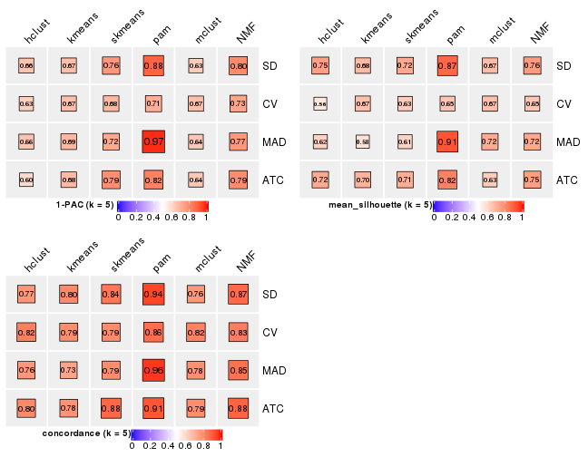
collect_stats(res_list, k = 6)
Collect partitions from all methods:
collect_classes(res_list, k = 2)
collect_classes(res_list, k = 3)
collect_classes(res_list, k = 4)
collect_classes(res_list, k = 5)
collect_classes(res_list, k = 6)
Overlap of top rows from different top-row methods:
top_rows_overlap(res_list, top_n = 1000, method = "euler")
top_rows_overlap(res_list, top_n = 2000, method = "euler")
top_rows_overlap(res_list, top_n = 3000, method = "euler")
top_rows_overlap(res_list, top_n = 4000, method = "euler")
top_rows_overlap(res_list, top_n = 5000, method = "euler")
Also visualize the correspondance of rankings between different top-row methods:
top_rows_overlap(res_list, top_n = 1000, method = "correspondance")
top_rows_overlap(res_list, top_n = 2000, method = "correspondance")
top_rows_overlap(res_list, top_n = 3000, method = "correspondance")
top_rows_overlap(res_list, top_n = 4000, method = "correspondance")
top_rows_overlap(res_list, top_n = 5000, method = "correspondance")
Heatmaps of the top rows:
top_rows_heatmap(res_list, top_n = 1000)
top_rows_heatmap(res_list, top_n = 2000)
top_rows_heatmap(res_list, top_n = 3000)
top_rows_heatmap(res_list, top_n = 4000)
top_rows_heatmap(res_list, top_n = 5000)
Test correlation between subgroups and known annotations. If the known annotation is numeric, one-way ANOVA test is applied, and if the known annotation is discrete, chi-squared contingency table test is applied.
test_to_known_factors(res_list, k = 2)
#> n disease.state(p) k
#> SD:NMF 82 4.73e-13 2
#> CV:NMF 83 1.35e-12 2
#> MAD:NMF 82 4.73e-13 2
#> ATC:NMF 83 2.68e-10 2
#> SD:skmeans 81 5.33e-13 2
#> CV:skmeans 82 3.46e-13 2
#> MAD:skmeans 83 1.35e-12 2
#> ATC:skmeans 83 1.12e-11 2
#> SD:mclust 77 1.60e-12 2
#> CV:mclust 79 2.50e-12 2
#> MAD:mclust 79 8.94e-12 2
#> ATC:mclust 80 1.96e-11 2
#> SD:kmeans 73 1.53e-12 2
#> CV:kmeans 81 2.96e-14 2
#> MAD:kmeans 83 1.21e-14 2
#> ATC:kmeans 82 1.84e-10 2
#> SD:pam 82 4.73e-12 2
#> CV:pam 80 2.61e-12 2
#> MAD:pam 82 9.31e-13 2
#> ATC:pam 81 3.88e-10 2
#> SD:hclust 62 5.68e-06 2
#> CV:hclust 78 2.31e-14 2
#> MAD:hclust 80 3.29e-12 2
#> ATC:hclust 82 6.93e-10 2
test_to_known_factors(res_list, k = 3)
#> n disease.state(p) k
#> SD:NMF 76 2.66e-12 3
#> CV:NMF 81 4.86e-14 3
#> MAD:NMF 79 5.68e-13 3
#> ATC:NMF 82 8.32e-10 3
#> SD:skmeans 80 7.38e-14 3
#> CV:skmeans 80 7.38e-14 3
#> MAD:skmeans 80 7.31e-14 3
#> ATC:skmeans 81 3.04e-10 3
#> SD:mclust 73 4.30e-12 3
#> CV:mclust 70 1.64e-12 3
#> MAD:mclust 74 4.18e-12 3
#> ATC:mclust 53 1.19e-10 3
#> SD:kmeans 80 2.13e-12 3
#> CV:kmeans 83 6.36e-13 3
#> MAD:kmeans 83 5.72e-13 3
#> ATC:kmeans 67 8.11e-11 3
#> SD:pam 80 2.97e-12 3
#> CV:pam 79 5.39e-12 3
#> MAD:pam 80 3.58e-12 3
#> ATC:pam 80 1.86e-10 3
#> SD:hclust 80 2.31e-12 3
#> CV:hclust 65 8.99e-12 3
#> MAD:hclust 78 7.62e-12 3
#> ATC:hclust 73 1.09e-10 3
test_to_known_factors(res_list, k = 4)
#> n disease.state(p) k
#> SD:NMF 77 1.02e-11 4
#> CV:NMF 73 1.84e-12 4
#> MAD:NMF 80 2.23e-12 4
#> ATC:NMF 77 1.81e-10 4
#> SD:skmeans 57 1.04e-10 4
#> CV:skmeans 54 4.16e-10 4
#> MAD:skmeans 72 5.06e-12 4
#> ATC:skmeans 73 9.72e-12 4
#> SD:mclust 78 2.12e-11 4
#> CV:mclust 57 8.31e-11 4
#> MAD:mclust 64 4.87e-10 4
#> ATC:mclust 77 3.05e-12 4
#> SD:kmeans 59 6.91e-12 4
#> CV:kmeans 70 9.73e-13 4
#> MAD:kmeans 70 3.43e-14 4
#> ATC:kmeans 77 5.06e-11 4
#> SD:pam 80 1.54e-11 4
#> CV:pam 76 2.12e-11 4
#> MAD:pam 79 2.76e-11 4
#> ATC:pam 69 3.71e-09 4
#> SD:hclust 66 2.53e-12 4
#> CV:hclust 73 3.26e-13 4
#> MAD:hclust 64 7.09e-12 4
#> ATC:hclust 76 6.39e-11 4
test_to_known_factors(res_list, k = 5)
#> n disease.state(p) k
#> SD:NMF 70 6.05e-12 5
#> CV:NMF 61 1.26e-09 5
#> MAD:NMF 70 5.41e-12 5
#> ATC:NMF 73 1.86e-09 5
#> SD:skmeans 77 1.36e-11 5
#> CV:skmeans 60 6.00e-10 5
#> MAD:skmeans 55 1.28e-09 5
#> ATC:skmeans 66 1.07e-12 5
#> SD:mclust 69 6.56e-11 5
#> CV:mclust 65 4.99e-10 5
#> MAD:mclust 67 4.26e-11 5
#> ATC:mclust 68 7.66e-12 5
#> SD:kmeans 62 3.50e-09 5
#> CV:kmeans 65 7.52e-12 5
#> MAD:kmeans 61 1.00e-09 5
#> ATC:kmeans 73 1.42e-10 5
#> SD:pam 79 1.06e-10 5
#> CV:pam 68 4.63e-10 5
#> MAD:pam 80 7.17e-11 5
#> ATC:pam 74 6.73e-10 5
#> SD:hclust 74 2.08e-11 5
#> CV:hclust 59 1.90e-11 5
#> MAD:hclust 64 2.50e-10 5
#> ATC:hclust 70 5.40e-10 5
test_to_known_factors(res_list, k = 6)
#> n disease.state(p) k
#> SD:NMF 55 5.61e-09 6
#> CV:NMF 62 1.15e-09 6
#> MAD:NMF 57 4.64e-10 6
#> ATC:NMF 69 2.32e-10 6
#> SD:skmeans 65 3.91e-11 6
#> CV:skmeans 53 7.43e-10 6
#> MAD:skmeans 57 1.61e-09 6
#> ATC:skmeans 61 1.58e-09 6
#> SD:mclust 75 3.14e-11 6
#> CV:mclust 67 2.01e-10 6
#> MAD:mclust 78 4.89e-11 6
#> ATC:mclust 61 2.19e-09 6
#> SD:kmeans 69 5.66e-10 6
#> CV:kmeans 65 2.27e-11 6
#> MAD:kmeans 55 7.38e-08 6
#> ATC:kmeans 74 9.02e-11 6
#> SD:pam 57 2.28e-09 6
#> CV:pam 65 4.91e-09 6
#> MAD:pam 66 4.25e-09 6
#> ATC:pam 77 7.94e-11 6
#> SD:hclust 73 1.39e-10 6
#> CV:hclust 47 1.94e-06 6
#> MAD:hclust 69 1.16e-10 6
#> ATC:hclust 53 7.60e-11 6
The object with results only for a single top-value method and a single partition method can be extracted as:
res = res_list["SD", "hclust"]
# you can also extract it by
# res = res_list["SD:hclust"]
A summary of res and all the functions that can be applied to it:
res
#> A 'ConsensusPartition' object with k = 2, 3, 4, 5, 6.
#> On a matrix with 21168 rows and 83 columns.
#> Top rows (1000, 2000, 3000, 4000, 5000) are extracted by 'SD' method.
#> Subgroups are detected by 'hclust' method.
#> Performed in total 1250 partitions by row resampling.
#> Best k for subgroups seems to be 2.
#>
#> Following methods can be applied to this 'ConsensusPartition' object:
#> [1] "cola_report" "collect_classes" "collect_plots"
#> [4] "collect_stats" "colnames" "compare_signatures"
#> [7] "consensus_heatmap" "dimension_reduction" "functional_enrichment"
#> [10] "get_anno_col" "get_anno" "get_classes"
#> [13] "get_consensus" "get_matrix" "get_membership"
#> [16] "get_param" "get_signatures" "get_stats"
#> [19] "is_best_k" "is_stable_k" "membership_heatmap"
#> [22] "ncol" "nrow" "plot_ecdf"
#> [25] "rownames" "select_partition_number" "show"
#> [28] "suggest_best_k" "test_to_known_factors"
collect_plots() function collects all the plots made from res for all k (number of partitions)
into one single page to provide an easy and fast comparison between different k.
collect_plots(res)
The plots are:
k and the heatmap of
predicted classes for each k.k.k.k.All the plots in panels can be made by individual functions and they are plotted later in this section.
select_partition_number() produces several plots showing different
statistics for choosing “optimized” k. There are following statistics:
k;k, the area increased is defined as \(A_k - A_{k-1}\).The detailed explanations of these statistics can be found in the cola vignette.
Generally speaking, lower PAC score, higher mean silhouette score or higher
concordance corresponds to better partition. Rand index and Jaccard index
measure how similar the current partition is compared to partition with k-1.
If they are too similar, we won't accept k is better than k-1.
select_partition_number(res)
The numeric values for all these statistics can be obtained by get_stats().
get_stats(res)
#> k 1-PAC mean_silhouette concordance area_increased Rand Jaccard
#> 2 2 0.348 0.647 0.835 0.4810 0.506 0.506
#> 3 3 0.491 0.795 0.815 0.3333 0.826 0.660
#> 4 4 0.632 0.589 0.794 0.1152 0.973 0.922
#> 5 5 0.658 0.745 0.769 0.0528 0.882 0.643
#> 6 6 0.724 0.702 0.813 0.0472 0.994 0.974
suggest_best_k() suggests the best \(k\) based on these statistics. The rules are as follows:
suggest_best_k(res)
#> [1] 2
Following shows the table of the partitions (You need to click the show/hide
code output link to see it). The membership matrix (columns with name p*)
is inferred by
clue::cl_consensus()
function with the SE method. Basically the value in the membership matrix
represents the probability to belong to a certain group. The finall class
label for an item is determined with the group with highest probability it
belongs to.
In get_classes() function, the entropy is calculated from the membership
matrix and the silhouette score is calculated from the consensus matrix.
cbind(get_classes(res, k = 2), get_membership(res, k = 2))
#> class entropy silhouette p1 p2
#> GSM207929 2 0.9635 0.359 0.388 0.612
#> GSM207930 1 0.0376 0.890 0.996 0.004
#> GSM207931 1 0.7602 0.670 0.780 0.220
#> GSM207932 2 0.0000 0.705 0.000 1.000
#> GSM207933 2 0.2948 0.688 0.052 0.948
#> GSM207934 2 0.9963 0.171 0.464 0.536
#> GSM207935 2 0.9608 0.364 0.384 0.616
#> GSM207936 2 0.9608 0.364 0.384 0.616
#> GSM207937 2 0.9608 0.364 0.384 0.616
#> GSM207938 2 0.0672 0.704 0.008 0.992
#> GSM207939 2 0.0000 0.705 0.000 1.000
#> GSM207940 2 0.0376 0.705 0.004 0.996
#> GSM207941 2 0.0000 0.705 0.000 1.000
#> GSM207942 2 0.0000 0.705 0.000 1.000
#> GSM207943 2 0.0000 0.705 0.000 1.000
#> GSM207944 2 0.0000 0.705 0.000 1.000
#> GSM207945 2 0.4431 0.667 0.092 0.908
#> GSM207946 2 0.0000 0.705 0.000 1.000
#> GSM207947 1 0.1843 0.881 0.972 0.028
#> GSM207948 2 0.0376 0.705 0.004 0.996
#> GSM207949 2 0.0000 0.705 0.000 1.000
#> GSM207950 2 0.0000 0.705 0.000 1.000
#> GSM207951 2 0.0376 0.705 0.004 0.996
#> GSM207952 1 0.6531 0.754 0.832 0.168
#> GSM207953 2 0.0376 0.705 0.004 0.996
#> GSM207954 2 0.0000 0.705 0.000 1.000
#> GSM207955 2 0.0376 0.705 0.004 0.996
#> GSM207956 2 0.9710 0.328 0.400 0.600
#> GSM207957 2 0.0376 0.705 0.004 0.996
#> GSM207958 2 0.8661 0.492 0.288 0.712
#> GSM207959 2 0.0000 0.705 0.000 1.000
#> GSM207960 1 0.5059 0.814 0.888 0.112
#> GSM207961 1 0.5178 0.809 0.884 0.116
#> GSM207962 1 0.0376 0.890 0.996 0.004
#> GSM207963 1 0.0376 0.890 0.996 0.004
#> GSM207964 2 0.9970 0.324 0.468 0.532
#> GSM207965 2 0.9970 0.324 0.468 0.532
#> GSM207966 1 0.0000 0.888 1.000 0.000
#> GSM207967 1 0.7528 0.675 0.784 0.216
#> GSM207968 1 0.8207 0.614 0.744 0.256
#> GSM207969 2 0.9988 0.295 0.480 0.520
#> GSM207970 2 0.9988 0.295 0.480 0.520
#> GSM207971 2 0.9998 0.263 0.492 0.508
#> GSM207972 1 0.5737 0.804 0.864 0.136
#> GSM207973 1 0.0000 0.888 1.000 0.000
#> GSM207974 1 0.0000 0.888 1.000 0.000
#> GSM207975 1 0.1184 0.887 0.984 0.016
#> GSM207976 1 0.8955 0.506 0.688 0.312
#> GSM207977 2 0.9710 0.458 0.400 0.600
#> GSM207978 1 0.0000 0.888 1.000 0.000
#> GSM207979 1 0.0000 0.888 1.000 0.000
#> GSM207980 2 0.9710 0.458 0.400 0.600
#> GSM207981 2 0.9460 0.504 0.364 0.636
#> GSM207982 2 0.9460 0.504 0.364 0.636
#> GSM207983 2 0.9460 0.504 0.364 0.636
#> GSM207984 1 0.1184 0.887 0.984 0.016
#> GSM207985 1 0.0000 0.888 1.000 0.000
#> GSM207986 2 0.9460 0.504 0.364 0.636
#> GSM207987 2 0.9460 0.504 0.364 0.636
#> GSM207988 2 0.9460 0.504 0.364 0.636
#> GSM207989 2 0.9460 0.504 0.364 0.636
#> GSM207990 2 0.9710 0.458 0.400 0.600
#> GSM207991 2 0.9491 0.500 0.368 0.632
#> GSM207992 2 0.9491 0.500 0.368 0.632
#> GSM207993 2 0.9754 0.444 0.408 0.592
#> GSM207994 2 0.0376 0.705 0.004 0.996
#> GSM207995 1 0.0376 0.890 0.996 0.004
#> GSM207996 1 0.0376 0.890 0.996 0.004
#> GSM207997 1 0.7602 0.653 0.780 0.220
#> GSM207998 1 0.0376 0.890 0.996 0.004
#> GSM207999 1 0.1414 0.888 0.980 0.020
#> GSM208000 1 0.1414 0.888 0.980 0.020
#> GSM208001 1 0.0938 0.889 0.988 0.012
#> GSM208002 1 0.7602 0.653 0.780 0.220
#> GSM208003 1 0.5178 0.809 0.884 0.116
#> GSM208004 1 0.0376 0.890 0.996 0.004
#> GSM208005 1 0.1414 0.887 0.980 0.020
#> GSM208006 2 0.9358 0.416 0.352 0.648
#> GSM208007 2 0.9358 0.416 0.352 0.648
#> GSM208008 1 0.0376 0.890 0.996 0.004
#> GSM208009 1 0.0376 0.890 0.996 0.004
#> GSM208010 1 0.4161 0.841 0.916 0.084
#> GSM208011 1 1.0000 -0.278 0.504 0.496
cbind(get_classes(res, k = 3), get_membership(res, k = 3))
#> class entropy silhouette p1 p2 p3
#> GSM207929 2 0.7925 0.546 0.316 0.604 0.080
#> GSM207930 1 0.0661 0.854 0.988 0.004 0.008
#> GSM207931 1 0.6810 0.620 0.720 0.212 0.068
#> GSM207932 2 0.0237 0.835 0.000 0.996 0.004
#> GSM207933 2 0.2063 0.815 0.044 0.948 0.008
#> GSM207934 2 0.7912 0.371 0.404 0.536 0.060
#> GSM207935 2 0.7901 0.554 0.312 0.608 0.080
#> GSM207936 2 0.7901 0.554 0.312 0.608 0.080
#> GSM207937 2 0.7901 0.554 0.312 0.608 0.080
#> GSM207938 2 0.0237 0.834 0.004 0.996 0.000
#> GSM207939 2 0.0237 0.835 0.000 0.996 0.004
#> GSM207940 2 0.0475 0.835 0.004 0.992 0.004
#> GSM207941 2 0.0237 0.835 0.000 0.996 0.004
#> GSM207942 2 0.0237 0.835 0.000 0.996 0.004
#> GSM207943 2 0.0237 0.835 0.000 0.996 0.004
#> GSM207944 2 0.0237 0.835 0.000 0.996 0.004
#> GSM207945 2 0.3369 0.796 0.052 0.908 0.040
#> GSM207946 2 0.0237 0.835 0.000 0.996 0.004
#> GSM207947 1 0.2564 0.839 0.936 0.028 0.036
#> GSM207948 2 0.0000 0.835 0.000 1.000 0.000
#> GSM207949 2 0.0237 0.835 0.000 0.996 0.004
#> GSM207950 2 0.0237 0.835 0.000 0.996 0.004
#> GSM207951 2 0.0000 0.835 0.000 1.000 0.000
#> GSM207952 1 0.6083 0.691 0.772 0.168 0.060
#> GSM207953 2 0.0000 0.835 0.000 1.000 0.000
#> GSM207954 2 0.0237 0.835 0.000 0.996 0.004
#> GSM207955 2 0.0000 0.835 0.000 1.000 0.000
#> GSM207956 2 0.7665 0.516 0.340 0.600 0.060
#> GSM207957 2 0.0475 0.835 0.004 0.992 0.004
#> GSM207958 2 0.6806 0.668 0.228 0.712 0.060
#> GSM207959 2 0.0237 0.835 0.000 0.996 0.004
#> GSM207960 1 0.4489 0.785 0.856 0.108 0.036
#> GSM207961 1 0.5659 0.785 0.796 0.052 0.152
#> GSM207962 1 0.0475 0.857 0.992 0.004 0.004
#> GSM207963 1 0.0475 0.857 0.992 0.004 0.004
#> GSM207964 3 0.7644 0.848 0.136 0.180 0.684
#> GSM207965 3 0.7644 0.848 0.136 0.180 0.684
#> GSM207966 1 0.4235 0.822 0.824 0.000 0.176
#> GSM207967 1 0.6678 0.614 0.724 0.216 0.060
#> GSM207968 1 0.8984 0.469 0.524 0.148 0.328
#> GSM207969 3 0.6677 0.879 0.088 0.168 0.744
#> GSM207970 3 0.6677 0.879 0.088 0.168 0.744
#> GSM207971 3 0.6793 0.863 0.100 0.160 0.740
#> GSM207972 1 0.7530 0.717 0.664 0.084 0.252
#> GSM207973 1 0.4235 0.822 0.824 0.000 0.176
#> GSM207974 1 0.4235 0.822 0.824 0.000 0.176
#> GSM207975 1 0.1315 0.856 0.972 0.008 0.020
#> GSM207976 1 0.9394 0.436 0.508 0.224 0.268
#> GSM207977 3 0.6034 0.919 0.036 0.212 0.752
#> GSM207978 1 0.4235 0.822 0.824 0.000 0.176
#> GSM207979 1 0.4235 0.822 0.824 0.000 0.176
#> GSM207980 3 0.6034 0.919 0.036 0.212 0.752
#> GSM207981 3 0.4974 0.918 0.000 0.236 0.764
#> GSM207982 3 0.4974 0.918 0.000 0.236 0.764
#> GSM207983 3 0.4974 0.918 0.000 0.236 0.764
#> GSM207984 1 0.1315 0.856 0.972 0.008 0.020
#> GSM207985 1 0.4235 0.822 0.824 0.000 0.176
#> GSM207986 3 0.4974 0.918 0.000 0.236 0.764
#> GSM207987 3 0.4974 0.918 0.000 0.236 0.764
#> GSM207988 3 0.4974 0.918 0.000 0.236 0.764
#> GSM207989 3 0.4974 0.918 0.000 0.236 0.764
#> GSM207990 3 0.6034 0.919 0.036 0.212 0.752
#> GSM207991 3 0.5158 0.919 0.004 0.232 0.764
#> GSM207992 3 0.5158 0.919 0.004 0.232 0.764
#> GSM207993 3 0.7213 0.895 0.088 0.212 0.700
#> GSM207994 2 0.0475 0.835 0.004 0.992 0.004
#> GSM207995 1 0.0475 0.855 0.992 0.004 0.004
#> GSM207996 1 0.0475 0.855 0.992 0.004 0.004
#> GSM207997 1 0.7831 0.581 0.632 0.088 0.280
#> GSM207998 1 0.0475 0.855 0.992 0.004 0.004
#> GSM207999 1 0.3272 0.852 0.892 0.004 0.104
#> GSM208000 1 0.3272 0.852 0.892 0.004 0.104
#> GSM208001 1 0.2356 0.853 0.928 0.000 0.072
#> GSM208002 1 0.7831 0.581 0.632 0.088 0.280
#> GSM208003 1 0.5659 0.785 0.796 0.052 0.152
#> GSM208004 1 0.0424 0.857 0.992 0.000 0.008
#> GSM208005 1 0.4326 0.842 0.844 0.012 0.144
#> GSM208006 2 0.7536 0.597 0.292 0.640 0.068
#> GSM208007 2 0.7536 0.597 0.292 0.640 0.068
#> GSM208008 1 0.0475 0.857 0.992 0.004 0.004
#> GSM208009 1 0.0424 0.857 0.992 0.000 0.008
#> GSM208010 1 0.4865 0.814 0.832 0.032 0.136
#> GSM208011 3 0.7829 0.833 0.164 0.164 0.672
cbind(get_classes(res, k = 4), get_membership(res, k = 4))
#> class entropy silhouette p1 p2 p3 p4
#> GSM207929 2 0.8224 -0.3738 0.264 0.372 0.012 0.352
#> GSM207930 1 0.0592 0.7012 0.984 0.000 0.000 0.016
#> GSM207931 1 0.6396 0.2495 0.648 0.092 0.008 0.252
#> GSM207932 2 0.0000 0.7532 0.000 1.000 0.000 0.000
#> GSM207933 2 0.3962 0.6481 0.044 0.832 0.000 0.124
#> GSM207934 4 0.7660 0.4595 0.276 0.260 0.000 0.464
#> GSM207935 2 0.8208 -0.3506 0.260 0.384 0.012 0.344
#> GSM207936 2 0.8201 -0.3408 0.260 0.392 0.012 0.336
#> GSM207937 2 0.8208 -0.3506 0.260 0.384 0.012 0.344
#> GSM207938 2 0.1807 0.7393 0.008 0.940 0.000 0.052
#> GSM207939 2 0.1302 0.7456 0.000 0.956 0.000 0.044
#> GSM207940 2 0.1489 0.7442 0.004 0.952 0.000 0.044
#> GSM207941 2 0.0000 0.7532 0.000 1.000 0.000 0.000
#> GSM207942 2 0.0000 0.7532 0.000 1.000 0.000 0.000
#> GSM207943 2 0.0000 0.7532 0.000 1.000 0.000 0.000
#> GSM207944 2 0.0000 0.7532 0.000 1.000 0.000 0.000
#> GSM207945 2 0.4874 0.5668 0.056 0.764 0.000 0.180
#> GSM207946 2 0.1302 0.7456 0.000 0.956 0.000 0.044
#> GSM207947 1 0.2281 0.6586 0.904 0.000 0.000 0.096
#> GSM207948 2 0.0188 0.7529 0.004 0.996 0.000 0.000
#> GSM207949 2 0.0000 0.7532 0.000 1.000 0.000 0.000
#> GSM207950 2 0.0000 0.7532 0.000 1.000 0.000 0.000
#> GSM207951 2 0.0188 0.7529 0.004 0.996 0.000 0.000
#> GSM207952 1 0.5417 0.3363 0.676 0.040 0.000 0.284
#> GSM207953 2 0.0188 0.7529 0.004 0.996 0.000 0.000
#> GSM207954 2 0.0000 0.7532 0.000 1.000 0.000 0.000
#> GSM207955 2 0.1109 0.7497 0.004 0.968 0.000 0.028
#> GSM207956 4 0.7795 0.3198 0.252 0.344 0.000 0.404
#> GSM207957 2 0.1489 0.7442 0.004 0.952 0.000 0.044
#> GSM207958 2 0.7585 -0.2038 0.224 0.472 0.000 0.304
#> GSM207959 2 0.0000 0.7532 0.000 1.000 0.000 0.000
#> GSM207960 1 0.4334 0.5656 0.804 0.032 0.004 0.160
#> GSM207961 1 0.4804 0.6283 0.780 0.000 0.148 0.072
#> GSM207962 1 0.0188 0.7051 0.996 0.000 0.000 0.004
#> GSM207963 1 0.0188 0.7051 0.996 0.000 0.000 0.004
#> GSM207964 3 0.3931 0.8182 0.128 0.000 0.832 0.040
#> GSM207965 3 0.3931 0.8182 0.128 0.000 0.832 0.040
#> GSM207966 1 0.5039 0.5160 0.592 0.000 0.004 0.404
#> GSM207967 1 0.5643 0.0158 0.548 0.024 0.000 0.428
#> GSM207968 1 0.8780 0.0195 0.368 0.040 0.288 0.304
#> GSM207969 3 0.3542 0.8548 0.076 0.000 0.864 0.060
#> GSM207970 3 0.3542 0.8548 0.076 0.000 0.864 0.060
#> GSM207971 3 0.3894 0.8370 0.088 0.000 0.844 0.068
#> GSM207972 1 0.7698 0.3579 0.548 0.024 0.164 0.264
#> GSM207973 1 0.4991 0.5241 0.608 0.000 0.004 0.388
#> GSM207974 1 0.4991 0.5241 0.608 0.000 0.004 0.388
#> GSM207975 1 0.1042 0.7045 0.972 0.000 0.020 0.008
#> GSM207976 4 0.9058 -0.1178 0.336 0.064 0.248 0.352
#> GSM207977 3 0.1452 0.8969 0.036 0.000 0.956 0.008
#> GSM207978 1 0.5039 0.5160 0.592 0.000 0.004 0.404
#> GSM207979 1 0.5039 0.5160 0.592 0.000 0.004 0.404
#> GSM207980 3 0.1452 0.8969 0.036 0.000 0.956 0.008
#> GSM207981 3 0.1635 0.9006 0.000 0.008 0.948 0.044
#> GSM207982 3 0.1635 0.9006 0.000 0.008 0.948 0.044
#> GSM207983 3 0.1635 0.9006 0.000 0.008 0.948 0.044
#> GSM207984 1 0.1042 0.7045 0.972 0.000 0.020 0.008
#> GSM207985 1 0.5039 0.5160 0.592 0.000 0.004 0.404
#> GSM207986 3 0.1635 0.9006 0.000 0.008 0.948 0.044
#> GSM207987 3 0.1635 0.9006 0.000 0.008 0.948 0.044
#> GSM207988 3 0.1635 0.9006 0.000 0.008 0.948 0.044
#> GSM207989 3 0.1635 0.9006 0.000 0.008 0.948 0.044
#> GSM207990 3 0.1452 0.8969 0.036 0.000 0.956 0.008
#> GSM207991 3 0.1822 0.9013 0.004 0.008 0.944 0.044
#> GSM207992 3 0.1822 0.9013 0.004 0.008 0.944 0.044
#> GSM207993 3 0.2480 0.8710 0.088 0.000 0.904 0.008
#> GSM207994 2 0.2999 0.6872 0.004 0.864 0.000 0.132
#> GSM207995 1 0.0817 0.6991 0.976 0.000 0.000 0.024
#> GSM207996 1 0.0817 0.6991 0.976 0.000 0.000 0.024
#> GSM207997 1 0.6790 0.3886 0.576 0.000 0.296 0.128
#> GSM207998 1 0.0817 0.6991 0.976 0.000 0.000 0.024
#> GSM207999 1 0.3547 0.6733 0.840 0.000 0.016 0.144
#> GSM208000 1 0.3547 0.6733 0.840 0.000 0.016 0.144
#> GSM208001 1 0.2542 0.6980 0.904 0.000 0.012 0.084
#> GSM208002 1 0.6790 0.3886 0.576 0.000 0.296 0.128
#> GSM208003 1 0.4804 0.6283 0.780 0.000 0.148 0.072
#> GSM208004 1 0.1022 0.7043 0.968 0.000 0.000 0.032
#> GSM208005 1 0.4633 0.6559 0.780 0.000 0.048 0.172
#> GSM208006 2 0.8142 -0.3239 0.244 0.412 0.012 0.332
#> GSM208007 2 0.8142 -0.3239 0.244 0.412 0.012 0.332
#> GSM208008 1 0.0188 0.7051 0.996 0.000 0.000 0.004
#> GSM208009 1 0.1022 0.7043 0.968 0.000 0.000 0.032
#> GSM208010 1 0.4332 0.6566 0.816 0.000 0.112 0.072
#> GSM208011 3 0.3958 0.8027 0.160 0.000 0.816 0.024
cbind(get_classes(res, k = 5), get_membership(res, k = 5))
#> class entropy silhouette p1 p2 p3 p4 p5
#> GSM207929 4 0.7204 0.6556 0.232 0.296 0.004 0.448 0.020
#> GSM207930 1 0.0798 0.7498 0.976 0.000 0.000 0.008 0.016
#> GSM207931 1 0.6185 0.3054 0.608 0.076 0.004 0.276 0.036
#> GSM207932 2 0.0000 0.9331 0.000 1.000 0.000 0.000 0.000
#> GSM207933 2 0.3527 0.7249 0.016 0.792 0.000 0.192 0.000
#> GSM207934 4 0.6274 0.5867 0.204 0.172 0.000 0.604 0.020
#> GSM207935 4 0.7216 0.6515 0.228 0.308 0.004 0.440 0.020
#> GSM207936 4 0.7240 0.6419 0.228 0.320 0.004 0.428 0.020
#> GSM207937 4 0.7216 0.6515 0.228 0.308 0.004 0.440 0.020
#> GSM207938 2 0.1831 0.8975 0.000 0.920 0.000 0.076 0.004
#> GSM207939 2 0.1270 0.9143 0.000 0.948 0.000 0.052 0.000
#> GSM207940 2 0.1478 0.9065 0.000 0.936 0.000 0.064 0.000
#> GSM207941 2 0.0000 0.9331 0.000 1.000 0.000 0.000 0.000
#> GSM207942 2 0.0000 0.9331 0.000 1.000 0.000 0.000 0.000
#> GSM207943 2 0.0000 0.9331 0.000 1.000 0.000 0.000 0.000
#> GSM207944 2 0.0000 0.9331 0.000 1.000 0.000 0.000 0.000
#> GSM207945 2 0.4369 0.5911 0.012 0.720 0.000 0.252 0.016
#> GSM207946 2 0.1341 0.9120 0.000 0.944 0.000 0.056 0.000
#> GSM207947 1 0.3242 0.6917 0.852 0.000 0.000 0.072 0.076
#> GSM207948 2 0.0162 0.9324 0.000 0.996 0.000 0.004 0.000
#> GSM207949 2 0.0000 0.9331 0.000 1.000 0.000 0.000 0.000
#> GSM207950 2 0.0000 0.9331 0.000 1.000 0.000 0.000 0.000
#> GSM207951 2 0.0162 0.9324 0.000 0.996 0.000 0.004 0.000
#> GSM207952 1 0.5638 0.3825 0.600 0.024 0.000 0.328 0.048
#> GSM207953 2 0.0162 0.9324 0.000 0.996 0.000 0.004 0.000
#> GSM207954 2 0.0000 0.9331 0.000 1.000 0.000 0.000 0.000
#> GSM207955 2 0.1205 0.9209 0.000 0.956 0.000 0.040 0.004
#> GSM207956 4 0.6677 0.5941 0.192 0.268 0.000 0.524 0.016
#> GSM207957 2 0.1478 0.9065 0.000 0.936 0.000 0.064 0.000
#> GSM207958 4 0.6507 0.4627 0.164 0.396 0.000 0.436 0.004
#> GSM207959 2 0.0000 0.9331 0.000 1.000 0.000 0.000 0.000
#> GSM207960 1 0.4319 0.6357 0.772 0.024 0.000 0.176 0.028
#> GSM207961 1 0.5006 0.6294 0.764 0.000 0.080 0.076 0.080
#> GSM207962 1 0.0510 0.7559 0.984 0.000 0.000 0.000 0.016
#> GSM207963 1 0.0510 0.7559 0.984 0.000 0.000 0.000 0.016
#> GSM207964 3 0.5617 0.8018 0.112 0.000 0.716 0.072 0.100
#> GSM207965 3 0.5617 0.8018 0.112 0.000 0.716 0.072 0.100
#> GSM207966 5 0.3586 0.9578 0.264 0.000 0.000 0.000 0.736
#> GSM207967 4 0.5088 -0.1375 0.436 0.000 0.000 0.528 0.036
#> GSM207968 4 0.8319 -0.0415 0.220 0.012 0.100 0.392 0.276
#> GSM207969 3 0.5203 0.8280 0.068 0.000 0.748 0.080 0.104
#> GSM207970 3 0.5203 0.8280 0.068 0.000 0.748 0.080 0.104
#> GSM207971 3 0.5478 0.8127 0.080 0.000 0.728 0.084 0.108
#> GSM207972 1 0.7642 0.3027 0.444 0.004 0.064 0.308 0.180
#> GSM207973 5 0.3966 0.9093 0.336 0.000 0.000 0.000 0.664
#> GSM207974 5 0.3966 0.9093 0.336 0.000 0.000 0.000 0.664
#> GSM207975 1 0.0798 0.7559 0.976 0.000 0.008 0.016 0.000
#> GSM207976 4 0.7853 0.0779 0.164 0.032 0.068 0.516 0.220
#> GSM207977 3 0.3776 0.8660 0.036 0.000 0.840 0.048 0.076
#> GSM207978 5 0.3586 0.9578 0.264 0.000 0.000 0.000 0.736
#> GSM207979 5 0.3586 0.9578 0.264 0.000 0.000 0.000 0.736
#> GSM207980 3 0.3776 0.8660 0.036 0.000 0.840 0.048 0.076
#> GSM207981 3 0.0162 0.8707 0.000 0.004 0.996 0.000 0.000
#> GSM207982 3 0.0162 0.8707 0.000 0.004 0.996 0.000 0.000
#> GSM207983 3 0.0162 0.8707 0.000 0.004 0.996 0.000 0.000
#> GSM207984 1 0.0798 0.7559 0.976 0.000 0.008 0.016 0.000
#> GSM207985 5 0.3586 0.9578 0.264 0.000 0.000 0.000 0.736
#> GSM207986 3 0.0162 0.8707 0.000 0.004 0.996 0.000 0.000
#> GSM207987 3 0.0162 0.8707 0.000 0.004 0.996 0.000 0.000
#> GSM207988 3 0.0162 0.8707 0.000 0.004 0.996 0.000 0.000
#> GSM207989 3 0.0162 0.8707 0.000 0.004 0.996 0.000 0.000
#> GSM207990 3 0.3776 0.8660 0.036 0.000 0.840 0.048 0.076
#> GSM207991 3 0.0324 0.8711 0.004 0.004 0.992 0.000 0.000
#> GSM207992 3 0.0324 0.8711 0.004 0.004 0.992 0.000 0.000
#> GSM207993 3 0.4620 0.8471 0.080 0.000 0.788 0.048 0.084
#> GSM207994 2 0.3109 0.7414 0.000 0.800 0.000 0.200 0.000
#> GSM207995 1 0.0912 0.7496 0.972 0.000 0.000 0.012 0.016
#> GSM207996 1 0.0912 0.7496 0.972 0.000 0.000 0.012 0.016
#> GSM207997 1 0.7574 0.3672 0.516 0.000 0.196 0.144 0.144
#> GSM207998 1 0.1018 0.7501 0.968 0.000 0.000 0.016 0.016
#> GSM207999 1 0.3876 0.6959 0.812 0.000 0.004 0.116 0.068
#> GSM208000 1 0.3876 0.6959 0.812 0.000 0.004 0.116 0.068
#> GSM208001 1 0.2729 0.7267 0.884 0.000 0.000 0.060 0.056
#> GSM208002 1 0.7574 0.3672 0.516 0.000 0.196 0.144 0.144
#> GSM208003 1 0.5006 0.6294 0.764 0.000 0.080 0.076 0.080
#> GSM208004 1 0.1168 0.7506 0.960 0.000 0.000 0.008 0.032
#> GSM208005 1 0.5393 0.5725 0.672 0.000 0.004 0.120 0.204
#> GSM208006 4 0.7012 0.6260 0.196 0.320 0.004 0.464 0.016
#> GSM208007 4 0.7012 0.6260 0.196 0.320 0.004 0.464 0.016
#> GSM208008 1 0.0510 0.7559 0.984 0.000 0.000 0.000 0.016
#> GSM208009 1 0.1168 0.7506 0.960 0.000 0.000 0.008 0.032
#> GSM208010 1 0.4471 0.6628 0.800 0.000 0.060 0.068 0.072
#> GSM208011 3 0.5485 0.7924 0.152 0.000 0.716 0.056 0.076
cbind(get_classes(res, k = 6), get_membership(res, k = 6))
#> class entropy silhouette p1 p2 p3 p4 p5 p6
#> GSM207929 4 0.5543 0.71555 0.136 0.172 0.012 0.656 0.000 0.024
#> GSM207930 1 0.0964 0.72951 0.968 0.000 0.000 0.012 0.004 0.016
#> GSM207931 1 0.5604 0.22215 0.512 0.040 0.008 0.408 0.008 0.024
#> GSM207932 2 0.0260 0.90371 0.000 0.992 0.000 0.000 0.000 0.008
#> GSM207933 2 0.3758 0.58749 0.000 0.700 0.000 0.284 0.000 0.016
#> GSM207934 4 0.3771 0.49698 0.028 0.048 0.000 0.804 0.000 0.120
#> GSM207935 4 0.5595 0.72238 0.132 0.184 0.012 0.648 0.000 0.024
#> GSM207936 4 0.5677 0.71789 0.132 0.196 0.012 0.636 0.000 0.024
#> GSM207937 4 0.5595 0.72238 0.132 0.184 0.012 0.648 0.000 0.024
#> GSM207938 2 0.2053 0.85738 0.000 0.888 0.000 0.108 0.000 0.004
#> GSM207939 2 0.1204 0.89321 0.000 0.944 0.000 0.056 0.000 0.000
#> GSM207940 2 0.1765 0.86819 0.000 0.904 0.000 0.096 0.000 0.000
#> GSM207941 2 0.0260 0.90371 0.000 0.992 0.000 0.000 0.000 0.008
#> GSM207942 2 0.0260 0.90371 0.000 0.992 0.000 0.000 0.000 0.008
#> GSM207943 2 0.0603 0.90676 0.000 0.980 0.000 0.016 0.000 0.004
#> GSM207944 2 0.0603 0.90676 0.000 0.980 0.000 0.016 0.000 0.004
#> GSM207945 2 0.4344 0.43263 0.000 0.628 0.000 0.336 0.000 0.036
#> GSM207946 2 0.1444 0.88412 0.000 0.928 0.000 0.072 0.000 0.000
#> GSM207947 1 0.3505 0.64072 0.812 0.000 0.000 0.124 0.008 0.056
#> GSM207948 2 0.0363 0.90663 0.000 0.988 0.000 0.012 0.000 0.000
#> GSM207949 2 0.0260 0.90371 0.000 0.992 0.000 0.000 0.000 0.008
#> GSM207950 2 0.0146 0.90509 0.000 0.996 0.000 0.000 0.000 0.004
#> GSM207951 2 0.0363 0.90663 0.000 0.988 0.000 0.012 0.000 0.000
#> GSM207952 1 0.6103 0.10007 0.468 0.008 0.000 0.356 0.008 0.160
#> GSM207953 2 0.0363 0.90663 0.000 0.988 0.000 0.012 0.000 0.000
#> GSM207954 2 0.0146 0.90656 0.000 0.996 0.000 0.004 0.000 0.000
#> GSM207955 2 0.1285 0.89613 0.000 0.944 0.000 0.052 0.000 0.004
#> GSM207956 4 0.4335 0.61879 0.032 0.140 0.000 0.760 0.000 0.068
#> GSM207957 2 0.1765 0.86819 0.000 0.904 0.000 0.096 0.000 0.000
#> GSM207958 4 0.5101 0.63878 0.032 0.264 0.000 0.644 0.000 0.060
#> GSM207959 2 0.0146 0.90656 0.000 0.996 0.000 0.004 0.000 0.000
#> GSM207960 1 0.4643 0.49970 0.672 0.004 0.008 0.276 0.008 0.032
#> GSM207961 1 0.4808 0.57569 0.732 0.000 0.164 0.020 0.024 0.060
#> GSM207962 1 0.0603 0.73170 0.980 0.000 0.000 0.004 0.000 0.016
#> GSM207963 1 0.0603 0.73170 0.980 0.000 0.000 0.004 0.000 0.016
#> GSM207964 3 0.3267 0.68787 0.084 0.000 0.848 0.008 0.012 0.048
#> GSM207965 3 0.3267 0.68787 0.084 0.000 0.848 0.008 0.012 0.048
#> GSM207966 5 0.0363 0.93901 0.012 0.000 0.000 0.000 0.988 0.000
#> GSM207967 4 0.5926 -0.23162 0.296 0.000 0.000 0.460 0.000 0.244
#> GSM207968 6 0.7576 0.74817 0.180 0.000 0.160 0.112 0.056 0.492
#> GSM207969 3 0.2850 0.71355 0.060 0.000 0.880 0.012 0.016 0.032
#> GSM207970 3 0.2850 0.71355 0.060 0.000 0.880 0.012 0.016 0.032
#> GSM207971 3 0.3165 0.69057 0.072 0.000 0.860 0.012 0.016 0.040
#> GSM207972 1 0.7767 -0.29109 0.404 0.000 0.156 0.136 0.032 0.272
#> GSM207973 5 0.1910 0.87212 0.108 0.000 0.000 0.000 0.892 0.000
#> GSM207974 5 0.1910 0.87212 0.108 0.000 0.000 0.000 0.892 0.000
#> GSM207975 1 0.1409 0.72840 0.948 0.000 0.032 0.008 0.000 0.012
#> GSM207976 6 0.6424 0.74672 0.124 0.008 0.104 0.144 0.008 0.612
#> GSM207977 3 0.0632 0.77103 0.024 0.000 0.976 0.000 0.000 0.000
#> GSM207978 5 0.0363 0.93901 0.012 0.000 0.000 0.000 0.988 0.000
#> GSM207979 5 0.0363 0.93901 0.012 0.000 0.000 0.000 0.988 0.000
#> GSM207980 3 0.0632 0.77103 0.024 0.000 0.976 0.000 0.000 0.000
#> GSM207981 3 0.3076 0.78751 0.000 0.000 0.760 0.000 0.000 0.240
#> GSM207982 3 0.3076 0.78751 0.000 0.000 0.760 0.000 0.000 0.240
#> GSM207983 3 0.3076 0.78751 0.000 0.000 0.760 0.000 0.000 0.240
#> GSM207984 1 0.1409 0.72840 0.948 0.000 0.032 0.008 0.000 0.012
#> GSM207985 5 0.0363 0.93901 0.012 0.000 0.000 0.000 0.988 0.000
#> GSM207986 3 0.3076 0.78751 0.000 0.000 0.760 0.000 0.000 0.240
#> GSM207987 3 0.3076 0.78751 0.000 0.000 0.760 0.000 0.000 0.240
#> GSM207988 3 0.3076 0.78751 0.000 0.000 0.760 0.000 0.000 0.240
#> GSM207989 3 0.3076 0.78751 0.000 0.000 0.760 0.000 0.000 0.240
#> GSM207990 3 0.0632 0.77103 0.024 0.000 0.976 0.000 0.000 0.000
#> GSM207991 3 0.3215 0.78791 0.004 0.000 0.756 0.000 0.000 0.240
#> GSM207992 3 0.3215 0.78791 0.004 0.000 0.756 0.000 0.000 0.240
#> GSM207993 3 0.1780 0.74764 0.048 0.000 0.924 0.000 0.000 0.028
#> GSM207994 2 0.3528 0.57238 0.000 0.700 0.000 0.296 0.000 0.004
#> GSM207995 1 0.0951 0.72958 0.968 0.000 0.000 0.020 0.004 0.008
#> GSM207996 1 0.0951 0.72958 0.968 0.000 0.000 0.020 0.004 0.008
#> GSM207997 1 0.6954 0.00292 0.468 0.000 0.304 0.040 0.032 0.156
#> GSM207998 1 0.1053 0.72782 0.964 0.000 0.000 0.020 0.004 0.012
#> GSM207999 1 0.4175 0.65081 0.804 0.000 0.024 0.080 0.036 0.056
#> GSM208000 1 0.4175 0.65081 0.804 0.000 0.024 0.080 0.036 0.056
#> GSM208001 1 0.3039 0.70025 0.876 0.000 0.024 0.032 0.028 0.040
#> GSM208002 1 0.6954 0.00292 0.468 0.000 0.304 0.040 0.032 0.156
#> GSM208003 1 0.4808 0.57569 0.732 0.000 0.164 0.020 0.024 0.060
#> GSM208004 1 0.1167 0.73143 0.960 0.000 0.000 0.012 0.020 0.008
#> GSM208005 1 0.6284 0.42308 0.636 0.000 0.044 0.072 0.096 0.152
#> GSM208006 4 0.6057 0.70070 0.088 0.216 0.012 0.620 0.004 0.060
#> GSM208007 4 0.6057 0.70070 0.088 0.216 0.012 0.620 0.004 0.060
#> GSM208008 1 0.0603 0.73170 0.980 0.000 0.000 0.004 0.000 0.016
#> GSM208009 1 0.1167 0.73143 0.960 0.000 0.000 0.012 0.020 0.008
#> GSM208010 1 0.4593 0.61646 0.764 0.000 0.124 0.024 0.028 0.060
#> GSM208011 3 0.3085 0.67415 0.148 0.000 0.828 0.008 0.004 0.012
Heatmaps for the consensus matrix. It visualizes the probability of two samples to be in a same group.
consensus_heatmap(res, k = 2)
consensus_heatmap(res, k = 3)
consensus_heatmap(res, k = 4)
consensus_heatmap(res, k = 5)
consensus_heatmap(res, k = 6)
Heatmaps for the membership of samples in all partitions to see how consistent they are:
membership_heatmap(res, k = 2)
membership_heatmap(res, k = 3)
membership_heatmap(res, k = 4)
membership_heatmap(res, k = 5)
membership_heatmap(res, k = 6)
As soon as we have had the classes for columns, we can look for signatures which are significantly different between classes which can be candidate marks for certain classes. Following are the heatmaps for signatures.
Signature heatmaps where rows are scaled:
get_signatures(res, k = 2)
get_signatures(res, k = 3)
get_signatures(res, k = 4)
get_signatures(res, k = 5)
get_signatures(res, k = 6)
Signature heatmaps where rows are not scaled:
get_signatures(res, k = 2, scale_rows = FALSE)
get_signatures(res, k = 3, scale_rows = FALSE)
get_signatures(res, k = 4, scale_rows = FALSE)
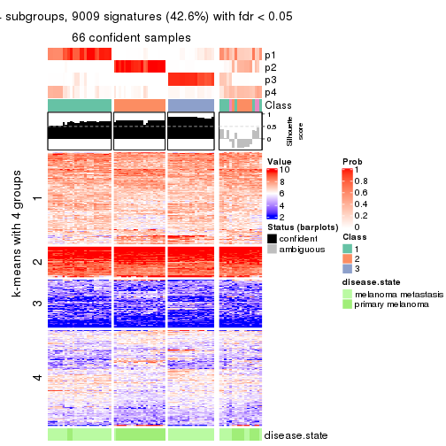
get_signatures(res, k = 5, scale_rows = FALSE)
get_signatures(res, k = 6, scale_rows = FALSE)
Compare the overlap of signatures from different k:
compare_signatures(res)
get_signature() returns a data frame invisibly. TO get the list of signatures, the function
call should be assigned to a variable explicitly. In following code, if plot argument is set
to FALSE, no heatmap is plotted while only the differential analysis is performed.
# code only for demonstration
tb = get_signature(res, k = ..., plot = FALSE)
An example of the output of tb is:
#> which_row fdr mean_1 mean_2 scaled_mean_1 scaled_mean_2 km
#> 1 38 0.042760348 8.373488 9.131774 -0.5533452 0.5164555 1
#> 2 40 0.018707592 7.106213 8.469186 -0.6173731 0.5762149 1
#> 3 55 0.019134737 10.221463 11.207825 -0.6159697 0.5749050 1
#> 4 59 0.006059896 5.921854 7.869574 -0.6899429 0.6439467 1
#> 5 60 0.018055526 8.928898 10.211722 -0.6204761 0.5791110 1
#> 6 98 0.009384629 15.714769 14.887706 0.6635654 -0.6193277 2
...
The columns in tb are:
which_row: row indices corresponding to the input matrix.fdr: FDR for the differential test. mean_x: The mean value in group x.scaled_mean_x: The mean value in group x after rows are scaled.km: Row groups if k-means clustering is applied to rows.UMAP plot which shows how samples are separated.
dimension_reduction(res, k = 2, method = "UMAP")
dimension_reduction(res, k = 3, method = "UMAP")
dimension_reduction(res, k = 4, method = "UMAP")
dimension_reduction(res, k = 5, method = "UMAP")
dimension_reduction(res, k = 6, method = "UMAP")
Following heatmap shows how subgroups are split when increasing k:
collect_classes(res)
Test correlation between subgroups and known annotations. If the known annotation is numeric, one-way ANOVA test is applied, and if the known annotation is discrete, chi-squared contingency table test is applied.
test_to_known_factors(res)
#> n disease.state(p) k
#> SD:hclust 62 5.68e-06 2
#> SD:hclust 80 2.31e-12 3
#> SD:hclust 66 2.53e-12 4
#> SD:hclust 74 2.08e-11 5
#> SD:hclust 73 1.39e-10 6
If matrix rows can be associated to genes, consider to use functional_enrichment(res,
...) to perform function enrichment for the signature genes. See this vignette for more detailed explanations.
The object with results only for a single top-value method and a single partition method can be extracted as:
res = res_list["SD", "kmeans"]
# you can also extract it by
# res = res_list["SD:kmeans"]
A summary of res and all the functions that can be applied to it:
res
#> A 'ConsensusPartition' object with k = 2, 3, 4, 5, 6.
#> On a matrix with 21168 rows and 83 columns.
#> Top rows (1000, 2000, 3000, 4000, 5000) are extracted by 'SD' method.
#> Subgroups are detected by 'kmeans' method.
#> Performed in total 1250 partitions by row resampling.
#> Best k for subgroups seems to be 3.
#>
#> Following methods can be applied to this 'ConsensusPartition' object:
#> [1] "cola_report" "collect_classes" "collect_plots"
#> [4] "collect_stats" "colnames" "compare_signatures"
#> [7] "consensus_heatmap" "dimension_reduction" "functional_enrichment"
#> [10] "get_anno_col" "get_anno" "get_classes"
#> [13] "get_consensus" "get_matrix" "get_membership"
#> [16] "get_param" "get_signatures" "get_stats"
#> [19] "is_best_k" "is_stable_k" "membership_heatmap"
#> [22] "ncol" "nrow" "plot_ecdf"
#> [25] "rownames" "select_partition_number" "show"
#> [28] "suggest_best_k" "test_to_known_factors"
collect_plots() function collects all the plots made from res for all k (number of partitions)
into one single page to provide an easy and fast comparison between different k.
collect_plots(res)
The plots are:
k and the heatmap of
predicted classes for each k.k.k.k.All the plots in panels can be made by individual functions and they are plotted later in this section.
select_partition_number() produces several plots showing different
statistics for choosing “optimized” k. There are following statistics:
k;k, the area increased is defined as \(A_k - A_{k-1}\).The detailed explanations of these statistics can be found in the cola vignette.
Generally speaking, lower PAC score, higher mean silhouette score or higher
concordance corresponds to better partition. Rand index and Jaccard index
measure how similar the current partition is compared to partition with k-1.
If they are too similar, we won't accept k is better than k-1.
select_partition_number(res)
The numeric values for all these statistics can be obtained by get_stats().
get_stats(res)
#> k 1-PAC mean_silhouette concordance area_increased Rand Jaccard
#> 2 2 0.350 0.806 0.869 0.4681 0.520 0.520
#> 3 3 0.813 0.883 0.932 0.3605 0.793 0.616
#> 4 4 0.666 0.596 0.792 0.1306 0.954 0.872
#> 5 5 0.669 0.678 0.797 0.0775 0.764 0.403
#> 6 6 0.707 0.707 0.778 0.0457 0.936 0.730
suggest_best_k() suggests the best \(k\) based on these statistics. The rules are as follows:
suggest_best_k(res)
#> [1] 3
Following shows the table of the partitions (You need to click the show/hide
code output link to see it). The membership matrix (columns with name p*)
is inferred by
clue::cl_consensus()
function with the SE method. Basically the value in the membership matrix
represents the probability to belong to a certain group. The finall class
label for an item is determined with the group with highest probability it
belongs to.
In get_classes() function, the entropy is calculated from the membership
matrix and the silhouette score is calculated from the consensus matrix.
cbind(get_classes(res, k = 2), get_membership(res, k = 2))
#> class entropy silhouette p1 p2
#> GSM207929 2 0.9129 0.442 0.328 0.672
#> GSM207930 1 0.5842 0.862 0.860 0.140
#> GSM207931 2 0.9393 0.372 0.356 0.644
#> GSM207932 2 0.0000 0.929 0.000 1.000
#> GSM207933 2 0.0000 0.929 0.000 1.000
#> GSM207934 2 0.6048 0.769 0.148 0.852
#> GSM207935 2 0.8661 0.531 0.288 0.712
#> GSM207936 2 0.0000 0.929 0.000 1.000
#> GSM207937 2 0.0000 0.929 0.000 1.000
#> GSM207938 2 0.0000 0.929 0.000 1.000
#> GSM207939 2 0.0000 0.929 0.000 1.000
#> GSM207940 2 0.0000 0.929 0.000 1.000
#> GSM207941 2 0.0000 0.929 0.000 1.000
#> GSM207942 2 0.0000 0.929 0.000 1.000
#> GSM207943 2 0.0000 0.929 0.000 1.000
#> GSM207944 2 0.0000 0.929 0.000 1.000
#> GSM207945 2 0.0000 0.929 0.000 1.000
#> GSM207946 2 0.0000 0.929 0.000 1.000
#> GSM207947 1 0.5842 0.862 0.860 0.140
#> GSM207948 2 0.0000 0.929 0.000 1.000
#> GSM207949 2 0.0000 0.929 0.000 1.000
#> GSM207950 2 0.0000 0.929 0.000 1.000
#> GSM207951 2 0.0000 0.929 0.000 1.000
#> GSM207952 2 0.9833 0.152 0.424 0.576
#> GSM207953 2 0.0000 0.929 0.000 1.000
#> GSM207954 2 0.0000 0.929 0.000 1.000
#> GSM207955 2 0.0000 0.929 0.000 1.000
#> GSM207956 2 0.5629 0.789 0.132 0.868
#> GSM207957 2 0.0000 0.929 0.000 1.000
#> GSM207958 2 0.0000 0.929 0.000 1.000
#> GSM207959 2 0.0000 0.929 0.000 1.000
#> GSM207960 1 0.8608 0.699 0.716 0.284
#> GSM207961 1 0.2603 0.843 0.956 0.044
#> GSM207962 1 0.5842 0.862 0.860 0.140
#> GSM207963 1 0.5842 0.862 0.860 0.140
#> GSM207964 1 0.2236 0.839 0.964 0.036
#> GSM207965 1 0.2236 0.839 0.964 0.036
#> GSM207966 1 0.4939 0.853 0.892 0.108
#> GSM207967 1 0.9323 0.580 0.652 0.348
#> GSM207968 1 0.5737 0.862 0.864 0.136
#> GSM207969 1 0.2043 0.837 0.968 0.032
#> GSM207970 1 0.2043 0.837 0.968 0.032
#> GSM207971 1 0.2043 0.837 0.968 0.032
#> GSM207972 1 0.5842 0.862 0.860 0.140
#> GSM207973 1 0.4939 0.853 0.892 0.108
#> GSM207974 1 0.4939 0.853 0.892 0.108
#> GSM207975 1 0.2603 0.843 0.956 0.044
#> GSM207976 1 0.6531 0.850 0.832 0.168
#> GSM207977 1 0.2043 0.837 0.968 0.032
#> GSM207978 1 0.4939 0.853 0.892 0.108
#> GSM207979 1 0.4939 0.853 0.892 0.108
#> GSM207980 1 0.6048 0.775 0.852 0.148
#> GSM207981 1 0.9552 0.456 0.624 0.376
#> GSM207982 1 0.9552 0.456 0.624 0.376
#> GSM207983 1 0.9552 0.456 0.624 0.376
#> GSM207984 1 0.2236 0.839 0.964 0.036
#> GSM207985 1 0.4939 0.853 0.892 0.108
#> GSM207986 1 0.9552 0.456 0.624 0.376
#> GSM207987 1 0.9552 0.456 0.624 0.376
#> GSM207988 1 0.9552 0.456 0.624 0.376
#> GSM207989 1 0.9552 0.456 0.624 0.376
#> GSM207990 1 0.6048 0.775 0.852 0.148
#> GSM207991 1 0.6048 0.775 0.852 0.148
#> GSM207992 1 0.6048 0.775 0.852 0.148
#> GSM207993 1 0.2043 0.837 0.968 0.032
#> GSM207994 2 0.0000 0.929 0.000 1.000
#> GSM207995 1 0.5842 0.862 0.860 0.140
#> GSM207996 1 0.5842 0.862 0.860 0.140
#> GSM207997 1 0.5842 0.862 0.860 0.140
#> GSM207998 1 0.5842 0.862 0.860 0.140
#> GSM207999 1 0.9358 0.572 0.648 0.352
#> GSM208000 1 0.5842 0.862 0.860 0.140
#> GSM208001 1 0.5842 0.862 0.860 0.140
#> GSM208002 1 0.5842 0.862 0.860 0.140
#> GSM208003 1 0.4298 0.856 0.912 0.088
#> GSM208004 1 0.5842 0.862 0.860 0.140
#> GSM208005 1 0.5842 0.862 0.860 0.140
#> GSM208006 2 0.0672 0.923 0.008 0.992
#> GSM208007 2 0.0672 0.923 0.008 0.992
#> GSM208008 1 0.5842 0.862 0.860 0.140
#> GSM208009 1 0.5842 0.862 0.860 0.140
#> GSM208010 1 0.5737 0.862 0.864 0.136
#> GSM208011 1 0.2043 0.837 0.968 0.032
cbind(get_classes(res, k = 3), get_membership(res, k = 3))
#> class entropy silhouette p1 p2 p3
#> GSM207929 2 0.4702 0.722 0.212 0.788 0.000
#> GSM207930 1 0.0000 0.923 1.000 0.000 0.000
#> GSM207931 1 0.3340 0.818 0.880 0.120 0.000
#> GSM207932 2 0.0000 0.981 0.000 1.000 0.000
#> GSM207933 2 0.0000 0.981 0.000 1.000 0.000
#> GSM207934 2 0.1529 0.944 0.040 0.960 0.000
#> GSM207935 2 0.3340 0.853 0.120 0.880 0.000
#> GSM207936 2 0.0237 0.979 0.004 0.996 0.000
#> GSM207937 2 0.0424 0.977 0.008 0.992 0.000
#> GSM207938 2 0.0000 0.981 0.000 1.000 0.000
#> GSM207939 2 0.0000 0.981 0.000 1.000 0.000
#> GSM207940 2 0.0000 0.981 0.000 1.000 0.000
#> GSM207941 2 0.0000 0.981 0.000 1.000 0.000
#> GSM207942 2 0.0000 0.981 0.000 1.000 0.000
#> GSM207943 2 0.0000 0.981 0.000 1.000 0.000
#> GSM207944 2 0.0000 0.981 0.000 1.000 0.000
#> GSM207945 2 0.0000 0.981 0.000 1.000 0.000
#> GSM207946 2 0.0000 0.981 0.000 1.000 0.000
#> GSM207947 1 0.0237 0.922 0.996 0.004 0.000
#> GSM207948 2 0.0000 0.981 0.000 1.000 0.000
#> GSM207949 2 0.0000 0.981 0.000 1.000 0.000
#> GSM207950 2 0.0000 0.981 0.000 1.000 0.000
#> GSM207951 2 0.0000 0.981 0.000 1.000 0.000
#> GSM207952 1 0.4002 0.765 0.840 0.160 0.000
#> GSM207953 2 0.0000 0.981 0.000 1.000 0.000
#> GSM207954 2 0.0000 0.981 0.000 1.000 0.000
#> GSM207955 2 0.0000 0.981 0.000 1.000 0.000
#> GSM207956 2 0.1529 0.944 0.040 0.960 0.000
#> GSM207957 2 0.0000 0.981 0.000 1.000 0.000
#> GSM207958 2 0.0237 0.979 0.004 0.996 0.000
#> GSM207959 2 0.0000 0.981 0.000 1.000 0.000
#> GSM207960 1 0.1860 0.889 0.948 0.052 0.000
#> GSM207961 1 0.0237 0.924 0.996 0.000 0.004
#> GSM207962 1 0.0000 0.923 1.000 0.000 0.000
#> GSM207963 1 0.0000 0.923 1.000 0.000 0.000
#> GSM207964 1 0.6308 -0.277 0.508 0.000 0.492
#> GSM207965 1 0.6308 -0.277 0.508 0.000 0.492
#> GSM207966 1 0.3267 0.861 0.884 0.000 0.116
#> GSM207967 1 0.1860 0.889 0.948 0.052 0.000
#> GSM207968 1 0.0237 0.924 0.996 0.000 0.004
#> GSM207969 3 0.5465 0.749 0.288 0.000 0.712
#> GSM207970 3 0.5465 0.749 0.288 0.000 0.712
#> GSM207971 3 0.3192 0.900 0.112 0.000 0.888
#> GSM207972 1 0.0237 0.924 0.996 0.000 0.004
#> GSM207973 1 0.3267 0.861 0.884 0.000 0.116
#> GSM207974 1 0.3267 0.861 0.884 0.000 0.116
#> GSM207975 1 0.0237 0.924 0.996 0.000 0.004
#> GSM207976 1 0.0892 0.914 0.980 0.020 0.000
#> GSM207977 3 0.3879 0.878 0.152 0.000 0.848
#> GSM207978 1 0.3267 0.861 0.884 0.000 0.116
#> GSM207979 1 0.3267 0.861 0.884 0.000 0.116
#> GSM207980 3 0.3192 0.900 0.112 0.000 0.888
#> GSM207981 3 0.3983 0.897 0.068 0.048 0.884
#> GSM207982 3 0.3983 0.897 0.068 0.048 0.884
#> GSM207983 3 0.3983 0.897 0.068 0.048 0.884
#> GSM207984 1 0.0237 0.924 0.996 0.000 0.004
#> GSM207985 1 0.3267 0.861 0.884 0.000 0.116
#> GSM207986 3 0.3983 0.897 0.068 0.048 0.884
#> GSM207987 3 0.3983 0.897 0.068 0.048 0.884
#> GSM207988 3 0.3983 0.897 0.068 0.048 0.884
#> GSM207989 3 0.3983 0.897 0.068 0.048 0.884
#> GSM207990 3 0.3192 0.900 0.112 0.000 0.888
#> GSM207991 3 0.3192 0.900 0.112 0.000 0.888
#> GSM207992 3 0.3192 0.900 0.112 0.000 0.888
#> GSM207993 3 0.6291 0.349 0.468 0.000 0.532
#> GSM207994 2 0.0000 0.981 0.000 1.000 0.000
#> GSM207995 1 0.0000 0.923 1.000 0.000 0.000
#> GSM207996 1 0.0237 0.924 0.996 0.000 0.004
#> GSM207997 1 0.0237 0.924 0.996 0.000 0.004
#> GSM207998 1 0.0237 0.923 0.996 0.000 0.004
#> GSM207999 1 0.1529 0.899 0.960 0.040 0.000
#> GSM208000 1 0.0237 0.924 0.996 0.000 0.004
#> GSM208001 1 0.0237 0.924 0.996 0.000 0.004
#> GSM208002 1 0.0237 0.924 0.996 0.000 0.004
#> GSM208003 1 0.0237 0.924 0.996 0.000 0.004
#> GSM208004 1 0.0237 0.924 0.996 0.000 0.004
#> GSM208005 1 0.0000 0.923 1.000 0.000 0.000
#> GSM208006 2 0.0592 0.973 0.012 0.988 0.000
#> GSM208007 2 0.0592 0.973 0.012 0.988 0.000
#> GSM208008 1 0.0000 0.923 1.000 0.000 0.000
#> GSM208009 1 0.0237 0.924 0.996 0.000 0.004
#> GSM208010 1 0.0237 0.924 0.996 0.000 0.004
#> GSM208011 3 0.5497 0.743 0.292 0.000 0.708
cbind(get_classes(res, k = 4), get_membership(res, k = 4))
#> class entropy silhouette p1 p2 p3 p4
#> GSM207929 4 0.7735 0.91550 0.280 0.276 0.000 0.444
#> GSM207930 1 0.4855 0.20229 0.600 0.000 0.000 0.400
#> GSM207931 1 0.5928 -0.13392 0.508 0.036 0.000 0.456
#> GSM207932 2 0.0469 0.85272 0.000 0.988 0.000 0.012
#> GSM207933 2 0.0000 0.85623 0.000 1.000 0.000 0.000
#> GSM207934 2 0.6498 -0.39896 0.072 0.488 0.000 0.440
#> GSM207935 4 0.7705 0.92039 0.244 0.312 0.000 0.444
#> GSM207936 2 0.3311 0.64861 0.000 0.828 0.000 0.172
#> GSM207937 2 0.4843 0.12299 0.000 0.604 0.000 0.396
#> GSM207938 2 0.0000 0.85623 0.000 1.000 0.000 0.000
#> GSM207939 2 0.0000 0.85623 0.000 1.000 0.000 0.000
#> GSM207940 2 0.0000 0.85623 0.000 1.000 0.000 0.000
#> GSM207941 2 0.0469 0.85272 0.000 0.988 0.000 0.012
#> GSM207942 2 0.0469 0.85272 0.000 0.988 0.000 0.012
#> GSM207943 2 0.0000 0.85623 0.000 1.000 0.000 0.000
#> GSM207944 2 0.0469 0.85272 0.000 0.988 0.000 0.012
#> GSM207945 2 0.0000 0.85623 0.000 1.000 0.000 0.000
#> GSM207946 2 0.0000 0.85623 0.000 1.000 0.000 0.000
#> GSM207947 1 0.4916 0.16044 0.576 0.000 0.000 0.424
#> GSM207948 2 0.0188 0.85559 0.000 0.996 0.000 0.004
#> GSM207949 2 0.0469 0.85272 0.000 0.988 0.000 0.012
#> GSM207950 2 0.0469 0.85272 0.000 0.988 0.000 0.012
#> GSM207951 2 0.0188 0.85559 0.000 0.996 0.000 0.004
#> GSM207952 1 0.6008 -0.16751 0.496 0.040 0.000 0.464
#> GSM207953 2 0.0469 0.85272 0.000 0.988 0.000 0.012
#> GSM207954 2 0.0000 0.85623 0.000 1.000 0.000 0.000
#> GSM207955 2 0.0000 0.85623 0.000 1.000 0.000 0.000
#> GSM207956 2 0.5964 -0.20550 0.040 0.536 0.000 0.424
#> GSM207957 2 0.0000 0.85623 0.000 1.000 0.000 0.000
#> GSM207958 2 0.4431 0.40350 0.000 0.696 0.000 0.304
#> GSM207959 2 0.0188 0.85559 0.000 0.996 0.000 0.004
#> GSM207960 1 0.4967 0.03342 0.548 0.000 0.000 0.452
#> GSM207961 1 0.3311 0.60289 0.828 0.000 0.000 0.172
#> GSM207962 1 0.2281 0.65241 0.904 0.000 0.000 0.096
#> GSM207963 1 0.2281 0.65241 0.904 0.000 0.000 0.096
#> GSM207964 3 0.7523 0.33687 0.400 0.000 0.416 0.184
#> GSM207965 3 0.7523 0.33687 0.400 0.000 0.416 0.184
#> GSM207966 1 0.4973 0.47445 0.644 0.000 0.008 0.348
#> GSM207967 1 0.4985 -0.00438 0.532 0.000 0.000 0.468
#> GSM207968 1 0.2081 0.66428 0.916 0.000 0.000 0.084
#> GSM207969 3 0.6869 0.63888 0.224 0.000 0.596 0.180
#> GSM207970 3 0.6869 0.63888 0.224 0.000 0.596 0.180
#> GSM207971 3 0.5050 0.73946 0.068 0.000 0.756 0.176
#> GSM207972 1 0.4522 0.45616 0.680 0.000 0.000 0.320
#> GSM207973 1 0.4697 0.47470 0.644 0.000 0.000 0.356
#> GSM207974 1 0.4697 0.47470 0.644 0.000 0.000 0.356
#> GSM207975 1 0.3688 0.59873 0.792 0.000 0.000 0.208
#> GSM207976 1 0.4699 0.44690 0.676 0.004 0.000 0.320
#> GSM207977 3 0.6193 0.69801 0.148 0.000 0.672 0.180
#> GSM207978 1 0.4973 0.47445 0.644 0.000 0.008 0.348
#> GSM207979 1 0.4973 0.47445 0.644 0.000 0.008 0.348
#> GSM207980 3 0.2799 0.77240 0.008 0.000 0.884 0.108
#> GSM207981 3 0.0336 0.78050 0.000 0.008 0.992 0.000
#> GSM207982 3 0.0336 0.78050 0.000 0.008 0.992 0.000
#> GSM207983 3 0.0336 0.78050 0.000 0.008 0.992 0.000
#> GSM207984 1 0.3688 0.59873 0.792 0.000 0.000 0.208
#> GSM207985 1 0.4973 0.47445 0.644 0.000 0.008 0.348
#> GSM207986 3 0.0336 0.78050 0.000 0.008 0.992 0.000
#> GSM207987 3 0.0336 0.78050 0.000 0.008 0.992 0.000
#> GSM207988 3 0.0336 0.78050 0.000 0.008 0.992 0.000
#> GSM207989 3 0.0336 0.78050 0.000 0.008 0.992 0.000
#> GSM207990 3 0.3249 0.76662 0.008 0.000 0.852 0.140
#> GSM207991 3 0.0524 0.78161 0.008 0.000 0.988 0.004
#> GSM207992 3 0.0524 0.78161 0.008 0.000 0.988 0.004
#> GSM207993 3 0.7495 0.40845 0.368 0.000 0.448 0.184
#> GSM207994 2 0.0000 0.85623 0.000 1.000 0.000 0.000
#> GSM207995 1 0.0592 0.66966 0.984 0.000 0.000 0.016
#> GSM207996 1 0.0469 0.67011 0.988 0.000 0.000 0.012
#> GSM207997 1 0.2281 0.66187 0.904 0.000 0.000 0.096
#> GSM207998 1 0.3486 0.55589 0.812 0.000 0.000 0.188
#> GSM207999 1 0.5285 -0.02745 0.524 0.008 0.000 0.468
#> GSM208000 1 0.0469 0.67011 0.988 0.000 0.000 0.012
#> GSM208001 1 0.0817 0.67048 0.976 0.000 0.000 0.024
#> GSM208002 1 0.2281 0.65337 0.904 0.000 0.000 0.096
#> GSM208003 1 0.2647 0.64137 0.880 0.000 0.000 0.120
#> GSM208004 1 0.0592 0.67112 0.984 0.000 0.000 0.016
#> GSM208005 1 0.4103 0.51728 0.744 0.000 0.000 0.256
#> GSM208006 2 0.4855 0.11773 0.000 0.600 0.000 0.400
#> GSM208007 2 0.4817 0.15333 0.000 0.612 0.000 0.388
#> GSM208008 1 0.3024 0.62562 0.852 0.000 0.000 0.148
#> GSM208009 1 0.0188 0.67025 0.996 0.000 0.000 0.004
#> GSM208010 1 0.1474 0.66658 0.948 0.000 0.000 0.052
#> GSM208011 3 0.7390 0.53785 0.284 0.000 0.512 0.204
cbind(get_classes(res, k = 5), get_membership(res, k = 5))
#> class entropy silhouette p1 p2 p3 p4 p5
#> GSM207929 4 0.3351 0.7152 0.028 0.132 0.000 0.836 0.004
#> GSM207930 4 0.4028 0.5845 0.176 0.000 0.000 0.776 0.048
#> GSM207931 4 0.2204 0.7112 0.036 0.036 0.000 0.920 0.008
#> GSM207932 2 0.2677 0.8712 0.000 0.872 0.000 0.016 0.112
#> GSM207933 2 0.2054 0.8959 0.000 0.920 0.000 0.052 0.028
#> GSM207934 4 0.3622 0.7066 0.000 0.136 0.000 0.816 0.048
#> GSM207935 4 0.3127 0.7151 0.020 0.128 0.000 0.848 0.004
#> GSM207936 2 0.4588 0.2751 0.000 0.604 0.000 0.380 0.016
#> GSM207937 4 0.4157 0.5975 0.000 0.264 0.000 0.716 0.020
#> GSM207938 2 0.1943 0.8946 0.000 0.924 0.000 0.056 0.020
#> GSM207939 2 0.1670 0.8997 0.000 0.936 0.000 0.052 0.012
#> GSM207940 2 0.1670 0.8997 0.000 0.936 0.000 0.052 0.012
#> GSM207941 2 0.2677 0.8712 0.000 0.872 0.000 0.016 0.112
#> GSM207942 2 0.2677 0.8712 0.000 0.872 0.000 0.016 0.112
#> GSM207943 2 0.0798 0.9069 0.000 0.976 0.000 0.008 0.016
#> GSM207944 2 0.1942 0.8898 0.000 0.920 0.000 0.012 0.068
#> GSM207945 2 0.1981 0.8978 0.000 0.924 0.000 0.048 0.028
#> GSM207946 2 0.0510 0.9061 0.000 0.984 0.000 0.016 0.000
#> GSM207947 4 0.2927 0.6729 0.092 0.000 0.000 0.868 0.040
#> GSM207948 2 0.1670 0.8995 0.000 0.936 0.000 0.012 0.052
#> GSM207949 2 0.2625 0.8728 0.000 0.876 0.000 0.016 0.108
#> GSM207950 2 0.2677 0.8712 0.000 0.872 0.000 0.016 0.112
#> GSM207951 2 0.0992 0.9048 0.000 0.968 0.000 0.008 0.024
#> GSM207952 4 0.2625 0.7025 0.056 0.016 0.000 0.900 0.028
#> GSM207953 2 0.1877 0.8902 0.000 0.924 0.000 0.012 0.064
#> GSM207954 2 0.1670 0.8997 0.000 0.936 0.000 0.052 0.012
#> GSM207955 2 0.1943 0.8946 0.000 0.924 0.000 0.056 0.020
#> GSM207956 4 0.4096 0.6918 0.000 0.176 0.000 0.772 0.052
#> GSM207957 2 0.1670 0.8997 0.000 0.936 0.000 0.052 0.012
#> GSM207958 4 0.5443 0.2191 0.000 0.436 0.000 0.504 0.060
#> GSM207959 2 0.0992 0.9048 0.000 0.968 0.000 0.008 0.024
#> GSM207960 4 0.2490 0.6946 0.080 0.004 0.000 0.896 0.020
#> GSM207961 1 0.1331 0.5741 0.952 0.000 0.000 0.040 0.008
#> GSM207962 1 0.6405 0.3575 0.512 0.000 0.000 0.252 0.236
#> GSM207963 1 0.6405 0.3575 0.512 0.000 0.000 0.252 0.236
#> GSM207964 1 0.2690 0.5373 0.844 0.000 0.156 0.000 0.000
#> GSM207965 1 0.2690 0.5373 0.844 0.000 0.156 0.000 0.000
#> GSM207966 5 0.3690 0.9906 0.224 0.000 0.000 0.012 0.764
#> GSM207967 4 0.3269 0.6638 0.056 0.000 0.000 0.848 0.096
#> GSM207968 1 0.4028 0.4927 0.776 0.000 0.000 0.048 0.176
#> GSM207969 1 0.3752 0.4045 0.708 0.000 0.292 0.000 0.000
#> GSM207970 1 0.3752 0.4045 0.708 0.000 0.292 0.000 0.000
#> GSM207971 1 0.4242 0.0424 0.572 0.000 0.428 0.000 0.000
#> GSM207972 1 0.5268 0.3252 0.612 0.000 0.000 0.320 0.068
#> GSM207973 5 0.3727 0.9812 0.216 0.000 0.000 0.016 0.768
#> GSM207974 5 0.3727 0.9812 0.216 0.000 0.000 0.016 0.768
#> GSM207975 1 0.2628 0.5769 0.884 0.000 0.000 0.088 0.028
#> GSM207976 4 0.5986 0.2418 0.348 0.000 0.000 0.528 0.124
#> GSM207977 1 0.3876 0.3542 0.684 0.000 0.316 0.000 0.000
#> GSM207978 5 0.3690 0.9906 0.224 0.000 0.000 0.012 0.764
#> GSM207979 5 0.3690 0.9906 0.224 0.000 0.000 0.012 0.764
#> GSM207980 3 0.2852 0.8106 0.172 0.000 0.828 0.000 0.000
#> GSM207981 3 0.0000 0.9450 0.000 0.000 1.000 0.000 0.000
#> GSM207982 3 0.0000 0.9450 0.000 0.000 1.000 0.000 0.000
#> GSM207983 3 0.0000 0.9450 0.000 0.000 1.000 0.000 0.000
#> GSM207984 1 0.2628 0.5769 0.884 0.000 0.000 0.088 0.028
#> GSM207985 5 0.3690 0.9906 0.224 0.000 0.000 0.012 0.764
#> GSM207986 3 0.0000 0.9450 0.000 0.000 1.000 0.000 0.000
#> GSM207987 3 0.0000 0.9450 0.000 0.000 1.000 0.000 0.000
#> GSM207988 3 0.0162 0.9443 0.000 0.000 0.996 0.000 0.004
#> GSM207989 3 0.0162 0.9443 0.000 0.000 0.996 0.000 0.004
#> GSM207990 3 0.3684 0.6719 0.280 0.000 0.720 0.000 0.000
#> GSM207991 3 0.0955 0.9349 0.028 0.000 0.968 0.000 0.004
#> GSM207992 3 0.0955 0.9349 0.028 0.000 0.968 0.000 0.004
#> GSM207993 1 0.2813 0.5324 0.832 0.000 0.168 0.000 0.000
#> GSM207994 2 0.1626 0.9016 0.000 0.940 0.000 0.044 0.016
#> GSM207995 1 0.5975 0.3925 0.588 0.000 0.000 0.188 0.224
#> GSM207996 1 0.5862 0.4073 0.604 0.000 0.000 0.176 0.220
#> GSM207997 1 0.4168 0.4630 0.756 0.000 0.000 0.044 0.200
#> GSM207998 4 0.6413 0.0373 0.268 0.000 0.000 0.508 0.224
#> GSM207999 4 0.2569 0.6896 0.068 0.000 0.000 0.892 0.040
#> GSM208000 1 0.6098 0.3849 0.568 0.000 0.000 0.196 0.236
#> GSM208001 1 0.5756 0.4311 0.620 0.000 0.000 0.176 0.204
#> GSM208002 1 0.2719 0.5502 0.884 0.000 0.000 0.048 0.068
#> GSM208003 1 0.2331 0.5765 0.900 0.000 0.000 0.080 0.020
#> GSM208004 1 0.5680 0.4296 0.628 0.000 0.000 0.160 0.212
#> GSM208005 4 0.6291 0.1964 0.344 0.000 0.000 0.492 0.164
#> GSM208006 4 0.4603 0.5518 0.000 0.300 0.000 0.668 0.032
#> GSM208007 4 0.4603 0.5518 0.000 0.300 0.000 0.668 0.032
#> GSM208008 1 0.6495 0.3147 0.468 0.000 0.000 0.328 0.204
#> GSM208009 1 0.5808 0.4044 0.608 0.000 0.000 0.160 0.232
#> GSM208010 1 0.4291 0.5188 0.772 0.000 0.000 0.092 0.136
#> GSM208011 1 0.3948 0.5107 0.776 0.000 0.196 0.012 0.016
cbind(get_classes(res, k = 6), get_membership(res, k = 6))
#> class entropy silhouette p1 p2 p3 p4 p5 p6
#> GSM207929 4 0.2718 0.7298 0.020 0.076 0.000 0.880 0.004 0.020
#> GSM207930 4 0.4909 0.2832 0.392 0.000 0.000 0.552 0.008 0.048
#> GSM207931 4 0.2854 0.7153 0.080 0.024 0.000 0.872 0.004 0.020
#> GSM207932 2 0.4272 0.8203 0.080 0.772 0.000 0.008 0.124 0.016
#> GSM207933 2 0.2398 0.8615 0.004 0.888 0.000 0.088 0.016 0.004
#> GSM207934 4 0.3648 0.7198 0.044 0.044 0.000 0.836 0.064 0.012
#> GSM207935 4 0.2432 0.7306 0.020 0.072 0.000 0.892 0.000 0.016
#> GSM207936 4 0.4306 0.2046 0.012 0.464 0.000 0.520 0.004 0.000
#> GSM207937 4 0.3124 0.7014 0.012 0.164 0.000 0.816 0.004 0.004
#> GSM207938 2 0.1897 0.8640 0.004 0.908 0.000 0.084 0.004 0.000
#> GSM207939 2 0.1349 0.8808 0.004 0.940 0.000 0.056 0.000 0.000
#> GSM207940 2 0.1349 0.8808 0.004 0.940 0.000 0.056 0.000 0.000
#> GSM207941 2 0.4272 0.8203 0.080 0.772 0.000 0.008 0.124 0.016
#> GSM207942 2 0.4204 0.8203 0.080 0.772 0.000 0.004 0.128 0.016
#> GSM207943 2 0.1908 0.8868 0.012 0.924 0.000 0.020 0.044 0.000
#> GSM207944 2 0.3369 0.8519 0.052 0.836 0.000 0.004 0.096 0.012
#> GSM207945 2 0.2346 0.8646 0.004 0.892 0.000 0.084 0.016 0.004
#> GSM207946 2 0.0692 0.8873 0.000 0.976 0.000 0.020 0.004 0.000
#> GSM207947 4 0.3931 0.6409 0.192 0.000 0.000 0.756 0.008 0.044
#> GSM207948 2 0.2735 0.8711 0.036 0.880 0.000 0.004 0.068 0.012
#> GSM207949 2 0.3842 0.8351 0.072 0.804 0.000 0.004 0.104 0.016
#> GSM207950 2 0.4204 0.8203 0.080 0.772 0.000 0.004 0.128 0.016
#> GSM207951 2 0.1129 0.8867 0.012 0.964 0.000 0.004 0.012 0.008
#> GSM207952 4 0.3376 0.6915 0.124 0.004 0.000 0.828 0.024 0.020
#> GSM207953 2 0.2402 0.8723 0.032 0.896 0.000 0.000 0.060 0.012
#> GSM207954 2 0.1493 0.8798 0.004 0.936 0.000 0.056 0.004 0.000
#> GSM207955 2 0.1987 0.8677 0.004 0.908 0.000 0.080 0.004 0.004
#> GSM207956 4 0.4588 0.7041 0.040 0.112 0.000 0.764 0.072 0.012
#> GSM207957 2 0.1349 0.8808 0.004 0.940 0.000 0.056 0.000 0.000
#> GSM207958 4 0.5210 0.5014 0.012 0.312 0.000 0.608 0.056 0.012
#> GSM207959 2 0.1129 0.8867 0.012 0.964 0.000 0.004 0.012 0.008
#> GSM207960 4 0.3125 0.6798 0.136 0.000 0.000 0.828 0.004 0.032
#> GSM207961 6 0.3288 0.4161 0.276 0.000 0.000 0.000 0.000 0.724
#> GSM207962 1 0.4728 0.7528 0.712 0.000 0.000 0.060 0.036 0.192
#> GSM207963 1 0.4728 0.7528 0.712 0.000 0.000 0.060 0.036 0.192
#> GSM207964 6 0.2169 0.6728 0.012 0.000 0.080 0.008 0.000 0.900
#> GSM207965 6 0.2169 0.6728 0.012 0.000 0.080 0.008 0.000 0.900
#> GSM207966 5 0.4075 0.9726 0.240 0.000 0.000 0.000 0.712 0.048
#> GSM207967 4 0.5097 0.5867 0.272 0.000 0.000 0.628 0.088 0.012
#> GSM207968 6 0.4978 0.3891 0.264 0.000 0.000 0.028 0.056 0.652
#> GSM207969 6 0.3296 0.6519 0.004 0.000 0.160 0.012 0.012 0.812
#> GSM207970 6 0.3296 0.6519 0.004 0.000 0.160 0.012 0.012 0.812
#> GSM207971 6 0.3810 0.5719 0.000 0.000 0.220 0.016 0.016 0.748
#> GSM207972 6 0.5683 0.3585 0.116 0.000 0.000 0.244 0.036 0.604
#> GSM207973 5 0.4882 0.9452 0.244 0.000 0.000 0.020 0.668 0.068
#> GSM207974 5 0.4882 0.9452 0.244 0.000 0.000 0.020 0.668 0.068
#> GSM207975 6 0.3748 0.3759 0.300 0.000 0.000 0.012 0.000 0.688
#> GSM207976 4 0.7054 0.2005 0.188 0.000 0.000 0.404 0.092 0.316
#> GSM207977 6 0.3635 0.6383 0.008 0.000 0.176 0.012 0.016 0.788
#> GSM207978 5 0.4075 0.9726 0.240 0.000 0.000 0.000 0.712 0.048
#> GSM207979 5 0.4075 0.9726 0.240 0.000 0.000 0.000 0.712 0.048
#> GSM207980 3 0.4358 0.4679 0.000 0.000 0.624 0.012 0.016 0.348
#> GSM207981 3 0.0146 0.8887 0.000 0.000 0.996 0.000 0.004 0.000
#> GSM207982 3 0.0146 0.8887 0.000 0.000 0.996 0.000 0.004 0.000
#> GSM207983 3 0.0146 0.8887 0.000 0.000 0.996 0.000 0.004 0.000
#> GSM207984 6 0.3748 0.3759 0.300 0.000 0.000 0.012 0.000 0.688
#> GSM207985 5 0.4075 0.9726 0.240 0.000 0.000 0.000 0.712 0.048
#> GSM207986 3 0.0000 0.8886 0.000 0.000 1.000 0.000 0.000 0.000
#> GSM207987 3 0.0146 0.8887 0.000 0.000 0.996 0.000 0.004 0.000
#> GSM207988 3 0.0000 0.8886 0.000 0.000 1.000 0.000 0.000 0.000
#> GSM207989 3 0.0000 0.8886 0.000 0.000 1.000 0.000 0.000 0.000
#> GSM207990 3 0.4579 0.1413 0.000 0.000 0.492 0.012 0.016 0.480
#> GSM207991 3 0.1333 0.8677 0.000 0.000 0.944 0.000 0.008 0.048
#> GSM207992 3 0.1333 0.8677 0.000 0.000 0.944 0.000 0.008 0.048
#> GSM207993 6 0.2356 0.6716 0.016 0.000 0.096 0.004 0.000 0.884
#> GSM207994 2 0.1606 0.8821 0.004 0.932 0.000 0.056 0.008 0.000
#> GSM207995 1 0.4491 0.7972 0.692 0.000 0.000 0.060 0.008 0.240
#> GSM207996 1 0.4416 0.7965 0.680 0.000 0.000 0.044 0.008 0.268
#> GSM207997 6 0.4904 0.4474 0.204 0.000 0.000 0.032 0.072 0.692
#> GSM207998 1 0.4354 0.5486 0.692 0.000 0.000 0.240 0.000 0.068
#> GSM207999 4 0.3881 0.6820 0.152 0.000 0.000 0.784 0.040 0.024
#> GSM208000 1 0.4220 0.8073 0.708 0.000 0.000 0.040 0.008 0.244
#> GSM208001 1 0.4177 0.7691 0.668 0.000 0.000 0.020 0.008 0.304
#> GSM208002 6 0.3988 0.5558 0.140 0.000 0.000 0.040 0.036 0.784
#> GSM208003 6 0.3742 0.2464 0.348 0.000 0.000 0.004 0.000 0.648
#> GSM208004 1 0.4130 0.7526 0.664 0.000 0.000 0.016 0.008 0.312
#> GSM208005 4 0.6596 0.2895 0.148 0.000 0.000 0.488 0.072 0.292
#> GSM208006 4 0.4511 0.6837 0.032 0.188 0.000 0.736 0.036 0.008
#> GSM208007 4 0.4628 0.6762 0.032 0.204 0.000 0.720 0.036 0.008
#> GSM208008 1 0.5040 0.7315 0.692 0.000 0.000 0.084 0.040 0.184
#> GSM208009 1 0.4022 0.7787 0.688 0.000 0.000 0.016 0.008 0.288
#> GSM208010 6 0.4683 -0.0806 0.424 0.000 0.000 0.012 0.024 0.540
#> GSM208011 6 0.3657 0.6566 0.052 0.000 0.088 0.012 0.020 0.828
Heatmaps for the consensus matrix. It visualizes the probability of two samples to be in a same group.
consensus_heatmap(res, k = 2)
consensus_heatmap(res, k = 3)
consensus_heatmap(res, k = 4)
consensus_heatmap(res, k = 5)
consensus_heatmap(res, k = 6)
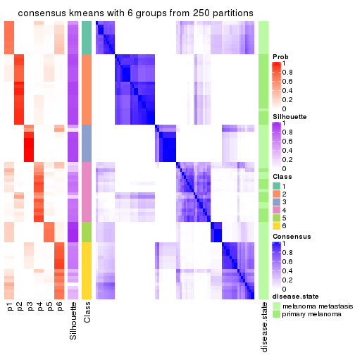
Heatmaps for the membership of samples in all partitions to see how consistent they are:
membership_heatmap(res, k = 2)
membership_heatmap(res, k = 3)
membership_heatmap(res, k = 4)
membership_heatmap(res, k = 5)
membership_heatmap(res, k = 6)
As soon as we have had the classes for columns, we can look for signatures which are significantly different between classes which can be candidate marks for certain classes. Following are the heatmaps for signatures.
Signature heatmaps where rows are scaled:
get_signatures(res, k = 2)

get_signatures(res, k = 3)
get_signatures(res, k = 4)
get_signatures(res, k = 5)
get_signatures(res, k = 6)
Signature heatmaps where rows are not scaled:
get_signatures(res, k = 2, scale_rows = FALSE)
get_signatures(res, k = 3, scale_rows = FALSE)
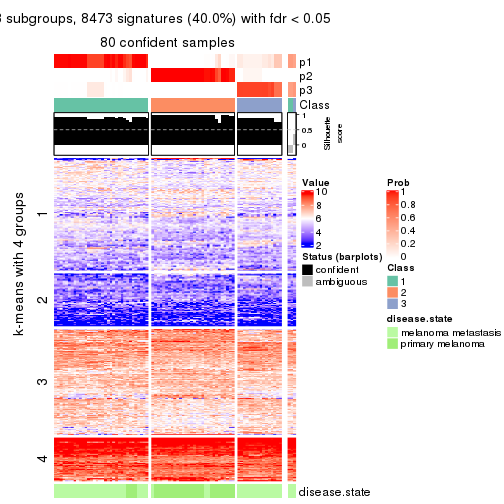
get_signatures(res, k = 4, scale_rows = FALSE)

get_signatures(res, k = 5, scale_rows = FALSE)
get_signatures(res, k = 6, scale_rows = FALSE)
Compare the overlap of signatures from different k:
compare_signatures(res)
get_signature() returns a data frame invisibly. TO get the list of signatures, the function
call should be assigned to a variable explicitly. In following code, if plot argument is set
to FALSE, no heatmap is plotted while only the differential analysis is performed.
# code only for demonstration
tb = get_signature(res, k = ..., plot = FALSE)
An example of the output of tb is:
#> which_row fdr mean_1 mean_2 scaled_mean_1 scaled_mean_2 km
#> 1 38 0.042760348 8.373488 9.131774 -0.5533452 0.5164555 1
#> 2 40 0.018707592 7.106213 8.469186 -0.6173731 0.5762149 1
#> 3 55 0.019134737 10.221463 11.207825 -0.6159697 0.5749050 1
#> 4 59 0.006059896 5.921854 7.869574 -0.6899429 0.6439467 1
#> 5 60 0.018055526 8.928898 10.211722 -0.6204761 0.5791110 1
#> 6 98 0.009384629 15.714769 14.887706 0.6635654 -0.6193277 2
...
The columns in tb are:
which_row: row indices corresponding to the input matrix.fdr: FDR for the differential test. mean_x: The mean value in group x.scaled_mean_x: The mean value in group x after rows are scaled.km: Row groups if k-means clustering is applied to rows.UMAP plot which shows how samples are separated.
dimension_reduction(res, k = 2, method = "UMAP")
dimension_reduction(res, k = 3, method = "UMAP")
dimension_reduction(res, k = 4, method = "UMAP")
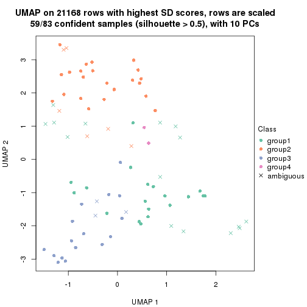
dimension_reduction(res, k = 5, method = "UMAP")
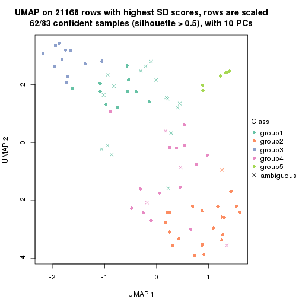
dimension_reduction(res, k = 6, method = "UMAP")
Following heatmap shows how subgroups are split when increasing k:
collect_classes(res)
Test correlation between subgroups and known annotations. If the known annotation is numeric, one-way ANOVA test is applied, and if the known annotation is discrete, chi-squared contingency table test is applied.
test_to_known_factors(res)
#> n disease.state(p) k
#> SD:kmeans 73 1.53e-12 2
#> SD:kmeans 80 2.13e-12 3
#> SD:kmeans 59 6.91e-12 4
#> SD:kmeans 62 3.50e-09 5
#> SD:kmeans 69 5.66e-10 6
If matrix rows can be associated to genes, consider to use functional_enrichment(res,
...) to perform function enrichment for the signature genes. See this vignette for more detailed explanations.
The object with results only for a single top-value method and a single partition method can be extracted as:
res = res_list["SD", "skmeans"]
# you can also extract it by
# res = res_list["SD:skmeans"]
A summary of res and all the functions that can be applied to it:
res
#> A 'ConsensusPartition' object with k = 2, 3, 4, 5, 6.
#> On a matrix with 21168 rows and 83 columns.
#> Top rows (1000, 2000, 3000, 4000, 5000) are extracted by 'SD' method.
#> Subgroups are detected by 'skmeans' method.
#> Performed in total 1250 partitions by row resampling.
#> Best k for subgroups seems to be 3.
#>
#> Following methods can be applied to this 'ConsensusPartition' object:
#> [1] "cola_report" "collect_classes" "collect_plots"
#> [4] "collect_stats" "colnames" "compare_signatures"
#> [7] "consensus_heatmap" "dimension_reduction" "functional_enrichment"
#> [10] "get_anno_col" "get_anno" "get_classes"
#> [13] "get_consensus" "get_matrix" "get_membership"
#> [16] "get_param" "get_signatures" "get_stats"
#> [19] "is_best_k" "is_stable_k" "membership_heatmap"
#> [22] "ncol" "nrow" "plot_ecdf"
#> [25] "rownames" "select_partition_number" "show"
#> [28] "suggest_best_k" "test_to_known_factors"
collect_plots() function collects all the plots made from res for all k (number of partitions)
into one single page to provide an easy and fast comparison between different k.
collect_plots(res)
The plots are:
k and the heatmap of
predicted classes for each k.k.k.k.All the plots in panels can be made by individual functions and they are plotted later in this section.
select_partition_number() produces several plots showing different
statistics for choosing “optimized” k. There are following statistics:
k;k, the area increased is defined as \(A_k - A_{k-1}\).The detailed explanations of these statistics can be found in the cola vignette.
Generally speaking, lower PAC score, higher mean silhouette score or higher
concordance corresponds to better partition. Rand index and Jaccard index
measure how similar the current partition is compared to partition with k-1.
If they are too similar, we won't accept k is better than k-1.
select_partition_number(res)
The numeric values for all these statistics can be obtained by get_stats().
get_stats(res)
#> k 1-PAC mean_silhouette concordance area_increased Rand Jaccard
#> 2 2 1.000 0.972 0.989 0.4965 0.506 0.506
#> 3 3 0.981 0.929 0.973 0.3330 0.783 0.590
#> 4 4 0.816 0.637 0.801 0.1181 0.915 0.759
#> 5 5 0.761 0.723 0.839 0.0638 0.862 0.559
#> 6 6 0.765 0.659 0.789 0.0378 0.970 0.861
suggest_best_k() suggests the best \(k\) based on these statistics. The rules are as follows:
suggest_best_k(res)
#> [1] 3
#> attr(,"optional")
#> [1] 2
There is also optional best \(k\) = 2 that is worth to check.
Following shows the table of the partitions (You need to click the show/hide
code output link to see it). The membership matrix (columns with name p*)
is inferred by
clue::cl_consensus()
function with the SE method. Basically the value in the membership matrix
represents the probability to belong to a certain group. The finall class
label for an item is determined with the group with highest probability it
belongs to.
In get_classes() function, the entropy is calculated from the membership
matrix and the silhouette score is calculated from the consensus matrix.
cbind(get_classes(res, k = 2), get_membership(res, k = 2))
#> class entropy silhouette p1 p2
#> GSM207929 2 0.000 0.998 0.000 1.000
#> GSM207930 1 0.000 0.983 1.000 0.000
#> GSM207931 2 0.000 0.998 0.000 1.000
#> GSM207932 2 0.000 0.998 0.000 1.000
#> GSM207933 2 0.000 0.998 0.000 1.000
#> GSM207934 2 0.000 0.998 0.000 1.000
#> GSM207935 2 0.000 0.998 0.000 1.000
#> GSM207936 2 0.000 0.998 0.000 1.000
#> GSM207937 2 0.000 0.998 0.000 1.000
#> GSM207938 2 0.000 0.998 0.000 1.000
#> GSM207939 2 0.000 0.998 0.000 1.000
#> GSM207940 2 0.000 0.998 0.000 1.000
#> GSM207941 2 0.000 0.998 0.000 1.000
#> GSM207942 2 0.000 0.998 0.000 1.000
#> GSM207943 2 0.000 0.998 0.000 1.000
#> GSM207944 2 0.000 0.998 0.000 1.000
#> GSM207945 2 0.000 0.998 0.000 1.000
#> GSM207946 2 0.000 0.998 0.000 1.000
#> GSM207947 1 0.955 0.404 0.624 0.376
#> GSM207948 2 0.000 0.998 0.000 1.000
#> GSM207949 2 0.000 0.998 0.000 1.000
#> GSM207950 2 0.000 0.998 0.000 1.000
#> GSM207951 2 0.000 0.998 0.000 1.000
#> GSM207952 2 0.000 0.998 0.000 1.000
#> GSM207953 2 0.000 0.998 0.000 1.000
#> GSM207954 2 0.000 0.998 0.000 1.000
#> GSM207955 2 0.000 0.998 0.000 1.000
#> GSM207956 2 0.000 0.998 0.000 1.000
#> GSM207957 2 0.000 0.998 0.000 1.000
#> GSM207958 2 0.000 0.998 0.000 1.000
#> GSM207959 2 0.000 0.998 0.000 1.000
#> GSM207960 2 0.000 0.998 0.000 1.000
#> GSM207961 1 0.000 0.983 1.000 0.000
#> GSM207962 1 0.000 0.983 1.000 0.000
#> GSM207963 1 0.000 0.983 1.000 0.000
#> GSM207964 1 0.000 0.983 1.000 0.000
#> GSM207965 1 0.000 0.983 1.000 0.000
#> GSM207966 1 0.000 0.983 1.000 0.000
#> GSM207967 2 0.402 0.910 0.080 0.920
#> GSM207968 1 0.000 0.983 1.000 0.000
#> GSM207969 1 0.000 0.983 1.000 0.000
#> GSM207970 1 0.000 0.983 1.000 0.000
#> GSM207971 1 0.000 0.983 1.000 0.000
#> GSM207972 1 0.000 0.983 1.000 0.000
#> GSM207973 1 0.000 0.983 1.000 0.000
#> GSM207974 1 0.000 0.983 1.000 0.000
#> GSM207975 1 0.000 0.983 1.000 0.000
#> GSM207976 1 0.983 0.275 0.576 0.424
#> GSM207977 1 0.000 0.983 1.000 0.000
#> GSM207978 1 0.000 0.983 1.000 0.000
#> GSM207979 1 0.000 0.983 1.000 0.000
#> GSM207980 1 0.000 0.983 1.000 0.000
#> GSM207981 1 0.000 0.983 1.000 0.000
#> GSM207982 1 0.000 0.983 1.000 0.000
#> GSM207983 1 0.000 0.983 1.000 0.000
#> GSM207984 1 0.000 0.983 1.000 0.000
#> GSM207985 1 0.000 0.983 1.000 0.000
#> GSM207986 1 0.000 0.983 1.000 0.000
#> GSM207987 1 0.000 0.983 1.000 0.000
#> GSM207988 1 0.000 0.983 1.000 0.000
#> GSM207989 1 0.000 0.983 1.000 0.000
#> GSM207990 1 0.000 0.983 1.000 0.000
#> GSM207991 1 0.000 0.983 1.000 0.000
#> GSM207992 1 0.000 0.983 1.000 0.000
#> GSM207993 1 0.000 0.983 1.000 0.000
#> GSM207994 2 0.000 0.998 0.000 1.000
#> GSM207995 1 0.000 0.983 1.000 0.000
#> GSM207996 1 0.000 0.983 1.000 0.000
#> GSM207997 1 0.000 0.983 1.000 0.000
#> GSM207998 1 0.000 0.983 1.000 0.000
#> GSM207999 2 0.000 0.998 0.000 1.000
#> GSM208000 1 0.000 0.983 1.000 0.000
#> GSM208001 1 0.000 0.983 1.000 0.000
#> GSM208002 1 0.000 0.983 1.000 0.000
#> GSM208003 1 0.000 0.983 1.000 0.000
#> GSM208004 1 0.000 0.983 1.000 0.000
#> GSM208005 1 0.000 0.983 1.000 0.000
#> GSM208006 2 0.000 0.998 0.000 1.000
#> GSM208007 2 0.000 0.998 0.000 1.000
#> GSM208008 1 0.000 0.983 1.000 0.000
#> GSM208009 1 0.000 0.983 1.000 0.000
#> GSM208010 1 0.000 0.983 1.000 0.000
#> GSM208011 1 0.000 0.983 1.000 0.000
cbind(get_classes(res, k = 3), get_membership(res, k = 3))
#> class entropy silhouette p1 p2 p3
#> GSM207929 2 0.0000 0.9777 0.000 1.000 0.000
#> GSM207930 1 0.0000 0.9599 1.000 0.000 0.000
#> GSM207931 2 0.5138 0.6574 0.252 0.748 0.000
#> GSM207932 2 0.0000 0.9777 0.000 1.000 0.000
#> GSM207933 2 0.0000 0.9777 0.000 1.000 0.000
#> GSM207934 2 0.0000 0.9777 0.000 1.000 0.000
#> GSM207935 2 0.0000 0.9777 0.000 1.000 0.000
#> GSM207936 2 0.0000 0.9777 0.000 1.000 0.000
#> GSM207937 2 0.0000 0.9777 0.000 1.000 0.000
#> GSM207938 2 0.0000 0.9777 0.000 1.000 0.000
#> GSM207939 2 0.0000 0.9777 0.000 1.000 0.000
#> GSM207940 2 0.0000 0.9777 0.000 1.000 0.000
#> GSM207941 2 0.0000 0.9777 0.000 1.000 0.000
#> GSM207942 2 0.0000 0.9777 0.000 1.000 0.000
#> GSM207943 2 0.0000 0.9777 0.000 1.000 0.000
#> GSM207944 2 0.0000 0.9777 0.000 1.000 0.000
#> GSM207945 2 0.0000 0.9777 0.000 1.000 0.000
#> GSM207946 2 0.0000 0.9777 0.000 1.000 0.000
#> GSM207947 1 0.0000 0.9599 1.000 0.000 0.000
#> GSM207948 2 0.0000 0.9777 0.000 1.000 0.000
#> GSM207949 2 0.0000 0.9777 0.000 1.000 0.000
#> GSM207950 2 0.0000 0.9777 0.000 1.000 0.000
#> GSM207951 2 0.0000 0.9777 0.000 1.000 0.000
#> GSM207952 1 0.6299 0.0711 0.524 0.476 0.000
#> GSM207953 2 0.0000 0.9777 0.000 1.000 0.000
#> GSM207954 2 0.0000 0.9777 0.000 1.000 0.000
#> GSM207955 2 0.0000 0.9777 0.000 1.000 0.000
#> GSM207956 2 0.0000 0.9777 0.000 1.000 0.000
#> GSM207957 2 0.0000 0.9777 0.000 1.000 0.000
#> GSM207958 2 0.0000 0.9777 0.000 1.000 0.000
#> GSM207959 2 0.0000 0.9777 0.000 1.000 0.000
#> GSM207960 1 0.0000 0.9599 1.000 0.000 0.000
#> GSM207961 1 0.0000 0.9599 1.000 0.000 0.000
#> GSM207962 1 0.0000 0.9599 1.000 0.000 0.000
#> GSM207963 1 0.0000 0.9599 1.000 0.000 0.000
#> GSM207964 3 0.0000 0.9750 0.000 0.000 1.000
#> GSM207965 3 0.0000 0.9750 0.000 0.000 1.000
#> GSM207966 1 0.0000 0.9599 1.000 0.000 0.000
#> GSM207967 1 0.0000 0.9599 1.000 0.000 0.000
#> GSM207968 1 0.5497 0.5771 0.708 0.000 0.292
#> GSM207969 3 0.0000 0.9750 0.000 0.000 1.000
#> GSM207970 3 0.0000 0.9750 0.000 0.000 1.000
#> GSM207971 3 0.0000 0.9750 0.000 0.000 1.000
#> GSM207972 1 0.5760 0.5050 0.672 0.000 0.328
#> GSM207973 1 0.0000 0.9599 1.000 0.000 0.000
#> GSM207974 1 0.0000 0.9599 1.000 0.000 0.000
#> GSM207975 1 0.0000 0.9599 1.000 0.000 0.000
#> GSM207976 3 0.9252 0.1963 0.356 0.164 0.480
#> GSM207977 3 0.0000 0.9750 0.000 0.000 1.000
#> GSM207978 1 0.0000 0.9599 1.000 0.000 0.000
#> GSM207979 1 0.0000 0.9599 1.000 0.000 0.000
#> GSM207980 3 0.0000 0.9750 0.000 0.000 1.000
#> GSM207981 3 0.0000 0.9750 0.000 0.000 1.000
#> GSM207982 3 0.0000 0.9750 0.000 0.000 1.000
#> GSM207983 3 0.0000 0.9750 0.000 0.000 1.000
#> GSM207984 1 0.0237 0.9566 0.996 0.000 0.004
#> GSM207985 1 0.0000 0.9599 1.000 0.000 0.000
#> GSM207986 3 0.0000 0.9750 0.000 0.000 1.000
#> GSM207987 3 0.0000 0.9750 0.000 0.000 1.000
#> GSM207988 3 0.0000 0.9750 0.000 0.000 1.000
#> GSM207989 3 0.0000 0.9750 0.000 0.000 1.000
#> GSM207990 3 0.0000 0.9750 0.000 0.000 1.000
#> GSM207991 3 0.0000 0.9750 0.000 0.000 1.000
#> GSM207992 3 0.0000 0.9750 0.000 0.000 1.000
#> GSM207993 3 0.0000 0.9750 0.000 0.000 1.000
#> GSM207994 2 0.0000 0.9777 0.000 1.000 0.000
#> GSM207995 1 0.0000 0.9599 1.000 0.000 0.000
#> GSM207996 1 0.0000 0.9599 1.000 0.000 0.000
#> GSM207997 1 0.0000 0.9599 1.000 0.000 0.000
#> GSM207998 1 0.0000 0.9599 1.000 0.000 0.000
#> GSM207999 2 0.6026 0.3957 0.376 0.624 0.000
#> GSM208000 1 0.0000 0.9599 1.000 0.000 0.000
#> GSM208001 1 0.0000 0.9599 1.000 0.000 0.000
#> GSM208002 1 0.0424 0.9531 0.992 0.000 0.008
#> GSM208003 1 0.0000 0.9599 1.000 0.000 0.000
#> GSM208004 1 0.0000 0.9599 1.000 0.000 0.000
#> GSM208005 1 0.0000 0.9599 1.000 0.000 0.000
#> GSM208006 2 0.0000 0.9777 0.000 1.000 0.000
#> GSM208007 2 0.0000 0.9777 0.000 1.000 0.000
#> GSM208008 1 0.0000 0.9599 1.000 0.000 0.000
#> GSM208009 1 0.0000 0.9599 1.000 0.000 0.000
#> GSM208010 1 0.0000 0.9599 1.000 0.000 0.000
#> GSM208011 3 0.0000 0.9750 0.000 0.000 1.000
cbind(get_classes(res, k = 4), get_membership(res, k = 4))
#> class entropy silhouette p1 p2 p3 p4
#> GSM207929 2 0.5716 0.24498 0.028 0.552 0.000 0.420
#> GSM207930 1 0.4961 0.00471 0.552 0.000 0.000 0.448
#> GSM207931 4 0.7019 0.18999 0.344 0.132 0.000 0.524
#> GSM207932 2 0.0000 0.93340 0.000 1.000 0.000 0.000
#> GSM207933 2 0.0000 0.93340 0.000 1.000 0.000 0.000
#> GSM207934 4 0.5296 -0.19642 0.008 0.492 0.000 0.500
#> GSM207935 4 0.6213 -0.11455 0.052 0.464 0.000 0.484
#> GSM207936 2 0.1637 0.88925 0.000 0.940 0.000 0.060
#> GSM207937 2 0.3610 0.73238 0.000 0.800 0.000 0.200
#> GSM207938 2 0.0000 0.93340 0.000 1.000 0.000 0.000
#> GSM207939 2 0.0000 0.93340 0.000 1.000 0.000 0.000
#> GSM207940 2 0.0000 0.93340 0.000 1.000 0.000 0.000
#> GSM207941 2 0.0000 0.93340 0.000 1.000 0.000 0.000
#> GSM207942 2 0.0000 0.93340 0.000 1.000 0.000 0.000
#> GSM207943 2 0.0000 0.93340 0.000 1.000 0.000 0.000
#> GSM207944 2 0.0000 0.93340 0.000 1.000 0.000 0.000
#> GSM207945 2 0.0000 0.93340 0.000 1.000 0.000 0.000
#> GSM207946 2 0.0000 0.93340 0.000 1.000 0.000 0.000
#> GSM207947 1 0.5000 -0.06586 0.504 0.000 0.000 0.496
#> GSM207948 2 0.0000 0.93340 0.000 1.000 0.000 0.000
#> GSM207949 2 0.0000 0.93340 0.000 1.000 0.000 0.000
#> GSM207950 2 0.0000 0.93340 0.000 1.000 0.000 0.000
#> GSM207951 2 0.0000 0.93340 0.000 1.000 0.000 0.000
#> GSM207952 4 0.6170 0.08551 0.420 0.052 0.000 0.528
#> GSM207953 2 0.0000 0.93340 0.000 1.000 0.000 0.000
#> GSM207954 2 0.0000 0.93340 0.000 1.000 0.000 0.000
#> GSM207955 2 0.0000 0.93340 0.000 1.000 0.000 0.000
#> GSM207956 2 0.5088 0.29394 0.004 0.572 0.000 0.424
#> GSM207957 2 0.0000 0.93340 0.000 1.000 0.000 0.000
#> GSM207958 2 0.4134 0.64047 0.000 0.740 0.000 0.260
#> GSM207959 2 0.0000 0.93340 0.000 1.000 0.000 0.000
#> GSM207960 1 0.4981 -0.03187 0.536 0.000 0.000 0.464
#> GSM207961 1 0.0592 0.56934 0.984 0.000 0.000 0.016
#> GSM207962 1 0.2647 0.52963 0.880 0.000 0.000 0.120
#> GSM207963 1 0.2704 0.52688 0.876 0.000 0.000 0.124
#> GSM207964 3 0.1174 0.97702 0.020 0.000 0.968 0.012
#> GSM207965 3 0.1284 0.97415 0.024 0.000 0.964 0.012
#> GSM207966 1 0.4996 0.31563 0.516 0.000 0.000 0.484
#> GSM207967 4 0.4992 -0.02239 0.476 0.000 0.000 0.524
#> GSM207968 1 0.6082 0.26922 0.480 0.000 0.044 0.476
#> GSM207969 3 0.0937 0.98238 0.012 0.000 0.976 0.012
#> GSM207970 3 0.0937 0.98238 0.012 0.000 0.976 0.012
#> GSM207971 3 0.0469 0.98733 0.000 0.000 0.988 0.012
#> GSM207972 4 0.6602 -0.22634 0.356 0.000 0.092 0.552
#> GSM207973 1 0.4996 0.31563 0.516 0.000 0.000 0.484
#> GSM207974 1 0.4996 0.31563 0.516 0.000 0.000 0.484
#> GSM207975 1 0.3335 0.50564 0.856 0.000 0.016 0.128
#> GSM207976 4 0.8130 -0.05985 0.224 0.108 0.100 0.568
#> GSM207977 3 0.0469 0.98733 0.000 0.000 0.988 0.012
#> GSM207978 1 0.4996 0.31563 0.516 0.000 0.000 0.484
#> GSM207979 1 0.4996 0.31563 0.516 0.000 0.000 0.484
#> GSM207980 3 0.0000 0.99022 0.000 0.000 1.000 0.000
#> GSM207981 3 0.0000 0.99022 0.000 0.000 1.000 0.000
#> GSM207982 3 0.0000 0.99022 0.000 0.000 1.000 0.000
#> GSM207983 3 0.0000 0.99022 0.000 0.000 1.000 0.000
#> GSM207984 1 0.4428 0.45752 0.808 0.000 0.068 0.124
#> GSM207985 1 0.4996 0.31563 0.516 0.000 0.000 0.484
#> GSM207986 3 0.0000 0.99022 0.000 0.000 1.000 0.000
#> GSM207987 3 0.0000 0.99022 0.000 0.000 1.000 0.000
#> GSM207988 3 0.0000 0.99022 0.000 0.000 1.000 0.000
#> GSM207989 3 0.0000 0.99022 0.000 0.000 1.000 0.000
#> GSM207990 3 0.0000 0.99022 0.000 0.000 1.000 0.000
#> GSM207991 3 0.0000 0.99022 0.000 0.000 1.000 0.000
#> GSM207992 3 0.0000 0.99022 0.000 0.000 1.000 0.000
#> GSM207993 3 0.1284 0.97399 0.024 0.000 0.964 0.012
#> GSM207994 2 0.0000 0.93340 0.000 1.000 0.000 0.000
#> GSM207995 1 0.1211 0.56649 0.960 0.000 0.000 0.040
#> GSM207996 1 0.0188 0.57072 0.996 0.000 0.000 0.004
#> GSM207997 1 0.4996 0.30932 0.516 0.000 0.000 0.484
#> GSM207998 1 0.3486 0.46118 0.812 0.000 0.000 0.188
#> GSM207999 1 0.6140 -0.11469 0.500 0.048 0.000 0.452
#> GSM208000 1 0.0817 0.56735 0.976 0.000 0.000 0.024
#> GSM208001 1 0.0188 0.57045 0.996 0.000 0.000 0.004
#> GSM208002 1 0.5165 0.30564 0.512 0.000 0.004 0.484
#> GSM208003 1 0.0469 0.56937 0.988 0.000 0.000 0.012
#> GSM208004 1 0.0921 0.56884 0.972 0.000 0.000 0.028
#> GSM208005 4 0.4933 -0.32942 0.432 0.000 0.000 0.568
#> GSM208006 2 0.2469 0.84539 0.000 0.892 0.000 0.108
#> GSM208007 2 0.1637 0.88972 0.000 0.940 0.000 0.060
#> GSM208008 1 0.3400 0.48173 0.820 0.000 0.000 0.180
#> GSM208009 1 0.1211 0.56545 0.960 0.000 0.000 0.040
#> GSM208010 1 0.1302 0.56515 0.956 0.000 0.000 0.044
#> GSM208011 3 0.0672 0.98607 0.008 0.000 0.984 0.008
cbind(get_classes(res, k = 5), get_membership(res, k = 5))
#> class entropy silhouette p1 p2 p3 p4 p5
#> GSM207929 4 0.5152 0.7006 0.032 0.212 0.000 0.708 0.048
#> GSM207930 1 0.5353 0.0861 0.476 0.000 0.000 0.472 0.052
#> GSM207931 4 0.3445 0.7285 0.032 0.048 0.000 0.860 0.060
#> GSM207932 2 0.0290 0.9494 0.000 0.992 0.000 0.008 0.000
#> GSM207933 2 0.0162 0.9492 0.000 0.996 0.000 0.004 0.000
#> GSM207934 4 0.2672 0.7445 0.008 0.116 0.000 0.872 0.004
#> GSM207935 4 0.3449 0.7352 0.024 0.164 0.000 0.812 0.000
#> GSM207936 2 0.2439 0.8314 0.004 0.876 0.000 0.120 0.000
#> GSM207937 2 0.4088 0.5126 0.008 0.688 0.000 0.304 0.000
#> GSM207938 2 0.0290 0.9477 0.000 0.992 0.000 0.008 0.000
#> GSM207939 2 0.0000 0.9503 0.000 1.000 0.000 0.000 0.000
#> GSM207940 2 0.0000 0.9503 0.000 1.000 0.000 0.000 0.000
#> GSM207941 2 0.0290 0.9494 0.000 0.992 0.000 0.008 0.000
#> GSM207942 2 0.0290 0.9494 0.000 0.992 0.000 0.008 0.000
#> GSM207943 2 0.0162 0.9492 0.000 0.996 0.000 0.004 0.000
#> GSM207944 2 0.0290 0.9494 0.000 0.992 0.000 0.008 0.000
#> GSM207945 2 0.0162 0.9492 0.000 0.996 0.000 0.004 0.000
#> GSM207946 2 0.0000 0.9503 0.000 1.000 0.000 0.000 0.000
#> GSM207947 4 0.4237 0.5546 0.200 0.000 0.000 0.752 0.048
#> GSM207948 2 0.0566 0.9454 0.004 0.984 0.000 0.012 0.000
#> GSM207949 2 0.0290 0.9494 0.000 0.992 0.000 0.008 0.000
#> GSM207950 2 0.0404 0.9495 0.000 0.988 0.000 0.012 0.000
#> GSM207951 2 0.0162 0.9501 0.000 0.996 0.000 0.004 0.000
#> GSM207952 4 0.1710 0.7201 0.024 0.020 0.000 0.944 0.012
#> GSM207953 2 0.0290 0.9494 0.000 0.992 0.000 0.008 0.000
#> GSM207954 2 0.0162 0.9492 0.000 0.996 0.000 0.004 0.000
#> GSM207955 2 0.0162 0.9493 0.000 0.996 0.000 0.004 0.000
#> GSM207956 4 0.4252 0.6525 0.020 0.280 0.000 0.700 0.000
#> GSM207957 2 0.0000 0.9503 0.000 1.000 0.000 0.000 0.000
#> GSM207958 4 0.4283 0.2728 0.000 0.456 0.000 0.544 0.000
#> GSM207959 2 0.0290 0.9494 0.000 0.992 0.000 0.008 0.000
#> GSM207960 4 0.4020 0.6484 0.096 0.000 0.000 0.796 0.108
#> GSM207961 1 0.1430 0.5526 0.944 0.000 0.000 0.004 0.052
#> GSM207962 1 0.6034 0.5757 0.572 0.000 0.000 0.172 0.256
#> GSM207963 1 0.5983 0.5793 0.580 0.000 0.000 0.168 0.252
#> GSM207964 1 0.5107 -0.3871 0.520 0.000 0.448 0.028 0.004
#> GSM207965 1 0.5161 -0.3571 0.532 0.000 0.432 0.032 0.004
#> GSM207966 5 0.0324 0.8997 0.004 0.000 0.000 0.004 0.992
#> GSM207967 4 0.3771 0.6116 0.164 0.000 0.000 0.796 0.040
#> GSM207968 5 0.1588 0.8848 0.028 0.000 0.016 0.008 0.948
#> GSM207969 3 0.4654 0.6616 0.348 0.000 0.628 0.024 0.000
#> GSM207970 3 0.4608 0.6754 0.336 0.000 0.640 0.024 0.000
#> GSM207971 3 0.3970 0.7782 0.224 0.000 0.752 0.024 0.000
#> GSM207972 5 0.5020 0.7410 0.112 0.000 0.044 0.088 0.756
#> GSM207973 5 0.0451 0.8997 0.004 0.000 0.000 0.008 0.988
#> GSM207974 5 0.0451 0.8997 0.004 0.000 0.000 0.008 0.988
#> GSM207975 1 0.1200 0.5391 0.964 0.000 0.008 0.012 0.016
#> GSM207976 5 0.5064 0.7353 0.024 0.052 0.032 0.124 0.768
#> GSM207977 3 0.4380 0.7174 0.304 0.000 0.676 0.020 0.000
#> GSM207978 5 0.0324 0.8997 0.004 0.000 0.000 0.004 0.992
#> GSM207979 5 0.0324 0.8997 0.004 0.000 0.000 0.004 0.992
#> GSM207980 3 0.1845 0.8622 0.056 0.000 0.928 0.016 0.000
#> GSM207981 3 0.0000 0.8801 0.000 0.000 1.000 0.000 0.000
#> GSM207982 3 0.0000 0.8801 0.000 0.000 1.000 0.000 0.000
#> GSM207983 3 0.0000 0.8801 0.000 0.000 1.000 0.000 0.000
#> GSM207984 1 0.1280 0.5304 0.960 0.000 0.008 0.024 0.008
#> GSM207985 5 0.0324 0.8997 0.004 0.000 0.000 0.004 0.992
#> GSM207986 3 0.0000 0.8801 0.000 0.000 1.000 0.000 0.000
#> GSM207987 3 0.0000 0.8801 0.000 0.000 1.000 0.000 0.000
#> GSM207988 3 0.0000 0.8801 0.000 0.000 1.000 0.000 0.000
#> GSM207989 3 0.0000 0.8801 0.000 0.000 1.000 0.000 0.000
#> GSM207990 3 0.2969 0.8336 0.128 0.000 0.852 0.020 0.000
#> GSM207991 3 0.0000 0.8801 0.000 0.000 1.000 0.000 0.000
#> GSM207992 3 0.0000 0.8801 0.000 0.000 1.000 0.000 0.000
#> GSM207993 1 0.4971 -0.4108 0.512 0.000 0.460 0.028 0.000
#> GSM207994 2 0.0000 0.9503 0.000 1.000 0.000 0.000 0.000
#> GSM207995 1 0.5741 0.5408 0.544 0.000 0.000 0.096 0.360
#> GSM207996 1 0.5595 0.5453 0.560 0.000 0.000 0.084 0.356
#> GSM207997 5 0.1956 0.8632 0.076 0.000 0.000 0.008 0.916
#> GSM207998 1 0.6771 0.4133 0.392 0.000 0.000 0.284 0.324
#> GSM207999 4 0.5069 0.5993 0.180 0.064 0.000 0.728 0.028
#> GSM208000 1 0.5788 0.5796 0.580 0.000 0.000 0.120 0.300
#> GSM208001 1 0.5308 0.5809 0.620 0.000 0.000 0.076 0.304
#> GSM208002 5 0.4099 0.7178 0.200 0.000 0.004 0.032 0.764
#> GSM208003 1 0.2130 0.5685 0.908 0.000 0.000 0.012 0.080
#> GSM208004 1 0.5302 0.5498 0.592 0.000 0.000 0.064 0.344
#> GSM208005 5 0.1892 0.8614 0.004 0.000 0.000 0.080 0.916
#> GSM208006 2 0.4003 0.5673 0.008 0.704 0.000 0.288 0.000
#> GSM208007 2 0.3421 0.7116 0.008 0.788 0.000 0.204 0.000
#> GSM208008 1 0.6087 0.5723 0.568 0.000 0.000 0.188 0.244
#> GSM208009 1 0.5429 0.5374 0.564 0.000 0.000 0.068 0.368
#> GSM208010 1 0.4925 0.5137 0.632 0.000 0.000 0.044 0.324
#> GSM208011 3 0.4420 0.7192 0.280 0.000 0.692 0.028 0.000
cbind(get_classes(res, k = 6), get_membership(res, k = 6))
#> class entropy silhouette p1 p2 p3 p4 p5 p6
#> GSM207929 4 0.4691 0.657 0.040 0.092 0.000 0.768 0.028 0.072
#> GSM207930 1 0.5354 0.297 0.588 0.000 0.000 0.288 0.008 0.116
#> GSM207931 4 0.3371 0.678 0.052 0.020 0.000 0.856 0.040 0.032
#> GSM207932 2 0.0837 0.893 0.004 0.972 0.000 0.004 0.000 0.020
#> GSM207933 2 0.2309 0.861 0.000 0.888 0.000 0.084 0.000 0.028
#> GSM207934 4 0.4178 0.681 0.088 0.048 0.000 0.796 0.008 0.060
#> GSM207935 4 0.2386 0.690 0.012 0.064 0.000 0.896 0.000 0.028
#> GSM207936 2 0.4480 0.540 0.004 0.648 0.000 0.304 0.000 0.044
#> GSM207937 2 0.5064 0.171 0.008 0.508 0.000 0.428 0.000 0.056
#> GSM207938 2 0.1857 0.880 0.004 0.924 0.000 0.044 0.000 0.028
#> GSM207939 2 0.1088 0.891 0.000 0.960 0.000 0.016 0.000 0.024
#> GSM207940 2 0.1003 0.891 0.000 0.964 0.000 0.016 0.000 0.020
#> GSM207941 2 0.1036 0.892 0.004 0.964 0.000 0.008 0.000 0.024
#> GSM207942 2 0.1138 0.891 0.004 0.960 0.000 0.012 0.000 0.024
#> GSM207943 2 0.0717 0.896 0.000 0.976 0.000 0.008 0.000 0.016
#> GSM207944 2 0.0603 0.894 0.004 0.980 0.000 0.000 0.000 0.016
#> GSM207945 2 0.2066 0.868 0.000 0.904 0.000 0.072 0.000 0.024
#> GSM207946 2 0.0260 0.896 0.000 0.992 0.000 0.000 0.000 0.008
#> GSM207947 4 0.5473 0.335 0.332 0.000 0.000 0.564 0.024 0.080
#> GSM207948 2 0.1194 0.891 0.004 0.956 0.000 0.008 0.000 0.032
#> GSM207949 2 0.0951 0.893 0.004 0.968 0.000 0.008 0.000 0.020
#> GSM207950 2 0.0972 0.893 0.000 0.964 0.000 0.008 0.000 0.028
#> GSM207951 2 0.0748 0.895 0.004 0.976 0.000 0.004 0.000 0.016
#> GSM207952 4 0.3975 0.646 0.136 0.008 0.000 0.788 0.012 0.056
#> GSM207953 2 0.0837 0.895 0.004 0.972 0.000 0.004 0.000 0.020
#> GSM207954 2 0.1341 0.889 0.000 0.948 0.000 0.024 0.000 0.028
#> GSM207955 2 0.1989 0.879 0.004 0.916 0.000 0.052 0.000 0.028
#> GSM207956 4 0.4873 0.634 0.048 0.172 0.000 0.712 0.000 0.068
#> GSM207957 2 0.1003 0.891 0.000 0.964 0.000 0.016 0.000 0.020
#> GSM207958 4 0.4754 0.262 0.012 0.388 0.000 0.568 0.000 0.032
#> GSM207959 2 0.0603 0.895 0.004 0.980 0.000 0.000 0.000 0.016
#> GSM207960 4 0.4772 0.565 0.180 0.000 0.000 0.716 0.056 0.048
#> GSM207961 6 0.4461 0.274 0.464 0.000 0.000 0.004 0.020 0.512
#> GSM207962 1 0.4136 0.604 0.788 0.000 0.000 0.044 0.088 0.080
#> GSM207963 1 0.3850 0.605 0.808 0.000 0.000 0.036 0.080 0.076
#> GSM207964 6 0.4307 0.532 0.072 0.000 0.224 0.000 0.000 0.704
#> GSM207965 6 0.4281 0.536 0.072 0.000 0.220 0.000 0.000 0.708
#> GSM207966 5 0.1152 0.851 0.044 0.000 0.000 0.004 0.952 0.000
#> GSM207967 4 0.5563 0.273 0.420 0.000 0.000 0.472 0.012 0.096
#> GSM207968 5 0.2523 0.831 0.036 0.000 0.016 0.004 0.896 0.048
#> GSM207969 3 0.4846 0.252 0.032 0.000 0.496 0.000 0.012 0.460
#> GSM207970 3 0.4695 0.271 0.028 0.000 0.504 0.000 0.008 0.460
#> GSM207971 3 0.3499 0.602 0.000 0.000 0.680 0.000 0.000 0.320
#> GSM207972 5 0.6273 0.634 0.080 0.000 0.028 0.088 0.620 0.184
#> GSM207973 5 0.1226 0.851 0.040 0.000 0.000 0.004 0.952 0.004
#> GSM207974 5 0.1340 0.851 0.040 0.000 0.000 0.004 0.948 0.008
#> GSM207975 6 0.4107 0.336 0.452 0.000 0.004 0.004 0.000 0.540
#> GSM207976 5 0.6042 0.659 0.100 0.020 0.032 0.060 0.684 0.104
#> GSM207977 3 0.3852 0.496 0.004 0.000 0.612 0.000 0.000 0.384
#> GSM207978 5 0.1152 0.851 0.044 0.000 0.000 0.004 0.952 0.000
#> GSM207979 5 0.1152 0.851 0.044 0.000 0.000 0.004 0.952 0.000
#> GSM207980 3 0.2135 0.761 0.000 0.000 0.872 0.000 0.000 0.128
#> GSM207981 3 0.0000 0.812 0.000 0.000 1.000 0.000 0.000 0.000
#> GSM207982 3 0.0000 0.812 0.000 0.000 1.000 0.000 0.000 0.000
#> GSM207983 3 0.0000 0.812 0.000 0.000 1.000 0.000 0.000 0.000
#> GSM207984 6 0.4076 0.372 0.428 0.000 0.004 0.004 0.000 0.564
#> GSM207985 5 0.1152 0.851 0.044 0.000 0.000 0.004 0.952 0.000
#> GSM207986 3 0.0000 0.812 0.000 0.000 1.000 0.000 0.000 0.000
#> GSM207987 3 0.0000 0.812 0.000 0.000 1.000 0.000 0.000 0.000
#> GSM207988 3 0.0000 0.812 0.000 0.000 1.000 0.000 0.000 0.000
#> GSM207989 3 0.0000 0.812 0.000 0.000 1.000 0.000 0.000 0.000
#> GSM207990 3 0.2730 0.721 0.000 0.000 0.808 0.000 0.000 0.192
#> GSM207991 3 0.0000 0.812 0.000 0.000 1.000 0.000 0.000 0.000
#> GSM207992 3 0.0000 0.812 0.000 0.000 1.000 0.000 0.000 0.000
#> GSM207993 6 0.4537 0.475 0.072 0.000 0.264 0.000 0.000 0.664
#> GSM207994 2 0.1257 0.891 0.000 0.952 0.000 0.020 0.000 0.028
#> GSM207995 1 0.4861 0.643 0.700 0.000 0.000 0.052 0.200 0.048
#> GSM207996 1 0.4633 0.637 0.704 0.000 0.000 0.020 0.212 0.064
#> GSM207997 5 0.2527 0.813 0.032 0.000 0.000 0.004 0.880 0.084
#> GSM207998 1 0.6022 0.577 0.568 0.000 0.000 0.128 0.256 0.048
#> GSM207999 1 0.6655 -0.309 0.424 0.048 0.000 0.396 0.016 0.116
#> GSM208000 1 0.3663 0.652 0.796 0.000 0.000 0.020 0.152 0.032
#> GSM208001 1 0.4141 0.624 0.760 0.000 0.000 0.008 0.140 0.092
#> GSM208002 5 0.5511 0.609 0.096 0.000 0.004 0.036 0.640 0.224
#> GSM208003 1 0.4381 -0.211 0.536 0.000 0.000 0.000 0.024 0.440
#> GSM208004 1 0.4790 0.604 0.680 0.000 0.000 0.004 0.196 0.120
#> GSM208005 5 0.4075 0.768 0.056 0.000 0.000 0.100 0.792 0.052
#> GSM208006 2 0.6250 0.370 0.040 0.560 0.000 0.260 0.012 0.128
#> GSM208007 2 0.5600 0.500 0.036 0.620 0.000 0.248 0.004 0.092
#> GSM208008 1 0.4210 0.594 0.784 0.000 0.000 0.052 0.076 0.088
#> GSM208009 1 0.4782 0.620 0.680 0.000 0.000 0.008 0.216 0.096
#> GSM208010 1 0.5868 0.364 0.540 0.000 0.000 0.012 0.192 0.256
#> GSM208011 3 0.5613 0.401 0.088 0.000 0.532 0.004 0.016 0.360
Heatmaps for the consensus matrix. It visualizes the probability of two samples to be in a same group.
consensus_heatmap(res, k = 2)
consensus_heatmap(res, k = 3)
consensus_heatmap(res, k = 4)
consensus_heatmap(res, k = 5)
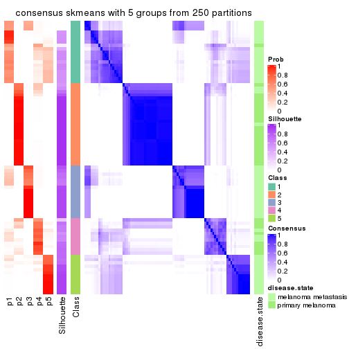
consensus_heatmap(res, k = 6)
Heatmaps for the membership of samples in all partitions to see how consistent they are:
membership_heatmap(res, k = 2)
membership_heatmap(res, k = 3)
membership_heatmap(res, k = 4)
membership_heatmap(res, k = 5)
membership_heatmap(res, k = 6)
As soon as we have had the classes for columns, we can look for signatures which are significantly different between classes which can be candidate marks for certain classes. Following are the heatmaps for signatures.
Signature heatmaps where rows are scaled:
get_signatures(res, k = 2)
get_signatures(res, k = 3)
get_signatures(res, k = 4)
get_signatures(res, k = 5)
get_signatures(res, k = 6)
Signature heatmaps where rows are not scaled:
get_signatures(res, k = 2, scale_rows = FALSE)
get_signatures(res, k = 3, scale_rows = FALSE)
get_signatures(res, k = 4, scale_rows = FALSE)
get_signatures(res, k = 5, scale_rows = FALSE)
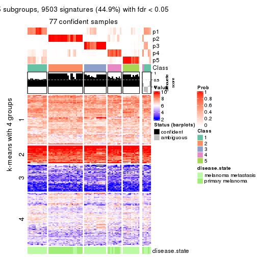
get_signatures(res, k = 6, scale_rows = FALSE)
Compare the overlap of signatures from different k:
compare_signatures(res)
get_signature() returns a data frame invisibly. TO get the list of signatures, the function
call should be assigned to a variable explicitly. In following code, if plot argument is set
to FALSE, no heatmap is plotted while only the differential analysis is performed.
# code only for demonstration
tb = get_signature(res, k = ..., plot = FALSE)
An example of the output of tb is:
#> which_row fdr mean_1 mean_2 scaled_mean_1 scaled_mean_2 km
#> 1 38 0.042760348 8.373488 9.131774 -0.5533452 0.5164555 1
#> 2 40 0.018707592 7.106213 8.469186 -0.6173731 0.5762149 1
#> 3 55 0.019134737 10.221463 11.207825 -0.6159697 0.5749050 1
#> 4 59 0.006059896 5.921854 7.869574 -0.6899429 0.6439467 1
#> 5 60 0.018055526 8.928898 10.211722 -0.6204761 0.5791110 1
#> 6 98 0.009384629 15.714769 14.887706 0.6635654 -0.6193277 2
...
The columns in tb are:
which_row: row indices corresponding to the input matrix.fdr: FDR for the differential test. mean_x: The mean value in group x.scaled_mean_x: The mean value in group x after rows are scaled.km: Row groups if k-means clustering is applied to rows.UMAP plot which shows how samples are separated.
dimension_reduction(res, k = 2, method = "UMAP")
dimension_reduction(res, k = 3, method = "UMAP")
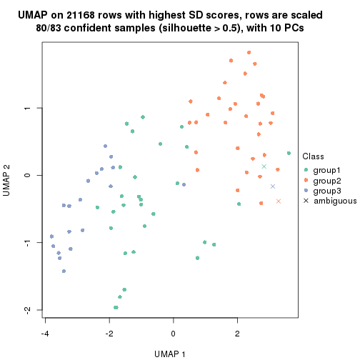
dimension_reduction(res, k = 4, method = "UMAP")
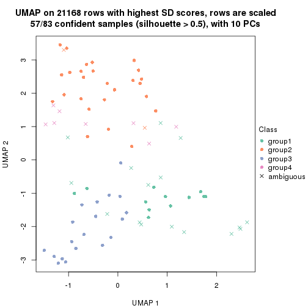
dimension_reduction(res, k = 5, method = "UMAP")
dimension_reduction(res, k = 6, method = "UMAP")
Following heatmap shows how subgroups are split when increasing k:
collect_classes(res)
Test correlation between subgroups and known annotations. If the known annotation is numeric, one-way ANOVA test is applied, and if the known annotation is discrete, chi-squared contingency table test is applied.
test_to_known_factors(res)
#> n disease.state(p) k
#> SD:skmeans 81 5.33e-13 2
#> SD:skmeans 80 7.38e-14 3
#> SD:skmeans 57 1.04e-10 4
#> SD:skmeans 77 1.36e-11 5
#> SD:skmeans 65 3.91e-11 6
If matrix rows can be associated to genes, consider to use functional_enrichment(res,
...) to perform function enrichment for the signature genes. See this vignette for more detailed explanations.
The object with results only for a single top-value method and a single partition method can be extracted as:
res = res_list["SD", "pam"]
# you can also extract it by
# res = res_list["SD:pam"]
A summary of res and all the functions that can be applied to it:
res
#> A 'ConsensusPartition' object with k = 2, 3, 4, 5, 6.
#> On a matrix with 21168 rows and 83 columns.
#> Top rows (1000, 2000, 3000, 4000, 5000) are extracted by 'SD' method.
#> Subgroups are detected by 'pam' method.
#> Performed in total 1250 partitions by row resampling.
#> Best k for subgroups seems to be 2.
#>
#> Following methods can be applied to this 'ConsensusPartition' object:
#> [1] "cola_report" "collect_classes" "collect_plots"
#> [4] "collect_stats" "colnames" "compare_signatures"
#> [7] "consensus_heatmap" "dimension_reduction" "functional_enrichment"
#> [10] "get_anno_col" "get_anno" "get_classes"
#> [13] "get_consensus" "get_matrix" "get_membership"
#> [16] "get_param" "get_signatures" "get_stats"
#> [19] "is_best_k" "is_stable_k" "membership_heatmap"
#> [22] "ncol" "nrow" "plot_ecdf"
#> [25] "rownames" "select_partition_number" "show"
#> [28] "suggest_best_k" "test_to_known_factors"
collect_plots() function collects all the plots made from res for all k (number of partitions)
into one single page to provide an easy and fast comparison between different k.
collect_plots(res)
The plots are:
k and the heatmap of
predicted classes for each k.k.k.k.All the plots in panels can be made by individual functions and they are plotted later in this section.
select_partition_number() produces several plots showing different
statistics for choosing “optimized” k. There are following statistics:
k;k, the area increased is defined as \(A_k - A_{k-1}\).The detailed explanations of these statistics can be found in the cola vignette.
Generally speaking, lower PAC score, higher mean silhouette score or higher
concordance corresponds to better partition. Rand index and Jaccard index
measure how similar the current partition is compared to partition with k-1.
If they are too similar, we won't accept k is better than k-1.
select_partition_number(res)
The numeric values for all these statistics can be obtained by get_stats().
get_stats(res)
#> k 1-PAC mean_silhouette concordance area_increased Rand Jaccard
#> 2 2 0.949 0.950 0.978 0.4712 0.533 0.533
#> 3 3 0.839 0.872 0.949 0.2724 0.852 0.730
#> 4 4 0.777 0.823 0.898 0.1230 0.914 0.794
#> 5 5 0.882 0.872 0.938 0.1166 0.887 0.672
#> 6 6 0.804 0.644 0.814 0.0132 0.913 0.681
suggest_best_k() suggests the best \(k\) based on these statistics. The rules are as follows:
suggest_best_k(res)
#> [1] 2
Following shows the table of the partitions (You need to click the show/hide
code output link to see it). The membership matrix (columns with name p*)
is inferred by
clue::cl_consensus()
function with the SE method. Basically the value in the membership matrix
represents the probability to belong to a certain group. The finall class
label for an item is determined with the group with highest probability it
belongs to.
In get_classes() function, the entropy is calculated from the membership
matrix and the silhouette score is calculated from the consensus matrix.
cbind(get_classes(res, k = 2), get_membership(res, k = 2))
#> class entropy silhouette p1 p2
#> GSM207929 1 0.9732 0.327 0.596 0.404
#> GSM207930 1 0.0000 0.975 1.000 0.000
#> GSM207931 1 0.6712 0.787 0.824 0.176
#> GSM207932 2 0.0000 0.980 0.000 1.000
#> GSM207933 2 0.0000 0.980 0.000 1.000
#> GSM207934 2 0.0938 0.972 0.012 0.988
#> GSM207935 2 0.7745 0.709 0.228 0.772
#> GSM207936 2 0.0000 0.980 0.000 1.000
#> GSM207937 2 0.0000 0.980 0.000 1.000
#> GSM207938 2 0.0000 0.980 0.000 1.000
#> GSM207939 2 0.0000 0.980 0.000 1.000
#> GSM207940 2 0.0000 0.980 0.000 1.000
#> GSM207941 2 0.0000 0.980 0.000 1.000
#> GSM207942 2 0.0000 0.980 0.000 1.000
#> GSM207943 2 0.0000 0.980 0.000 1.000
#> GSM207944 2 0.0000 0.980 0.000 1.000
#> GSM207945 2 0.0000 0.980 0.000 1.000
#> GSM207946 2 0.0000 0.980 0.000 1.000
#> GSM207947 1 0.0000 0.975 1.000 0.000
#> GSM207948 2 0.0000 0.980 0.000 1.000
#> GSM207949 2 0.0000 0.980 0.000 1.000
#> GSM207950 2 0.0000 0.980 0.000 1.000
#> GSM207951 2 0.0000 0.980 0.000 1.000
#> GSM207952 1 0.8861 0.570 0.696 0.304
#> GSM207953 2 0.0000 0.980 0.000 1.000
#> GSM207954 2 0.0000 0.980 0.000 1.000
#> GSM207955 2 0.0000 0.980 0.000 1.000
#> GSM207956 2 0.0938 0.972 0.012 0.988
#> GSM207957 2 0.0000 0.980 0.000 1.000
#> GSM207958 2 0.0000 0.980 0.000 1.000
#> GSM207959 2 0.0000 0.980 0.000 1.000
#> GSM207960 1 0.6048 0.822 0.852 0.148
#> GSM207961 1 0.0000 0.975 1.000 0.000
#> GSM207962 1 0.0000 0.975 1.000 0.000
#> GSM207963 1 0.0000 0.975 1.000 0.000
#> GSM207964 1 0.0000 0.975 1.000 0.000
#> GSM207965 1 0.0000 0.975 1.000 0.000
#> GSM207966 1 0.0000 0.975 1.000 0.000
#> GSM207967 1 0.0000 0.975 1.000 0.000
#> GSM207968 1 0.0000 0.975 1.000 0.000
#> GSM207969 1 0.0000 0.975 1.000 0.000
#> GSM207970 1 0.0000 0.975 1.000 0.000
#> GSM207971 1 0.0000 0.975 1.000 0.000
#> GSM207972 1 0.0000 0.975 1.000 0.000
#> GSM207973 1 0.0000 0.975 1.000 0.000
#> GSM207974 1 0.0000 0.975 1.000 0.000
#> GSM207975 1 0.0000 0.975 1.000 0.000
#> GSM207976 1 0.5059 0.866 0.888 0.112
#> GSM207977 1 0.0000 0.975 1.000 0.000
#> GSM207978 1 0.0000 0.975 1.000 0.000
#> GSM207979 1 0.0000 0.975 1.000 0.000
#> GSM207980 1 0.0672 0.970 0.992 0.008
#> GSM207981 1 0.1184 0.965 0.984 0.016
#> GSM207982 1 0.1184 0.965 0.984 0.016
#> GSM207983 1 0.2043 0.952 0.968 0.032
#> GSM207984 1 0.0000 0.975 1.000 0.000
#> GSM207985 1 0.0000 0.975 1.000 0.000
#> GSM207986 1 0.1184 0.965 0.984 0.016
#> GSM207987 1 0.1633 0.959 0.976 0.024
#> GSM207988 1 0.0672 0.970 0.992 0.008
#> GSM207989 1 0.0672 0.970 0.992 0.008
#> GSM207990 1 0.0000 0.975 1.000 0.000
#> GSM207991 1 0.0000 0.975 1.000 0.000
#> GSM207992 1 0.0000 0.975 1.000 0.000
#> GSM207993 1 0.0000 0.975 1.000 0.000
#> GSM207994 2 0.0000 0.980 0.000 1.000
#> GSM207995 1 0.0000 0.975 1.000 0.000
#> GSM207996 1 0.0000 0.975 1.000 0.000
#> GSM207997 1 0.0000 0.975 1.000 0.000
#> GSM207998 1 0.0672 0.970 0.992 0.008
#> GSM207999 2 0.7815 0.705 0.232 0.768
#> GSM208000 1 0.0000 0.975 1.000 0.000
#> GSM208001 1 0.0000 0.975 1.000 0.000
#> GSM208002 1 0.0000 0.975 1.000 0.000
#> GSM208003 1 0.0000 0.975 1.000 0.000
#> GSM208004 1 0.0000 0.975 1.000 0.000
#> GSM208005 1 0.0000 0.975 1.000 0.000
#> GSM208006 2 0.2423 0.949 0.040 0.960
#> GSM208007 2 0.2423 0.949 0.040 0.960
#> GSM208008 1 0.0000 0.975 1.000 0.000
#> GSM208009 1 0.0000 0.975 1.000 0.000
#> GSM208010 1 0.0000 0.975 1.000 0.000
#> GSM208011 1 0.0000 0.975 1.000 0.000
cbind(get_classes(res, k = 3), get_membership(res, k = 3))
#> class entropy silhouette p1 p2 p3
#> GSM207929 1 0.6140 0.3927 0.596 0.404 0.000
#> GSM207930 1 0.0000 0.9087 1.000 0.000 0.000
#> GSM207931 1 0.5497 0.5837 0.708 0.292 0.000
#> GSM207932 2 0.0000 0.9850 0.000 1.000 0.000
#> GSM207933 2 0.0000 0.9850 0.000 1.000 0.000
#> GSM207934 2 0.0237 0.9810 0.004 0.996 0.000
#> GSM207935 2 0.4887 0.6423 0.228 0.772 0.000
#> GSM207936 2 0.0000 0.9850 0.000 1.000 0.000
#> GSM207937 2 0.0000 0.9850 0.000 1.000 0.000
#> GSM207938 2 0.0000 0.9850 0.000 1.000 0.000
#> GSM207939 2 0.0000 0.9850 0.000 1.000 0.000
#> GSM207940 2 0.0000 0.9850 0.000 1.000 0.000
#> GSM207941 2 0.0000 0.9850 0.000 1.000 0.000
#> GSM207942 2 0.0000 0.9850 0.000 1.000 0.000
#> GSM207943 2 0.0000 0.9850 0.000 1.000 0.000
#> GSM207944 2 0.0000 0.9850 0.000 1.000 0.000
#> GSM207945 2 0.0000 0.9850 0.000 1.000 0.000
#> GSM207946 2 0.0000 0.9850 0.000 1.000 0.000
#> GSM207947 1 0.0000 0.9087 1.000 0.000 0.000
#> GSM207948 2 0.0000 0.9850 0.000 1.000 0.000
#> GSM207949 2 0.0000 0.9850 0.000 1.000 0.000
#> GSM207950 2 0.0000 0.9850 0.000 1.000 0.000
#> GSM207951 2 0.0000 0.9850 0.000 1.000 0.000
#> GSM207952 1 0.4974 0.6590 0.764 0.236 0.000
#> GSM207953 2 0.0000 0.9850 0.000 1.000 0.000
#> GSM207954 2 0.0000 0.9850 0.000 1.000 0.000
#> GSM207955 2 0.0000 0.9850 0.000 1.000 0.000
#> GSM207956 2 0.0237 0.9810 0.004 0.996 0.000
#> GSM207957 2 0.0000 0.9850 0.000 1.000 0.000
#> GSM207958 2 0.0000 0.9850 0.000 1.000 0.000
#> GSM207959 2 0.0000 0.9850 0.000 1.000 0.000
#> GSM207960 1 0.0000 0.9087 1.000 0.000 0.000
#> GSM207961 1 0.0000 0.9087 1.000 0.000 0.000
#> GSM207962 1 0.0000 0.9087 1.000 0.000 0.000
#> GSM207963 1 0.0000 0.9087 1.000 0.000 0.000
#> GSM207964 1 0.0000 0.9087 1.000 0.000 0.000
#> GSM207965 1 0.0000 0.9087 1.000 0.000 0.000
#> GSM207966 1 0.0000 0.9087 1.000 0.000 0.000
#> GSM207967 1 0.0000 0.9087 1.000 0.000 0.000
#> GSM207968 1 0.0000 0.9087 1.000 0.000 0.000
#> GSM207969 1 0.5098 0.6530 0.752 0.000 0.248
#> GSM207970 1 0.5016 0.6639 0.760 0.000 0.240
#> GSM207971 1 0.5591 0.5648 0.696 0.000 0.304
#> GSM207972 1 0.2796 0.8292 0.908 0.092 0.000
#> GSM207973 1 0.0000 0.9087 1.000 0.000 0.000
#> GSM207974 1 0.0000 0.9087 1.000 0.000 0.000
#> GSM207975 1 0.0000 0.9087 1.000 0.000 0.000
#> GSM207976 1 0.4750 0.6877 0.784 0.216 0.000
#> GSM207977 1 0.5529 0.5787 0.704 0.000 0.296
#> GSM207978 1 0.0000 0.9087 1.000 0.000 0.000
#> GSM207979 1 0.0000 0.9087 1.000 0.000 0.000
#> GSM207980 3 0.2537 0.8658 0.080 0.000 0.920
#> GSM207981 3 0.0000 0.9164 0.000 0.000 1.000
#> GSM207982 3 0.0000 0.9164 0.000 0.000 1.000
#> GSM207983 3 0.0000 0.9164 0.000 0.000 1.000
#> GSM207984 1 0.0000 0.9087 1.000 0.000 0.000
#> GSM207985 1 0.0000 0.9087 1.000 0.000 0.000
#> GSM207986 3 0.0000 0.9164 0.000 0.000 1.000
#> GSM207987 3 0.0000 0.9164 0.000 0.000 1.000
#> GSM207988 3 0.0000 0.9164 0.000 0.000 1.000
#> GSM207989 3 0.0000 0.9164 0.000 0.000 1.000
#> GSM207990 1 0.5785 0.5099 0.668 0.000 0.332
#> GSM207991 3 0.2959 0.8456 0.100 0.000 0.900
#> GSM207992 3 0.6286 0.0357 0.464 0.000 0.536
#> GSM207993 1 0.0000 0.9087 1.000 0.000 0.000
#> GSM207994 2 0.0000 0.9850 0.000 1.000 0.000
#> GSM207995 1 0.0000 0.9087 1.000 0.000 0.000
#> GSM207996 1 0.0000 0.9087 1.000 0.000 0.000
#> GSM207997 1 0.0000 0.9087 1.000 0.000 0.000
#> GSM207998 1 0.0000 0.9087 1.000 0.000 0.000
#> GSM207999 1 0.6307 0.0374 0.512 0.488 0.000
#> GSM208000 1 0.0000 0.9087 1.000 0.000 0.000
#> GSM208001 1 0.0000 0.9087 1.000 0.000 0.000
#> GSM208002 1 0.0000 0.9087 1.000 0.000 0.000
#> GSM208003 1 0.0000 0.9087 1.000 0.000 0.000
#> GSM208004 1 0.0000 0.9087 1.000 0.000 0.000
#> GSM208005 1 0.0000 0.9087 1.000 0.000 0.000
#> GSM208006 2 0.1411 0.9434 0.036 0.964 0.000
#> GSM208007 2 0.1411 0.9434 0.036 0.964 0.000
#> GSM208008 1 0.0000 0.9087 1.000 0.000 0.000
#> GSM208009 1 0.0000 0.9087 1.000 0.000 0.000
#> GSM208010 1 0.0000 0.9087 1.000 0.000 0.000
#> GSM208011 1 0.2959 0.8299 0.900 0.000 0.100
cbind(get_classes(res, k = 4), get_membership(res, k = 4))
#> class entropy silhouette p1 p2 p3 p4
#> GSM207929 1 0.4866 0.3889 0.596 0.404 0.000 0.000
#> GSM207930 1 0.4040 0.8089 0.752 0.000 0.000 0.248
#> GSM207931 1 0.3649 0.6259 0.796 0.204 0.000 0.000
#> GSM207932 2 0.0000 0.9603 0.000 1.000 0.000 0.000
#> GSM207933 2 0.0000 0.9603 0.000 1.000 0.000 0.000
#> GSM207934 2 0.0188 0.9565 0.004 0.996 0.000 0.000
#> GSM207935 2 0.3873 0.6242 0.228 0.772 0.000 0.000
#> GSM207936 2 0.0000 0.9603 0.000 1.000 0.000 0.000
#> GSM207937 2 0.0000 0.9603 0.000 1.000 0.000 0.000
#> GSM207938 2 0.0000 0.9603 0.000 1.000 0.000 0.000
#> GSM207939 2 0.0000 0.9603 0.000 1.000 0.000 0.000
#> GSM207940 2 0.0000 0.9603 0.000 1.000 0.000 0.000
#> GSM207941 2 0.0000 0.9603 0.000 1.000 0.000 0.000
#> GSM207942 2 0.0000 0.9603 0.000 1.000 0.000 0.000
#> GSM207943 2 0.0000 0.9603 0.000 1.000 0.000 0.000
#> GSM207944 2 0.0000 0.9603 0.000 1.000 0.000 0.000
#> GSM207945 2 0.0000 0.9603 0.000 1.000 0.000 0.000
#> GSM207946 2 0.0000 0.9603 0.000 1.000 0.000 0.000
#> GSM207947 1 0.3907 0.8111 0.768 0.000 0.000 0.232
#> GSM207948 2 0.0000 0.9603 0.000 1.000 0.000 0.000
#> GSM207949 2 0.0000 0.9603 0.000 1.000 0.000 0.000
#> GSM207950 2 0.0000 0.9603 0.000 1.000 0.000 0.000
#> GSM207951 2 0.0000 0.9603 0.000 1.000 0.000 0.000
#> GSM207952 1 0.5033 0.6582 0.760 0.168 0.000 0.072
#> GSM207953 2 0.0000 0.9603 0.000 1.000 0.000 0.000
#> GSM207954 2 0.0000 0.9603 0.000 1.000 0.000 0.000
#> GSM207955 2 0.0000 0.9603 0.000 1.000 0.000 0.000
#> GSM207956 2 0.0188 0.9565 0.004 0.996 0.000 0.000
#> GSM207957 2 0.0000 0.9603 0.000 1.000 0.000 0.000
#> GSM207958 2 0.0000 0.9603 0.000 1.000 0.000 0.000
#> GSM207959 2 0.0000 0.9603 0.000 1.000 0.000 0.000
#> GSM207960 1 0.2011 0.8064 0.920 0.000 0.000 0.080
#> GSM207961 1 0.4040 0.8089 0.752 0.000 0.000 0.248
#> GSM207962 1 0.4040 0.8089 0.752 0.000 0.000 0.248
#> GSM207963 1 0.4040 0.8089 0.752 0.000 0.000 0.248
#> GSM207964 1 0.0000 0.7897 1.000 0.000 0.000 0.000
#> GSM207965 1 0.0000 0.7897 1.000 0.000 0.000 0.000
#> GSM207966 4 0.1118 0.9037 0.036 0.000 0.000 0.964
#> GSM207967 1 0.4040 0.8089 0.752 0.000 0.000 0.248
#> GSM207968 1 0.0336 0.7927 0.992 0.000 0.000 0.008
#> GSM207969 1 0.2814 0.6991 0.868 0.000 0.132 0.000
#> GSM207970 1 0.2814 0.6991 0.868 0.000 0.132 0.000
#> GSM207971 1 0.2921 0.6910 0.860 0.000 0.140 0.000
#> GSM207972 1 0.0469 0.7859 0.988 0.012 0.000 0.000
#> GSM207973 4 0.0000 0.8805 0.000 0.000 0.000 1.000
#> GSM207974 4 0.1637 0.8947 0.060 0.000 0.000 0.940
#> GSM207975 1 0.3569 0.8070 0.804 0.000 0.000 0.196
#> GSM207976 1 0.2704 0.6829 0.876 0.124 0.000 0.000
#> GSM207977 1 0.2868 0.6954 0.864 0.000 0.136 0.000
#> GSM207978 4 0.3074 0.8136 0.152 0.000 0.000 0.848
#> GSM207979 4 0.2704 0.8507 0.124 0.000 0.000 0.876
#> GSM207980 3 0.2011 0.8012 0.080 0.000 0.920 0.000
#> GSM207981 3 0.0000 0.8752 0.000 0.000 1.000 0.000
#> GSM207982 3 0.0000 0.8752 0.000 0.000 1.000 0.000
#> GSM207983 3 0.0000 0.8752 0.000 0.000 1.000 0.000
#> GSM207984 1 0.3311 0.8036 0.828 0.000 0.000 0.172
#> GSM207985 4 0.0469 0.8942 0.012 0.000 0.000 0.988
#> GSM207986 3 0.0000 0.8752 0.000 0.000 1.000 0.000
#> GSM207987 3 0.0000 0.8752 0.000 0.000 1.000 0.000
#> GSM207988 3 0.0000 0.8752 0.000 0.000 1.000 0.000
#> GSM207989 3 0.0000 0.8752 0.000 0.000 1.000 0.000
#> GSM207990 1 0.3764 0.6435 0.784 0.000 0.216 0.000
#> GSM207991 3 0.2345 0.7745 0.100 0.000 0.900 0.000
#> GSM207992 3 0.4981 -0.0641 0.464 0.000 0.536 0.000
#> GSM207993 1 0.0000 0.7897 1.000 0.000 0.000 0.000
#> GSM207994 2 0.0000 0.9603 0.000 1.000 0.000 0.000
#> GSM207995 1 0.4040 0.8089 0.752 0.000 0.000 0.248
#> GSM207996 1 0.4040 0.8089 0.752 0.000 0.000 0.248
#> GSM207997 1 0.2011 0.8047 0.920 0.000 0.000 0.080
#> GSM207998 1 0.4040 0.8089 0.752 0.000 0.000 0.248
#> GSM207999 2 0.7785 -0.2284 0.348 0.404 0.000 0.248
#> GSM208000 1 0.4040 0.8089 0.752 0.000 0.000 0.248
#> GSM208001 1 0.4040 0.8089 0.752 0.000 0.000 0.248
#> GSM208002 1 0.1118 0.8003 0.964 0.000 0.000 0.036
#> GSM208003 1 0.4040 0.8089 0.752 0.000 0.000 0.248
#> GSM208004 1 0.1940 0.8053 0.924 0.000 0.000 0.076
#> GSM208005 1 0.1940 0.8053 0.924 0.000 0.000 0.076
#> GSM208006 2 0.1118 0.9203 0.036 0.964 0.000 0.000
#> GSM208007 2 0.1118 0.9203 0.036 0.964 0.000 0.000
#> GSM208008 1 0.4040 0.8089 0.752 0.000 0.000 0.248
#> GSM208009 1 0.4040 0.8089 0.752 0.000 0.000 0.248
#> GSM208010 1 0.4040 0.8089 0.752 0.000 0.000 0.248
#> GSM208011 1 0.1211 0.7715 0.960 0.000 0.040 0.000
cbind(get_classes(res, k = 5), get_membership(res, k = 5))
#> class entropy silhouette p1 p2 p3 p4 p5
#> GSM207929 1 0.4192 0.3836 0.596 0.404 0.000 0.000 0.000
#> GSM207930 4 0.0794 0.8838 0.028 0.000 0.000 0.972 0.000
#> GSM207931 1 0.3427 0.7103 0.796 0.192 0.000 0.012 0.000
#> GSM207932 2 0.0000 0.9867 0.000 1.000 0.000 0.000 0.000
#> GSM207933 2 0.0000 0.9867 0.000 1.000 0.000 0.000 0.000
#> GSM207934 2 0.0162 0.9832 0.004 0.996 0.000 0.000 0.000
#> GSM207935 2 0.3336 0.6685 0.228 0.772 0.000 0.000 0.000
#> GSM207936 2 0.0000 0.9867 0.000 1.000 0.000 0.000 0.000
#> GSM207937 2 0.0000 0.9867 0.000 1.000 0.000 0.000 0.000
#> GSM207938 2 0.0000 0.9867 0.000 1.000 0.000 0.000 0.000
#> GSM207939 2 0.0000 0.9867 0.000 1.000 0.000 0.000 0.000
#> GSM207940 2 0.0000 0.9867 0.000 1.000 0.000 0.000 0.000
#> GSM207941 2 0.0000 0.9867 0.000 1.000 0.000 0.000 0.000
#> GSM207942 2 0.0000 0.9867 0.000 1.000 0.000 0.000 0.000
#> GSM207943 2 0.0000 0.9867 0.000 1.000 0.000 0.000 0.000
#> GSM207944 2 0.0000 0.9867 0.000 1.000 0.000 0.000 0.000
#> GSM207945 2 0.0000 0.9867 0.000 1.000 0.000 0.000 0.000
#> GSM207946 2 0.0000 0.9867 0.000 1.000 0.000 0.000 0.000
#> GSM207947 4 0.1608 0.8783 0.072 0.000 0.000 0.928 0.000
#> GSM207948 2 0.0000 0.9867 0.000 1.000 0.000 0.000 0.000
#> GSM207949 2 0.0000 0.9867 0.000 1.000 0.000 0.000 0.000
#> GSM207950 2 0.0000 0.9867 0.000 1.000 0.000 0.000 0.000
#> GSM207951 2 0.0000 0.9867 0.000 1.000 0.000 0.000 0.000
#> GSM207952 1 0.5562 0.6047 0.644 0.156 0.000 0.200 0.000
#> GSM207953 2 0.0000 0.9867 0.000 1.000 0.000 0.000 0.000
#> GSM207954 2 0.0000 0.9867 0.000 1.000 0.000 0.000 0.000
#> GSM207955 2 0.0000 0.9867 0.000 1.000 0.000 0.000 0.000
#> GSM207956 2 0.0162 0.9832 0.004 0.996 0.000 0.000 0.000
#> GSM207957 2 0.0000 0.9867 0.000 1.000 0.000 0.000 0.000
#> GSM207958 2 0.0000 0.9867 0.000 1.000 0.000 0.000 0.000
#> GSM207959 2 0.0000 0.9867 0.000 1.000 0.000 0.000 0.000
#> GSM207960 1 0.3177 0.7345 0.792 0.000 0.000 0.208 0.000
#> GSM207961 4 0.0880 0.8853 0.032 0.000 0.000 0.968 0.000
#> GSM207962 4 0.1121 0.8895 0.044 0.000 0.000 0.956 0.000
#> GSM207963 4 0.0880 0.8859 0.032 0.000 0.000 0.968 0.000
#> GSM207964 1 0.0000 0.8573 1.000 0.000 0.000 0.000 0.000
#> GSM207965 1 0.0000 0.8573 1.000 0.000 0.000 0.000 0.000
#> GSM207966 5 0.0000 0.9927 0.000 0.000 0.000 0.000 1.000
#> GSM207967 4 0.1121 0.8895 0.044 0.000 0.000 0.956 0.000
#> GSM207968 1 0.0609 0.8560 0.980 0.000 0.000 0.020 0.000
#> GSM207969 1 0.0000 0.8573 1.000 0.000 0.000 0.000 0.000
#> GSM207970 1 0.0000 0.8573 1.000 0.000 0.000 0.000 0.000
#> GSM207971 1 0.0000 0.8573 1.000 0.000 0.000 0.000 0.000
#> GSM207972 1 0.0290 0.8570 0.992 0.000 0.000 0.008 0.000
#> GSM207973 5 0.0000 0.9927 0.000 0.000 0.000 0.000 1.000
#> GSM207974 5 0.0865 0.9629 0.024 0.000 0.000 0.004 0.972
#> GSM207975 4 0.2648 0.7966 0.152 0.000 0.000 0.848 0.000
#> GSM207976 1 0.2462 0.7687 0.880 0.112 0.000 0.008 0.000
#> GSM207977 1 0.1121 0.8302 0.956 0.000 0.000 0.044 0.000
#> GSM207978 5 0.0000 0.9927 0.000 0.000 0.000 0.000 1.000
#> GSM207979 5 0.0000 0.9927 0.000 0.000 0.000 0.000 1.000
#> GSM207980 3 0.1851 0.8339 0.088 0.000 0.912 0.000 0.000
#> GSM207981 3 0.0000 0.8968 0.000 0.000 1.000 0.000 0.000
#> GSM207982 3 0.0000 0.8968 0.000 0.000 1.000 0.000 0.000
#> GSM207983 3 0.0000 0.8968 0.000 0.000 1.000 0.000 0.000
#> GSM207984 4 0.3366 0.7031 0.232 0.000 0.000 0.768 0.000
#> GSM207985 5 0.0000 0.9927 0.000 0.000 0.000 0.000 1.000
#> GSM207986 3 0.0000 0.8968 0.000 0.000 1.000 0.000 0.000
#> GSM207987 3 0.0000 0.8968 0.000 0.000 1.000 0.000 0.000
#> GSM207988 3 0.0000 0.8968 0.000 0.000 1.000 0.000 0.000
#> GSM207989 3 0.0000 0.8968 0.000 0.000 1.000 0.000 0.000
#> GSM207990 1 0.1792 0.8011 0.916 0.000 0.084 0.000 0.000
#> GSM207991 3 0.2020 0.8177 0.100 0.000 0.900 0.000 0.000
#> GSM207992 3 0.4297 0.0461 0.472 0.000 0.528 0.000 0.000
#> GSM207993 1 0.0290 0.8541 0.992 0.000 0.000 0.008 0.000
#> GSM207994 2 0.0000 0.9867 0.000 1.000 0.000 0.000 0.000
#> GSM207995 4 0.1671 0.8997 0.076 0.000 0.000 0.924 0.000
#> GSM207996 4 0.1671 0.8997 0.076 0.000 0.000 0.924 0.000
#> GSM207997 1 0.3143 0.7389 0.796 0.000 0.000 0.204 0.000
#> GSM207998 4 0.1341 0.8971 0.056 0.000 0.000 0.944 0.000
#> GSM207999 4 0.1965 0.8599 0.024 0.052 0.000 0.924 0.000
#> GSM208000 4 0.1608 0.8996 0.072 0.000 0.000 0.928 0.000
#> GSM208001 4 0.1671 0.8997 0.076 0.000 0.000 0.924 0.000
#> GSM208002 1 0.2020 0.8214 0.900 0.000 0.000 0.100 0.000
#> GSM208003 4 0.1671 0.8997 0.076 0.000 0.000 0.924 0.000
#> GSM208004 1 0.3143 0.7389 0.796 0.000 0.000 0.204 0.000
#> GSM208005 1 0.3427 0.7460 0.796 0.000 0.000 0.192 0.012
#> GSM208006 2 0.0963 0.9500 0.036 0.964 0.000 0.000 0.000
#> GSM208007 2 0.0963 0.9500 0.036 0.964 0.000 0.000 0.000
#> GSM208008 4 0.3966 0.4686 0.336 0.000 0.000 0.664 0.000
#> GSM208009 4 0.4235 0.2714 0.424 0.000 0.000 0.576 0.000
#> GSM208010 4 0.1851 0.8946 0.088 0.000 0.000 0.912 0.000
#> GSM208011 1 0.0000 0.8573 1.000 0.000 0.000 0.000 0.000
cbind(get_classes(res, k = 6), get_membership(res, k = 6))
#> class entropy silhouette p1 p2 p3 p4 p5 p6
#> GSM207929 1 0.5981 -0.06774 0.404 0.400 0.000 0.004 0.000 0.192
#> GSM207930 1 0.4851 0.10596 0.536 0.000 0.000 0.060 0.000 0.404
#> GSM207931 1 0.5945 -0.30913 0.416 0.184 0.000 0.004 0.000 0.396
#> GSM207932 2 0.0000 0.98568 0.000 1.000 0.000 0.000 0.000 0.000
#> GSM207933 2 0.0000 0.98568 0.000 1.000 0.000 0.000 0.000 0.000
#> GSM207934 2 0.0291 0.97953 0.004 0.992 0.000 0.004 0.000 0.000
#> GSM207935 2 0.3819 0.64861 0.176 0.768 0.000 0.004 0.000 0.052
#> GSM207936 2 0.0000 0.98568 0.000 1.000 0.000 0.000 0.000 0.000
#> GSM207937 2 0.0000 0.98568 0.000 1.000 0.000 0.000 0.000 0.000
#> GSM207938 2 0.0000 0.98568 0.000 1.000 0.000 0.000 0.000 0.000
#> GSM207939 2 0.0000 0.98568 0.000 1.000 0.000 0.000 0.000 0.000
#> GSM207940 2 0.0000 0.98568 0.000 1.000 0.000 0.000 0.000 0.000
#> GSM207941 2 0.0000 0.98568 0.000 1.000 0.000 0.000 0.000 0.000
#> GSM207942 2 0.0000 0.98568 0.000 1.000 0.000 0.000 0.000 0.000
#> GSM207943 2 0.0000 0.98568 0.000 1.000 0.000 0.000 0.000 0.000
#> GSM207944 2 0.0000 0.98568 0.000 1.000 0.000 0.000 0.000 0.000
#> GSM207945 2 0.0000 0.98568 0.000 1.000 0.000 0.000 0.000 0.000
#> GSM207946 2 0.0000 0.98568 0.000 1.000 0.000 0.000 0.000 0.000
#> GSM207947 1 0.4129 0.14421 0.564 0.000 0.000 0.012 0.000 0.424
#> GSM207948 2 0.0000 0.98568 0.000 1.000 0.000 0.000 0.000 0.000
#> GSM207949 2 0.0000 0.98568 0.000 1.000 0.000 0.000 0.000 0.000
#> GSM207950 2 0.0000 0.98568 0.000 1.000 0.000 0.000 0.000 0.000
#> GSM207951 2 0.0000 0.98568 0.000 1.000 0.000 0.000 0.000 0.000
#> GSM207952 1 0.5635 -0.06792 0.528 0.152 0.000 0.004 0.000 0.316
#> GSM207953 2 0.0000 0.98568 0.000 1.000 0.000 0.000 0.000 0.000
#> GSM207954 2 0.0000 0.98568 0.000 1.000 0.000 0.000 0.000 0.000
#> GSM207955 2 0.0000 0.98568 0.000 1.000 0.000 0.000 0.000 0.000
#> GSM207956 2 0.0291 0.97934 0.004 0.992 0.000 0.004 0.000 0.000
#> GSM207957 2 0.0000 0.98568 0.000 1.000 0.000 0.000 0.000 0.000
#> GSM207958 2 0.0000 0.98568 0.000 1.000 0.000 0.000 0.000 0.000
#> GSM207959 2 0.0000 0.98568 0.000 1.000 0.000 0.000 0.000 0.000
#> GSM207960 1 0.3872 -0.20241 0.604 0.000 0.000 0.004 0.000 0.392
#> GSM207961 1 0.3819 0.16726 0.624 0.000 0.000 0.004 0.000 0.372
#> GSM207962 4 0.1444 0.91531 0.072 0.000 0.000 0.928 0.000 0.000
#> GSM207963 4 0.1444 0.91531 0.072 0.000 0.000 0.928 0.000 0.000
#> GSM207964 6 0.3899 0.60514 0.404 0.000 0.000 0.004 0.000 0.592
#> GSM207965 6 0.3765 0.60469 0.404 0.000 0.000 0.000 0.000 0.596
#> GSM207966 5 0.0000 0.99065 0.000 0.000 0.000 0.000 1.000 0.000
#> GSM207967 4 0.3101 0.74812 0.244 0.000 0.000 0.756 0.000 0.000
#> GSM207968 6 0.3817 0.57442 0.432 0.000 0.000 0.000 0.000 0.568
#> GSM207969 6 0.4002 0.60487 0.404 0.000 0.000 0.008 0.000 0.588
#> GSM207970 6 0.4002 0.60487 0.404 0.000 0.000 0.008 0.000 0.588
#> GSM207971 6 0.4093 0.60470 0.404 0.000 0.000 0.012 0.000 0.584
#> GSM207972 6 0.3804 0.58505 0.424 0.000 0.000 0.000 0.000 0.576
#> GSM207973 5 0.0000 0.99065 0.000 0.000 0.000 0.000 1.000 0.000
#> GSM207974 5 0.0806 0.95255 0.020 0.000 0.000 0.000 0.972 0.008
#> GSM207975 6 0.4829 -0.22705 0.424 0.000 0.000 0.056 0.000 0.520
#> GSM207976 6 0.5255 0.43895 0.340 0.112 0.000 0.000 0.000 0.548
#> GSM207977 6 0.1807 0.20185 0.020 0.000 0.000 0.060 0.000 0.920
#> GSM207978 5 0.0000 0.99065 0.000 0.000 0.000 0.000 1.000 0.000
#> GSM207979 5 0.0000 0.99065 0.000 0.000 0.000 0.000 1.000 0.000
#> GSM207980 3 0.2546 0.79604 0.060 0.000 0.888 0.012 0.000 0.040
#> GSM207981 3 0.0000 0.88175 0.000 0.000 1.000 0.000 0.000 0.000
#> GSM207982 3 0.0000 0.88175 0.000 0.000 1.000 0.000 0.000 0.000
#> GSM207983 3 0.0000 0.88175 0.000 0.000 1.000 0.000 0.000 0.000
#> GSM207984 6 0.4786 -0.16564 0.352 0.000 0.000 0.064 0.000 0.584
#> GSM207985 5 0.0000 0.99065 0.000 0.000 0.000 0.000 1.000 0.000
#> GSM207986 3 0.0000 0.88175 0.000 0.000 1.000 0.000 0.000 0.000
#> GSM207987 3 0.0000 0.88175 0.000 0.000 1.000 0.000 0.000 0.000
#> GSM207988 3 0.0000 0.88175 0.000 0.000 1.000 0.000 0.000 0.000
#> GSM207989 3 0.0000 0.88175 0.000 0.000 1.000 0.000 0.000 0.000
#> GSM207990 6 0.5288 0.52255 0.404 0.000 0.088 0.004 0.000 0.504
#> GSM207991 3 0.2019 0.78970 0.088 0.000 0.900 0.000 0.000 0.012
#> GSM207992 3 0.5694 -0.00233 0.328 0.000 0.512 0.004 0.000 0.156
#> GSM207993 6 0.4462 0.45531 0.280 0.000 0.000 0.060 0.000 0.660
#> GSM207994 2 0.0000 0.98568 0.000 1.000 0.000 0.000 0.000 0.000
#> GSM207995 1 0.0146 0.43032 0.996 0.000 0.000 0.000 0.000 0.004
#> GSM207996 1 0.0000 0.43056 1.000 0.000 0.000 0.000 0.000 0.000
#> GSM207997 1 0.3747 -0.20591 0.604 0.000 0.000 0.000 0.000 0.396
#> GSM207998 1 0.3076 0.34280 0.760 0.000 0.000 0.000 0.000 0.240
#> GSM207999 1 0.3198 0.24922 0.740 0.260 0.000 0.000 0.000 0.000
#> GSM208000 1 0.1957 0.40128 0.888 0.000 0.000 0.112 0.000 0.000
#> GSM208001 1 0.0000 0.43056 1.000 0.000 0.000 0.000 0.000 0.000
#> GSM208002 1 0.3867 -0.45244 0.512 0.000 0.000 0.000 0.000 0.488
#> GSM208003 1 0.0000 0.43056 1.000 0.000 0.000 0.000 0.000 0.000
#> GSM208004 1 0.3747 -0.20591 0.604 0.000 0.000 0.000 0.000 0.396
#> GSM208005 1 0.4076 -0.22433 0.592 0.000 0.000 0.000 0.012 0.396
#> GSM208006 2 0.0993 0.94749 0.024 0.964 0.000 0.000 0.000 0.012
#> GSM208007 2 0.0993 0.94749 0.024 0.964 0.000 0.000 0.000 0.012
#> GSM208008 4 0.1444 0.91531 0.072 0.000 0.000 0.928 0.000 0.000
#> GSM208009 1 0.2357 0.30872 0.872 0.000 0.000 0.012 0.000 0.116
#> GSM208010 1 0.0000 0.43056 1.000 0.000 0.000 0.000 0.000 0.000
#> GSM208011 6 0.4641 0.58420 0.404 0.000 0.000 0.044 0.000 0.552
Heatmaps for the consensus matrix. It visualizes the probability of two samples to be in a same group.
consensus_heatmap(res, k = 2)
consensus_heatmap(res, k = 3)
consensus_heatmap(res, k = 4)
consensus_heatmap(res, k = 5)
consensus_heatmap(res, k = 6)
Heatmaps for the membership of samples in all partitions to see how consistent they are:
membership_heatmap(res, k = 2)
membership_heatmap(res, k = 3)
membership_heatmap(res, k = 4)
membership_heatmap(res, k = 5)
membership_heatmap(res, k = 6)
As soon as we have had the classes for columns, we can look for signatures which are significantly different between classes which can be candidate marks for certain classes. Following are the heatmaps for signatures.
Signature heatmaps where rows are scaled:
get_signatures(res, k = 2)
get_signatures(res, k = 3)
get_signatures(res, k = 4)
get_signatures(res, k = 5)
get_signatures(res, k = 6)
Signature heatmaps where rows are not scaled:
get_signatures(res, k = 2, scale_rows = FALSE)
get_signatures(res, k = 3, scale_rows = FALSE)
get_signatures(res, k = 4, scale_rows = FALSE)
get_signatures(res, k = 5, scale_rows = FALSE)
get_signatures(res, k = 6, scale_rows = FALSE)
Compare the overlap of signatures from different k:
compare_signatures(res)
get_signature() returns a data frame invisibly. TO get the list of signatures, the function
call should be assigned to a variable explicitly. In following code, if plot argument is set
to FALSE, no heatmap is plotted while only the differential analysis is performed.
# code only for demonstration
tb = get_signature(res, k = ..., plot = FALSE)
An example of the output of tb is:
#> which_row fdr mean_1 mean_2 scaled_mean_1 scaled_mean_2 km
#> 1 38 0.042760348 8.373488 9.131774 -0.5533452 0.5164555 1
#> 2 40 0.018707592 7.106213 8.469186 -0.6173731 0.5762149 1
#> 3 55 0.019134737 10.221463 11.207825 -0.6159697 0.5749050 1
#> 4 59 0.006059896 5.921854 7.869574 -0.6899429 0.6439467 1
#> 5 60 0.018055526 8.928898 10.211722 -0.6204761 0.5791110 1
#> 6 98 0.009384629 15.714769 14.887706 0.6635654 -0.6193277 2
...
The columns in tb are:
which_row: row indices corresponding to the input matrix.fdr: FDR for the differential test. mean_x: The mean value in group x.scaled_mean_x: The mean value in group x after rows are scaled.km: Row groups if k-means clustering is applied to rows.UMAP plot which shows how samples are separated.
dimension_reduction(res, k = 2, method = "UMAP")
dimension_reduction(res, k = 3, method = "UMAP")
dimension_reduction(res, k = 4, method = "UMAP")
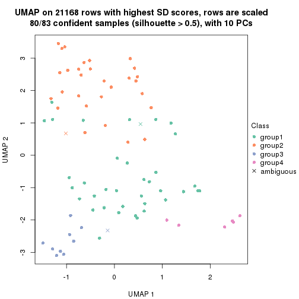
dimension_reduction(res, k = 5, method = "UMAP")
dimension_reduction(res, k = 6, method = "UMAP")
Following heatmap shows how subgroups are split when increasing k:
collect_classes(res)
Test correlation between subgroups and known annotations. If the known annotation is numeric, one-way ANOVA test is applied, and if the known annotation is discrete, chi-squared contingency table test is applied.
test_to_known_factors(res)
#> n disease.state(p) k
#> SD:pam 82 4.73e-12 2
#> SD:pam 80 2.97e-12 3
#> SD:pam 80 1.54e-11 4
#> SD:pam 79 1.06e-10 5
#> SD:pam 57 2.28e-09 6
If matrix rows can be associated to genes, consider to use functional_enrichment(res,
...) to perform function enrichment for the signature genes. See this vignette for more detailed explanations.
The object with results only for a single top-value method and a single partition method can be extracted as:
res = res_list["SD", "mclust"]
# you can also extract it by
# res = res_list["SD:mclust"]
A summary of res and all the functions that can be applied to it:
res
#> A 'ConsensusPartition' object with k = 2, 3, 4, 5, 6.
#> On a matrix with 21168 rows and 83 columns.
#> Top rows (1000, 2000, 3000, 4000, 5000) are extracted by 'SD' method.
#> Subgroups are detected by 'mclust' method.
#> Performed in total 1250 partitions by row resampling.
#> Best k for subgroups seems to be 2.
#>
#> Following methods can be applied to this 'ConsensusPartition' object:
#> [1] "cola_report" "collect_classes" "collect_plots"
#> [4] "collect_stats" "colnames" "compare_signatures"
#> [7] "consensus_heatmap" "dimension_reduction" "functional_enrichment"
#> [10] "get_anno_col" "get_anno" "get_classes"
#> [13] "get_consensus" "get_matrix" "get_membership"
#> [16] "get_param" "get_signatures" "get_stats"
#> [19] "is_best_k" "is_stable_k" "membership_heatmap"
#> [22] "ncol" "nrow" "plot_ecdf"
#> [25] "rownames" "select_partition_number" "show"
#> [28] "suggest_best_k" "test_to_known_factors"
collect_plots() function collects all the plots made from res for all k (number of partitions)
into one single page to provide an easy and fast comparison between different k.
collect_plots(res)
The plots are:
k and the heatmap of
predicted classes for each k.k.k.k.All the plots in panels can be made by individual functions and they are plotted later in this section.
select_partition_number() produces several plots showing different
statistics for choosing “optimized” k. There are following statistics:
k;k, the area increased is defined as \(A_k - A_{k-1}\).The detailed explanations of these statistics can be found in the cola vignette.
Generally speaking, lower PAC score, higher mean silhouette score or higher
concordance corresponds to better partition. Rand index and Jaccard index
measure how similar the current partition is compared to partition with k-1.
If they are too similar, we won't accept k is better than k-1.
select_partition_number(res)
The numeric values for all these statistics can be obtained by get_stats().
get_stats(res)
#> k 1-PAC mean_silhouette concordance area_increased Rand Jaccard
#> 2 2 0.829 0.876 0.948 0.4993 0.495 0.495
#> 3 3 0.842 0.798 0.907 0.2300 0.837 0.692
#> 4 4 0.722 0.792 0.882 0.1902 0.748 0.446
#> 5 5 0.630 0.673 0.764 0.0503 0.935 0.756
#> 6 6 0.760 0.762 0.843 0.0601 0.924 0.677
suggest_best_k() suggests the best \(k\) based on these statistics. The rules are as follows:
suggest_best_k(res)
#> [1] 2
Following shows the table of the partitions (You need to click the show/hide
code output link to see it). The membership matrix (columns with name p*)
is inferred by
clue::cl_consensus()
function with the SE method. Basically the value in the membership matrix
represents the probability to belong to a certain group. The finall class
label for an item is determined with the group with highest probability it
belongs to.
In get_classes() function, the entropy is calculated from the membership
matrix and the silhouette score is calculated from the consensus matrix.
cbind(get_classes(res, k = 2), get_membership(res, k = 2))
#> class entropy silhouette p1 p2
#> GSM207929 2 0.0000 0.930 0.000 1.000
#> GSM207930 2 0.8661 0.588 0.288 0.712
#> GSM207931 2 0.0000 0.930 0.000 1.000
#> GSM207932 2 0.0000 0.930 0.000 1.000
#> GSM207933 2 0.0000 0.930 0.000 1.000
#> GSM207934 2 0.0000 0.930 0.000 1.000
#> GSM207935 2 0.0000 0.930 0.000 1.000
#> GSM207936 2 0.0000 0.930 0.000 1.000
#> GSM207937 2 0.0000 0.930 0.000 1.000
#> GSM207938 2 0.0000 0.930 0.000 1.000
#> GSM207939 2 0.0000 0.930 0.000 1.000
#> GSM207940 2 0.0000 0.930 0.000 1.000
#> GSM207941 2 0.0000 0.930 0.000 1.000
#> GSM207942 2 0.0000 0.930 0.000 1.000
#> GSM207943 2 0.0000 0.930 0.000 1.000
#> GSM207944 2 0.0000 0.930 0.000 1.000
#> GSM207945 2 0.0000 0.930 0.000 1.000
#> GSM207946 2 0.0000 0.930 0.000 1.000
#> GSM207947 2 0.0376 0.927 0.004 0.996
#> GSM207948 2 0.0000 0.930 0.000 1.000
#> GSM207949 2 0.0000 0.930 0.000 1.000
#> GSM207950 2 0.0000 0.930 0.000 1.000
#> GSM207951 2 0.0000 0.930 0.000 1.000
#> GSM207952 2 0.0000 0.930 0.000 1.000
#> GSM207953 2 0.0000 0.930 0.000 1.000
#> GSM207954 2 0.0000 0.930 0.000 1.000
#> GSM207955 2 0.0000 0.930 0.000 1.000
#> GSM207956 2 0.0000 0.930 0.000 1.000
#> GSM207957 2 0.0000 0.930 0.000 1.000
#> GSM207958 2 0.0000 0.930 0.000 1.000
#> GSM207959 2 0.0000 0.930 0.000 1.000
#> GSM207960 2 0.0000 0.930 0.000 1.000
#> GSM207961 1 0.0376 0.958 0.996 0.004
#> GSM207962 1 0.7453 0.729 0.788 0.212
#> GSM207963 1 0.8144 0.660 0.748 0.252
#> GSM207964 1 0.0376 0.958 0.996 0.004
#> GSM207965 1 0.0376 0.958 0.996 0.004
#> GSM207966 1 0.1414 0.948 0.980 0.020
#> GSM207967 2 0.0000 0.930 0.000 1.000
#> GSM207968 1 0.1633 0.949 0.976 0.024
#> GSM207969 1 0.0376 0.958 0.996 0.004
#> GSM207970 1 0.0376 0.958 0.996 0.004
#> GSM207971 1 0.0376 0.958 0.996 0.004
#> GSM207972 2 0.9881 0.255 0.436 0.564
#> GSM207973 1 0.1414 0.948 0.980 0.020
#> GSM207974 1 0.1414 0.948 0.980 0.020
#> GSM207975 1 0.0376 0.958 0.996 0.004
#> GSM207976 2 0.9866 0.263 0.432 0.568
#> GSM207977 1 0.0376 0.958 0.996 0.004
#> GSM207978 1 0.1414 0.948 0.980 0.020
#> GSM207979 1 0.1414 0.948 0.980 0.020
#> GSM207980 1 0.0376 0.958 0.996 0.004
#> GSM207981 1 0.0376 0.958 0.996 0.004
#> GSM207982 1 0.0376 0.958 0.996 0.004
#> GSM207983 1 0.0376 0.958 0.996 0.004
#> GSM207984 1 0.0376 0.958 0.996 0.004
#> GSM207985 1 0.1414 0.948 0.980 0.020
#> GSM207986 1 0.0376 0.958 0.996 0.004
#> GSM207987 1 0.0376 0.958 0.996 0.004
#> GSM207988 1 0.0376 0.958 0.996 0.004
#> GSM207989 1 0.0376 0.958 0.996 0.004
#> GSM207990 1 0.0376 0.958 0.996 0.004
#> GSM207991 1 0.0376 0.958 0.996 0.004
#> GSM207992 1 0.0376 0.958 0.996 0.004
#> GSM207993 1 0.0376 0.958 0.996 0.004
#> GSM207994 2 0.0000 0.930 0.000 1.000
#> GSM207995 2 0.9866 0.273 0.432 0.568
#> GSM207996 1 0.7528 0.724 0.784 0.216
#> GSM207997 1 0.1633 0.949 0.976 0.024
#> GSM207998 2 0.7376 0.708 0.208 0.792
#> GSM207999 2 0.0000 0.930 0.000 1.000
#> GSM208000 1 0.7815 0.697 0.768 0.232
#> GSM208001 1 0.2236 0.936 0.964 0.036
#> GSM208002 1 0.9522 0.390 0.628 0.372
#> GSM208003 1 0.0376 0.958 0.996 0.004
#> GSM208004 1 0.0938 0.954 0.988 0.012
#> GSM208005 2 0.9866 0.263 0.432 0.568
#> GSM208006 2 0.0000 0.930 0.000 1.000
#> GSM208007 2 0.0000 0.930 0.000 1.000
#> GSM208008 2 0.9922 0.225 0.448 0.552
#> GSM208009 1 0.0938 0.954 0.988 0.012
#> GSM208010 1 0.0376 0.958 0.996 0.004
#> GSM208011 1 0.0376 0.958 0.996 0.004
cbind(get_classes(res, k = 3), get_membership(res, k = 3))
#> class entropy silhouette p1 p2 p3
#> GSM207929 2 0.2448 0.936 0.076 0.924 0.000
#> GSM207930 2 0.7481 0.454 0.356 0.596 0.048
#> GSM207931 2 0.2448 0.936 0.076 0.924 0.000
#> GSM207932 2 0.0000 0.954 0.000 1.000 0.000
#> GSM207933 2 0.0237 0.954 0.004 0.996 0.000
#> GSM207934 2 0.2356 0.938 0.072 0.928 0.000
#> GSM207935 2 0.2165 0.942 0.064 0.936 0.000
#> GSM207936 2 0.2066 0.943 0.060 0.940 0.000
#> GSM207937 2 0.2066 0.943 0.060 0.940 0.000
#> GSM207938 2 0.0000 0.954 0.000 1.000 0.000
#> GSM207939 2 0.0000 0.954 0.000 1.000 0.000
#> GSM207940 2 0.0000 0.954 0.000 1.000 0.000
#> GSM207941 2 0.0000 0.954 0.000 1.000 0.000
#> GSM207942 2 0.0000 0.954 0.000 1.000 0.000
#> GSM207943 2 0.0000 0.954 0.000 1.000 0.000
#> GSM207944 2 0.0000 0.954 0.000 1.000 0.000
#> GSM207945 2 0.0747 0.953 0.016 0.984 0.000
#> GSM207946 2 0.0000 0.954 0.000 1.000 0.000
#> GSM207947 2 0.2866 0.930 0.076 0.916 0.008
#> GSM207948 2 0.0892 0.952 0.020 0.980 0.000
#> GSM207949 2 0.0000 0.954 0.000 1.000 0.000
#> GSM207950 2 0.0000 0.954 0.000 1.000 0.000
#> GSM207951 2 0.0000 0.954 0.000 1.000 0.000
#> GSM207952 2 0.2356 0.938 0.072 0.928 0.000
#> GSM207953 2 0.0000 0.954 0.000 1.000 0.000
#> GSM207954 2 0.0000 0.954 0.000 1.000 0.000
#> GSM207955 2 0.0000 0.954 0.000 1.000 0.000
#> GSM207956 2 0.1964 0.944 0.056 0.944 0.000
#> GSM207957 2 0.0000 0.954 0.000 1.000 0.000
#> GSM207958 2 0.1411 0.949 0.036 0.964 0.000
#> GSM207959 2 0.0000 0.954 0.000 1.000 0.000
#> GSM207960 2 0.2448 0.936 0.076 0.924 0.000
#> GSM207961 3 0.0000 0.847 0.000 0.000 1.000
#> GSM207962 3 0.6398 0.292 0.372 0.008 0.620
#> GSM207963 3 0.3213 0.784 0.092 0.008 0.900
#> GSM207964 3 0.0000 0.847 0.000 0.000 1.000
#> GSM207965 3 0.0000 0.847 0.000 0.000 1.000
#> GSM207966 1 0.2356 0.796 0.928 0.000 0.072
#> GSM207967 2 0.2356 0.938 0.072 0.928 0.000
#> GSM207968 3 0.5591 0.483 0.304 0.000 0.696
#> GSM207969 3 0.0000 0.847 0.000 0.000 1.000
#> GSM207970 3 0.0000 0.847 0.000 0.000 1.000
#> GSM207971 3 0.0000 0.847 0.000 0.000 1.000
#> GSM207972 1 0.6260 0.328 0.552 0.000 0.448
#> GSM207973 1 0.2356 0.796 0.928 0.000 0.072
#> GSM207974 1 0.2625 0.790 0.916 0.000 0.084
#> GSM207975 3 0.0000 0.847 0.000 0.000 1.000
#> GSM207976 1 0.6302 0.238 0.520 0.000 0.480
#> GSM207977 3 0.0000 0.847 0.000 0.000 1.000
#> GSM207978 1 0.2356 0.796 0.928 0.000 0.072
#> GSM207979 1 0.2356 0.796 0.928 0.000 0.072
#> GSM207980 3 0.0000 0.847 0.000 0.000 1.000
#> GSM207981 3 0.2261 0.817 0.068 0.000 0.932
#> GSM207982 3 0.2261 0.817 0.068 0.000 0.932
#> GSM207983 3 0.2356 0.815 0.072 0.000 0.928
#> GSM207984 3 0.0000 0.847 0.000 0.000 1.000
#> GSM207985 1 0.2356 0.796 0.928 0.000 0.072
#> GSM207986 3 0.2165 0.820 0.064 0.000 0.936
#> GSM207987 3 0.2356 0.815 0.072 0.000 0.928
#> GSM207988 3 0.2356 0.815 0.072 0.000 0.928
#> GSM207989 3 0.2356 0.815 0.072 0.000 0.928
#> GSM207990 3 0.0000 0.847 0.000 0.000 1.000
#> GSM207991 3 0.1529 0.832 0.040 0.000 0.960
#> GSM207992 3 0.0000 0.847 0.000 0.000 1.000
#> GSM207993 3 0.0000 0.847 0.000 0.000 1.000
#> GSM207994 2 0.0000 0.954 0.000 1.000 0.000
#> GSM207995 3 0.8630 0.145 0.328 0.120 0.552
#> GSM207996 3 0.6771 0.486 0.276 0.040 0.684
#> GSM207997 3 0.5363 0.515 0.276 0.000 0.724
#> GSM207998 3 0.9972 -0.204 0.336 0.300 0.364
#> GSM207999 2 0.5785 0.596 0.332 0.668 0.000
#> GSM208000 3 0.5797 0.535 0.280 0.008 0.712
#> GSM208001 3 0.1711 0.826 0.032 0.008 0.960
#> GSM208002 3 0.4235 0.697 0.176 0.000 0.824
#> GSM208003 3 0.0747 0.840 0.016 0.000 0.984
#> GSM208004 3 0.1711 0.830 0.032 0.008 0.960
#> GSM208005 1 0.6286 0.289 0.536 0.000 0.464
#> GSM208006 2 0.2066 0.943 0.060 0.940 0.000
#> GSM208007 2 0.2165 0.942 0.064 0.936 0.000
#> GSM208008 3 0.8379 0.130 0.352 0.096 0.552
#> GSM208009 3 0.4228 0.734 0.148 0.008 0.844
#> GSM208010 3 0.0475 0.845 0.004 0.004 0.992
#> GSM208011 3 0.0000 0.847 0.000 0.000 1.000
cbind(get_classes(res, k = 4), get_membership(res, k = 4))
#> class entropy silhouette p1 p2 p3 p4
#> GSM207929 4 0.3266 0.727 0.000 0.168 0.000 0.832
#> GSM207930 4 0.2831 0.741 0.004 0.120 0.000 0.876
#> GSM207931 4 0.2888 0.742 0.004 0.124 0.000 0.872
#> GSM207932 2 0.0000 0.928 0.000 1.000 0.000 0.000
#> GSM207933 2 0.4843 0.195 0.000 0.604 0.000 0.396
#> GSM207934 4 0.4843 0.349 0.000 0.396 0.000 0.604
#> GSM207935 4 0.4661 0.521 0.000 0.348 0.000 0.652
#> GSM207936 2 0.3942 0.609 0.000 0.764 0.000 0.236
#> GSM207937 4 0.4456 0.630 0.004 0.280 0.000 0.716
#> GSM207938 2 0.0000 0.928 0.000 1.000 0.000 0.000
#> GSM207939 2 0.0000 0.928 0.000 1.000 0.000 0.000
#> GSM207940 2 0.0000 0.928 0.000 1.000 0.000 0.000
#> GSM207941 2 0.0000 0.928 0.000 1.000 0.000 0.000
#> GSM207942 2 0.0000 0.928 0.000 1.000 0.000 0.000
#> GSM207943 2 0.0000 0.928 0.000 1.000 0.000 0.000
#> GSM207944 2 0.0000 0.928 0.000 1.000 0.000 0.000
#> GSM207945 4 0.5000 0.157 0.000 0.496 0.000 0.504
#> GSM207946 2 0.0000 0.928 0.000 1.000 0.000 0.000
#> GSM207947 4 0.2704 0.742 0.000 0.124 0.000 0.876
#> GSM207948 2 0.0000 0.928 0.000 1.000 0.000 0.000
#> GSM207949 2 0.0000 0.928 0.000 1.000 0.000 0.000
#> GSM207950 2 0.0000 0.928 0.000 1.000 0.000 0.000
#> GSM207951 2 0.0000 0.928 0.000 1.000 0.000 0.000
#> GSM207952 4 0.2281 0.741 0.000 0.096 0.000 0.904
#> GSM207953 2 0.0000 0.928 0.000 1.000 0.000 0.000
#> GSM207954 2 0.0000 0.928 0.000 1.000 0.000 0.000
#> GSM207955 2 0.0469 0.919 0.000 0.988 0.000 0.012
#> GSM207956 2 0.4804 0.281 0.000 0.616 0.000 0.384
#> GSM207957 2 0.1716 0.868 0.000 0.936 0.000 0.064
#> GSM207958 2 0.3444 0.724 0.000 0.816 0.000 0.184
#> GSM207959 2 0.0000 0.928 0.000 1.000 0.000 0.000
#> GSM207960 4 0.2281 0.741 0.000 0.096 0.000 0.904
#> GSM207961 3 0.1474 0.954 0.000 0.000 0.948 0.052
#> GSM207962 4 0.5392 0.599 0.204 0.000 0.072 0.724
#> GSM207963 4 0.5291 0.613 0.180 0.000 0.080 0.740
#> GSM207964 3 0.1389 0.956 0.000 0.000 0.952 0.048
#> GSM207965 3 0.1302 0.957 0.000 0.000 0.956 0.044
#> GSM207966 1 0.0000 0.840 1.000 0.000 0.000 0.000
#> GSM207967 4 0.2589 0.743 0.000 0.116 0.000 0.884
#> GSM207968 1 0.3820 0.811 0.848 0.000 0.088 0.064
#> GSM207969 3 0.1302 0.957 0.000 0.000 0.956 0.044
#> GSM207970 3 0.1389 0.955 0.000 0.000 0.952 0.048
#> GSM207971 3 0.1302 0.957 0.000 0.000 0.956 0.044
#> GSM207972 1 0.5489 0.678 0.664 0.000 0.040 0.296
#> GSM207973 1 0.0817 0.844 0.976 0.000 0.000 0.024
#> GSM207974 1 0.2227 0.837 0.928 0.000 0.036 0.036
#> GSM207975 3 0.1389 0.956 0.000 0.000 0.952 0.048
#> GSM207976 1 0.5416 0.710 0.692 0.000 0.048 0.260
#> GSM207977 3 0.1302 0.957 0.000 0.000 0.956 0.044
#> GSM207978 1 0.0000 0.840 1.000 0.000 0.000 0.000
#> GSM207979 1 0.0000 0.840 1.000 0.000 0.000 0.000
#> GSM207980 3 0.1211 0.957 0.000 0.000 0.960 0.040
#> GSM207981 3 0.1118 0.923 0.000 0.000 0.964 0.036
#> GSM207982 3 0.1118 0.923 0.000 0.000 0.964 0.036
#> GSM207983 3 0.1118 0.923 0.000 0.000 0.964 0.036
#> GSM207984 3 0.1389 0.956 0.000 0.000 0.952 0.048
#> GSM207985 1 0.0000 0.840 1.000 0.000 0.000 0.000
#> GSM207986 3 0.0707 0.932 0.000 0.000 0.980 0.020
#> GSM207987 3 0.1118 0.923 0.000 0.000 0.964 0.036
#> GSM207988 3 0.1118 0.923 0.000 0.000 0.964 0.036
#> GSM207989 3 0.1118 0.923 0.000 0.000 0.964 0.036
#> GSM207990 3 0.1211 0.957 0.000 0.000 0.960 0.040
#> GSM207991 3 0.1211 0.957 0.000 0.000 0.960 0.040
#> GSM207992 3 0.1211 0.957 0.000 0.000 0.960 0.040
#> GSM207993 3 0.1302 0.957 0.000 0.000 0.956 0.044
#> GSM207994 2 0.0000 0.928 0.000 1.000 0.000 0.000
#> GSM207995 4 0.2739 0.693 0.060 0.000 0.036 0.904
#> GSM207996 4 0.5307 0.607 0.188 0.000 0.076 0.736
#> GSM207997 1 0.4144 0.797 0.828 0.000 0.104 0.068
#> GSM207998 4 0.1543 0.706 0.008 0.004 0.032 0.956
#> GSM207999 4 0.3367 0.738 0.028 0.108 0.000 0.864
#> GSM208000 4 0.5371 0.604 0.188 0.000 0.080 0.732
#> GSM208001 4 0.5265 0.618 0.160 0.000 0.092 0.748
#> GSM208002 1 0.5128 0.774 0.760 0.000 0.092 0.148
#> GSM208003 3 0.2149 0.921 0.000 0.000 0.912 0.088
#> GSM208004 4 0.5280 0.618 0.124 0.000 0.124 0.752
#> GSM208005 1 0.5835 0.584 0.588 0.000 0.040 0.372
#> GSM208006 4 0.3945 0.697 0.004 0.216 0.000 0.780
#> GSM208007 4 0.4608 0.597 0.004 0.304 0.000 0.692
#> GSM208008 4 0.1958 0.715 0.008 0.020 0.028 0.944
#> GSM208009 4 0.5307 0.607 0.188 0.000 0.076 0.736
#> GSM208010 4 0.7629 0.182 0.220 0.000 0.328 0.452
#> GSM208011 3 0.4499 0.759 0.160 0.000 0.792 0.048
cbind(get_classes(res, k = 5), get_membership(res, k = 5))
#> class entropy silhouette p1 p2 p3 p4 p5
#> GSM207929 4 0.2338 0.7441 0.004 0.112 0.000 0.884 0.000
#> GSM207930 4 0.4268 -0.1946 0.444 0.000 0.000 0.556 0.000
#> GSM207931 4 0.3115 0.7477 0.036 0.112 0.000 0.852 0.000
#> GSM207932 2 0.0000 0.9140 0.000 1.000 0.000 0.000 0.000
#> GSM207933 2 0.3274 0.6986 0.000 0.780 0.000 0.220 0.000
#> GSM207934 4 0.5382 0.5863 0.072 0.336 0.000 0.592 0.000
#> GSM207935 4 0.3366 0.7106 0.004 0.212 0.000 0.784 0.000
#> GSM207936 2 0.4302 -0.1051 0.000 0.520 0.000 0.480 0.000
#> GSM207937 4 0.3003 0.7422 0.000 0.188 0.000 0.812 0.000
#> GSM207938 2 0.0404 0.9113 0.000 0.988 0.000 0.012 0.000
#> GSM207939 2 0.0000 0.9140 0.000 1.000 0.000 0.000 0.000
#> GSM207940 2 0.0404 0.9115 0.000 0.988 0.000 0.012 0.000
#> GSM207941 2 0.0000 0.9140 0.000 1.000 0.000 0.000 0.000
#> GSM207942 2 0.0000 0.9140 0.000 1.000 0.000 0.000 0.000
#> GSM207943 2 0.0000 0.9140 0.000 1.000 0.000 0.000 0.000
#> GSM207944 2 0.0000 0.9140 0.000 1.000 0.000 0.000 0.000
#> GSM207945 2 0.3774 0.5369 0.000 0.704 0.000 0.296 0.000
#> GSM207946 2 0.0000 0.9140 0.000 1.000 0.000 0.000 0.000
#> GSM207947 4 0.5026 0.4762 0.280 0.064 0.000 0.656 0.000
#> GSM207948 2 0.2392 0.8436 0.004 0.888 0.000 0.104 0.004
#> GSM207949 2 0.0000 0.9140 0.000 1.000 0.000 0.000 0.000
#> GSM207950 2 0.0000 0.9140 0.000 1.000 0.000 0.000 0.000
#> GSM207951 2 0.0963 0.9001 0.000 0.964 0.000 0.036 0.000
#> GSM207952 4 0.3731 0.7418 0.072 0.112 0.000 0.816 0.000
#> GSM207953 2 0.0510 0.9112 0.000 0.984 0.000 0.016 0.000
#> GSM207954 2 0.0000 0.9140 0.000 1.000 0.000 0.000 0.000
#> GSM207955 2 0.1608 0.8798 0.000 0.928 0.000 0.072 0.000
#> GSM207956 4 0.4949 0.4920 0.032 0.396 0.000 0.572 0.000
#> GSM207957 2 0.1792 0.8658 0.000 0.916 0.000 0.084 0.000
#> GSM207958 2 0.3562 0.7015 0.016 0.788 0.000 0.196 0.000
#> GSM207959 2 0.0404 0.9110 0.000 0.988 0.000 0.012 0.000
#> GSM207960 4 0.3806 0.7161 0.104 0.084 0.000 0.812 0.000
#> GSM207961 3 0.4126 0.4959 0.380 0.000 0.620 0.000 0.000
#> GSM207962 1 0.4605 0.8669 0.732 0.000 0.076 0.192 0.000
#> GSM207963 1 0.5010 0.8532 0.688 0.000 0.088 0.224 0.000
#> GSM207964 3 0.3561 0.6561 0.260 0.000 0.740 0.000 0.000
#> GSM207965 3 0.3508 0.6610 0.252 0.000 0.748 0.000 0.000
#> GSM207966 5 0.0000 0.6199 0.000 0.000 0.000 0.000 1.000
#> GSM207967 4 0.4221 0.7216 0.112 0.108 0.000 0.780 0.000
#> GSM207968 5 0.8084 0.3548 0.312 0.000 0.132 0.172 0.384
#> GSM207969 3 0.2813 0.7063 0.168 0.000 0.832 0.000 0.000
#> GSM207970 3 0.3210 0.6679 0.212 0.000 0.788 0.000 0.000
#> GSM207971 3 0.1608 0.7394 0.072 0.000 0.928 0.000 0.000
#> GSM207972 5 0.7939 0.3699 0.260 0.000 0.076 0.320 0.344
#> GSM207973 5 0.1492 0.6189 0.040 0.000 0.004 0.008 0.948
#> GSM207974 5 0.5160 0.5381 0.232 0.000 0.036 0.036 0.696
#> GSM207975 3 0.3752 0.6233 0.292 0.000 0.708 0.000 0.000
#> GSM207976 5 0.7909 0.4009 0.256 0.000 0.076 0.296 0.372
#> GSM207977 3 0.1908 0.7359 0.092 0.000 0.908 0.000 0.000
#> GSM207978 5 0.0000 0.6199 0.000 0.000 0.000 0.000 1.000
#> GSM207979 5 0.0000 0.6199 0.000 0.000 0.000 0.000 1.000
#> GSM207980 3 0.2179 0.7387 0.112 0.000 0.888 0.000 0.000
#> GSM207981 3 0.5329 0.5799 0.236 0.000 0.656 0.108 0.000
#> GSM207982 3 0.5329 0.5799 0.236 0.000 0.656 0.108 0.000
#> GSM207983 3 0.5329 0.5799 0.236 0.000 0.656 0.108 0.000
#> GSM207984 3 0.3752 0.6233 0.292 0.000 0.708 0.000 0.000
#> GSM207985 5 0.0000 0.6199 0.000 0.000 0.000 0.000 1.000
#> GSM207986 3 0.2848 0.6781 0.156 0.000 0.840 0.004 0.000
#> GSM207987 3 0.5329 0.5799 0.236 0.000 0.656 0.108 0.000
#> GSM207988 3 0.5329 0.5799 0.236 0.000 0.656 0.108 0.000
#> GSM207989 3 0.5329 0.5799 0.236 0.000 0.656 0.108 0.000
#> GSM207990 3 0.2179 0.7387 0.112 0.000 0.888 0.000 0.000
#> GSM207991 3 0.1410 0.7407 0.060 0.000 0.940 0.000 0.000
#> GSM207992 3 0.1410 0.7408 0.060 0.000 0.940 0.000 0.000
#> GSM207993 3 0.3796 0.6154 0.300 0.000 0.700 0.000 0.000
#> GSM207994 2 0.1043 0.9017 0.000 0.960 0.000 0.040 0.000
#> GSM207995 1 0.4675 0.6212 0.600 0.000 0.020 0.380 0.000
#> GSM207996 1 0.5059 0.8264 0.668 0.000 0.076 0.256 0.000
#> GSM207997 5 0.7894 0.3660 0.312 0.000 0.128 0.144 0.416
#> GSM207998 4 0.4473 -0.0632 0.412 0.000 0.008 0.580 0.000
#> GSM207999 4 0.2519 0.6253 0.100 0.016 0.000 0.884 0.000
#> GSM208000 1 0.4693 0.8676 0.724 0.000 0.080 0.196 0.000
#> GSM208001 1 0.4734 0.8629 0.724 0.000 0.088 0.188 0.000
#> GSM208002 5 0.8155 0.3580 0.316 0.000 0.116 0.216 0.352
#> GSM208003 3 0.4666 0.3925 0.412 0.000 0.572 0.016 0.000
#> GSM208004 1 0.4660 0.8673 0.728 0.000 0.080 0.192 0.000
#> GSM208005 5 0.7937 0.3457 0.260 0.000 0.076 0.316 0.348
#> GSM208006 4 0.2929 0.7448 0.000 0.180 0.000 0.820 0.000
#> GSM208007 4 0.3074 0.7386 0.000 0.196 0.000 0.804 0.000
#> GSM208008 1 0.4283 0.4237 0.544 0.000 0.000 0.456 0.000
#> GSM208009 1 0.4627 0.8654 0.732 0.000 0.080 0.188 0.000
#> GSM208010 1 0.6304 0.6731 0.608 0.000 0.176 0.192 0.024
#> GSM208011 3 0.2848 0.7192 0.156 0.000 0.840 0.004 0.000
cbind(get_classes(res, k = 6), get_membership(res, k = 6))
#> class entropy silhouette p1 p2 p3 p4 p5 p6
#> GSM207929 4 0.0603 0.813 0.016 0.004 0.000 0.980 0.000 0.000
#> GSM207930 4 0.4808 0.242 0.472 0.000 0.000 0.476 0.000 0.052
#> GSM207931 4 0.1471 0.819 0.064 0.004 0.000 0.932 0.000 0.000
#> GSM207932 2 0.0000 0.933 0.000 1.000 0.000 0.000 0.000 0.000
#> GSM207933 2 0.2912 0.769 0.000 0.784 0.000 0.216 0.000 0.000
#> GSM207934 4 0.4351 0.758 0.172 0.108 0.000 0.720 0.000 0.000
#> GSM207935 4 0.2170 0.784 0.012 0.100 0.000 0.888 0.000 0.000
#> GSM207936 2 0.3797 0.380 0.000 0.580 0.000 0.420 0.000 0.000
#> GSM207937 4 0.1204 0.809 0.000 0.056 0.000 0.944 0.000 0.000
#> GSM207938 2 0.0260 0.933 0.000 0.992 0.000 0.008 0.000 0.000
#> GSM207939 2 0.0146 0.933 0.000 0.996 0.000 0.004 0.000 0.000
#> GSM207940 2 0.0363 0.932 0.000 0.988 0.000 0.012 0.000 0.000
#> GSM207941 2 0.0000 0.933 0.000 1.000 0.000 0.000 0.000 0.000
#> GSM207942 2 0.0000 0.933 0.000 1.000 0.000 0.000 0.000 0.000
#> GSM207943 2 0.0000 0.933 0.000 1.000 0.000 0.000 0.000 0.000
#> GSM207944 2 0.0000 0.933 0.000 1.000 0.000 0.000 0.000 0.000
#> GSM207945 2 0.2883 0.775 0.000 0.788 0.000 0.212 0.000 0.000
#> GSM207946 2 0.0000 0.933 0.000 1.000 0.000 0.000 0.000 0.000
#> GSM207947 4 0.4172 0.660 0.280 0.000 0.000 0.680 0.000 0.040
#> GSM207948 2 0.2070 0.872 0.008 0.892 0.000 0.100 0.000 0.000
#> GSM207949 2 0.0000 0.933 0.000 1.000 0.000 0.000 0.000 0.000
#> GSM207950 2 0.0000 0.933 0.000 1.000 0.000 0.000 0.000 0.000
#> GSM207951 2 0.0547 0.929 0.000 0.980 0.000 0.020 0.000 0.000
#> GSM207952 4 0.2664 0.789 0.184 0.000 0.000 0.816 0.000 0.000
#> GSM207953 2 0.0260 0.933 0.000 0.992 0.000 0.008 0.000 0.000
#> GSM207954 2 0.0146 0.933 0.000 0.996 0.000 0.004 0.000 0.000
#> GSM207955 2 0.1610 0.897 0.000 0.916 0.000 0.084 0.000 0.000
#> GSM207956 4 0.4461 0.708 0.104 0.192 0.000 0.704 0.000 0.000
#> GSM207957 2 0.1765 0.889 0.000 0.904 0.000 0.096 0.000 0.000
#> GSM207958 2 0.2896 0.817 0.016 0.824 0.000 0.160 0.000 0.000
#> GSM207959 2 0.0260 0.932 0.000 0.992 0.000 0.008 0.000 0.000
#> GSM207960 4 0.3078 0.779 0.192 0.000 0.000 0.796 0.000 0.012
#> GSM207961 6 0.2311 0.799 0.104 0.000 0.016 0.000 0.000 0.880
#> GSM207962 1 0.2234 0.727 0.872 0.000 0.000 0.004 0.000 0.124
#> GSM207963 1 0.2655 0.726 0.848 0.000 0.004 0.008 0.000 0.140
#> GSM207964 6 0.1049 0.826 0.008 0.000 0.032 0.000 0.000 0.960
#> GSM207965 6 0.1049 0.826 0.008 0.000 0.032 0.000 0.000 0.960
#> GSM207966 5 0.0000 0.911 0.000 0.000 0.000 0.000 1.000 0.000
#> GSM207967 4 0.2730 0.785 0.192 0.000 0.000 0.808 0.000 0.000
#> GSM207968 1 0.6493 0.499 0.572 0.000 0.004 0.156 0.164 0.104
#> GSM207969 6 0.3421 0.686 0.008 0.000 0.256 0.000 0.000 0.736
#> GSM207970 6 0.3518 0.688 0.012 0.000 0.256 0.000 0.000 0.732
#> GSM207971 6 0.3175 0.679 0.000 0.000 0.256 0.000 0.000 0.744
#> GSM207972 1 0.6147 0.543 0.588 0.000 0.004 0.192 0.052 0.164
#> GSM207973 5 0.1075 0.879 0.048 0.000 0.000 0.000 0.952 0.000
#> GSM207974 5 0.3957 0.467 0.280 0.000 0.000 0.004 0.696 0.020
#> GSM207975 6 0.2060 0.809 0.084 0.000 0.016 0.000 0.000 0.900
#> GSM207976 1 0.6635 0.505 0.544 0.000 0.008 0.208 0.076 0.164
#> GSM207977 6 0.3109 0.720 0.004 0.000 0.224 0.000 0.000 0.772
#> GSM207978 5 0.0000 0.911 0.000 0.000 0.000 0.000 1.000 0.000
#> GSM207979 5 0.0000 0.911 0.000 0.000 0.000 0.000 1.000 0.000
#> GSM207980 3 0.3563 0.556 0.000 0.000 0.664 0.000 0.000 0.336
#> GSM207981 3 0.0146 0.811 0.000 0.000 0.996 0.000 0.000 0.004
#> GSM207982 3 0.0146 0.811 0.000 0.000 0.996 0.000 0.000 0.004
#> GSM207983 3 0.0000 0.813 0.000 0.000 1.000 0.000 0.000 0.000
#> GSM207984 6 0.2060 0.809 0.084 0.000 0.016 0.000 0.000 0.900
#> GSM207985 5 0.0000 0.911 0.000 0.000 0.000 0.000 1.000 0.000
#> GSM207986 3 0.2260 0.757 0.000 0.000 0.860 0.000 0.000 0.140
#> GSM207987 3 0.0000 0.813 0.000 0.000 1.000 0.000 0.000 0.000
#> GSM207988 3 0.0000 0.813 0.000 0.000 1.000 0.000 0.000 0.000
#> GSM207989 3 0.0000 0.813 0.000 0.000 1.000 0.000 0.000 0.000
#> GSM207990 3 0.3737 0.425 0.000 0.000 0.608 0.000 0.000 0.392
#> GSM207991 3 0.3330 0.620 0.000 0.000 0.716 0.000 0.000 0.284
#> GSM207992 3 0.3620 0.502 0.000 0.000 0.648 0.000 0.000 0.352
#> GSM207993 6 0.1500 0.827 0.012 0.000 0.052 0.000 0.000 0.936
#> GSM207994 2 0.1387 0.909 0.000 0.932 0.000 0.068 0.000 0.000
#> GSM207995 1 0.2842 0.680 0.852 0.000 0.000 0.104 0.000 0.044
#> GSM207996 1 0.2724 0.697 0.864 0.000 0.000 0.084 0.000 0.052
#> GSM207997 1 0.6423 0.490 0.576 0.000 0.004 0.124 0.192 0.104
#> GSM207998 1 0.3694 0.560 0.740 0.000 0.000 0.232 0.000 0.028
#> GSM207999 4 0.0692 0.814 0.020 0.004 0.000 0.976 0.000 0.000
#> GSM208000 1 0.2527 0.728 0.868 0.000 0.000 0.024 0.000 0.108
#> GSM208001 1 0.2333 0.727 0.872 0.000 0.004 0.004 0.000 0.120
#> GSM208002 1 0.6809 0.461 0.496 0.000 0.016 0.184 0.048 0.256
#> GSM208003 6 0.2373 0.788 0.104 0.000 0.008 0.008 0.000 0.880
#> GSM208004 1 0.2445 0.727 0.868 0.000 0.008 0.004 0.000 0.120
#> GSM208005 1 0.6467 0.492 0.568 0.000 0.004 0.092 0.192 0.144
#> GSM208006 4 0.0937 0.812 0.000 0.040 0.000 0.960 0.000 0.000
#> GSM208007 4 0.1267 0.808 0.000 0.060 0.000 0.940 0.000 0.000
#> GSM208008 1 0.3475 0.725 0.800 0.000 0.000 0.060 0.000 0.140
#> GSM208009 1 0.2191 0.727 0.876 0.000 0.000 0.004 0.000 0.120
#> GSM208010 1 0.4701 0.578 0.608 0.000 0.012 0.036 0.000 0.344
#> GSM208011 6 0.2402 0.784 0.004 0.000 0.140 0.000 0.000 0.856
Heatmaps for the consensus matrix. It visualizes the probability of two samples to be in a same group.
consensus_heatmap(res, k = 2)
consensus_heatmap(res, k = 3)
consensus_heatmap(res, k = 4)
consensus_heatmap(res, k = 5)

consensus_heatmap(res, k = 6)
Heatmaps for the membership of samples in all partitions to see how consistent they are:
membership_heatmap(res, k = 2)
membership_heatmap(res, k = 3)
membership_heatmap(res, k = 4)
membership_heatmap(res, k = 5)
membership_heatmap(res, k = 6)
As soon as we have had the classes for columns, we can look for signatures which are significantly different between classes which can be candidate marks for certain classes. Following are the heatmaps for signatures.
Signature heatmaps where rows are scaled:
get_signatures(res, k = 2)
get_signatures(res, k = 3)
get_signatures(res, k = 4)
get_signatures(res, k = 5)
get_signatures(res, k = 6)
Signature heatmaps where rows are not scaled:
get_signatures(res, k = 2, scale_rows = FALSE)
get_signatures(res, k = 3, scale_rows = FALSE)

get_signatures(res, k = 4, scale_rows = FALSE)
get_signatures(res, k = 5, scale_rows = FALSE)
get_signatures(res, k = 6, scale_rows = FALSE)
Compare the overlap of signatures from different k:
compare_signatures(res)
get_signature() returns a data frame invisibly. TO get the list of signatures, the function
call should be assigned to a variable explicitly. In following code, if plot argument is set
to FALSE, no heatmap is plotted while only the differential analysis is performed.
# code only for demonstration
tb = get_signature(res, k = ..., plot = FALSE)
An example of the output of tb is:
#> which_row fdr mean_1 mean_2 scaled_mean_1 scaled_mean_2 km
#> 1 38 0.042760348 8.373488 9.131774 -0.5533452 0.5164555 1
#> 2 40 0.018707592 7.106213 8.469186 -0.6173731 0.5762149 1
#> 3 55 0.019134737 10.221463 11.207825 -0.6159697 0.5749050 1
#> 4 59 0.006059896 5.921854 7.869574 -0.6899429 0.6439467 1
#> 5 60 0.018055526 8.928898 10.211722 -0.6204761 0.5791110 1
#> 6 98 0.009384629 15.714769 14.887706 0.6635654 -0.6193277 2
...
The columns in tb are:
which_row: row indices corresponding to the input matrix.fdr: FDR for the differential test. mean_x: The mean value in group x.scaled_mean_x: The mean value in group x after rows are scaled.km: Row groups if k-means clustering is applied to rows.UMAP plot which shows how samples are separated.
dimension_reduction(res, k = 2, method = "UMAP")
dimension_reduction(res, k = 3, method = "UMAP")
dimension_reduction(res, k = 4, method = "UMAP")
dimension_reduction(res, k = 5, method = "UMAP")
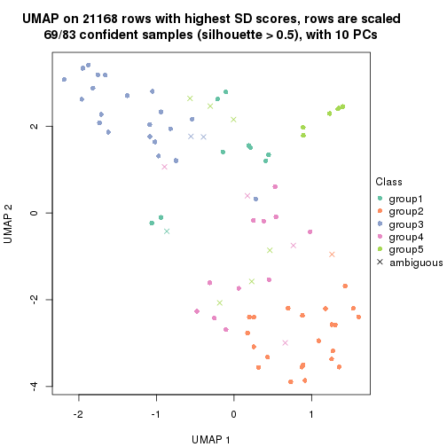
dimension_reduction(res, k = 6, method = "UMAP")
Following heatmap shows how subgroups are split when increasing k:
collect_classes(res)
Test correlation between subgroups and known annotations. If the known annotation is numeric, one-way ANOVA test is applied, and if the known annotation is discrete, chi-squared contingency table test is applied.
test_to_known_factors(res)
#> n disease.state(p) k
#> SD:mclust 77 1.60e-12 2
#> SD:mclust 73 4.30e-12 3
#> SD:mclust 78 2.12e-11 4
#> SD:mclust 69 6.56e-11 5
#> SD:mclust 75 3.14e-11 6
If matrix rows can be associated to genes, consider to use functional_enrichment(res,
...) to perform function enrichment for the signature genes. See this vignette for more detailed explanations.
The object with results only for a single top-value method and a single partition method can be extracted as:
res = res_list["SD", "NMF"]
# you can also extract it by
# res = res_list["SD:NMF"]
A summary of res and all the functions that can be applied to it:
res
#> A 'ConsensusPartition' object with k = 2, 3, 4, 5, 6.
#> On a matrix with 21168 rows and 83 columns.
#> Top rows (1000, 2000, 3000, 4000, 5000) are extracted by 'SD' method.
#> Subgroups are detected by 'NMF' method.
#> Performed in total 1250 partitions by row resampling.
#> Best k for subgroups seems to be 2.
#>
#> Following methods can be applied to this 'ConsensusPartition' object:
#> [1] "cola_report" "collect_classes" "collect_plots"
#> [4] "collect_stats" "colnames" "compare_signatures"
#> [7] "consensus_heatmap" "dimension_reduction" "functional_enrichment"
#> [10] "get_anno_col" "get_anno" "get_classes"
#> [13] "get_consensus" "get_matrix" "get_membership"
#> [16] "get_param" "get_signatures" "get_stats"
#> [19] "is_best_k" "is_stable_k" "membership_heatmap"
#> [22] "ncol" "nrow" "plot_ecdf"
#> [25] "rownames" "select_partition_number" "show"
#> [28] "suggest_best_k" "test_to_known_factors"
collect_plots() function collects all the plots made from res for all k (number of partitions)
into one single page to provide an easy and fast comparison between different k.
collect_plots(res)
The plots are:
k and the heatmap of
predicted classes for each k.k.k.k.All the plots in panels can be made by individual functions and they are plotted later in this section.
select_partition_number() produces several plots showing different
statistics for choosing “optimized” k. There are following statistics:
k;k, the area increased is defined as \(A_k - A_{k-1}\).The detailed explanations of these statistics can be found in the cola vignette.
Generally speaking, lower PAC score, higher mean silhouette score or higher
concordance corresponds to better partition. Rand index and Jaccard index
measure how similar the current partition is compared to partition with k-1.
If they are too similar, we won't accept k is better than k-1.
select_partition_number(res)
The numeric values for all these statistics can be obtained by get_stats().
get_stats(res)
#> k 1-PAC mean_silhouette concordance area_increased Rand Jaccard
#> 2 2 1.000 0.972 0.989 0.4914 0.510 0.510
#> 3 3 0.886 0.871 0.951 0.3075 0.785 0.600
#> 4 4 0.889 0.855 0.939 0.1258 0.882 0.683
#> 5 5 0.795 0.756 0.869 0.0640 0.922 0.734
#> 6 6 0.784 0.604 0.795 0.0362 0.952 0.807
suggest_best_k() suggests the best \(k\) based on these statistics. The rules are as follows:
suggest_best_k(res)
#> [1] 2
Following shows the table of the partitions (You need to click the show/hide
code output link to see it). The membership matrix (columns with name p*)
is inferred by
clue::cl_consensus()
function with the SE method. Basically the value in the membership matrix
represents the probability to belong to a certain group. The finall class
label for an item is determined with the group with highest probability it
belongs to.
In get_classes() function, the entropy is calculated from the membership
matrix and the silhouette score is calculated from the consensus matrix.
cbind(get_classes(res, k = 2), get_membership(res, k = 2))
#> class entropy silhouette p1 p2
#> GSM207929 2 0.2603 0.952 0.044 0.956
#> GSM207930 1 0.0000 0.986 1.000 0.000
#> GSM207931 2 0.4431 0.902 0.092 0.908
#> GSM207932 2 0.0000 0.992 0.000 1.000
#> GSM207933 2 0.0000 0.992 0.000 1.000
#> GSM207934 2 0.0000 0.992 0.000 1.000
#> GSM207935 2 0.0000 0.992 0.000 1.000
#> GSM207936 2 0.0000 0.992 0.000 1.000
#> GSM207937 2 0.0000 0.992 0.000 1.000
#> GSM207938 2 0.0000 0.992 0.000 1.000
#> GSM207939 2 0.0000 0.992 0.000 1.000
#> GSM207940 2 0.0000 0.992 0.000 1.000
#> GSM207941 2 0.0000 0.992 0.000 1.000
#> GSM207942 2 0.0000 0.992 0.000 1.000
#> GSM207943 2 0.0000 0.992 0.000 1.000
#> GSM207944 2 0.0000 0.992 0.000 1.000
#> GSM207945 2 0.0000 0.992 0.000 1.000
#> GSM207946 2 0.0000 0.992 0.000 1.000
#> GSM207947 1 0.1414 0.967 0.980 0.020
#> GSM207948 2 0.0000 0.992 0.000 1.000
#> GSM207949 2 0.0000 0.992 0.000 1.000
#> GSM207950 2 0.0000 0.992 0.000 1.000
#> GSM207951 2 0.0000 0.992 0.000 1.000
#> GSM207952 2 0.0000 0.992 0.000 1.000
#> GSM207953 2 0.0000 0.992 0.000 1.000
#> GSM207954 2 0.0000 0.992 0.000 1.000
#> GSM207955 2 0.0000 0.992 0.000 1.000
#> GSM207956 2 0.0000 0.992 0.000 1.000
#> GSM207957 2 0.0000 0.992 0.000 1.000
#> GSM207958 2 0.0000 0.992 0.000 1.000
#> GSM207959 2 0.0000 0.992 0.000 1.000
#> GSM207960 1 0.9933 0.170 0.548 0.452
#> GSM207961 1 0.0000 0.986 1.000 0.000
#> GSM207962 1 0.0000 0.986 1.000 0.000
#> GSM207963 1 0.0000 0.986 1.000 0.000
#> GSM207964 1 0.0000 0.986 1.000 0.000
#> GSM207965 1 0.0000 0.986 1.000 0.000
#> GSM207966 1 0.0000 0.986 1.000 0.000
#> GSM207967 2 0.0938 0.982 0.012 0.988
#> GSM207968 1 0.0000 0.986 1.000 0.000
#> GSM207969 1 0.0000 0.986 1.000 0.000
#> GSM207970 1 0.0000 0.986 1.000 0.000
#> GSM207971 1 0.0000 0.986 1.000 0.000
#> GSM207972 1 0.0000 0.986 1.000 0.000
#> GSM207973 1 0.0000 0.986 1.000 0.000
#> GSM207974 1 0.0000 0.986 1.000 0.000
#> GSM207975 1 0.0000 0.986 1.000 0.000
#> GSM207976 1 0.0000 0.986 1.000 0.000
#> GSM207977 1 0.0000 0.986 1.000 0.000
#> GSM207978 1 0.0000 0.986 1.000 0.000
#> GSM207979 1 0.0000 0.986 1.000 0.000
#> GSM207980 1 0.0000 0.986 1.000 0.000
#> GSM207981 1 0.0000 0.986 1.000 0.000
#> GSM207982 1 0.0000 0.986 1.000 0.000
#> GSM207983 1 0.0000 0.986 1.000 0.000
#> GSM207984 1 0.0000 0.986 1.000 0.000
#> GSM207985 1 0.0000 0.986 1.000 0.000
#> GSM207986 1 0.0000 0.986 1.000 0.000
#> GSM207987 1 0.0000 0.986 1.000 0.000
#> GSM207988 1 0.0000 0.986 1.000 0.000
#> GSM207989 1 0.0000 0.986 1.000 0.000
#> GSM207990 1 0.0000 0.986 1.000 0.000
#> GSM207991 1 0.0000 0.986 1.000 0.000
#> GSM207992 1 0.0000 0.986 1.000 0.000
#> GSM207993 1 0.0000 0.986 1.000 0.000
#> GSM207994 2 0.0000 0.992 0.000 1.000
#> GSM207995 1 0.0000 0.986 1.000 0.000
#> GSM207996 1 0.0000 0.986 1.000 0.000
#> GSM207997 1 0.0000 0.986 1.000 0.000
#> GSM207998 1 0.7219 0.744 0.800 0.200
#> GSM207999 2 0.5059 0.877 0.112 0.888
#> GSM208000 1 0.0000 0.986 1.000 0.000
#> GSM208001 1 0.0000 0.986 1.000 0.000
#> GSM208002 1 0.0000 0.986 1.000 0.000
#> GSM208003 1 0.0000 0.986 1.000 0.000
#> GSM208004 1 0.0000 0.986 1.000 0.000
#> GSM208005 1 0.0000 0.986 1.000 0.000
#> GSM208006 2 0.0000 0.992 0.000 1.000
#> GSM208007 2 0.0000 0.992 0.000 1.000
#> GSM208008 1 0.0000 0.986 1.000 0.000
#> GSM208009 1 0.0000 0.986 1.000 0.000
#> GSM208010 1 0.0000 0.986 1.000 0.000
#> GSM208011 1 0.0000 0.986 1.000 0.000
cbind(get_classes(res, k = 3), get_membership(res, k = 3))
#> class entropy silhouette p1 p2 p3
#> GSM207929 1 0.6307 0.0887 0.512 0.488 0.000
#> GSM207930 1 0.0000 0.9229 1.000 0.000 0.000
#> GSM207931 1 0.6095 0.3797 0.608 0.392 0.000
#> GSM207932 2 0.0000 0.9882 0.000 1.000 0.000
#> GSM207933 2 0.0000 0.9882 0.000 1.000 0.000
#> GSM207934 2 0.0000 0.9882 0.000 1.000 0.000
#> GSM207935 2 0.1031 0.9622 0.024 0.976 0.000
#> GSM207936 2 0.0000 0.9882 0.000 1.000 0.000
#> GSM207937 2 0.0000 0.9882 0.000 1.000 0.000
#> GSM207938 2 0.0000 0.9882 0.000 1.000 0.000
#> GSM207939 2 0.0000 0.9882 0.000 1.000 0.000
#> GSM207940 2 0.0000 0.9882 0.000 1.000 0.000
#> GSM207941 2 0.0000 0.9882 0.000 1.000 0.000
#> GSM207942 2 0.0000 0.9882 0.000 1.000 0.000
#> GSM207943 2 0.0000 0.9882 0.000 1.000 0.000
#> GSM207944 2 0.0000 0.9882 0.000 1.000 0.000
#> GSM207945 2 0.0000 0.9882 0.000 1.000 0.000
#> GSM207946 2 0.0000 0.9882 0.000 1.000 0.000
#> GSM207947 1 0.0000 0.9229 1.000 0.000 0.000
#> GSM207948 2 0.0000 0.9882 0.000 1.000 0.000
#> GSM207949 2 0.0000 0.9882 0.000 1.000 0.000
#> GSM207950 2 0.0000 0.9882 0.000 1.000 0.000
#> GSM207951 2 0.0000 0.9882 0.000 1.000 0.000
#> GSM207952 2 0.0000 0.9882 0.000 1.000 0.000
#> GSM207953 2 0.0000 0.9882 0.000 1.000 0.000
#> GSM207954 2 0.0000 0.9882 0.000 1.000 0.000
#> GSM207955 2 0.0000 0.9882 0.000 1.000 0.000
#> GSM207956 2 0.0000 0.9882 0.000 1.000 0.000
#> GSM207957 2 0.0000 0.9882 0.000 1.000 0.000
#> GSM207958 2 0.0000 0.9882 0.000 1.000 0.000
#> GSM207959 2 0.1411 0.9557 0.000 0.964 0.036
#> GSM207960 1 0.0892 0.9044 0.980 0.020 0.000
#> GSM207961 1 0.0000 0.9229 1.000 0.000 0.000
#> GSM207962 1 0.0000 0.9229 1.000 0.000 0.000
#> GSM207963 1 0.0000 0.9229 1.000 0.000 0.000
#> GSM207964 1 0.4504 0.6809 0.804 0.000 0.196
#> GSM207965 1 0.0747 0.9089 0.984 0.000 0.016
#> GSM207966 1 0.0000 0.9229 1.000 0.000 0.000
#> GSM207967 1 0.6008 0.4313 0.628 0.372 0.000
#> GSM207968 1 0.3619 0.7779 0.864 0.000 0.136
#> GSM207969 3 0.6308 0.1310 0.492 0.000 0.508
#> GSM207970 3 0.6062 0.4344 0.384 0.000 0.616
#> GSM207971 3 0.0000 0.8875 0.000 0.000 1.000
#> GSM207972 1 0.0000 0.9229 1.000 0.000 0.000
#> GSM207973 1 0.0000 0.9229 1.000 0.000 0.000
#> GSM207974 1 0.0000 0.9229 1.000 0.000 0.000
#> GSM207975 1 0.0000 0.9229 1.000 0.000 0.000
#> GSM207976 1 0.6286 -0.0325 0.536 0.000 0.464
#> GSM207977 3 0.4346 0.7500 0.184 0.000 0.816
#> GSM207978 1 0.0000 0.9229 1.000 0.000 0.000
#> GSM207979 1 0.0000 0.9229 1.000 0.000 0.000
#> GSM207980 3 0.0000 0.8875 0.000 0.000 1.000
#> GSM207981 3 0.0000 0.8875 0.000 0.000 1.000
#> GSM207982 3 0.0000 0.8875 0.000 0.000 1.000
#> GSM207983 3 0.0000 0.8875 0.000 0.000 1.000
#> GSM207984 1 0.0000 0.9229 1.000 0.000 0.000
#> GSM207985 1 0.0000 0.9229 1.000 0.000 0.000
#> GSM207986 3 0.0000 0.8875 0.000 0.000 1.000
#> GSM207987 3 0.0000 0.8875 0.000 0.000 1.000
#> GSM207988 3 0.0000 0.8875 0.000 0.000 1.000
#> GSM207989 3 0.0000 0.8875 0.000 0.000 1.000
#> GSM207990 3 0.0000 0.8875 0.000 0.000 1.000
#> GSM207991 3 0.0000 0.8875 0.000 0.000 1.000
#> GSM207992 3 0.0000 0.8875 0.000 0.000 1.000
#> GSM207993 3 0.6260 0.2842 0.448 0.000 0.552
#> GSM207994 2 0.0000 0.9882 0.000 1.000 0.000
#> GSM207995 1 0.0000 0.9229 1.000 0.000 0.000
#> GSM207996 1 0.0000 0.9229 1.000 0.000 0.000
#> GSM207997 1 0.0000 0.9229 1.000 0.000 0.000
#> GSM207998 1 0.0000 0.9229 1.000 0.000 0.000
#> GSM207999 2 0.5016 0.6569 0.240 0.760 0.000
#> GSM208000 1 0.0000 0.9229 1.000 0.000 0.000
#> GSM208001 1 0.0000 0.9229 1.000 0.000 0.000
#> GSM208002 1 0.0000 0.9229 1.000 0.000 0.000
#> GSM208003 1 0.0000 0.9229 1.000 0.000 0.000
#> GSM208004 1 0.0000 0.9229 1.000 0.000 0.000
#> GSM208005 1 0.0000 0.9229 1.000 0.000 0.000
#> GSM208006 2 0.0000 0.9882 0.000 1.000 0.000
#> GSM208007 2 0.0000 0.9882 0.000 1.000 0.000
#> GSM208008 1 0.0000 0.9229 1.000 0.000 0.000
#> GSM208009 1 0.0000 0.9229 1.000 0.000 0.000
#> GSM208010 1 0.0000 0.9229 1.000 0.000 0.000
#> GSM208011 3 0.4002 0.7736 0.160 0.000 0.840
cbind(get_classes(res, k = 4), get_membership(res, k = 4))
#> class entropy silhouette p1 p2 p3 p4
#> GSM207929 1 0.5004 0.348 0.604 0.392 0.000 0.004
#> GSM207930 1 0.0000 0.849 1.000 0.000 0.000 0.000
#> GSM207931 2 0.5097 0.191 0.428 0.568 0.000 0.004
#> GSM207932 2 0.0000 0.967 0.000 1.000 0.000 0.000
#> GSM207933 2 0.0000 0.967 0.000 1.000 0.000 0.000
#> GSM207934 2 0.0000 0.967 0.000 1.000 0.000 0.000
#> GSM207935 2 0.4843 0.300 0.396 0.604 0.000 0.000
#> GSM207936 2 0.0000 0.967 0.000 1.000 0.000 0.000
#> GSM207937 2 0.0000 0.967 0.000 1.000 0.000 0.000
#> GSM207938 2 0.0000 0.967 0.000 1.000 0.000 0.000
#> GSM207939 2 0.0000 0.967 0.000 1.000 0.000 0.000
#> GSM207940 2 0.0000 0.967 0.000 1.000 0.000 0.000
#> GSM207941 2 0.0000 0.967 0.000 1.000 0.000 0.000
#> GSM207942 2 0.0000 0.967 0.000 1.000 0.000 0.000
#> GSM207943 2 0.0000 0.967 0.000 1.000 0.000 0.000
#> GSM207944 2 0.0000 0.967 0.000 1.000 0.000 0.000
#> GSM207945 2 0.0000 0.967 0.000 1.000 0.000 0.000
#> GSM207946 2 0.0000 0.967 0.000 1.000 0.000 0.000
#> GSM207947 1 0.0188 0.849 0.996 0.000 0.000 0.004
#> GSM207948 2 0.0188 0.964 0.000 0.996 0.004 0.000
#> GSM207949 2 0.0000 0.967 0.000 1.000 0.000 0.000
#> GSM207950 2 0.0000 0.967 0.000 1.000 0.000 0.000
#> GSM207951 2 0.0000 0.967 0.000 1.000 0.000 0.000
#> GSM207952 2 0.0336 0.960 0.008 0.992 0.000 0.000
#> GSM207953 2 0.0000 0.967 0.000 1.000 0.000 0.000
#> GSM207954 2 0.0000 0.967 0.000 1.000 0.000 0.000
#> GSM207955 2 0.0000 0.967 0.000 1.000 0.000 0.000
#> GSM207956 2 0.0188 0.963 0.004 0.996 0.000 0.000
#> GSM207957 2 0.0000 0.967 0.000 1.000 0.000 0.000
#> GSM207958 2 0.0000 0.967 0.000 1.000 0.000 0.000
#> GSM207959 2 0.1716 0.908 0.000 0.936 0.064 0.000
#> GSM207960 1 0.6118 0.557 0.672 0.208 0.000 0.120
#> GSM207961 1 0.0000 0.849 1.000 0.000 0.000 0.000
#> GSM207962 1 0.4543 0.521 0.676 0.000 0.000 0.324
#> GSM207963 1 0.0188 0.849 0.996 0.000 0.000 0.004
#> GSM207964 1 0.0921 0.839 0.972 0.000 0.028 0.000
#> GSM207965 1 0.0376 0.848 0.992 0.000 0.004 0.004
#> GSM207966 4 0.0000 0.945 0.000 0.000 0.000 1.000
#> GSM207967 1 0.6395 0.120 0.476 0.460 0.000 0.064
#> GSM207968 4 0.0000 0.945 0.000 0.000 0.000 1.000
#> GSM207969 3 0.4313 0.651 0.260 0.000 0.736 0.004
#> GSM207970 3 0.2623 0.884 0.064 0.000 0.908 0.028
#> GSM207971 3 0.0188 0.952 0.004 0.000 0.996 0.000
#> GSM207972 4 0.3168 0.867 0.056 0.000 0.060 0.884
#> GSM207973 4 0.0000 0.945 0.000 0.000 0.000 1.000
#> GSM207974 4 0.0592 0.939 0.016 0.000 0.000 0.984
#> GSM207975 1 0.0000 0.849 1.000 0.000 0.000 0.000
#> GSM207976 4 0.0336 0.941 0.000 0.000 0.008 0.992
#> GSM207977 1 0.4843 0.278 0.604 0.000 0.396 0.000
#> GSM207978 4 0.0000 0.945 0.000 0.000 0.000 1.000
#> GSM207979 4 0.0000 0.945 0.000 0.000 0.000 1.000
#> GSM207980 3 0.0000 0.954 0.000 0.000 1.000 0.000
#> GSM207981 3 0.0000 0.954 0.000 0.000 1.000 0.000
#> GSM207982 3 0.0000 0.954 0.000 0.000 1.000 0.000
#> GSM207983 3 0.0000 0.954 0.000 0.000 1.000 0.000
#> GSM207984 1 0.0000 0.849 1.000 0.000 0.000 0.000
#> GSM207985 4 0.0000 0.945 0.000 0.000 0.000 1.000
#> GSM207986 3 0.0000 0.954 0.000 0.000 1.000 0.000
#> GSM207987 3 0.0000 0.954 0.000 0.000 1.000 0.000
#> GSM207988 3 0.0000 0.954 0.000 0.000 1.000 0.000
#> GSM207989 3 0.0000 0.954 0.000 0.000 1.000 0.000
#> GSM207990 3 0.0000 0.954 0.000 0.000 1.000 0.000
#> GSM207991 3 0.0000 0.954 0.000 0.000 1.000 0.000
#> GSM207992 3 0.0000 0.954 0.000 0.000 1.000 0.000
#> GSM207993 1 0.0469 0.846 0.988 0.000 0.012 0.000
#> GSM207994 2 0.0000 0.967 0.000 1.000 0.000 0.000
#> GSM207995 1 0.0707 0.845 0.980 0.000 0.000 0.020
#> GSM207996 1 0.4040 0.649 0.752 0.000 0.000 0.248
#> GSM207997 4 0.0469 0.941 0.012 0.000 0.000 0.988
#> GSM207998 1 0.4406 0.580 0.700 0.000 0.000 0.300
#> GSM207999 2 0.1411 0.934 0.020 0.960 0.000 0.020
#> GSM208000 1 0.2814 0.769 0.868 0.000 0.000 0.132
#> GSM208001 1 0.0188 0.849 0.996 0.000 0.000 0.004
#> GSM208002 4 0.4790 0.345 0.380 0.000 0.000 0.620
#> GSM208003 1 0.0000 0.849 1.000 0.000 0.000 0.000
#> GSM208004 1 0.0336 0.849 0.992 0.000 0.000 0.008
#> GSM208005 4 0.0921 0.930 0.028 0.000 0.000 0.972
#> GSM208006 2 0.0000 0.967 0.000 1.000 0.000 0.000
#> GSM208007 2 0.0000 0.967 0.000 1.000 0.000 0.000
#> GSM208008 1 0.0469 0.848 0.988 0.000 0.000 0.012
#> GSM208009 1 0.3726 0.696 0.788 0.000 0.000 0.212
#> GSM208010 1 0.0707 0.846 0.980 0.000 0.000 0.020
#> GSM208011 3 0.3649 0.750 0.204 0.000 0.796 0.000
cbind(get_classes(res, k = 5), get_membership(res, k = 5))
#> class entropy silhouette p1 p2 p3 p4 p5
#> GSM207929 1 0.4217 0.424 0.704 0.280 0.000 0.012 0.004
#> GSM207930 4 0.4045 0.208 0.356 0.000 0.000 0.644 0.000
#> GSM207931 1 0.4181 0.372 0.676 0.316 0.000 0.004 0.004
#> GSM207932 2 0.0000 0.951 0.000 1.000 0.000 0.000 0.000
#> GSM207933 2 0.0000 0.951 0.000 1.000 0.000 0.000 0.000
#> GSM207934 2 0.3366 0.714 0.000 0.768 0.000 0.232 0.000
#> GSM207935 2 0.5255 0.209 0.388 0.560 0.000 0.052 0.000
#> GSM207936 2 0.1697 0.907 0.060 0.932 0.000 0.008 0.000
#> GSM207937 2 0.0162 0.951 0.000 0.996 0.000 0.004 0.000
#> GSM207938 2 0.0162 0.951 0.004 0.996 0.000 0.000 0.000
#> GSM207939 2 0.0404 0.949 0.012 0.988 0.000 0.000 0.000
#> GSM207940 2 0.0162 0.951 0.004 0.996 0.000 0.000 0.000
#> GSM207941 2 0.0162 0.950 0.000 0.996 0.004 0.000 0.000
#> GSM207942 2 0.1095 0.935 0.008 0.968 0.012 0.012 0.000
#> GSM207943 2 0.0000 0.951 0.000 1.000 0.000 0.000 0.000
#> GSM207944 2 0.0000 0.951 0.000 1.000 0.000 0.000 0.000
#> GSM207945 2 0.0000 0.951 0.000 1.000 0.000 0.000 0.000
#> GSM207946 2 0.0162 0.951 0.004 0.996 0.000 0.000 0.000
#> GSM207947 1 0.4367 0.391 0.580 0.000 0.000 0.416 0.004
#> GSM207948 2 0.0000 0.951 0.000 1.000 0.000 0.000 0.000
#> GSM207949 2 0.0000 0.951 0.000 1.000 0.000 0.000 0.000
#> GSM207950 2 0.0000 0.951 0.000 1.000 0.000 0.000 0.000
#> GSM207951 2 0.0162 0.951 0.004 0.996 0.000 0.000 0.000
#> GSM207952 2 0.3888 0.755 0.056 0.796 0.000 0.148 0.000
#> GSM207953 2 0.0000 0.951 0.000 1.000 0.000 0.000 0.000
#> GSM207954 2 0.0609 0.945 0.020 0.980 0.000 0.000 0.000
#> GSM207955 2 0.0162 0.951 0.004 0.996 0.000 0.000 0.000
#> GSM207956 2 0.0955 0.935 0.004 0.968 0.000 0.028 0.000
#> GSM207957 2 0.0290 0.950 0.008 0.992 0.000 0.000 0.000
#> GSM207958 2 0.0703 0.940 0.000 0.976 0.000 0.024 0.000
#> GSM207959 2 0.0898 0.941 0.020 0.972 0.008 0.000 0.000
#> GSM207960 1 0.6106 0.494 0.664 0.128 0.000 0.056 0.152
#> GSM207961 1 0.3003 0.642 0.812 0.000 0.000 0.188 0.000
#> GSM207962 4 0.1106 0.723 0.012 0.000 0.000 0.964 0.024
#> GSM207963 4 0.1671 0.727 0.076 0.000 0.000 0.924 0.000
#> GSM207964 1 0.2951 0.616 0.860 0.000 0.028 0.112 0.000
#> GSM207965 1 0.2069 0.619 0.912 0.000 0.012 0.076 0.000
#> GSM207966 5 0.0162 0.914 0.000 0.000 0.000 0.004 0.996
#> GSM207967 4 0.2157 0.709 0.036 0.040 0.000 0.920 0.004
#> GSM207968 5 0.2157 0.887 0.036 0.000 0.004 0.040 0.920
#> GSM207969 3 0.3543 0.806 0.112 0.000 0.828 0.060 0.000
#> GSM207970 3 0.3334 0.832 0.064 0.000 0.852 0.080 0.004
#> GSM207971 3 0.4297 0.232 0.472 0.000 0.528 0.000 0.000
#> GSM207972 5 0.4734 0.512 0.344 0.000 0.008 0.016 0.632
#> GSM207973 5 0.0566 0.913 0.012 0.000 0.000 0.004 0.984
#> GSM207974 5 0.1106 0.907 0.024 0.000 0.000 0.012 0.964
#> GSM207975 1 0.3876 0.590 0.684 0.000 0.000 0.316 0.000
#> GSM207976 5 0.5443 0.619 0.024 0.000 0.068 0.232 0.676
#> GSM207977 1 0.5703 0.175 0.508 0.000 0.408 0.084 0.000
#> GSM207978 5 0.0290 0.913 0.000 0.000 0.000 0.008 0.992
#> GSM207979 5 0.0000 0.915 0.000 0.000 0.000 0.000 1.000
#> GSM207980 3 0.0693 0.914 0.012 0.000 0.980 0.008 0.000
#> GSM207981 3 0.0579 0.913 0.008 0.000 0.984 0.008 0.000
#> GSM207982 3 0.0579 0.913 0.008 0.000 0.984 0.008 0.000
#> GSM207983 3 0.0290 0.917 0.008 0.000 0.992 0.000 0.000
#> GSM207984 1 0.4304 0.297 0.516 0.000 0.000 0.484 0.000
#> GSM207985 5 0.0000 0.915 0.000 0.000 0.000 0.000 1.000
#> GSM207986 3 0.0404 0.916 0.012 0.000 0.988 0.000 0.000
#> GSM207987 3 0.0290 0.917 0.008 0.000 0.992 0.000 0.000
#> GSM207988 3 0.0404 0.916 0.012 0.000 0.988 0.000 0.000
#> GSM207989 3 0.0290 0.917 0.008 0.000 0.992 0.000 0.000
#> GSM207990 3 0.3074 0.795 0.196 0.000 0.804 0.000 0.000
#> GSM207991 3 0.0798 0.910 0.008 0.000 0.976 0.016 0.000
#> GSM207992 3 0.0693 0.914 0.012 0.000 0.980 0.008 0.000
#> GSM207993 1 0.3922 0.583 0.780 0.000 0.040 0.180 0.000
#> GSM207994 2 0.0290 0.950 0.008 0.992 0.000 0.000 0.000
#> GSM207995 1 0.4252 0.569 0.652 0.000 0.000 0.340 0.008
#> GSM207996 1 0.5998 0.273 0.464 0.000 0.000 0.424 0.112
#> GSM207997 5 0.0290 0.914 0.008 0.000 0.000 0.000 0.992
#> GSM207998 4 0.3966 0.668 0.132 0.000 0.000 0.796 0.072
#> GSM207999 4 0.4201 0.352 0.008 0.328 0.000 0.664 0.000
#> GSM208000 4 0.2305 0.721 0.092 0.000 0.000 0.896 0.012
#> GSM208001 1 0.4060 0.572 0.640 0.000 0.000 0.360 0.000
#> GSM208002 1 0.4846 0.161 0.588 0.000 0.000 0.028 0.384
#> GSM208003 1 0.3366 0.634 0.768 0.000 0.000 0.232 0.000
#> GSM208004 1 0.4225 0.568 0.632 0.000 0.000 0.364 0.004
#> GSM208005 5 0.2012 0.888 0.060 0.000 0.000 0.020 0.920
#> GSM208006 2 0.3242 0.730 0.000 0.784 0.000 0.216 0.000
#> GSM208007 2 0.0162 0.951 0.004 0.996 0.000 0.000 0.000
#> GSM208008 4 0.1121 0.733 0.044 0.000 0.000 0.956 0.000
#> GSM208009 4 0.4058 0.631 0.152 0.000 0.000 0.784 0.064
#> GSM208010 1 0.2798 0.643 0.852 0.000 0.000 0.140 0.008
#> GSM208011 4 0.4141 0.493 0.024 0.000 0.248 0.728 0.000
cbind(get_classes(res, k = 6), get_membership(res, k = 6))
#> class entropy silhouette p1 p2 p3 p4 p5 p6
#> GSM207929 6 0.6184 -0.11516 0.000 0.312 0.000 0.280 0.004 0.404
#> GSM207930 4 0.4851 0.54104 0.272 0.000 0.000 0.632 0.000 0.096
#> GSM207931 6 0.6251 -0.17461 0.004 0.320 0.000 0.336 0.000 0.340
#> GSM207932 2 0.0405 0.90428 0.008 0.988 0.000 0.004 0.000 0.000
#> GSM207933 2 0.0260 0.90476 0.008 0.992 0.000 0.000 0.000 0.000
#> GSM207934 2 0.4316 0.50818 0.312 0.648 0.000 0.040 0.000 0.000
#> GSM207935 2 0.6213 -0.23557 0.016 0.412 0.000 0.384 0.000 0.188
#> GSM207936 2 0.3900 0.64766 0.000 0.728 0.000 0.232 0.000 0.040
#> GSM207937 2 0.1714 0.86236 0.000 0.908 0.000 0.092 0.000 0.000
#> GSM207938 2 0.0000 0.90557 0.000 1.000 0.000 0.000 0.000 0.000
#> GSM207939 2 0.0146 0.90543 0.004 0.996 0.000 0.000 0.000 0.000
#> GSM207940 2 0.0000 0.90557 0.000 1.000 0.000 0.000 0.000 0.000
#> GSM207941 2 0.1369 0.89528 0.016 0.952 0.016 0.016 0.000 0.000
#> GSM207942 2 0.1518 0.89093 0.024 0.944 0.024 0.008 0.000 0.000
#> GSM207943 2 0.0000 0.90557 0.000 1.000 0.000 0.000 0.000 0.000
#> GSM207944 2 0.0000 0.90557 0.000 1.000 0.000 0.000 0.000 0.000
#> GSM207945 2 0.0146 0.90539 0.004 0.996 0.000 0.000 0.000 0.000
#> GSM207946 2 0.0000 0.90557 0.000 1.000 0.000 0.000 0.000 0.000
#> GSM207947 4 0.3842 0.58242 0.100 0.000 0.000 0.784 0.004 0.112
#> GSM207948 2 0.1627 0.88658 0.008 0.944 0.016 0.016 0.000 0.016
#> GSM207949 2 0.0146 0.90538 0.004 0.996 0.000 0.000 0.000 0.000
#> GSM207950 2 0.0909 0.89919 0.012 0.968 0.000 0.020 0.000 0.000
#> GSM207951 2 0.0436 0.90501 0.004 0.988 0.000 0.004 0.000 0.004
#> GSM207952 2 0.5955 0.08128 0.156 0.464 0.000 0.368 0.000 0.012
#> GSM207953 2 0.0146 0.90543 0.004 0.996 0.000 0.000 0.000 0.000
#> GSM207954 2 0.0508 0.90384 0.004 0.984 0.000 0.000 0.000 0.012
#> GSM207955 2 0.0291 0.90565 0.004 0.992 0.000 0.000 0.000 0.004
#> GSM207956 2 0.1787 0.86924 0.068 0.920 0.000 0.008 0.000 0.004
#> GSM207957 2 0.0146 0.90543 0.004 0.996 0.000 0.000 0.000 0.000
#> GSM207958 2 0.1391 0.89018 0.016 0.944 0.000 0.040 0.000 0.000
#> GSM207959 2 0.1371 0.88679 0.004 0.948 0.004 0.004 0.000 0.040
#> GSM207960 4 0.6954 0.33820 0.024 0.068 0.000 0.492 0.132 0.284
#> GSM207961 6 0.4405 0.15133 0.072 0.000 0.000 0.240 0.000 0.688
#> GSM207962 1 0.1148 0.73924 0.960 0.000 0.000 0.004 0.016 0.020
#> GSM207963 1 0.2294 0.73271 0.892 0.000 0.000 0.072 0.000 0.036
#> GSM207964 6 0.1966 0.37859 0.024 0.000 0.028 0.024 0.000 0.924
#> GSM207965 6 0.1053 0.36305 0.004 0.000 0.012 0.020 0.000 0.964
#> GSM207966 5 0.0405 0.81600 0.004 0.000 0.000 0.008 0.988 0.000
#> GSM207967 1 0.2651 0.70068 0.872 0.036 0.000 0.088 0.000 0.004
#> GSM207968 5 0.4914 0.67444 0.080 0.000 0.000 0.080 0.728 0.112
#> GSM207969 6 0.5824 0.16929 0.024 0.000 0.388 0.104 0.000 0.484
#> GSM207970 6 0.6837 0.07754 0.048 0.000 0.404 0.092 0.040 0.416
#> GSM207971 6 0.4291 0.31117 0.000 0.000 0.292 0.044 0.000 0.664
#> GSM207972 6 0.6269 0.00548 0.008 0.000 0.000 0.268 0.324 0.400
#> GSM207973 5 0.1714 0.79111 0.000 0.000 0.000 0.092 0.908 0.000
#> GSM207974 5 0.3109 0.69870 0.000 0.000 0.000 0.224 0.772 0.004
#> GSM207975 4 0.5592 0.35641 0.148 0.000 0.000 0.484 0.000 0.368
#> GSM207976 5 0.7649 0.27220 0.264 0.000 0.052 0.244 0.388 0.052
#> GSM207977 6 0.6551 -0.07657 0.020 0.000 0.336 0.308 0.000 0.336
#> GSM207978 5 0.0405 0.81583 0.008 0.000 0.000 0.004 0.988 0.000
#> GSM207979 5 0.0000 0.81644 0.000 0.000 0.000 0.000 1.000 0.000
#> GSM207980 3 0.2511 0.86383 0.000 0.000 0.880 0.056 0.000 0.064
#> GSM207981 3 0.0891 0.92885 0.000 0.000 0.968 0.024 0.000 0.008
#> GSM207982 3 0.0806 0.93061 0.000 0.000 0.972 0.020 0.000 0.008
#> GSM207983 3 0.0000 0.93878 0.000 0.000 1.000 0.000 0.000 0.000
#> GSM207984 6 0.6049 -0.28134 0.268 0.000 0.000 0.324 0.000 0.408
#> GSM207985 5 0.0260 0.81577 0.000 0.000 0.000 0.008 0.992 0.000
#> GSM207986 3 0.0508 0.93610 0.000 0.000 0.984 0.004 0.000 0.012
#> GSM207987 3 0.0000 0.93878 0.000 0.000 1.000 0.000 0.000 0.000
#> GSM207988 3 0.0405 0.93757 0.000 0.000 0.988 0.004 0.000 0.008
#> GSM207989 3 0.0405 0.93757 0.000 0.000 0.988 0.004 0.000 0.008
#> GSM207990 3 0.4039 0.49340 0.000 0.000 0.632 0.016 0.000 0.352
#> GSM207991 3 0.0146 0.93829 0.000 0.000 0.996 0.004 0.000 0.000
#> GSM207992 3 0.0692 0.92911 0.020 0.000 0.976 0.000 0.000 0.004
#> GSM207993 6 0.2283 0.37555 0.056 0.000 0.020 0.020 0.000 0.904
#> GSM207994 2 0.0405 0.90516 0.004 0.988 0.000 0.008 0.000 0.000
#> GSM207995 6 0.6217 -0.33850 0.208 0.000 0.000 0.380 0.012 0.400
#> GSM207996 6 0.7072 0.06809 0.324 0.000 0.000 0.152 0.116 0.408
#> GSM207997 5 0.1713 0.80078 0.000 0.000 0.000 0.028 0.928 0.044
#> GSM207998 1 0.5515 0.38062 0.608 0.020 0.000 0.288 0.068 0.016
#> GSM207999 1 0.4675 0.37086 0.660 0.288 0.000 0.016 0.008 0.028
#> GSM208000 1 0.2458 0.72596 0.892 0.000 0.000 0.024 0.016 0.068
#> GSM208001 6 0.5547 0.12852 0.332 0.000 0.000 0.152 0.000 0.516
#> GSM208002 6 0.4958 0.29079 0.016 0.000 0.004 0.140 0.140 0.700
#> GSM208003 6 0.3877 0.33569 0.160 0.000 0.000 0.076 0.000 0.764
#> GSM208004 6 0.5530 0.20145 0.400 0.000 0.000 0.072 0.024 0.504
#> GSM208005 5 0.3989 0.43960 0.004 0.000 0.000 0.468 0.528 0.000
#> GSM208006 2 0.5423 0.53577 0.204 0.656 0.000 0.060 0.000 0.080
#> GSM208007 2 0.1829 0.86503 0.000 0.920 0.000 0.024 0.000 0.056
#> GSM208008 1 0.2263 0.72374 0.884 0.000 0.000 0.100 0.000 0.016
#> GSM208009 1 0.4218 0.62675 0.772 0.000 0.000 0.032 0.068 0.128
#> GSM208010 6 0.4246 0.16786 0.028 0.000 0.000 0.268 0.012 0.692
#> GSM208011 1 0.4326 0.62895 0.772 0.000 0.112 0.056 0.000 0.060
Heatmaps for the consensus matrix. It visualizes the probability of two samples to be in a same group.
consensus_heatmap(res, k = 2)
consensus_heatmap(res, k = 3)
consensus_heatmap(res, k = 4)
consensus_heatmap(res, k = 5)
consensus_heatmap(res, k = 6)
Heatmaps for the membership of samples in all partitions to see how consistent they are:
membership_heatmap(res, k = 2)
membership_heatmap(res, k = 3)
membership_heatmap(res, k = 4)
membership_heatmap(res, k = 5)
membership_heatmap(res, k = 6)
As soon as we have had the classes for columns, we can look for signatures which are significantly different between classes which can be candidate marks for certain classes. Following are the heatmaps for signatures.
Signature heatmaps where rows are scaled:
get_signatures(res, k = 2)
get_signatures(res, k = 3)
get_signatures(res, k = 4)

get_signatures(res, k = 5)
get_signatures(res, k = 6)
Signature heatmaps where rows are not scaled:
get_signatures(res, k = 2, scale_rows = FALSE)
get_signatures(res, k = 3, scale_rows = FALSE)
get_signatures(res, k = 4, scale_rows = FALSE)
get_signatures(res, k = 5, scale_rows = FALSE)
get_signatures(res, k = 6, scale_rows = FALSE)
Compare the overlap of signatures from different k:
compare_signatures(res)

get_signature() returns a data frame invisibly. TO get the list of signatures, the function
call should be assigned to a variable explicitly. In following code, if plot argument is set
to FALSE, no heatmap is plotted while only the differential analysis is performed.
# code only for demonstration
tb = get_signature(res, k = ..., plot = FALSE)
An example of the output of tb is:
#> which_row fdr mean_1 mean_2 scaled_mean_1 scaled_mean_2 km
#> 1 38 0.042760348 8.373488 9.131774 -0.5533452 0.5164555 1
#> 2 40 0.018707592 7.106213 8.469186 -0.6173731 0.5762149 1
#> 3 55 0.019134737 10.221463 11.207825 -0.6159697 0.5749050 1
#> 4 59 0.006059896 5.921854 7.869574 -0.6899429 0.6439467 1
#> 5 60 0.018055526 8.928898 10.211722 -0.6204761 0.5791110 1
#> 6 98 0.009384629 15.714769 14.887706 0.6635654 -0.6193277 2
...
The columns in tb are:
which_row: row indices corresponding to the input matrix.fdr: FDR for the differential test. mean_x: The mean value in group x.scaled_mean_x: The mean value in group x after rows are scaled.km: Row groups if k-means clustering is applied to rows.UMAP plot which shows how samples are separated.
dimension_reduction(res, k = 2, method = "UMAP")
dimension_reduction(res, k = 3, method = "UMAP")
dimension_reduction(res, k = 4, method = "UMAP")
dimension_reduction(res, k = 5, method = "UMAP")
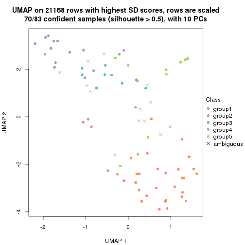
dimension_reduction(res, k = 6, method = "UMAP")
Following heatmap shows how subgroups are split when increasing k:
collect_classes(res)
Test correlation between subgroups and known annotations. If the known annotation is numeric, one-way ANOVA test is applied, and if the known annotation is discrete, chi-squared contingency table test is applied.
test_to_known_factors(res)
#> n disease.state(p) k
#> SD:NMF 82 4.73e-13 2
#> SD:NMF 76 2.66e-12 3
#> SD:NMF 77 1.02e-11 4
#> SD:NMF 70 6.05e-12 5
#> SD:NMF 55 5.61e-09 6
If matrix rows can be associated to genes, consider to use functional_enrichment(res,
...) to perform function enrichment for the signature genes. See this vignette for more detailed explanations.
The object with results only for a single top-value method and a single partition method can be extracted as:
res = res_list["CV", "hclust"]
# you can also extract it by
# res = res_list["CV:hclust"]
A summary of res and all the functions that can be applied to it:
res
#> A 'ConsensusPartition' object with k = 2, 3, 4, 5, 6.
#> On a matrix with 21168 rows and 83 columns.
#> Top rows (1000, 2000, 3000, 4000, 5000) are extracted by 'CV' method.
#> Subgroups are detected by 'hclust' method.
#> Performed in total 1250 partitions by row resampling.
#> Best k for subgroups seems to be 2.
#>
#> Following methods can be applied to this 'ConsensusPartition' object:
#> [1] "cola_report" "collect_classes" "collect_plots"
#> [4] "collect_stats" "colnames" "compare_signatures"
#> [7] "consensus_heatmap" "dimension_reduction" "functional_enrichment"
#> [10] "get_anno_col" "get_anno" "get_classes"
#> [13] "get_consensus" "get_matrix" "get_membership"
#> [16] "get_param" "get_signatures" "get_stats"
#> [19] "is_best_k" "is_stable_k" "membership_heatmap"
#> [22] "ncol" "nrow" "plot_ecdf"
#> [25] "rownames" "select_partition_number" "show"
#> [28] "suggest_best_k" "test_to_known_factors"
collect_plots() function collects all the plots made from res for all k (number of partitions)
into one single page to provide an easy and fast comparison between different k.
collect_plots(res)
The plots are:
k and the heatmap of
predicted classes for each k.k.k.k.All the plots in panels can be made by individual functions and they are plotted later in this section.
select_partition_number() produces several plots showing different
statistics for choosing “optimized” k. There are following statistics:
k;k, the area increased is defined as \(A_k - A_{k-1}\).The detailed explanations of these statistics can be found in the cola vignette.
Generally speaking, lower PAC score, higher mean silhouette score or higher
concordance corresponds to better partition. Rand index and Jaccard index
measure how similar the current partition is compared to partition with k-1.
If they are too similar, we won't accept k is better than k-1.
select_partition_number(res)
The numeric values for all these statistics can be obtained by get_stats().
get_stats(res)
#> k 1-PAC mean_silhouette concordance area_increased Rand Jaccard
#> 2 2 0.407 0.867 0.904 0.4403 0.526 0.526
#> 3 3 0.604 0.669 0.862 0.2536 0.985 0.972
#> 4 4 0.652 0.757 0.895 0.1890 0.841 0.690
#> 5 5 0.625 0.563 0.822 0.0795 0.976 0.934
#> 6 6 0.605 0.457 0.735 0.0620 0.888 0.678
suggest_best_k() suggests the best \(k\) based on these statistics. The rules are as follows:
suggest_best_k(res)
#> [1] 2
Following shows the table of the partitions (You need to click the show/hide
code output link to see it). The membership matrix (columns with name p*)
is inferred by
clue::cl_consensus()
function with the SE method. Basically the value in the membership matrix
represents the probability to belong to a certain group. The finall class
label for an item is determined with the group with highest probability it
belongs to.
In get_classes() function, the entropy is calculated from the membership
matrix and the silhouette score is calculated from the consensus matrix.
cbind(get_classes(res, k = 2), get_membership(res, k = 2))
#> class entropy silhouette p1 p2
#> GSM207929 2 0.8661 0.776 0.288 0.712
#> GSM207930 1 0.0672 0.924 0.992 0.008
#> GSM207931 1 0.9044 0.435 0.680 0.320
#> GSM207932 2 0.3584 0.912 0.068 0.932
#> GSM207933 2 0.5178 0.928 0.116 0.884
#> GSM207934 2 0.7674 0.857 0.224 0.776
#> GSM207935 2 0.7950 0.834 0.240 0.760
#> GSM207936 2 0.6973 0.891 0.188 0.812
#> GSM207937 2 0.7139 0.882 0.196 0.804
#> GSM207938 2 0.4939 0.932 0.108 0.892
#> GSM207939 2 0.4939 0.932 0.108 0.892
#> GSM207940 2 0.4939 0.932 0.108 0.892
#> GSM207941 2 0.3584 0.912 0.068 0.932
#> GSM207942 2 0.3584 0.912 0.068 0.932
#> GSM207943 2 0.4690 0.931 0.100 0.900
#> GSM207944 2 0.4690 0.931 0.100 0.900
#> GSM207945 2 0.5178 0.928 0.116 0.884
#> GSM207946 2 0.4815 0.932 0.104 0.896
#> GSM207947 1 0.9922 0.171 0.552 0.448
#> GSM207948 2 0.5737 0.921 0.136 0.864
#> GSM207949 2 0.3879 0.917 0.076 0.924
#> GSM207950 2 0.3584 0.912 0.068 0.932
#> GSM207951 2 0.4815 0.932 0.104 0.896
#> GSM207952 1 0.9209 0.396 0.664 0.336
#> GSM207953 2 0.4562 0.929 0.096 0.904
#> GSM207954 2 0.4815 0.932 0.104 0.896
#> GSM207955 2 0.4815 0.932 0.104 0.896
#> GSM207956 2 0.7376 0.874 0.208 0.792
#> GSM207957 2 0.4815 0.932 0.104 0.896
#> GSM207958 2 0.5737 0.917 0.136 0.864
#> GSM207959 2 0.4939 0.932 0.108 0.892
#> GSM207960 1 0.8443 0.556 0.728 0.272
#> GSM207961 1 0.0000 0.926 1.000 0.000
#> GSM207962 1 0.0000 0.926 1.000 0.000
#> GSM207963 1 0.0000 0.926 1.000 0.000
#> GSM207964 1 0.0672 0.925 0.992 0.008
#> GSM207965 1 0.0672 0.925 0.992 0.008
#> GSM207966 1 0.0000 0.926 1.000 0.000
#> GSM207967 2 1.0000 0.240 0.496 0.504
#> GSM207968 1 0.0000 0.926 1.000 0.000
#> GSM207969 1 0.2423 0.915 0.960 0.040
#> GSM207970 1 0.2423 0.915 0.960 0.040
#> GSM207971 1 0.4298 0.893 0.912 0.088
#> GSM207972 1 0.1184 0.921 0.984 0.016
#> GSM207973 1 0.0000 0.926 1.000 0.000
#> GSM207974 1 0.0000 0.926 1.000 0.000
#> GSM207975 1 0.0672 0.924 0.992 0.008
#> GSM207976 1 0.2043 0.916 0.968 0.032
#> GSM207977 1 0.3274 0.908 0.940 0.060
#> GSM207978 1 0.0000 0.926 1.000 0.000
#> GSM207979 1 0.0000 0.926 1.000 0.000
#> GSM207980 1 0.4562 0.890 0.904 0.096
#> GSM207981 1 0.4939 0.885 0.892 0.108
#> GSM207982 1 0.4939 0.885 0.892 0.108
#> GSM207983 1 0.4939 0.885 0.892 0.108
#> GSM207984 1 0.0672 0.924 0.992 0.008
#> GSM207985 1 0.0000 0.926 1.000 0.000
#> GSM207986 1 0.4939 0.885 0.892 0.108
#> GSM207987 1 0.4939 0.885 0.892 0.108
#> GSM207988 1 0.4939 0.885 0.892 0.108
#> GSM207989 1 0.4939 0.885 0.892 0.108
#> GSM207990 1 0.4562 0.890 0.904 0.096
#> GSM207991 1 0.4939 0.885 0.892 0.108
#> GSM207992 1 0.4939 0.885 0.892 0.108
#> GSM207993 1 0.0376 0.926 0.996 0.004
#> GSM207994 2 0.4939 0.932 0.108 0.892
#> GSM207995 1 0.0000 0.926 1.000 0.000
#> GSM207996 1 0.0000 0.926 1.000 0.000
#> GSM207997 1 0.1184 0.921 0.984 0.016
#> GSM207998 1 0.3114 0.890 0.944 0.056
#> GSM207999 1 0.9686 0.194 0.604 0.396
#> GSM208000 1 0.0000 0.926 1.000 0.000
#> GSM208001 1 0.0000 0.926 1.000 0.000
#> GSM208002 1 0.1184 0.921 0.984 0.016
#> GSM208003 1 0.0000 0.926 1.000 0.000
#> GSM208004 1 0.0000 0.926 1.000 0.000
#> GSM208005 1 0.0000 0.926 1.000 0.000
#> GSM208006 2 0.8555 0.779 0.280 0.720
#> GSM208007 2 0.8327 0.804 0.264 0.736
#> GSM208008 1 0.0000 0.926 1.000 0.000
#> GSM208009 1 0.0000 0.926 1.000 0.000
#> GSM208010 1 0.0000 0.926 1.000 0.000
#> GSM208011 1 0.1414 0.922 0.980 0.020
cbind(get_classes(res, k = 3), get_membership(res, k = 3))
#> class entropy silhouette p1 p2 p3
#> GSM207929 2 0.5595 0.6645 0.228 0.756 0.016
#> GSM207930 1 0.0661 0.6832 0.988 0.008 0.004
#> GSM207931 1 0.6627 0.0369 0.644 0.336 0.020
#> GSM207932 2 0.1163 0.8995 0.000 0.972 0.028
#> GSM207933 2 0.1015 0.9076 0.008 0.980 0.012
#> GSM207934 2 0.4349 0.8170 0.128 0.852 0.020
#> GSM207935 2 0.4465 0.7569 0.176 0.820 0.004
#> GSM207936 2 0.4068 0.8299 0.120 0.864 0.016
#> GSM207937 2 0.3644 0.8307 0.124 0.872 0.004
#> GSM207938 2 0.0983 0.9122 0.016 0.980 0.004
#> GSM207939 2 0.0592 0.9126 0.012 0.988 0.000
#> GSM207940 2 0.0592 0.9126 0.012 0.988 0.000
#> GSM207941 2 0.1163 0.8995 0.000 0.972 0.028
#> GSM207942 2 0.1163 0.8995 0.000 0.972 0.028
#> GSM207943 2 0.0661 0.9117 0.008 0.988 0.004
#> GSM207944 2 0.0661 0.9117 0.008 0.988 0.004
#> GSM207945 2 0.1315 0.9059 0.008 0.972 0.020
#> GSM207946 2 0.0424 0.9113 0.008 0.992 0.000
#> GSM207947 3 0.6260 0.0000 0.448 0.000 0.552
#> GSM207948 2 0.1753 0.8966 0.048 0.952 0.000
#> GSM207949 2 0.1267 0.9043 0.004 0.972 0.024
#> GSM207950 2 0.1163 0.8995 0.000 0.972 0.028
#> GSM207951 2 0.0983 0.9128 0.016 0.980 0.004
#> GSM207952 1 0.6849 -0.0454 0.600 0.380 0.020
#> GSM207953 2 0.0475 0.9098 0.004 0.992 0.004
#> GSM207954 2 0.0424 0.9113 0.008 0.992 0.000
#> GSM207955 2 0.1170 0.9127 0.016 0.976 0.008
#> GSM207956 2 0.3832 0.8481 0.100 0.880 0.020
#> GSM207957 2 0.0424 0.9113 0.008 0.992 0.000
#> GSM207958 2 0.2050 0.8990 0.028 0.952 0.020
#> GSM207959 2 0.0592 0.9126 0.012 0.988 0.000
#> GSM207960 1 0.6262 0.1487 0.696 0.284 0.020
#> GSM207961 1 0.1031 0.6952 0.976 0.000 0.024
#> GSM207962 1 0.0000 0.6930 1.000 0.000 0.000
#> GSM207963 1 0.0000 0.6930 1.000 0.000 0.000
#> GSM207964 1 0.3038 0.6697 0.896 0.000 0.104
#> GSM207965 1 0.3038 0.6697 0.896 0.000 0.104
#> GSM207966 1 0.0000 0.6930 1.000 0.000 0.000
#> GSM207967 2 0.6824 0.1986 0.408 0.576 0.016
#> GSM207968 1 0.0892 0.6958 0.980 0.000 0.020
#> GSM207969 1 0.5621 0.5519 0.692 0.000 0.308
#> GSM207970 1 0.5621 0.5519 0.692 0.000 0.308
#> GSM207971 1 0.6688 0.4834 0.580 0.012 0.408
#> GSM207972 1 0.2152 0.6882 0.948 0.016 0.036
#> GSM207973 1 0.0000 0.6930 1.000 0.000 0.000
#> GSM207974 1 0.0000 0.6930 1.000 0.000 0.000
#> GSM207975 1 0.0661 0.6832 0.988 0.008 0.004
#> GSM207976 1 0.2773 0.6774 0.928 0.024 0.048
#> GSM207977 1 0.6095 0.5001 0.608 0.000 0.392
#> GSM207978 1 0.0000 0.6930 1.000 0.000 0.000
#> GSM207979 1 0.0000 0.6930 1.000 0.000 0.000
#> GSM207980 1 0.6950 0.4769 0.572 0.020 0.408
#> GSM207981 1 0.7021 0.4538 0.544 0.020 0.436
#> GSM207982 1 0.7021 0.4538 0.544 0.020 0.436
#> GSM207983 1 0.7021 0.4538 0.544 0.020 0.436
#> GSM207984 1 0.0661 0.6832 0.988 0.008 0.004
#> GSM207985 1 0.0000 0.6930 1.000 0.000 0.000
#> GSM207986 1 0.7021 0.4538 0.544 0.020 0.436
#> GSM207987 1 0.7021 0.4538 0.544 0.020 0.436
#> GSM207988 1 0.7021 0.4538 0.544 0.020 0.436
#> GSM207989 1 0.7021 0.4538 0.544 0.020 0.436
#> GSM207990 1 0.6950 0.4769 0.572 0.020 0.408
#> GSM207991 1 0.7021 0.4538 0.544 0.020 0.436
#> GSM207992 1 0.7021 0.4538 0.544 0.020 0.436
#> GSM207993 1 0.2165 0.6854 0.936 0.000 0.064
#> GSM207994 2 0.0592 0.9127 0.012 0.988 0.000
#> GSM207995 1 0.0000 0.6930 1.000 0.000 0.000
#> GSM207996 1 0.0237 0.6938 0.996 0.000 0.004
#> GSM207997 1 0.1999 0.6890 0.952 0.012 0.036
#> GSM207998 1 0.2066 0.6525 0.940 0.060 0.000
#> GSM207999 1 0.6476 -0.1078 0.548 0.448 0.004
#> GSM208000 1 0.0000 0.6930 1.000 0.000 0.000
#> GSM208001 1 0.1031 0.6952 0.976 0.000 0.024
#> GSM208002 1 0.1999 0.6890 0.952 0.012 0.036
#> GSM208003 1 0.1031 0.6952 0.976 0.000 0.024
#> GSM208004 1 0.0000 0.6930 1.000 0.000 0.000
#> GSM208005 1 0.0000 0.6930 1.000 0.000 0.000
#> GSM208006 2 0.5115 0.7302 0.188 0.796 0.016
#> GSM208007 2 0.4840 0.7637 0.168 0.816 0.016
#> GSM208008 1 0.0000 0.6930 1.000 0.000 0.000
#> GSM208009 1 0.0000 0.6930 1.000 0.000 0.000
#> GSM208010 1 0.0424 0.6944 0.992 0.000 0.008
#> GSM208011 1 0.4504 0.6168 0.804 0.000 0.196
cbind(get_classes(res, k = 4), get_membership(res, k = 4))
#> class entropy silhouette p1 p2 p3 p4
#> GSM207929 2 0.4666 0.6914 0.200 0.768 0.004 0.028
#> GSM207930 1 0.1396 0.8140 0.960 0.004 0.004 0.032
#> GSM207931 1 0.6381 0.2956 0.592 0.340 0.008 0.060
#> GSM207932 2 0.3697 0.8332 0.000 0.852 0.048 0.100
#> GSM207933 2 0.0376 0.8924 0.000 0.992 0.004 0.004
#> GSM207934 2 0.3648 0.8265 0.076 0.864 0.004 0.056
#> GSM207935 2 0.3997 0.7699 0.164 0.816 0.012 0.008
#> GSM207936 2 0.3171 0.8293 0.104 0.876 0.004 0.016
#> GSM207937 2 0.3432 0.8352 0.096 0.872 0.012 0.020
#> GSM207938 2 0.0992 0.8949 0.008 0.976 0.012 0.004
#> GSM207939 2 0.0657 0.8948 0.004 0.984 0.012 0.000
#> GSM207940 2 0.0657 0.8948 0.004 0.984 0.012 0.000
#> GSM207941 2 0.3697 0.8332 0.000 0.852 0.048 0.100
#> GSM207942 2 0.3697 0.8332 0.000 0.852 0.048 0.100
#> GSM207943 2 0.2741 0.8582 0.000 0.892 0.012 0.096
#> GSM207944 2 0.2741 0.8582 0.000 0.892 0.012 0.096
#> GSM207945 2 0.0524 0.8905 0.000 0.988 0.004 0.008
#> GSM207946 2 0.0469 0.8936 0.000 0.988 0.012 0.000
#> GSM207947 4 0.2469 0.0000 0.108 0.000 0.000 0.892
#> GSM207948 2 0.1863 0.8846 0.040 0.944 0.012 0.004
#> GSM207949 2 0.1677 0.8840 0.000 0.948 0.040 0.012
#> GSM207950 2 0.3697 0.8332 0.000 0.852 0.048 0.100
#> GSM207951 2 0.0927 0.8954 0.008 0.976 0.016 0.000
#> GSM207952 1 0.6460 0.2083 0.552 0.384 0.008 0.056
#> GSM207953 2 0.0707 0.8933 0.000 0.980 0.020 0.000
#> GSM207954 2 0.0469 0.8936 0.000 0.988 0.012 0.000
#> GSM207955 2 0.1114 0.8955 0.008 0.972 0.016 0.004
#> GSM207956 2 0.3113 0.8506 0.052 0.892 0.004 0.052
#> GSM207957 2 0.0469 0.8936 0.000 0.988 0.012 0.000
#> GSM207958 2 0.1209 0.8840 0.000 0.964 0.004 0.032
#> GSM207959 2 0.0657 0.8948 0.004 0.984 0.012 0.000
#> GSM207960 1 0.6009 0.3926 0.648 0.292 0.008 0.052
#> GSM207961 1 0.1716 0.8145 0.936 0.000 0.064 0.000
#> GSM207962 1 0.0000 0.8304 1.000 0.000 0.000 0.000
#> GSM207963 1 0.0000 0.8304 1.000 0.000 0.000 0.000
#> GSM207964 1 0.4697 0.4347 0.644 0.000 0.356 0.000
#> GSM207965 1 0.4697 0.4347 0.644 0.000 0.356 0.000
#> GSM207966 1 0.0000 0.8304 1.000 0.000 0.000 0.000
#> GSM207967 2 0.6057 0.3342 0.364 0.588 0.004 0.044
#> GSM207968 1 0.2216 0.7958 0.908 0.000 0.092 0.000
#> GSM207969 3 0.4564 0.5168 0.328 0.000 0.672 0.000
#> GSM207970 3 0.4564 0.5168 0.328 0.000 0.672 0.000
#> GSM207971 3 0.2704 0.7937 0.124 0.000 0.876 0.000
#> GSM207972 1 0.2987 0.7854 0.880 0.016 0.104 0.000
#> GSM207973 1 0.0000 0.8304 1.000 0.000 0.000 0.000
#> GSM207974 1 0.0000 0.8304 1.000 0.000 0.000 0.000
#> GSM207975 1 0.1114 0.8232 0.972 0.004 0.008 0.016
#> GSM207976 1 0.3551 0.7653 0.860 0.028 0.108 0.004
#> GSM207977 3 0.3907 0.6677 0.232 0.000 0.768 0.000
#> GSM207978 1 0.0000 0.8304 1.000 0.000 0.000 0.000
#> GSM207979 1 0.0000 0.8304 1.000 0.000 0.000 0.000
#> GSM207980 3 0.2011 0.8355 0.080 0.000 0.920 0.000
#> GSM207981 3 0.0336 0.8564 0.008 0.000 0.992 0.000
#> GSM207982 3 0.0336 0.8564 0.008 0.000 0.992 0.000
#> GSM207983 3 0.0336 0.8564 0.008 0.000 0.992 0.000
#> GSM207984 1 0.1114 0.8232 0.972 0.004 0.008 0.016
#> GSM207985 1 0.0000 0.8304 1.000 0.000 0.000 0.000
#> GSM207986 3 0.0336 0.8564 0.008 0.000 0.992 0.000
#> GSM207987 3 0.0336 0.8564 0.008 0.000 0.992 0.000
#> GSM207988 3 0.0336 0.8564 0.008 0.000 0.992 0.000
#> GSM207989 3 0.0336 0.8564 0.008 0.000 0.992 0.000
#> GSM207990 3 0.2011 0.8355 0.080 0.000 0.920 0.000
#> GSM207991 3 0.1022 0.8570 0.032 0.000 0.968 0.000
#> GSM207992 3 0.1022 0.8570 0.032 0.000 0.968 0.000
#> GSM207993 1 0.4643 0.4578 0.656 0.000 0.344 0.000
#> GSM207994 2 0.0657 0.8951 0.004 0.984 0.012 0.000
#> GSM207995 1 0.0707 0.8244 0.980 0.000 0.000 0.020
#> GSM207996 1 0.1610 0.8247 0.952 0.000 0.032 0.016
#> GSM207997 1 0.3560 0.7533 0.844 0.012 0.140 0.004
#> GSM207998 1 0.2919 0.7634 0.896 0.060 0.000 0.044
#> GSM207999 1 0.5928 0.0457 0.508 0.456 0.000 0.036
#> GSM208000 1 0.0000 0.8304 1.000 0.000 0.000 0.000
#> GSM208001 1 0.1716 0.8145 0.936 0.000 0.064 0.000
#> GSM208002 1 0.3508 0.7571 0.848 0.012 0.136 0.004
#> GSM208003 1 0.1716 0.8145 0.936 0.000 0.064 0.000
#> GSM208004 1 0.0336 0.8297 0.992 0.000 0.008 0.000
#> GSM208005 1 0.0188 0.8297 0.996 0.000 0.000 0.004
#> GSM208006 2 0.4088 0.7456 0.172 0.808 0.008 0.012
#> GSM208007 2 0.3854 0.7729 0.152 0.828 0.008 0.012
#> GSM208008 1 0.0000 0.8304 1.000 0.000 0.000 0.000
#> GSM208009 1 0.0000 0.8304 1.000 0.000 0.000 0.000
#> GSM208010 1 0.1637 0.8155 0.940 0.000 0.060 0.000
#> GSM208011 1 0.5000 -0.0696 0.504 0.000 0.496 0.000
cbind(get_classes(res, k = 5), get_membership(res, k = 5))
#> class entropy silhouette p1 p2 p3 p4 p5
#> GSM207929 2 0.6057 -0.12956 0.156 0.584 0.004 0.256 0.000
#> GSM207930 1 0.2387 0.77399 0.896 0.004 0.004 0.092 0.004
#> GSM207931 1 0.6369 -0.11637 0.544 0.216 0.000 0.236 0.004
#> GSM207932 2 0.4392 0.37763 0.000 0.612 0.008 0.000 0.380
#> GSM207933 2 0.3386 0.59764 0.000 0.832 0.000 0.128 0.040
#> GSM207934 2 0.4489 0.00923 0.008 0.572 0.000 0.420 0.000
#> GSM207935 2 0.5191 0.22867 0.124 0.684 0.000 0.192 0.000
#> GSM207936 2 0.5057 0.30258 0.072 0.684 0.004 0.240 0.000
#> GSM207937 2 0.4737 0.36090 0.068 0.708 0.000 0.224 0.000
#> GSM207938 2 0.1443 0.65065 0.004 0.948 0.000 0.044 0.004
#> GSM207939 2 0.0162 0.66023 0.000 0.996 0.000 0.004 0.000
#> GSM207940 2 0.0290 0.66034 0.000 0.992 0.000 0.008 0.000
#> GSM207941 2 0.4392 0.37763 0.000 0.612 0.008 0.000 0.380
#> GSM207942 2 0.4392 0.37763 0.000 0.612 0.008 0.000 0.380
#> GSM207943 2 0.2852 0.56137 0.000 0.828 0.000 0.000 0.172
#> GSM207944 2 0.2852 0.56137 0.000 0.828 0.000 0.000 0.172
#> GSM207945 2 0.3636 0.41959 0.000 0.728 0.000 0.272 0.000
#> GSM207946 2 0.0000 0.66023 0.000 1.000 0.000 0.000 0.000
#> GSM207947 5 0.4126 0.00000 0.000 0.000 0.000 0.380 0.620
#> GSM207948 2 0.2952 0.59929 0.020 0.868 0.000 0.104 0.008
#> GSM207949 2 0.3399 0.56017 0.000 0.812 0.004 0.012 0.172
#> GSM207950 2 0.4380 0.38110 0.000 0.616 0.008 0.000 0.376
#> GSM207951 2 0.1372 0.65713 0.004 0.956 0.000 0.024 0.016
#> GSM207952 1 0.6693 -0.44854 0.448 0.212 0.000 0.336 0.004
#> GSM207953 2 0.1364 0.65435 0.000 0.952 0.000 0.012 0.036
#> GSM207954 2 0.0000 0.66023 0.000 1.000 0.000 0.000 0.000
#> GSM207955 2 0.1757 0.65076 0.004 0.936 0.000 0.048 0.012
#> GSM207956 2 0.4894 0.14387 0.036 0.612 0.000 0.352 0.000
#> GSM207957 2 0.0000 0.66023 0.000 1.000 0.000 0.000 0.000
#> GSM207958 2 0.3857 0.35380 0.000 0.688 0.000 0.312 0.000
#> GSM207959 2 0.0162 0.66023 0.000 0.996 0.000 0.004 0.000
#> GSM207960 1 0.5909 0.16492 0.616 0.180 0.000 0.200 0.004
#> GSM207961 1 0.2171 0.78817 0.912 0.000 0.064 0.024 0.000
#> GSM207962 1 0.1357 0.79539 0.948 0.000 0.004 0.048 0.000
#> GSM207963 1 0.1357 0.79539 0.948 0.000 0.004 0.048 0.000
#> GSM207964 1 0.4682 0.40831 0.620 0.000 0.356 0.024 0.000
#> GSM207965 1 0.4682 0.40831 0.620 0.000 0.356 0.024 0.000
#> GSM207966 1 0.1197 0.79614 0.952 0.000 0.000 0.048 0.000
#> GSM207967 4 0.6674 0.00000 0.208 0.336 0.004 0.452 0.000
#> GSM207968 1 0.2850 0.77246 0.872 0.000 0.092 0.036 0.000
#> GSM207969 3 0.4526 0.56582 0.300 0.000 0.672 0.028 0.000
#> GSM207970 3 0.4526 0.56582 0.300 0.000 0.672 0.028 0.000
#> GSM207971 3 0.2731 0.77945 0.104 0.004 0.876 0.016 0.000
#> GSM207972 1 0.4312 0.71374 0.772 0.000 0.104 0.124 0.000
#> GSM207973 1 0.1341 0.79492 0.944 0.000 0.000 0.056 0.000
#> GSM207974 1 0.1341 0.79492 0.944 0.000 0.000 0.056 0.000
#> GSM207975 1 0.2054 0.78760 0.916 0.004 0.008 0.072 0.000
#> GSM207976 1 0.5499 0.58584 0.652 0.004 0.112 0.232 0.000
#> GSM207977 3 0.3696 0.67832 0.212 0.000 0.772 0.016 0.000
#> GSM207978 1 0.1197 0.79614 0.952 0.000 0.000 0.048 0.000
#> GSM207979 1 0.1197 0.79614 0.952 0.000 0.000 0.048 0.000
#> GSM207980 3 0.1970 0.81069 0.060 0.004 0.924 0.012 0.000
#> GSM207981 3 0.0162 0.81994 0.000 0.004 0.996 0.000 0.000
#> GSM207982 3 0.0162 0.81994 0.000 0.004 0.996 0.000 0.000
#> GSM207983 3 0.0162 0.81994 0.000 0.004 0.996 0.000 0.000
#> GSM207984 1 0.2054 0.78760 0.916 0.004 0.008 0.072 0.000
#> GSM207985 1 0.1197 0.79614 0.952 0.000 0.000 0.048 0.000
#> GSM207986 3 0.0162 0.81994 0.000 0.004 0.996 0.000 0.000
#> GSM207987 3 0.0162 0.81994 0.000 0.004 0.996 0.000 0.000
#> GSM207988 3 0.0162 0.81994 0.000 0.004 0.996 0.000 0.000
#> GSM207989 3 0.0162 0.81994 0.000 0.004 0.996 0.000 0.000
#> GSM207990 3 0.1970 0.81069 0.060 0.004 0.924 0.012 0.000
#> GSM207991 3 0.0865 0.82342 0.024 0.004 0.972 0.000 0.000
#> GSM207992 3 0.0865 0.82342 0.024 0.004 0.972 0.000 0.000
#> GSM207993 1 0.4555 0.43962 0.636 0.000 0.344 0.020 0.000
#> GSM207994 2 0.0451 0.66010 0.004 0.988 0.000 0.008 0.000
#> GSM207995 1 0.1197 0.79732 0.952 0.000 0.000 0.048 0.000
#> GSM207996 1 0.1992 0.79767 0.924 0.000 0.032 0.044 0.000
#> GSM207997 1 0.3803 0.73023 0.804 0.000 0.140 0.056 0.000
#> GSM207998 1 0.3481 0.71756 0.840 0.056 0.004 0.100 0.000
#> GSM207999 1 0.6523 -0.48364 0.460 0.364 0.004 0.172 0.000
#> GSM208000 1 0.1205 0.79905 0.956 0.000 0.004 0.040 0.000
#> GSM208001 1 0.2171 0.78817 0.912 0.000 0.064 0.024 0.000
#> GSM208002 1 0.3759 0.73308 0.808 0.000 0.136 0.056 0.000
#> GSM208003 1 0.2171 0.78817 0.912 0.000 0.064 0.024 0.000
#> GSM208004 1 0.0912 0.79923 0.972 0.000 0.012 0.016 0.000
#> GSM208005 1 0.2732 0.75833 0.840 0.000 0.000 0.160 0.000
#> GSM208006 2 0.5201 -0.19028 0.044 0.532 0.000 0.424 0.000
#> GSM208007 2 0.5167 -0.11255 0.044 0.552 0.000 0.404 0.000
#> GSM208008 1 0.1357 0.79539 0.948 0.000 0.004 0.048 0.000
#> GSM208009 1 0.0671 0.79775 0.980 0.000 0.004 0.016 0.000
#> GSM208010 1 0.2012 0.79036 0.920 0.000 0.060 0.020 0.000
#> GSM208011 3 0.4979 0.05332 0.480 0.000 0.492 0.028 0.000
cbind(get_classes(res, k = 6), get_membership(res, k = 6))
#> class entropy silhouette p1 p2 p3 p4 p5 p6
#> GSM207929 4 0.5326 0.50186 0.124 0.112 0.000 0.696 0.004 0.064
#> GSM207930 1 0.3080 0.56455 0.848 0.000 0.000 0.040 0.012 0.100
#> GSM207931 1 0.5655 0.01095 0.500 0.008 0.000 0.396 0.012 0.084
#> GSM207932 2 0.0146 0.42709 0.000 0.996 0.000 0.004 0.000 0.000
#> GSM207933 4 0.3862 0.04967 0.000 0.388 0.000 0.608 0.000 0.004
#> GSM207934 4 0.2706 0.52534 0.008 0.056 0.000 0.876 0.000 0.060
#> GSM207935 4 0.5155 0.46512 0.100 0.184 0.000 0.680 0.000 0.036
#> GSM207936 4 0.4540 0.51197 0.044 0.164 0.000 0.744 0.004 0.044
#> GSM207937 4 0.4844 0.46957 0.048 0.204 0.000 0.704 0.004 0.040
#> GSM207938 4 0.3993 -0.44308 0.004 0.476 0.000 0.520 0.000 0.000
#> GSM207939 2 0.3862 0.51320 0.000 0.524 0.000 0.476 0.000 0.000
#> GSM207940 2 0.3862 0.51208 0.000 0.524 0.000 0.476 0.000 0.000
#> GSM207941 2 0.0146 0.42709 0.000 0.996 0.000 0.004 0.000 0.000
#> GSM207942 2 0.0146 0.42709 0.000 0.996 0.000 0.004 0.000 0.000
#> GSM207943 2 0.3309 0.51955 0.000 0.720 0.000 0.280 0.000 0.000
#> GSM207944 2 0.3309 0.51955 0.000 0.720 0.000 0.280 0.000 0.000
#> GSM207945 4 0.2882 0.48204 0.000 0.180 0.000 0.812 0.000 0.008
#> GSM207946 2 0.3860 0.51772 0.000 0.528 0.000 0.472 0.000 0.000
#> GSM207947 5 0.0000 0.00000 0.000 0.000 0.000 0.000 1.000 0.000
#> GSM207948 4 0.4321 -0.11520 0.008 0.400 0.000 0.580 0.000 0.012
#> GSM207949 2 0.3288 0.48326 0.000 0.724 0.000 0.276 0.000 0.000
#> GSM207950 2 0.0363 0.43023 0.000 0.988 0.000 0.012 0.000 0.000
#> GSM207951 2 0.3993 0.47039 0.004 0.520 0.000 0.476 0.000 0.000
#> GSM207952 4 0.5833 -0.22414 0.416 0.000 0.000 0.432 0.008 0.144
#> GSM207953 2 0.3810 0.51277 0.000 0.572 0.000 0.428 0.000 0.000
#> GSM207954 2 0.3860 0.51772 0.000 0.528 0.000 0.472 0.000 0.000
#> GSM207955 4 0.3996 -0.44164 0.004 0.484 0.000 0.512 0.000 0.000
#> GSM207956 4 0.3493 0.54016 0.036 0.100 0.000 0.828 0.000 0.036
#> GSM207957 2 0.3860 0.51772 0.000 0.528 0.000 0.472 0.000 0.000
#> GSM207958 4 0.2744 0.51229 0.000 0.144 0.000 0.840 0.000 0.016
#> GSM207959 2 0.3862 0.51320 0.000 0.524 0.000 0.476 0.000 0.000
#> GSM207960 1 0.5127 0.12884 0.580 0.000 0.000 0.340 0.012 0.068
#> GSM207961 1 0.3334 0.51772 0.820 0.000 0.052 0.004 0.000 0.124
#> GSM207962 1 0.2164 0.58340 0.900 0.000 0.000 0.032 0.000 0.068
#> GSM207963 1 0.2164 0.58340 0.900 0.000 0.000 0.032 0.000 0.068
#> GSM207964 1 0.5411 0.00919 0.532 0.000 0.336 0.000 0.000 0.132
#> GSM207965 1 0.5411 0.00919 0.532 0.000 0.336 0.000 0.000 0.132
#> GSM207966 1 0.3518 0.44682 0.732 0.000 0.000 0.012 0.000 0.256
#> GSM207967 4 0.4910 0.26394 0.192 0.000 0.000 0.668 0.004 0.136
#> GSM207968 1 0.4238 0.44121 0.752 0.000 0.080 0.012 0.000 0.156
#> GSM207969 3 0.5085 0.48440 0.208 0.000 0.644 0.004 0.000 0.144
#> GSM207970 3 0.5085 0.48440 0.208 0.000 0.644 0.004 0.000 0.144
#> GSM207971 3 0.2888 0.77957 0.068 0.000 0.860 0.004 0.000 0.068
#> GSM207972 6 0.5544 0.43974 0.420 0.000 0.060 0.032 0.000 0.488
#> GSM207973 1 0.3518 0.44035 0.732 0.000 0.000 0.012 0.000 0.256
#> GSM207974 1 0.3518 0.44035 0.732 0.000 0.000 0.012 0.000 0.256
#> GSM207975 1 0.2905 0.58114 0.864 0.000 0.004 0.036 0.008 0.088
#> GSM207976 6 0.5367 0.51374 0.220 0.000 0.052 0.076 0.000 0.652
#> GSM207977 3 0.4056 0.64947 0.184 0.000 0.748 0.004 0.000 0.064
#> GSM207978 1 0.3518 0.44682 0.732 0.000 0.000 0.012 0.000 0.256
#> GSM207979 1 0.3518 0.44682 0.732 0.000 0.000 0.012 0.000 0.256
#> GSM207980 3 0.2030 0.81467 0.028 0.000 0.908 0.000 0.000 0.064
#> GSM207981 3 0.0000 0.83503 0.000 0.000 1.000 0.000 0.000 0.000
#> GSM207982 3 0.0000 0.83503 0.000 0.000 1.000 0.000 0.000 0.000
#> GSM207983 3 0.0000 0.83503 0.000 0.000 1.000 0.000 0.000 0.000
#> GSM207984 1 0.2905 0.58114 0.864 0.000 0.004 0.036 0.008 0.088
#> GSM207985 1 0.3518 0.44682 0.732 0.000 0.000 0.012 0.000 0.256
#> GSM207986 3 0.0000 0.83503 0.000 0.000 1.000 0.000 0.000 0.000
#> GSM207987 3 0.0000 0.83503 0.000 0.000 1.000 0.000 0.000 0.000
#> GSM207988 3 0.0000 0.83503 0.000 0.000 1.000 0.000 0.000 0.000
#> GSM207989 3 0.0000 0.83503 0.000 0.000 1.000 0.000 0.000 0.000
#> GSM207990 3 0.2030 0.81467 0.028 0.000 0.908 0.000 0.000 0.064
#> GSM207991 3 0.0692 0.83645 0.020 0.000 0.976 0.000 0.000 0.004
#> GSM207992 3 0.0692 0.83645 0.020 0.000 0.976 0.000 0.000 0.004
#> GSM207993 1 0.5221 0.04598 0.560 0.000 0.328 0.000 0.000 0.112
#> GSM207994 2 0.3991 0.50625 0.004 0.524 0.000 0.472 0.000 0.000
#> GSM207995 1 0.2176 0.59274 0.896 0.000 0.000 0.024 0.000 0.080
#> GSM207996 1 0.3354 0.53727 0.824 0.000 0.028 0.020 0.000 0.128
#> GSM207997 1 0.4936 0.40264 0.704 0.000 0.120 0.028 0.000 0.148
#> GSM207998 1 0.3656 0.51880 0.804 0.000 0.000 0.112 0.008 0.076
#> GSM207999 1 0.6678 -0.12174 0.416 0.108 0.000 0.392 0.004 0.080
#> GSM208000 1 0.2009 0.58852 0.908 0.000 0.000 0.024 0.000 0.068
#> GSM208001 1 0.3334 0.51772 0.820 0.000 0.052 0.004 0.000 0.124
#> GSM208002 1 0.4896 0.40756 0.708 0.000 0.116 0.028 0.000 0.148
#> GSM208003 1 0.3334 0.51772 0.820 0.000 0.052 0.004 0.000 0.124
#> GSM208004 1 0.1523 0.59556 0.940 0.000 0.008 0.008 0.000 0.044
#> GSM208005 6 0.4127 0.48684 0.284 0.004 0.000 0.028 0.000 0.684
#> GSM208006 4 0.3577 0.52660 0.040 0.052 0.000 0.828 0.000 0.080
#> GSM208007 4 0.3648 0.53535 0.040 0.064 0.000 0.824 0.000 0.072
#> GSM208008 1 0.2164 0.58340 0.900 0.000 0.000 0.032 0.000 0.068
#> GSM208009 1 0.1196 0.59445 0.952 0.000 0.000 0.008 0.000 0.040
#> GSM208010 1 0.3211 0.52074 0.824 0.000 0.056 0.000 0.000 0.120
#> GSM208011 3 0.5685 -0.01201 0.396 0.000 0.472 0.008 0.000 0.124
Heatmaps for the consensus matrix. It visualizes the probability of two samples to be in a same group.
consensus_heatmap(res, k = 2)
consensus_heatmap(res, k = 3)
consensus_heatmap(res, k = 4)
consensus_heatmap(res, k = 5)
consensus_heatmap(res, k = 6)
Heatmaps for the membership of samples in all partitions to see how consistent they are:
membership_heatmap(res, k = 2)
membership_heatmap(res, k = 3)
membership_heatmap(res, k = 4)
membership_heatmap(res, k = 5)
membership_heatmap(res, k = 6)
As soon as we have had the classes for columns, we can look for signatures which are significantly different between classes which can be candidate marks for certain classes. Following are the heatmaps for signatures.
Signature heatmaps where rows are scaled:
get_signatures(res, k = 2)
get_signatures(res, k = 3)
get_signatures(res, k = 4)
get_signatures(res, k = 5)
get_signatures(res, k = 6)
Signature heatmaps where rows are not scaled:
get_signatures(res, k = 2, scale_rows = FALSE)
get_signatures(res, k = 3, scale_rows = FALSE)
get_signatures(res, k = 4, scale_rows = FALSE)
get_signatures(res, k = 5, scale_rows = FALSE)
get_signatures(res, k = 6, scale_rows = FALSE)
Compare the overlap of signatures from different k:
compare_signatures(res)
get_signature() returns a data frame invisibly. TO get the list of signatures, the function
call should be assigned to a variable explicitly. In following code, if plot argument is set
to FALSE, no heatmap is plotted while only the differential analysis is performed.
# code only for demonstration
tb = get_signature(res, k = ..., plot = FALSE)
An example of the output of tb is:
#> which_row fdr mean_1 mean_2 scaled_mean_1 scaled_mean_2 km
#> 1 38 0.042760348 8.373488 9.131774 -0.5533452 0.5164555 1
#> 2 40 0.018707592 7.106213 8.469186 -0.6173731 0.5762149 1
#> 3 55 0.019134737 10.221463 11.207825 -0.6159697 0.5749050 1
#> 4 59 0.006059896 5.921854 7.869574 -0.6899429 0.6439467 1
#> 5 60 0.018055526 8.928898 10.211722 -0.6204761 0.5791110 1
#> 6 98 0.009384629 15.714769 14.887706 0.6635654 -0.6193277 2
...
The columns in tb are:
which_row: row indices corresponding to the input matrix.fdr: FDR for the differential test. mean_x: The mean value in group x.scaled_mean_x: The mean value in group x after rows are scaled.km: Row groups if k-means clustering is applied to rows.UMAP plot which shows how samples are separated.
dimension_reduction(res, k = 2, method = "UMAP")

dimension_reduction(res, k = 3, method = "UMAP")
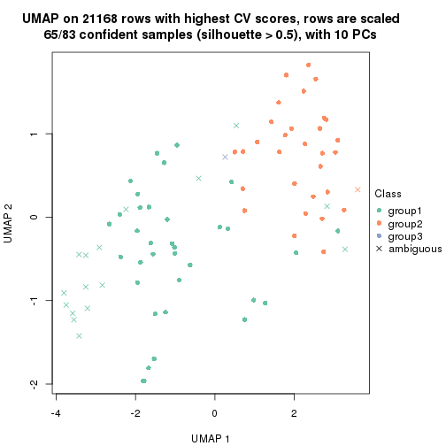
dimension_reduction(res, k = 4, method = "UMAP")
dimension_reduction(res, k = 5, method = "UMAP")
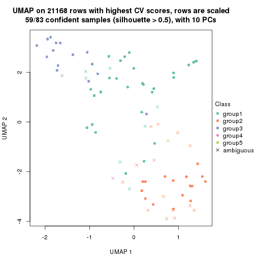
dimension_reduction(res, k = 6, method = "UMAP")
Following heatmap shows how subgroups are split when increasing k:
collect_classes(res)
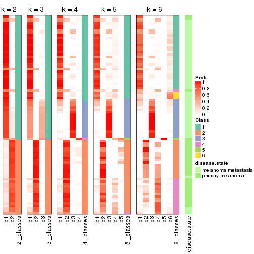
Test correlation between subgroups and known annotations. If the known annotation is numeric, one-way ANOVA test is applied, and if the known annotation is discrete, chi-squared contingency table test is applied.
test_to_known_factors(res)
#> n disease.state(p) k
#> CV:hclust 78 2.31e-14 2
#> CV:hclust 65 8.99e-12 3
#> CV:hclust 73 3.26e-13 4
#> CV:hclust 59 1.90e-11 5
#> CV:hclust 47 1.94e-06 6
If matrix rows can be associated to genes, consider to use functional_enrichment(res,
...) to perform function enrichment for the signature genes. See this vignette for more detailed explanations.
The object with results only for a single top-value method and a single partition method can be extracted as:
res = res_list["CV", "kmeans"]
# you can also extract it by
# res = res_list["CV:kmeans"]
A summary of res and all the functions that can be applied to it:
res
#> A 'ConsensusPartition' object with k = 2, 3, 4, 5, 6.
#> On a matrix with 21168 rows and 83 columns.
#> Top rows (1000, 2000, 3000, 4000, 5000) are extracted by 'CV' method.
#> Subgroups are detected by 'kmeans' method.
#> Performed in total 1250 partitions by row resampling.
#> Best k for subgroups seems to be 3.
#>
#> Following methods can be applied to this 'ConsensusPartition' object:
#> [1] "cola_report" "collect_classes" "collect_plots"
#> [4] "collect_stats" "colnames" "compare_signatures"
#> [7] "consensus_heatmap" "dimension_reduction" "functional_enrichment"
#> [10] "get_anno_col" "get_anno" "get_classes"
#> [13] "get_consensus" "get_matrix" "get_membership"
#> [16] "get_param" "get_signatures" "get_stats"
#> [19] "is_best_k" "is_stable_k" "membership_heatmap"
#> [22] "ncol" "nrow" "plot_ecdf"
#> [25] "rownames" "select_partition_number" "show"
#> [28] "suggest_best_k" "test_to_known_factors"
collect_plots() function collects all the plots made from res for all k (number of partitions)
into one single page to provide an easy and fast comparison between different k.
collect_plots(res)
The plots are:
k and the heatmap of
predicted classes for each k.k.k.k.All the plots in panels can be made by individual functions and they are plotted later in this section.
select_partition_number() produces several plots showing different
statistics for choosing “optimized” k. There are following statistics:
k;k, the area increased is defined as \(A_k - A_{k-1}\).The detailed explanations of these statistics can be found in the cola vignette.
Generally speaking, lower PAC score, higher mean silhouette score or higher
concordance corresponds to better partition. Rand index and Jaccard index
measure how similar the current partition is compared to partition with k-1.
If they are too similar, we won't accept k is better than k-1.
select_partition_number(res)
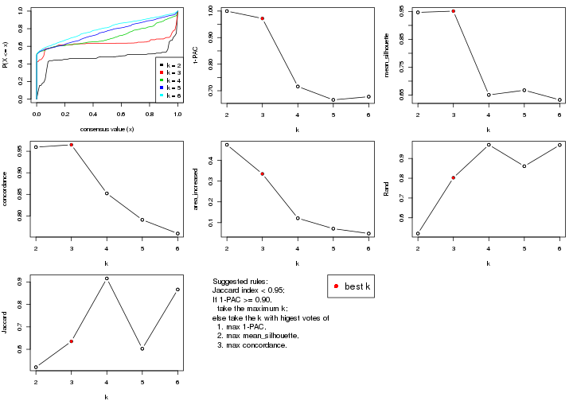
The numeric values for all these statistics can be obtained by get_stats().
get_stats(res)
#> k 1-PAC mean_silhouette concordance area_increased Rand Jaccard
#> 2 2 1.000 0.947 0.960 0.4752 0.520 0.520
#> 3 3 0.972 0.951 0.965 0.3350 0.803 0.635
#> 4 4 0.716 0.650 0.852 0.1211 0.969 0.916
#> 5 5 0.666 0.667 0.791 0.0708 0.861 0.603
#> 6 6 0.678 0.633 0.759 0.0474 0.968 0.866
suggest_best_k() suggests the best \(k\) based on these statistics. The rules are as follows:
suggest_best_k(res)
#> [1] 3
#> attr(,"optional")
#> [1] 2
There is also optional best \(k\) = 2 that is worth to check.
Following shows the table of the partitions (You need to click the show/hide
code output link to see it). The membership matrix (columns with name p*)
is inferred by
clue::cl_consensus()
function with the SE method. Basically the value in the membership matrix
represents the probability to belong to a certain group. The finall class
label for an item is determined with the group with highest probability it
belongs to.
In get_classes() function, the entropy is calculated from the membership
matrix and the silhouette score is calculated from the consensus matrix.
cbind(get_classes(res, k = 2), get_membership(res, k = 2))
#> class entropy silhouette p1 p2
#> GSM207929 2 0.0938 0.992 0.012 0.988
#> GSM207930 1 0.3274 0.953 0.940 0.060
#> GSM207931 2 0.1843 0.977 0.028 0.972
#> GSM207932 2 0.0376 0.990 0.004 0.996
#> GSM207933 2 0.0938 0.992 0.012 0.988
#> GSM207934 2 0.0938 0.992 0.012 0.988
#> GSM207935 2 0.0938 0.992 0.012 0.988
#> GSM207936 2 0.0938 0.992 0.012 0.988
#> GSM207937 2 0.0938 0.992 0.012 0.988
#> GSM207938 2 0.0938 0.992 0.012 0.988
#> GSM207939 2 0.0938 0.992 0.012 0.988
#> GSM207940 2 0.0938 0.992 0.012 0.988
#> GSM207941 2 0.0376 0.990 0.004 0.996
#> GSM207942 2 0.0376 0.990 0.004 0.996
#> GSM207943 2 0.0376 0.990 0.004 0.996
#> GSM207944 2 0.0376 0.990 0.004 0.996
#> GSM207945 2 0.0938 0.992 0.012 0.988
#> GSM207946 2 0.0376 0.990 0.004 0.996
#> GSM207947 1 0.3879 0.942 0.924 0.076
#> GSM207948 2 0.0376 0.990 0.004 0.996
#> GSM207949 2 0.0376 0.990 0.004 0.996
#> GSM207950 2 0.0376 0.990 0.004 0.996
#> GSM207951 2 0.0376 0.990 0.004 0.996
#> GSM207952 2 0.5408 0.860 0.124 0.876
#> GSM207953 2 0.0376 0.990 0.004 0.996
#> GSM207954 2 0.0376 0.990 0.004 0.996
#> GSM207955 2 0.0938 0.992 0.012 0.988
#> GSM207956 2 0.0938 0.992 0.012 0.988
#> GSM207957 2 0.0938 0.992 0.012 0.988
#> GSM207958 2 0.0938 0.992 0.012 0.988
#> GSM207959 2 0.0376 0.990 0.004 0.996
#> GSM207960 1 0.9850 0.344 0.572 0.428
#> GSM207961 1 0.2043 0.951 0.968 0.032
#> GSM207962 1 0.3274 0.953 0.940 0.060
#> GSM207963 1 0.3274 0.953 0.940 0.060
#> GSM207964 1 0.1843 0.950 0.972 0.028
#> GSM207965 1 0.1843 0.950 0.972 0.028
#> GSM207966 1 0.3431 0.953 0.936 0.064
#> GSM207967 1 0.9795 0.377 0.584 0.416
#> GSM207968 1 0.3274 0.953 0.940 0.060
#> GSM207969 1 0.0672 0.940 0.992 0.008
#> GSM207970 1 0.0672 0.940 0.992 0.008
#> GSM207971 1 0.0672 0.940 0.992 0.008
#> GSM207972 1 0.3274 0.953 0.940 0.060
#> GSM207973 1 0.3431 0.953 0.936 0.064
#> GSM207974 1 0.3431 0.953 0.936 0.064
#> GSM207975 1 0.2778 0.953 0.952 0.048
#> GSM207976 1 0.3274 0.953 0.940 0.060
#> GSM207977 1 0.0672 0.940 0.992 0.008
#> GSM207978 1 0.3431 0.953 0.936 0.064
#> GSM207979 1 0.3431 0.953 0.936 0.064
#> GSM207980 1 0.0672 0.940 0.992 0.008
#> GSM207981 1 0.0672 0.940 0.992 0.008
#> GSM207982 1 0.0672 0.940 0.992 0.008
#> GSM207983 1 0.0672 0.940 0.992 0.008
#> GSM207984 1 0.2043 0.951 0.968 0.032
#> GSM207985 1 0.3431 0.953 0.936 0.064
#> GSM207986 1 0.0672 0.940 0.992 0.008
#> GSM207987 1 0.0672 0.940 0.992 0.008
#> GSM207988 1 0.0672 0.940 0.992 0.008
#> GSM207989 1 0.0672 0.940 0.992 0.008
#> GSM207990 1 0.0672 0.940 0.992 0.008
#> GSM207991 1 0.0672 0.940 0.992 0.008
#> GSM207992 1 0.0672 0.940 0.992 0.008
#> GSM207993 1 0.0376 0.943 0.996 0.004
#> GSM207994 2 0.0938 0.992 0.012 0.988
#> GSM207995 1 0.3274 0.953 0.940 0.060
#> GSM207996 1 0.3274 0.953 0.940 0.060
#> GSM207997 1 0.3274 0.953 0.940 0.060
#> GSM207998 1 0.3274 0.953 0.940 0.060
#> GSM207999 1 0.7453 0.785 0.788 0.212
#> GSM208000 1 0.3274 0.953 0.940 0.060
#> GSM208001 1 0.3274 0.953 0.940 0.060
#> GSM208002 1 0.3274 0.953 0.940 0.060
#> GSM208003 1 0.2948 0.953 0.948 0.052
#> GSM208004 1 0.3274 0.953 0.940 0.060
#> GSM208005 1 0.3274 0.953 0.940 0.060
#> GSM208006 2 0.0938 0.992 0.012 0.988
#> GSM208007 2 0.0938 0.992 0.012 0.988
#> GSM208008 1 0.3274 0.953 0.940 0.060
#> GSM208009 1 0.3274 0.953 0.940 0.060
#> GSM208010 1 0.3274 0.953 0.940 0.060
#> GSM208011 1 0.0672 0.940 0.992 0.008
cbind(get_classes(res, k = 3), get_membership(res, k = 3))
#> class entropy silhouette p1 p2 p3
#> GSM207929 2 0.0000 0.989 0.000 1.000 0.000
#> GSM207930 1 0.0000 0.956 1.000 0.000 0.000
#> GSM207931 1 0.3941 0.800 0.844 0.156 0.000
#> GSM207932 2 0.1643 0.972 0.000 0.956 0.044
#> GSM207933 2 0.0000 0.989 0.000 1.000 0.000
#> GSM207934 2 0.0000 0.989 0.000 1.000 0.000
#> GSM207935 2 0.0000 0.989 0.000 1.000 0.000
#> GSM207936 2 0.0000 0.989 0.000 1.000 0.000
#> GSM207937 2 0.0000 0.989 0.000 1.000 0.000
#> GSM207938 2 0.0000 0.989 0.000 1.000 0.000
#> GSM207939 2 0.0000 0.989 0.000 1.000 0.000
#> GSM207940 2 0.0000 0.989 0.000 1.000 0.000
#> GSM207941 2 0.1643 0.972 0.000 0.956 0.044
#> GSM207942 2 0.1643 0.972 0.000 0.956 0.044
#> GSM207943 2 0.1643 0.972 0.000 0.956 0.044
#> GSM207944 2 0.1643 0.972 0.000 0.956 0.044
#> GSM207945 2 0.0000 0.989 0.000 1.000 0.000
#> GSM207946 2 0.0592 0.986 0.000 0.988 0.012
#> GSM207947 1 0.0892 0.944 0.980 0.020 0.000
#> GSM207948 2 0.1163 0.979 0.000 0.972 0.028
#> GSM207949 2 0.1643 0.972 0.000 0.956 0.044
#> GSM207950 2 0.1643 0.972 0.000 0.956 0.044
#> GSM207951 2 0.0000 0.989 0.000 1.000 0.000
#> GSM207952 1 0.2796 0.876 0.908 0.092 0.000
#> GSM207953 2 0.0592 0.985 0.000 0.988 0.012
#> GSM207954 2 0.0000 0.989 0.000 1.000 0.000
#> GSM207955 2 0.0000 0.989 0.000 1.000 0.000
#> GSM207956 2 0.0000 0.989 0.000 1.000 0.000
#> GSM207957 2 0.0000 0.989 0.000 1.000 0.000
#> GSM207958 2 0.0000 0.989 0.000 1.000 0.000
#> GSM207959 2 0.0592 0.986 0.000 0.988 0.012
#> GSM207960 1 0.2066 0.908 0.940 0.060 0.000
#> GSM207961 1 0.0000 0.956 1.000 0.000 0.000
#> GSM207962 1 0.0000 0.956 1.000 0.000 0.000
#> GSM207963 1 0.0000 0.956 1.000 0.000 0.000
#> GSM207964 1 0.4555 0.737 0.800 0.000 0.200
#> GSM207965 1 0.4555 0.737 0.800 0.000 0.200
#> GSM207966 1 0.0747 0.950 0.984 0.000 0.016
#> GSM207967 1 0.1529 0.927 0.960 0.040 0.000
#> GSM207968 1 0.0000 0.956 1.000 0.000 0.000
#> GSM207969 3 0.3816 0.904 0.148 0.000 0.852
#> GSM207970 3 0.3816 0.904 0.148 0.000 0.852
#> GSM207971 3 0.2066 0.982 0.060 0.000 0.940
#> GSM207972 1 0.0000 0.956 1.000 0.000 0.000
#> GSM207973 1 0.0747 0.950 0.984 0.000 0.016
#> GSM207974 1 0.0747 0.950 0.984 0.000 0.016
#> GSM207975 1 0.0000 0.956 1.000 0.000 0.000
#> GSM207976 1 0.0000 0.956 1.000 0.000 0.000
#> GSM207977 3 0.3192 0.941 0.112 0.000 0.888
#> GSM207978 1 0.0747 0.950 0.984 0.000 0.016
#> GSM207979 1 0.0747 0.950 0.984 0.000 0.016
#> GSM207980 3 0.2066 0.982 0.060 0.000 0.940
#> GSM207981 3 0.2066 0.982 0.060 0.000 0.940
#> GSM207982 3 0.2066 0.982 0.060 0.000 0.940
#> GSM207983 3 0.2066 0.982 0.060 0.000 0.940
#> GSM207984 1 0.0000 0.956 1.000 0.000 0.000
#> GSM207985 1 0.0747 0.950 0.984 0.000 0.016
#> GSM207986 3 0.2066 0.982 0.060 0.000 0.940
#> GSM207987 3 0.2066 0.982 0.060 0.000 0.940
#> GSM207988 3 0.2066 0.982 0.060 0.000 0.940
#> GSM207989 3 0.2066 0.982 0.060 0.000 0.940
#> GSM207990 3 0.2066 0.982 0.060 0.000 0.940
#> GSM207991 3 0.2066 0.982 0.060 0.000 0.940
#> GSM207992 3 0.2066 0.982 0.060 0.000 0.940
#> GSM207993 1 0.4555 0.737 0.800 0.000 0.200
#> GSM207994 2 0.0000 0.989 0.000 1.000 0.000
#> GSM207995 1 0.0000 0.956 1.000 0.000 0.000
#> GSM207996 1 0.0000 0.956 1.000 0.000 0.000
#> GSM207997 1 0.0000 0.956 1.000 0.000 0.000
#> GSM207998 1 0.0592 0.950 0.988 0.012 0.000
#> GSM207999 1 0.1529 0.927 0.960 0.040 0.000
#> GSM208000 1 0.0000 0.956 1.000 0.000 0.000
#> GSM208001 1 0.0000 0.956 1.000 0.000 0.000
#> GSM208002 1 0.0000 0.956 1.000 0.000 0.000
#> GSM208003 1 0.0000 0.956 1.000 0.000 0.000
#> GSM208004 1 0.0000 0.956 1.000 0.000 0.000
#> GSM208005 1 0.0000 0.956 1.000 0.000 0.000
#> GSM208006 2 0.0000 0.989 0.000 1.000 0.000
#> GSM208007 2 0.0000 0.989 0.000 1.000 0.000
#> GSM208008 1 0.0000 0.956 1.000 0.000 0.000
#> GSM208009 1 0.0000 0.956 1.000 0.000 0.000
#> GSM208010 1 0.0000 0.956 1.000 0.000 0.000
#> GSM208011 1 0.5497 0.570 0.708 0.000 0.292
cbind(get_classes(res, k = 4), get_membership(res, k = 4))
#> class entropy silhouette p1 p2 p3 p4
#> GSM207929 2 0.4730 0.531 0.000 0.636 0.000 0.364
#> GSM207930 1 0.4967 -0.529 0.548 0.000 0.000 0.452
#> GSM207931 4 0.7698 0.622 0.356 0.224 0.000 0.420
#> GSM207932 2 0.3219 0.804 0.000 0.836 0.000 0.164
#> GSM207933 2 0.0188 0.864 0.000 0.996 0.000 0.004
#> GSM207934 2 0.4679 0.552 0.000 0.648 0.000 0.352
#> GSM207935 2 0.4697 0.545 0.000 0.644 0.000 0.356
#> GSM207936 2 0.0188 0.863 0.000 0.996 0.000 0.004
#> GSM207937 2 0.4522 0.598 0.000 0.680 0.000 0.320
#> GSM207938 2 0.0000 0.864 0.000 1.000 0.000 0.000
#> GSM207939 2 0.0000 0.864 0.000 1.000 0.000 0.000
#> GSM207940 2 0.0000 0.864 0.000 1.000 0.000 0.000
#> GSM207941 2 0.3219 0.804 0.000 0.836 0.000 0.164
#> GSM207942 2 0.3219 0.804 0.000 0.836 0.000 0.164
#> GSM207943 2 0.2868 0.818 0.000 0.864 0.000 0.136
#> GSM207944 2 0.3074 0.810 0.000 0.848 0.000 0.152
#> GSM207945 2 0.0188 0.864 0.000 0.996 0.000 0.004
#> GSM207946 2 0.0188 0.864 0.000 0.996 0.000 0.004
#> GSM207947 4 0.4977 0.569 0.460 0.000 0.000 0.540
#> GSM207948 2 0.1792 0.845 0.000 0.932 0.000 0.068
#> GSM207949 2 0.3219 0.804 0.000 0.836 0.000 0.164
#> GSM207950 2 0.3219 0.804 0.000 0.836 0.000 0.164
#> GSM207951 2 0.0188 0.864 0.000 0.996 0.000 0.004
#> GSM207952 4 0.6707 0.701 0.444 0.088 0.000 0.468
#> GSM207953 2 0.0336 0.863 0.000 0.992 0.000 0.008
#> GSM207954 2 0.0000 0.864 0.000 1.000 0.000 0.000
#> GSM207955 2 0.0000 0.864 0.000 1.000 0.000 0.000
#> GSM207956 2 0.4661 0.558 0.000 0.652 0.000 0.348
#> GSM207957 2 0.0000 0.864 0.000 1.000 0.000 0.000
#> GSM207958 2 0.2345 0.816 0.000 0.900 0.000 0.100
#> GSM207959 2 0.0188 0.864 0.000 0.996 0.000 0.004
#> GSM207960 1 0.5708 -0.611 0.556 0.028 0.000 0.416
#> GSM207961 1 0.0336 0.681 0.992 0.000 0.000 0.008
#> GSM207962 1 0.2408 0.656 0.896 0.000 0.000 0.104
#> GSM207963 1 0.2345 0.657 0.900 0.000 0.000 0.100
#> GSM207964 1 0.2255 0.633 0.920 0.000 0.068 0.012
#> GSM207965 1 0.2255 0.633 0.920 0.000 0.068 0.012
#> GSM207966 1 0.4605 0.459 0.664 0.000 0.000 0.336
#> GSM207967 1 0.5163 -0.598 0.516 0.004 0.000 0.480
#> GSM207968 1 0.0707 0.684 0.980 0.000 0.000 0.020
#> GSM207969 3 0.4098 0.761 0.204 0.000 0.784 0.012
#> GSM207970 3 0.4098 0.761 0.204 0.000 0.784 0.012
#> GSM207971 3 0.1938 0.916 0.052 0.000 0.936 0.012
#> GSM207972 1 0.3123 0.555 0.844 0.000 0.000 0.156
#> GSM207973 1 0.4776 0.419 0.624 0.000 0.000 0.376
#> GSM207974 1 0.4776 0.418 0.624 0.000 0.000 0.376
#> GSM207975 1 0.1389 0.671 0.952 0.000 0.000 0.048
#> GSM207976 1 0.3837 0.501 0.776 0.000 0.000 0.224
#> GSM207977 3 0.3447 0.845 0.128 0.000 0.852 0.020
#> GSM207978 1 0.4605 0.459 0.664 0.000 0.000 0.336
#> GSM207979 1 0.4605 0.459 0.664 0.000 0.000 0.336
#> GSM207980 3 0.0188 0.947 0.000 0.000 0.996 0.004
#> GSM207981 3 0.0000 0.948 0.000 0.000 1.000 0.000
#> GSM207982 3 0.0000 0.948 0.000 0.000 1.000 0.000
#> GSM207983 3 0.0188 0.947 0.000 0.000 0.996 0.004
#> GSM207984 1 0.1389 0.671 0.952 0.000 0.000 0.048
#> GSM207985 1 0.4605 0.459 0.664 0.000 0.000 0.336
#> GSM207986 3 0.0188 0.947 0.000 0.000 0.996 0.004
#> GSM207987 3 0.0188 0.947 0.000 0.000 0.996 0.004
#> GSM207988 3 0.0188 0.947 0.000 0.000 0.996 0.004
#> GSM207989 3 0.0188 0.947 0.000 0.000 0.996 0.004
#> GSM207990 3 0.1042 0.937 0.020 0.000 0.972 0.008
#> GSM207991 3 0.0000 0.948 0.000 0.000 1.000 0.000
#> GSM207992 3 0.0000 0.948 0.000 0.000 1.000 0.000
#> GSM207993 1 0.2255 0.633 0.920 0.000 0.068 0.012
#> GSM207994 2 0.0000 0.864 0.000 1.000 0.000 0.000
#> GSM207995 1 0.3726 0.471 0.788 0.000 0.000 0.212
#> GSM207996 1 0.1211 0.677 0.960 0.000 0.000 0.040
#> GSM207997 1 0.0188 0.684 0.996 0.000 0.000 0.004
#> GSM207998 1 0.4925 -0.466 0.572 0.000 0.000 0.428
#> GSM207999 1 0.5388 -0.588 0.532 0.012 0.000 0.456
#> GSM208000 1 0.2281 0.659 0.904 0.000 0.000 0.096
#> GSM208001 1 0.0000 0.683 1.000 0.000 0.000 0.000
#> GSM208002 1 0.0336 0.681 0.992 0.000 0.000 0.008
#> GSM208003 1 0.0188 0.683 0.996 0.000 0.000 0.004
#> GSM208004 1 0.0000 0.683 1.000 0.000 0.000 0.000
#> GSM208005 1 0.4193 0.407 0.732 0.000 0.000 0.268
#> GSM208006 2 0.4500 0.604 0.000 0.684 0.000 0.316
#> GSM208007 2 0.4164 0.663 0.000 0.736 0.000 0.264
#> GSM208008 1 0.3528 0.553 0.808 0.000 0.000 0.192
#> GSM208009 1 0.1389 0.674 0.952 0.000 0.000 0.048
#> GSM208010 1 0.0000 0.683 1.000 0.000 0.000 0.000
#> GSM208011 1 0.3958 0.558 0.836 0.000 0.112 0.052
cbind(get_classes(res, k = 5), get_membership(res, k = 5))
#> class entropy silhouette p1 p2 p3 p4 p5
#> GSM207929 4 0.4403 0.3871 0.000 0.436 0.000 0.560 0.004
#> GSM207930 4 0.5168 0.2586 0.356 0.000 0.000 0.592 0.052
#> GSM207931 4 0.5327 0.5991 0.120 0.216 0.000 0.664 0.000
#> GSM207932 2 0.5141 0.6734 0.000 0.672 0.000 0.092 0.236
#> GSM207933 2 0.0898 0.8270 0.000 0.972 0.000 0.020 0.008
#> GSM207934 4 0.4713 0.3772 0.000 0.440 0.000 0.544 0.016
#> GSM207935 4 0.4403 0.3871 0.000 0.436 0.000 0.560 0.004
#> GSM207936 2 0.0609 0.8222 0.000 0.980 0.000 0.020 0.000
#> GSM207937 4 0.4452 0.2522 0.000 0.496 0.000 0.500 0.004
#> GSM207938 2 0.0162 0.8307 0.000 0.996 0.000 0.004 0.000
#> GSM207939 2 0.0162 0.8307 0.000 0.996 0.000 0.004 0.000
#> GSM207940 2 0.0162 0.8307 0.000 0.996 0.000 0.004 0.000
#> GSM207941 2 0.5141 0.6734 0.000 0.672 0.000 0.092 0.236
#> GSM207942 2 0.5205 0.6734 0.000 0.672 0.000 0.104 0.224
#> GSM207943 2 0.4183 0.7392 0.000 0.780 0.000 0.084 0.136
#> GSM207944 2 0.4595 0.7162 0.000 0.740 0.000 0.088 0.172
#> GSM207945 2 0.0693 0.8293 0.000 0.980 0.000 0.012 0.008
#> GSM207946 2 0.0000 0.8312 0.000 1.000 0.000 0.000 0.000
#> GSM207947 4 0.5233 0.4567 0.192 0.000 0.000 0.680 0.128
#> GSM207948 2 0.2654 0.7941 0.000 0.888 0.000 0.048 0.064
#> GSM207949 2 0.5045 0.6894 0.000 0.696 0.000 0.108 0.196
#> GSM207950 2 0.5205 0.6734 0.000 0.672 0.000 0.104 0.224
#> GSM207951 2 0.0000 0.8312 0.000 1.000 0.000 0.000 0.000
#> GSM207952 4 0.5268 0.5702 0.200 0.072 0.000 0.704 0.024
#> GSM207953 2 0.0290 0.8301 0.000 0.992 0.000 0.000 0.008
#> GSM207954 2 0.0162 0.8307 0.000 0.996 0.000 0.004 0.000
#> GSM207955 2 0.0510 0.8249 0.000 0.984 0.000 0.016 0.000
#> GSM207956 4 0.4658 0.2884 0.000 0.484 0.000 0.504 0.012
#> GSM207957 2 0.0162 0.8307 0.000 0.996 0.000 0.004 0.000
#> GSM207958 2 0.3081 0.6715 0.000 0.832 0.000 0.156 0.012
#> GSM207959 2 0.0000 0.8312 0.000 1.000 0.000 0.000 0.000
#> GSM207960 4 0.4836 0.5024 0.304 0.044 0.000 0.652 0.000
#> GSM207961 1 0.1725 0.7264 0.936 0.000 0.000 0.044 0.020
#> GSM207962 1 0.4647 0.6085 0.736 0.000 0.000 0.172 0.092
#> GSM207963 1 0.4666 0.6101 0.732 0.000 0.000 0.180 0.088
#> GSM207964 1 0.2949 0.6464 0.884 0.000 0.024 0.064 0.028
#> GSM207965 1 0.2949 0.6464 0.884 0.000 0.024 0.064 0.028
#> GSM207966 5 0.5360 0.9522 0.384 0.000 0.000 0.060 0.556
#> GSM207967 4 0.4755 0.4816 0.244 0.000 0.000 0.696 0.060
#> GSM207968 1 0.1493 0.7182 0.948 0.000 0.000 0.024 0.028
#> GSM207969 3 0.6282 0.4828 0.364 0.000 0.528 0.076 0.032
#> GSM207970 3 0.6282 0.4828 0.364 0.000 0.528 0.076 0.032
#> GSM207971 3 0.5677 0.6705 0.224 0.000 0.668 0.072 0.036
#> GSM207972 1 0.4021 0.5835 0.764 0.000 0.000 0.200 0.036
#> GSM207973 5 0.5505 0.9110 0.328 0.000 0.000 0.084 0.588
#> GSM207974 5 0.5659 0.8949 0.320 0.000 0.000 0.100 0.580
#> GSM207975 1 0.2712 0.7265 0.880 0.000 0.000 0.088 0.032
#> GSM207976 1 0.5674 0.3827 0.576 0.000 0.000 0.324 0.100
#> GSM207977 3 0.6343 0.5607 0.308 0.000 0.568 0.084 0.040
#> GSM207978 5 0.5360 0.9522 0.384 0.000 0.000 0.060 0.556
#> GSM207979 5 0.5360 0.9522 0.384 0.000 0.000 0.060 0.556
#> GSM207980 3 0.2074 0.8325 0.004 0.000 0.920 0.060 0.016
#> GSM207981 3 0.0451 0.8511 0.000 0.000 0.988 0.008 0.004
#> GSM207982 3 0.0451 0.8511 0.000 0.000 0.988 0.008 0.004
#> GSM207983 3 0.0290 0.8507 0.000 0.000 0.992 0.000 0.008
#> GSM207984 1 0.2616 0.7282 0.888 0.000 0.000 0.076 0.036
#> GSM207985 5 0.5360 0.9522 0.384 0.000 0.000 0.060 0.556
#> GSM207986 3 0.0290 0.8507 0.000 0.000 0.992 0.000 0.008
#> GSM207987 3 0.0290 0.8507 0.000 0.000 0.992 0.000 0.008
#> GSM207988 3 0.0290 0.8507 0.000 0.000 0.992 0.000 0.008
#> GSM207989 3 0.0290 0.8507 0.000 0.000 0.992 0.000 0.008
#> GSM207990 3 0.4109 0.7864 0.072 0.000 0.820 0.072 0.036
#> GSM207991 3 0.0451 0.8514 0.000 0.000 0.988 0.008 0.004
#> GSM207992 3 0.0451 0.8514 0.000 0.000 0.988 0.008 0.004
#> GSM207993 1 0.2861 0.6470 0.888 0.000 0.024 0.064 0.024
#> GSM207994 2 0.0290 0.8309 0.000 0.992 0.000 0.008 0.000
#> GSM207995 1 0.5204 0.3666 0.560 0.000 0.000 0.392 0.048
#> GSM207996 1 0.2653 0.7097 0.880 0.000 0.000 0.096 0.024
#> GSM207997 1 0.1082 0.7132 0.964 0.000 0.000 0.008 0.028
#> GSM207998 4 0.4360 0.4197 0.300 0.000 0.000 0.680 0.020
#> GSM207999 4 0.5088 0.4826 0.268 0.012 0.000 0.672 0.048
#> GSM208000 1 0.4393 0.6282 0.756 0.000 0.000 0.168 0.076
#> GSM208001 1 0.1914 0.7302 0.924 0.000 0.000 0.060 0.016
#> GSM208002 1 0.0912 0.7219 0.972 0.000 0.000 0.016 0.012
#> GSM208003 1 0.1444 0.7359 0.948 0.000 0.000 0.040 0.012
#> GSM208004 1 0.1701 0.7307 0.936 0.000 0.000 0.048 0.016
#> GSM208005 1 0.5983 0.2167 0.504 0.000 0.000 0.380 0.116
#> GSM208006 2 0.4878 -0.2047 0.000 0.536 0.000 0.440 0.024
#> GSM208007 2 0.4367 0.0917 0.000 0.620 0.000 0.372 0.008
#> GSM208008 1 0.5697 0.4550 0.596 0.000 0.000 0.288 0.116
#> GSM208009 1 0.2848 0.6975 0.868 0.000 0.000 0.104 0.028
#> GSM208010 1 0.0880 0.7355 0.968 0.000 0.000 0.032 0.000
#> GSM208011 1 0.4924 0.5658 0.764 0.000 0.048 0.112 0.076
cbind(get_classes(res, k = 6), get_membership(res, k = 6))
#> class entropy silhouette p1 p2 p3 p4 p5 p6
#> GSM207929 4 0.5183 0.4971 0.000 0.304 0.000 0.612 0.040 NA
#> GSM207930 4 0.6392 0.2993 0.248 0.000 0.000 0.544 0.120 NA
#> GSM207931 4 0.4212 0.6063 0.060 0.148 0.000 0.768 0.020 NA
#> GSM207932 2 0.4083 0.5603 0.000 0.532 0.000 0.000 0.008 NA
#> GSM207933 2 0.1882 0.7732 0.000 0.928 0.000 0.024 0.028 NA
#> GSM207934 4 0.5350 0.4870 0.000 0.304 0.000 0.600 0.040 NA
#> GSM207935 4 0.4605 0.4995 0.000 0.308 0.000 0.644 0.024 NA
#> GSM207936 2 0.1867 0.7492 0.000 0.916 0.000 0.064 0.000 NA
#> GSM207937 4 0.4702 0.3807 0.000 0.388 0.000 0.572 0.016 NA
#> GSM207938 2 0.0508 0.7940 0.000 0.984 0.000 0.000 0.012 NA
#> GSM207939 2 0.0146 0.7962 0.000 0.996 0.000 0.000 0.004 NA
#> GSM207940 2 0.0146 0.7962 0.000 0.996 0.000 0.000 0.004 NA
#> GSM207941 2 0.4083 0.5603 0.000 0.532 0.000 0.000 0.008 NA
#> GSM207942 2 0.3986 0.5604 0.000 0.532 0.000 0.004 0.000 NA
#> GSM207943 2 0.3512 0.6961 0.000 0.740 0.000 0.004 0.008 NA
#> GSM207944 2 0.3690 0.6626 0.000 0.684 0.000 0.000 0.008 NA
#> GSM207945 2 0.1167 0.7878 0.000 0.960 0.000 0.008 0.020 NA
#> GSM207946 2 0.0291 0.7965 0.000 0.992 0.000 0.000 0.004 NA
#> GSM207947 4 0.6106 0.3854 0.044 0.000 0.000 0.564 0.164 NA
#> GSM207948 2 0.4230 0.6997 0.000 0.748 0.000 0.060 0.016 NA
#> GSM207949 2 0.4041 0.5961 0.000 0.584 0.000 0.004 0.004 NA
#> GSM207950 2 0.3986 0.5604 0.000 0.532 0.000 0.004 0.000 NA
#> GSM207951 2 0.0260 0.7957 0.000 0.992 0.000 0.000 0.008 NA
#> GSM207952 4 0.3386 0.5840 0.060 0.036 0.000 0.852 0.012 NA
#> GSM207953 2 0.0603 0.7957 0.000 0.980 0.000 0.000 0.004 NA
#> GSM207954 2 0.0146 0.7960 0.000 0.996 0.000 0.004 0.000 NA
#> GSM207955 2 0.1606 0.7580 0.000 0.932 0.000 0.056 0.008 NA
#> GSM207956 4 0.5354 0.3566 0.000 0.396 0.000 0.524 0.028 NA
#> GSM207957 2 0.0146 0.7962 0.000 0.996 0.000 0.000 0.004 NA
#> GSM207958 2 0.3837 0.5767 0.000 0.772 0.000 0.180 0.024 NA
#> GSM207959 2 0.0291 0.7965 0.000 0.992 0.000 0.000 0.004 NA
#> GSM207960 4 0.4340 0.5467 0.184 0.048 0.000 0.744 0.020 NA
#> GSM207961 1 0.1065 0.7275 0.964 0.000 0.000 0.008 0.008 NA
#> GSM207962 1 0.6001 0.5564 0.616 0.000 0.000 0.172 0.120 NA
#> GSM207963 1 0.6106 0.5480 0.604 0.000 0.000 0.172 0.132 NA
#> GSM207964 1 0.2451 0.6828 0.892 0.000 0.016 0.012 0.004 NA
#> GSM207965 1 0.2451 0.6828 0.892 0.000 0.016 0.012 0.004 NA
#> GSM207966 5 0.3629 0.9376 0.276 0.000 0.000 0.012 0.712 NA
#> GSM207967 4 0.4486 0.5401 0.080 0.004 0.000 0.764 0.040 NA
#> GSM207968 1 0.3545 0.7173 0.832 0.000 0.000 0.064 0.044 NA
#> GSM207969 3 0.6093 0.3160 0.416 0.000 0.436 0.012 0.012 NA
#> GSM207970 3 0.6093 0.3160 0.416 0.000 0.436 0.012 0.012 NA
#> GSM207971 3 0.5855 0.5457 0.292 0.000 0.560 0.012 0.012 NA
#> GSM207972 1 0.6183 0.4558 0.564 0.000 0.000 0.236 0.060 NA
#> GSM207973 5 0.4196 0.8818 0.208 0.000 0.000 0.024 0.736 NA
#> GSM207974 5 0.4214 0.8727 0.200 0.000 0.000 0.028 0.740 NA
#> GSM207975 1 0.3191 0.7014 0.852 0.000 0.000 0.036 0.076 NA
#> GSM207976 4 0.7285 -0.0885 0.312 0.000 0.000 0.352 0.104 NA
#> GSM207977 3 0.7047 0.3884 0.336 0.000 0.440 0.032 0.048 NA
#> GSM207978 5 0.3629 0.9376 0.276 0.000 0.000 0.012 0.712 NA
#> GSM207979 5 0.3629 0.9376 0.276 0.000 0.000 0.012 0.712 NA
#> GSM207980 3 0.2417 0.7799 0.004 0.000 0.888 0.012 0.008 NA
#> GSM207981 3 0.0405 0.8085 0.000 0.000 0.988 0.004 0.000 NA
#> GSM207982 3 0.0405 0.8085 0.000 0.000 0.988 0.004 0.000 NA
#> GSM207983 3 0.0405 0.8077 0.000 0.000 0.988 0.000 0.004 NA
#> GSM207984 1 0.3008 0.7084 0.864 0.000 0.000 0.032 0.068 NA
#> GSM207985 5 0.3629 0.9376 0.276 0.000 0.000 0.012 0.712 NA
#> GSM207986 3 0.0405 0.8077 0.000 0.000 0.988 0.000 0.004 NA
#> GSM207987 3 0.0405 0.8077 0.000 0.000 0.988 0.000 0.004 NA
#> GSM207988 3 0.0405 0.8077 0.000 0.000 0.988 0.000 0.004 NA
#> GSM207989 3 0.0405 0.8077 0.000 0.000 0.988 0.000 0.004 NA
#> GSM207990 3 0.4385 0.7188 0.092 0.000 0.764 0.012 0.012 NA
#> GSM207991 3 0.0951 0.8065 0.000 0.000 0.968 0.008 0.004 NA
#> GSM207992 3 0.0951 0.8065 0.000 0.000 0.968 0.008 0.004 NA
#> GSM207993 1 0.2350 0.6844 0.896 0.000 0.016 0.008 0.004 NA
#> GSM207994 2 0.0260 0.7962 0.000 0.992 0.000 0.000 0.008 NA
#> GSM207995 1 0.6941 0.0959 0.384 0.000 0.000 0.376 0.128 NA
#> GSM207996 1 0.3576 0.7048 0.820 0.000 0.000 0.108 0.044 NA
#> GSM207997 1 0.2769 0.7139 0.880 0.000 0.000 0.032 0.052 NA
#> GSM207998 4 0.5759 0.4320 0.168 0.000 0.000 0.628 0.152 NA
#> GSM207999 4 0.4591 0.5378 0.104 0.004 0.000 0.756 0.040 NA
#> GSM208000 1 0.5571 0.5818 0.656 0.000 0.000 0.176 0.080 NA
#> GSM208001 1 0.2177 0.7323 0.908 0.000 0.000 0.052 0.032 NA
#> GSM208002 1 0.1564 0.7246 0.936 0.000 0.000 0.024 0.000 NA
#> GSM208003 1 0.1232 0.7380 0.956 0.000 0.000 0.024 0.016 NA
#> GSM208004 1 0.1832 0.7341 0.928 0.000 0.000 0.032 0.032 NA
#> GSM208005 4 0.7560 0.0754 0.256 0.000 0.000 0.344 0.168 NA
#> GSM208006 4 0.5624 0.3555 0.000 0.396 0.000 0.504 0.036 NA
#> GSM208007 2 0.5111 -0.1629 0.000 0.508 0.000 0.432 0.024 NA
#> GSM208008 1 0.7011 0.3748 0.472 0.000 0.000 0.232 0.168 NA
#> GSM208009 1 0.3714 0.6960 0.820 0.000 0.000 0.072 0.064 NA
#> GSM208010 1 0.1421 0.7369 0.944 0.000 0.000 0.028 0.028 NA
#> GSM208011 1 0.6029 0.5455 0.636 0.000 0.036 0.072 0.056 NA
Heatmaps for the consensus matrix. It visualizes the probability of two samples to be in a same group.
consensus_heatmap(res, k = 2)
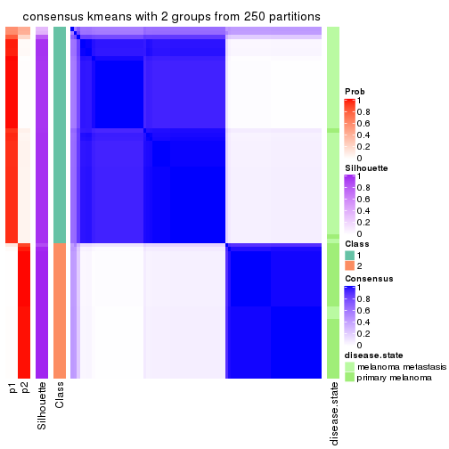
consensus_heatmap(res, k = 3)
consensus_heatmap(res, k = 4)
consensus_heatmap(res, k = 5)
consensus_heatmap(res, k = 6)
Heatmaps for the membership of samples in all partitions to see how consistent they are:
membership_heatmap(res, k = 2)
membership_heatmap(res, k = 3)
membership_heatmap(res, k = 4)
membership_heatmap(res, k = 5)
membership_heatmap(res, k = 6)
As soon as we have had the classes for columns, we can look for signatures which are significantly different between classes which can be candidate marks for certain classes. Following are the heatmaps for signatures.
Signature heatmaps where rows are scaled:
get_signatures(res, k = 2)
get_signatures(res, k = 3)
get_signatures(res, k = 4)
get_signatures(res, k = 5)
get_signatures(res, k = 6)
Signature heatmaps where rows are not scaled:
get_signatures(res, k = 2, scale_rows = FALSE)
get_signatures(res, k = 3, scale_rows = FALSE)
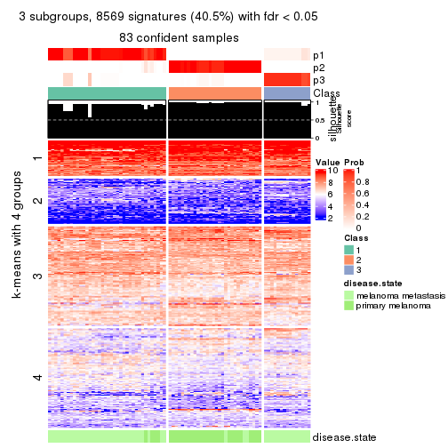
get_signatures(res, k = 4, scale_rows = FALSE)
get_signatures(res, k = 5, scale_rows = FALSE)
get_signatures(res, k = 6, scale_rows = FALSE)
Compare the overlap of signatures from different k:
compare_signatures(res)
get_signature() returns a data frame invisibly. TO get the list of signatures, the function
call should be assigned to a variable explicitly. In following code, if plot argument is set
to FALSE, no heatmap is plotted while only the differential analysis is performed.
# code only for demonstration
tb = get_signature(res, k = ..., plot = FALSE)
An example of the output of tb is:
#> which_row fdr mean_1 mean_2 scaled_mean_1 scaled_mean_2 km
#> 1 38 0.042760348 8.373488 9.131774 -0.5533452 0.5164555 1
#> 2 40 0.018707592 7.106213 8.469186 -0.6173731 0.5762149 1
#> 3 55 0.019134737 10.221463 11.207825 -0.6159697 0.5749050 1
#> 4 59 0.006059896 5.921854 7.869574 -0.6899429 0.6439467 1
#> 5 60 0.018055526 8.928898 10.211722 -0.6204761 0.5791110 1
#> 6 98 0.009384629 15.714769 14.887706 0.6635654 -0.6193277 2
...
The columns in tb are:
which_row: row indices corresponding to the input matrix.fdr: FDR for the differential test. mean_x: The mean value in group x.scaled_mean_x: The mean value in group x after rows are scaled.km: Row groups if k-means clustering is applied to rows.UMAP plot which shows how samples are separated.
dimension_reduction(res, k = 2, method = "UMAP")
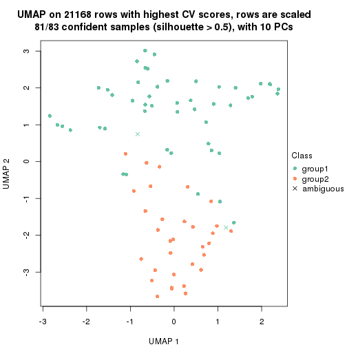
dimension_reduction(res, k = 3, method = "UMAP")
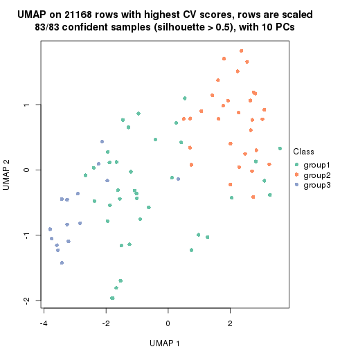
dimension_reduction(res, k = 4, method = "UMAP")
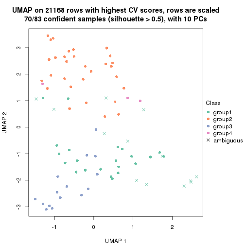
dimension_reduction(res, k = 5, method = "UMAP")
dimension_reduction(res, k = 6, method = "UMAP")
Following heatmap shows how subgroups are split when increasing k:
collect_classes(res)
Test correlation between subgroups and known annotations. If the known annotation is numeric, one-way ANOVA test is applied, and if the known annotation is discrete, chi-squared contingency table test is applied.
test_to_known_factors(res)
#> n disease.state(p) k
#> CV:kmeans 81 2.96e-14 2
#> CV:kmeans 83 6.36e-13 3
#> CV:kmeans 70 9.73e-13 4
#> CV:kmeans 65 7.52e-12 5
#> CV:kmeans 65 2.27e-11 6
If matrix rows can be associated to genes, consider to use functional_enrichment(res,
...) to perform function enrichment for the signature genes. See this vignette for more detailed explanations.
The object with results only for a single top-value method and a single partition method can be extracted as:
res = res_list["CV", "skmeans"]
# you can also extract it by
# res = res_list["CV:skmeans"]
A summary of res and all the functions that can be applied to it:
res
#> A 'ConsensusPartition' object with k = 2, 3, 4, 5, 6.
#> On a matrix with 21168 rows and 83 columns.
#> Top rows (1000, 2000, 3000, 4000, 5000) are extracted by 'CV' method.
#> Subgroups are detected by 'skmeans' method.
#> Performed in total 1250 partitions by row resampling.
#> Best k for subgroups seems to be 3.
#>
#> Following methods can be applied to this 'ConsensusPartition' object:
#> [1] "cola_report" "collect_classes" "collect_plots"
#> [4] "collect_stats" "colnames" "compare_signatures"
#> [7] "consensus_heatmap" "dimension_reduction" "functional_enrichment"
#> [10] "get_anno_col" "get_anno" "get_classes"
#> [13] "get_consensus" "get_matrix" "get_membership"
#> [16] "get_param" "get_signatures" "get_stats"
#> [19] "is_best_k" "is_stable_k" "membership_heatmap"
#> [22] "ncol" "nrow" "plot_ecdf"
#> [25] "rownames" "select_partition_number" "show"
#> [28] "suggest_best_k" "test_to_known_factors"
collect_plots() function collects all the plots made from res for all k (number of partitions)
into one single page to provide an easy and fast comparison between different k.
collect_plots(res)
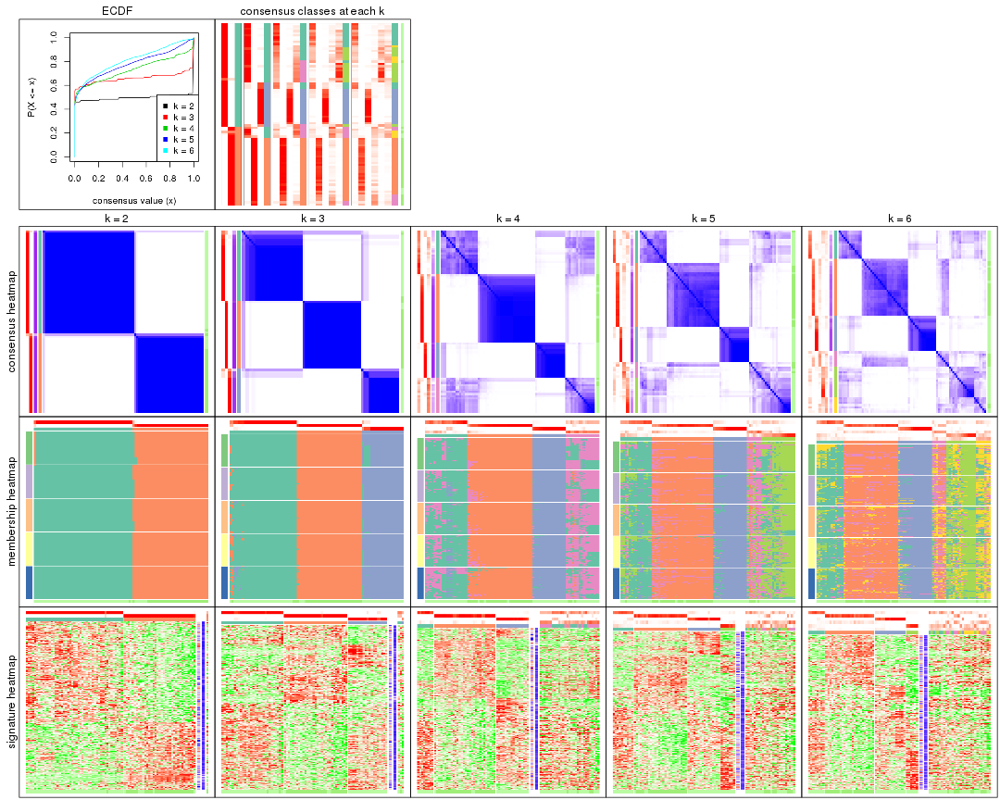
The plots are:
k and the heatmap of
predicted classes for each k.k.k.k.All the plots in panels can be made by individual functions and they are plotted later in this section.
select_partition_number() produces several plots showing different
statistics for choosing “optimized” k. There are following statistics:
k;k, the area increased is defined as \(A_k - A_{k-1}\).The detailed explanations of these statistics can be found in the cola vignette.
Generally speaking, lower PAC score, higher mean silhouette score or higher
concordance corresponds to better partition. Rand index and Jaccard index
measure how similar the current partition is compared to partition with k-1.
If they are too similar, we won't accept k is better than k-1.
select_partition_number(res)
The numeric values for all these statistics can be obtained by get_stats().
get_stats(res)
#> k 1-PAC mean_silhouette concordance area_increased Rand Jaccard
#> 2 2 1.000 0.982 0.993 0.4970 0.503 0.503
#> 3 3 0.969 0.945 0.976 0.3267 0.756 0.550
#> 4 4 0.748 0.688 0.849 0.1131 0.886 0.681
#> 5 5 0.684 0.633 0.795 0.0667 0.914 0.703
#> 6 6 0.672 0.551 0.727 0.0402 0.949 0.785
suggest_best_k() suggests the best \(k\) based on these statistics. The rules are as follows:
suggest_best_k(res)
#> [1] 3
#> attr(,"optional")
#> [1] 2
There is also optional best \(k\) = 2 that is worth to check.
Following shows the table of the partitions (You need to click the show/hide
code output link to see it). The membership matrix (columns with name p*)
is inferred by
clue::cl_consensus()
function with the SE method. Basically the value in the membership matrix
represents the probability to belong to a certain group. The finall class
label for an item is determined with the group with highest probability it
belongs to.
In get_classes() function, the entropy is calculated from the membership
matrix and the silhouette score is calculated from the consensus matrix.
cbind(get_classes(res, k = 2), get_membership(res, k = 2))
#> class entropy silhouette p1 p2
#> GSM207929 2 0.000 0.988 0.000 1.000
#> GSM207930 1 0.000 0.995 1.000 0.000
#> GSM207931 2 0.000 0.988 0.000 1.000
#> GSM207932 2 0.000 0.988 0.000 1.000
#> GSM207933 2 0.000 0.988 0.000 1.000
#> GSM207934 2 0.000 0.988 0.000 1.000
#> GSM207935 2 0.000 0.988 0.000 1.000
#> GSM207936 2 0.000 0.988 0.000 1.000
#> GSM207937 2 0.000 0.988 0.000 1.000
#> GSM207938 2 0.000 0.988 0.000 1.000
#> GSM207939 2 0.000 0.988 0.000 1.000
#> GSM207940 2 0.000 0.988 0.000 1.000
#> GSM207941 2 0.000 0.988 0.000 1.000
#> GSM207942 2 0.000 0.988 0.000 1.000
#> GSM207943 2 0.000 0.988 0.000 1.000
#> GSM207944 2 0.000 0.988 0.000 1.000
#> GSM207945 2 0.000 0.988 0.000 1.000
#> GSM207946 2 0.000 0.988 0.000 1.000
#> GSM207947 2 0.949 0.421 0.368 0.632
#> GSM207948 2 0.000 0.988 0.000 1.000
#> GSM207949 2 0.000 0.988 0.000 1.000
#> GSM207950 2 0.000 0.988 0.000 1.000
#> GSM207951 2 0.000 0.988 0.000 1.000
#> GSM207952 2 0.000 0.988 0.000 1.000
#> GSM207953 2 0.000 0.988 0.000 1.000
#> GSM207954 2 0.000 0.988 0.000 1.000
#> GSM207955 2 0.000 0.988 0.000 1.000
#> GSM207956 2 0.000 0.988 0.000 1.000
#> GSM207957 2 0.000 0.988 0.000 1.000
#> GSM207958 2 0.000 0.988 0.000 1.000
#> GSM207959 2 0.000 0.988 0.000 1.000
#> GSM207960 2 0.000 0.988 0.000 1.000
#> GSM207961 1 0.000 0.995 1.000 0.000
#> GSM207962 1 0.000 0.995 1.000 0.000
#> GSM207963 1 0.000 0.995 1.000 0.000
#> GSM207964 1 0.000 0.995 1.000 0.000
#> GSM207965 1 0.000 0.995 1.000 0.000
#> GSM207966 1 0.000 0.995 1.000 0.000
#> GSM207967 2 0.260 0.945 0.044 0.956
#> GSM207968 1 0.000 0.995 1.000 0.000
#> GSM207969 1 0.000 0.995 1.000 0.000
#> GSM207970 1 0.000 0.995 1.000 0.000
#> GSM207971 1 0.000 0.995 1.000 0.000
#> GSM207972 1 0.000 0.995 1.000 0.000
#> GSM207973 1 0.000 0.995 1.000 0.000
#> GSM207974 1 0.000 0.995 1.000 0.000
#> GSM207975 1 0.000 0.995 1.000 0.000
#> GSM207976 1 0.000 0.995 1.000 0.000
#> GSM207977 1 0.000 0.995 1.000 0.000
#> GSM207978 1 0.000 0.995 1.000 0.000
#> GSM207979 1 0.000 0.995 1.000 0.000
#> GSM207980 1 0.000 0.995 1.000 0.000
#> GSM207981 1 0.000 0.995 1.000 0.000
#> GSM207982 1 0.000 0.995 1.000 0.000
#> GSM207983 1 0.000 0.995 1.000 0.000
#> GSM207984 1 0.000 0.995 1.000 0.000
#> GSM207985 1 0.000 0.995 1.000 0.000
#> GSM207986 1 0.000 0.995 1.000 0.000
#> GSM207987 1 0.000 0.995 1.000 0.000
#> GSM207988 1 0.000 0.995 1.000 0.000
#> GSM207989 1 0.000 0.995 1.000 0.000
#> GSM207990 1 0.000 0.995 1.000 0.000
#> GSM207991 1 0.000 0.995 1.000 0.000
#> GSM207992 1 0.000 0.995 1.000 0.000
#> GSM207993 1 0.000 0.995 1.000 0.000
#> GSM207994 2 0.000 0.988 0.000 1.000
#> GSM207995 1 0.000 0.995 1.000 0.000
#> GSM207996 1 0.000 0.995 1.000 0.000
#> GSM207997 1 0.000 0.995 1.000 0.000
#> GSM207998 1 0.730 0.740 0.796 0.204
#> GSM207999 2 0.000 0.988 0.000 1.000
#> GSM208000 1 0.000 0.995 1.000 0.000
#> GSM208001 1 0.000 0.995 1.000 0.000
#> GSM208002 1 0.000 0.995 1.000 0.000
#> GSM208003 1 0.000 0.995 1.000 0.000
#> GSM208004 1 0.000 0.995 1.000 0.000
#> GSM208005 1 0.000 0.995 1.000 0.000
#> GSM208006 2 0.000 0.988 0.000 1.000
#> GSM208007 2 0.000 0.988 0.000 1.000
#> GSM208008 1 0.000 0.995 1.000 0.000
#> GSM208009 1 0.000 0.995 1.000 0.000
#> GSM208010 1 0.000 0.995 1.000 0.000
#> GSM208011 1 0.000 0.995 1.000 0.000
cbind(get_classes(res, k = 3), get_membership(res, k = 3))
#> class entropy silhouette p1 p2 p3
#> GSM207929 2 0.0000 0.997 0.000 1.000 0.000
#> GSM207930 1 0.0000 0.962 1.000 0.000 0.000
#> GSM207931 2 0.2356 0.916 0.072 0.928 0.000
#> GSM207932 2 0.0000 0.997 0.000 1.000 0.000
#> GSM207933 2 0.0000 0.997 0.000 1.000 0.000
#> GSM207934 2 0.0000 0.997 0.000 1.000 0.000
#> GSM207935 2 0.0000 0.997 0.000 1.000 0.000
#> GSM207936 2 0.0000 0.997 0.000 1.000 0.000
#> GSM207937 2 0.0000 0.997 0.000 1.000 0.000
#> GSM207938 2 0.0000 0.997 0.000 1.000 0.000
#> GSM207939 2 0.0000 0.997 0.000 1.000 0.000
#> GSM207940 2 0.0000 0.997 0.000 1.000 0.000
#> GSM207941 2 0.0000 0.997 0.000 1.000 0.000
#> GSM207942 2 0.0000 0.997 0.000 1.000 0.000
#> GSM207943 2 0.0000 0.997 0.000 1.000 0.000
#> GSM207944 2 0.0000 0.997 0.000 1.000 0.000
#> GSM207945 2 0.0000 0.997 0.000 1.000 0.000
#> GSM207946 2 0.0000 0.997 0.000 1.000 0.000
#> GSM207947 1 0.0000 0.962 1.000 0.000 0.000
#> GSM207948 2 0.0000 0.997 0.000 1.000 0.000
#> GSM207949 2 0.0000 0.997 0.000 1.000 0.000
#> GSM207950 2 0.0000 0.997 0.000 1.000 0.000
#> GSM207951 2 0.0000 0.997 0.000 1.000 0.000
#> GSM207952 1 0.5926 0.471 0.644 0.356 0.000
#> GSM207953 2 0.0000 0.997 0.000 1.000 0.000
#> GSM207954 2 0.0000 0.997 0.000 1.000 0.000
#> GSM207955 2 0.0000 0.997 0.000 1.000 0.000
#> GSM207956 2 0.0000 0.997 0.000 1.000 0.000
#> GSM207957 2 0.0000 0.997 0.000 1.000 0.000
#> GSM207958 2 0.0000 0.997 0.000 1.000 0.000
#> GSM207959 2 0.0000 0.997 0.000 1.000 0.000
#> GSM207960 1 0.0000 0.962 1.000 0.000 0.000
#> GSM207961 1 0.0000 0.962 1.000 0.000 0.000
#> GSM207962 1 0.0000 0.962 1.000 0.000 0.000
#> GSM207963 1 0.0000 0.962 1.000 0.000 0.000
#> GSM207964 3 0.3816 0.829 0.148 0.000 0.852
#> GSM207965 3 0.3879 0.824 0.152 0.000 0.848
#> GSM207966 1 0.0000 0.962 1.000 0.000 0.000
#> GSM207967 1 0.1529 0.927 0.960 0.040 0.000
#> GSM207968 1 0.2959 0.869 0.900 0.000 0.100
#> GSM207969 3 0.0000 0.953 0.000 0.000 1.000
#> GSM207970 3 0.0000 0.953 0.000 0.000 1.000
#> GSM207971 3 0.0000 0.953 0.000 0.000 1.000
#> GSM207972 1 0.2796 0.879 0.908 0.000 0.092
#> GSM207973 1 0.0000 0.962 1.000 0.000 0.000
#> GSM207974 1 0.0000 0.962 1.000 0.000 0.000
#> GSM207975 1 0.0000 0.962 1.000 0.000 0.000
#> GSM207976 3 0.6410 0.276 0.420 0.004 0.576
#> GSM207977 3 0.0000 0.953 0.000 0.000 1.000
#> GSM207978 1 0.0000 0.962 1.000 0.000 0.000
#> GSM207979 1 0.0000 0.962 1.000 0.000 0.000
#> GSM207980 3 0.0000 0.953 0.000 0.000 1.000
#> GSM207981 3 0.0000 0.953 0.000 0.000 1.000
#> GSM207982 3 0.0000 0.953 0.000 0.000 1.000
#> GSM207983 3 0.0000 0.953 0.000 0.000 1.000
#> GSM207984 1 0.1411 0.935 0.964 0.000 0.036
#> GSM207985 1 0.0000 0.962 1.000 0.000 0.000
#> GSM207986 3 0.0000 0.953 0.000 0.000 1.000
#> GSM207987 3 0.0000 0.953 0.000 0.000 1.000
#> GSM207988 3 0.0000 0.953 0.000 0.000 1.000
#> GSM207989 3 0.0000 0.953 0.000 0.000 1.000
#> GSM207990 3 0.0000 0.953 0.000 0.000 1.000
#> GSM207991 3 0.0000 0.953 0.000 0.000 1.000
#> GSM207992 3 0.0000 0.953 0.000 0.000 1.000
#> GSM207993 3 0.3686 0.837 0.140 0.000 0.860
#> GSM207994 2 0.0000 0.997 0.000 1.000 0.000
#> GSM207995 1 0.0000 0.962 1.000 0.000 0.000
#> GSM207996 1 0.0000 0.962 1.000 0.000 0.000
#> GSM207997 1 0.0237 0.960 0.996 0.000 0.004
#> GSM207998 1 0.0000 0.962 1.000 0.000 0.000
#> GSM207999 1 0.5905 0.477 0.648 0.352 0.000
#> GSM208000 1 0.0000 0.962 1.000 0.000 0.000
#> GSM208001 1 0.0000 0.962 1.000 0.000 0.000
#> GSM208002 1 0.1411 0.935 0.964 0.000 0.036
#> GSM208003 1 0.0000 0.962 1.000 0.000 0.000
#> GSM208004 1 0.0000 0.962 1.000 0.000 0.000
#> GSM208005 1 0.0000 0.962 1.000 0.000 0.000
#> GSM208006 2 0.0000 0.997 0.000 1.000 0.000
#> GSM208007 2 0.0000 0.997 0.000 1.000 0.000
#> GSM208008 1 0.0000 0.962 1.000 0.000 0.000
#> GSM208009 1 0.0000 0.962 1.000 0.000 0.000
#> GSM208010 1 0.0000 0.962 1.000 0.000 0.000
#> GSM208011 3 0.0000 0.953 0.000 0.000 1.000
cbind(get_classes(res, k = 4), get_membership(res, k = 4))
#> class entropy silhouette p1 p2 p3 p4
#> GSM207929 2 0.3300 0.8524 0.008 0.848 0.000 0.144
#> GSM207930 4 0.4998 0.0342 0.488 0.000 0.000 0.512
#> GSM207931 2 0.6875 0.1901 0.104 0.476 0.000 0.420
#> GSM207932 2 0.0188 0.9545 0.000 0.996 0.000 0.004
#> GSM207933 2 0.0336 0.9536 0.000 0.992 0.000 0.008
#> GSM207934 2 0.3975 0.7595 0.000 0.760 0.000 0.240
#> GSM207935 2 0.3401 0.8457 0.008 0.840 0.000 0.152
#> GSM207936 2 0.0469 0.9509 0.000 0.988 0.000 0.012
#> GSM207937 2 0.1474 0.9284 0.000 0.948 0.000 0.052
#> GSM207938 2 0.0000 0.9547 0.000 1.000 0.000 0.000
#> GSM207939 2 0.0000 0.9547 0.000 1.000 0.000 0.000
#> GSM207940 2 0.0000 0.9547 0.000 1.000 0.000 0.000
#> GSM207941 2 0.0000 0.9547 0.000 1.000 0.000 0.000
#> GSM207942 2 0.0188 0.9545 0.000 0.996 0.000 0.004
#> GSM207943 2 0.0000 0.9547 0.000 1.000 0.000 0.000
#> GSM207944 2 0.0000 0.9547 0.000 1.000 0.000 0.000
#> GSM207945 2 0.0336 0.9537 0.000 0.992 0.000 0.008
#> GSM207946 2 0.0000 0.9547 0.000 1.000 0.000 0.000
#> GSM207947 4 0.3626 0.4300 0.184 0.004 0.000 0.812
#> GSM207948 2 0.0188 0.9545 0.000 0.996 0.000 0.004
#> GSM207949 2 0.0188 0.9545 0.000 0.996 0.000 0.004
#> GSM207950 2 0.0188 0.9545 0.000 0.996 0.000 0.004
#> GSM207951 2 0.0000 0.9547 0.000 1.000 0.000 0.000
#> GSM207952 4 0.5874 0.3314 0.176 0.124 0.000 0.700
#> GSM207953 2 0.0188 0.9545 0.000 0.996 0.000 0.004
#> GSM207954 2 0.0000 0.9547 0.000 1.000 0.000 0.000
#> GSM207955 2 0.0188 0.9545 0.000 0.996 0.000 0.004
#> GSM207956 2 0.3401 0.8454 0.008 0.840 0.000 0.152
#> GSM207957 2 0.0000 0.9547 0.000 1.000 0.000 0.000
#> GSM207958 2 0.1211 0.9383 0.000 0.960 0.000 0.040
#> GSM207959 2 0.0000 0.9547 0.000 1.000 0.000 0.000
#> GSM207960 4 0.5268 0.1824 0.452 0.008 0.000 0.540
#> GSM207961 1 0.0336 0.5827 0.992 0.000 0.008 0.000
#> GSM207962 1 0.4925 0.0940 0.572 0.000 0.000 0.428
#> GSM207963 1 0.4643 0.2926 0.656 0.000 0.000 0.344
#> GSM207964 1 0.4761 0.3329 0.664 0.000 0.332 0.004
#> GSM207965 1 0.4748 0.3877 0.716 0.000 0.268 0.016
#> GSM207966 4 0.4776 0.4439 0.376 0.000 0.000 0.624
#> GSM207967 4 0.4155 0.3427 0.240 0.004 0.000 0.756
#> GSM207968 1 0.5812 0.2303 0.624 0.000 0.048 0.328
#> GSM207969 3 0.1474 0.9476 0.052 0.000 0.948 0.000
#> GSM207970 3 0.1118 0.9611 0.036 0.000 0.964 0.000
#> GSM207971 3 0.0592 0.9757 0.016 0.000 0.984 0.000
#> GSM207972 4 0.6120 0.2470 0.432 0.000 0.048 0.520
#> GSM207973 4 0.4804 0.4429 0.384 0.000 0.000 0.616
#> GSM207974 4 0.4907 0.4024 0.420 0.000 0.000 0.580
#> GSM207975 1 0.2654 0.5377 0.888 0.000 0.004 0.108
#> GSM207976 4 0.6370 0.3943 0.180 0.004 0.148 0.668
#> GSM207977 3 0.0707 0.9725 0.020 0.000 0.980 0.000
#> GSM207978 4 0.4730 0.4478 0.364 0.000 0.000 0.636
#> GSM207979 4 0.4761 0.4473 0.372 0.000 0.000 0.628
#> GSM207980 3 0.0000 0.9827 0.000 0.000 1.000 0.000
#> GSM207981 3 0.0000 0.9827 0.000 0.000 1.000 0.000
#> GSM207982 3 0.0000 0.9827 0.000 0.000 1.000 0.000
#> GSM207983 3 0.0000 0.9827 0.000 0.000 1.000 0.000
#> GSM207984 1 0.3013 0.5483 0.888 0.000 0.032 0.080
#> GSM207985 4 0.4804 0.4407 0.384 0.000 0.000 0.616
#> GSM207986 3 0.0000 0.9827 0.000 0.000 1.000 0.000
#> GSM207987 3 0.0000 0.9827 0.000 0.000 1.000 0.000
#> GSM207988 3 0.0000 0.9827 0.000 0.000 1.000 0.000
#> GSM207989 3 0.0000 0.9827 0.000 0.000 1.000 0.000
#> GSM207990 3 0.0188 0.9811 0.004 0.000 0.996 0.000
#> GSM207991 3 0.0000 0.9827 0.000 0.000 1.000 0.000
#> GSM207992 3 0.0000 0.9827 0.000 0.000 1.000 0.000
#> GSM207993 1 0.4522 0.3471 0.680 0.000 0.320 0.000
#> GSM207994 2 0.0000 0.9547 0.000 1.000 0.000 0.000
#> GSM207995 1 0.4916 0.0998 0.576 0.000 0.000 0.424
#> GSM207996 1 0.3311 0.5162 0.828 0.000 0.000 0.172
#> GSM207997 1 0.4343 0.2675 0.732 0.000 0.004 0.264
#> GSM207998 4 0.4477 0.3684 0.312 0.000 0.000 0.688
#> GSM207999 4 0.7203 0.2130 0.312 0.164 0.000 0.524
#> GSM208000 1 0.4543 0.2986 0.676 0.000 0.000 0.324
#> GSM208001 1 0.1557 0.5798 0.944 0.000 0.000 0.056
#> GSM208002 1 0.3695 0.4291 0.828 0.000 0.016 0.156
#> GSM208003 1 0.0188 0.5831 0.996 0.000 0.000 0.004
#> GSM208004 1 0.0921 0.5837 0.972 0.000 0.000 0.028
#> GSM208005 4 0.4543 0.4580 0.324 0.000 0.000 0.676
#> GSM208006 2 0.1940 0.9124 0.000 0.924 0.000 0.076
#> GSM208007 2 0.0707 0.9474 0.000 0.980 0.000 0.020
#> GSM208008 1 0.4999 -0.0646 0.508 0.000 0.000 0.492
#> GSM208009 1 0.3688 0.4690 0.792 0.000 0.000 0.208
#> GSM208010 1 0.1302 0.5823 0.956 0.000 0.000 0.044
#> GSM208011 3 0.3621 0.8588 0.072 0.000 0.860 0.068
cbind(get_classes(res, k = 5), get_membership(res, k = 5))
#> class entropy silhouette p1 p2 p3 p4 p5
#> GSM207929 2 0.5613 0.4212 0.028 0.580 0.000 0.356 0.036
#> GSM207930 1 0.6155 0.2269 0.516 0.000 0.000 0.336 0.148
#> GSM207931 4 0.6472 0.4676 0.068 0.196 0.000 0.624 0.112
#> GSM207932 2 0.1695 0.8701 0.008 0.940 0.000 0.044 0.008
#> GSM207933 2 0.2286 0.8620 0.000 0.888 0.000 0.108 0.004
#> GSM207934 4 0.5055 -0.1227 0.016 0.428 0.000 0.544 0.012
#> GSM207935 2 0.4964 0.2632 0.020 0.516 0.000 0.460 0.004
#> GSM207936 2 0.2798 0.8335 0.008 0.852 0.000 0.140 0.000
#> GSM207937 2 0.3544 0.7781 0.008 0.788 0.000 0.200 0.004
#> GSM207938 2 0.2011 0.8701 0.004 0.908 0.000 0.088 0.000
#> GSM207939 2 0.0794 0.8761 0.000 0.972 0.000 0.028 0.000
#> GSM207940 2 0.1357 0.8792 0.004 0.948 0.000 0.048 0.000
#> GSM207941 2 0.1569 0.8706 0.004 0.944 0.000 0.044 0.008
#> GSM207942 2 0.2420 0.8627 0.008 0.896 0.000 0.088 0.008
#> GSM207943 2 0.0865 0.8754 0.004 0.972 0.000 0.024 0.000
#> GSM207944 2 0.1202 0.8711 0.004 0.960 0.000 0.032 0.004
#> GSM207945 2 0.1478 0.8750 0.000 0.936 0.000 0.064 0.000
#> GSM207946 2 0.0510 0.8771 0.000 0.984 0.000 0.016 0.000
#> GSM207947 4 0.6303 0.0116 0.160 0.000 0.000 0.476 0.364
#> GSM207948 2 0.2352 0.8628 0.008 0.896 0.000 0.092 0.004
#> GSM207949 2 0.1983 0.8735 0.008 0.924 0.000 0.060 0.008
#> GSM207950 2 0.1990 0.8721 0.004 0.920 0.000 0.068 0.008
#> GSM207951 2 0.1628 0.8795 0.008 0.936 0.000 0.056 0.000
#> GSM207952 4 0.3997 0.5053 0.072 0.040 0.000 0.828 0.060
#> GSM207953 2 0.1518 0.8787 0.004 0.944 0.000 0.048 0.004
#> GSM207954 2 0.1041 0.8772 0.004 0.964 0.000 0.032 0.000
#> GSM207955 2 0.2763 0.8384 0.004 0.848 0.000 0.148 0.000
#> GSM207956 2 0.5024 0.2685 0.032 0.528 0.000 0.440 0.000
#> GSM207957 2 0.1282 0.8763 0.004 0.952 0.000 0.044 0.000
#> GSM207958 2 0.3109 0.7917 0.000 0.800 0.000 0.200 0.000
#> GSM207959 2 0.0898 0.8767 0.008 0.972 0.000 0.020 0.000
#> GSM207960 4 0.7180 0.1440 0.228 0.028 0.000 0.452 0.292
#> GSM207961 1 0.2352 0.6394 0.896 0.000 0.004 0.008 0.092
#> GSM207962 5 0.6607 0.1517 0.320 0.000 0.000 0.232 0.448
#> GSM207963 1 0.6576 0.0317 0.444 0.000 0.000 0.216 0.340
#> GSM207964 1 0.4861 0.5284 0.740 0.000 0.180 0.024 0.056
#> GSM207965 1 0.4443 0.5476 0.772 0.000 0.152 0.012 0.064
#> GSM207966 5 0.0865 0.6268 0.024 0.000 0.000 0.004 0.972
#> GSM207967 4 0.4901 0.3785 0.104 0.000 0.000 0.712 0.184
#> GSM207968 5 0.5588 0.3641 0.288 0.000 0.024 0.056 0.632
#> GSM207969 3 0.3634 0.8070 0.184 0.000 0.796 0.012 0.008
#> GSM207970 3 0.3373 0.8224 0.168 0.000 0.816 0.008 0.008
#> GSM207971 3 0.2439 0.8770 0.120 0.000 0.876 0.004 0.000
#> GSM207972 5 0.6438 0.4288 0.240 0.000 0.052 0.104 0.604
#> GSM207973 5 0.1992 0.6234 0.044 0.000 0.000 0.032 0.924
#> GSM207974 5 0.3442 0.5936 0.104 0.000 0.000 0.060 0.836
#> GSM207975 1 0.3151 0.6283 0.864 0.000 0.004 0.068 0.064
#> GSM207976 5 0.6603 0.3594 0.048 0.012 0.100 0.224 0.616
#> GSM207977 3 0.3145 0.8555 0.136 0.000 0.844 0.012 0.008
#> GSM207978 5 0.0955 0.6261 0.028 0.000 0.000 0.004 0.968
#> GSM207979 5 0.0955 0.6262 0.028 0.000 0.000 0.004 0.968
#> GSM207980 3 0.0290 0.9321 0.008 0.000 0.992 0.000 0.000
#> GSM207981 3 0.0000 0.9344 0.000 0.000 1.000 0.000 0.000
#> GSM207982 3 0.0000 0.9344 0.000 0.000 1.000 0.000 0.000
#> GSM207983 3 0.0000 0.9344 0.000 0.000 1.000 0.000 0.000
#> GSM207984 1 0.3067 0.6264 0.876 0.000 0.016 0.068 0.040
#> GSM207985 5 0.0794 0.6258 0.028 0.000 0.000 0.000 0.972
#> GSM207986 3 0.0000 0.9344 0.000 0.000 1.000 0.000 0.000
#> GSM207987 3 0.0000 0.9344 0.000 0.000 1.000 0.000 0.000
#> GSM207988 3 0.0000 0.9344 0.000 0.000 1.000 0.000 0.000
#> GSM207989 3 0.0000 0.9344 0.000 0.000 1.000 0.000 0.000
#> GSM207990 3 0.1282 0.9181 0.044 0.000 0.952 0.004 0.000
#> GSM207991 3 0.0000 0.9344 0.000 0.000 1.000 0.000 0.000
#> GSM207992 3 0.0000 0.9344 0.000 0.000 1.000 0.000 0.000
#> GSM207993 1 0.4270 0.5364 0.764 0.000 0.188 0.008 0.040
#> GSM207994 2 0.1043 0.8784 0.000 0.960 0.000 0.040 0.000
#> GSM207995 5 0.6573 0.1881 0.320 0.000 0.000 0.224 0.456
#> GSM207996 1 0.5721 0.1904 0.492 0.000 0.000 0.084 0.424
#> GSM207997 5 0.4525 0.2487 0.360 0.000 0.000 0.016 0.624
#> GSM207998 5 0.6434 0.1668 0.180 0.000 0.000 0.368 0.452
#> GSM207999 4 0.6733 0.3968 0.132 0.084 0.000 0.608 0.176
#> GSM208000 5 0.6433 0.0889 0.340 0.000 0.000 0.188 0.472
#> GSM208001 1 0.4905 0.5664 0.696 0.000 0.000 0.080 0.224
#> GSM208002 1 0.4886 0.4553 0.668 0.000 0.008 0.036 0.288
#> GSM208003 1 0.3011 0.6365 0.844 0.000 0.000 0.016 0.140
#> GSM208004 1 0.4193 0.6045 0.748 0.000 0.000 0.040 0.212
#> GSM208005 5 0.4671 0.5341 0.116 0.000 0.000 0.144 0.740
#> GSM208006 2 0.4365 0.6162 0.012 0.676 0.000 0.308 0.004
#> GSM208007 2 0.2629 0.8315 0.004 0.860 0.000 0.136 0.000
#> GSM208008 5 0.6789 0.0951 0.348 0.000 0.000 0.284 0.368
#> GSM208009 1 0.5962 0.1812 0.468 0.000 0.000 0.108 0.424
#> GSM208010 1 0.4169 0.5885 0.732 0.000 0.000 0.028 0.240
#> GSM208011 3 0.5406 0.6712 0.200 0.000 0.696 0.076 0.028
cbind(get_classes(res, k = 6), get_membership(res, k = 6))
#> class entropy silhouette p1 p2 p3 p4 p5 p6
#> GSM207929 4 0.5765 0.3395 0.012 0.384 0.000 0.504 0.012 0.088
#> GSM207930 6 0.7083 0.2289 0.352 0.000 0.000 0.188 0.092 0.368
#> GSM207931 4 0.6511 0.2923 0.044 0.136 0.000 0.588 0.040 0.192
#> GSM207932 2 0.2957 0.7655 0.004 0.844 0.000 0.120 0.000 0.032
#> GSM207933 2 0.3126 0.6889 0.000 0.752 0.000 0.248 0.000 0.000
#> GSM207934 4 0.5774 0.3724 0.000 0.356 0.000 0.500 0.012 0.132
#> GSM207935 4 0.5620 0.2763 0.016 0.404 0.000 0.500 0.008 0.072
#> GSM207936 2 0.3641 0.6649 0.000 0.748 0.000 0.224 0.000 0.028
#> GSM207937 2 0.4491 0.4607 0.004 0.652 0.000 0.304 0.004 0.036
#> GSM207938 2 0.2362 0.7741 0.000 0.860 0.000 0.136 0.000 0.004
#> GSM207939 2 0.1897 0.7912 0.004 0.908 0.000 0.084 0.000 0.004
#> GSM207940 2 0.1863 0.8013 0.000 0.896 0.000 0.104 0.000 0.000
#> GSM207941 2 0.3090 0.7635 0.004 0.828 0.000 0.140 0.000 0.028
#> GSM207942 2 0.3595 0.7391 0.004 0.780 0.000 0.180 0.000 0.036
#> GSM207943 2 0.1946 0.7940 0.004 0.912 0.000 0.072 0.000 0.012
#> GSM207944 2 0.2377 0.7842 0.008 0.892 0.000 0.076 0.000 0.024
#> GSM207945 2 0.2378 0.7728 0.000 0.848 0.000 0.152 0.000 0.000
#> GSM207946 2 0.1364 0.8031 0.004 0.944 0.000 0.048 0.000 0.004
#> GSM207947 6 0.7267 0.2027 0.088 0.004 0.000 0.324 0.220 0.364
#> GSM207948 2 0.3424 0.7511 0.004 0.800 0.000 0.160 0.000 0.036
#> GSM207949 2 0.3048 0.7751 0.004 0.824 0.000 0.152 0.000 0.020
#> GSM207950 2 0.3263 0.7545 0.004 0.800 0.000 0.176 0.000 0.020
#> GSM207951 2 0.1674 0.8071 0.004 0.924 0.000 0.068 0.000 0.004
#> GSM207952 4 0.5851 -0.0795 0.028 0.036 0.000 0.516 0.036 0.384
#> GSM207953 2 0.2234 0.8018 0.004 0.872 0.000 0.124 0.000 0.000
#> GSM207954 2 0.1411 0.7989 0.000 0.936 0.000 0.060 0.000 0.004
#> GSM207955 2 0.3248 0.7092 0.000 0.768 0.000 0.224 0.004 0.004
#> GSM207956 4 0.5730 0.2751 0.008 0.408 0.000 0.476 0.008 0.100
#> GSM207957 2 0.1588 0.7974 0.000 0.924 0.000 0.072 0.000 0.004
#> GSM207958 2 0.3758 0.5211 0.000 0.668 0.000 0.324 0.000 0.008
#> GSM207959 2 0.1477 0.8022 0.004 0.940 0.000 0.048 0.000 0.008
#> GSM207960 4 0.7976 -0.2396 0.252 0.028 0.000 0.352 0.224 0.144
#> GSM207961 1 0.1908 0.6147 0.916 0.000 0.000 0.000 0.056 0.028
#> GSM207962 6 0.5934 0.2275 0.216 0.000 0.000 0.000 0.364 0.420
#> GSM207963 6 0.6238 0.2787 0.316 0.000 0.000 0.008 0.260 0.416
#> GSM207964 1 0.5807 0.4586 0.660 0.000 0.128 0.032 0.032 0.148
#> GSM207965 1 0.5138 0.5430 0.732 0.000 0.084 0.032 0.040 0.112
#> GSM207966 5 0.0713 0.5755 0.028 0.000 0.000 0.000 0.972 0.000
#> GSM207967 6 0.6654 0.3457 0.072 0.008 0.000 0.304 0.120 0.496
#> GSM207968 5 0.6332 0.3165 0.224 0.000 0.020 0.032 0.568 0.156
#> GSM207969 3 0.4981 0.7366 0.172 0.000 0.708 0.020 0.012 0.088
#> GSM207970 3 0.4662 0.7909 0.108 0.000 0.760 0.020 0.028 0.084
#> GSM207971 3 0.4021 0.8096 0.116 0.000 0.788 0.028 0.000 0.068
#> GSM207972 5 0.7590 0.2291 0.172 0.000 0.048 0.080 0.444 0.256
#> GSM207973 5 0.2872 0.5493 0.024 0.000 0.000 0.028 0.868 0.080
#> GSM207974 5 0.3977 0.5289 0.076 0.000 0.000 0.032 0.796 0.096
#> GSM207975 1 0.3899 0.5346 0.804 0.000 0.004 0.048 0.032 0.112
#> GSM207976 5 0.6718 0.1568 0.032 0.004 0.076 0.056 0.496 0.336
#> GSM207977 3 0.5256 0.7419 0.120 0.000 0.704 0.068 0.004 0.104
#> GSM207978 5 0.0777 0.5747 0.024 0.000 0.000 0.004 0.972 0.000
#> GSM207979 5 0.0972 0.5750 0.028 0.000 0.000 0.000 0.964 0.008
#> GSM207980 3 0.1116 0.8891 0.004 0.000 0.960 0.008 0.000 0.028
#> GSM207981 3 0.0000 0.8985 0.000 0.000 1.000 0.000 0.000 0.000
#> GSM207982 3 0.0000 0.8985 0.000 0.000 1.000 0.000 0.000 0.000
#> GSM207983 3 0.0146 0.8987 0.000 0.000 0.996 0.004 0.000 0.000
#> GSM207984 1 0.3393 0.5610 0.840 0.000 0.008 0.036 0.020 0.096
#> GSM207985 5 0.0790 0.5754 0.032 0.000 0.000 0.000 0.968 0.000
#> GSM207986 3 0.0146 0.8987 0.000 0.000 0.996 0.004 0.000 0.000
#> GSM207987 3 0.0146 0.8987 0.000 0.000 0.996 0.004 0.000 0.000
#> GSM207988 3 0.0146 0.8987 0.000 0.000 0.996 0.004 0.000 0.000
#> GSM207989 3 0.0146 0.8987 0.000 0.000 0.996 0.004 0.000 0.000
#> GSM207990 3 0.2982 0.8525 0.060 0.000 0.860 0.012 0.000 0.068
#> GSM207991 3 0.0260 0.8973 0.000 0.000 0.992 0.000 0.000 0.008
#> GSM207992 3 0.0146 0.8987 0.000 0.000 0.996 0.004 0.000 0.000
#> GSM207993 1 0.4511 0.5432 0.768 0.000 0.096 0.024 0.016 0.096
#> GSM207994 2 0.1753 0.7981 0.000 0.912 0.000 0.084 0.000 0.004
#> GSM207995 5 0.7476 -0.1615 0.260 0.000 0.000 0.132 0.328 0.280
#> GSM207996 1 0.6321 0.1957 0.468 0.000 0.000 0.024 0.300 0.208
#> GSM207997 5 0.5052 0.2608 0.348 0.000 0.000 0.012 0.580 0.060
#> GSM207998 5 0.7106 -0.1229 0.108 0.000 0.000 0.184 0.424 0.284
#> GSM207999 6 0.7639 0.3017 0.096 0.068 0.000 0.248 0.124 0.464
#> GSM208000 5 0.6289 -0.1980 0.292 0.000 0.000 0.008 0.396 0.304
#> GSM208001 1 0.5096 0.4962 0.668 0.000 0.000 0.016 0.188 0.128
#> GSM208002 1 0.6209 0.4581 0.600 0.000 0.032 0.044 0.232 0.092
#> GSM208003 1 0.2537 0.6096 0.872 0.000 0.000 0.000 0.096 0.032
#> GSM208004 1 0.4411 0.5605 0.736 0.000 0.000 0.016 0.172 0.076
#> GSM208005 5 0.5742 0.4149 0.080 0.000 0.000 0.104 0.640 0.176
#> GSM208006 2 0.5834 0.0718 0.000 0.516 0.000 0.340 0.020 0.124
#> GSM208007 2 0.4133 0.6638 0.004 0.748 0.000 0.192 0.008 0.048
#> GSM208008 6 0.6605 0.3659 0.244 0.000 0.000 0.040 0.264 0.452
#> GSM208009 1 0.6220 0.1491 0.480 0.000 0.000 0.024 0.316 0.180
#> GSM208010 1 0.5299 0.5102 0.648 0.000 0.000 0.024 0.212 0.116
#> GSM208011 3 0.6476 0.4981 0.156 0.000 0.556 0.020 0.040 0.228
Heatmaps for the consensus matrix. It visualizes the probability of two samples to be in a same group.
consensus_heatmap(res, k = 2)
consensus_heatmap(res, k = 3)
consensus_heatmap(res, k = 4)
consensus_heatmap(res, k = 5)
consensus_heatmap(res, k = 6)
Heatmaps for the membership of samples in all partitions to see how consistent they are:
membership_heatmap(res, k = 2)
membership_heatmap(res, k = 3)

membership_heatmap(res, k = 4)
membership_heatmap(res, k = 5)
membership_heatmap(res, k = 6)
As soon as we have had the classes for columns, we can look for signatures which are significantly different between classes which can be candidate marks for certain classes. Following are the heatmaps for signatures.
Signature heatmaps where rows are scaled:
get_signatures(res, k = 2)
get_signatures(res, k = 3)
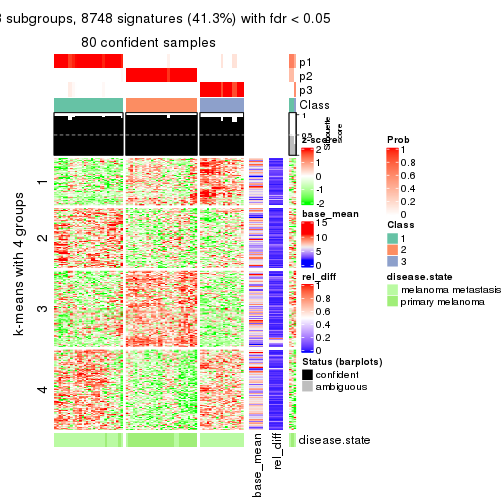
get_signatures(res, k = 4)
get_signatures(res, k = 5)
get_signatures(res, k = 6)
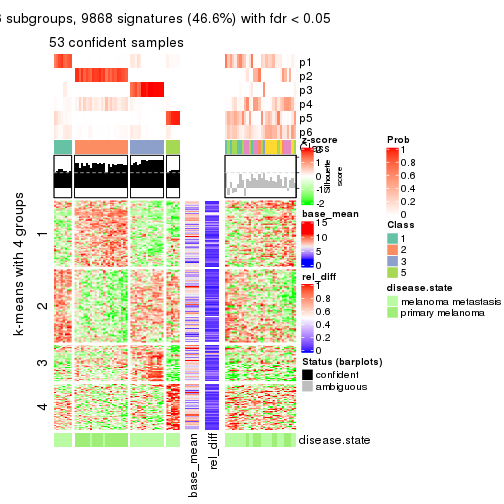
Signature heatmaps where rows are not scaled:
get_signatures(res, k = 2, scale_rows = FALSE)
get_signatures(res, k = 3, scale_rows = FALSE)
get_signatures(res, k = 4, scale_rows = FALSE)
get_signatures(res, k = 5, scale_rows = FALSE)
get_signatures(res, k = 6, scale_rows = FALSE)
Compare the overlap of signatures from different k:
compare_signatures(res)
get_signature() returns a data frame invisibly. TO get the list of signatures, the function
call should be assigned to a variable explicitly. In following code, if plot argument is set
to FALSE, no heatmap is plotted while only the differential analysis is performed.
# code only for demonstration
tb = get_signature(res, k = ..., plot = FALSE)
An example of the output of tb is:
#> which_row fdr mean_1 mean_2 scaled_mean_1 scaled_mean_2 km
#> 1 38 0.042760348 8.373488 9.131774 -0.5533452 0.5164555 1
#> 2 40 0.018707592 7.106213 8.469186 -0.6173731 0.5762149 1
#> 3 55 0.019134737 10.221463 11.207825 -0.6159697 0.5749050 1
#> 4 59 0.006059896 5.921854 7.869574 -0.6899429 0.6439467 1
#> 5 60 0.018055526 8.928898 10.211722 -0.6204761 0.5791110 1
#> 6 98 0.009384629 15.714769 14.887706 0.6635654 -0.6193277 2
...
The columns in tb are:
which_row: row indices corresponding to the input matrix.fdr: FDR for the differential test. mean_x: The mean value in group x.scaled_mean_x: The mean value in group x after rows are scaled.km: Row groups if k-means clustering is applied to rows.UMAP plot which shows how samples are separated.
dimension_reduction(res, k = 2, method = "UMAP")
dimension_reduction(res, k = 3, method = "UMAP")
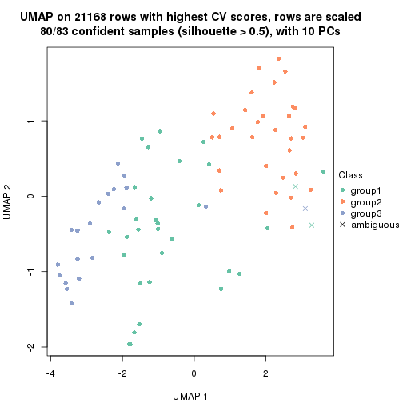
dimension_reduction(res, k = 4, method = "UMAP")
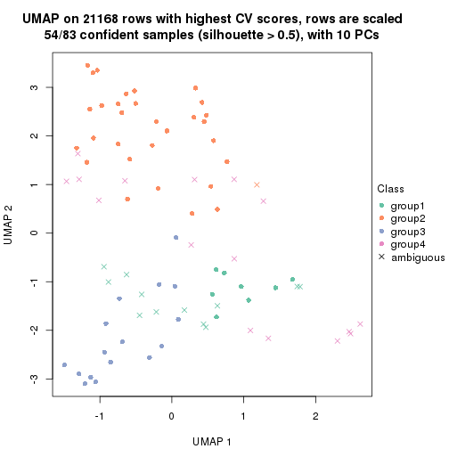
dimension_reduction(res, k = 5, method = "UMAP")
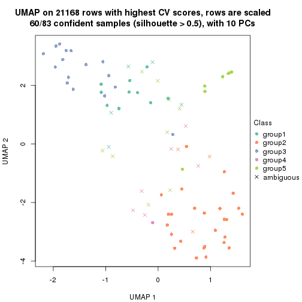
dimension_reduction(res, k = 6, method = "UMAP")
Following heatmap shows how subgroups are split when increasing k:
collect_classes(res)
Test correlation between subgroups and known annotations. If the known annotation is numeric, one-way ANOVA test is applied, and if the known annotation is discrete, chi-squared contingency table test is applied.
test_to_known_factors(res)
#> n disease.state(p) k
#> CV:skmeans 82 3.46e-13 2
#> CV:skmeans 80 7.38e-14 3
#> CV:skmeans 54 4.16e-10 4
#> CV:skmeans 60 6.00e-10 5
#> CV:skmeans 53 7.43e-10 6
If matrix rows can be associated to genes, consider to use functional_enrichment(res,
...) to perform function enrichment for the signature genes. See this vignette for more detailed explanations.
The object with results only for a single top-value method and a single partition method can be extracted as:
res = res_list["CV", "pam"]
# you can also extract it by
# res = res_list["CV:pam"]
A summary of res and all the functions that can be applied to it:
res
#> A 'ConsensusPartition' object with k = 2, 3, 4, 5, 6.
#> On a matrix with 21168 rows and 83 columns.
#> Top rows (1000, 2000, 3000, 4000, 5000) are extracted by 'CV' method.
#> Subgroups are detected by 'pam' method.
#> Performed in total 1250 partitions by row resampling.
#> Best k for subgroups seems to be 3.
#>
#> Following methods can be applied to this 'ConsensusPartition' object:
#> [1] "cola_report" "collect_classes" "collect_plots"
#> [4] "collect_stats" "colnames" "compare_signatures"
#> [7] "consensus_heatmap" "dimension_reduction" "functional_enrichment"
#> [10] "get_anno_col" "get_anno" "get_classes"
#> [13] "get_consensus" "get_matrix" "get_membership"
#> [16] "get_param" "get_signatures" "get_stats"
#> [19] "is_best_k" "is_stable_k" "membership_heatmap"
#> [22] "ncol" "nrow" "plot_ecdf"
#> [25] "rownames" "select_partition_number" "show"
#> [28] "suggest_best_k" "test_to_known_factors"
collect_plots() function collects all the plots made from res for all k (number of partitions)
into one single page to provide an easy and fast comparison between different k.
collect_plots(res)
The plots are:
k and the heatmap of
predicted classes for each k.k.k.k.All the plots in panels can be made by individual functions and they are plotted later in this section.
select_partition_number() produces several plots showing different
statistics for choosing “optimized” k. There are following statistics:
k;k, the area increased is defined as \(A_k - A_{k-1}\).The detailed explanations of these statistics can be found in the cola vignette.
Generally speaking, lower PAC score, higher mean silhouette score or higher
concordance corresponds to better partition. Rand index and Jaccard index
measure how similar the current partition is compared to partition with k-1.
If they are too similar, we won't accept k is better than k-1.
select_partition_number(res)
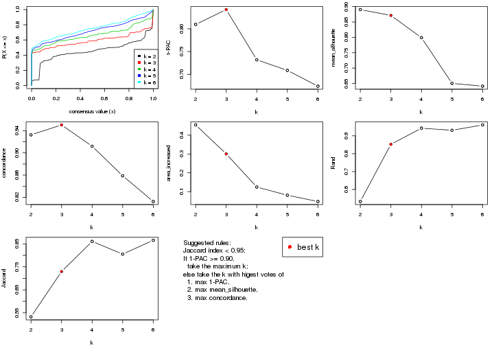
The numeric values for all these statistics can be obtained by get_stats().
get_stats(res)
#> k 1-PAC mean_silhouette concordance area_increased Rand Jaccard
#> 2 2 0.810 0.890 0.932 0.4542 0.533 0.533
#> 3 3 0.842 0.871 0.950 0.3006 0.852 0.730
#> 4 4 0.732 0.799 0.912 0.1244 0.943 0.860
#> 5 5 0.709 0.650 0.859 0.0810 0.931 0.805
#> 6 6 0.674 0.641 0.812 0.0477 0.961 0.866
suggest_best_k() suggests the best \(k\) based on these statistics. The rules are as follows:
suggest_best_k(res)
#> [1] 3
Following shows the table of the partitions (You need to click the show/hide
code output link to see it). The membership matrix (columns with name p*)
is inferred by
clue::cl_consensus()
function with the SE method. Basically the value in the membership matrix
represents the probability to belong to a certain group. The finall class
label for an item is determined with the group with highest probability it
belongs to.
In get_classes() function, the entropy is calculated from the membership
matrix and the silhouette score is calculated from the consensus matrix.
cbind(get_classes(res, k = 2), get_membership(res, k = 2))
#> class entropy silhouette p1 p2
#> GSM207929 2 0.9944 0.119 0.456 0.544
#> GSM207930 1 0.3584 0.949 0.932 0.068
#> GSM207931 1 0.4562 0.927 0.904 0.096
#> GSM207932 2 0.0000 0.938 0.000 1.000
#> GSM207933 2 0.0000 0.938 0.000 1.000
#> GSM207934 2 0.5737 0.823 0.136 0.864
#> GSM207935 1 0.9954 0.178 0.540 0.460
#> GSM207936 2 0.0376 0.936 0.004 0.996
#> GSM207937 2 0.0000 0.938 0.000 1.000
#> GSM207938 2 0.0000 0.938 0.000 1.000
#> GSM207939 2 0.0000 0.938 0.000 1.000
#> GSM207940 2 0.0000 0.938 0.000 1.000
#> GSM207941 2 0.0000 0.938 0.000 1.000
#> GSM207942 2 0.0000 0.938 0.000 1.000
#> GSM207943 2 0.0000 0.938 0.000 1.000
#> GSM207944 2 0.0000 0.938 0.000 1.000
#> GSM207945 2 0.0000 0.938 0.000 1.000
#> GSM207946 2 0.0000 0.938 0.000 1.000
#> GSM207947 1 0.3584 0.949 0.932 0.068
#> GSM207948 2 0.0000 0.938 0.000 1.000
#> GSM207949 2 0.0000 0.938 0.000 1.000
#> GSM207950 2 0.0000 0.938 0.000 1.000
#> GSM207951 2 0.0000 0.938 0.000 1.000
#> GSM207952 1 0.9323 0.525 0.652 0.348
#> GSM207953 2 0.0000 0.938 0.000 1.000
#> GSM207954 2 0.0000 0.938 0.000 1.000
#> GSM207955 2 0.0000 0.938 0.000 1.000
#> GSM207956 2 0.6623 0.781 0.172 0.828
#> GSM207957 2 0.0000 0.938 0.000 1.000
#> GSM207958 2 0.4690 0.860 0.100 0.900
#> GSM207959 2 0.0000 0.938 0.000 1.000
#> GSM207960 1 0.3733 0.947 0.928 0.072
#> GSM207961 1 0.3584 0.949 0.932 0.068
#> GSM207962 1 0.3584 0.949 0.932 0.068
#> GSM207963 1 0.3584 0.949 0.932 0.068
#> GSM207964 1 0.3584 0.949 0.932 0.068
#> GSM207965 1 0.3584 0.949 0.932 0.068
#> GSM207966 1 0.3584 0.949 0.932 0.068
#> GSM207967 1 0.4562 0.927 0.904 0.096
#> GSM207968 1 0.3584 0.949 0.932 0.068
#> GSM207969 1 0.0000 0.913 1.000 0.000
#> GSM207970 1 0.0000 0.913 1.000 0.000
#> GSM207971 1 0.0000 0.913 1.000 0.000
#> GSM207972 1 0.3584 0.949 0.932 0.068
#> GSM207973 1 0.3584 0.949 0.932 0.068
#> GSM207974 1 0.3584 0.949 0.932 0.068
#> GSM207975 1 0.3584 0.949 0.932 0.068
#> GSM207976 1 0.3584 0.949 0.932 0.068
#> GSM207977 1 0.0000 0.913 1.000 0.000
#> GSM207978 1 0.3584 0.949 0.932 0.068
#> GSM207979 1 0.3584 0.949 0.932 0.068
#> GSM207980 1 0.0000 0.913 1.000 0.000
#> GSM207981 1 0.0938 0.910 0.988 0.012
#> GSM207982 1 0.6343 0.770 0.840 0.160
#> GSM207983 1 0.6712 0.747 0.824 0.176
#> GSM207984 1 0.3584 0.949 0.932 0.068
#> GSM207985 1 0.3584 0.949 0.932 0.068
#> GSM207986 1 0.1184 0.908 0.984 0.016
#> GSM207987 1 0.5737 0.800 0.864 0.136
#> GSM207988 1 0.6712 0.748 0.824 0.176
#> GSM207989 1 0.0000 0.913 1.000 0.000
#> GSM207990 1 0.0000 0.913 1.000 0.000
#> GSM207991 1 0.0000 0.913 1.000 0.000
#> GSM207992 1 0.0000 0.913 1.000 0.000
#> GSM207993 1 0.3584 0.949 0.932 0.068
#> GSM207994 2 0.0000 0.938 0.000 1.000
#> GSM207995 1 0.3584 0.949 0.932 0.068
#> GSM207996 1 0.3584 0.949 0.932 0.068
#> GSM207997 1 0.3584 0.949 0.932 0.068
#> GSM207998 1 0.3584 0.949 0.932 0.068
#> GSM207999 2 0.9866 0.211 0.432 0.568
#> GSM208000 1 0.3584 0.949 0.932 0.068
#> GSM208001 1 0.3584 0.949 0.932 0.068
#> GSM208002 1 0.3584 0.949 0.932 0.068
#> GSM208003 1 0.3584 0.949 0.932 0.068
#> GSM208004 1 0.3584 0.949 0.932 0.068
#> GSM208005 1 0.3584 0.949 0.932 0.068
#> GSM208006 2 0.4690 0.862 0.100 0.900
#> GSM208007 2 0.7453 0.726 0.212 0.788
#> GSM208008 1 0.3584 0.949 0.932 0.068
#> GSM208009 1 0.3584 0.949 0.932 0.068
#> GSM208010 1 0.3584 0.949 0.932 0.068
#> GSM208011 1 0.3584 0.949 0.932 0.068
cbind(get_classes(res, k = 3), get_membership(res, k = 3))
#> class entropy silhouette p1 p2 p3
#> GSM207929 2 0.6274 0.138 0.456 0.544 0.000
#> GSM207930 1 0.0000 0.933 1.000 0.000 0.000
#> GSM207931 1 0.2878 0.843 0.904 0.096 0.000
#> GSM207932 2 0.0000 0.947 0.000 1.000 0.000
#> GSM207933 2 0.0000 0.947 0.000 1.000 0.000
#> GSM207934 2 0.3038 0.844 0.104 0.896 0.000
#> GSM207935 1 0.6274 0.153 0.544 0.456 0.000
#> GSM207936 2 0.0237 0.944 0.004 0.996 0.000
#> GSM207937 2 0.0000 0.947 0.000 1.000 0.000
#> GSM207938 2 0.0000 0.947 0.000 1.000 0.000
#> GSM207939 2 0.0000 0.947 0.000 1.000 0.000
#> GSM207940 2 0.0000 0.947 0.000 1.000 0.000
#> GSM207941 2 0.0000 0.947 0.000 1.000 0.000
#> GSM207942 2 0.0000 0.947 0.000 1.000 0.000
#> GSM207943 2 0.0000 0.947 0.000 1.000 0.000
#> GSM207944 2 0.0000 0.947 0.000 1.000 0.000
#> GSM207945 2 0.0000 0.947 0.000 1.000 0.000
#> GSM207946 2 0.0000 0.947 0.000 1.000 0.000
#> GSM207947 1 0.0000 0.933 1.000 0.000 0.000
#> GSM207948 2 0.0000 0.947 0.000 1.000 0.000
#> GSM207949 2 0.0000 0.947 0.000 1.000 0.000
#> GSM207950 2 0.0000 0.947 0.000 1.000 0.000
#> GSM207951 2 0.0000 0.947 0.000 1.000 0.000
#> GSM207952 1 0.5621 0.518 0.692 0.308 0.000
#> GSM207953 2 0.0000 0.947 0.000 1.000 0.000
#> GSM207954 2 0.0000 0.947 0.000 1.000 0.000
#> GSM207955 2 0.0000 0.947 0.000 1.000 0.000
#> GSM207956 2 0.3816 0.788 0.148 0.852 0.000
#> GSM207957 2 0.0000 0.947 0.000 1.000 0.000
#> GSM207958 2 0.2537 0.872 0.080 0.920 0.000
#> GSM207959 2 0.0000 0.947 0.000 1.000 0.000
#> GSM207960 1 0.0000 0.933 1.000 0.000 0.000
#> GSM207961 1 0.0000 0.933 1.000 0.000 0.000
#> GSM207962 1 0.0000 0.933 1.000 0.000 0.000
#> GSM207963 1 0.0000 0.933 1.000 0.000 0.000
#> GSM207964 1 0.0237 0.930 0.996 0.000 0.004
#> GSM207965 1 0.0000 0.933 1.000 0.000 0.000
#> GSM207966 1 0.0000 0.933 1.000 0.000 0.000
#> GSM207967 1 0.1289 0.905 0.968 0.032 0.000
#> GSM207968 1 0.0000 0.933 1.000 0.000 0.000
#> GSM207969 1 0.4452 0.750 0.808 0.000 0.192
#> GSM207970 1 0.4452 0.750 0.808 0.000 0.192
#> GSM207971 1 0.4504 0.745 0.804 0.000 0.196
#> GSM207972 1 0.0237 0.930 0.996 0.000 0.004
#> GSM207973 1 0.0000 0.933 1.000 0.000 0.000
#> GSM207974 1 0.0000 0.933 1.000 0.000 0.000
#> GSM207975 1 0.0000 0.933 1.000 0.000 0.000
#> GSM207976 1 0.0475 0.928 0.992 0.004 0.004
#> GSM207977 1 0.4452 0.750 0.808 0.000 0.192
#> GSM207978 1 0.0000 0.933 1.000 0.000 0.000
#> GSM207979 1 0.0000 0.933 1.000 0.000 0.000
#> GSM207980 3 0.0000 0.911 0.000 0.000 1.000
#> GSM207981 3 0.0000 0.911 0.000 0.000 1.000
#> GSM207982 3 0.0000 0.911 0.000 0.000 1.000
#> GSM207983 3 0.0000 0.911 0.000 0.000 1.000
#> GSM207984 1 0.0000 0.933 1.000 0.000 0.000
#> GSM207985 1 0.0000 0.933 1.000 0.000 0.000
#> GSM207986 3 0.0000 0.911 0.000 0.000 1.000
#> GSM207987 3 0.0000 0.911 0.000 0.000 1.000
#> GSM207988 3 0.0000 0.911 0.000 0.000 1.000
#> GSM207989 3 0.0000 0.911 0.000 0.000 1.000
#> GSM207990 1 0.4605 0.734 0.796 0.000 0.204
#> GSM207991 3 0.5397 0.596 0.280 0.000 0.720
#> GSM207992 3 0.6008 0.387 0.372 0.000 0.628
#> GSM207993 1 0.0000 0.933 1.000 0.000 0.000
#> GSM207994 2 0.0000 0.947 0.000 1.000 0.000
#> GSM207995 1 0.0000 0.933 1.000 0.000 0.000
#> GSM207996 1 0.0000 0.933 1.000 0.000 0.000
#> GSM207997 1 0.0000 0.933 1.000 0.000 0.000
#> GSM207998 1 0.0000 0.933 1.000 0.000 0.000
#> GSM207999 1 0.6168 0.275 0.588 0.412 0.000
#> GSM208000 1 0.0000 0.933 1.000 0.000 0.000
#> GSM208001 1 0.0000 0.933 1.000 0.000 0.000
#> GSM208002 1 0.0000 0.933 1.000 0.000 0.000
#> GSM208003 1 0.0000 0.933 1.000 0.000 0.000
#> GSM208004 1 0.0000 0.933 1.000 0.000 0.000
#> GSM208005 1 0.0000 0.933 1.000 0.000 0.000
#> GSM208006 2 0.2448 0.877 0.076 0.924 0.000
#> GSM208007 2 0.4654 0.698 0.208 0.792 0.000
#> GSM208008 1 0.0000 0.933 1.000 0.000 0.000
#> GSM208009 1 0.0000 0.933 1.000 0.000 0.000
#> GSM208010 1 0.0000 0.933 1.000 0.000 0.000
#> GSM208011 1 0.2878 0.855 0.904 0.000 0.096
cbind(get_classes(res, k = 4), get_membership(res, k = 4))
#> class entropy silhouette p1 p2 p3 p4
#> GSM207929 2 0.4972 0.089 0.456 0.544 0.000 0.000
#> GSM207930 1 0.3219 0.786 0.836 0.000 0.000 0.164
#> GSM207931 1 0.2805 0.779 0.888 0.100 0.000 0.012
#> GSM207932 2 0.0000 0.944 0.000 1.000 0.000 0.000
#> GSM207933 2 0.0000 0.944 0.000 1.000 0.000 0.000
#> GSM207934 2 0.4106 0.783 0.084 0.832 0.000 0.084
#> GSM207935 1 0.4972 0.200 0.544 0.456 0.000 0.000
#> GSM207936 2 0.0188 0.941 0.004 0.996 0.000 0.000
#> GSM207937 2 0.0000 0.944 0.000 1.000 0.000 0.000
#> GSM207938 2 0.0000 0.944 0.000 1.000 0.000 0.000
#> GSM207939 2 0.0000 0.944 0.000 1.000 0.000 0.000
#> GSM207940 2 0.0000 0.944 0.000 1.000 0.000 0.000
#> GSM207941 2 0.0000 0.944 0.000 1.000 0.000 0.000
#> GSM207942 2 0.0000 0.944 0.000 1.000 0.000 0.000
#> GSM207943 2 0.0000 0.944 0.000 1.000 0.000 0.000
#> GSM207944 2 0.0000 0.944 0.000 1.000 0.000 0.000
#> GSM207945 2 0.0000 0.944 0.000 1.000 0.000 0.000
#> GSM207946 2 0.0000 0.944 0.000 1.000 0.000 0.000
#> GSM207947 1 0.0336 0.841 0.992 0.000 0.000 0.008
#> GSM207948 2 0.0000 0.944 0.000 1.000 0.000 0.000
#> GSM207949 2 0.0000 0.944 0.000 1.000 0.000 0.000
#> GSM207950 2 0.0000 0.944 0.000 1.000 0.000 0.000
#> GSM207951 2 0.0000 0.944 0.000 1.000 0.000 0.000
#> GSM207952 1 0.6674 0.381 0.584 0.300 0.000 0.116
#> GSM207953 2 0.0000 0.944 0.000 1.000 0.000 0.000
#> GSM207954 2 0.0000 0.944 0.000 1.000 0.000 0.000
#> GSM207955 2 0.0000 0.944 0.000 1.000 0.000 0.000
#> GSM207956 2 0.3074 0.777 0.152 0.848 0.000 0.000
#> GSM207957 2 0.0000 0.944 0.000 1.000 0.000 0.000
#> GSM207958 2 0.2149 0.858 0.088 0.912 0.000 0.000
#> GSM207959 2 0.0000 0.944 0.000 1.000 0.000 0.000
#> GSM207960 1 0.0000 0.841 1.000 0.000 0.000 0.000
#> GSM207961 1 0.0000 0.841 1.000 0.000 0.000 0.000
#> GSM207962 1 0.3311 0.781 0.828 0.000 0.000 0.172
#> GSM207963 1 0.0921 0.839 0.972 0.000 0.000 0.028
#> GSM207964 1 0.0376 0.840 0.992 0.000 0.004 0.004
#> GSM207965 1 0.0188 0.840 0.996 0.000 0.000 0.004
#> GSM207966 4 0.0336 0.847 0.008 0.000 0.000 0.992
#> GSM207967 1 0.4105 0.771 0.812 0.032 0.000 0.156
#> GSM207968 1 0.0188 0.840 0.996 0.000 0.000 0.004
#> GSM207969 1 0.3710 0.712 0.804 0.000 0.192 0.004
#> GSM207970 1 0.3710 0.712 0.804 0.000 0.192 0.004
#> GSM207971 1 0.3710 0.712 0.804 0.000 0.192 0.004
#> GSM207972 1 0.0376 0.840 0.992 0.000 0.004 0.004
#> GSM207973 4 0.3726 0.748 0.212 0.000 0.000 0.788
#> GSM207974 1 0.4999 -0.111 0.508 0.000 0.000 0.492
#> GSM207975 1 0.1792 0.832 0.932 0.000 0.000 0.068
#> GSM207976 1 0.0564 0.839 0.988 0.004 0.004 0.004
#> GSM207977 1 0.3810 0.716 0.804 0.000 0.188 0.008
#> GSM207978 4 0.0188 0.847 0.004 0.000 0.000 0.996
#> GSM207979 4 0.0707 0.853 0.020 0.000 0.000 0.980
#> GSM207980 3 0.0000 0.869 0.000 0.000 1.000 0.000
#> GSM207981 3 0.0000 0.869 0.000 0.000 1.000 0.000
#> GSM207982 3 0.0000 0.869 0.000 0.000 1.000 0.000
#> GSM207983 3 0.0000 0.869 0.000 0.000 1.000 0.000
#> GSM207984 1 0.3356 0.781 0.824 0.000 0.000 0.176
#> GSM207985 4 0.3311 0.781 0.172 0.000 0.000 0.828
#> GSM207986 3 0.0000 0.869 0.000 0.000 1.000 0.000
#> GSM207987 3 0.0000 0.869 0.000 0.000 1.000 0.000
#> GSM207988 3 0.0000 0.869 0.000 0.000 1.000 0.000
#> GSM207989 3 0.0000 0.869 0.000 0.000 1.000 0.000
#> GSM207990 1 0.3649 0.703 0.796 0.000 0.204 0.000
#> GSM207991 3 0.4277 0.492 0.280 0.000 0.720 0.000
#> GSM207992 3 0.4761 0.334 0.372 0.000 0.628 0.000
#> GSM207993 1 0.1557 0.835 0.944 0.000 0.000 0.056
#> GSM207994 2 0.0000 0.944 0.000 1.000 0.000 0.000
#> GSM207995 1 0.3311 0.783 0.828 0.000 0.000 0.172
#> GSM207996 1 0.3266 0.782 0.832 0.000 0.000 0.168
#> GSM207997 1 0.0336 0.840 0.992 0.000 0.000 0.008
#> GSM207998 1 0.3266 0.782 0.832 0.000 0.000 0.168
#> GSM207999 1 0.7354 0.240 0.480 0.352 0.000 0.168
#> GSM208000 1 0.3311 0.781 0.828 0.000 0.000 0.172
#> GSM208001 1 0.0000 0.841 1.000 0.000 0.000 0.000
#> GSM208002 1 0.0000 0.841 1.000 0.000 0.000 0.000
#> GSM208003 1 0.0000 0.841 1.000 0.000 0.000 0.000
#> GSM208004 1 0.0000 0.841 1.000 0.000 0.000 0.000
#> GSM208005 1 0.3444 0.711 0.816 0.000 0.000 0.184
#> GSM208006 2 0.2011 0.867 0.080 0.920 0.000 0.000
#> GSM208007 2 0.3726 0.684 0.212 0.788 0.000 0.000
#> GSM208008 1 0.0188 0.841 0.996 0.000 0.000 0.004
#> GSM208009 1 0.2921 0.799 0.860 0.000 0.000 0.140
#> GSM208010 1 0.2281 0.819 0.904 0.000 0.000 0.096
#> GSM208011 1 0.2266 0.801 0.912 0.000 0.084 0.004
cbind(get_classes(res, k = 5), get_membership(res, k = 5))
#> class entropy silhouette p1 p2 p3 p4 p5
#> GSM207929 2 0.4781 0.1433 0.428 0.552 0.000 0.020 0.000
#> GSM207930 4 0.3143 0.6843 0.204 0.000 0.000 0.796 0.000
#> GSM207931 1 0.2448 0.5814 0.892 0.088 0.000 0.020 0.000
#> GSM207932 2 0.0000 0.9292 0.000 1.000 0.000 0.000 0.000
#> GSM207933 2 0.0609 0.9264 0.000 0.980 0.000 0.020 0.000
#> GSM207934 2 0.4385 0.7307 0.068 0.752 0.000 0.180 0.000
#> GSM207935 1 0.4291 0.0719 0.536 0.464 0.000 0.000 0.000
#> GSM207936 2 0.1443 0.9274 0.004 0.948 0.000 0.044 0.004
#> GSM207937 2 0.0963 0.9290 0.000 0.964 0.000 0.036 0.000
#> GSM207938 2 0.1282 0.9222 0.000 0.952 0.000 0.044 0.004
#> GSM207939 2 0.0162 0.9291 0.000 0.996 0.000 0.004 0.000
#> GSM207940 2 0.1282 0.9222 0.000 0.952 0.000 0.044 0.004
#> GSM207941 2 0.0865 0.9276 0.000 0.972 0.000 0.024 0.004
#> GSM207942 2 0.0771 0.9280 0.000 0.976 0.000 0.020 0.004
#> GSM207943 2 0.1041 0.9286 0.000 0.964 0.000 0.032 0.004
#> GSM207944 2 0.0000 0.9292 0.000 1.000 0.000 0.000 0.000
#> GSM207945 2 0.1571 0.9240 0.000 0.936 0.000 0.060 0.004
#> GSM207946 2 0.0404 0.9282 0.000 0.988 0.000 0.012 0.000
#> GSM207947 4 0.4867 0.3955 0.432 0.000 0.000 0.544 0.024
#> GSM207948 2 0.0609 0.9264 0.000 0.980 0.000 0.020 0.000
#> GSM207949 2 0.0162 0.9293 0.000 0.996 0.000 0.004 0.000
#> GSM207950 2 0.1282 0.9222 0.000 0.952 0.000 0.044 0.004
#> GSM207951 2 0.0609 0.9264 0.000 0.980 0.000 0.020 0.000
#> GSM207952 1 0.6755 -0.1732 0.456 0.272 0.000 0.268 0.004
#> GSM207953 2 0.0000 0.9292 0.000 1.000 0.000 0.000 0.000
#> GSM207954 2 0.0609 0.9264 0.000 0.980 0.000 0.020 0.000
#> GSM207955 2 0.0290 0.9287 0.000 0.992 0.000 0.008 0.000
#> GSM207956 2 0.3845 0.7934 0.124 0.812 0.000 0.060 0.004
#> GSM207957 2 0.1205 0.9234 0.000 0.956 0.000 0.040 0.004
#> GSM207958 2 0.2867 0.8663 0.072 0.880 0.000 0.044 0.004
#> GSM207959 2 0.0609 0.9264 0.000 0.980 0.000 0.020 0.000
#> GSM207960 1 0.0162 0.6333 0.996 0.000 0.000 0.004 0.000
#> GSM207961 1 0.1410 0.6164 0.940 0.000 0.000 0.060 0.000
#> GSM207962 4 0.4126 0.5692 0.380 0.000 0.000 0.620 0.000
#> GSM207963 1 0.1851 0.5946 0.912 0.000 0.000 0.088 0.000
#> GSM207964 1 0.3039 0.5182 0.808 0.000 0.000 0.192 0.000
#> GSM207965 1 0.2891 0.5457 0.824 0.000 0.000 0.176 0.000
#> GSM207966 5 0.0794 0.8293 0.000 0.000 0.000 0.028 0.972
#> GSM207967 4 0.4375 0.5208 0.420 0.004 0.000 0.576 0.000
#> GSM207968 1 0.0510 0.6341 0.984 0.000 0.000 0.016 0.000
#> GSM207969 1 0.3918 0.5443 0.804 0.000 0.096 0.100 0.000
#> GSM207970 1 0.3916 0.5451 0.804 0.000 0.092 0.104 0.000
#> GSM207971 1 0.3723 0.5248 0.804 0.000 0.152 0.044 0.000
#> GSM207972 1 0.2424 0.5823 0.868 0.000 0.000 0.132 0.000
#> GSM207973 5 0.1608 0.7855 0.072 0.000 0.000 0.000 0.928
#> GSM207974 5 0.4249 -0.0403 0.432 0.000 0.000 0.000 0.568
#> GSM207975 4 0.4171 0.5430 0.396 0.000 0.000 0.604 0.000
#> GSM207976 1 0.1430 0.6282 0.944 0.004 0.000 0.052 0.000
#> GSM207977 1 0.4415 0.0217 0.604 0.000 0.008 0.388 0.000
#> GSM207978 5 0.0794 0.8293 0.000 0.000 0.000 0.028 0.972
#> GSM207979 5 0.0865 0.8309 0.004 0.000 0.000 0.024 0.972
#> GSM207980 3 0.0703 0.8601 0.000 0.000 0.976 0.024 0.000
#> GSM207981 3 0.0162 0.8728 0.000 0.000 0.996 0.004 0.000
#> GSM207982 3 0.0000 0.8746 0.000 0.000 1.000 0.000 0.000
#> GSM207983 3 0.0000 0.8746 0.000 0.000 1.000 0.000 0.000
#> GSM207984 4 0.3074 0.6825 0.196 0.000 0.000 0.804 0.000
#> GSM207985 5 0.0794 0.8238 0.028 0.000 0.000 0.000 0.972
#> GSM207986 3 0.0000 0.8746 0.000 0.000 1.000 0.000 0.000
#> GSM207987 3 0.0000 0.8746 0.000 0.000 1.000 0.000 0.000
#> GSM207988 3 0.0000 0.8746 0.000 0.000 1.000 0.000 0.000
#> GSM207989 3 0.0000 0.8746 0.000 0.000 1.000 0.000 0.000
#> GSM207990 1 0.3694 0.5118 0.796 0.000 0.172 0.032 0.000
#> GSM207991 3 0.3957 0.4526 0.280 0.000 0.712 0.008 0.000
#> GSM207992 3 0.4101 0.2015 0.372 0.000 0.628 0.000 0.000
#> GSM207993 1 0.4249 -0.1766 0.568 0.000 0.000 0.432 0.000
#> GSM207994 2 0.1282 0.9222 0.000 0.952 0.000 0.044 0.004
#> GSM207995 1 0.3932 0.1810 0.672 0.000 0.000 0.328 0.000
#> GSM207996 1 0.3752 0.2586 0.708 0.000 0.000 0.292 0.000
#> GSM207997 1 0.0162 0.6336 0.996 0.000 0.000 0.000 0.004
#> GSM207998 1 0.3837 0.2244 0.692 0.000 0.000 0.308 0.000
#> GSM207999 1 0.6718 -0.2313 0.412 0.260 0.000 0.328 0.000
#> GSM208000 1 0.3876 0.2102 0.684 0.000 0.000 0.316 0.000
#> GSM208001 1 0.1270 0.6160 0.948 0.000 0.000 0.052 0.000
#> GSM208002 1 0.0000 0.6333 1.000 0.000 0.000 0.000 0.000
#> GSM208003 1 0.1270 0.6160 0.948 0.000 0.000 0.052 0.000
#> GSM208004 1 0.0000 0.6333 1.000 0.000 0.000 0.000 0.000
#> GSM208005 1 0.3304 0.5259 0.816 0.000 0.000 0.016 0.168
#> GSM208006 2 0.2792 0.8709 0.072 0.884 0.000 0.040 0.004
#> GSM208007 2 0.3789 0.6771 0.212 0.768 0.000 0.020 0.000
#> GSM208008 1 0.2773 0.5523 0.836 0.000 0.000 0.164 0.000
#> GSM208009 1 0.3395 0.3703 0.764 0.000 0.000 0.236 0.000
#> GSM208010 1 0.2852 0.5214 0.828 0.000 0.000 0.172 0.000
#> GSM208011 1 0.3074 0.5363 0.804 0.000 0.000 0.196 0.000
cbind(get_classes(res, k = 6), get_membership(res, k = 6))
#> class entropy silhouette p1 p2 p3 p4 p5 p6
#> GSM207929 2 0.4773 0.0878 0.388 0.556 0.000 0.056 0.000 0.000
#> GSM207930 6 0.3355 0.5821 0.100 0.000 0.000 0.064 0.008 0.828
#> GSM207931 1 0.2420 0.6470 0.884 0.076 0.000 0.040 0.000 0.000
#> GSM207932 2 0.0363 0.8643 0.000 0.988 0.000 0.012 0.000 0.000
#> GSM207933 2 0.1075 0.8538 0.000 0.952 0.000 0.048 0.000 0.000
#> GSM207934 2 0.4454 0.5884 0.032 0.616 0.000 0.348 0.004 0.000
#> GSM207935 1 0.3851 -0.0695 0.540 0.460 0.000 0.000 0.000 0.000
#> GSM207936 2 0.2300 0.8618 0.000 0.856 0.000 0.144 0.000 0.000
#> GSM207937 2 0.1610 0.8678 0.000 0.916 0.000 0.084 0.000 0.000
#> GSM207938 2 0.2664 0.8352 0.000 0.816 0.000 0.184 0.000 0.000
#> GSM207939 2 0.0458 0.8629 0.000 0.984 0.000 0.016 0.000 0.000
#> GSM207940 2 0.2631 0.8355 0.000 0.820 0.000 0.180 0.000 0.000
#> GSM207941 2 0.1910 0.8611 0.000 0.892 0.000 0.108 0.000 0.000
#> GSM207942 2 0.1714 0.8641 0.000 0.908 0.000 0.092 0.000 0.000
#> GSM207943 2 0.1863 0.8658 0.000 0.896 0.000 0.104 0.000 0.000
#> GSM207944 2 0.0363 0.8643 0.000 0.988 0.000 0.012 0.000 0.000
#> GSM207945 2 0.2823 0.8406 0.000 0.796 0.000 0.204 0.000 0.000
#> GSM207946 2 0.0547 0.8616 0.000 0.980 0.000 0.020 0.000 0.000
#> GSM207947 6 0.4075 0.4333 0.076 0.000 0.000 0.184 0.000 0.740
#> GSM207948 2 0.1141 0.8531 0.000 0.948 0.000 0.052 0.000 0.000
#> GSM207949 2 0.0547 0.8665 0.000 0.980 0.000 0.020 0.000 0.000
#> GSM207950 2 0.2664 0.8352 0.000 0.816 0.000 0.184 0.000 0.000
#> GSM207951 2 0.1075 0.8538 0.000 0.952 0.000 0.048 0.000 0.000
#> GSM207952 4 0.6168 0.4975 0.356 0.200 0.000 0.432 0.000 0.012
#> GSM207953 2 0.0363 0.8655 0.000 0.988 0.000 0.012 0.000 0.000
#> GSM207954 2 0.1075 0.8538 0.000 0.952 0.000 0.048 0.000 0.000
#> GSM207955 2 0.0632 0.8602 0.000 0.976 0.000 0.024 0.000 0.000
#> GSM207956 2 0.4856 0.7274 0.076 0.696 0.000 0.200 0.000 0.028
#> GSM207957 2 0.2416 0.8457 0.000 0.844 0.000 0.156 0.000 0.000
#> GSM207958 2 0.3620 0.8044 0.044 0.772 0.000 0.184 0.000 0.000
#> GSM207959 2 0.1075 0.8538 0.000 0.952 0.000 0.048 0.000 0.000
#> GSM207960 1 0.0458 0.6981 0.984 0.000 0.000 0.016 0.000 0.000
#> GSM207961 1 0.1074 0.6989 0.960 0.000 0.000 0.012 0.000 0.028
#> GSM207962 4 0.6210 -0.0326 0.260 0.000 0.000 0.432 0.008 0.300
#> GSM207963 1 0.2907 0.6315 0.828 0.000 0.000 0.152 0.000 0.020
#> GSM207964 1 0.3175 0.5728 0.744 0.000 0.000 0.000 0.000 0.256
#> GSM207965 1 0.2762 0.6361 0.804 0.000 0.000 0.000 0.000 0.196
#> GSM207966 5 0.0000 0.8259 0.000 0.000 0.000 0.000 1.000 0.000
#> GSM207967 6 0.6341 -0.2392 0.320 0.000 0.000 0.332 0.008 0.340
#> GSM207968 1 0.1225 0.7024 0.952 0.000 0.000 0.036 0.000 0.012
#> GSM207969 1 0.3633 0.6457 0.796 0.000 0.064 0.136 0.000 0.004
#> GSM207970 1 0.3672 0.6445 0.792 0.000 0.064 0.140 0.000 0.004
#> GSM207971 1 0.3593 0.6478 0.800 0.000 0.064 0.132 0.000 0.004
#> GSM207972 1 0.3023 0.6714 0.836 0.000 0.000 0.044 0.000 0.120
#> GSM207973 5 0.1267 0.7723 0.060 0.000 0.000 0.000 0.940 0.000
#> GSM207974 5 0.3817 0.0292 0.432 0.000 0.000 0.000 0.568 0.000
#> GSM207975 6 0.2877 0.5950 0.168 0.000 0.000 0.012 0.000 0.820
#> GSM207976 1 0.2805 0.6763 0.828 0.000 0.000 0.160 0.000 0.012
#> GSM207977 6 0.4864 0.3596 0.384 0.000 0.000 0.064 0.000 0.552
#> GSM207978 5 0.0000 0.8259 0.000 0.000 0.000 0.000 1.000 0.000
#> GSM207979 5 0.0000 0.8259 0.000 0.000 0.000 0.000 1.000 0.000
#> GSM207980 3 0.2234 0.7796 0.000 0.000 0.872 0.124 0.000 0.004
#> GSM207981 3 0.0363 0.8553 0.000 0.000 0.988 0.012 0.000 0.000
#> GSM207982 3 0.0000 0.8604 0.000 0.000 1.000 0.000 0.000 0.000
#> GSM207983 3 0.0000 0.8604 0.000 0.000 1.000 0.000 0.000 0.000
#> GSM207984 6 0.3272 0.5715 0.076 0.000 0.000 0.080 0.008 0.836
#> GSM207985 5 0.0260 0.8230 0.008 0.000 0.000 0.000 0.992 0.000
#> GSM207986 3 0.0000 0.8604 0.000 0.000 1.000 0.000 0.000 0.000
#> GSM207987 3 0.0000 0.8604 0.000 0.000 1.000 0.000 0.000 0.000
#> GSM207988 3 0.0000 0.8604 0.000 0.000 1.000 0.000 0.000 0.000
#> GSM207989 3 0.0000 0.8604 0.000 0.000 1.000 0.000 0.000 0.000
#> GSM207990 1 0.3699 0.6381 0.796 0.000 0.112 0.088 0.000 0.004
#> GSM207991 3 0.4664 0.3977 0.280 0.000 0.644 0.076 0.000 0.000
#> GSM207992 3 0.3684 0.2405 0.372 0.000 0.628 0.000 0.000 0.000
#> GSM207993 6 0.3578 0.4592 0.340 0.000 0.000 0.000 0.000 0.660
#> GSM207994 2 0.2631 0.8355 0.000 0.820 0.000 0.180 0.000 0.000
#> GSM207995 1 0.4527 0.0508 0.604 0.000 0.000 0.360 0.008 0.028
#> GSM207996 1 0.4180 0.1280 0.632 0.000 0.000 0.348 0.008 0.012
#> GSM207997 1 0.0000 0.6989 1.000 0.000 0.000 0.000 0.000 0.000
#> GSM207998 1 0.4490 0.0822 0.616 0.000 0.000 0.348 0.008 0.028
#> GSM207999 4 0.6179 0.5568 0.364 0.144 0.000 0.468 0.008 0.016
#> GSM208000 1 0.4637 -0.0858 0.556 0.000 0.000 0.408 0.008 0.028
#> GSM208001 1 0.0806 0.6956 0.972 0.000 0.000 0.020 0.000 0.008
#> GSM208002 1 0.0146 0.7000 0.996 0.000 0.000 0.004 0.000 0.000
#> GSM208003 1 0.0993 0.6922 0.964 0.000 0.000 0.024 0.000 0.012
#> GSM208004 1 0.0363 0.6978 0.988 0.000 0.000 0.012 0.000 0.000
#> GSM208005 1 0.3093 0.6330 0.816 0.000 0.000 0.008 0.164 0.012
#> GSM208006 2 0.3646 0.8026 0.052 0.776 0.000 0.172 0.000 0.000
#> GSM208007 2 0.4244 0.6051 0.200 0.720 0.000 0.080 0.000 0.000
#> GSM208008 1 0.4745 0.4476 0.672 0.000 0.000 0.124 0.000 0.204
#> GSM208009 1 0.3988 0.2680 0.660 0.000 0.000 0.324 0.004 0.012
#> GSM208010 1 0.3649 0.4971 0.764 0.000 0.000 0.196 0.000 0.040
#> GSM208011 1 0.3644 0.6620 0.792 0.000 0.000 0.120 0.000 0.088
Heatmaps for the consensus matrix. It visualizes the probability of two samples to be in a same group.
consensus_heatmap(res, k = 2)

consensus_heatmap(res, k = 3)
consensus_heatmap(res, k = 4)
consensus_heatmap(res, k = 5)
consensus_heatmap(res, k = 6)
Heatmaps for the membership of samples in all partitions to see how consistent they are:
membership_heatmap(res, k = 2)
membership_heatmap(res, k = 3)
membership_heatmap(res, k = 4)
membership_heatmap(res, k = 5)
membership_heatmap(res, k = 6)
As soon as we have had the classes for columns, we can look for signatures which are significantly different between classes which can be candidate marks for certain classes. Following are the heatmaps for signatures.
Signature heatmaps where rows are scaled:
get_signatures(res, k = 2)
get_signatures(res, k = 3)
get_signatures(res, k = 4)
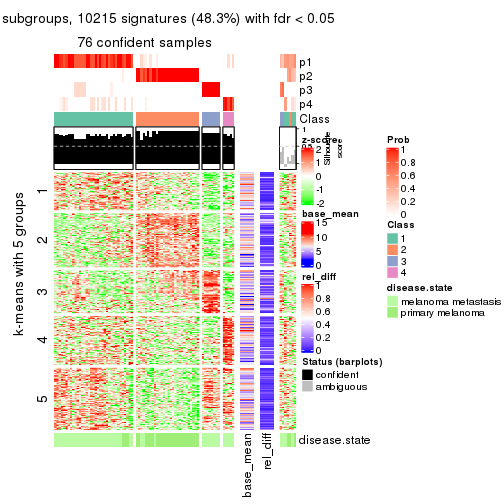
get_signatures(res, k = 5)
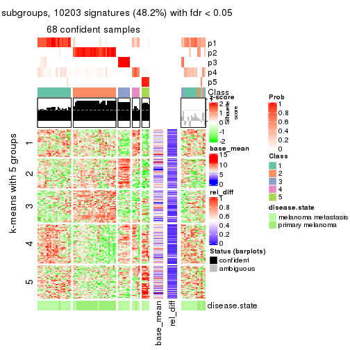
get_signatures(res, k = 6)
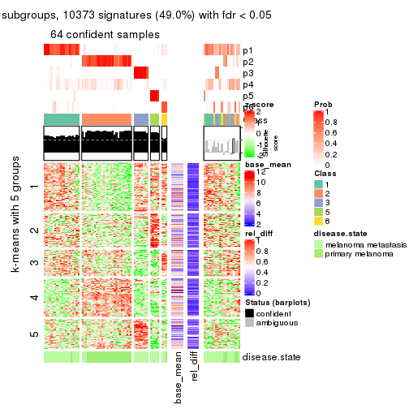
Signature heatmaps where rows are not scaled:
get_signatures(res, k = 2, scale_rows = FALSE)
get_signatures(res, k = 3, scale_rows = FALSE)
get_signatures(res, k = 4, scale_rows = FALSE)
get_signatures(res, k = 5, scale_rows = FALSE)
get_signatures(res, k = 6, scale_rows = FALSE)
Compare the overlap of signatures from different k:
compare_signatures(res)

get_signature() returns a data frame invisibly. TO get the list of signatures, the function
call should be assigned to a variable explicitly. In following code, if plot argument is set
to FALSE, no heatmap is plotted while only the differential analysis is performed.
# code only for demonstration
tb = get_signature(res, k = ..., plot = FALSE)
An example of the output of tb is:
#> which_row fdr mean_1 mean_2 scaled_mean_1 scaled_mean_2 km
#> 1 38 0.042760348 8.373488 9.131774 -0.5533452 0.5164555 1
#> 2 40 0.018707592 7.106213 8.469186 -0.6173731 0.5762149 1
#> 3 55 0.019134737 10.221463 11.207825 -0.6159697 0.5749050 1
#> 4 59 0.006059896 5.921854 7.869574 -0.6899429 0.6439467 1
#> 5 60 0.018055526 8.928898 10.211722 -0.6204761 0.5791110 1
#> 6 98 0.009384629 15.714769 14.887706 0.6635654 -0.6193277 2
...
The columns in tb are:
which_row: row indices corresponding to the input matrix.fdr: FDR for the differential test. mean_x: The mean value in group x.scaled_mean_x: The mean value in group x after rows are scaled.km: Row groups if k-means clustering is applied to rows.UMAP plot which shows how samples are separated.
dimension_reduction(res, k = 2, method = "UMAP")
dimension_reduction(res, k = 3, method = "UMAP")
dimension_reduction(res, k = 4, method = "UMAP")
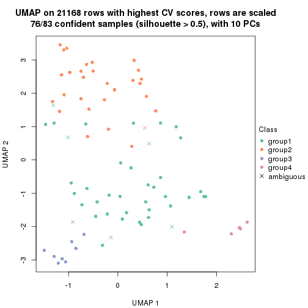
dimension_reduction(res, k = 5, method = "UMAP")
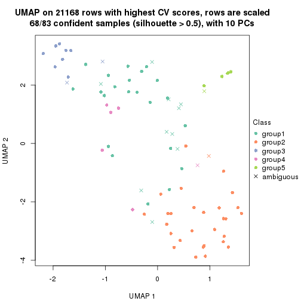
dimension_reduction(res, k = 6, method = "UMAP")
Following heatmap shows how subgroups are split when increasing k:
collect_classes(res)
Test correlation between subgroups and known annotations. If the known annotation is numeric, one-way ANOVA test is applied, and if the known annotation is discrete, chi-squared contingency table test is applied.
test_to_known_factors(res)
#> n disease.state(p) k
#> CV:pam 80 2.61e-12 2
#> CV:pam 79 5.39e-12 3
#> CV:pam 76 2.12e-11 4
#> CV:pam 68 4.63e-10 5
#> CV:pam 65 4.91e-09 6
If matrix rows can be associated to genes, consider to use functional_enrichment(res,
...) to perform function enrichment for the signature genes. See this vignette for more detailed explanations.
The object with results only for a single top-value method and a single partition method can be extracted as:
res = res_list["CV", "mclust"]
# you can also extract it by
# res = res_list["CV:mclust"]
A summary of res and all the functions that can be applied to it:
res
#> A 'ConsensusPartition' object with k = 2, 3, 4, 5, 6.
#> On a matrix with 21168 rows and 83 columns.
#> Top rows (1000, 2000, 3000, 4000, 5000) are extracted by 'CV' method.
#> Subgroups are detected by 'mclust' method.
#> Performed in total 1250 partitions by row resampling.
#> Best k for subgroups seems to be 2.
#>
#> Following methods can be applied to this 'ConsensusPartition' object:
#> [1] "cola_report" "collect_classes" "collect_plots"
#> [4] "collect_stats" "colnames" "compare_signatures"
#> [7] "consensus_heatmap" "dimension_reduction" "functional_enrichment"
#> [10] "get_anno_col" "get_anno" "get_classes"
#> [13] "get_consensus" "get_matrix" "get_membership"
#> [16] "get_param" "get_signatures" "get_stats"
#> [19] "is_best_k" "is_stable_k" "membership_heatmap"
#> [22] "ncol" "nrow" "plot_ecdf"
#> [25] "rownames" "select_partition_number" "show"
#> [28] "suggest_best_k" "test_to_known_factors"
collect_plots() function collects all the plots made from res for all k (number of partitions)
into one single page to provide an easy and fast comparison between different k.
collect_plots(res)
The plots are:
k and the heatmap of
predicted classes for each k.k.k.k.All the plots in panels can be made by individual functions and they are plotted later in this section.
select_partition_number() produces several plots showing different
statistics for choosing “optimized” k. There are following statistics:
k;k, the area increased is defined as \(A_k - A_{k-1}\).The detailed explanations of these statistics can be found in the cola vignette.
Generally speaking, lower PAC score, higher mean silhouette score or higher
concordance corresponds to better partition. Rand index and Jaccard index
measure how similar the current partition is compared to partition with k-1.
If they are too similar, we won't accept k is better than k-1.
select_partition_number(res)
The numeric values for all these statistics can be obtained by get_stats().
get_stats(res)
#> k 1-PAC mean_silhouette concordance area_increased Rand Jaccard
#> 2 2 0.929 0.924 0.963 0.5017 0.495 0.495
#> 3 3 0.669 0.746 0.854 0.2945 0.854 0.707
#> 4 4 0.621 0.606 0.783 0.1201 0.856 0.626
#> 5 5 0.669 0.665 0.816 0.0733 0.843 0.509
#> 6 6 0.688 0.620 0.759 0.0330 0.980 0.914
suggest_best_k() suggests the best \(k\) based on these statistics. The rules are as follows:
suggest_best_k(res)
#> [1] 2
Following shows the table of the partitions (You need to click the show/hide
code output link to see it). The membership matrix (columns with name p*)
is inferred by
clue::cl_consensus()
function with the SE method. Basically the value in the membership matrix
represents the probability to belong to a certain group. The finall class
label for an item is determined with the group with highest probability it
belongs to.
In get_classes() function, the entropy is calculated from the membership
matrix and the silhouette score is calculated from the consensus matrix.
cbind(get_classes(res, k = 2), get_membership(res, k = 2))
#> class entropy silhouette p1 p2
#> GSM207929 2 0.0000 0.957 0.000 1.000
#> GSM207930 2 0.2778 0.918 0.048 0.952
#> GSM207931 2 0.0000 0.957 0.000 1.000
#> GSM207932 2 0.0000 0.957 0.000 1.000
#> GSM207933 2 0.0000 0.957 0.000 1.000
#> GSM207934 2 0.0000 0.957 0.000 1.000
#> GSM207935 2 0.0000 0.957 0.000 1.000
#> GSM207936 2 0.0000 0.957 0.000 1.000
#> GSM207937 2 0.0000 0.957 0.000 1.000
#> GSM207938 2 0.0000 0.957 0.000 1.000
#> GSM207939 2 0.0000 0.957 0.000 1.000
#> GSM207940 2 0.0000 0.957 0.000 1.000
#> GSM207941 2 0.0000 0.957 0.000 1.000
#> GSM207942 2 0.0000 0.957 0.000 1.000
#> GSM207943 2 0.0000 0.957 0.000 1.000
#> GSM207944 2 0.0000 0.957 0.000 1.000
#> GSM207945 2 0.0000 0.957 0.000 1.000
#> GSM207946 2 0.0000 0.957 0.000 1.000
#> GSM207947 2 0.0000 0.957 0.000 1.000
#> GSM207948 2 0.0000 0.957 0.000 1.000
#> GSM207949 2 0.0000 0.957 0.000 1.000
#> GSM207950 2 0.0000 0.957 0.000 1.000
#> GSM207951 2 0.0000 0.957 0.000 1.000
#> GSM207952 2 0.0000 0.957 0.000 1.000
#> GSM207953 2 0.0000 0.957 0.000 1.000
#> GSM207954 2 0.0000 0.957 0.000 1.000
#> GSM207955 2 0.0000 0.957 0.000 1.000
#> GSM207956 2 0.0000 0.957 0.000 1.000
#> GSM207957 2 0.0000 0.957 0.000 1.000
#> GSM207958 2 0.0000 0.957 0.000 1.000
#> GSM207959 2 0.0000 0.957 0.000 1.000
#> GSM207960 2 0.0000 0.957 0.000 1.000
#> GSM207961 1 0.1414 0.963 0.980 0.020
#> GSM207962 1 0.4562 0.914 0.904 0.096
#> GSM207963 1 0.3431 0.941 0.936 0.064
#> GSM207964 1 0.1414 0.964 0.980 0.020
#> GSM207965 1 0.1184 0.964 0.984 0.016
#> GSM207966 1 0.4022 0.924 0.920 0.080
#> GSM207967 2 0.0000 0.957 0.000 1.000
#> GSM207968 1 0.1633 0.962 0.976 0.024
#> GSM207969 1 0.0376 0.966 0.996 0.004
#> GSM207970 1 0.0672 0.966 0.992 0.008
#> GSM207971 1 0.0376 0.966 0.996 0.004
#> GSM207972 2 0.9323 0.485 0.348 0.652
#> GSM207973 1 0.3879 0.927 0.924 0.076
#> GSM207974 1 0.0672 0.965 0.992 0.008
#> GSM207975 1 0.1184 0.964 0.984 0.016
#> GSM207976 2 0.9580 0.410 0.380 0.620
#> GSM207977 1 0.0376 0.966 0.996 0.004
#> GSM207978 1 0.4022 0.924 0.920 0.080
#> GSM207979 1 0.4022 0.924 0.920 0.080
#> GSM207980 1 0.0376 0.966 0.996 0.004
#> GSM207981 1 0.0376 0.966 0.996 0.004
#> GSM207982 1 0.0376 0.966 0.996 0.004
#> GSM207983 1 0.0376 0.966 0.996 0.004
#> GSM207984 1 0.1184 0.964 0.984 0.016
#> GSM207985 1 0.4022 0.924 0.920 0.080
#> GSM207986 1 0.0376 0.966 0.996 0.004
#> GSM207987 1 0.0376 0.966 0.996 0.004
#> GSM207988 1 0.0376 0.966 0.996 0.004
#> GSM207989 1 0.0376 0.966 0.996 0.004
#> GSM207990 1 0.0376 0.966 0.996 0.004
#> GSM207991 1 0.0376 0.966 0.996 0.004
#> GSM207992 1 0.0376 0.966 0.996 0.004
#> GSM207993 1 0.1414 0.964 0.980 0.020
#> GSM207994 2 0.0000 0.957 0.000 1.000
#> GSM207995 2 0.5178 0.846 0.116 0.884
#> GSM207996 1 0.8016 0.712 0.756 0.244
#> GSM207997 1 0.0376 0.965 0.996 0.004
#> GSM207998 2 0.1414 0.942 0.020 0.980
#> GSM207999 2 0.0000 0.957 0.000 1.000
#> GSM208000 1 0.6712 0.819 0.824 0.176
#> GSM208001 1 0.2948 0.945 0.948 0.052
#> GSM208002 1 0.0672 0.966 0.992 0.008
#> GSM208003 1 0.1633 0.962 0.976 0.024
#> GSM208004 1 0.1633 0.962 0.976 0.024
#> GSM208005 2 0.9732 0.355 0.404 0.596
#> GSM208006 2 0.0000 0.957 0.000 1.000
#> GSM208007 2 0.0000 0.957 0.000 1.000
#> GSM208008 2 0.9661 0.371 0.392 0.608
#> GSM208009 1 0.2948 0.949 0.948 0.052
#> GSM208010 1 0.1414 0.963 0.980 0.020
#> GSM208011 1 0.0672 0.966 0.992 0.008
cbind(get_classes(res, k = 3), get_membership(res, k = 3))
#> class entropy silhouette p1 p2 p3
#> GSM207929 1 0.6008 0.476 0.628 0.372 0.000
#> GSM207930 1 0.3805 0.774 0.884 0.092 0.024
#> GSM207931 1 0.4504 0.732 0.804 0.196 0.000
#> GSM207932 2 0.0592 0.948 0.012 0.988 0.000
#> GSM207933 2 0.0000 0.952 0.000 1.000 0.000
#> GSM207934 2 0.6126 0.146 0.400 0.600 0.000
#> GSM207935 1 0.6274 0.291 0.544 0.456 0.000
#> GSM207936 2 0.0592 0.949 0.012 0.988 0.000
#> GSM207937 2 0.2796 0.856 0.092 0.908 0.000
#> GSM207938 2 0.0000 0.952 0.000 1.000 0.000
#> GSM207939 2 0.0237 0.954 0.004 0.996 0.000
#> GSM207940 2 0.0237 0.954 0.004 0.996 0.000
#> GSM207941 2 0.0592 0.948 0.012 0.988 0.000
#> GSM207942 2 0.0592 0.948 0.012 0.988 0.000
#> GSM207943 2 0.0237 0.954 0.004 0.996 0.000
#> GSM207944 2 0.0237 0.954 0.004 0.996 0.000
#> GSM207945 2 0.0000 0.952 0.000 1.000 0.000
#> GSM207946 2 0.0237 0.954 0.004 0.996 0.000
#> GSM207947 1 0.2356 0.772 0.928 0.072 0.000
#> GSM207948 2 0.0237 0.951 0.004 0.996 0.000
#> GSM207949 2 0.0237 0.954 0.004 0.996 0.000
#> GSM207950 2 0.0237 0.954 0.004 0.996 0.000
#> GSM207951 2 0.0424 0.952 0.008 0.992 0.000
#> GSM207952 1 0.4235 0.747 0.824 0.176 0.000
#> GSM207953 2 0.0237 0.954 0.004 0.996 0.000
#> GSM207954 2 0.0237 0.954 0.004 0.996 0.000
#> GSM207955 2 0.0424 0.949 0.008 0.992 0.000
#> GSM207956 1 0.6308 0.133 0.508 0.492 0.000
#> GSM207957 2 0.0237 0.954 0.004 0.996 0.000
#> GSM207958 2 0.0424 0.947 0.008 0.992 0.000
#> GSM207959 2 0.0000 0.952 0.000 1.000 0.000
#> GSM207960 1 0.3038 0.774 0.896 0.104 0.000
#> GSM207961 3 0.2261 0.821 0.068 0.000 0.932
#> GSM207962 3 0.6140 0.550 0.404 0.000 0.596
#> GSM207963 3 0.5882 0.624 0.348 0.000 0.652
#> GSM207964 3 0.1163 0.833 0.028 0.000 0.972
#> GSM207965 3 0.1163 0.833 0.028 0.000 0.972
#> GSM207966 3 0.6307 0.418 0.488 0.000 0.512
#> GSM207967 1 0.3340 0.774 0.880 0.120 0.000
#> GSM207968 3 0.5327 0.679 0.272 0.000 0.728
#> GSM207969 3 0.0000 0.836 0.000 0.000 1.000
#> GSM207970 3 0.0000 0.836 0.000 0.000 1.000
#> GSM207971 3 0.0000 0.836 0.000 0.000 1.000
#> GSM207972 1 0.3918 0.676 0.856 0.004 0.140
#> GSM207973 3 0.6307 0.418 0.488 0.000 0.512
#> GSM207974 3 0.6204 0.518 0.424 0.000 0.576
#> GSM207975 3 0.2261 0.821 0.068 0.000 0.932
#> GSM207976 1 0.4110 0.663 0.844 0.004 0.152
#> GSM207977 3 0.0000 0.836 0.000 0.000 1.000
#> GSM207978 3 0.6307 0.418 0.488 0.000 0.512
#> GSM207979 3 0.6307 0.418 0.488 0.000 0.512
#> GSM207980 3 0.0000 0.836 0.000 0.000 1.000
#> GSM207981 3 0.0000 0.836 0.000 0.000 1.000
#> GSM207982 3 0.0000 0.836 0.000 0.000 1.000
#> GSM207983 3 0.0000 0.836 0.000 0.000 1.000
#> GSM207984 3 0.2165 0.821 0.064 0.000 0.936
#> GSM207985 3 0.6307 0.418 0.488 0.000 0.512
#> GSM207986 3 0.0000 0.836 0.000 0.000 1.000
#> GSM207987 3 0.0000 0.836 0.000 0.000 1.000
#> GSM207988 3 0.0000 0.836 0.000 0.000 1.000
#> GSM207989 3 0.0000 0.836 0.000 0.000 1.000
#> GSM207990 3 0.0000 0.836 0.000 0.000 1.000
#> GSM207991 3 0.0000 0.836 0.000 0.000 1.000
#> GSM207992 3 0.0000 0.836 0.000 0.000 1.000
#> GSM207993 3 0.2165 0.821 0.064 0.000 0.936
#> GSM207994 2 0.0237 0.954 0.004 0.996 0.000
#> GSM207995 1 0.3499 0.769 0.900 0.072 0.028
#> GSM207996 3 0.8185 0.355 0.428 0.072 0.500
#> GSM207997 3 0.5058 0.719 0.244 0.000 0.756
#> GSM207998 1 0.2625 0.775 0.916 0.084 0.000
#> GSM207999 1 0.4002 0.757 0.840 0.160 0.000
#> GSM208000 1 0.6520 -0.361 0.508 0.004 0.488
#> GSM208001 3 0.3851 0.798 0.136 0.004 0.860
#> GSM208002 3 0.4702 0.737 0.212 0.000 0.788
#> GSM208003 3 0.2261 0.821 0.068 0.000 0.932
#> GSM208004 3 0.2796 0.815 0.092 0.000 0.908
#> GSM208005 1 0.3340 0.677 0.880 0.000 0.120
#> GSM208006 1 0.6305 0.209 0.516 0.484 0.000
#> GSM208007 2 0.5905 0.325 0.352 0.648 0.000
#> GSM208008 1 0.4172 0.649 0.840 0.004 0.156
#> GSM208009 3 0.6209 0.595 0.368 0.004 0.628
#> GSM208010 3 0.4062 0.786 0.164 0.000 0.836
#> GSM208011 3 0.0747 0.835 0.016 0.000 0.984
cbind(get_classes(res, k = 4), get_membership(res, k = 4))
#> class entropy silhouette p1 p2 p3 p4
#> GSM207929 4 0.3271 0.520004 0.012 0.132 0.000 0.856
#> GSM207930 4 0.4292 0.432743 0.180 0.016 0.008 0.796
#> GSM207931 4 0.2255 0.535314 0.012 0.068 0.000 0.920
#> GSM207932 2 0.0188 0.911773 0.004 0.996 0.000 0.000
#> GSM207933 2 0.3441 0.846793 0.024 0.856 0.000 0.120
#> GSM207934 4 0.6783 0.344559 0.124 0.304 0.000 0.572
#> GSM207935 4 0.5038 0.393816 0.012 0.336 0.000 0.652
#> GSM207936 2 0.1305 0.897439 0.004 0.960 0.000 0.036
#> GSM207937 2 0.5231 0.310199 0.012 0.604 0.000 0.384
#> GSM207938 2 0.3205 0.858006 0.024 0.872 0.000 0.104
#> GSM207939 2 0.0524 0.911121 0.004 0.988 0.000 0.008
#> GSM207940 2 0.0657 0.911764 0.004 0.984 0.000 0.012
#> GSM207941 2 0.0188 0.911773 0.004 0.996 0.000 0.000
#> GSM207942 2 0.0188 0.911015 0.004 0.996 0.000 0.000
#> GSM207943 2 0.1297 0.902790 0.016 0.964 0.000 0.020
#> GSM207944 2 0.0188 0.911773 0.004 0.996 0.000 0.000
#> GSM207945 2 0.3552 0.839330 0.024 0.848 0.000 0.128
#> GSM207946 2 0.0188 0.911773 0.004 0.996 0.000 0.000
#> GSM207947 4 0.1743 0.533770 0.004 0.056 0.000 0.940
#> GSM207948 2 0.2489 0.871185 0.068 0.912 0.000 0.020
#> GSM207949 2 0.0188 0.911015 0.004 0.996 0.000 0.000
#> GSM207950 2 0.0188 0.911015 0.004 0.996 0.000 0.000
#> GSM207951 2 0.0188 0.911773 0.004 0.996 0.000 0.000
#> GSM207952 4 0.1936 0.525742 0.028 0.032 0.000 0.940
#> GSM207953 2 0.0188 0.911773 0.004 0.996 0.000 0.000
#> GSM207954 2 0.0937 0.908609 0.012 0.976 0.000 0.012
#> GSM207955 2 0.1059 0.906683 0.016 0.972 0.000 0.012
#> GSM207956 4 0.5119 0.185135 0.004 0.440 0.000 0.556
#> GSM207957 2 0.1545 0.900328 0.008 0.952 0.000 0.040
#> GSM207958 2 0.4720 0.655038 0.016 0.720 0.000 0.264
#> GSM207959 2 0.2563 0.870035 0.072 0.908 0.000 0.020
#> GSM207960 4 0.2197 0.532848 0.004 0.080 0.000 0.916
#> GSM207961 3 0.4646 0.751106 0.120 0.000 0.796 0.084
#> GSM207962 1 0.6306 0.390893 0.544 0.000 0.064 0.392
#> GSM207963 4 0.7648 -0.251889 0.348 0.000 0.216 0.436
#> GSM207964 3 0.3667 0.776585 0.088 0.000 0.856 0.056
#> GSM207965 3 0.4482 0.753540 0.128 0.000 0.804 0.068
#> GSM207966 1 0.5756 0.631231 0.692 0.000 0.084 0.224
#> GSM207967 4 0.3529 0.463971 0.152 0.012 0.000 0.836
#> GSM207968 1 0.6652 0.390988 0.576 0.000 0.316 0.108
#> GSM207969 3 0.1978 0.795814 0.068 0.000 0.928 0.004
#> GSM207970 3 0.2334 0.793336 0.088 0.000 0.908 0.004
#> GSM207971 3 0.1209 0.799428 0.032 0.000 0.964 0.004
#> GSM207972 1 0.5997 0.271766 0.592 0.012 0.028 0.368
#> GSM207973 1 0.6353 0.626954 0.652 0.000 0.140 0.208
#> GSM207974 1 0.7493 0.393630 0.480 0.000 0.320 0.200
#> GSM207975 3 0.4673 0.746019 0.132 0.000 0.792 0.076
#> GSM207976 1 0.4690 0.346112 0.712 0.012 0.000 0.276
#> GSM207977 3 0.1978 0.796694 0.068 0.000 0.928 0.004
#> GSM207978 1 0.5756 0.631231 0.692 0.000 0.084 0.224
#> GSM207979 1 0.5848 0.645073 0.684 0.000 0.088 0.228
#> GSM207980 3 0.0779 0.795139 0.016 0.000 0.980 0.004
#> GSM207981 3 0.1902 0.778080 0.064 0.000 0.932 0.004
#> GSM207982 3 0.1902 0.778080 0.064 0.000 0.932 0.004
#> GSM207983 3 0.1902 0.778080 0.064 0.000 0.932 0.004
#> GSM207984 3 0.4374 0.756133 0.120 0.000 0.812 0.068
#> GSM207985 1 0.6198 0.645853 0.660 0.000 0.116 0.224
#> GSM207986 3 0.1902 0.778080 0.064 0.000 0.932 0.004
#> GSM207987 3 0.1902 0.778080 0.064 0.000 0.932 0.004
#> GSM207988 3 0.1902 0.778080 0.064 0.000 0.932 0.004
#> GSM207989 3 0.1902 0.778080 0.064 0.000 0.932 0.004
#> GSM207990 3 0.0524 0.797418 0.004 0.000 0.988 0.008
#> GSM207991 3 0.0592 0.794835 0.016 0.000 0.984 0.000
#> GSM207992 3 0.0524 0.795545 0.008 0.000 0.988 0.004
#> GSM207993 3 0.4030 0.768867 0.092 0.000 0.836 0.072
#> GSM207994 2 0.0524 0.911121 0.004 0.988 0.000 0.008
#> GSM207995 4 0.3992 0.412638 0.188 0.004 0.008 0.800
#> GSM207996 4 0.7587 -0.215572 0.356 0.004 0.176 0.464
#> GSM207997 3 0.6395 0.061638 0.460 0.000 0.476 0.064
#> GSM207998 4 0.3543 0.488217 0.092 0.032 0.008 0.868
#> GSM207999 4 0.4936 0.395961 0.280 0.020 0.000 0.700
#> GSM208000 1 0.6844 0.274138 0.456 0.000 0.100 0.444
#> GSM208001 3 0.7328 0.330063 0.200 0.000 0.524 0.276
#> GSM208002 3 0.7239 0.200888 0.344 0.000 0.500 0.156
#> GSM208003 3 0.5714 0.662022 0.128 0.000 0.716 0.156
#> GSM208004 3 0.6731 0.505473 0.156 0.000 0.608 0.236
#> GSM208005 4 0.5694 -0.215869 0.464 0.012 0.008 0.516
#> GSM208006 4 0.7485 0.327176 0.192 0.336 0.000 0.472
#> GSM208007 2 0.5404 0.000669 0.012 0.512 0.000 0.476
#> GSM208008 4 0.5182 0.126964 0.356 0.004 0.008 0.632
#> GSM208009 4 0.7728 -0.271133 0.352 0.000 0.232 0.416
#> GSM208010 3 0.7587 0.167221 0.232 0.000 0.476 0.292
#> GSM208011 3 0.2976 0.776159 0.120 0.000 0.872 0.008
cbind(get_classes(res, k = 5), get_membership(res, k = 5))
#> class entropy silhouette p1 p2 p3 p4 p5
#> GSM207929 4 0.1970 0.7690 0.012 0.060 0.000 0.924 0.004
#> GSM207930 1 0.5871 0.4167 0.604 0.000 0.000 0.212 0.184
#> GSM207931 4 0.2897 0.7604 0.052 0.040 0.000 0.888 0.020
#> GSM207932 2 0.1988 0.8761 0.016 0.928 0.000 0.048 0.008
#> GSM207933 2 0.2577 0.8756 0.016 0.892 0.000 0.084 0.008
#> GSM207934 4 0.5976 0.3490 0.040 0.392 0.000 0.528 0.040
#> GSM207935 4 0.3129 0.7541 0.008 0.156 0.000 0.832 0.004
#> GSM207936 2 0.3210 0.8461 0.000 0.788 0.000 0.212 0.000
#> GSM207937 4 0.3489 0.7121 0.004 0.208 0.000 0.784 0.004
#> GSM207938 2 0.2408 0.8804 0.008 0.892 0.000 0.096 0.004
#> GSM207939 2 0.2280 0.8932 0.000 0.880 0.000 0.120 0.000
#> GSM207940 2 0.2329 0.8921 0.000 0.876 0.000 0.124 0.000
#> GSM207941 2 0.1988 0.8761 0.016 0.928 0.000 0.048 0.008
#> GSM207942 2 0.1988 0.8761 0.016 0.928 0.000 0.048 0.008
#> GSM207943 2 0.1270 0.8910 0.000 0.948 0.000 0.052 0.000
#> GSM207944 2 0.1717 0.8801 0.008 0.936 0.000 0.052 0.004
#> GSM207945 2 0.2228 0.8810 0.004 0.900 0.000 0.092 0.004
#> GSM207946 2 0.2127 0.8929 0.000 0.892 0.000 0.108 0.000
#> GSM207947 4 0.3669 0.7030 0.116 0.008 0.000 0.828 0.048
#> GSM207948 2 0.3751 0.8128 0.004 0.772 0.000 0.212 0.012
#> GSM207949 2 0.1913 0.8780 0.016 0.932 0.000 0.044 0.008
#> GSM207950 2 0.1883 0.8795 0.012 0.932 0.000 0.048 0.008
#> GSM207951 2 0.3086 0.8661 0.004 0.816 0.000 0.180 0.000
#> GSM207952 4 0.3110 0.7428 0.060 0.020 0.000 0.876 0.044
#> GSM207953 2 0.2020 0.8968 0.000 0.900 0.000 0.100 0.000
#> GSM207954 2 0.2605 0.8803 0.000 0.852 0.000 0.148 0.000
#> GSM207955 2 0.3003 0.8596 0.000 0.812 0.000 0.188 0.000
#> GSM207956 4 0.4360 0.7212 0.024 0.212 0.000 0.748 0.016
#> GSM207957 2 0.2286 0.8947 0.000 0.888 0.000 0.108 0.004
#> GSM207958 2 0.3664 0.8418 0.040 0.840 0.000 0.096 0.024
#> GSM207959 2 0.3399 0.8620 0.004 0.812 0.000 0.172 0.012
#> GSM207960 4 0.3609 0.7422 0.080 0.032 0.000 0.848 0.040
#> GSM207961 1 0.2392 0.6795 0.888 0.000 0.104 0.004 0.004
#> GSM207962 5 0.4645 0.4550 0.268 0.000 0.000 0.044 0.688
#> GSM207963 1 0.4929 0.3762 0.624 0.000 0.004 0.032 0.340
#> GSM207964 1 0.2707 0.6723 0.860 0.000 0.132 0.008 0.000
#> GSM207965 1 0.2597 0.6769 0.872 0.000 0.120 0.004 0.004
#> GSM207966 5 0.0566 0.7360 0.004 0.000 0.000 0.012 0.984
#> GSM207967 4 0.3180 0.7118 0.076 0.000 0.000 0.856 0.068
#> GSM207968 1 0.5652 0.5189 0.664 0.004 0.032 0.056 0.244
#> GSM207969 3 0.4560 -0.0403 0.484 0.000 0.508 0.008 0.000
#> GSM207970 3 0.4562 -0.0396 0.492 0.000 0.500 0.008 0.000
#> GSM207971 3 0.2886 0.7514 0.148 0.000 0.844 0.008 0.000
#> GSM207972 1 0.5566 0.4172 0.628 0.004 0.004 0.080 0.284
#> GSM207973 5 0.2848 0.5973 0.156 0.000 0.000 0.004 0.840
#> GSM207974 5 0.5083 -0.2170 0.480 0.000 0.020 0.008 0.492
#> GSM207975 1 0.2470 0.6800 0.884 0.000 0.104 0.000 0.012
#> GSM207976 5 0.6585 0.2131 0.180 0.000 0.004 0.376 0.440
#> GSM207977 1 0.4559 0.0372 0.512 0.000 0.480 0.008 0.000
#> GSM207978 5 0.0566 0.7360 0.004 0.000 0.000 0.012 0.984
#> GSM207979 5 0.0566 0.7360 0.004 0.000 0.000 0.012 0.984
#> GSM207980 3 0.0162 0.8843 0.004 0.000 0.996 0.000 0.000
#> GSM207981 3 0.0000 0.8852 0.000 0.000 1.000 0.000 0.000
#> GSM207982 3 0.0000 0.8852 0.000 0.000 1.000 0.000 0.000
#> GSM207983 3 0.0000 0.8852 0.000 0.000 1.000 0.000 0.000
#> GSM207984 1 0.2389 0.6775 0.880 0.000 0.116 0.000 0.004
#> GSM207985 5 0.0566 0.7360 0.004 0.000 0.000 0.012 0.984
#> GSM207986 3 0.0162 0.8836 0.004 0.000 0.996 0.000 0.000
#> GSM207987 3 0.0000 0.8852 0.000 0.000 1.000 0.000 0.000
#> GSM207988 3 0.0000 0.8852 0.000 0.000 1.000 0.000 0.000
#> GSM207989 3 0.0000 0.8852 0.000 0.000 1.000 0.000 0.000
#> GSM207990 3 0.0955 0.8684 0.028 0.000 0.968 0.004 0.000
#> GSM207991 3 0.0290 0.8808 0.000 0.000 0.992 0.008 0.000
#> GSM207992 3 0.0162 0.8843 0.004 0.000 0.996 0.000 0.000
#> GSM207993 1 0.2574 0.6762 0.876 0.000 0.112 0.012 0.000
#> GSM207994 2 0.2424 0.8921 0.000 0.868 0.000 0.132 0.000
#> GSM207995 1 0.6422 0.1701 0.488 0.000 0.000 0.196 0.316
#> GSM207996 1 0.5691 0.2312 0.536 0.000 0.000 0.088 0.376
#> GSM207997 1 0.5082 0.5978 0.744 0.000 0.056 0.052 0.148
#> GSM207998 4 0.6808 -0.2697 0.340 0.000 0.000 0.360 0.300
#> GSM207999 4 0.2364 0.7510 0.064 0.008 0.000 0.908 0.020
#> GSM208000 1 0.5281 0.2597 0.548 0.000 0.000 0.052 0.400
#> GSM208001 1 0.3724 0.6612 0.844 0.000 0.052 0.036 0.068
#> GSM208002 1 0.3749 0.6620 0.844 0.000 0.048 0.048 0.060
#> GSM208003 1 0.2233 0.6802 0.892 0.000 0.104 0.000 0.004
#> GSM208004 1 0.3700 0.6700 0.840 0.000 0.080 0.020 0.060
#> GSM208005 1 0.5792 0.2713 0.536 0.000 0.004 0.084 0.376
#> GSM208006 4 0.2920 0.7615 0.016 0.132 0.000 0.852 0.000
#> GSM208007 4 0.3266 0.7131 0.000 0.200 0.000 0.796 0.004
#> GSM208008 1 0.5001 0.3905 0.620 0.000 0.004 0.036 0.340
#> GSM208009 1 0.5159 0.3580 0.604 0.000 0.008 0.036 0.352
#> GSM208010 1 0.2221 0.6745 0.912 0.000 0.052 0.000 0.036
#> GSM208011 1 0.5029 0.3308 0.592 0.000 0.376 0.012 0.020
cbind(get_classes(res, k = 6), get_membership(res, k = 6))
#> class entropy silhouette p1 p2 p3 p4 p5 p6
#> GSM207929 4 0.4036 0.6491 0.012 0.136 0.000 0.780 0.004 0.068
#> GSM207930 1 0.7216 0.3651 0.448 0.016 0.000 0.296 0.136 0.104
#> GSM207931 4 0.2763 0.6418 0.028 0.052 0.000 0.884 0.004 0.032
#> GSM207932 2 0.3634 0.7149 0.000 0.644 0.000 0.000 0.000 0.356
#> GSM207933 2 0.3094 0.8098 0.000 0.824 0.000 0.036 0.000 0.140
#> GSM207934 4 0.5856 0.3877 0.004 0.300 0.000 0.500 0.000 0.196
#> GSM207935 4 0.4687 0.6332 0.008 0.216 0.000 0.696 0.004 0.076
#> GSM207936 2 0.3268 0.7351 0.000 0.824 0.000 0.100 0.000 0.076
#> GSM207937 4 0.5303 0.5284 0.000 0.312 0.000 0.572 0.004 0.112
#> GSM207938 2 0.2942 0.8045 0.000 0.836 0.000 0.032 0.000 0.132
#> GSM207939 2 0.0508 0.8213 0.000 0.984 0.000 0.004 0.000 0.012
#> GSM207940 2 0.0717 0.8186 0.000 0.976 0.000 0.008 0.000 0.016
#> GSM207941 2 0.3634 0.7149 0.000 0.644 0.000 0.000 0.000 0.356
#> GSM207942 2 0.3634 0.7149 0.000 0.644 0.000 0.000 0.000 0.356
#> GSM207943 2 0.2793 0.7947 0.000 0.800 0.000 0.000 0.000 0.200
#> GSM207944 2 0.3607 0.7197 0.000 0.652 0.000 0.000 0.000 0.348
#> GSM207945 2 0.2988 0.8114 0.000 0.828 0.000 0.028 0.000 0.144
#> GSM207946 2 0.1556 0.8228 0.000 0.920 0.000 0.000 0.000 0.080
#> GSM207947 4 0.2077 0.6040 0.024 0.008 0.000 0.920 0.008 0.040
#> GSM207948 2 0.4520 0.6720 0.000 0.716 0.000 0.124 0.004 0.156
#> GSM207949 2 0.3464 0.7406 0.000 0.688 0.000 0.000 0.000 0.312
#> GSM207950 2 0.3563 0.7271 0.000 0.664 0.000 0.000 0.000 0.336
#> GSM207951 2 0.3297 0.7535 0.000 0.820 0.000 0.068 0.000 0.112
#> GSM207952 4 0.2103 0.6314 0.020 0.040 0.000 0.916 0.000 0.024
#> GSM207953 2 0.1204 0.8238 0.000 0.944 0.000 0.000 0.000 0.056
#> GSM207954 2 0.1649 0.8188 0.000 0.932 0.000 0.036 0.000 0.032
#> GSM207955 2 0.3055 0.7475 0.000 0.840 0.000 0.064 0.000 0.096
#> GSM207956 4 0.3794 0.6115 0.000 0.216 0.000 0.744 0.000 0.040
#> GSM207957 2 0.1124 0.8229 0.000 0.956 0.000 0.008 0.000 0.036
#> GSM207958 2 0.3854 0.7810 0.000 0.772 0.000 0.092 0.000 0.136
#> GSM207959 2 0.3557 0.7875 0.000 0.800 0.000 0.056 0.004 0.140
#> GSM207960 4 0.2038 0.6264 0.020 0.032 0.000 0.920 0.000 0.028
#> GSM207961 1 0.0582 0.6822 0.984 0.000 0.004 0.004 0.004 0.004
#> GSM207962 5 0.5757 0.4320 0.220 0.000 0.008 0.144 0.608 0.020
#> GSM207963 1 0.6051 0.5280 0.632 0.000 0.008 0.100 0.156 0.104
#> GSM207964 1 0.3863 0.6667 0.812 0.000 0.020 0.012 0.056 0.100
#> GSM207965 1 0.3220 0.6731 0.844 0.000 0.016 0.000 0.052 0.088
#> GSM207966 5 0.0260 0.7752 0.008 0.000 0.000 0.000 0.992 0.000
#> GSM207967 4 0.3916 0.5295 0.020 0.012 0.000 0.748 0.004 0.216
#> GSM207968 1 0.6261 0.5999 0.628 0.000 0.020 0.100 0.136 0.116
#> GSM207969 3 0.6181 -0.0965 0.420 0.000 0.448 0.008 0.064 0.060
#> GSM207970 3 0.6218 -0.0837 0.408 0.000 0.456 0.008 0.068 0.060
#> GSM207971 3 0.4191 0.7033 0.088 0.000 0.792 0.004 0.056 0.060
#> GSM207972 1 0.7135 0.4601 0.496 0.000 0.008 0.156 0.164 0.176
#> GSM207973 5 0.4739 0.5396 0.196 0.000 0.000 0.016 0.700 0.088
#> GSM207974 1 0.5545 0.3057 0.520 0.000 0.000 0.092 0.372 0.016
#> GSM207975 1 0.0767 0.6830 0.976 0.000 0.012 0.004 0.008 0.000
#> GSM207976 5 0.7666 0.2090 0.160 0.004 0.000 0.220 0.316 0.300
#> GSM207977 1 0.6076 0.1459 0.476 0.000 0.400 0.008 0.056 0.060
#> GSM207978 5 0.0260 0.7752 0.008 0.000 0.000 0.000 0.992 0.000
#> GSM207979 5 0.0520 0.7726 0.008 0.000 0.000 0.008 0.984 0.000
#> GSM207980 3 0.0725 0.8220 0.012 0.000 0.976 0.000 0.000 0.012
#> GSM207981 3 0.1686 0.8253 0.000 0.000 0.924 0.012 0.000 0.064
#> GSM207982 3 0.1686 0.8253 0.000 0.000 0.924 0.012 0.000 0.064
#> GSM207983 3 0.1686 0.8253 0.000 0.000 0.924 0.012 0.000 0.064
#> GSM207984 1 0.0508 0.6822 0.984 0.000 0.012 0.004 0.000 0.000
#> GSM207985 5 0.0260 0.7752 0.008 0.000 0.000 0.000 0.992 0.000
#> GSM207986 3 0.0260 0.8239 0.008 0.000 0.992 0.000 0.000 0.000
#> GSM207987 3 0.1686 0.8253 0.000 0.000 0.924 0.012 0.000 0.064
#> GSM207988 3 0.1686 0.8253 0.000 0.000 0.924 0.012 0.000 0.064
#> GSM207989 3 0.1686 0.8253 0.000 0.000 0.924 0.012 0.000 0.064
#> GSM207990 3 0.2121 0.8043 0.032 0.000 0.916 0.004 0.008 0.040
#> GSM207991 3 0.2145 0.7976 0.008 0.000 0.912 0.004 0.020 0.056
#> GSM207992 3 0.1268 0.8160 0.008 0.000 0.952 0.004 0.000 0.036
#> GSM207993 1 0.4156 0.6490 0.800 0.000 0.068 0.008 0.064 0.060
#> GSM207994 2 0.0891 0.8156 0.000 0.968 0.000 0.008 0.000 0.024
#> GSM207995 4 0.7009 -0.3825 0.368 0.000 0.000 0.376 0.156 0.100
#> GSM207996 1 0.7078 0.3118 0.456 0.000 0.004 0.204 0.244 0.092
#> GSM207997 1 0.4605 0.6610 0.772 0.000 0.020 0.076 0.044 0.088
#> GSM207998 4 0.6847 -0.2027 0.300 0.004 0.000 0.472 0.124 0.100
#> GSM207999 4 0.5290 0.5586 0.020 0.056 0.000 0.648 0.020 0.256
#> GSM208000 1 0.6442 0.2964 0.460 0.000 0.000 0.160 0.336 0.044
#> GSM208001 1 0.2617 0.6754 0.884 0.000 0.012 0.080 0.016 0.008
#> GSM208002 1 0.3768 0.6744 0.816 0.000 0.000 0.048 0.056 0.080
#> GSM208003 1 0.0508 0.6832 0.984 0.000 0.004 0.012 0.000 0.000
#> GSM208004 1 0.2237 0.6752 0.904 0.000 0.004 0.064 0.024 0.004
#> GSM208005 1 0.7228 0.4264 0.472 0.000 0.008 0.136 0.216 0.168
#> GSM208006 4 0.5750 0.5856 0.004 0.252 0.000 0.536 0.000 0.208
#> GSM208007 4 0.5163 0.5737 0.000 0.276 0.000 0.608 0.004 0.112
#> GSM208008 1 0.6178 0.5406 0.612 0.000 0.008 0.112 0.180 0.088
#> GSM208009 1 0.6364 0.4990 0.592 0.000 0.008 0.128 0.180 0.092
#> GSM208010 1 0.1766 0.6899 0.936 0.000 0.016 0.028 0.016 0.004
#> GSM208011 1 0.6422 0.3161 0.500 0.000 0.344 0.016 0.080 0.060
Heatmaps for the consensus matrix. It visualizes the probability of two samples to be in a same group.
consensus_heatmap(res, k = 2)
consensus_heatmap(res, k = 3)
consensus_heatmap(res, k = 4)
consensus_heatmap(res, k = 5)
consensus_heatmap(res, k = 6)
Heatmaps for the membership of samples in all partitions to see how consistent they are:
membership_heatmap(res, k = 2)
membership_heatmap(res, k = 3)
membership_heatmap(res, k = 4)
membership_heatmap(res, k = 5)
membership_heatmap(res, k = 6)
As soon as we have had the classes for columns, we can look for signatures which are significantly different between classes which can be candidate marks for certain classes. Following are the heatmaps for signatures.
Signature heatmaps where rows are scaled:
get_signatures(res, k = 2)
get_signatures(res, k = 3)
get_signatures(res, k = 4)
get_signatures(res, k = 5)
get_signatures(res, k = 6)

Signature heatmaps where rows are not scaled:
get_signatures(res, k = 2, scale_rows = FALSE)
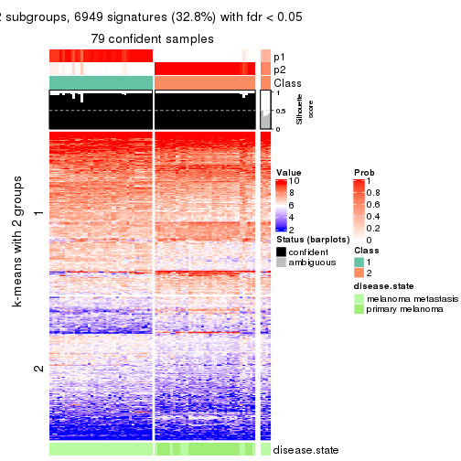
get_signatures(res, k = 3, scale_rows = FALSE)
get_signatures(res, k = 4, scale_rows = FALSE)
get_signatures(res, k = 5, scale_rows = FALSE)
get_signatures(res, k = 6, scale_rows = FALSE)
Compare the overlap of signatures from different k:
compare_signatures(res)
get_signature() returns a data frame invisibly. TO get the list of signatures, the function
call should be assigned to a variable explicitly. In following code, if plot argument is set
to FALSE, no heatmap is plotted while only the differential analysis is performed.
# code only for demonstration
tb = get_signature(res, k = ..., plot = FALSE)
An example of the output of tb is:
#> which_row fdr mean_1 mean_2 scaled_mean_1 scaled_mean_2 km
#> 1 38 0.042760348 8.373488 9.131774 -0.5533452 0.5164555 1
#> 2 40 0.018707592 7.106213 8.469186 -0.6173731 0.5762149 1
#> 3 55 0.019134737 10.221463 11.207825 -0.6159697 0.5749050 1
#> 4 59 0.006059896 5.921854 7.869574 -0.6899429 0.6439467 1
#> 5 60 0.018055526 8.928898 10.211722 -0.6204761 0.5791110 1
#> 6 98 0.009384629 15.714769 14.887706 0.6635654 -0.6193277 2
...
The columns in tb are:
which_row: row indices corresponding to the input matrix.fdr: FDR for the differential test. mean_x: The mean value in group x.scaled_mean_x: The mean value in group x after rows are scaled.km: Row groups if k-means clustering is applied to rows.UMAP plot which shows how samples are separated.
dimension_reduction(res, k = 2, method = "UMAP")
dimension_reduction(res, k = 3, method = "UMAP")
dimension_reduction(res, k = 4, method = "UMAP")

dimension_reduction(res, k = 5, method = "UMAP")
dimension_reduction(res, k = 6, method = "UMAP")
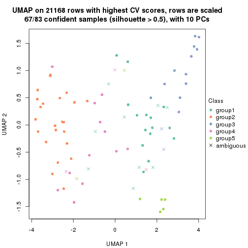
Following heatmap shows how subgroups are split when increasing k:
collect_classes(res)

Test correlation between subgroups and known annotations. If the known annotation is numeric, one-way ANOVA test is applied, and if the known annotation is discrete, chi-squared contingency table test is applied.
test_to_known_factors(res)
#> n disease.state(p) k
#> CV:mclust 79 2.50e-12 2
#> CV:mclust 70 1.64e-12 3
#> CV:mclust 57 8.31e-11 4
#> CV:mclust 65 4.99e-10 5
#> CV:mclust 67 2.01e-10 6
If matrix rows can be associated to genes, consider to use functional_enrichment(res,
...) to perform function enrichment for the signature genes. See this vignette for more detailed explanations.
The object with results only for a single top-value method and a single partition method can be extracted as:
res = res_list["CV", "NMF"]
# you can also extract it by
# res = res_list["CV:NMF"]
A summary of res and all the functions that can be applied to it:
res
#> A 'ConsensusPartition' object with k = 2, 3, 4, 5, 6.
#> On a matrix with 21168 rows and 83 columns.
#> Top rows (1000, 2000, 3000, 4000, 5000) are extracted by 'CV' method.
#> Subgroups are detected by 'NMF' method.
#> Performed in total 1250 partitions by row resampling.
#> Best k for subgroups seems to be 3.
#>
#> Following methods can be applied to this 'ConsensusPartition' object:
#> [1] "cola_report" "collect_classes" "collect_plots"
#> [4] "collect_stats" "colnames" "compare_signatures"
#> [7] "consensus_heatmap" "dimension_reduction" "functional_enrichment"
#> [10] "get_anno_col" "get_anno" "get_classes"
#> [13] "get_consensus" "get_matrix" "get_membership"
#> [16] "get_param" "get_signatures" "get_stats"
#> [19] "is_best_k" "is_stable_k" "membership_heatmap"
#> [22] "ncol" "nrow" "plot_ecdf"
#> [25] "rownames" "select_partition_number" "show"
#> [28] "suggest_best_k" "test_to_known_factors"
collect_plots() function collects all the plots made from res for all k (number of partitions)
into one single page to provide an easy and fast comparison between different k.
collect_plots(res)
The plots are:
k and the heatmap of
predicted classes for each k.k.k.k.All the plots in panels can be made by individual functions and they are plotted later in this section.
select_partition_number() produces several plots showing different
statistics for choosing “optimized” k. There are following statistics:
k;k, the area increased is defined as \(A_k - A_{k-1}\).The detailed explanations of these statistics can be found in the cola vignette.
Generally speaking, lower PAC score, higher mean silhouette score or higher
concordance corresponds to better partition. Rand index and Jaccard index
measure how similar the current partition is compared to partition with k-1.
If they are too similar, we won't accept k is better than k-1.
select_partition_number(res)
The numeric values for all these statistics can be obtained by get_stats().
get_stats(res)
#> k 1-PAC mean_silhouette concordance area_increased Rand Jaccard
#> 2 2 1.000 0.980 0.991 0.4926 0.506 0.506
#> 3 3 0.955 0.944 0.977 0.3005 0.793 0.613
#> 4 4 0.784 0.788 0.895 0.1422 0.882 0.683
#> 5 5 0.733 0.649 0.825 0.0585 0.923 0.730
#> 6 6 0.722 0.640 0.800 0.0392 0.944 0.768
suggest_best_k() suggests the best \(k\) based on these statistics. The rules are as follows:
suggest_best_k(res)
#> [1] 3
#> attr(,"optional")
#> [1] 2
There is also optional best \(k\) = 2 that is worth to check.
Following shows the table of the partitions (You need to click the show/hide
code output link to see it). The membership matrix (columns with name p*)
is inferred by
clue::cl_consensus()
function with the SE method. Basically the value in the membership matrix
represents the probability to belong to a certain group. The finall class
label for an item is determined with the group with highest probability it
belongs to.
In get_classes() function, the entropy is calculated from the membership
matrix and the silhouette score is calculated from the consensus matrix.
cbind(get_classes(res, k = 2), get_membership(res, k = 2))
#> class entropy silhouette p1 p2
#> GSM207929 2 0.000 0.984 0.000 1.000
#> GSM207930 1 0.000 0.996 1.000 0.000
#> GSM207931 2 0.000 0.984 0.000 1.000
#> GSM207932 2 0.000 0.984 0.000 1.000
#> GSM207933 2 0.000 0.984 0.000 1.000
#> GSM207934 2 0.000 0.984 0.000 1.000
#> GSM207935 2 0.000 0.984 0.000 1.000
#> GSM207936 2 0.000 0.984 0.000 1.000
#> GSM207937 2 0.000 0.984 0.000 1.000
#> GSM207938 2 0.000 0.984 0.000 1.000
#> GSM207939 2 0.000 0.984 0.000 1.000
#> GSM207940 2 0.000 0.984 0.000 1.000
#> GSM207941 2 0.000 0.984 0.000 1.000
#> GSM207942 2 0.000 0.984 0.000 1.000
#> GSM207943 2 0.000 0.984 0.000 1.000
#> GSM207944 2 0.000 0.984 0.000 1.000
#> GSM207945 2 0.000 0.984 0.000 1.000
#> GSM207946 2 0.000 0.984 0.000 1.000
#> GSM207947 1 0.000 0.996 1.000 0.000
#> GSM207948 2 0.000 0.984 0.000 1.000
#> GSM207949 2 0.000 0.984 0.000 1.000
#> GSM207950 2 0.000 0.984 0.000 1.000
#> GSM207951 2 0.000 0.984 0.000 1.000
#> GSM207952 2 0.000 0.984 0.000 1.000
#> GSM207953 2 0.000 0.984 0.000 1.000
#> GSM207954 2 0.000 0.984 0.000 1.000
#> GSM207955 2 0.000 0.984 0.000 1.000
#> GSM207956 2 0.000 0.984 0.000 1.000
#> GSM207957 2 0.000 0.984 0.000 1.000
#> GSM207958 2 0.000 0.984 0.000 1.000
#> GSM207959 2 0.000 0.984 0.000 1.000
#> GSM207960 2 0.904 0.537 0.320 0.680
#> GSM207961 1 0.000 0.996 1.000 0.000
#> GSM207962 1 0.000 0.996 1.000 0.000
#> GSM207963 1 0.000 0.996 1.000 0.000
#> GSM207964 1 0.000 0.996 1.000 0.000
#> GSM207965 1 0.000 0.996 1.000 0.000
#> GSM207966 1 0.000 0.996 1.000 0.000
#> GSM207967 2 0.224 0.951 0.036 0.964
#> GSM207968 1 0.000 0.996 1.000 0.000
#> GSM207969 1 0.000 0.996 1.000 0.000
#> GSM207970 1 0.000 0.996 1.000 0.000
#> GSM207971 1 0.000 0.996 1.000 0.000
#> GSM207972 1 0.000 0.996 1.000 0.000
#> GSM207973 1 0.000 0.996 1.000 0.000
#> GSM207974 1 0.000 0.996 1.000 0.000
#> GSM207975 1 0.000 0.996 1.000 0.000
#> GSM207976 1 0.000 0.996 1.000 0.000
#> GSM207977 1 0.000 0.996 1.000 0.000
#> GSM207978 1 0.000 0.996 1.000 0.000
#> GSM207979 1 0.000 0.996 1.000 0.000
#> GSM207980 1 0.000 0.996 1.000 0.000
#> GSM207981 1 0.000 0.996 1.000 0.000
#> GSM207982 1 0.000 0.996 1.000 0.000
#> GSM207983 1 0.000 0.996 1.000 0.000
#> GSM207984 1 0.000 0.996 1.000 0.000
#> GSM207985 1 0.000 0.996 1.000 0.000
#> GSM207986 1 0.000 0.996 1.000 0.000
#> GSM207987 1 0.000 0.996 1.000 0.000
#> GSM207988 1 0.000 0.996 1.000 0.000
#> GSM207989 1 0.000 0.996 1.000 0.000
#> GSM207990 1 0.000 0.996 1.000 0.000
#> GSM207991 1 0.000 0.996 1.000 0.000
#> GSM207992 1 0.000 0.996 1.000 0.000
#> GSM207993 1 0.000 0.996 1.000 0.000
#> GSM207994 2 0.000 0.984 0.000 1.000
#> GSM207995 1 0.000 0.996 1.000 0.000
#> GSM207996 1 0.000 0.996 1.000 0.000
#> GSM207997 1 0.000 0.996 1.000 0.000
#> GSM207998 1 0.722 0.742 0.800 0.200
#> GSM207999 2 0.671 0.787 0.176 0.824
#> GSM208000 1 0.000 0.996 1.000 0.000
#> GSM208001 1 0.000 0.996 1.000 0.000
#> GSM208002 1 0.000 0.996 1.000 0.000
#> GSM208003 1 0.000 0.996 1.000 0.000
#> GSM208004 1 0.000 0.996 1.000 0.000
#> GSM208005 1 0.000 0.996 1.000 0.000
#> GSM208006 2 0.000 0.984 0.000 1.000
#> GSM208007 2 0.000 0.984 0.000 1.000
#> GSM208008 1 0.000 0.996 1.000 0.000
#> GSM208009 1 0.000 0.996 1.000 0.000
#> GSM208010 1 0.000 0.996 1.000 0.000
#> GSM208011 1 0.000 0.996 1.000 0.000
cbind(get_classes(res, k = 3), get_membership(res, k = 3))
#> class entropy silhouette p1 p2 p3
#> GSM207929 2 0.1289 0.9467 0.032 0.968 0.000
#> GSM207930 1 0.0000 0.9755 1.000 0.000 0.000
#> GSM207931 1 0.6302 0.0466 0.520 0.480 0.000
#> GSM207932 2 0.0000 0.9779 0.000 1.000 0.000
#> GSM207933 2 0.0000 0.9779 0.000 1.000 0.000
#> GSM207934 2 0.0000 0.9779 0.000 1.000 0.000
#> GSM207935 2 0.0237 0.9748 0.004 0.996 0.000
#> GSM207936 2 0.0000 0.9779 0.000 1.000 0.000
#> GSM207937 2 0.0000 0.9779 0.000 1.000 0.000
#> GSM207938 2 0.0000 0.9779 0.000 1.000 0.000
#> GSM207939 2 0.0000 0.9779 0.000 1.000 0.000
#> GSM207940 2 0.0000 0.9779 0.000 1.000 0.000
#> GSM207941 2 0.0000 0.9779 0.000 1.000 0.000
#> GSM207942 2 0.0000 0.9779 0.000 1.000 0.000
#> GSM207943 2 0.0000 0.9779 0.000 1.000 0.000
#> GSM207944 2 0.0000 0.9779 0.000 1.000 0.000
#> GSM207945 2 0.0000 0.9779 0.000 1.000 0.000
#> GSM207946 2 0.0000 0.9779 0.000 1.000 0.000
#> GSM207947 1 0.0000 0.9755 1.000 0.000 0.000
#> GSM207948 2 0.0237 0.9749 0.000 0.996 0.004
#> GSM207949 2 0.0000 0.9779 0.000 1.000 0.000
#> GSM207950 2 0.0000 0.9779 0.000 1.000 0.000
#> GSM207951 2 0.0000 0.9779 0.000 1.000 0.000
#> GSM207952 2 0.4121 0.7799 0.168 0.832 0.000
#> GSM207953 2 0.0000 0.9779 0.000 1.000 0.000
#> GSM207954 2 0.0000 0.9779 0.000 1.000 0.000
#> GSM207955 2 0.0000 0.9779 0.000 1.000 0.000
#> GSM207956 2 0.0424 0.9712 0.008 0.992 0.000
#> GSM207957 2 0.0000 0.9779 0.000 1.000 0.000
#> GSM207958 2 0.0000 0.9779 0.000 1.000 0.000
#> GSM207959 2 0.0592 0.9688 0.000 0.988 0.012
#> GSM207960 1 0.0237 0.9716 0.996 0.004 0.000
#> GSM207961 1 0.0000 0.9755 1.000 0.000 0.000
#> GSM207962 1 0.0000 0.9755 1.000 0.000 0.000
#> GSM207963 1 0.0000 0.9755 1.000 0.000 0.000
#> GSM207964 1 0.1163 0.9505 0.972 0.000 0.028
#> GSM207965 1 0.0000 0.9755 1.000 0.000 0.000
#> GSM207966 1 0.0000 0.9755 1.000 0.000 0.000
#> GSM207967 1 0.3619 0.8128 0.864 0.136 0.000
#> GSM207968 1 0.0000 0.9755 1.000 0.000 0.000
#> GSM207969 3 0.3038 0.8912 0.104 0.000 0.896
#> GSM207970 3 0.3192 0.8846 0.112 0.000 0.888
#> GSM207971 3 0.0000 0.9584 0.000 0.000 1.000
#> GSM207972 1 0.0000 0.9755 1.000 0.000 0.000
#> GSM207973 1 0.0000 0.9755 1.000 0.000 0.000
#> GSM207974 1 0.0000 0.9755 1.000 0.000 0.000
#> GSM207975 1 0.0000 0.9755 1.000 0.000 0.000
#> GSM207976 1 0.0424 0.9690 0.992 0.000 0.008
#> GSM207977 3 0.3482 0.8681 0.128 0.000 0.872
#> GSM207978 1 0.0000 0.9755 1.000 0.000 0.000
#> GSM207979 1 0.0000 0.9755 1.000 0.000 0.000
#> GSM207980 3 0.0000 0.9584 0.000 0.000 1.000
#> GSM207981 3 0.0000 0.9584 0.000 0.000 1.000
#> GSM207982 3 0.0000 0.9584 0.000 0.000 1.000
#> GSM207983 3 0.0000 0.9584 0.000 0.000 1.000
#> GSM207984 1 0.0000 0.9755 1.000 0.000 0.000
#> GSM207985 1 0.0000 0.9755 1.000 0.000 0.000
#> GSM207986 3 0.0000 0.9584 0.000 0.000 1.000
#> GSM207987 3 0.0000 0.9584 0.000 0.000 1.000
#> GSM207988 3 0.0000 0.9584 0.000 0.000 1.000
#> GSM207989 3 0.0000 0.9584 0.000 0.000 1.000
#> GSM207990 3 0.0000 0.9584 0.000 0.000 1.000
#> GSM207991 3 0.0000 0.9584 0.000 0.000 1.000
#> GSM207992 3 0.0000 0.9584 0.000 0.000 1.000
#> GSM207993 1 0.1529 0.9374 0.960 0.000 0.040
#> GSM207994 2 0.0000 0.9779 0.000 1.000 0.000
#> GSM207995 1 0.0000 0.9755 1.000 0.000 0.000
#> GSM207996 1 0.0000 0.9755 1.000 0.000 0.000
#> GSM207997 1 0.0000 0.9755 1.000 0.000 0.000
#> GSM207998 1 0.0000 0.9755 1.000 0.000 0.000
#> GSM207999 2 0.5882 0.4617 0.348 0.652 0.000
#> GSM208000 1 0.0000 0.9755 1.000 0.000 0.000
#> GSM208001 1 0.0000 0.9755 1.000 0.000 0.000
#> GSM208002 1 0.0000 0.9755 1.000 0.000 0.000
#> GSM208003 1 0.0000 0.9755 1.000 0.000 0.000
#> GSM208004 1 0.0000 0.9755 1.000 0.000 0.000
#> GSM208005 1 0.0000 0.9755 1.000 0.000 0.000
#> GSM208006 2 0.0000 0.9779 0.000 1.000 0.000
#> GSM208007 2 0.0000 0.9779 0.000 1.000 0.000
#> GSM208008 1 0.0000 0.9755 1.000 0.000 0.000
#> GSM208009 1 0.0000 0.9755 1.000 0.000 0.000
#> GSM208010 1 0.0000 0.9755 1.000 0.000 0.000
#> GSM208011 3 0.5216 0.6828 0.260 0.000 0.740
cbind(get_classes(res, k = 4), get_membership(res, k = 4))
#> class entropy silhouette p1 p2 p3 p4
#> GSM207929 2 0.5105 0.27063 0.004 0.564 0.000 0.432
#> GSM207930 4 0.1557 0.84726 0.056 0.000 0.000 0.944
#> GSM207931 2 0.5408 0.29564 0.016 0.576 0.000 0.408
#> GSM207932 2 0.0188 0.94587 0.004 0.996 0.000 0.000
#> GSM207933 2 0.0188 0.94587 0.004 0.996 0.000 0.000
#> GSM207934 2 0.2704 0.84545 0.124 0.876 0.000 0.000
#> GSM207935 2 0.0707 0.93639 0.000 0.980 0.000 0.020
#> GSM207936 2 0.1576 0.91275 0.004 0.948 0.000 0.048
#> GSM207937 2 0.0188 0.94587 0.004 0.996 0.000 0.000
#> GSM207938 2 0.0000 0.94675 0.000 1.000 0.000 0.000
#> GSM207939 2 0.0000 0.94675 0.000 1.000 0.000 0.000
#> GSM207940 2 0.0000 0.94675 0.000 1.000 0.000 0.000
#> GSM207941 2 0.0657 0.94012 0.004 0.984 0.012 0.000
#> GSM207942 2 0.1297 0.92888 0.016 0.964 0.020 0.000
#> GSM207943 2 0.0000 0.94675 0.000 1.000 0.000 0.000
#> GSM207944 2 0.0000 0.94675 0.000 1.000 0.000 0.000
#> GSM207945 2 0.0000 0.94675 0.000 1.000 0.000 0.000
#> GSM207946 2 0.0000 0.94675 0.000 1.000 0.000 0.000
#> GSM207947 4 0.4477 0.44008 0.312 0.000 0.000 0.688
#> GSM207948 2 0.0921 0.92920 0.000 0.972 0.028 0.000
#> GSM207949 2 0.0000 0.94675 0.000 1.000 0.000 0.000
#> GSM207950 2 0.0188 0.94587 0.004 0.996 0.000 0.000
#> GSM207951 2 0.0000 0.94675 0.000 1.000 0.000 0.000
#> GSM207952 2 0.4745 0.68914 0.208 0.756 0.000 0.036
#> GSM207953 2 0.0000 0.94675 0.000 1.000 0.000 0.000
#> GSM207954 2 0.0000 0.94675 0.000 1.000 0.000 0.000
#> GSM207955 2 0.0000 0.94675 0.000 1.000 0.000 0.000
#> GSM207956 2 0.0188 0.94512 0.000 0.996 0.000 0.004
#> GSM207957 2 0.0000 0.94675 0.000 1.000 0.000 0.000
#> GSM207958 2 0.0188 0.94587 0.004 0.996 0.000 0.000
#> GSM207959 2 0.0336 0.94355 0.000 0.992 0.008 0.000
#> GSM207960 4 0.4753 0.71331 0.128 0.084 0.000 0.788
#> GSM207961 4 0.0921 0.85658 0.028 0.000 0.000 0.972
#> GSM207962 1 0.2216 0.73822 0.908 0.000 0.000 0.092
#> GSM207963 1 0.4898 0.41495 0.584 0.000 0.000 0.416
#> GSM207964 4 0.3858 0.79169 0.100 0.000 0.056 0.844
#> GSM207965 4 0.0592 0.85084 0.016 0.000 0.000 0.984
#> GSM207966 1 0.0707 0.74518 0.980 0.000 0.000 0.020
#> GSM207967 1 0.4824 0.63275 0.780 0.144 0.000 0.076
#> GSM207968 1 0.0592 0.74364 0.984 0.000 0.000 0.016
#> GSM207969 3 0.1042 0.92271 0.008 0.000 0.972 0.020
#> GSM207970 3 0.2593 0.84724 0.104 0.000 0.892 0.004
#> GSM207971 3 0.2760 0.84509 0.000 0.000 0.872 0.128
#> GSM207972 1 0.1557 0.74548 0.944 0.000 0.000 0.056
#> GSM207973 1 0.1867 0.74013 0.928 0.000 0.000 0.072
#> GSM207974 1 0.4994 0.00818 0.520 0.000 0.000 0.480
#> GSM207975 4 0.1022 0.85229 0.032 0.000 0.000 0.968
#> GSM207976 1 0.1004 0.72852 0.972 0.000 0.024 0.004
#> GSM207977 3 0.4855 0.48715 0.004 0.000 0.644 0.352
#> GSM207978 1 0.0188 0.74118 0.996 0.000 0.000 0.004
#> GSM207979 1 0.0469 0.74400 0.988 0.000 0.000 0.012
#> GSM207980 3 0.0188 0.92994 0.000 0.000 0.996 0.004
#> GSM207981 3 0.0000 0.93033 0.000 0.000 1.000 0.000
#> GSM207982 3 0.0000 0.93033 0.000 0.000 1.000 0.000
#> GSM207983 3 0.0000 0.93033 0.000 0.000 1.000 0.000
#> GSM207984 4 0.1302 0.85973 0.044 0.000 0.000 0.956
#> GSM207985 1 0.1389 0.74583 0.952 0.000 0.000 0.048
#> GSM207986 3 0.0000 0.93033 0.000 0.000 1.000 0.000
#> GSM207987 3 0.0000 0.93033 0.000 0.000 1.000 0.000
#> GSM207988 3 0.0469 0.92829 0.000 0.000 0.988 0.012
#> GSM207989 3 0.0188 0.92996 0.000 0.000 0.996 0.004
#> GSM207990 3 0.1118 0.91864 0.000 0.000 0.964 0.036
#> GSM207991 3 0.0000 0.93033 0.000 0.000 1.000 0.000
#> GSM207992 3 0.0592 0.92703 0.000 0.000 0.984 0.016
#> GSM207993 4 0.4605 0.72796 0.108 0.000 0.092 0.800
#> GSM207994 2 0.0000 0.94675 0.000 1.000 0.000 0.000
#> GSM207995 1 0.4776 0.53159 0.624 0.000 0.000 0.376
#> GSM207996 1 0.4697 0.53957 0.644 0.000 0.000 0.356
#> GSM207997 4 0.4855 0.42157 0.400 0.000 0.000 0.600
#> GSM207998 1 0.4761 0.59478 0.664 0.004 0.000 0.332
#> GSM207999 1 0.5028 0.27003 0.596 0.400 0.000 0.004
#> GSM208000 1 0.2868 0.72758 0.864 0.000 0.000 0.136
#> GSM208001 4 0.1637 0.85843 0.060 0.000 0.000 0.940
#> GSM208002 4 0.2216 0.83092 0.092 0.000 0.000 0.908
#> GSM208003 4 0.1474 0.85865 0.052 0.000 0.000 0.948
#> GSM208004 4 0.2149 0.84941 0.088 0.000 0.000 0.912
#> GSM208005 1 0.4989 0.03903 0.528 0.000 0.000 0.472
#> GSM208006 2 0.3583 0.77005 0.180 0.816 0.000 0.004
#> GSM208007 2 0.0000 0.94675 0.000 1.000 0.000 0.000
#> GSM208008 1 0.4331 0.63889 0.712 0.000 0.000 0.288
#> GSM208009 1 0.4250 0.64535 0.724 0.000 0.000 0.276
#> GSM208010 4 0.3024 0.79492 0.148 0.000 0.000 0.852
#> GSM208011 3 0.5018 0.48627 0.332 0.000 0.656 0.012
cbind(get_classes(res, k = 5), get_membership(res, k = 5))
#> class entropy silhouette p1 p2 p3 p4 p5
#> GSM207929 4 0.6787 0.25277 0.204 0.352 0.000 0.436 0.008
#> GSM207930 4 0.3534 0.40798 0.256 0.000 0.000 0.744 0.000
#> GSM207931 2 0.6358 0.21764 0.264 0.540 0.000 0.192 0.004
#> GSM207932 2 0.0324 0.92905 0.000 0.992 0.004 0.004 0.000
#> GSM207933 2 0.0162 0.92901 0.000 0.996 0.000 0.004 0.000
#> GSM207934 2 0.3971 0.76027 0.000 0.800 0.000 0.100 0.100
#> GSM207935 2 0.1310 0.91474 0.020 0.956 0.000 0.024 0.000
#> GSM207936 2 0.4333 0.66943 0.060 0.752 0.000 0.188 0.000
#> GSM207937 2 0.3132 0.78231 0.008 0.820 0.000 0.172 0.000
#> GSM207938 2 0.0000 0.92964 0.000 1.000 0.000 0.000 0.000
#> GSM207939 2 0.0290 0.92958 0.008 0.992 0.000 0.000 0.000
#> GSM207940 2 0.0290 0.92958 0.008 0.992 0.000 0.000 0.000
#> GSM207941 2 0.0912 0.92412 0.000 0.972 0.012 0.016 0.000
#> GSM207942 2 0.2138 0.89651 0.004 0.924 0.024 0.044 0.004
#> GSM207943 2 0.0000 0.92964 0.000 1.000 0.000 0.000 0.000
#> GSM207944 2 0.0162 0.92901 0.000 0.996 0.000 0.004 0.000
#> GSM207945 2 0.0000 0.92964 0.000 1.000 0.000 0.000 0.000
#> GSM207946 2 0.0290 0.92958 0.008 0.992 0.000 0.000 0.000
#> GSM207947 4 0.3238 0.51361 0.136 0.000 0.000 0.836 0.028
#> GSM207948 2 0.1956 0.87304 0.000 0.916 0.076 0.008 0.000
#> GSM207949 2 0.0290 0.92838 0.000 0.992 0.000 0.008 0.000
#> GSM207950 2 0.0510 0.92648 0.000 0.984 0.000 0.016 0.000
#> GSM207951 2 0.0000 0.92964 0.000 1.000 0.000 0.000 0.000
#> GSM207952 4 0.6625 0.21735 0.032 0.388 0.000 0.476 0.104
#> GSM207953 2 0.0000 0.92964 0.000 1.000 0.000 0.000 0.000
#> GSM207954 2 0.0510 0.92816 0.016 0.984 0.000 0.000 0.000
#> GSM207955 2 0.0290 0.92999 0.008 0.992 0.000 0.000 0.000
#> GSM207956 2 0.1836 0.89399 0.032 0.932 0.000 0.036 0.000
#> GSM207957 2 0.0290 0.92958 0.008 0.992 0.000 0.000 0.000
#> GSM207958 2 0.1892 0.88530 0.000 0.916 0.000 0.080 0.004
#> GSM207959 2 0.0510 0.92805 0.016 0.984 0.000 0.000 0.000
#> GSM207960 1 0.5704 0.49954 0.664 0.036 0.000 0.072 0.228
#> GSM207961 1 0.1478 0.71647 0.936 0.000 0.000 0.064 0.000
#> GSM207962 5 0.4384 0.47645 0.016 0.000 0.000 0.324 0.660
#> GSM207963 4 0.6491 -0.00778 0.200 0.000 0.000 0.464 0.336
#> GSM207964 1 0.3292 0.71586 0.844 0.000 0.004 0.032 0.120
#> GSM207965 1 0.1341 0.70757 0.944 0.000 0.000 0.056 0.000
#> GSM207966 5 0.0693 0.64998 0.012 0.000 0.000 0.008 0.980
#> GSM207967 4 0.5399 -0.19287 0.020 0.024 0.000 0.524 0.432
#> GSM207968 5 0.2491 0.65038 0.036 0.000 0.000 0.068 0.896
#> GSM207969 3 0.4511 0.56313 0.260 0.000 0.708 0.012 0.020
#> GSM207970 3 0.6358 0.32995 0.136 0.000 0.556 0.016 0.292
#> GSM207971 1 0.4659 -0.14128 0.500 0.000 0.488 0.012 0.000
#> GSM207972 5 0.2209 0.65327 0.032 0.000 0.000 0.056 0.912
#> GSM207973 5 0.3427 0.46277 0.012 0.000 0.000 0.192 0.796
#> GSM207974 4 0.6161 0.18821 0.132 0.000 0.000 0.444 0.424
#> GSM207975 1 0.4192 0.30666 0.596 0.000 0.000 0.404 0.000
#> GSM207976 5 0.3676 0.54530 0.004 0.000 0.004 0.232 0.760
#> GSM207977 3 0.6642 0.01221 0.168 0.000 0.412 0.412 0.008
#> GSM207978 5 0.0566 0.64907 0.004 0.000 0.000 0.012 0.984
#> GSM207979 5 0.1106 0.64579 0.012 0.000 0.000 0.024 0.964
#> GSM207980 3 0.0693 0.84481 0.012 0.000 0.980 0.008 0.000
#> GSM207981 3 0.0290 0.84681 0.000 0.000 0.992 0.008 0.000
#> GSM207982 3 0.0290 0.84681 0.000 0.000 0.992 0.008 0.000
#> GSM207983 3 0.0579 0.84887 0.008 0.000 0.984 0.008 0.000
#> GSM207984 1 0.3612 0.58472 0.732 0.000 0.000 0.268 0.000
#> GSM207985 5 0.1648 0.63610 0.020 0.000 0.000 0.040 0.940
#> GSM207986 3 0.0798 0.84847 0.016 0.000 0.976 0.008 0.000
#> GSM207987 3 0.0579 0.84887 0.008 0.000 0.984 0.008 0.000
#> GSM207988 3 0.0798 0.84795 0.008 0.000 0.976 0.016 0.000
#> GSM207989 3 0.0693 0.84853 0.008 0.000 0.980 0.012 0.000
#> GSM207990 3 0.2629 0.76743 0.136 0.000 0.860 0.004 0.000
#> GSM207991 3 0.0162 0.84749 0.000 0.000 0.996 0.004 0.000
#> GSM207992 3 0.0798 0.84780 0.016 0.000 0.976 0.008 0.000
#> GSM207993 1 0.3722 0.69119 0.812 0.000 0.004 0.040 0.144
#> GSM207994 2 0.0404 0.92917 0.012 0.988 0.000 0.000 0.000
#> GSM207995 4 0.4226 0.52934 0.140 0.000 0.000 0.776 0.084
#> GSM207996 5 0.6366 0.35643 0.284 0.000 0.000 0.204 0.512
#> GSM207997 5 0.5049 -0.14884 0.480 0.000 0.000 0.032 0.488
#> GSM207998 4 0.4247 0.53316 0.132 0.000 0.000 0.776 0.092
#> GSM207999 5 0.7005 0.20346 0.032 0.280 0.000 0.188 0.500
#> GSM208000 5 0.4808 0.42810 0.032 0.000 0.000 0.348 0.620
#> GSM208001 1 0.3106 0.72345 0.844 0.000 0.000 0.132 0.024
#> GSM208002 1 0.3273 0.68556 0.848 0.000 0.004 0.036 0.112
#> GSM208003 1 0.2645 0.74017 0.888 0.000 0.000 0.068 0.044
#> GSM208004 1 0.3992 0.71757 0.796 0.000 0.000 0.124 0.080
#> GSM208005 4 0.5606 0.28643 0.084 0.000 0.000 0.556 0.360
#> GSM208006 2 0.4777 0.58321 0.012 0.708 0.000 0.040 0.240
#> GSM208007 2 0.0566 0.92856 0.012 0.984 0.000 0.004 0.000
#> GSM208008 4 0.2914 0.49124 0.052 0.000 0.000 0.872 0.076
#> GSM208009 5 0.6385 0.31213 0.200 0.000 0.000 0.296 0.504
#> GSM208010 1 0.4498 0.69318 0.756 0.000 0.000 0.132 0.112
#> GSM208011 3 0.6607 0.30480 0.016 0.000 0.544 0.212 0.228
cbind(get_classes(res, k = 6), get_membership(res, k = 6))
#> class entropy silhouette p1 p2 p3 p4 p5 p6
#> GSM207929 4 0.6565 0.3647 0.012 0.228 0.000 0.552 0.068 0.140
#> GSM207930 4 0.3368 0.5433 0.116 0.000 0.000 0.820 0.004 0.060
#> GSM207931 2 0.5734 0.3700 0.016 0.572 0.000 0.280 0.004 0.128
#> GSM207932 2 0.1223 0.8767 0.008 0.960 0.012 0.016 0.000 0.004
#> GSM207933 2 0.0603 0.8807 0.004 0.980 0.000 0.016 0.000 0.000
#> GSM207934 2 0.5516 0.2930 0.360 0.528 0.000 0.100 0.012 0.000
#> GSM207935 2 0.3900 0.7470 0.012 0.788 0.000 0.084 0.000 0.116
#> GSM207936 2 0.4685 0.5732 0.016 0.676 0.000 0.268 0.024 0.016
#> GSM207937 2 0.3707 0.5954 0.008 0.680 0.000 0.312 0.000 0.000
#> GSM207938 2 0.0000 0.8839 0.000 1.000 0.000 0.000 0.000 0.000
#> GSM207939 2 0.0291 0.8833 0.004 0.992 0.000 0.000 0.000 0.004
#> GSM207940 2 0.0000 0.8839 0.000 1.000 0.000 0.000 0.000 0.000
#> GSM207941 2 0.2772 0.8399 0.036 0.884 0.048 0.028 0.000 0.004
#> GSM207942 2 0.4247 0.7597 0.128 0.780 0.036 0.048 0.000 0.008
#> GSM207943 2 0.0146 0.8835 0.000 0.996 0.000 0.004 0.000 0.000
#> GSM207944 2 0.0000 0.8839 0.000 1.000 0.000 0.000 0.000 0.000
#> GSM207945 2 0.0260 0.8834 0.000 0.992 0.000 0.008 0.000 0.000
#> GSM207946 2 0.0000 0.8839 0.000 1.000 0.000 0.000 0.000 0.000
#> GSM207947 4 0.2345 0.5497 0.040 0.000 0.000 0.904 0.028 0.028
#> GSM207948 2 0.2434 0.8346 0.036 0.892 0.064 0.008 0.000 0.000
#> GSM207949 2 0.0508 0.8826 0.012 0.984 0.000 0.004 0.000 0.000
#> GSM207950 2 0.1829 0.8592 0.024 0.920 0.000 0.056 0.000 0.000
#> GSM207951 2 0.0000 0.8839 0.000 1.000 0.000 0.000 0.000 0.000
#> GSM207952 4 0.5829 0.1480 0.352 0.104 0.000 0.516 0.000 0.028
#> GSM207953 2 0.0000 0.8839 0.000 1.000 0.000 0.000 0.000 0.000
#> GSM207954 2 0.0653 0.8811 0.012 0.980 0.000 0.000 0.004 0.004
#> GSM207955 2 0.0000 0.8839 0.000 1.000 0.000 0.000 0.000 0.000
#> GSM207956 2 0.4757 0.6805 0.120 0.744 0.000 0.080 0.004 0.052
#> GSM207957 2 0.0146 0.8838 0.004 0.996 0.000 0.000 0.000 0.000
#> GSM207958 2 0.2398 0.8313 0.020 0.876 0.000 0.104 0.000 0.000
#> GSM207959 2 0.0622 0.8811 0.008 0.980 0.000 0.000 0.000 0.012
#> GSM207960 5 0.6745 0.0346 0.044 0.048 0.000 0.076 0.424 0.408
#> GSM207961 6 0.1908 0.7154 0.004 0.000 0.000 0.096 0.000 0.900
#> GSM207962 1 0.3833 0.6227 0.804 0.000 0.000 0.044 0.112 0.040
#> GSM207963 1 0.5587 0.3959 0.588 0.000 0.000 0.240 0.012 0.160
#> GSM207964 6 0.2543 0.7246 0.064 0.000 0.004 0.024 0.016 0.892
#> GSM207965 6 0.1757 0.7121 0.012 0.000 0.008 0.052 0.000 0.928
#> GSM207966 5 0.1858 0.6868 0.092 0.000 0.000 0.000 0.904 0.004
#> GSM207967 1 0.4060 0.4590 0.728 0.008 0.000 0.236 0.020 0.008
#> GSM207968 5 0.4911 0.1581 0.412 0.000 0.000 0.000 0.524 0.064
#> GSM207969 3 0.5150 0.4875 0.048 0.000 0.600 0.016 0.008 0.328
#> GSM207970 3 0.6838 0.3795 0.184 0.000 0.512 0.020 0.052 0.232
#> GSM207971 6 0.4326 0.1799 0.008 0.000 0.368 0.016 0.000 0.608
#> GSM207972 5 0.5577 0.3480 0.336 0.000 0.000 0.096 0.548 0.020
#> GSM207973 5 0.1867 0.6860 0.020 0.000 0.000 0.064 0.916 0.000
#> GSM207974 5 0.3932 0.5844 0.024 0.000 0.000 0.192 0.760 0.024
#> GSM207975 4 0.5096 0.0243 0.072 0.000 0.000 0.536 0.004 0.388
#> GSM207976 1 0.5045 0.1702 0.596 0.000 0.008 0.060 0.332 0.004
#> GSM207977 4 0.6919 0.1800 0.048 0.000 0.300 0.428 0.008 0.216
#> GSM207978 5 0.2260 0.6625 0.140 0.000 0.000 0.000 0.860 0.000
#> GSM207979 5 0.1141 0.6992 0.052 0.000 0.000 0.000 0.948 0.000
#> GSM207980 3 0.2202 0.8598 0.052 0.000 0.908 0.012 0.000 0.028
#> GSM207981 3 0.1370 0.8750 0.036 0.000 0.948 0.012 0.000 0.004
#> GSM207982 3 0.1138 0.8788 0.024 0.000 0.960 0.012 0.000 0.004
#> GSM207983 3 0.0146 0.8835 0.000 0.000 0.996 0.004 0.000 0.000
#> GSM207984 6 0.5901 0.2893 0.180 0.000 0.000 0.312 0.008 0.500
#> GSM207985 5 0.1219 0.6995 0.048 0.000 0.000 0.004 0.948 0.000
#> GSM207986 3 0.0837 0.8808 0.004 0.000 0.972 0.004 0.000 0.020
#> GSM207987 3 0.0000 0.8837 0.000 0.000 1.000 0.000 0.000 0.000
#> GSM207988 3 0.0508 0.8816 0.012 0.000 0.984 0.004 0.000 0.000
#> GSM207989 3 0.0551 0.8830 0.008 0.000 0.984 0.004 0.000 0.004
#> GSM207990 3 0.3838 0.6861 0.020 0.000 0.732 0.008 0.000 0.240
#> GSM207991 3 0.1086 0.8827 0.012 0.000 0.964 0.012 0.000 0.012
#> GSM207992 3 0.0363 0.8843 0.000 0.000 0.988 0.000 0.000 0.012
#> GSM207993 6 0.3065 0.7190 0.108 0.000 0.016 0.012 0.012 0.852
#> GSM207994 2 0.0146 0.8839 0.000 0.996 0.000 0.000 0.000 0.004
#> GSM207995 4 0.4051 0.5364 0.152 0.000 0.000 0.772 0.020 0.056
#> GSM207996 1 0.6220 0.3785 0.492 0.000 0.000 0.028 0.172 0.308
#> GSM207997 5 0.3316 0.6434 0.052 0.000 0.000 0.000 0.812 0.136
#> GSM207998 4 0.4808 0.5012 0.184 0.008 0.000 0.720 0.044 0.044
#> GSM207999 1 0.4909 0.5233 0.740 0.136 0.000 0.020 0.056 0.048
#> GSM208000 1 0.4438 0.6259 0.768 0.000 0.000 0.076 0.088 0.068
#> GSM208001 6 0.4896 0.6483 0.168 0.000 0.000 0.132 0.012 0.688
#> GSM208002 6 0.3306 0.6709 0.040 0.000 0.020 0.012 0.076 0.852
#> GSM208003 6 0.3331 0.7214 0.136 0.000 0.000 0.044 0.004 0.816
#> GSM208004 6 0.4573 0.6435 0.200 0.000 0.000 0.072 0.016 0.712
#> GSM208005 5 0.5309 0.2840 0.036 0.000 0.000 0.392 0.532 0.040
#> GSM208006 2 0.4950 0.2498 0.404 0.544 0.000 0.000 0.028 0.024
#> GSM208007 2 0.0547 0.8804 0.000 0.980 0.000 0.000 0.000 0.020
#> GSM208008 4 0.4467 0.1165 0.464 0.000 0.000 0.508 0.000 0.028
#> GSM208009 1 0.5827 0.5102 0.612 0.000 0.000 0.128 0.052 0.208
#> GSM208010 6 0.4201 0.6983 0.104 0.000 0.000 0.132 0.008 0.756
#> GSM208011 1 0.4475 0.4316 0.728 0.000 0.192 0.052 0.000 0.028
Heatmaps for the consensus matrix. It visualizes the probability of two samples to be in a same group.
consensus_heatmap(res, k = 2)
consensus_heatmap(res, k = 3)
consensus_heatmap(res, k = 4)
consensus_heatmap(res, k = 5)
consensus_heatmap(res, k = 6)
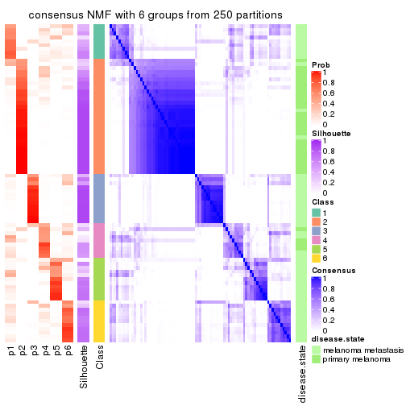
Heatmaps for the membership of samples in all partitions to see how consistent they are:
membership_heatmap(res, k = 2)
membership_heatmap(res, k = 3)
membership_heatmap(res, k = 4)
membership_heatmap(res, k = 5)

membership_heatmap(res, k = 6)
As soon as we have had the classes for columns, we can look for signatures which are significantly different between classes which can be candidate marks for certain classes. Following are the heatmaps for signatures.
Signature heatmaps where rows are scaled:
get_signatures(res, k = 2)
get_signatures(res, k = 3)
get_signatures(res, k = 4)
get_signatures(res, k = 5)
get_signatures(res, k = 6)
Signature heatmaps where rows are not scaled:
get_signatures(res, k = 2, scale_rows = FALSE)
get_signatures(res, k = 3, scale_rows = FALSE)
get_signatures(res, k = 4, scale_rows = FALSE)
get_signatures(res, k = 5, scale_rows = FALSE)
get_signatures(res, k = 6, scale_rows = FALSE)
Compare the overlap of signatures from different k:
compare_signatures(res)
get_signature() returns a data frame invisibly. TO get the list of signatures, the function
call should be assigned to a variable explicitly. In following code, if plot argument is set
to FALSE, no heatmap is plotted while only the differential analysis is performed.
# code only for demonstration
tb = get_signature(res, k = ..., plot = FALSE)
An example of the output of tb is:
#> which_row fdr mean_1 mean_2 scaled_mean_1 scaled_mean_2 km
#> 1 38 0.042760348 8.373488 9.131774 -0.5533452 0.5164555 1
#> 2 40 0.018707592 7.106213 8.469186 -0.6173731 0.5762149 1
#> 3 55 0.019134737 10.221463 11.207825 -0.6159697 0.5749050 1
#> 4 59 0.006059896 5.921854 7.869574 -0.6899429 0.6439467 1
#> 5 60 0.018055526 8.928898 10.211722 -0.6204761 0.5791110 1
#> 6 98 0.009384629 15.714769 14.887706 0.6635654 -0.6193277 2
...
The columns in tb are:
which_row: row indices corresponding to the input matrix.fdr: FDR for the differential test. mean_x: The mean value in group x.scaled_mean_x: The mean value in group x after rows are scaled.km: Row groups if k-means clustering is applied to rows.UMAP plot which shows how samples are separated.
dimension_reduction(res, k = 2, method = "UMAP")
dimension_reduction(res, k = 3, method = "UMAP")
dimension_reduction(res, k = 4, method = "UMAP")
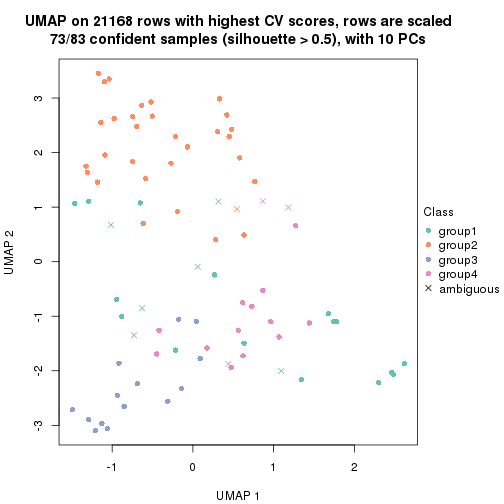
dimension_reduction(res, k = 5, method = "UMAP")

dimension_reduction(res, k = 6, method = "UMAP")
Following heatmap shows how subgroups are split when increasing k:
collect_classes(res)
Test correlation between subgroups and known annotations. If the known annotation is numeric, one-way ANOVA test is applied, and if the known annotation is discrete, chi-squared contingency table test is applied.
test_to_known_factors(res)
#> n disease.state(p) k
#> CV:NMF 83 1.35e-12 2
#> CV:NMF 81 4.86e-14 3
#> CV:NMF 73 1.84e-12 4
#> CV:NMF 61 1.26e-09 5
#> CV:NMF 62 1.15e-09 6
If matrix rows can be associated to genes, consider to use functional_enrichment(res,
...) to perform function enrichment for the signature genes. See this vignette for more detailed explanations.
The object with results only for a single top-value method and a single partition method can be extracted as:
res = res_list["MAD", "hclust"]
# you can also extract it by
# res = res_list["MAD:hclust"]
A summary of res and all the functions that can be applied to it:
res
#> A 'ConsensusPartition' object with k = 2, 3, 4, 5, 6.
#> On a matrix with 21168 rows and 83 columns.
#> Top rows (1000, 2000, 3000, 4000, 5000) are extracted by 'MAD' method.
#> Subgroups are detected by 'hclust' method.
#> Performed in total 1250 partitions by row resampling.
#> Best k for subgroups seems to be 3.
#>
#> Following methods can be applied to this 'ConsensusPartition' object:
#> [1] "cola_report" "collect_classes" "collect_plots"
#> [4] "collect_stats" "colnames" "compare_signatures"
#> [7] "consensus_heatmap" "dimension_reduction" "functional_enrichment"
#> [10] "get_anno_col" "get_anno" "get_classes"
#> [13] "get_consensus" "get_matrix" "get_membership"
#> [16] "get_param" "get_signatures" "get_stats"
#> [19] "is_best_k" "is_stable_k" "membership_heatmap"
#> [22] "ncol" "nrow" "plot_ecdf"
#> [25] "rownames" "select_partition_number" "show"
#> [28] "suggest_best_k" "test_to_known_factors"
collect_plots() function collects all the plots made from res for all k (number of partitions)
into one single page to provide an easy and fast comparison between different k.
collect_plots(res)
The plots are:
k and the heatmap of
predicted classes for each k.k.k.k.All the plots in panels can be made by individual functions and they are plotted later in this section.
select_partition_number() produces several plots showing different
statistics for choosing “optimized” k. There are following statistics:
k;k, the area increased is defined as \(A_k - A_{k-1}\).The detailed explanations of these statistics can be found in the cola vignette.
Generally speaking, lower PAC score, higher mean silhouette score or higher
concordance corresponds to better partition. Rand index and Jaccard index
measure how similar the current partition is compared to partition with k-1.
If they are too similar, we won't accept k is better than k-1.
select_partition_number(res)
The numeric values for all these statistics can be obtained by get_stats().
get_stats(res)
#> k 1-PAC mean_silhouette concordance area_increased Rand Jaccard
#> 2 2 0.341 0.719 0.840 0.4702 0.533 0.533
#> 3 3 0.606 0.811 0.881 0.3768 0.810 0.644
#> 4 4 0.624 0.615 0.802 0.1097 0.959 0.880
#> 5 5 0.656 0.617 0.765 0.0703 0.874 0.610
#> 6 6 0.686 0.641 0.767 0.0359 0.986 0.935
suggest_best_k() suggests the best \(k\) based on these statistics. The rules are as follows:
suggest_best_k(res)
#> [1] 3
Following shows the table of the partitions (You need to click the show/hide
code output link to see it). The membership matrix (columns with name p*)
is inferred by
clue::cl_consensus()
function with the SE method. Basically the value in the membership matrix
represents the probability to belong to a certain group. The finall class
label for an item is determined with the group with highest probability it
belongs to.
In get_classes() function, the entropy is calculated from the membership
matrix and the silhouette score is calculated from the consensus matrix.
cbind(get_classes(res, k = 2), get_membership(res, k = 2))
#> class entropy silhouette p1 p2
#> GSM207929 2 0.9580 0.482 0.380 0.620
#> GSM207930 1 0.0376 0.762 0.996 0.004
#> GSM207931 1 0.7674 0.643 0.776 0.224
#> GSM207932 2 0.0000 0.875 0.000 1.000
#> GSM207933 2 0.2043 0.865 0.032 0.968
#> GSM207934 2 0.9732 0.404 0.404 0.596
#> GSM207935 2 0.9580 0.484 0.380 0.620
#> GSM207936 2 0.8499 0.656 0.276 0.724
#> GSM207937 2 0.9358 0.543 0.352 0.648
#> GSM207938 2 0.1414 0.870 0.020 0.980
#> GSM207939 2 0.0376 0.875 0.004 0.996
#> GSM207940 2 0.0938 0.873 0.012 0.988
#> GSM207941 2 0.0000 0.875 0.000 1.000
#> GSM207942 2 0.0000 0.875 0.000 1.000
#> GSM207943 2 0.0000 0.875 0.000 1.000
#> GSM207944 2 0.0000 0.875 0.000 1.000
#> GSM207945 2 0.4690 0.821 0.100 0.900
#> GSM207946 2 0.0000 0.875 0.000 1.000
#> GSM207947 1 0.0672 0.761 0.992 0.008
#> GSM207948 2 0.0000 0.875 0.000 1.000
#> GSM207949 2 0.0000 0.875 0.000 1.000
#> GSM207950 2 0.0000 0.875 0.000 1.000
#> GSM207951 2 0.0376 0.875 0.004 0.996
#> GSM207952 1 0.6247 0.708 0.844 0.156
#> GSM207953 2 0.0000 0.875 0.000 1.000
#> GSM207954 2 0.0000 0.875 0.000 1.000
#> GSM207955 2 0.0376 0.875 0.004 0.996
#> GSM207956 2 0.8081 0.685 0.248 0.752
#> GSM207957 2 0.0672 0.874 0.008 0.992
#> GSM207958 2 0.5519 0.800 0.128 0.872
#> GSM207959 2 0.0000 0.875 0.000 1.000
#> GSM207960 1 0.6531 0.708 0.832 0.168
#> GSM207961 1 0.6148 0.749 0.848 0.152
#> GSM207962 1 0.0376 0.762 0.996 0.004
#> GSM207963 1 0.0376 0.762 0.996 0.004
#> GSM207964 1 0.9393 0.637 0.644 0.356
#> GSM207965 1 0.9393 0.637 0.644 0.356
#> GSM207966 1 0.0000 0.763 1.000 0.000
#> GSM207967 1 0.6973 0.679 0.812 0.188
#> GSM207968 1 0.5737 0.755 0.864 0.136
#> GSM207969 1 0.9608 0.613 0.616 0.384
#> GSM207970 1 0.9608 0.613 0.616 0.384
#> GSM207971 1 0.9635 0.609 0.612 0.388
#> GSM207972 1 0.5946 0.751 0.856 0.144
#> GSM207973 1 0.0000 0.763 1.000 0.000
#> GSM207974 1 0.0000 0.763 1.000 0.000
#> GSM207975 1 0.3879 0.764 0.924 0.076
#> GSM207976 1 0.6531 0.742 0.832 0.168
#> GSM207977 1 0.9754 0.586 0.592 0.408
#> GSM207978 1 0.0000 0.763 1.000 0.000
#> GSM207979 1 0.0000 0.763 1.000 0.000
#> GSM207980 1 0.9754 0.586 0.592 0.408
#> GSM207981 1 0.9970 0.501 0.532 0.468
#> GSM207982 1 0.9970 0.501 0.532 0.468
#> GSM207983 1 0.9970 0.501 0.532 0.468
#> GSM207984 1 0.3879 0.764 0.924 0.076
#> GSM207985 1 0.0000 0.763 1.000 0.000
#> GSM207986 1 0.9970 0.501 0.532 0.468
#> GSM207987 1 0.9970 0.501 0.532 0.468
#> GSM207988 1 0.9970 0.501 0.532 0.468
#> GSM207989 1 0.9970 0.501 0.532 0.468
#> GSM207990 1 0.9754 0.586 0.592 0.408
#> GSM207991 1 0.9922 0.533 0.552 0.448
#> GSM207992 1 0.9922 0.533 0.552 0.448
#> GSM207993 1 0.9552 0.621 0.624 0.376
#> GSM207994 2 0.2043 0.865 0.032 0.968
#> GSM207995 1 0.0000 0.763 1.000 0.000
#> GSM207996 1 0.0000 0.763 1.000 0.000
#> GSM207997 1 0.8081 0.709 0.752 0.248
#> GSM207998 1 0.2043 0.749 0.968 0.032
#> GSM207999 1 0.0938 0.762 0.988 0.012
#> GSM208000 1 0.0376 0.764 0.996 0.004
#> GSM208001 1 0.0376 0.764 0.996 0.004
#> GSM208002 1 0.8081 0.709 0.752 0.248
#> GSM208003 1 0.6148 0.749 0.848 0.152
#> GSM208004 1 0.0000 0.763 1.000 0.000
#> GSM208005 1 0.1843 0.765 0.972 0.028
#> GSM208006 2 0.8955 0.603 0.312 0.688
#> GSM208007 2 0.8955 0.603 0.312 0.688
#> GSM208008 1 0.0376 0.762 0.996 0.004
#> GSM208009 1 0.0000 0.763 1.000 0.000
#> GSM208010 1 0.1184 0.765 0.984 0.016
#> GSM208011 1 0.9635 0.608 0.612 0.388
cbind(get_classes(res, k = 3), get_membership(res, k = 3))
#> class entropy silhouette p1 p2 p3
#> GSM207929 2 0.7537 0.490 0.332 0.612 0.056
#> GSM207930 1 0.0829 0.879 0.984 0.012 0.004
#> GSM207931 1 0.6402 0.663 0.724 0.236 0.040
#> GSM207932 2 0.2537 0.876 0.000 0.920 0.080
#> GSM207933 2 0.2400 0.864 0.004 0.932 0.064
#> GSM207934 2 0.6750 0.479 0.336 0.640 0.024
#> GSM207935 2 0.7379 0.494 0.336 0.616 0.048
#> GSM207936 2 0.6535 0.678 0.220 0.728 0.052
#> GSM207937 2 0.7364 0.549 0.304 0.640 0.056
#> GSM207938 2 0.2066 0.872 0.000 0.940 0.060
#> GSM207939 2 0.2448 0.876 0.000 0.924 0.076
#> GSM207940 2 0.2261 0.874 0.000 0.932 0.068
#> GSM207941 2 0.2537 0.876 0.000 0.920 0.080
#> GSM207942 2 0.2537 0.876 0.000 0.920 0.080
#> GSM207943 2 0.2537 0.876 0.000 0.920 0.080
#> GSM207944 2 0.2537 0.876 0.000 0.920 0.080
#> GSM207945 2 0.2187 0.826 0.028 0.948 0.024
#> GSM207946 2 0.2537 0.876 0.000 0.920 0.080
#> GSM207947 1 0.2229 0.864 0.944 0.044 0.012
#> GSM207948 2 0.2537 0.876 0.000 0.920 0.080
#> GSM207949 2 0.2537 0.876 0.000 0.920 0.080
#> GSM207950 2 0.2537 0.876 0.000 0.920 0.080
#> GSM207951 2 0.2448 0.876 0.000 0.924 0.076
#> GSM207952 1 0.5253 0.742 0.792 0.188 0.020
#> GSM207953 2 0.2537 0.876 0.000 0.920 0.080
#> GSM207954 2 0.2537 0.876 0.000 0.920 0.080
#> GSM207955 2 0.2448 0.876 0.000 0.924 0.076
#> GSM207956 2 0.5331 0.725 0.184 0.792 0.024
#> GSM207957 2 0.2356 0.875 0.000 0.928 0.072
#> GSM207958 2 0.2982 0.816 0.056 0.920 0.024
#> GSM207959 2 0.2537 0.876 0.000 0.920 0.080
#> GSM207960 1 0.5692 0.745 0.784 0.176 0.040
#> GSM207961 1 0.5497 0.609 0.708 0.000 0.292
#> GSM207962 1 0.0237 0.878 0.996 0.004 0.000
#> GSM207963 1 0.0237 0.878 0.996 0.004 0.000
#> GSM207964 3 0.5016 0.708 0.240 0.000 0.760
#> GSM207965 3 0.5016 0.708 0.240 0.000 0.760
#> GSM207966 1 0.1337 0.877 0.972 0.012 0.016
#> GSM207967 1 0.5860 0.694 0.748 0.228 0.024
#> GSM207968 1 0.5901 0.748 0.768 0.040 0.192
#> GSM207969 3 0.2711 0.898 0.088 0.000 0.912
#> GSM207970 3 0.2711 0.898 0.088 0.000 0.912
#> GSM207971 3 0.2356 0.907 0.072 0.000 0.928
#> GSM207972 1 0.5951 0.746 0.764 0.040 0.196
#> GSM207973 1 0.1337 0.877 0.972 0.012 0.016
#> GSM207974 1 0.1337 0.877 0.972 0.012 0.016
#> GSM207975 1 0.3918 0.803 0.856 0.004 0.140
#> GSM207976 1 0.6488 0.733 0.744 0.064 0.192
#> GSM207977 3 0.2486 0.915 0.060 0.008 0.932
#> GSM207978 1 0.1337 0.877 0.972 0.012 0.016
#> GSM207979 1 0.1337 0.877 0.972 0.012 0.016
#> GSM207980 3 0.2384 0.916 0.056 0.008 0.936
#> GSM207981 3 0.1411 0.912 0.000 0.036 0.964
#> GSM207982 3 0.1411 0.912 0.000 0.036 0.964
#> GSM207983 3 0.1411 0.912 0.000 0.036 0.964
#> GSM207984 1 0.3918 0.803 0.856 0.004 0.140
#> GSM207985 1 0.1337 0.877 0.972 0.012 0.016
#> GSM207986 3 0.1411 0.912 0.000 0.036 0.964
#> GSM207987 3 0.1411 0.912 0.000 0.036 0.964
#> GSM207988 3 0.1411 0.912 0.000 0.036 0.964
#> GSM207989 3 0.1411 0.912 0.000 0.036 0.964
#> GSM207990 3 0.2384 0.916 0.056 0.008 0.936
#> GSM207991 3 0.2031 0.917 0.016 0.032 0.952
#> GSM207992 3 0.2031 0.917 0.016 0.032 0.952
#> GSM207993 3 0.5247 0.738 0.224 0.008 0.768
#> GSM207994 2 0.2384 0.870 0.008 0.936 0.056
#> GSM207995 1 0.0661 0.878 0.988 0.004 0.008
#> GSM207996 1 0.0661 0.878 0.988 0.004 0.008
#> GSM207997 1 0.6625 0.261 0.552 0.008 0.440
#> GSM207998 1 0.1647 0.868 0.960 0.036 0.004
#> GSM207999 1 0.1015 0.879 0.980 0.012 0.008
#> GSM208000 1 0.0661 0.879 0.988 0.004 0.008
#> GSM208001 1 0.0661 0.879 0.988 0.004 0.008
#> GSM208002 1 0.6625 0.261 0.552 0.008 0.440
#> GSM208003 1 0.5497 0.609 0.708 0.000 0.292
#> GSM208004 1 0.0661 0.878 0.988 0.004 0.008
#> GSM208005 1 0.2564 0.873 0.936 0.028 0.036
#> GSM208006 2 0.7909 0.609 0.240 0.648 0.112
#> GSM208007 2 0.7909 0.609 0.240 0.648 0.112
#> GSM208008 1 0.0237 0.878 0.996 0.004 0.000
#> GSM208009 1 0.0661 0.878 0.988 0.004 0.008
#> GSM208010 1 0.2496 0.861 0.928 0.004 0.068
#> GSM208011 3 0.3030 0.899 0.092 0.004 0.904
cbind(get_classes(res, k = 4), get_membership(res, k = 4))
#> class entropy silhouette p1 p2 p3 p4
#> GSM207929 4 0.8710 0.4803 0.224 0.348 0.044 0.384
#> GSM207930 1 0.2760 0.6809 0.872 0.000 0.000 0.128
#> GSM207931 1 0.7416 0.2217 0.536 0.116 0.020 0.328
#> GSM207932 2 0.0469 0.7702 0.000 0.988 0.000 0.012
#> GSM207933 2 0.4313 0.5226 0.004 0.736 0.000 0.260
#> GSM207934 4 0.6796 0.4692 0.152 0.252 0.000 0.596
#> GSM207935 4 0.8661 0.4834 0.228 0.348 0.040 0.384
#> GSM207936 2 0.7972 -0.3663 0.144 0.456 0.028 0.372
#> GSM207937 2 0.8637 -0.5473 0.204 0.376 0.044 0.376
#> GSM207938 2 0.2197 0.7311 0.004 0.916 0.000 0.080
#> GSM207939 2 0.0817 0.7708 0.000 0.976 0.000 0.024
#> GSM207940 2 0.1867 0.7410 0.000 0.928 0.000 0.072
#> GSM207941 2 0.0469 0.7702 0.000 0.988 0.000 0.012
#> GSM207942 2 0.0469 0.7702 0.000 0.988 0.000 0.012
#> GSM207943 2 0.0707 0.7709 0.000 0.980 0.000 0.020
#> GSM207944 2 0.0469 0.7702 0.000 0.988 0.000 0.012
#> GSM207945 2 0.5331 0.3312 0.024 0.644 0.000 0.332
#> GSM207946 2 0.0000 0.7731 0.000 1.000 0.000 0.000
#> GSM207947 1 0.3649 0.6340 0.796 0.000 0.000 0.204
#> GSM207948 2 0.0336 0.7738 0.000 0.992 0.000 0.008
#> GSM207949 2 0.0469 0.7702 0.000 0.988 0.000 0.012
#> GSM207950 2 0.0469 0.7702 0.000 0.988 0.000 0.012
#> GSM207951 2 0.0524 0.7732 0.004 0.988 0.000 0.008
#> GSM207952 1 0.6276 0.3264 0.556 0.064 0.000 0.380
#> GSM207953 2 0.0336 0.7732 0.000 0.992 0.000 0.008
#> GSM207954 2 0.0921 0.7703 0.000 0.972 0.000 0.028
#> GSM207955 2 0.0895 0.7710 0.004 0.976 0.000 0.020
#> GSM207956 4 0.6926 0.1965 0.108 0.432 0.000 0.460
#> GSM207957 2 0.1211 0.7632 0.000 0.960 0.000 0.040
#> GSM207958 2 0.5933 0.0656 0.040 0.552 0.000 0.408
#> GSM207959 2 0.0000 0.7731 0.000 1.000 0.000 0.000
#> GSM207960 1 0.6796 0.3993 0.592 0.072 0.020 0.316
#> GSM207961 1 0.5472 0.5562 0.676 0.000 0.280 0.044
#> GSM207962 1 0.3024 0.6843 0.852 0.000 0.000 0.148
#> GSM207963 1 0.3024 0.6843 0.852 0.000 0.000 0.148
#> GSM207964 3 0.4728 0.6937 0.216 0.000 0.752 0.032
#> GSM207965 3 0.4728 0.6937 0.216 0.000 0.752 0.032
#> GSM207966 1 0.4053 0.6767 0.768 0.000 0.004 0.228
#> GSM207967 4 0.5088 -0.2065 0.424 0.000 0.004 0.572
#> GSM207968 1 0.8082 0.4280 0.456 0.024 0.176 0.344
#> GSM207969 3 0.2670 0.8932 0.072 0.000 0.904 0.024
#> GSM207970 3 0.2670 0.8932 0.072 0.000 0.904 0.024
#> GSM207971 3 0.2363 0.9015 0.056 0.000 0.920 0.024
#> GSM207972 1 0.7909 0.4727 0.492 0.020 0.176 0.312
#> GSM207973 1 0.4053 0.6767 0.768 0.000 0.004 0.228
#> GSM207974 1 0.4053 0.6767 0.768 0.000 0.004 0.228
#> GSM207975 1 0.3895 0.6731 0.832 0.000 0.132 0.036
#> GSM207976 1 0.8166 0.3870 0.416 0.028 0.168 0.388
#> GSM207977 3 0.1807 0.9080 0.052 0.000 0.940 0.008
#> GSM207978 1 0.4053 0.6767 0.768 0.000 0.004 0.228
#> GSM207979 1 0.4053 0.6767 0.768 0.000 0.004 0.228
#> GSM207980 3 0.1722 0.9088 0.048 0.000 0.944 0.008
#> GSM207981 3 0.0592 0.9052 0.000 0.016 0.984 0.000
#> GSM207982 3 0.0592 0.9052 0.000 0.016 0.984 0.000
#> GSM207983 3 0.0592 0.9052 0.000 0.016 0.984 0.000
#> GSM207984 1 0.3895 0.6731 0.832 0.000 0.132 0.036
#> GSM207985 1 0.4053 0.6767 0.768 0.000 0.004 0.228
#> GSM207986 3 0.0592 0.9052 0.000 0.016 0.984 0.000
#> GSM207987 3 0.0592 0.9052 0.000 0.016 0.984 0.000
#> GSM207988 3 0.0592 0.9052 0.000 0.016 0.984 0.000
#> GSM207989 3 0.0592 0.9052 0.000 0.016 0.984 0.000
#> GSM207990 3 0.1722 0.9088 0.048 0.000 0.944 0.008
#> GSM207991 3 0.1059 0.9094 0.016 0.012 0.972 0.000
#> GSM207992 3 0.1059 0.9094 0.016 0.012 0.972 0.000
#> GSM207993 3 0.4253 0.7201 0.208 0.000 0.776 0.016
#> GSM207994 2 0.4295 0.5414 0.008 0.752 0.000 0.240
#> GSM207995 1 0.0376 0.7103 0.992 0.000 0.004 0.004
#> GSM207996 1 0.0376 0.7103 0.992 0.000 0.004 0.004
#> GSM207997 1 0.7131 0.1991 0.456 0.004 0.428 0.112
#> GSM207998 1 0.3257 0.6575 0.844 0.000 0.004 0.152
#> GSM207999 1 0.3903 0.7040 0.824 0.008 0.012 0.156
#> GSM208000 1 0.3577 0.7068 0.832 0.000 0.012 0.156
#> GSM208001 1 0.3428 0.7086 0.844 0.000 0.012 0.144
#> GSM208002 1 0.7131 0.1991 0.456 0.004 0.428 0.112
#> GSM208003 1 0.5472 0.5562 0.676 0.000 0.280 0.044
#> GSM208004 1 0.0524 0.7113 0.988 0.000 0.004 0.008
#> GSM208005 1 0.5010 0.6718 0.700 0.000 0.024 0.276
#> GSM208006 2 0.8805 -0.4074 0.164 0.396 0.072 0.368
#> GSM208007 2 0.8805 -0.4074 0.164 0.396 0.072 0.368
#> GSM208008 1 0.3024 0.6843 0.852 0.000 0.000 0.148
#> GSM208009 1 0.0524 0.7113 0.988 0.000 0.004 0.008
#> GSM208010 1 0.3004 0.7125 0.892 0.000 0.060 0.048
#> GSM208011 3 0.2635 0.8940 0.076 0.000 0.904 0.020
cbind(get_classes(res, k = 5), get_membership(res, k = 5))
#> class entropy silhouette p1 p2 p3 p4 p5
#> GSM207929 4 0.8027 0.681713 0.136 0.248 0.012 0.472 0.132
#> GSM207930 1 0.1981 0.591250 0.920 0.000 0.000 0.064 0.016
#> GSM207931 1 0.7978 0.103631 0.376 0.076 0.004 0.324 0.220
#> GSM207932 2 0.0671 0.874660 0.000 0.980 0.000 0.016 0.004
#> GSM207933 2 0.4015 0.306549 0.000 0.652 0.000 0.348 0.000
#> GSM207934 4 0.4893 0.571921 0.080 0.164 0.000 0.740 0.016
#> GSM207935 4 0.7958 0.683267 0.140 0.248 0.012 0.480 0.120
#> GSM207936 4 0.7591 0.611267 0.088 0.356 0.008 0.440 0.108
#> GSM207937 4 0.8044 0.674495 0.132 0.280 0.012 0.452 0.124
#> GSM207938 2 0.2127 0.798762 0.000 0.892 0.000 0.108 0.000
#> GSM207939 2 0.0794 0.877643 0.000 0.972 0.000 0.028 0.000
#> GSM207940 2 0.1965 0.813756 0.000 0.904 0.000 0.096 0.000
#> GSM207941 2 0.0671 0.874660 0.000 0.980 0.000 0.016 0.004
#> GSM207942 2 0.0671 0.874660 0.000 0.980 0.000 0.016 0.004
#> GSM207943 2 0.0963 0.875550 0.000 0.964 0.000 0.036 0.000
#> GSM207944 2 0.0609 0.877472 0.000 0.980 0.000 0.020 0.000
#> GSM207945 2 0.4538 -0.030183 0.004 0.564 0.000 0.428 0.004
#> GSM207946 2 0.0162 0.883162 0.000 0.996 0.000 0.004 0.000
#> GSM207947 1 0.4064 0.530986 0.792 0.000 0.000 0.116 0.092
#> GSM207948 2 0.0290 0.883372 0.000 0.992 0.000 0.008 0.000
#> GSM207949 2 0.0510 0.876895 0.000 0.984 0.000 0.016 0.000
#> GSM207950 2 0.0404 0.878881 0.000 0.988 0.000 0.012 0.000
#> GSM207951 2 0.0510 0.882044 0.000 0.984 0.000 0.016 0.000
#> GSM207952 1 0.7139 0.216082 0.444 0.032 0.000 0.340 0.184
#> GSM207953 2 0.0290 0.883151 0.000 0.992 0.000 0.008 0.000
#> GSM207954 2 0.1043 0.872216 0.000 0.960 0.000 0.040 0.000
#> GSM207955 2 0.0794 0.878270 0.000 0.972 0.000 0.028 0.000
#> GSM207956 4 0.5264 0.515676 0.052 0.340 0.000 0.604 0.004
#> GSM207957 2 0.1410 0.853436 0.000 0.940 0.000 0.060 0.000
#> GSM207958 4 0.4787 0.302193 0.012 0.456 0.000 0.528 0.004
#> GSM207959 2 0.0162 0.883162 0.000 0.996 0.000 0.004 0.000
#> GSM207960 1 0.7402 0.217962 0.436 0.032 0.004 0.304 0.224
#> GSM207961 1 0.6590 0.246040 0.552 0.000 0.248 0.020 0.180
#> GSM207962 1 0.2592 0.592747 0.892 0.000 0.000 0.056 0.052
#> GSM207963 1 0.2592 0.592747 0.892 0.000 0.000 0.056 0.052
#> GSM207964 3 0.5346 0.697245 0.084 0.000 0.696 0.020 0.200
#> GSM207965 3 0.5346 0.697245 0.084 0.000 0.696 0.020 0.200
#> GSM207966 5 0.4341 0.613228 0.404 0.000 0.004 0.000 0.592
#> GSM207967 4 0.5930 -0.207734 0.372 0.000 0.000 0.516 0.112
#> GSM207968 5 0.7139 0.332060 0.116 0.012 0.072 0.228 0.572
#> GSM207969 3 0.3439 0.822050 0.028 0.000 0.848 0.020 0.104
#> GSM207970 3 0.3439 0.822050 0.028 0.000 0.848 0.020 0.104
#> GSM207971 3 0.3106 0.832165 0.028 0.000 0.872 0.020 0.080
#> GSM207972 5 0.7348 0.260805 0.144 0.008 0.084 0.212 0.552
#> GSM207973 5 0.4367 0.599362 0.416 0.000 0.004 0.000 0.580
#> GSM207974 5 0.4367 0.599362 0.416 0.000 0.004 0.000 0.580
#> GSM207975 1 0.3366 0.532614 0.844 0.000 0.116 0.008 0.032
#> GSM207976 5 0.6559 0.268484 0.056 0.016 0.048 0.308 0.572
#> GSM207977 3 0.2267 0.843163 0.028 0.000 0.916 0.008 0.048
#> GSM207978 5 0.4341 0.613228 0.404 0.000 0.004 0.000 0.592
#> GSM207979 5 0.4341 0.613228 0.404 0.000 0.004 0.000 0.592
#> GSM207980 3 0.2193 0.843950 0.028 0.000 0.920 0.008 0.044
#> GSM207981 3 0.0404 0.841498 0.000 0.012 0.988 0.000 0.000
#> GSM207982 3 0.0404 0.841498 0.000 0.012 0.988 0.000 0.000
#> GSM207983 3 0.0404 0.841498 0.000 0.012 0.988 0.000 0.000
#> GSM207984 1 0.3366 0.532614 0.844 0.000 0.116 0.008 0.032
#> GSM207985 5 0.4341 0.613228 0.404 0.000 0.004 0.000 0.592
#> GSM207986 3 0.0404 0.841498 0.000 0.012 0.988 0.000 0.000
#> GSM207987 3 0.0404 0.841498 0.000 0.012 0.988 0.000 0.000
#> GSM207988 3 0.0404 0.841498 0.000 0.012 0.988 0.000 0.000
#> GSM207989 3 0.0404 0.841498 0.000 0.012 0.988 0.000 0.000
#> GSM207990 3 0.2193 0.843950 0.028 0.000 0.920 0.008 0.044
#> GSM207991 3 0.0867 0.845229 0.008 0.008 0.976 0.000 0.008
#> GSM207992 3 0.0867 0.845229 0.008 0.008 0.976 0.000 0.008
#> GSM207993 3 0.4704 0.732685 0.084 0.000 0.748 0.008 0.160
#> GSM207994 2 0.3932 0.354378 0.000 0.672 0.000 0.328 0.000
#> GSM207995 1 0.2338 0.553720 0.884 0.000 0.004 0.000 0.112
#> GSM207996 1 0.2338 0.553720 0.884 0.000 0.004 0.000 0.112
#> GSM207997 3 0.7799 -0.000627 0.300 0.000 0.376 0.064 0.260
#> GSM207998 1 0.3616 0.563898 0.828 0.000 0.004 0.116 0.052
#> GSM207999 1 0.5105 0.473781 0.704 0.008 0.004 0.068 0.216
#> GSM208000 1 0.4802 0.478724 0.716 0.000 0.004 0.068 0.212
#> GSM208001 1 0.4677 0.500111 0.732 0.000 0.004 0.068 0.196
#> GSM208002 3 0.7799 -0.000627 0.300 0.000 0.376 0.064 0.260
#> GSM208003 1 0.6590 0.246040 0.552 0.000 0.248 0.020 0.180
#> GSM208004 1 0.2722 0.546695 0.868 0.000 0.004 0.008 0.120
#> GSM208005 1 0.6102 0.093498 0.468 0.000 0.004 0.108 0.420
#> GSM208006 4 0.7251 0.636507 0.056 0.296 0.016 0.524 0.108
#> GSM208007 4 0.7251 0.636507 0.056 0.296 0.016 0.524 0.108
#> GSM208008 1 0.2592 0.592747 0.892 0.000 0.000 0.056 0.052
#> GSM208009 1 0.2722 0.546695 0.868 0.000 0.004 0.008 0.120
#> GSM208010 1 0.5023 0.446562 0.708 0.000 0.040 0.028 0.224
#> GSM208011 3 0.3320 0.827493 0.032 0.000 0.856 0.016 0.096
cbind(get_classes(res, k = 6), get_membership(res, k = 6))
#> class entropy silhouette p1 p2 p3 p4 p5 p6
#> GSM207929 4 0.7120 0.55361 0.108 0.172 0.004 0.524 0.016 0.176
#> GSM207930 1 0.3159 0.63727 0.840 0.000 0.000 0.084 0.072 0.004
#> GSM207931 1 0.7574 -0.00251 0.376 0.032 0.000 0.328 0.080 0.184
#> GSM207932 2 0.0508 0.88199 0.000 0.984 0.000 0.012 0.000 0.004
#> GSM207933 2 0.3817 0.03089 0.000 0.568 0.000 0.432 0.000 0.000
#> GSM207934 4 0.4694 0.39765 0.044 0.100 0.000 0.764 0.020 0.072
#> GSM207935 4 0.7024 0.55753 0.112 0.172 0.004 0.532 0.012 0.168
#> GSM207936 4 0.6892 0.61476 0.072 0.280 0.004 0.500 0.012 0.132
#> GSM207937 4 0.7136 0.57708 0.104 0.204 0.004 0.508 0.012 0.168
#> GSM207938 2 0.2178 0.79431 0.000 0.868 0.000 0.132 0.000 0.000
#> GSM207939 2 0.1007 0.88762 0.000 0.956 0.000 0.044 0.000 0.000
#> GSM207940 2 0.2048 0.81070 0.000 0.880 0.000 0.120 0.000 0.000
#> GSM207941 2 0.0508 0.88199 0.000 0.984 0.000 0.012 0.000 0.004
#> GSM207942 2 0.0508 0.88199 0.000 0.984 0.000 0.012 0.000 0.004
#> GSM207943 2 0.0935 0.88223 0.000 0.964 0.000 0.032 0.000 0.004
#> GSM207944 2 0.0603 0.88504 0.000 0.980 0.000 0.016 0.000 0.004
#> GSM207945 4 0.3864 0.19758 0.000 0.480 0.000 0.520 0.000 0.000
#> GSM207946 2 0.0547 0.89386 0.000 0.980 0.000 0.020 0.000 0.000
#> GSM207947 1 0.4255 0.54384 0.756 0.000 0.000 0.148 0.080 0.016
#> GSM207948 2 0.0713 0.89262 0.000 0.972 0.000 0.028 0.000 0.000
#> GSM207949 2 0.0405 0.88421 0.000 0.988 0.000 0.008 0.000 0.004
#> GSM207950 2 0.0291 0.88960 0.000 0.992 0.000 0.004 0.000 0.004
#> GSM207951 2 0.0790 0.89222 0.000 0.968 0.000 0.032 0.000 0.000
#> GSM207952 1 0.7058 0.08141 0.420 0.008 0.000 0.340 0.092 0.140
#> GSM207953 2 0.0547 0.89403 0.000 0.980 0.000 0.020 0.000 0.000
#> GSM207954 2 0.1204 0.88225 0.000 0.944 0.000 0.056 0.000 0.000
#> GSM207955 2 0.1007 0.88834 0.000 0.956 0.000 0.044 0.000 0.000
#> GSM207956 4 0.4150 0.57463 0.024 0.256 0.000 0.708 0.004 0.008
#> GSM207957 2 0.1556 0.85846 0.000 0.920 0.000 0.080 0.000 0.000
#> GSM207958 4 0.3819 0.46279 0.004 0.372 0.000 0.624 0.000 0.000
#> GSM207959 2 0.0547 0.89386 0.000 0.980 0.000 0.020 0.000 0.000
#> GSM207960 1 0.7231 0.08426 0.416 0.008 0.000 0.300 0.092 0.184
#> GSM207961 1 0.7064 0.32046 0.520 0.000 0.176 0.020 0.100 0.184
#> GSM207962 1 0.3414 0.63467 0.840 0.000 0.000 0.040 0.068 0.052
#> GSM207963 1 0.3414 0.63467 0.840 0.000 0.000 0.040 0.068 0.052
#> GSM207964 3 0.6116 0.61142 0.080 0.000 0.608 0.020 0.064 0.228
#> GSM207965 3 0.6116 0.61142 0.080 0.000 0.608 0.020 0.064 0.228
#> GSM207966 5 0.1663 0.99187 0.088 0.000 0.000 0.000 0.912 0.000
#> GSM207967 4 0.6300 -0.25241 0.364 0.000 0.000 0.440 0.028 0.168
#> GSM207968 6 0.5921 0.70382 0.096 0.000 0.044 0.052 0.140 0.668
#> GSM207969 3 0.4149 0.75202 0.040 0.000 0.760 0.020 0.004 0.176
#> GSM207970 3 0.4149 0.75202 0.040 0.000 0.760 0.020 0.004 0.176
#> GSM207971 3 0.3904 0.76553 0.040 0.000 0.788 0.020 0.004 0.148
#> GSM207972 6 0.5196 0.73742 0.096 0.000 0.040 0.068 0.060 0.736
#> GSM207973 5 0.1814 0.98370 0.100 0.000 0.000 0.000 0.900 0.000
#> GSM207974 5 0.1814 0.98370 0.100 0.000 0.000 0.000 0.900 0.000
#> GSM207975 1 0.4370 0.60995 0.792 0.000 0.056 0.020 0.064 0.068
#> GSM207976 6 0.2985 0.72336 0.020 0.000 0.004 0.068 0.040 0.868
#> GSM207977 3 0.3305 0.78025 0.040 0.000 0.836 0.020 0.000 0.104
#> GSM207978 5 0.1663 0.99187 0.088 0.000 0.000 0.000 0.912 0.000
#> GSM207979 5 0.1663 0.99187 0.088 0.000 0.000 0.000 0.912 0.000
#> GSM207980 3 0.3258 0.78107 0.040 0.000 0.840 0.020 0.000 0.100
#> GSM207981 3 0.0405 0.77541 0.000 0.004 0.988 0.000 0.000 0.008
#> GSM207982 3 0.0405 0.77541 0.000 0.004 0.988 0.000 0.000 0.008
#> GSM207983 3 0.0405 0.77541 0.000 0.004 0.988 0.000 0.000 0.008
#> GSM207984 1 0.4370 0.60995 0.792 0.000 0.056 0.020 0.064 0.068
#> GSM207985 5 0.1663 0.99187 0.088 0.000 0.000 0.000 0.912 0.000
#> GSM207986 3 0.0405 0.77541 0.000 0.004 0.988 0.000 0.000 0.008
#> GSM207987 3 0.0405 0.77541 0.000 0.004 0.988 0.000 0.000 0.008
#> GSM207988 3 0.0405 0.77541 0.000 0.004 0.988 0.000 0.000 0.008
#> GSM207989 3 0.0405 0.77541 0.000 0.004 0.988 0.000 0.000 0.008
#> GSM207990 3 0.3258 0.78107 0.040 0.000 0.840 0.020 0.000 0.100
#> GSM207991 3 0.0520 0.78164 0.008 0.000 0.984 0.008 0.000 0.000
#> GSM207992 3 0.0520 0.78164 0.008 0.000 0.984 0.008 0.000 0.000
#> GSM207993 3 0.5730 0.65859 0.080 0.000 0.664 0.020 0.060 0.176
#> GSM207994 2 0.3747 0.16827 0.000 0.604 0.000 0.396 0.000 0.000
#> GSM207995 1 0.3458 0.64081 0.800 0.000 0.004 0.012 0.168 0.016
#> GSM207996 1 0.3458 0.64081 0.800 0.000 0.004 0.012 0.168 0.016
#> GSM207997 3 0.7656 -0.13638 0.284 0.000 0.320 0.036 0.060 0.300
#> GSM207998 1 0.3752 0.61040 0.804 0.000 0.004 0.108 0.076 0.008
#> GSM207999 1 0.4851 0.53889 0.712 0.000 0.000 0.040 0.076 0.172
#> GSM208000 1 0.4735 0.54725 0.720 0.000 0.000 0.032 0.080 0.168
#> GSM208001 1 0.4533 0.56529 0.740 0.000 0.000 0.032 0.072 0.156
#> GSM208002 3 0.7656 -0.13638 0.284 0.000 0.320 0.036 0.060 0.300
#> GSM208003 1 0.7064 0.32046 0.520 0.000 0.176 0.020 0.100 0.184
#> GSM208004 1 0.3733 0.63775 0.784 0.000 0.004 0.012 0.172 0.028
#> GSM208005 1 0.7270 -0.04867 0.368 0.000 0.000 0.100 0.268 0.264
#> GSM208006 4 0.6743 0.54317 0.048 0.244 0.004 0.468 0.000 0.236
#> GSM208007 4 0.6743 0.54317 0.048 0.244 0.004 0.468 0.000 0.236
#> GSM208008 1 0.3414 0.63467 0.840 0.000 0.000 0.040 0.068 0.052
#> GSM208009 1 0.3733 0.63775 0.784 0.000 0.004 0.012 0.172 0.028
#> GSM208010 1 0.5758 0.53893 0.648 0.000 0.028 0.020 0.160 0.144
#> GSM208011 3 0.4157 0.75940 0.040 0.000 0.768 0.020 0.008 0.164
Heatmaps for the consensus matrix. It visualizes the probability of two samples to be in a same group.
consensus_heatmap(res, k = 2)
consensus_heatmap(res, k = 3)
consensus_heatmap(res, k = 4)
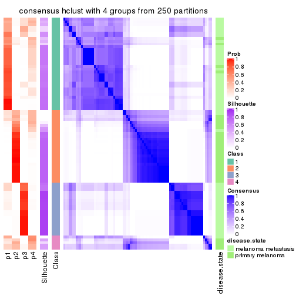
consensus_heatmap(res, k = 5)
consensus_heatmap(res, k = 6)

Heatmaps for the membership of samples in all partitions to see how consistent they are:
membership_heatmap(res, k = 2)
membership_heatmap(res, k = 3)
membership_heatmap(res, k = 4)
membership_heatmap(res, k = 5)
membership_heatmap(res, k = 6)
As soon as we have had the classes for columns, we can look for signatures which are significantly different between classes which can be candidate marks for certain classes. Following are the heatmaps for signatures.
Signature heatmaps where rows are scaled:
get_signatures(res, k = 2)
get_signatures(res, k = 3)
get_signatures(res, k = 4)
get_signatures(res, k = 5)
get_signatures(res, k = 6)
Signature heatmaps where rows are not scaled:
get_signatures(res, k = 2, scale_rows = FALSE)
get_signatures(res, k = 3, scale_rows = FALSE)
get_signatures(res, k = 4, scale_rows = FALSE)
get_signatures(res, k = 5, scale_rows = FALSE)
get_signatures(res, k = 6, scale_rows = FALSE)
Compare the overlap of signatures from different k:
compare_signatures(res)
get_signature() returns a data frame invisibly. TO get the list of signatures, the function
call should be assigned to a variable explicitly. In following code, if plot argument is set
to FALSE, no heatmap is plotted while only the differential analysis is performed.
# code only for demonstration
tb = get_signature(res, k = ..., plot = FALSE)
An example of the output of tb is:
#> which_row fdr mean_1 mean_2 scaled_mean_1 scaled_mean_2 km
#> 1 38 0.042760348 8.373488 9.131774 -0.5533452 0.5164555 1
#> 2 40 0.018707592 7.106213 8.469186 -0.6173731 0.5762149 1
#> 3 55 0.019134737 10.221463 11.207825 -0.6159697 0.5749050 1
#> 4 59 0.006059896 5.921854 7.869574 -0.6899429 0.6439467 1
#> 5 60 0.018055526 8.928898 10.211722 -0.6204761 0.5791110 1
#> 6 98 0.009384629 15.714769 14.887706 0.6635654 -0.6193277 2
...
The columns in tb are:
which_row: row indices corresponding to the input matrix.fdr: FDR for the differential test. mean_x: The mean value in group x.scaled_mean_x: The mean value in group x after rows are scaled.km: Row groups if k-means clustering is applied to rows.UMAP plot which shows how samples are separated.
dimension_reduction(res, k = 2, method = "UMAP")
dimension_reduction(res, k = 3, method = "UMAP")
dimension_reduction(res, k = 4, method = "UMAP")
dimension_reduction(res, k = 5, method = "UMAP")
dimension_reduction(res, k = 6, method = "UMAP")
Following heatmap shows how subgroups are split when increasing k:
collect_classes(res)
Test correlation between subgroups and known annotations. If the known annotation is numeric, one-way ANOVA test is applied, and if the known annotation is discrete, chi-squared contingency table test is applied.
test_to_known_factors(res)
#> n disease.state(p) k
#> MAD:hclust 80 3.29e-12 2
#> MAD:hclust 78 7.62e-12 3
#> MAD:hclust 64 7.09e-12 4
#> MAD:hclust 64 2.50e-10 5
#> MAD:hclust 69 1.16e-10 6
If matrix rows can be associated to genes, consider to use functional_enrichment(res,
...) to perform function enrichment for the signature genes. See this vignette for more detailed explanations.
The object with results only for a single top-value method and a single partition method can be extracted as:
res = res_list["MAD", "kmeans"]
# you can also extract it by
# res = res_list["MAD:kmeans"]
A summary of res and all the functions that can be applied to it:
res
#> A 'ConsensusPartition' object with k = 2, 3, 4, 5, 6.
#> On a matrix with 21168 rows and 83 columns.
#> Top rows (1000, 2000, 3000, 4000, 5000) are extracted by 'MAD' method.
#> Subgroups are detected by 'kmeans' method.
#> Performed in total 1250 partitions by row resampling.
#> Best k for subgroups seems to be 3.
#>
#> Following methods can be applied to this 'ConsensusPartition' object:
#> [1] "cola_report" "collect_classes" "collect_plots"
#> [4] "collect_stats" "colnames" "compare_signatures"
#> [7] "consensus_heatmap" "dimension_reduction" "functional_enrichment"
#> [10] "get_anno_col" "get_anno" "get_classes"
#> [13] "get_consensus" "get_matrix" "get_membership"
#> [16] "get_param" "get_signatures" "get_stats"
#> [19] "is_best_k" "is_stable_k" "membership_heatmap"
#> [22] "ncol" "nrow" "plot_ecdf"
#> [25] "rownames" "select_partition_number" "show"
#> [28] "suggest_best_k" "test_to_known_factors"
collect_plots() function collects all the plots made from res for all k (number of partitions)
into one single page to provide an easy and fast comparison between different k.
collect_plots(res)
The plots are:
k and the heatmap of
predicted classes for each k.k.k.k.All the plots in panels can be made by individual functions and they are plotted later in this section.
select_partition_number() produces several plots showing different
statistics for choosing “optimized” k. There are following statistics:
k;k, the area increased is defined as \(A_k - A_{k-1}\).The detailed explanations of these statistics can be found in the cola vignette.
Generally speaking, lower PAC score, higher mean silhouette score or higher
concordance corresponds to better partition. Rand index and Jaccard index
measure how similar the current partition is compared to partition with k-1.
If they are too similar, we won't accept k is better than k-1.
select_partition_number(res)
The numeric values for all these statistics can be obtained by get_stats().
get_stats(res)
#> k 1-PAC mean_silhouette concordance area_increased Rand Jaccard
#> 2 2 0.751 0.900 0.943 0.4807 0.520 0.520
#> 3 3 0.957 0.967 0.976 0.3530 0.785 0.601
#> 4 4 0.701 0.717 0.810 0.1235 0.889 0.687
#> 5 5 0.688 0.578 0.734 0.0705 0.875 0.568
#> 6 6 0.699 0.566 0.737 0.0411 0.911 0.635
suggest_best_k() suggests the best \(k\) based on these statistics. The rules are as follows:
suggest_best_k(res)
#> [1] 3
Following shows the table of the partitions (You need to click the show/hide
code output link to see it). The membership matrix (columns with name p*)
is inferred by
clue::cl_consensus()
function with the SE method. Basically the value in the membership matrix
represents the probability to belong to a certain group. The finall class
label for an item is determined with the group with highest probability it
belongs to.
In get_classes() function, the entropy is calculated from the membership
matrix and the silhouette score is calculated from the consensus matrix.
cbind(get_classes(res, k = 2), get_membership(res, k = 2))
#> class entropy silhouette p1 p2
#> GSM207929 2 0.7745 0.698 0.228 0.772
#> GSM207930 1 0.3114 0.931 0.944 0.056
#> GSM207931 2 0.8499 0.618 0.276 0.724
#> GSM207932 2 0.0000 0.961 0.000 1.000
#> GSM207933 2 0.0000 0.961 0.000 1.000
#> GSM207934 2 0.2236 0.934 0.036 0.964
#> GSM207935 2 0.6343 0.795 0.160 0.840
#> GSM207936 2 0.0000 0.961 0.000 1.000
#> GSM207937 2 0.0000 0.961 0.000 1.000
#> GSM207938 2 0.0000 0.961 0.000 1.000
#> GSM207939 2 0.0000 0.961 0.000 1.000
#> GSM207940 2 0.0000 0.961 0.000 1.000
#> GSM207941 2 0.0000 0.961 0.000 1.000
#> GSM207942 2 0.0000 0.961 0.000 1.000
#> GSM207943 2 0.0000 0.961 0.000 1.000
#> GSM207944 2 0.0000 0.961 0.000 1.000
#> GSM207945 2 0.0000 0.961 0.000 1.000
#> GSM207946 2 0.0000 0.961 0.000 1.000
#> GSM207947 1 0.3114 0.931 0.944 0.056
#> GSM207948 2 0.0000 0.961 0.000 1.000
#> GSM207949 2 0.0000 0.961 0.000 1.000
#> GSM207950 2 0.0000 0.961 0.000 1.000
#> GSM207951 2 0.0000 0.961 0.000 1.000
#> GSM207952 2 0.8861 0.565 0.304 0.696
#> GSM207953 2 0.0000 0.961 0.000 1.000
#> GSM207954 2 0.0000 0.961 0.000 1.000
#> GSM207955 2 0.0000 0.961 0.000 1.000
#> GSM207956 2 0.1633 0.944 0.024 0.976
#> GSM207957 2 0.0000 0.961 0.000 1.000
#> GSM207958 2 0.0000 0.961 0.000 1.000
#> GSM207959 2 0.0000 0.961 0.000 1.000
#> GSM207960 1 0.7883 0.727 0.764 0.236
#> GSM207961 1 0.0000 0.918 1.000 0.000
#> GSM207962 1 0.3114 0.931 0.944 0.056
#> GSM207963 1 0.3114 0.931 0.944 0.056
#> GSM207964 1 0.0000 0.918 1.000 0.000
#> GSM207965 1 0.0000 0.918 1.000 0.000
#> GSM207966 1 0.3114 0.931 0.944 0.056
#> GSM207967 1 0.5059 0.886 0.888 0.112
#> GSM207968 1 0.3114 0.931 0.944 0.056
#> GSM207969 1 0.0000 0.918 1.000 0.000
#> GSM207970 1 0.0000 0.918 1.000 0.000
#> GSM207971 1 0.0000 0.918 1.000 0.000
#> GSM207972 1 0.3114 0.931 0.944 0.056
#> GSM207973 1 0.3114 0.931 0.944 0.056
#> GSM207974 1 0.3114 0.931 0.944 0.056
#> GSM207975 1 0.0000 0.918 1.000 0.000
#> GSM207976 1 0.3114 0.931 0.944 0.056
#> GSM207977 1 0.0000 0.918 1.000 0.000
#> GSM207978 1 0.3114 0.931 0.944 0.056
#> GSM207979 1 0.3114 0.931 0.944 0.056
#> GSM207980 1 0.0000 0.918 1.000 0.000
#> GSM207981 1 0.8207 0.676 0.744 0.256
#> GSM207982 1 0.8207 0.676 0.744 0.256
#> GSM207983 1 0.8207 0.676 0.744 0.256
#> GSM207984 1 0.0000 0.918 1.000 0.000
#> GSM207985 1 0.3114 0.931 0.944 0.056
#> GSM207986 1 0.8207 0.676 0.744 0.256
#> GSM207987 1 0.8207 0.676 0.744 0.256
#> GSM207988 1 0.8207 0.676 0.744 0.256
#> GSM207989 1 0.8207 0.676 0.744 0.256
#> GSM207990 1 0.0000 0.918 1.000 0.000
#> GSM207991 1 0.0000 0.918 1.000 0.000
#> GSM207992 1 0.0000 0.918 1.000 0.000
#> GSM207993 1 0.0000 0.918 1.000 0.000
#> GSM207994 2 0.0000 0.961 0.000 1.000
#> GSM207995 1 0.3114 0.931 0.944 0.056
#> GSM207996 1 0.3114 0.931 0.944 0.056
#> GSM207997 1 0.3114 0.931 0.944 0.056
#> GSM207998 1 0.3114 0.931 0.944 0.056
#> GSM207999 1 0.5946 0.855 0.856 0.144
#> GSM208000 1 0.3114 0.931 0.944 0.056
#> GSM208001 1 0.3114 0.931 0.944 0.056
#> GSM208002 1 0.3114 0.931 0.944 0.056
#> GSM208003 1 0.1184 0.922 0.984 0.016
#> GSM208004 1 0.3114 0.931 0.944 0.056
#> GSM208005 1 0.3114 0.931 0.944 0.056
#> GSM208006 2 0.1184 0.951 0.016 0.984
#> GSM208007 2 0.0938 0.954 0.012 0.988
#> GSM208008 1 0.3114 0.931 0.944 0.056
#> GSM208009 1 0.3114 0.931 0.944 0.056
#> GSM208010 1 0.2948 0.930 0.948 0.052
#> GSM208011 1 0.0000 0.918 1.000 0.000
cbind(get_classes(res, k = 3), get_membership(res, k = 3))
#> class entropy silhouette p1 p2 p3
#> GSM207929 2 0.2860 0.903 0.084 0.912 0.004
#> GSM207930 1 0.0424 0.986 0.992 0.000 0.008
#> GSM207931 1 0.3349 0.865 0.888 0.108 0.004
#> GSM207932 2 0.0000 0.989 0.000 1.000 0.000
#> GSM207933 2 0.0000 0.989 0.000 1.000 0.000
#> GSM207934 2 0.1129 0.971 0.020 0.976 0.004
#> GSM207935 2 0.2772 0.908 0.080 0.916 0.004
#> GSM207936 2 0.0237 0.987 0.000 0.996 0.004
#> GSM207937 2 0.0237 0.987 0.000 0.996 0.004
#> GSM207938 2 0.0000 0.989 0.000 1.000 0.000
#> GSM207939 2 0.0000 0.989 0.000 1.000 0.000
#> GSM207940 2 0.0000 0.989 0.000 1.000 0.000
#> GSM207941 2 0.0000 0.989 0.000 1.000 0.000
#> GSM207942 2 0.0000 0.989 0.000 1.000 0.000
#> GSM207943 2 0.0000 0.989 0.000 1.000 0.000
#> GSM207944 2 0.0000 0.989 0.000 1.000 0.000
#> GSM207945 2 0.0000 0.989 0.000 1.000 0.000
#> GSM207946 2 0.0000 0.989 0.000 1.000 0.000
#> GSM207947 1 0.0424 0.986 0.992 0.000 0.008
#> GSM207948 2 0.0000 0.989 0.000 1.000 0.000
#> GSM207949 2 0.0000 0.989 0.000 1.000 0.000
#> GSM207950 2 0.0000 0.989 0.000 1.000 0.000
#> GSM207951 2 0.0000 0.989 0.000 1.000 0.000
#> GSM207952 1 0.2096 0.934 0.944 0.052 0.004
#> GSM207953 2 0.0000 0.989 0.000 1.000 0.000
#> GSM207954 2 0.0000 0.989 0.000 1.000 0.000
#> GSM207955 2 0.0000 0.989 0.000 1.000 0.000
#> GSM207956 2 0.1129 0.971 0.020 0.976 0.004
#> GSM207957 2 0.0000 0.989 0.000 1.000 0.000
#> GSM207958 2 0.0237 0.987 0.000 0.996 0.004
#> GSM207959 2 0.0000 0.989 0.000 1.000 0.000
#> GSM207960 1 0.0475 0.984 0.992 0.004 0.004
#> GSM207961 1 0.0237 0.987 0.996 0.000 0.004
#> GSM207962 1 0.0237 0.987 0.996 0.000 0.004
#> GSM207963 1 0.0237 0.987 0.996 0.000 0.004
#> GSM207964 3 0.4291 0.850 0.180 0.000 0.820
#> GSM207965 3 0.4346 0.846 0.184 0.000 0.816
#> GSM207966 1 0.1031 0.972 0.976 0.000 0.024
#> GSM207967 1 0.0475 0.984 0.992 0.004 0.004
#> GSM207968 1 0.0237 0.987 0.996 0.000 0.004
#> GSM207969 3 0.3482 0.901 0.128 0.000 0.872
#> GSM207970 3 0.3482 0.901 0.128 0.000 0.872
#> GSM207971 3 0.1163 0.945 0.028 0.000 0.972
#> GSM207972 1 0.0424 0.986 0.992 0.000 0.008
#> GSM207973 1 0.1031 0.972 0.976 0.000 0.024
#> GSM207974 1 0.1031 0.972 0.976 0.000 0.024
#> GSM207975 1 0.0237 0.987 0.996 0.000 0.004
#> GSM207976 1 0.0424 0.986 0.992 0.000 0.008
#> GSM207977 3 0.1643 0.942 0.044 0.000 0.956
#> GSM207978 1 0.1031 0.972 0.976 0.000 0.024
#> GSM207979 1 0.1031 0.972 0.976 0.000 0.024
#> GSM207980 3 0.1163 0.945 0.028 0.000 0.972
#> GSM207981 3 0.1267 0.940 0.004 0.024 0.972
#> GSM207982 3 0.1267 0.940 0.004 0.024 0.972
#> GSM207983 3 0.1267 0.940 0.004 0.024 0.972
#> GSM207984 1 0.0237 0.987 0.996 0.000 0.004
#> GSM207985 1 0.1031 0.972 0.976 0.000 0.024
#> GSM207986 3 0.1267 0.940 0.004 0.024 0.972
#> GSM207987 3 0.1267 0.940 0.004 0.024 0.972
#> GSM207988 3 0.1267 0.940 0.004 0.024 0.972
#> GSM207989 3 0.1267 0.940 0.004 0.024 0.972
#> GSM207990 3 0.1163 0.945 0.028 0.000 0.972
#> GSM207991 3 0.1163 0.945 0.028 0.000 0.972
#> GSM207992 3 0.1163 0.945 0.028 0.000 0.972
#> GSM207993 3 0.3816 0.884 0.148 0.000 0.852
#> GSM207994 2 0.0000 0.989 0.000 1.000 0.000
#> GSM207995 1 0.0237 0.987 0.996 0.000 0.004
#> GSM207996 1 0.0237 0.987 0.996 0.000 0.004
#> GSM207997 1 0.0237 0.987 0.996 0.000 0.004
#> GSM207998 1 0.0237 0.984 0.996 0.000 0.004
#> GSM207999 1 0.0475 0.984 0.992 0.004 0.004
#> GSM208000 1 0.0237 0.987 0.996 0.000 0.004
#> GSM208001 1 0.0237 0.987 0.996 0.000 0.004
#> GSM208002 1 0.0237 0.987 0.996 0.000 0.004
#> GSM208003 1 0.0237 0.987 0.996 0.000 0.004
#> GSM208004 1 0.0237 0.987 0.996 0.000 0.004
#> GSM208005 1 0.0424 0.986 0.992 0.000 0.008
#> GSM208006 2 0.0983 0.975 0.016 0.980 0.004
#> GSM208007 2 0.0983 0.975 0.016 0.980 0.004
#> GSM208008 1 0.0237 0.987 0.996 0.000 0.004
#> GSM208009 1 0.0237 0.987 0.996 0.000 0.004
#> GSM208010 1 0.0237 0.987 0.996 0.000 0.004
#> GSM208011 3 0.3482 0.901 0.128 0.000 0.872
cbind(get_classes(res, k = 4), get_membership(res, k = 4))
#> class entropy silhouette p1 p2 p3 p4
#> GSM207929 4 0.3450 0.5918 0.156 0.008 0.000 0.836
#> GSM207930 1 0.5535 0.0820 0.560 0.020 0.000 0.420
#> GSM207931 4 0.5498 0.2990 0.404 0.020 0.000 0.576
#> GSM207932 2 0.4961 0.9730 0.000 0.552 0.000 0.448
#> GSM207933 2 0.4998 0.9696 0.000 0.512 0.000 0.488
#> GSM207934 4 0.1867 0.5388 0.072 0.000 0.000 0.928
#> GSM207935 4 0.3351 0.5909 0.148 0.008 0.000 0.844
#> GSM207936 4 0.4877 -0.8030 0.000 0.408 0.000 0.592
#> GSM207937 4 0.0469 0.4162 0.000 0.012 0.000 0.988
#> GSM207938 2 0.4998 0.9696 0.000 0.512 0.000 0.488
#> GSM207939 2 0.4998 0.9696 0.000 0.512 0.000 0.488
#> GSM207940 2 0.4998 0.9696 0.000 0.512 0.000 0.488
#> GSM207941 2 0.4961 0.9730 0.000 0.552 0.000 0.448
#> GSM207942 2 0.4961 0.9730 0.000 0.552 0.000 0.448
#> GSM207943 2 0.4972 0.9756 0.000 0.544 0.000 0.456
#> GSM207944 2 0.4961 0.9730 0.000 0.552 0.000 0.448
#> GSM207945 2 0.4998 0.9696 0.000 0.512 0.000 0.488
#> GSM207946 2 0.4972 0.9756 0.000 0.544 0.000 0.456
#> GSM207947 1 0.5543 0.0653 0.556 0.020 0.000 0.424
#> GSM207948 2 0.4972 0.9756 0.000 0.544 0.000 0.456
#> GSM207949 2 0.4961 0.9730 0.000 0.552 0.000 0.448
#> GSM207950 2 0.4961 0.9730 0.000 0.552 0.000 0.448
#> GSM207951 2 0.4972 0.9756 0.000 0.544 0.000 0.456
#> GSM207952 4 0.5570 0.2237 0.440 0.020 0.000 0.540
#> GSM207953 2 0.4961 0.9730 0.000 0.552 0.000 0.448
#> GSM207954 2 0.4998 0.9696 0.000 0.512 0.000 0.488
#> GSM207955 2 0.4998 0.9696 0.000 0.512 0.000 0.488
#> GSM207956 4 0.1474 0.5186 0.052 0.000 0.000 0.948
#> GSM207957 2 0.4998 0.9696 0.000 0.512 0.000 0.488
#> GSM207958 4 0.2345 0.1657 0.000 0.100 0.000 0.900
#> GSM207959 2 0.4972 0.9756 0.000 0.544 0.000 0.456
#> GSM207960 4 0.5600 0.1518 0.468 0.020 0.000 0.512
#> GSM207961 1 0.3428 0.7388 0.844 0.144 0.012 0.000
#> GSM207962 1 0.1406 0.7805 0.960 0.016 0.000 0.024
#> GSM207963 1 0.1406 0.7805 0.960 0.016 0.000 0.024
#> GSM207964 3 0.6514 0.6907 0.212 0.152 0.636 0.000
#> GSM207965 3 0.6514 0.6907 0.212 0.152 0.636 0.000
#> GSM207966 1 0.4222 0.6856 0.728 0.272 0.000 0.000
#> GSM207967 4 0.5600 0.1498 0.468 0.020 0.000 0.512
#> GSM207968 1 0.3377 0.7698 0.848 0.140 0.012 0.000
#> GSM207969 3 0.5630 0.7913 0.136 0.140 0.724 0.000
#> GSM207970 3 0.5630 0.7913 0.136 0.140 0.724 0.000
#> GSM207971 3 0.3377 0.8497 0.012 0.140 0.848 0.000
#> GSM207972 1 0.7140 0.4890 0.600 0.136 0.016 0.248
#> GSM207973 1 0.4193 0.6858 0.732 0.268 0.000 0.000
#> GSM207974 1 0.4193 0.6858 0.732 0.268 0.000 0.000
#> GSM207975 1 0.4502 0.7273 0.808 0.144 0.012 0.036
#> GSM207976 1 0.7099 0.5022 0.596 0.140 0.012 0.252
#> GSM207977 3 0.4636 0.8313 0.068 0.140 0.792 0.000
#> GSM207978 1 0.4222 0.6856 0.728 0.272 0.000 0.000
#> GSM207979 1 0.4222 0.6856 0.728 0.272 0.000 0.000
#> GSM207980 3 0.1211 0.8681 0.000 0.040 0.960 0.000
#> GSM207981 3 0.0592 0.8683 0.000 0.016 0.984 0.000
#> GSM207982 3 0.0592 0.8683 0.000 0.016 0.984 0.000
#> GSM207983 3 0.0592 0.8683 0.000 0.016 0.984 0.000
#> GSM207984 1 0.4502 0.7273 0.808 0.144 0.012 0.036
#> GSM207985 1 0.4222 0.6856 0.728 0.272 0.000 0.000
#> GSM207986 3 0.0592 0.8683 0.000 0.016 0.984 0.000
#> GSM207987 3 0.0592 0.8683 0.000 0.016 0.984 0.000
#> GSM207988 3 0.0592 0.8683 0.000 0.016 0.984 0.000
#> GSM207989 3 0.0592 0.8683 0.000 0.016 0.984 0.000
#> GSM207990 3 0.2408 0.8598 0.000 0.104 0.896 0.000
#> GSM207991 3 0.0000 0.8697 0.000 0.000 1.000 0.000
#> GSM207992 3 0.0000 0.8697 0.000 0.000 1.000 0.000
#> GSM207993 3 0.6295 0.7212 0.196 0.144 0.660 0.000
#> GSM207994 2 0.4998 0.9696 0.000 0.512 0.000 0.488
#> GSM207995 1 0.0336 0.7846 0.992 0.008 0.000 0.000
#> GSM207996 1 0.0336 0.7846 0.992 0.008 0.000 0.000
#> GSM207997 1 0.3479 0.7673 0.840 0.148 0.012 0.000
#> GSM207998 1 0.4212 0.5727 0.772 0.012 0.000 0.216
#> GSM207999 4 0.5682 0.1808 0.456 0.024 0.000 0.520
#> GSM208000 1 0.0779 0.7844 0.980 0.016 0.000 0.004
#> GSM208001 1 0.0524 0.7842 0.988 0.008 0.000 0.004
#> GSM208002 1 0.3554 0.7553 0.844 0.136 0.020 0.000
#> GSM208003 1 0.3032 0.7538 0.868 0.124 0.008 0.000
#> GSM208004 1 0.0707 0.7861 0.980 0.020 0.000 0.000
#> GSM208005 1 0.5593 0.5900 0.708 0.080 0.000 0.212
#> GSM208006 4 0.1406 0.4592 0.024 0.016 0.000 0.960
#> GSM208007 4 0.0592 0.4089 0.000 0.016 0.000 0.984
#> GSM208008 1 0.1888 0.7734 0.940 0.016 0.000 0.044
#> GSM208009 1 0.0592 0.7845 0.984 0.016 0.000 0.000
#> GSM208010 1 0.1474 0.7827 0.948 0.052 0.000 0.000
#> GSM208011 3 0.5628 0.7927 0.132 0.144 0.724 0.000
cbind(get_classes(res, k = 5), get_membership(res, k = 5))
#> class entropy silhouette p1 p2 p3 p4 p5
#> GSM207929 4 0.2921 0.72829 0.020 0.124 0.000 0.856 0.000
#> GSM207930 4 0.5171 0.44823 0.276 0.000 0.000 0.648 0.076
#> GSM207931 4 0.1869 0.71380 0.036 0.016 0.000 0.936 0.012
#> GSM207932 2 0.2338 0.89865 0.112 0.884 0.000 0.004 0.000
#> GSM207933 2 0.1768 0.89992 0.004 0.924 0.000 0.072 0.000
#> GSM207934 4 0.3164 0.72988 0.044 0.104 0.000 0.852 0.000
#> GSM207935 4 0.2677 0.73035 0.016 0.112 0.000 0.872 0.000
#> GSM207936 2 0.4046 0.55768 0.008 0.696 0.000 0.296 0.000
#> GSM207937 4 0.3596 0.67441 0.012 0.212 0.000 0.776 0.000
#> GSM207938 2 0.1502 0.91082 0.004 0.940 0.000 0.056 0.000
#> GSM207939 2 0.1282 0.91574 0.004 0.952 0.000 0.044 0.000
#> GSM207940 2 0.1282 0.91574 0.004 0.952 0.000 0.044 0.000
#> GSM207941 2 0.2338 0.89865 0.112 0.884 0.000 0.004 0.000
#> GSM207942 2 0.2286 0.89848 0.108 0.888 0.000 0.004 0.000
#> GSM207943 2 0.0865 0.92011 0.024 0.972 0.000 0.004 0.000
#> GSM207944 2 0.1952 0.90895 0.084 0.912 0.000 0.004 0.000
#> GSM207945 2 0.1502 0.91082 0.004 0.940 0.000 0.056 0.000
#> GSM207946 2 0.0290 0.91942 0.000 0.992 0.000 0.008 0.000
#> GSM207947 4 0.4637 0.56637 0.196 0.000 0.000 0.728 0.076
#> GSM207948 2 0.1851 0.90800 0.088 0.912 0.000 0.000 0.000
#> GSM207949 2 0.2233 0.90020 0.104 0.892 0.000 0.004 0.000
#> GSM207950 2 0.2286 0.89848 0.108 0.888 0.000 0.004 0.000
#> GSM207951 2 0.1205 0.91775 0.040 0.956 0.000 0.004 0.000
#> GSM207952 4 0.2582 0.69898 0.080 0.004 0.000 0.892 0.024
#> GSM207953 2 0.1704 0.91113 0.068 0.928 0.000 0.004 0.000
#> GSM207954 2 0.1282 0.91574 0.004 0.952 0.000 0.044 0.000
#> GSM207955 2 0.1502 0.91082 0.004 0.940 0.000 0.056 0.000
#> GSM207956 4 0.3914 0.71675 0.048 0.164 0.000 0.788 0.000
#> GSM207957 2 0.1282 0.91574 0.004 0.952 0.000 0.044 0.000
#> GSM207958 4 0.4575 0.49689 0.024 0.328 0.000 0.648 0.000
#> GSM207959 2 0.1205 0.91775 0.040 0.956 0.000 0.004 0.000
#> GSM207960 4 0.2676 0.68739 0.080 0.000 0.000 0.884 0.036
#> GSM207961 1 0.5233 0.17279 0.636 0.000 0.000 0.076 0.288
#> GSM207962 5 0.6275 0.53322 0.364 0.000 0.000 0.156 0.480
#> GSM207963 5 0.6275 0.53322 0.364 0.000 0.000 0.156 0.480
#> GSM207964 1 0.5706 0.01520 0.528 0.000 0.400 0.008 0.064
#> GSM207965 1 0.5804 0.01794 0.524 0.000 0.400 0.012 0.064
#> GSM207966 5 0.0000 0.53311 0.000 0.000 0.000 0.000 1.000
#> GSM207967 4 0.3724 0.66259 0.184 0.000 0.000 0.788 0.028
#> GSM207968 1 0.5229 -0.02622 0.500 0.000 0.008 0.028 0.464
#> GSM207969 3 0.5602 0.12516 0.464 0.000 0.472 0.004 0.060
#> GSM207970 3 0.5602 0.12516 0.464 0.000 0.472 0.004 0.060
#> GSM207971 3 0.4359 0.42322 0.412 0.000 0.584 0.004 0.000
#> GSM207972 1 0.6442 0.22252 0.524 0.000 0.004 0.272 0.200
#> GSM207973 5 0.0609 0.52435 0.020 0.000 0.000 0.000 0.980
#> GSM207974 5 0.0771 0.52190 0.020 0.000 0.000 0.004 0.976
#> GSM207975 1 0.5192 0.19520 0.664 0.000 0.000 0.092 0.244
#> GSM207976 1 0.6996 0.05457 0.392 0.004 0.004 0.348 0.252
#> GSM207977 3 0.4972 0.31791 0.440 0.000 0.536 0.008 0.016
#> GSM207978 5 0.0000 0.53311 0.000 0.000 0.000 0.000 1.000
#> GSM207979 5 0.0000 0.53311 0.000 0.000 0.000 0.000 1.000
#> GSM207980 3 0.2124 0.76704 0.096 0.000 0.900 0.004 0.000
#> GSM207981 3 0.0000 0.80171 0.000 0.000 1.000 0.000 0.000
#> GSM207982 3 0.0000 0.80171 0.000 0.000 1.000 0.000 0.000
#> GSM207983 3 0.0000 0.80171 0.000 0.000 1.000 0.000 0.000
#> GSM207984 1 0.5192 0.19520 0.664 0.000 0.000 0.092 0.244
#> GSM207985 5 0.0000 0.53311 0.000 0.000 0.000 0.000 1.000
#> GSM207986 3 0.0000 0.80171 0.000 0.000 1.000 0.000 0.000
#> GSM207987 3 0.0000 0.80171 0.000 0.000 1.000 0.000 0.000
#> GSM207988 3 0.0000 0.80171 0.000 0.000 1.000 0.000 0.000
#> GSM207989 3 0.0000 0.80171 0.000 0.000 1.000 0.000 0.000
#> GSM207990 3 0.3491 0.67244 0.228 0.000 0.768 0.004 0.000
#> GSM207991 3 0.0794 0.79756 0.028 0.000 0.972 0.000 0.000
#> GSM207992 3 0.0794 0.79756 0.028 0.000 0.972 0.000 0.000
#> GSM207993 1 0.5607 -0.00973 0.524 0.000 0.408 0.004 0.064
#> GSM207994 2 0.1430 0.91267 0.004 0.944 0.000 0.052 0.000
#> GSM207995 5 0.6068 0.56683 0.308 0.000 0.000 0.148 0.544
#> GSM207996 5 0.5967 0.56656 0.308 0.000 0.000 0.136 0.556
#> GSM207997 1 0.5430 0.01111 0.484 0.000 0.008 0.040 0.468
#> GSM207998 4 0.6586 -0.32952 0.208 0.000 0.000 0.408 0.384
#> GSM207999 4 0.3151 0.68277 0.144 0.000 0.000 0.836 0.020
#> GSM208000 5 0.6091 0.56270 0.336 0.000 0.000 0.140 0.524
#> GSM208001 5 0.6041 0.53776 0.356 0.000 0.000 0.128 0.516
#> GSM208002 1 0.5455 0.19158 0.576 0.000 0.008 0.052 0.364
#> GSM208003 1 0.5571 -0.00766 0.568 0.000 0.000 0.084 0.348
#> GSM208004 5 0.5798 0.52966 0.336 0.000 0.000 0.108 0.556
#> GSM208005 4 0.6759 -0.12159 0.268 0.000 0.000 0.384 0.348
#> GSM208006 4 0.3958 0.69681 0.040 0.184 0.000 0.776 0.000
#> GSM208007 4 0.4150 0.66856 0.036 0.216 0.000 0.748 0.000
#> GSM208008 5 0.6374 0.51642 0.360 0.000 0.000 0.172 0.468
#> GSM208009 5 0.5756 0.56056 0.312 0.000 0.000 0.112 0.576
#> GSM208010 5 0.5891 0.29740 0.432 0.000 0.000 0.100 0.468
#> GSM208011 1 0.5495 -0.23428 0.480 0.000 0.464 0.004 0.052
cbind(get_classes(res, k = 6), get_membership(res, k = 6))
#> class entropy silhouette p1 p2 p3 p4 p5 p6
#> GSM207929 4 0.2007 0.7475 0.012 0.016 0.000 0.924 0.008 0.040
#> GSM207930 4 0.6050 0.1236 0.156 0.000 0.000 0.444 0.016 0.384
#> GSM207931 4 0.2089 0.7450 0.012 0.004 0.000 0.908 0.004 0.072
#> GSM207932 2 0.3420 0.7864 0.000 0.748 0.000 0.000 0.012 0.240
#> GSM207933 2 0.2513 0.8107 0.000 0.852 0.000 0.140 0.000 0.008
#> GSM207934 4 0.2830 0.7392 0.004 0.024 0.000 0.868 0.012 0.092
#> GSM207935 4 0.2198 0.7487 0.008 0.012 0.000 0.908 0.008 0.064
#> GSM207936 2 0.4082 0.2825 0.000 0.560 0.000 0.432 0.004 0.004
#> GSM207937 4 0.2565 0.7245 0.000 0.104 0.000 0.872 0.008 0.016
#> GSM207938 2 0.1863 0.8419 0.000 0.896 0.000 0.104 0.000 0.000
#> GSM207939 2 0.1610 0.8479 0.000 0.916 0.000 0.084 0.000 0.000
#> GSM207940 2 0.1814 0.8438 0.000 0.900 0.000 0.100 0.000 0.000
#> GSM207941 2 0.3420 0.7864 0.000 0.748 0.000 0.000 0.012 0.240
#> GSM207942 2 0.3265 0.7861 0.000 0.748 0.000 0.000 0.004 0.248
#> GSM207943 2 0.2102 0.8507 0.000 0.908 0.000 0.012 0.012 0.068
#> GSM207944 2 0.2653 0.8299 0.000 0.844 0.000 0.000 0.012 0.144
#> GSM207945 2 0.2118 0.8385 0.000 0.888 0.000 0.104 0.000 0.008
#> GSM207946 2 0.0508 0.8537 0.000 0.984 0.000 0.012 0.000 0.004
#> GSM207947 4 0.5399 0.4674 0.092 0.000 0.000 0.576 0.016 0.316
#> GSM207948 2 0.2809 0.8250 0.000 0.824 0.000 0.004 0.004 0.168
#> GSM207949 2 0.3052 0.8016 0.000 0.780 0.000 0.000 0.004 0.216
#> GSM207950 2 0.3265 0.7861 0.000 0.748 0.000 0.000 0.004 0.248
#> GSM207951 2 0.1010 0.8529 0.000 0.960 0.000 0.004 0.000 0.036
#> GSM207952 4 0.3485 0.7032 0.020 0.000 0.000 0.772 0.004 0.204
#> GSM207953 2 0.1910 0.8416 0.000 0.892 0.000 0.000 0.000 0.108
#> GSM207954 2 0.1610 0.8479 0.000 0.916 0.000 0.084 0.000 0.000
#> GSM207955 2 0.1814 0.8423 0.000 0.900 0.000 0.100 0.000 0.000
#> GSM207956 4 0.3249 0.7273 0.000 0.060 0.000 0.840 0.012 0.088
#> GSM207957 2 0.1610 0.8479 0.000 0.916 0.000 0.084 0.000 0.000
#> GSM207958 4 0.4445 0.5978 0.000 0.208 0.000 0.712 0.008 0.072
#> GSM207959 2 0.1082 0.8528 0.000 0.956 0.000 0.004 0.000 0.040
#> GSM207960 4 0.3056 0.7093 0.012 0.000 0.000 0.820 0.008 0.160
#> GSM207961 1 0.3851 0.2374 0.776 0.000 0.000 0.008 0.056 0.160
#> GSM207962 6 0.6860 0.8075 0.308 0.000 0.000 0.048 0.268 0.376
#> GSM207963 6 0.6860 0.8075 0.308 0.000 0.000 0.048 0.268 0.376
#> GSM207964 1 0.2558 0.4609 0.840 0.000 0.156 0.000 0.004 0.000
#> GSM207965 1 0.2558 0.4609 0.840 0.000 0.156 0.000 0.004 0.000
#> GSM207966 5 0.1267 0.9772 0.060 0.000 0.000 0.000 0.940 0.000
#> GSM207967 4 0.4960 0.5602 0.032 0.000 0.000 0.568 0.024 0.376
#> GSM207968 1 0.6137 0.1727 0.552 0.000 0.004 0.028 0.236 0.180
#> GSM207969 1 0.3788 0.2961 0.704 0.000 0.280 0.000 0.004 0.012
#> GSM207970 1 0.3788 0.2961 0.704 0.000 0.280 0.000 0.004 0.012
#> GSM207971 1 0.3862 0.0236 0.608 0.000 0.388 0.000 0.000 0.004
#> GSM207972 1 0.6938 0.1701 0.460 0.000 0.000 0.220 0.088 0.232
#> GSM207973 5 0.2240 0.9543 0.056 0.000 0.000 0.008 0.904 0.032
#> GSM207974 5 0.2177 0.9506 0.052 0.000 0.000 0.008 0.908 0.032
#> GSM207975 1 0.3523 0.2377 0.796 0.000 0.000 0.012 0.028 0.164
#> GSM207976 1 0.7391 0.0441 0.344 0.000 0.000 0.240 0.120 0.296
#> GSM207977 1 0.3847 0.1514 0.644 0.000 0.348 0.000 0.000 0.008
#> GSM207978 5 0.1267 0.9772 0.060 0.000 0.000 0.000 0.940 0.000
#> GSM207979 5 0.1267 0.9772 0.060 0.000 0.000 0.000 0.940 0.000
#> GSM207980 3 0.3398 0.6881 0.252 0.000 0.740 0.000 0.000 0.008
#> GSM207981 3 0.0000 0.8923 0.000 0.000 1.000 0.000 0.000 0.000
#> GSM207982 3 0.0000 0.8923 0.000 0.000 1.000 0.000 0.000 0.000
#> GSM207983 3 0.0547 0.8941 0.000 0.000 0.980 0.000 0.000 0.020
#> GSM207984 1 0.3488 0.2415 0.800 0.000 0.000 0.012 0.028 0.160
#> GSM207985 5 0.1267 0.9772 0.060 0.000 0.000 0.000 0.940 0.000
#> GSM207986 3 0.0547 0.8941 0.000 0.000 0.980 0.000 0.000 0.020
#> GSM207987 3 0.0547 0.8941 0.000 0.000 0.980 0.000 0.000 0.020
#> GSM207988 3 0.0547 0.8941 0.000 0.000 0.980 0.000 0.000 0.020
#> GSM207989 3 0.0547 0.8941 0.000 0.000 0.980 0.000 0.000 0.020
#> GSM207990 3 0.4032 0.4056 0.420 0.000 0.572 0.000 0.000 0.008
#> GSM207991 3 0.1970 0.8504 0.092 0.000 0.900 0.000 0.000 0.008
#> GSM207992 3 0.1970 0.8504 0.092 0.000 0.900 0.000 0.000 0.008
#> GSM207993 1 0.2845 0.4497 0.820 0.000 0.172 0.000 0.004 0.004
#> GSM207994 2 0.1863 0.8419 0.000 0.896 0.000 0.104 0.000 0.000
#> GSM207995 1 0.6818 -0.6512 0.336 0.000 0.000 0.040 0.300 0.324
#> GSM207996 1 0.6753 -0.6131 0.364 0.000 0.000 0.036 0.300 0.300
#> GSM207997 1 0.5649 0.2573 0.620 0.000 0.004 0.024 0.212 0.140
#> GSM207998 6 0.7452 0.5119 0.144 0.000 0.000 0.248 0.240 0.368
#> GSM207999 4 0.4491 0.6545 0.036 0.000 0.000 0.676 0.016 0.272
#> GSM208000 6 0.6878 0.7101 0.300 0.000 0.000 0.048 0.284 0.368
#> GSM208001 1 0.6680 -0.6185 0.380 0.000 0.000 0.032 0.280 0.308
#> GSM208002 1 0.5064 0.3444 0.704 0.000 0.004 0.032 0.112 0.148
#> GSM208003 1 0.4662 0.1198 0.700 0.000 0.000 0.008 0.100 0.192
#> GSM208004 1 0.6448 -0.5091 0.420 0.000 0.000 0.020 0.284 0.276
#> GSM208005 4 0.7468 0.0682 0.224 0.000 0.000 0.336 0.140 0.300
#> GSM208006 4 0.3399 0.7276 0.008 0.080 0.000 0.840 0.012 0.060
#> GSM208007 4 0.3600 0.7206 0.008 0.096 0.000 0.824 0.012 0.060
#> GSM208008 6 0.7027 0.7933 0.308 0.000 0.000 0.068 0.248 0.376
#> GSM208009 1 0.6630 -0.5853 0.380 0.000 0.000 0.028 0.308 0.284
#> GSM208010 1 0.5908 -0.2920 0.520 0.000 0.000 0.008 0.256 0.216
#> GSM208011 1 0.4158 0.3246 0.708 0.000 0.252 0.000 0.012 0.028
Heatmaps for the consensus matrix. It visualizes the probability of two samples to be in a same group.
consensus_heatmap(res, k = 2)
consensus_heatmap(res, k = 3)
consensus_heatmap(res, k = 4)
consensus_heatmap(res, k = 5)
consensus_heatmap(res, k = 6)
Heatmaps for the membership of samples in all partitions to see how consistent they are:
membership_heatmap(res, k = 2)
membership_heatmap(res, k = 3)
membership_heatmap(res, k = 4)
membership_heatmap(res, k = 5)

membership_heatmap(res, k = 6)
As soon as we have had the classes for columns, we can look for signatures which are significantly different between classes which can be candidate marks for certain classes. Following are the heatmaps for signatures.
Signature heatmaps where rows are scaled:
get_signatures(res, k = 2)

get_signatures(res, k = 3)
get_signatures(res, k = 4)
get_signatures(res, k = 5)
get_signatures(res, k = 6)
Signature heatmaps where rows are not scaled:
get_signatures(res, k = 2, scale_rows = FALSE)
get_signatures(res, k = 3, scale_rows = FALSE)
get_signatures(res, k = 4, scale_rows = FALSE)
get_signatures(res, k = 5, scale_rows = FALSE)
get_signatures(res, k = 6, scale_rows = FALSE)
Compare the overlap of signatures from different k:
compare_signatures(res)
get_signature() returns a data frame invisibly. TO get the list of signatures, the function
call should be assigned to a variable explicitly. In following code, if plot argument is set
to FALSE, no heatmap is plotted while only the differential analysis is performed.
# code only for demonstration
tb = get_signature(res, k = ..., plot = FALSE)
An example of the output of tb is:
#> which_row fdr mean_1 mean_2 scaled_mean_1 scaled_mean_2 km
#> 1 38 0.042760348 8.373488 9.131774 -0.5533452 0.5164555 1
#> 2 40 0.018707592 7.106213 8.469186 -0.6173731 0.5762149 1
#> 3 55 0.019134737 10.221463 11.207825 -0.6159697 0.5749050 1
#> 4 59 0.006059896 5.921854 7.869574 -0.6899429 0.6439467 1
#> 5 60 0.018055526 8.928898 10.211722 -0.6204761 0.5791110 1
#> 6 98 0.009384629 15.714769 14.887706 0.6635654 -0.6193277 2
...
The columns in tb are:
which_row: row indices corresponding to the input matrix.fdr: FDR for the differential test. mean_x: The mean value in group x.scaled_mean_x: The mean value in group x after rows are scaled.km: Row groups if k-means clustering is applied to rows.UMAP plot which shows how samples are separated.
dimension_reduction(res, k = 2, method = "UMAP")
dimension_reduction(res, k = 3, method = "UMAP")
dimension_reduction(res, k = 4, method = "UMAP")
dimension_reduction(res, k = 5, method = "UMAP")
dimension_reduction(res, k = 6, method = "UMAP")
Following heatmap shows how subgroups are split when increasing k:
collect_classes(res)
Test correlation between subgroups and known annotations. If the known annotation is numeric, one-way ANOVA test is applied, and if the known annotation is discrete, chi-squared contingency table test is applied.
test_to_known_factors(res)
#> n disease.state(p) k
#> MAD:kmeans 83 1.21e-14 2
#> MAD:kmeans 83 5.72e-13 3
#> MAD:kmeans 70 3.43e-14 4
#> MAD:kmeans 61 1.00e-09 5
#> MAD:kmeans 55 7.38e-08 6
If matrix rows can be associated to genes, consider to use functional_enrichment(res,
...) to perform function enrichment for the signature genes. See this vignette for more detailed explanations.
The object with results only for a single top-value method and a single partition method can be extracted as:
res = res_list["MAD", "skmeans"]
# you can also extract it by
# res = res_list["MAD:skmeans"]
A summary of res and all the functions that can be applied to it:
res
#> A 'ConsensusPartition' object with k = 2, 3, 4, 5, 6.
#> On a matrix with 21168 rows and 83 columns.
#> Top rows (1000, 2000, 3000, 4000, 5000) are extracted by 'MAD' method.
#> Subgroups are detected by 'skmeans' method.
#> Performed in total 1250 partitions by row resampling.
#> Best k for subgroups seems to be 3.
#>
#> Following methods can be applied to this 'ConsensusPartition' object:
#> [1] "cola_report" "collect_classes" "collect_plots"
#> [4] "collect_stats" "colnames" "compare_signatures"
#> [7] "consensus_heatmap" "dimension_reduction" "functional_enrichment"
#> [10] "get_anno_col" "get_anno" "get_classes"
#> [13] "get_consensus" "get_matrix" "get_membership"
#> [16] "get_param" "get_signatures" "get_stats"
#> [19] "is_best_k" "is_stable_k" "membership_heatmap"
#> [22] "ncol" "nrow" "plot_ecdf"
#> [25] "rownames" "select_partition_number" "show"
#> [28] "suggest_best_k" "test_to_known_factors"
collect_plots() function collects all the plots made from res for all k (number of partitions)
into one single page to provide an easy and fast comparison between different k.
collect_plots(res)
The plots are:
k and the heatmap of
predicted classes for each k.k.k.k.All the plots in panels can be made by individual functions and they are plotted later in this section.
select_partition_number() produces several plots showing different
statistics for choosing “optimized” k. There are following statistics:
k;k, the area increased is defined as \(A_k - A_{k-1}\).The detailed explanations of these statistics can be found in the cola vignette.
Generally speaking, lower PAC score, higher mean silhouette score or higher
concordance corresponds to better partition. Rand index and Jaccard index
measure how similar the current partition is compared to partition with k-1.
If they are too similar, we won't accept k is better than k-1.
select_partition_number(res)

The numeric values for all these statistics can be obtained by get_stats().
get_stats(res)
#> k 1-PAC mean_silhouette concordance area_increased Rand Jaccard
#> 2 2 1.000 0.982 0.992 0.4950 0.506 0.506
#> 3 3 0.981 0.942 0.978 0.3415 0.781 0.588
#> 4 4 0.799 0.778 0.869 0.1127 0.887 0.680
#> 5 5 0.723 0.614 0.793 0.0617 0.926 0.731
#> 6 6 0.731 0.579 0.755 0.0377 0.919 0.670
suggest_best_k() suggests the best \(k\) based on these statistics. The rules are as follows:
suggest_best_k(res)
#> [1] 3
#> attr(,"optional")
#> [1] 2
There is also optional best \(k\) = 2 that is worth to check.
Following shows the table of the partitions (You need to click the show/hide
code output link to see it). The membership matrix (columns with name p*)
is inferred by
clue::cl_consensus()
function with the SE method. Basically the value in the membership matrix
represents the probability to belong to a certain group. The finall class
label for an item is determined with the group with highest probability it
belongs to.
In get_classes() function, the entropy is calculated from the membership
matrix and the silhouette score is calculated from the consensus matrix.
cbind(get_classes(res, k = 2), get_membership(res, k = 2))
#> class entropy silhouette p1 p2
#> GSM207929 2 0.0000 0.995 0.000 1.000
#> GSM207930 1 0.0000 0.990 1.000 0.000
#> GSM207931 2 0.0000 0.995 0.000 1.000
#> GSM207932 2 0.0000 0.995 0.000 1.000
#> GSM207933 2 0.0000 0.995 0.000 1.000
#> GSM207934 2 0.0000 0.995 0.000 1.000
#> GSM207935 2 0.0000 0.995 0.000 1.000
#> GSM207936 2 0.0000 0.995 0.000 1.000
#> GSM207937 2 0.0000 0.995 0.000 1.000
#> GSM207938 2 0.0000 0.995 0.000 1.000
#> GSM207939 2 0.0000 0.995 0.000 1.000
#> GSM207940 2 0.0000 0.995 0.000 1.000
#> GSM207941 2 0.0000 0.995 0.000 1.000
#> GSM207942 2 0.0000 0.995 0.000 1.000
#> GSM207943 2 0.0000 0.995 0.000 1.000
#> GSM207944 2 0.0000 0.995 0.000 1.000
#> GSM207945 2 0.0000 0.995 0.000 1.000
#> GSM207946 2 0.0000 0.995 0.000 1.000
#> GSM207947 1 0.8955 0.548 0.688 0.312
#> GSM207948 2 0.0000 0.995 0.000 1.000
#> GSM207949 2 0.0000 0.995 0.000 1.000
#> GSM207950 2 0.0000 0.995 0.000 1.000
#> GSM207951 2 0.0000 0.995 0.000 1.000
#> GSM207952 2 0.0000 0.995 0.000 1.000
#> GSM207953 2 0.0000 0.995 0.000 1.000
#> GSM207954 2 0.0000 0.995 0.000 1.000
#> GSM207955 2 0.0000 0.995 0.000 1.000
#> GSM207956 2 0.0000 0.995 0.000 1.000
#> GSM207957 2 0.0000 0.995 0.000 1.000
#> GSM207958 2 0.0000 0.995 0.000 1.000
#> GSM207959 2 0.0000 0.995 0.000 1.000
#> GSM207960 2 0.0000 0.995 0.000 1.000
#> GSM207961 1 0.0000 0.990 1.000 0.000
#> GSM207962 1 0.0000 0.990 1.000 0.000
#> GSM207963 1 0.0000 0.990 1.000 0.000
#> GSM207964 1 0.0000 0.990 1.000 0.000
#> GSM207965 1 0.0000 0.990 1.000 0.000
#> GSM207966 1 0.0000 0.990 1.000 0.000
#> GSM207967 2 0.6712 0.782 0.176 0.824
#> GSM207968 1 0.0000 0.990 1.000 0.000
#> GSM207969 1 0.0000 0.990 1.000 0.000
#> GSM207970 1 0.0000 0.990 1.000 0.000
#> GSM207971 1 0.0000 0.990 1.000 0.000
#> GSM207972 1 0.0000 0.990 1.000 0.000
#> GSM207973 1 0.0000 0.990 1.000 0.000
#> GSM207974 1 0.0000 0.990 1.000 0.000
#> GSM207975 1 0.0000 0.990 1.000 0.000
#> GSM207976 1 0.5629 0.845 0.868 0.132
#> GSM207977 1 0.0000 0.990 1.000 0.000
#> GSM207978 1 0.0000 0.990 1.000 0.000
#> GSM207979 1 0.0000 0.990 1.000 0.000
#> GSM207980 1 0.0000 0.990 1.000 0.000
#> GSM207981 1 0.0000 0.990 1.000 0.000
#> GSM207982 1 0.0000 0.990 1.000 0.000
#> GSM207983 1 0.0000 0.990 1.000 0.000
#> GSM207984 1 0.0000 0.990 1.000 0.000
#> GSM207985 1 0.0000 0.990 1.000 0.000
#> GSM207986 1 0.0000 0.990 1.000 0.000
#> GSM207987 1 0.0000 0.990 1.000 0.000
#> GSM207988 1 0.0000 0.990 1.000 0.000
#> GSM207989 1 0.0000 0.990 1.000 0.000
#> GSM207990 1 0.0000 0.990 1.000 0.000
#> GSM207991 1 0.0000 0.990 1.000 0.000
#> GSM207992 1 0.0000 0.990 1.000 0.000
#> GSM207993 1 0.0000 0.990 1.000 0.000
#> GSM207994 2 0.0000 0.995 0.000 1.000
#> GSM207995 1 0.0000 0.990 1.000 0.000
#> GSM207996 1 0.0000 0.990 1.000 0.000
#> GSM207997 1 0.0000 0.990 1.000 0.000
#> GSM207998 1 0.0938 0.979 0.988 0.012
#> GSM207999 2 0.0000 0.995 0.000 1.000
#> GSM208000 1 0.0000 0.990 1.000 0.000
#> GSM208001 1 0.0000 0.990 1.000 0.000
#> GSM208002 1 0.0000 0.990 1.000 0.000
#> GSM208003 1 0.0000 0.990 1.000 0.000
#> GSM208004 1 0.0000 0.990 1.000 0.000
#> GSM208005 1 0.0000 0.990 1.000 0.000
#> GSM208006 2 0.0000 0.995 0.000 1.000
#> GSM208007 2 0.0000 0.995 0.000 1.000
#> GSM208008 1 0.0000 0.990 1.000 0.000
#> GSM208009 1 0.0000 0.990 1.000 0.000
#> GSM208010 1 0.0000 0.990 1.000 0.000
#> GSM208011 1 0.0000 0.990 1.000 0.000
cbind(get_classes(res, k = 3), get_membership(res, k = 3))
#> class entropy silhouette p1 p2 p3
#> GSM207929 2 0.0000 0.981 0.000 1.000 0.000
#> GSM207930 1 0.0000 0.973 1.000 0.000 0.000
#> GSM207931 2 0.3267 0.859 0.116 0.884 0.000
#> GSM207932 2 0.0000 0.981 0.000 1.000 0.000
#> GSM207933 2 0.0000 0.981 0.000 1.000 0.000
#> GSM207934 2 0.0000 0.981 0.000 1.000 0.000
#> GSM207935 2 0.0000 0.981 0.000 1.000 0.000
#> GSM207936 2 0.0000 0.981 0.000 1.000 0.000
#> GSM207937 2 0.0000 0.981 0.000 1.000 0.000
#> GSM207938 2 0.0000 0.981 0.000 1.000 0.000
#> GSM207939 2 0.0000 0.981 0.000 1.000 0.000
#> GSM207940 2 0.0000 0.981 0.000 1.000 0.000
#> GSM207941 2 0.0000 0.981 0.000 1.000 0.000
#> GSM207942 2 0.0000 0.981 0.000 1.000 0.000
#> GSM207943 2 0.0000 0.981 0.000 1.000 0.000
#> GSM207944 2 0.0000 0.981 0.000 1.000 0.000
#> GSM207945 2 0.0000 0.981 0.000 1.000 0.000
#> GSM207946 2 0.0000 0.981 0.000 1.000 0.000
#> GSM207947 1 0.0000 0.973 1.000 0.000 0.000
#> GSM207948 2 0.0000 0.981 0.000 1.000 0.000
#> GSM207949 2 0.0000 0.981 0.000 1.000 0.000
#> GSM207950 2 0.0000 0.981 0.000 1.000 0.000
#> GSM207951 2 0.0000 0.981 0.000 1.000 0.000
#> GSM207952 1 0.6008 0.402 0.628 0.372 0.000
#> GSM207953 2 0.0000 0.981 0.000 1.000 0.000
#> GSM207954 2 0.0000 0.981 0.000 1.000 0.000
#> GSM207955 2 0.0000 0.981 0.000 1.000 0.000
#> GSM207956 2 0.0000 0.981 0.000 1.000 0.000
#> GSM207957 2 0.0000 0.981 0.000 1.000 0.000
#> GSM207958 2 0.0000 0.981 0.000 1.000 0.000
#> GSM207959 2 0.0000 0.981 0.000 1.000 0.000
#> GSM207960 1 0.0000 0.973 1.000 0.000 0.000
#> GSM207961 1 0.0000 0.973 1.000 0.000 0.000
#> GSM207962 1 0.0000 0.973 1.000 0.000 0.000
#> GSM207963 1 0.0000 0.973 1.000 0.000 0.000
#> GSM207964 3 0.0000 0.971 0.000 0.000 1.000
#> GSM207965 3 0.0000 0.971 0.000 0.000 1.000
#> GSM207966 1 0.0000 0.973 1.000 0.000 0.000
#> GSM207967 1 0.0000 0.973 1.000 0.000 0.000
#> GSM207968 1 0.5431 0.584 0.716 0.000 0.284
#> GSM207969 3 0.0000 0.971 0.000 0.000 1.000
#> GSM207970 3 0.0000 0.971 0.000 0.000 1.000
#> GSM207971 3 0.0000 0.971 0.000 0.000 1.000
#> GSM207972 3 0.6252 0.182 0.444 0.000 0.556
#> GSM207973 1 0.0000 0.973 1.000 0.000 0.000
#> GSM207974 1 0.0000 0.973 1.000 0.000 0.000
#> GSM207975 1 0.0000 0.973 1.000 0.000 0.000
#> GSM207976 3 0.3695 0.855 0.108 0.012 0.880
#> GSM207977 3 0.0000 0.971 0.000 0.000 1.000
#> GSM207978 1 0.0000 0.973 1.000 0.000 0.000
#> GSM207979 1 0.0000 0.973 1.000 0.000 0.000
#> GSM207980 3 0.0000 0.971 0.000 0.000 1.000
#> GSM207981 3 0.0000 0.971 0.000 0.000 1.000
#> GSM207982 3 0.0000 0.971 0.000 0.000 1.000
#> GSM207983 3 0.0000 0.971 0.000 0.000 1.000
#> GSM207984 1 0.0237 0.970 0.996 0.000 0.004
#> GSM207985 1 0.0000 0.973 1.000 0.000 0.000
#> GSM207986 3 0.0000 0.971 0.000 0.000 1.000
#> GSM207987 3 0.0000 0.971 0.000 0.000 1.000
#> GSM207988 3 0.0000 0.971 0.000 0.000 1.000
#> GSM207989 3 0.0000 0.971 0.000 0.000 1.000
#> GSM207990 3 0.0000 0.971 0.000 0.000 1.000
#> GSM207991 3 0.0000 0.971 0.000 0.000 1.000
#> GSM207992 3 0.0000 0.971 0.000 0.000 1.000
#> GSM207993 3 0.0000 0.971 0.000 0.000 1.000
#> GSM207994 2 0.0000 0.981 0.000 1.000 0.000
#> GSM207995 1 0.0000 0.973 1.000 0.000 0.000
#> GSM207996 1 0.0000 0.973 1.000 0.000 0.000
#> GSM207997 1 0.0000 0.973 1.000 0.000 0.000
#> GSM207998 1 0.0000 0.973 1.000 0.000 0.000
#> GSM207999 2 0.6244 0.205 0.440 0.560 0.000
#> GSM208000 1 0.0000 0.973 1.000 0.000 0.000
#> GSM208001 1 0.0000 0.973 1.000 0.000 0.000
#> GSM208002 1 0.1753 0.927 0.952 0.000 0.048
#> GSM208003 1 0.0000 0.973 1.000 0.000 0.000
#> GSM208004 1 0.0000 0.973 1.000 0.000 0.000
#> GSM208005 1 0.0000 0.973 1.000 0.000 0.000
#> GSM208006 2 0.0000 0.981 0.000 1.000 0.000
#> GSM208007 2 0.0000 0.981 0.000 1.000 0.000
#> GSM208008 1 0.0000 0.973 1.000 0.000 0.000
#> GSM208009 1 0.0000 0.973 1.000 0.000 0.000
#> GSM208010 1 0.0000 0.973 1.000 0.000 0.000
#> GSM208011 3 0.0000 0.971 0.000 0.000 1.000
cbind(get_classes(res, k = 4), get_membership(res, k = 4))
#> class entropy silhouette p1 p2 p3 p4
#> GSM207929 4 0.5607 0.114 0.020 0.488 0.000 0.492
#> GSM207930 4 0.4999 0.185 0.492 0.000 0.000 0.508
#> GSM207931 4 0.5874 0.579 0.124 0.176 0.000 0.700
#> GSM207932 2 0.0000 0.961 0.000 1.000 0.000 0.000
#> GSM207933 2 0.0000 0.961 0.000 1.000 0.000 0.000
#> GSM207934 4 0.4837 0.442 0.004 0.348 0.000 0.648
#> GSM207935 4 0.5237 0.432 0.016 0.356 0.000 0.628
#> GSM207936 2 0.1302 0.921 0.000 0.956 0.000 0.044
#> GSM207937 2 0.3266 0.762 0.000 0.832 0.000 0.168
#> GSM207938 2 0.0000 0.961 0.000 1.000 0.000 0.000
#> GSM207939 2 0.0000 0.961 0.000 1.000 0.000 0.000
#> GSM207940 2 0.0000 0.961 0.000 1.000 0.000 0.000
#> GSM207941 2 0.0000 0.961 0.000 1.000 0.000 0.000
#> GSM207942 2 0.0000 0.961 0.000 1.000 0.000 0.000
#> GSM207943 2 0.0000 0.961 0.000 1.000 0.000 0.000
#> GSM207944 2 0.0000 0.961 0.000 1.000 0.000 0.000
#> GSM207945 2 0.0000 0.961 0.000 1.000 0.000 0.000
#> GSM207946 2 0.0000 0.961 0.000 1.000 0.000 0.000
#> GSM207947 4 0.4907 0.341 0.420 0.000 0.000 0.580
#> GSM207948 2 0.0000 0.961 0.000 1.000 0.000 0.000
#> GSM207949 2 0.0000 0.961 0.000 1.000 0.000 0.000
#> GSM207950 2 0.0000 0.961 0.000 1.000 0.000 0.000
#> GSM207951 2 0.0000 0.961 0.000 1.000 0.000 0.000
#> GSM207952 4 0.4995 0.548 0.248 0.032 0.000 0.720
#> GSM207953 2 0.0000 0.961 0.000 1.000 0.000 0.000
#> GSM207954 2 0.0000 0.961 0.000 1.000 0.000 0.000
#> GSM207955 2 0.0000 0.961 0.000 1.000 0.000 0.000
#> GSM207956 4 0.5511 0.144 0.016 0.484 0.000 0.500
#> GSM207957 2 0.0000 0.961 0.000 1.000 0.000 0.000
#> GSM207958 2 0.4804 0.240 0.000 0.616 0.000 0.384
#> GSM207959 2 0.0000 0.961 0.000 1.000 0.000 0.000
#> GSM207960 4 0.4679 0.440 0.352 0.000 0.000 0.648
#> GSM207961 1 0.2011 0.754 0.920 0.000 0.000 0.080
#> GSM207962 1 0.2921 0.708 0.860 0.000 0.000 0.140
#> GSM207963 1 0.2868 0.708 0.864 0.000 0.000 0.136
#> GSM207964 3 0.2363 0.942 0.024 0.000 0.920 0.056
#> GSM207965 3 0.2466 0.938 0.028 0.000 0.916 0.056
#> GSM207966 1 0.4040 0.742 0.752 0.000 0.000 0.248
#> GSM207967 4 0.4406 0.502 0.300 0.000 0.000 0.700
#> GSM207968 1 0.5339 0.711 0.688 0.000 0.040 0.272
#> GSM207969 3 0.1677 0.962 0.012 0.000 0.948 0.040
#> GSM207970 3 0.1798 0.960 0.016 0.000 0.944 0.040
#> GSM207971 3 0.0817 0.974 0.000 0.000 0.976 0.024
#> GSM207972 1 0.7502 0.389 0.456 0.000 0.188 0.356
#> GSM207973 1 0.4040 0.742 0.752 0.000 0.000 0.248
#> GSM207974 1 0.4008 0.742 0.756 0.000 0.000 0.244
#> GSM207975 1 0.3725 0.676 0.812 0.000 0.008 0.180
#> GSM207976 4 0.8867 -0.179 0.296 0.044 0.320 0.340
#> GSM207977 3 0.1022 0.972 0.000 0.000 0.968 0.032
#> GSM207978 1 0.4040 0.742 0.752 0.000 0.000 0.248
#> GSM207979 1 0.4040 0.742 0.752 0.000 0.000 0.248
#> GSM207980 3 0.0188 0.978 0.000 0.000 0.996 0.004
#> GSM207981 3 0.0000 0.979 0.000 0.000 1.000 0.000
#> GSM207982 3 0.0000 0.979 0.000 0.000 1.000 0.000
#> GSM207983 3 0.0000 0.979 0.000 0.000 1.000 0.000
#> GSM207984 1 0.5457 0.572 0.728 0.000 0.088 0.184
#> GSM207985 1 0.4040 0.742 0.752 0.000 0.000 0.248
#> GSM207986 3 0.0000 0.979 0.000 0.000 1.000 0.000
#> GSM207987 3 0.0000 0.979 0.000 0.000 1.000 0.000
#> GSM207988 3 0.0000 0.979 0.000 0.000 1.000 0.000
#> GSM207989 3 0.0000 0.979 0.000 0.000 1.000 0.000
#> GSM207990 3 0.0336 0.978 0.000 0.000 0.992 0.008
#> GSM207991 3 0.0000 0.979 0.000 0.000 1.000 0.000
#> GSM207992 3 0.0000 0.979 0.000 0.000 1.000 0.000
#> GSM207993 3 0.2142 0.948 0.016 0.000 0.928 0.056
#> GSM207994 2 0.0000 0.961 0.000 1.000 0.000 0.000
#> GSM207995 1 0.1389 0.757 0.952 0.000 0.000 0.048
#> GSM207996 1 0.0592 0.770 0.984 0.000 0.000 0.016
#> GSM207997 1 0.4222 0.726 0.728 0.000 0.000 0.272
#> GSM207998 1 0.4477 0.381 0.688 0.000 0.000 0.312
#> GSM207999 4 0.6524 0.549 0.264 0.120 0.000 0.616
#> GSM208000 1 0.2011 0.747 0.920 0.000 0.000 0.080
#> GSM208001 1 0.1211 0.757 0.960 0.000 0.000 0.040
#> GSM208002 1 0.5228 0.703 0.696 0.000 0.036 0.268
#> GSM208003 1 0.2011 0.754 0.920 0.000 0.000 0.080
#> GSM208004 1 0.0921 0.773 0.972 0.000 0.000 0.028
#> GSM208005 1 0.4624 0.678 0.660 0.000 0.000 0.340
#> GSM208006 2 0.2973 0.802 0.000 0.856 0.000 0.144
#> GSM208007 2 0.1792 0.897 0.000 0.932 0.000 0.068
#> GSM208008 1 0.3024 0.700 0.852 0.000 0.000 0.148
#> GSM208009 1 0.0707 0.772 0.980 0.000 0.000 0.020
#> GSM208010 1 0.1716 0.775 0.936 0.000 0.000 0.064
#> GSM208011 3 0.0592 0.977 0.000 0.000 0.984 0.016
cbind(get_classes(res, k = 5), get_membership(res, k = 5))
#> class entropy silhouette p1 p2 p3 p4 p5
#> GSM207929 4 0.5549 0.480 0.044 0.344 0.000 0.592 0.020
#> GSM207930 1 0.6191 -0.115 0.436 0.000 0.000 0.428 0.136
#> GSM207931 4 0.4471 0.637 0.072 0.068 0.000 0.800 0.060
#> GSM207932 2 0.0162 0.936 0.000 0.996 0.000 0.004 0.000
#> GSM207933 2 0.1792 0.892 0.000 0.916 0.000 0.084 0.000
#> GSM207934 4 0.2517 0.659 0.008 0.104 0.000 0.884 0.004
#> GSM207935 4 0.4042 0.649 0.032 0.212 0.000 0.756 0.000
#> GSM207936 2 0.3081 0.785 0.012 0.832 0.000 0.156 0.000
#> GSM207937 2 0.4086 0.560 0.012 0.704 0.000 0.284 0.000
#> GSM207938 2 0.0794 0.931 0.000 0.972 0.000 0.028 0.000
#> GSM207939 2 0.0290 0.936 0.000 0.992 0.000 0.008 0.000
#> GSM207940 2 0.0404 0.936 0.000 0.988 0.000 0.012 0.000
#> GSM207941 2 0.0162 0.936 0.000 0.996 0.000 0.004 0.000
#> GSM207942 2 0.0290 0.936 0.000 0.992 0.000 0.008 0.000
#> GSM207943 2 0.0290 0.936 0.000 0.992 0.000 0.008 0.000
#> GSM207944 2 0.0000 0.935 0.000 1.000 0.000 0.000 0.000
#> GSM207945 2 0.1341 0.915 0.000 0.944 0.000 0.056 0.000
#> GSM207946 2 0.0162 0.936 0.000 0.996 0.000 0.004 0.000
#> GSM207947 4 0.5831 0.313 0.236 0.000 0.000 0.604 0.160
#> GSM207948 2 0.0162 0.935 0.000 0.996 0.000 0.004 0.000
#> GSM207949 2 0.0404 0.935 0.000 0.988 0.000 0.012 0.000
#> GSM207950 2 0.0404 0.936 0.000 0.988 0.000 0.012 0.000
#> GSM207951 2 0.0162 0.935 0.000 0.996 0.000 0.004 0.000
#> GSM207952 4 0.2228 0.617 0.056 0.020 0.000 0.916 0.008
#> GSM207953 2 0.0162 0.936 0.000 0.996 0.000 0.004 0.000
#> GSM207954 2 0.0609 0.933 0.000 0.980 0.000 0.020 0.000
#> GSM207955 2 0.1121 0.922 0.000 0.956 0.000 0.044 0.000
#> GSM207956 4 0.4147 0.541 0.008 0.316 0.000 0.676 0.000
#> GSM207957 2 0.0510 0.935 0.000 0.984 0.000 0.016 0.000
#> GSM207958 4 0.4291 0.172 0.000 0.464 0.000 0.536 0.000
#> GSM207959 2 0.0000 0.935 0.000 1.000 0.000 0.000 0.000
#> GSM207960 4 0.4665 0.520 0.148 0.000 0.000 0.740 0.112
#> GSM207961 1 0.3055 0.324 0.840 0.000 0.000 0.016 0.144
#> GSM207962 5 0.6186 0.318 0.412 0.000 0.000 0.136 0.452
#> GSM207963 1 0.6217 -0.369 0.444 0.000 0.000 0.140 0.416
#> GSM207964 1 0.4552 -0.214 0.524 0.000 0.468 0.008 0.000
#> GSM207965 1 0.4549 -0.203 0.528 0.000 0.464 0.008 0.000
#> GSM207966 5 0.0510 0.629 0.016 0.000 0.000 0.000 0.984
#> GSM207967 4 0.4841 0.451 0.208 0.000 0.000 0.708 0.084
#> GSM207968 5 0.3298 0.584 0.096 0.000 0.036 0.012 0.856
#> GSM207969 3 0.4504 0.580 0.336 0.000 0.648 0.008 0.008
#> GSM207970 3 0.4435 0.609 0.320 0.000 0.664 0.008 0.008
#> GSM207971 3 0.3551 0.748 0.220 0.000 0.772 0.008 0.000
#> GSM207972 5 0.7188 0.261 0.280 0.000 0.104 0.096 0.520
#> GSM207973 5 0.0290 0.626 0.008 0.000 0.000 0.000 0.992
#> GSM207974 5 0.0451 0.625 0.008 0.000 0.000 0.004 0.988
#> GSM207975 1 0.2992 0.387 0.876 0.000 0.008 0.044 0.072
#> GSM207976 5 0.6524 0.399 0.092 0.008 0.148 0.100 0.652
#> GSM207977 3 0.4025 0.662 0.292 0.000 0.700 0.008 0.000
#> GSM207978 5 0.0510 0.629 0.016 0.000 0.000 0.000 0.984
#> GSM207979 5 0.0404 0.628 0.012 0.000 0.000 0.000 0.988
#> GSM207980 3 0.1430 0.858 0.052 0.000 0.944 0.004 0.000
#> GSM207981 3 0.0000 0.876 0.000 0.000 1.000 0.000 0.000
#> GSM207982 3 0.0000 0.876 0.000 0.000 1.000 0.000 0.000
#> GSM207983 3 0.0000 0.876 0.000 0.000 1.000 0.000 0.000
#> GSM207984 1 0.3005 0.397 0.880 0.000 0.020 0.032 0.068
#> GSM207985 5 0.0510 0.629 0.016 0.000 0.000 0.000 0.984
#> GSM207986 3 0.0000 0.876 0.000 0.000 1.000 0.000 0.000
#> GSM207987 3 0.0000 0.876 0.000 0.000 1.000 0.000 0.000
#> GSM207988 3 0.0000 0.876 0.000 0.000 1.000 0.000 0.000
#> GSM207989 3 0.0000 0.876 0.000 0.000 1.000 0.000 0.000
#> GSM207990 3 0.2439 0.825 0.120 0.000 0.876 0.004 0.000
#> GSM207991 3 0.0000 0.876 0.000 0.000 1.000 0.000 0.000
#> GSM207992 3 0.0000 0.876 0.000 0.000 1.000 0.000 0.000
#> GSM207993 1 0.4559 -0.237 0.512 0.000 0.480 0.008 0.000
#> GSM207994 2 0.0510 0.935 0.000 0.984 0.000 0.016 0.000
#> GSM207995 5 0.5696 0.468 0.344 0.000 0.000 0.096 0.560
#> GSM207996 5 0.5107 0.488 0.356 0.000 0.000 0.048 0.596
#> GSM207997 5 0.3093 0.545 0.168 0.000 0.000 0.008 0.824
#> GSM207998 5 0.6668 0.301 0.264 0.000 0.000 0.296 0.440
#> GSM207999 4 0.6583 0.469 0.208 0.120 0.000 0.608 0.064
#> GSM208000 5 0.5928 0.398 0.392 0.000 0.000 0.108 0.500
#> GSM208001 5 0.5605 0.346 0.464 0.000 0.000 0.072 0.464
#> GSM208002 5 0.4861 0.325 0.380 0.000 0.012 0.012 0.596
#> GSM208003 1 0.3789 0.206 0.768 0.000 0.000 0.020 0.212
#> GSM208004 5 0.4953 0.423 0.440 0.000 0.000 0.028 0.532
#> GSM208005 5 0.3493 0.572 0.060 0.000 0.000 0.108 0.832
#> GSM208006 2 0.4467 0.405 0.016 0.640 0.000 0.344 0.000
#> GSM208007 2 0.3659 0.686 0.012 0.768 0.000 0.220 0.000
#> GSM208008 5 0.6292 0.315 0.400 0.000 0.000 0.152 0.448
#> GSM208009 5 0.4946 0.483 0.368 0.000 0.000 0.036 0.596
#> GSM208010 5 0.4905 0.367 0.476 0.000 0.000 0.024 0.500
#> GSM208011 3 0.3696 0.754 0.212 0.000 0.772 0.016 0.000
cbind(get_classes(res, k = 6), get_membership(res, k = 6))
#> class entropy silhouette p1 p2 p3 p4 p5 p6
#> GSM207929 4 0.5147 0.6014 0.044 0.168 0.000 0.712 0.024 0.052
#> GSM207930 1 0.6242 0.2228 0.540 0.000 0.000 0.276 0.064 0.120
#> GSM207931 4 0.4369 0.6195 0.052 0.032 0.000 0.796 0.064 0.056
#> GSM207932 2 0.0870 0.8832 0.012 0.972 0.000 0.004 0.000 0.012
#> GSM207933 2 0.2958 0.7918 0.008 0.824 0.000 0.160 0.000 0.008
#> GSM207934 4 0.4146 0.6174 0.116 0.048 0.000 0.788 0.004 0.044
#> GSM207935 4 0.3568 0.6467 0.044 0.084 0.000 0.828 0.000 0.044
#> GSM207936 2 0.4093 0.5839 0.004 0.680 0.000 0.292 0.000 0.024
#> GSM207937 2 0.4763 0.3195 0.012 0.564 0.000 0.392 0.000 0.032
#> GSM207938 2 0.1398 0.8771 0.000 0.940 0.000 0.052 0.000 0.008
#> GSM207939 2 0.1124 0.8807 0.000 0.956 0.000 0.036 0.000 0.008
#> GSM207940 2 0.1523 0.8794 0.008 0.940 0.000 0.044 0.000 0.008
#> GSM207941 2 0.0870 0.8832 0.012 0.972 0.000 0.004 0.000 0.012
#> GSM207942 2 0.0870 0.8832 0.012 0.972 0.000 0.004 0.000 0.012
#> GSM207943 2 0.0748 0.8864 0.004 0.976 0.000 0.016 0.000 0.004
#> GSM207944 2 0.0767 0.8843 0.012 0.976 0.000 0.004 0.000 0.008
#> GSM207945 2 0.2019 0.8552 0.000 0.900 0.000 0.088 0.000 0.012
#> GSM207946 2 0.0291 0.8860 0.004 0.992 0.000 0.004 0.000 0.000
#> GSM207947 4 0.6667 0.0972 0.356 0.000 0.000 0.440 0.104 0.100
#> GSM207948 2 0.1180 0.8817 0.016 0.960 0.000 0.012 0.000 0.012
#> GSM207949 2 0.0964 0.8828 0.016 0.968 0.000 0.004 0.000 0.012
#> GSM207950 2 0.1616 0.8784 0.020 0.940 0.000 0.028 0.000 0.012
#> GSM207951 2 0.0551 0.8851 0.008 0.984 0.000 0.004 0.000 0.004
#> GSM207952 4 0.4426 0.5496 0.152 0.000 0.000 0.748 0.028 0.072
#> GSM207953 2 0.0622 0.8846 0.012 0.980 0.000 0.000 0.000 0.008
#> GSM207954 2 0.1196 0.8798 0.000 0.952 0.000 0.040 0.000 0.008
#> GSM207955 2 0.2207 0.8619 0.016 0.900 0.000 0.076 0.000 0.008
#> GSM207956 4 0.5566 0.5334 0.080 0.268 0.000 0.612 0.004 0.036
#> GSM207957 2 0.0935 0.8819 0.000 0.964 0.000 0.032 0.000 0.004
#> GSM207958 4 0.4734 0.2215 0.024 0.404 0.000 0.556 0.000 0.016
#> GSM207959 2 0.0291 0.8857 0.004 0.992 0.000 0.000 0.000 0.004
#> GSM207960 4 0.5697 0.4596 0.208 0.000 0.000 0.632 0.080 0.080
#> GSM207961 1 0.4932 0.1929 0.492 0.000 0.000 0.004 0.052 0.452
#> GSM207962 1 0.4700 0.5233 0.692 0.000 0.000 0.040 0.232 0.036
#> GSM207963 1 0.4431 0.5493 0.740 0.000 0.000 0.036 0.176 0.048
#> GSM207964 6 0.4663 0.6287 0.080 0.000 0.244 0.000 0.004 0.672
#> GSM207965 6 0.4719 0.6222 0.100 0.000 0.200 0.000 0.008 0.692
#> GSM207966 5 0.1267 0.7138 0.060 0.000 0.000 0.000 0.940 0.000
#> GSM207967 1 0.6159 -0.0873 0.448 0.000 0.000 0.408 0.064 0.080
#> GSM207968 5 0.4945 0.6082 0.108 0.000 0.024 0.016 0.728 0.124
#> GSM207969 6 0.4403 0.2855 0.008 0.000 0.460 0.000 0.012 0.520
#> GSM207970 6 0.4576 0.2503 0.012 0.000 0.468 0.000 0.016 0.504
#> GSM207971 3 0.3965 0.1498 0.000 0.000 0.604 0.000 0.008 0.388
#> GSM207972 5 0.7722 0.3571 0.092 0.004 0.068 0.104 0.432 0.300
#> GSM207973 5 0.1462 0.7137 0.056 0.000 0.000 0.000 0.936 0.008
#> GSM207974 5 0.1719 0.7100 0.060 0.000 0.000 0.000 0.924 0.016
#> GSM207975 1 0.4488 0.1146 0.508 0.000 0.000 0.008 0.016 0.468
#> GSM207976 5 0.7266 0.4284 0.132 0.000 0.104 0.084 0.552 0.128
#> GSM207977 3 0.4520 -0.2146 0.032 0.000 0.520 0.000 0.000 0.448
#> GSM207978 5 0.1267 0.7138 0.060 0.000 0.000 0.000 0.940 0.000
#> GSM207979 5 0.1267 0.7138 0.060 0.000 0.000 0.000 0.940 0.000
#> GSM207980 3 0.2178 0.7102 0.000 0.000 0.868 0.000 0.000 0.132
#> GSM207981 3 0.0291 0.8132 0.000 0.000 0.992 0.004 0.000 0.004
#> GSM207982 3 0.0291 0.8132 0.000 0.000 0.992 0.004 0.000 0.004
#> GSM207983 3 0.0000 0.8133 0.000 0.000 1.000 0.000 0.000 0.000
#> GSM207984 6 0.4493 -0.2424 0.484 0.000 0.000 0.008 0.016 0.492
#> GSM207985 5 0.1267 0.7138 0.060 0.000 0.000 0.000 0.940 0.000
#> GSM207986 3 0.0000 0.8133 0.000 0.000 1.000 0.000 0.000 0.000
#> GSM207987 3 0.0000 0.8133 0.000 0.000 1.000 0.000 0.000 0.000
#> GSM207988 3 0.0000 0.8133 0.000 0.000 1.000 0.000 0.000 0.000
#> GSM207989 3 0.0000 0.8133 0.000 0.000 1.000 0.000 0.000 0.000
#> GSM207990 3 0.3151 0.5341 0.000 0.000 0.748 0.000 0.000 0.252
#> GSM207991 3 0.0508 0.8111 0.000 0.000 0.984 0.004 0.000 0.012
#> GSM207992 3 0.0508 0.8107 0.000 0.000 0.984 0.004 0.000 0.012
#> GSM207993 6 0.4793 0.6067 0.084 0.000 0.288 0.000 0.000 0.628
#> GSM207994 2 0.1542 0.8768 0.004 0.936 0.000 0.052 0.000 0.008
#> GSM207995 1 0.5636 0.4547 0.532 0.000 0.000 0.060 0.364 0.044
#> GSM207996 1 0.5122 0.4063 0.516 0.000 0.000 0.016 0.420 0.048
#> GSM207997 5 0.3982 0.6072 0.060 0.000 0.000 0.000 0.740 0.200
#> GSM207998 1 0.6653 0.3718 0.452 0.000 0.000 0.168 0.320 0.060
#> GSM207999 1 0.7274 -0.1353 0.432 0.068 0.000 0.332 0.040 0.128
#> GSM208000 1 0.4722 0.5524 0.680 0.000 0.000 0.020 0.244 0.056
#> GSM208001 1 0.4948 0.5454 0.652 0.000 0.000 0.008 0.244 0.096
#> GSM208002 5 0.6159 0.2982 0.128 0.000 0.016 0.012 0.476 0.368
#> GSM208003 1 0.5277 0.3932 0.556 0.000 0.000 0.004 0.100 0.340
#> GSM208004 1 0.5573 0.4463 0.524 0.000 0.000 0.004 0.336 0.136
#> GSM208005 5 0.4628 0.6062 0.064 0.000 0.000 0.092 0.752 0.092
#> GSM208006 2 0.6792 -0.0383 0.108 0.436 0.000 0.356 0.004 0.096
#> GSM208007 2 0.5497 0.5309 0.052 0.640 0.000 0.236 0.004 0.068
#> GSM208008 1 0.4797 0.5299 0.712 0.000 0.000 0.060 0.184 0.044
#> GSM208009 1 0.5112 0.4343 0.536 0.000 0.000 0.008 0.392 0.064
#> GSM208010 1 0.5957 0.4271 0.492 0.000 0.000 0.012 0.328 0.168
#> GSM208011 3 0.5314 0.1264 0.064 0.000 0.576 0.008 0.012 0.340
Heatmaps for the consensus matrix. It visualizes the probability of two samples to be in a same group.
consensus_heatmap(res, k = 2)
consensus_heatmap(res, k = 3)
consensus_heatmap(res, k = 4)
consensus_heatmap(res, k = 5)
consensus_heatmap(res, k = 6)
Heatmaps for the membership of samples in all partitions to see how consistent they are:
membership_heatmap(res, k = 2)
membership_heatmap(res, k = 3)
membership_heatmap(res, k = 4)
membership_heatmap(res, k = 5)
membership_heatmap(res, k = 6)
As soon as we have had the classes for columns, we can look for signatures which are significantly different between classes which can be candidate marks for certain classes. Following are the heatmaps for signatures.
Signature heatmaps where rows are scaled:
get_signatures(res, k = 2)
get_signatures(res, k = 3)
get_signatures(res, k = 4)
get_signatures(res, k = 5)
get_signatures(res, k = 6)
Signature heatmaps where rows are not scaled:
get_signatures(res, k = 2, scale_rows = FALSE)
get_signatures(res, k = 3, scale_rows = FALSE)
get_signatures(res, k = 4, scale_rows = FALSE)
get_signatures(res, k = 5, scale_rows = FALSE)
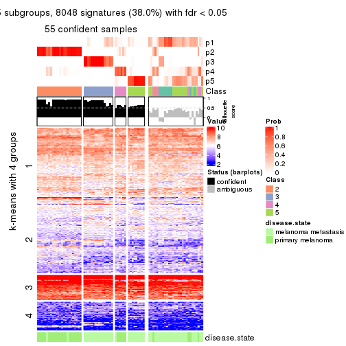
get_signatures(res, k = 6, scale_rows = FALSE)
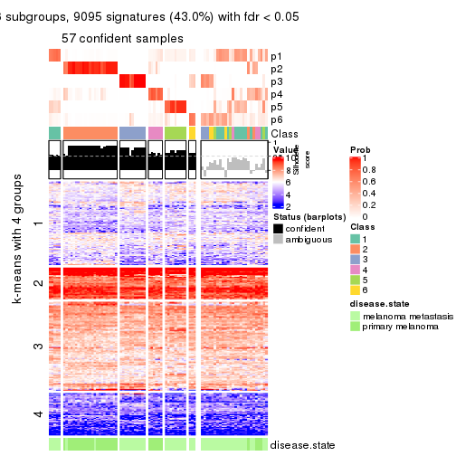
Compare the overlap of signatures from different k:
compare_signatures(res)
get_signature() returns a data frame invisibly. TO get the list of signatures, the function
call should be assigned to a variable explicitly. In following code, if plot argument is set
to FALSE, no heatmap is plotted while only the differential analysis is performed.
# code only for demonstration
tb = get_signature(res, k = ..., plot = FALSE)
An example of the output of tb is:
#> which_row fdr mean_1 mean_2 scaled_mean_1 scaled_mean_2 km
#> 1 38 0.042760348 8.373488 9.131774 -0.5533452 0.5164555 1
#> 2 40 0.018707592 7.106213 8.469186 -0.6173731 0.5762149 1
#> 3 55 0.019134737 10.221463 11.207825 -0.6159697 0.5749050 1
#> 4 59 0.006059896 5.921854 7.869574 -0.6899429 0.6439467 1
#> 5 60 0.018055526 8.928898 10.211722 -0.6204761 0.5791110 1
#> 6 98 0.009384629 15.714769 14.887706 0.6635654 -0.6193277 2
...
The columns in tb are:
which_row: row indices corresponding to the input matrix.fdr: FDR for the differential test. mean_x: The mean value in group x.scaled_mean_x: The mean value in group x after rows are scaled.km: Row groups if k-means clustering is applied to rows.UMAP plot which shows how samples are separated.
dimension_reduction(res, k = 2, method = "UMAP")

dimension_reduction(res, k = 3, method = "UMAP")
dimension_reduction(res, k = 4, method = "UMAP")
dimension_reduction(res, k = 5, method = "UMAP")
dimension_reduction(res, k = 6, method = "UMAP")
Following heatmap shows how subgroups are split when increasing k:
collect_classes(res)
Test correlation between subgroups and known annotations. If the known annotation is numeric, one-way ANOVA test is applied, and if the known annotation is discrete, chi-squared contingency table test is applied.
test_to_known_factors(res)
#> n disease.state(p) k
#> MAD:skmeans 83 1.35e-12 2
#> MAD:skmeans 80 7.31e-14 3
#> MAD:skmeans 72 5.06e-12 4
#> MAD:skmeans 55 1.28e-09 5
#> MAD:skmeans 57 1.61e-09 6
If matrix rows can be associated to genes, consider to use functional_enrichment(res,
...) to perform function enrichment for the signature genes. See this vignette for more detailed explanations.
The object with results only for a single top-value method and a single partition method can be extracted as:
res = res_list["MAD", "pam"]
# you can also extract it by
# res = res_list["MAD:pam"]
A summary of res and all the functions that can be applied to it:
res
#> A 'ConsensusPartition' object with k = 2, 3, 4, 5, 6.
#> On a matrix with 21168 rows and 83 columns.
#> Top rows (1000, 2000, 3000, 4000, 5000) are extracted by 'MAD' method.
#> Subgroups are detected by 'pam' method.
#> Performed in total 1250 partitions by row resampling.
#> Best k for subgroups seems to be 5.
#>
#> Following methods can be applied to this 'ConsensusPartition' object:
#> [1] "cola_report" "collect_classes" "collect_plots"
#> [4] "collect_stats" "colnames" "compare_signatures"
#> [7] "consensus_heatmap" "dimension_reduction" "functional_enrichment"
#> [10] "get_anno_col" "get_anno" "get_classes"
#> [13] "get_consensus" "get_matrix" "get_membership"
#> [16] "get_param" "get_signatures" "get_stats"
#> [19] "is_best_k" "is_stable_k" "membership_heatmap"
#> [22] "ncol" "nrow" "plot_ecdf"
#> [25] "rownames" "select_partition_number" "show"
#> [28] "suggest_best_k" "test_to_known_factors"
collect_plots() function collects all the plots made from res for all k (number of partitions)
into one single page to provide an easy and fast comparison between different k.
collect_plots(res)
The plots are:
k and the heatmap of
predicted classes for each k.k.k.k.All the plots in panels can be made by individual functions and they are plotted later in this section.
select_partition_number() produces several plots showing different
statistics for choosing “optimized” k. There are following statistics:
k;k, the area increased is defined as \(A_k - A_{k-1}\).The detailed explanations of these statistics can be found in the cola vignette.
Generally speaking, lower PAC score, higher mean silhouette score or higher
concordance corresponds to better partition. Rand index and Jaccard index
measure how similar the current partition is compared to partition with k-1.
If they are too similar, we won't accept k is better than k-1.
select_partition_number(res)
The numeric values for all these statistics can be obtained by get_stats().
get_stats(res)
#> k 1-PAC mean_silhouette concordance area_increased Rand Jaccard
#> 2 2 1.000 0.966 0.986 0.4620 0.540 0.540
#> 3 3 1.000 0.943 0.979 0.2671 0.881 0.780
#> 4 4 0.837 0.818 0.880 0.1602 0.931 0.837
#> 5 5 0.973 0.912 0.958 0.1147 0.890 0.688
#> 6 6 0.840 0.782 0.876 0.0162 0.974 0.894
suggest_best_k() suggests the best \(k\) based on these statistics. The rules are as follows:
suggest_best_k(res)
#> [1] 5
#> attr(,"optional")
#> [1] 2 3
There is also optional best \(k\) = 2 3 that is worth to check.
Following shows the table of the partitions (You need to click the show/hide
code output link to see it). The membership matrix (columns with name p*)
is inferred by
clue::cl_consensus()
function with the SE method. Basically the value in the membership matrix
represents the probability to belong to a certain group. The finall class
label for an item is determined with the group with highest probability it
belongs to.
In get_classes() function, the entropy is calculated from the membership
matrix and the silhouette score is calculated from the consensus matrix.
cbind(get_classes(res, k = 2), get_membership(res, k = 2))
#> class entropy silhouette p1 p2
#> GSM207929 1 0.9710 0.314 0.600 0.400
#> GSM207930 1 0.0000 0.987 1.000 0.000
#> GSM207931 1 0.0000 0.987 1.000 0.000
#> GSM207932 2 0.0000 0.983 0.000 1.000
#> GSM207933 2 0.0000 0.983 0.000 1.000
#> GSM207934 2 0.0376 0.980 0.004 0.996
#> GSM207935 2 0.9044 0.529 0.320 0.680
#> GSM207936 2 0.0000 0.983 0.000 1.000
#> GSM207937 2 0.0000 0.983 0.000 1.000
#> GSM207938 2 0.0000 0.983 0.000 1.000
#> GSM207939 2 0.0000 0.983 0.000 1.000
#> GSM207940 2 0.0000 0.983 0.000 1.000
#> GSM207941 2 0.0000 0.983 0.000 1.000
#> GSM207942 2 0.0000 0.983 0.000 1.000
#> GSM207943 2 0.0000 0.983 0.000 1.000
#> GSM207944 2 0.0000 0.983 0.000 1.000
#> GSM207945 2 0.0000 0.983 0.000 1.000
#> GSM207946 2 0.0000 0.983 0.000 1.000
#> GSM207947 1 0.0000 0.987 1.000 0.000
#> GSM207948 2 0.0000 0.983 0.000 1.000
#> GSM207949 2 0.0000 0.983 0.000 1.000
#> GSM207950 2 0.0000 0.983 0.000 1.000
#> GSM207951 2 0.0000 0.983 0.000 1.000
#> GSM207952 1 0.0000 0.987 1.000 0.000
#> GSM207953 2 0.0000 0.983 0.000 1.000
#> GSM207954 2 0.0000 0.983 0.000 1.000
#> GSM207955 2 0.0000 0.983 0.000 1.000
#> GSM207956 2 0.0376 0.980 0.004 0.996
#> GSM207957 2 0.0000 0.983 0.000 1.000
#> GSM207958 2 0.0000 0.983 0.000 1.000
#> GSM207959 2 0.0000 0.983 0.000 1.000
#> GSM207960 1 0.0000 0.987 1.000 0.000
#> GSM207961 1 0.0000 0.987 1.000 0.000
#> GSM207962 1 0.0000 0.987 1.000 0.000
#> GSM207963 1 0.0000 0.987 1.000 0.000
#> GSM207964 1 0.0000 0.987 1.000 0.000
#> GSM207965 1 0.0000 0.987 1.000 0.000
#> GSM207966 1 0.0000 0.987 1.000 0.000
#> GSM207967 1 0.0000 0.987 1.000 0.000
#> GSM207968 1 0.0000 0.987 1.000 0.000
#> GSM207969 1 0.0000 0.987 1.000 0.000
#> GSM207970 1 0.0000 0.987 1.000 0.000
#> GSM207971 1 0.0000 0.987 1.000 0.000
#> GSM207972 1 0.0000 0.987 1.000 0.000
#> GSM207973 1 0.0000 0.987 1.000 0.000
#> GSM207974 1 0.0000 0.987 1.000 0.000
#> GSM207975 1 0.0000 0.987 1.000 0.000
#> GSM207976 1 0.0000 0.987 1.000 0.000
#> GSM207977 1 0.0000 0.987 1.000 0.000
#> GSM207978 1 0.0000 0.987 1.000 0.000
#> GSM207979 1 0.0000 0.987 1.000 0.000
#> GSM207980 1 0.0000 0.987 1.000 0.000
#> GSM207981 1 0.0000 0.987 1.000 0.000
#> GSM207982 1 0.0000 0.987 1.000 0.000
#> GSM207983 1 0.0000 0.987 1.000 0.000
#> GSM207984 1 0.0000 0.987 1.000 0.000
#> GSM207985 1 0.0000 0.987 1.000 0.000
#> GSM207986 1 0.0000 0.987 1.000 0.000
#> GSM207987 1 0.0000 0.987 1.000 0.000
#> GSM207988 1 0.0000 0.987 1.000 0.000
#> GSM207989 1 0.0000 0.987 1.000 0.000
#> GSM207990 1 0.0000 0.987 1.000 0.000
#> GSM207991 1 0.0000 0.987 1.000 0.000
#> GSM207992 1 0.0000 0.987 1.000 0.000
#> GSM207993 1 0.0000 0.987 1.000 0.000
#> GSM207994 2 0.0000 0.983 0.000 1.000
#> GSM207995 1 0.0000 0.987 1.000 0.000
#> GSM207996 1 0.0000 0.987 1.000 0.000
#> GSM207997 1 0.0000 0.987 1.000 0.000
#> GSM207998 1 0.0000 0.987 1.000 0.000
#> GSM207999 1 0.8608 0.597 0.716 0.284
#> GSM208000 1 0.0000 0.987 1.000 0.000
#> GSM208001 1 0.0000 0.987 1.000 0.000
#> GSM208002 1 0.0000 0.987 1.000 0.000
#> GSM208003 1 0.0000 0.987 1.000 0.000
#> GSM208004 1 0.0000 0.987 1.000 0.000
#> GSM208005 1 0.0000 0.987 1.000 0.000
#> GSM208006 2 0.2603 0.944 0.044 0.956
#> GSM208007 2 0.4431 0.894 0.092 0.908
#> GSM208008 1 0.0000 0.987 1.000 0.000
#> GSM208009 1 0.0000 0.987 1.000 0.000
#> GSM208010 1 0.0000 0.987 1.000 0.000
#> GSM208011 1 0.0000 0.987 1.000 0.000
cbind(get_classes(res, k = 3), get_membership(res, k = 3))
#> class entropy silhouette p1 p2 p3
#> GSM207929 1 0.6126 0.329 0.600 0.400 0.000
#> GSM207930 1 0.0000 0.968 1.000 0.000 0.000
#> GSM207931 1 0.0000 0.968 1.000 0.000 0.000
#> GSM207932 2 0.0000 0.977 0.000 1.000 0.000
#> GSM207933 2 0.0000 0.977 0.000 1.000 0.000
#> GSM207934 2 0.0237 0.973 0.004 0.996 0.000
#> GSM207935 2 0.5706 0.492 0.320 0.680 0.000
#> GSM207936 2 0.0000 0.977 0.000 1.000 0.000
#> GSM207937 2 0.0000 0.977 0.000 1.000 0.000
#> GSM207938 2 0.0000 0.977 0.000 1.000 0.000
#> GSM207939 2 0.0000 0.977 0.000 1.000 0.000
#> GSM207940 2 0.0000 0.977 0.000 1.000 0.000
#> GSM207941 2 0.0000 0.977 0.000 1.000 0.000
#> GSM207942 2 0.0000 0.977 0.000 1.000 0.000
#> GSM207943 2 0.0000 0.977 0.000 1.000 0.000
#> GSM207944 2 0.0000 0.977 0.000 1.000 0.000
#> GSM207945 2 0.0000 0.977 0.000 1.000 0.000
#> GSM207946 2 0.0000 0.977 0.000 1.000 0.000
#> GSM207947 1 0.0000 0.968 1.000 0.000 0.000
#> GSM207948 2 0.0000 0.977 0.000 1.000 0.000
#> GSM207949 2 0.0000 0.977 0.000 1.000 0.000
#> GSM207950 2 0.0000 0.977 0.000 1.000 0.000
#> GSM207951 2 0.0000 0.977 0.000 1.000 0.000
#> GSM207952 1 0.0000 0.968 1.000 0.000 0.000
#> GSM207953 2 0.0000 0.977 0.000 1.000 0.000
#> GSM207954 2 0.0000 0.977 0.000 1.000 0.000
#> GSM207955 2 0.0000 0.977 0.000 1.000 0.000
#> GSM207956 2 0.0237 0.973 0.004 0.996 0.000
#> GSM207957 2 0.0000 0.977 0.000 1.000 0.000
#> GSM207958 2 0.0000 0.977 0.000 1.000 0.000
#> GSM207959 2 0.0000 0.977 0.000 1.000 0.000
#> GSM207960 1 0.0000 0.968 1.000 0.000 0.000
#> GSM207961 1 0.0000 0.968 1.000 0.000 0.000
#> GSM207962 1 0.0000 0.968 1.000 0.000 0.000
#> GSM207963 1 0.0000 0.968 1.000 0.000 0.000
#> GSM207964 1 0.0000 0.968 1.000 0.000 0.000
#> GSM207965 1 0.0000 0.968 1.000 0.000 0.000
#> GSM207966 1 0.0000 0.968 1.000 0.000 0.000
#> GSM207967 1 0.0000 0.968 1.000 0.000 0.000
#> GSM207968 1 0.0000 0.968 1.000 0.000 0.000
#> GSM207969 1 0.0000 0.968 1.000 0.000 0.000
#> GSM207970 1 0.0000 0.968 1.000 0.000 0.000
#> GSM207971 1 0.0000 0.968 1.000 0.000 0.000
#> GSM207972 1 0.0000 0.968 1.000 0.000 0.000
#> GSM207973 1 0.0000 0.968 1.000 0.000 0.000
#> GSM207974 1 0.0000 0.968 1.000 0.000 0.000
#> GSM207975 1 0.0000 0.968 1.000 0.000 0.000
#> GSM207976 1 0.0000 0.968 1.000 0.000 0.000
#> GSM207977 1 0.1529 0.932 0.960 0.000 0.040
#> GSM207978 1 0.0000 0.968 1.000 0.000 0.000
#> GSM207979 1 0.0000 0.968 1.000 0.000 0.000
#> GSM207980 3 0.0237 0.989 0.004 0.000 0.996
#> GSM207981 3 0.0000 0.992 0.000 0.000 1.000
#> GSM207982 3 0.0000 0.992 0.000 0.000 1.000
#> GSM207983 3 0.0000 0.992 0.000 0.000 1.000
#> GSM207984 1 0.0000 0.968 1.000 0.000 0.000
#> GSM207985 1 0.0000 0.968 1.000 0.000 0.000
#> GSM207986 3 0.0000 0.992 0.000 0.000 1.000
#> GSM207987 3 0.0000 0.992 0.000 0.000 1.000
#> GSM207988 3 0.0000 0.992 0.000 0.000 1.000
#> GSM207989 3 0.0000 0.992 0.000 0.000 1.000
#> GSM207990 1 0.3619 0.828 0.864 0.000 0.136
#> GSM207991 3 0.1753 0.942 0.048 0.000 0.952
#> GSM207992 1 0.6140 0.338 0.596 0.000 0.404
#> GSM207993 1 0.0000 0.968 1.000 0.000 0.000
#> GSM207994 2 0.0000 0.977 0.000 1.000 0.000
#> GSM207995 1 0.0000 0.968 1.000 0.000 0.000
#> GSM207996 1 0.0000 0.968 1.000 0.000 0.000
#> GSM207997 1 0.0000 0.968 1.000 0.000 0.000
#> GSM207998 1 0.0000 0.968 1.000 0.000 0.000
#> GSM207999 1 0.5431 0.589 0.716 0.284 0.000
#> GSM208000 1 0.0000 0.968 1.000 0.000 0.000
#> GSM208001 1 0.0000 0.968 1.000 0.000 0.000
#> GSM208002 1 0.0000 0.968 1.000 0.000 0.000
#> GSM208003 1 0.0000 0.968 1.000 0.000 0.000
#> GSM208004 1 0.0000 0.968 1.000 0.000 0.000
#> GSM208005 1 0.0000 0.968 1.000 0.000 0.000
#> GSM208006 2 0.1643 0.926 0.044 0.956 0.000
#> GSM208007 2 0.2796 0.861 0.092 0.908 0.000
#> GSM208008 1 0.0000 0.968 1.000 0.000 0.000
#> GSM208009 1 0.0000 0.968 1.000 0.000 0.000
#> GSM208010 1 0.0000 0.968 1.000 0.000 0.000
#> GSM208011 1 0.0000 0.968 1.000 0.000 0.000
cbind(get_classes(res, k = 4), get_membership(res, k = 4))
#> class entropy silhouette p1 p2 p3 p4
#> GSM207929 4 0.4855 0.227 0.000 0.400 0.000 0.600
#> GSM207930 4 0.4522 0.715 0.320 0.000 0.000 0.680
#> GSM207931 4 0.0188 0.748 0.000 0.004 0.000 0.996
#> GSM207932 2 0.0000 0.977 0.000 1.000 0.000 0.000
#> GSM207933 2 0.0000 0.977 0.000 1.000 0.000 0.000
#> GSM207934 2 0.0779 0.960 0.016 0.980 0.000 0.004
#> GSM207935 2 0.4522 0.445 0.000 0.680 0.000 0.320
#> GSM207936 2 0.0000 0.977 0.000 1.000 0.000 0.000
#> GSM207937 2 0.0000 0.977 0.000 1.000 0.000 0.000
#> GSM207938 2 0.0000 0.977 0.000 1.000 0.000 0.000
#> GSM207939 2 0.0000 0.977 0.000 1.000 0.000 0.000
#> GSM207940 2 0.0000 0.977 0.000 1.000 0.000 0.000
#> GSM207941 2 0.0000 0.977 0.000 1.000 0.000 0.000
#> GSM207942 2 0.0000 0.977 0.000 1.000 0.000 0.000
#> GSM207943 2 0.0000 0.977 0.000 1.000 0.000 0.000
#> GSM207944 2 0.0000 0.977 0.000 1.000 0.000 0.000
#> GSM207945 2 0.0000 0.977 0.000 1.000 0.000 0.000
#> GSM207946 2 0.0000 0.977 0.000 1.000 0.000 0.000
#> GSM207947 4 0.4454 0.720 0.308 0.000 0.000 0.692
#> GSM207948 2 0.0000 0.977 0.000 1.000 0.000 0.000
#> GSM207949 2 0.0000 0.977 0.000 1.000 0.000 0.000
#> GSM207950 2 0.0000 0.977 0.000 1.000 0.000 0.000
#> GSM207951 2 0.0000 0.977 0.000 1.000 0.000 0.000
#> GSM207952 4 0.0336 0.749 0.008 0.000 0.000 0.992
#> GSM207953 2 0.0000 0.977 0.000 1.000 0.000 0.000
#> GSM207954 2 0.0000 0.977 0.000 1.000 0.000 0.000
#> GSM207955 2 0.0000 0.977 0.000 1.000 0.000 0.000
#> GSM207956 2 0.0188 0.973 0.000 0.996 0.000 0.004
#> GSM207957 2 0.0000 0.977 0.000 1.000 0.000 0.000
#> GSM207958 2 0.0000 0.977 0.000 1.000 0.000 0.000
#> GSM207959 2 0.0000 0.977 0.000 1.000 0.000 0.000
#> GSM207960 4 0.0188 0.750 0.004 0.000 0.000 0.996
#> GSM207961 4 0.4477 0.718 0.312 0.000 0.000 0.688
#> GSM207962 4 0.4967 0.582 0.452 0.000 0.000 0.548
#> GSM207963 4 0.4679 0.696 0.352 0.000 0.000 0.648
#> GSM207964 4 0.0000 0.749 0.000 0.000 0.000 1.000
#> GSM207965 4 0.0000 0.749 0.000 0.000 0.000 1.000
#> GSM207966 1 0.4040 0.833 0.752 0.000 0.000 0.248
#> GSM207967 4 0.4564 0.711 0.328 0.000 0.000 0.672
#> GSM207968 4 0.0000 0.749 0.000 0.000 0.000 1.000
#> GSM207969 4 0.0000 0.749 0.000 0.000 0.000 1.000
#> GSM207970 4 0.0000 0.749 0.000 0.000 0.000 1.000
#> GSM207971 4 0.0000 0.749 0.000 0.000 0.000 1.000
#> GSM207972 4 0.0000 0.749 0.000 0.000 0.000 1.000
#> GSM207973 1 0.1867 0.720 0.928 0.000 0.000 0.072
#> GSM207974 1 0.4331 0.818 0.712 0.000 0.000 0.288
#> GSM207975 4 0.4454 0.719 0.308 0.000 0.000 0.692
#> GSM207976 4 0.0000 0.749 0.000 0.000 0.000 1.000
#> GSM207977 4 0.1211 0.720 0.000 0.000 0.040 0.960
#> GSM207978 1 0.4406 0.802 0.700 0.000 0.000 0.300
#> GSM207979 1 0.4277 0.823 0.720 0.000 0.000 0.280
#> GSM207980 3 0.0188 0.984 0.000 0.000 0.996 0.004
#> GSM207981 3 0.0000 0.989 0.000 0.000 1.000 0.000
#> GSM207982 3 0.0000 0.989 0.000 0.000 1.000 0.000
#> GSM207983 3 0.0000 0.989 0.000 0.000 1.000 0.000
#> GSM207984 4 0.4543 0.712 0.324 0.000 0.000 0.676
#> GSM207985 1 0.1557 0.708 0.944 0.000 0.000 0.056
#> GSM207986 3 0.0000 0.989 0.000 0.000 1.000 0.000
#> GSM207987 3 0.0000 0.989 0.000 0.000 1.000 0.000
#> GSM207988 3 0.0000 0.989 0.000 0.000 1.000 0.000
#> GSM207989 3 0.0000 0.989 0.000 0.000 1.000 0.000
#> GSM207990 4 0.2814 0.623 0.000 0.000 0.132 0.868
#> GSM207991 3 0.1389 0.913 0.000 0.000 0.952 0.048
#> GSM207992 4 0.4866 0.285 0.000 0.000 0.404 0.596
#> GSM207993 4 0.0000 0.749 0.000 0.000 0.000 1.000
#> GSM207994 2 0.0000 0.977 0.000 1.000 0.000 0.000
#> GSM207995 4 0.4564 0.711 0.328 0.000 0.000 0.672
#> GSM207996 4 0.4679 0.696 0.352 0.000 0.000 0.648
#> GSM207997 4 0.0188 0.750 0.004 0.000 0.000 0.996
#> GSM207998 4 0.4992 0.540 0.476 0.000 0.000 0.524
#> GSM207999 4 0.7566 0.392 0.320 0.212 0.000 0.468
#> GSM208000 4 0.4776 0.672 0.376 0.000 0.000 0.624
#> GSM208001 4 0.4477 0.718 0.312 0.000 0.000 0.688
#> GSM208002 4 0.0188 0.750 0.004 0.000 0.000 0.996
#> GSM208003 4 0.4477 0.718 0.312 0.000 0.000 0.688
#> GSM208004 4 0.0188 0.750 0.004 0.000 0.000 0.996
#> GSM208005 4 0.0188 0.750 0.004 0.000 0.000 0.996
#> GSM208006 2 0.1302 0.929 0.000 0.956 0.000 0.044
#> GSM208007 2 0.2216 0.862 0.000 0.908 0.000 0.092
#> GSM208008 4 0.3907 0.734 0.232 0.000 0.000 0.768
#> GSM208009 4 0.4477 0.719 0.312 0.000 0.000 0.688
#> GSM208010 4 0.4406 0.723 0.300 0.000 0.000 0.700
#> GSM208011 4 0.0000 0.749 0.000 0.000 0.000 1.000
cbind(get_classes(res, k = 5), get_membership(res, k = 5))
#> class entropy silhouette p1 p2 p3 p4 p5
#> GSM207929 1 0.4182 0.332 0.600 0.400 0.000 0.000 0.000
#> GSM207930 4 0.1544 0.912 0.068 0.000 0.000 0.932 0.000
#> GSM207931 1 0.0566 0.905 0.984 0.012 0.000 0.004 0.000
#> GSM207932 2 0.0000 0.980 0.000 1.000 0.000 0.000 0.000
#> GSM207933 2 0.0000 0.980 0.000 1.000 0.000 0.000 0.000
#> GSM207934 2 0.0324 0.974 0.004 0.992 0.000 0.004 0.000
#> GSM207935 2 0.3895 0.506 0.320 0.680 0.000 0.000 0.000
#> GSM207936 2 0.0000 0.980 0.000 1.000 0.000 0.000 0.000
#> GSM207937 2 0.0000 0.980 0.000 1.000 0.000 0.000 0.000
#> GSM207938 2 0.0000 0.980 0.000 1.000 0.000 0.000 0.000
#> GSM207939 2 0.0000 0.980 0.000 1.000 0.000 0.000 0.000
#> GSM207940 2 0.0000 0.980 0.000 1.000 0.000 0.000 0.000
#> GSM207941 2 0.0000 0.980 0.000 1.000 0.000 0.000 0.000
#> GSM207942 2 0.0000 0.980 0.000 1.000 0.000 0.000 0.000
#> GSM207943 2 0.0000 0.980 0.000 1.000 0.000 0.000 0.000
#> GSM207944 2 0.0000 0.980 0.000 1.000 0.000 0.000 0.000
#> GSM207945 2 0.0000 0.980 0.000 1.000 0.000 0.000 0.000
#> GSM207946 2 0.0000 0.980 0.000 1.000 0.000 0.000 0.000
#> GSM207947 4 0.1544 0.916 0.068 0.000 0.000 0.932 0.000
#> GSM207948 2 0.0000 0.980 0.000 1.000 0.000 0.000 0.000
#> GSM207949 2 0.0000 0.980 0.000 1.000 0.000 0.000 0.000
#> GSM207950 2 0.0000 0.980 0.000 1.000 0.000 0.000 0.000
#> GSM207951 2 0.0000 0.980 0.000 1.000 0.000 0.000 0.000
#> GSM207952 1 0.0510 0.908 0.984 0.000 0.000 0.016 0.000
#> GSM207953 2 0.0000 0.980 0.000 1.000 0.000 0.000 0.000
#> GSM207954 2 0.0000 0.980 0.000 1.000 0.000 0.000 0.000
#> GSM207955 2 0.0000 0.980 0.000 1.000 0.000 0.000 0.000
#> GSM207956 2 0.0162 0.977 0.004 0.996 0.000 0.000 0.000
#> GSM207957 2 0.0000 0.980 0.000 1.000 0.000 0.000 0.000
#> GSM207958 2 0.0000 0.980 0.000 1.000 0.000 0.000 0.000
#> GSM207959 2 0.0000 0.980 0.000 1.000 0.000 0.000 0.000
#> GSM207960 1 0.0404 0.909 0.988 0.000 0.000 0.012 0.000
#> GSM207961 4 0.0880 0.923 0.032 0.000 0.000 0.968 0.000
#> GSM207962 4 0.1168 0.907 0.008 0.000 0.000 0.960 0.032
#> GSM207963 4 0.0162 0.910 0.004 0.000 0.000 0.996 0.000
#> GSM207964 1 0.0290 0.909 0.992 0.000 0.000 0.008 0.000
#> GSM207965 1 0.0794 0.897 0.972 0.000 0.000 0.028 0.000
#> GSM207966 5 0.0000 0.995 0.000 0.000 0.000 0.000 1.000
#> GSM207967 4 0.1121 0.924 0.044 0.000 0.000 0.956 0.000
#> GSM207968 1 0.0000 0.911 1.000 0.000 0.000 0.000 0.000
#> GSM207969 1 0.0000 0.911 1.000 0.000 0.000 0.000 0.000
#> GSM207970 1 0.0000 0.911 1.000 0.000 0.000 0.000 0.000
#> GSM207971 1 0.0000 0.911 1.000 0.000 0.000 0.000 0.000
#> GSM207972 1 0.0000 0.911 1.000 0.000 0.000 0.000 0.000
#> GSM207973 5 0.0000 0.995 0.000 0.000 0.000 0.000 1.000
#> GSM207974 5 0.0671 0.977 0.004 0.000 0.000 0.016 0.980
#> GSM207975 4 0.0609 0.912 0.020 0.000 0.000 0.980 0.000
#> GSM207976 1 0.0000 0.911 1.000 0.000 0.000 0.000 0.000
#> GSM207977 1 0.2209 0.860 0.912 0.000 0.032 0.056 0.000
#> GSM207978 5 0.0000 0.995 0.000 0.000 0.000 0.000 1.000
#> GSM207979 5 0.0000 0.995 0.000 0.000 0.000 0.000 1.000
#> GSM207980 3 0.0162 0.987 0.004 0.000 0.996 0.000 0.000
#> GSM207981 3 0.0000 0.991 0.000 0.000 1.000 0.000 0.000
#> GSM207982 3 0.0000 0.991 0.000 0.000 1.000 0.000 0.000
#> GSM207983 3 0.0000 0.991 0.000 0.000 1.000 0.000 0.000
#> GSM207984 4 0.0880 0.912 0.032 0.000 0.000 0.968 0.000
#> GSM207985 5 0.0000 0.995 0.000 0.000 0.000 0.000 1.000
#> GSM207986 3 0.0000 0.991 0.000 0.000 1.000 0.000 0.000
#> GSM207987 3 0.0000 0.991 0.000 0.000 1.000 0.000 0.000
#> GSM207988 3 0.0000 0.991 0.000 0.000 1.000 0.000 0.000
#> GSM207989 3 0.0000 0.991 0.000 0.000 1.000 0.000 0.000
#> GSM207990 1 0.2377 0.812 0.872 0.000 0.128 0.000 0.000
#> GSM207991 3 0.1197 0.930 0.048 0.000 0.952 0.000 0.000
#> GSM207992 1 0.4192 0.361 0.596 0.000 0.404 0.000 0.000
#> GSM207993 1 0.1197 0.883 0.952 0.000 0.000 0.048 0.000
#> GSM207994 2 0.0000 0.980 0.000 1.000 0.000 0.000 0.000
#> GSM207995 4 0.1732 0.925 0.080 0.000 0.000 0.920 0.000
#> GSM207996 4 0.1831 0.925 0.076 0.000 0.000 0.920 0.004
#> GSM207997 1 0.0404 0.909 0.988 0.000 0.000 0.012 0.000
#> GSM207998 4 0.0771 0.920 0.020 0.000 0.000 0.976 0.004
#> GSM207999 4 0.1792 0.924 0.084 0.000 0.000 0.916 0.000
#> GSM208000 4 0.1484 0.924 0.048 0.000 0.000 0.944 0.008
#> GSM208001 4 0.1792 0.924 0.084 0.000 0.000 0.916 0.000
#> GSM208002 1 0.0404 0.909 0.988 0.000 0.000 0.012 0.000
#> GSM208003 4 0.1792 0.924 0.084 0.000 0.000 0.916 0.000
#> GSM208004 1 0.0404 0.909 0.988 0.000 0.000 0.012 0.000
#> GSM208005 1 0.0451 0.909 0.988 0.000 0.000 0.004 0.008
#> GSM208006 2 0.1121 0.936 0.044 0.956 0.000 0.000 0.000
#> GSM208007 2 0.1908 0.879 0.092 0.908 0.000 0.000 0.000
#> GSM208008 1 0.4249 0.170 0.568 0.000 0.000 0.432 0.000
#> GSM208009 4 0.4166 0.508 0.348 0.000 0.000 0.648 0.004
#> GSM208010 4 0.2852 0.844 0.172 0.000 0.000 0.828 0.000
#> GSM208011 1 0.0000 0.911 1.000 0.000 0.000 0.000 0.000
cbind(get_classes(res, k = 6), get_membership(res, k = 6))
#> class entropy silhouette p1 p2 p3 p4 p5 p6
#> GSM207929 6 0.3756 0.2784 0.000 0.400 0.000 0.000 0.000 0.600
#> GSM207930 1 0.4152 0.0580 0.548 0.000 0.000 0.440 0.000 0.012
#> GSM207931 6 0.0547 0.8797 0.020 0.000 0.000 0.000 0.000 0.980
#> GSM207932 2 0.0000 0.9783 0.000 1.000 0.000 0.000 0.000 0.000
#> GSM207933 2 0.0000 0.9783 0.000 1.000 0.000 0.000 0.000 0.000
#> GSM207934 2 0.1082 0.9396 0.040 0.956 0.000 0.000 0.000 0.004
#> GSM207935 2 0.3499 0.4945 0.000 0.680 0.000 0.000 0.000 0.320
#> GSM207936 2 0.0000 0.9783 0.000 1.000 0.000 0.000 0.000 0.000
#> GSM207937 2 0.0000 0.9783 0.000 1.000 0.000 0.000 0.000 0.000
#> GSM207938 2 0.0000 0.9783 0.000 1.000 0.000 0.000 0.000 0.000
#> GSM207939 2 0.0000 0.9783 0.000 1.000 0.000 0.000 0.000 0.000
#> GSM207940 2 0.0000 0.9783 0.000 1.000 0.000 0.000 0.000 0.000
#> GSM207941 2 0.0000 0.9783 0.000 1.000 0.000 0.000 0.000 0.000
#> GSM207942 2 0.0000 0.9783 0.000 1.000 0.000 0.000 0.000 0.000
#> GSM207943 2 0.0000 0.9783 0.000 1.000 0.000 0.000 0.000 0.000
#> GSM207944 2 0.0000 0.9783 0.000 1.000 0.000 0.000 0.000 0.000
#> GSM207945 2 0.0000 0.9783 0.000 1.000 0.000 0.000 0.000 0.000
#> GSM207946 2 0.0000 0.9783 0.000 1.000 0.000 0.000 0.000 0.000
#> GSM207947 1 0.3555 0.1382 0.776 0.000 0.000 0.184 0.000 0.040
#> GSM207948 2 0.0000 0.9783 0.000 1.000 0.000 0.000 0.000 0.000
#> GSM207949 2 0.0000 0.9783 0.000 1.000 0.000 0.000 0.000 0.000
#> GSM207950 2 0.0000 0.9783 0.000 1.000 0.000 0.000 0.000 0.000
#> GSM207951 2 0.0000 0.9783 0.000 1.000 0.000 0.000 0.000 0.000
#> GSM207952 6 0.0632 0.8765 0.024 0.000 0.000 0.000 0.000 0.976
#> GSM207953 2 0.0000 0.9783 0.000 1.000 0.000 0.000 0.000 0.000
#> GSM207954 2 0.0000 0.9783 0.000 1.000 0.000 0.000 0.000 0.000
#> GSM207955 2 0.0000 0.9783 0.000 1.000 0.000 0.000 0.000 0.000
#> GSM207956 2 0.0146 0.9745 0.000 0.996 0.000 0.000 0.000 0.004
#> GSM207957 2 0.0000 0.9783 0.000 1.000 0.000 0.000 0.000 0.000
#> GSM207958 2 0.0000 0.9783 0.000 1.000 0.000 0.000 0.000 0.000
#> GSM207959 2 0.0000 0.9783 0.000 1.000 0.000 0.000 0.000 0.000
#> GSM207960 6 0.0146 0.8873 0.004 0.000 0.000 0.000 0.000 0.996
#> GSM207961 1 0.3938 0.4727 0.728 0.000 0.000 0.044 0.000 0.228
#> GSM207962 4 0.4101 0.5185 0.408 0.000 0.000 0.580 0.012 0.000
#> GSM207963 4 0.3817 0.5022 0.432 0.000 0.000 0.568 0.000 0.000
#> GSM207964 6 0.1082 0.8706 0.004 0.000 0.000 0.040 0.000 0.956
#> GSM207965 6 0.1930 0.8366 0.036 0.000 0.000 0.048 0.000 0.916
#> GSM207966 5 0.0000 0.9978 0.000 0.000 0.000 0.000 1.000 0.000
#> GSM207967 4 0.3860 0.4907 0.472 0.000 0.000 0.528 0.000 0.000
#> GSM207968 6 0.0146 0.8884 0.000 0.000 0.000 0.004 0.000 0.996
#> GSM207969 6 0.0260 0.8877 0.000 0.000 0.000 0.008 0.000 0.992
#> GSM207970 6 0.0146 0.8883 0.000 0.000 0.000 0.004 0.000 0.996
#> GSM207971 6 0.0458 0.8853 0.000 0.000 0.000 0.016 0.000 0.984
#> GSM207972 6 0.0000 0.8885 0.000 0.000 0.000 0.000 0.000 1.000
#> GSM207973 5 0.0000 0.9978 0.000 0.000 0.000 0.000 1.000 0.000
#> GSM207974 5 0.0260 0.9891 0.008 0.000 0.000 0.000 0.992 0.000
#> GSM207975 1 0.3854 0.0503 0.536 0.000 0.000 0.464 0.000 0.000
#> GSM207976 6 0.0000 0.8885 0.000 0.000 0.000 0.000 0.000 1.000
#> GSM207977 4 0.6088 -0.0854 0.308 0.000 0.008 0.464 0.000 0.220
#> GSM207978 5 0.0000 0.9978 0.000 0.000 0.000 0.000 1.000 0.000
#> GSM207979 5 0.0000 0.9978 0.000 0.000 0.000 0.000 1.000 0.000
#> GSM207980 3 0.0405 0.9797 0.000 0.000 0.988 0.008 0.000 0.004
#> GSM207981 3 0.0000 0.9887 0.000 0.000 1.000 0.000 0.000 0.000
#> GSM207982 3 0.0000 0.9887 0.000 0.000 1.000 0.000 0.000 0.000
#> GSM207983 3 0.0000 0.9887 0.000 0.000 1.000 0.000 0.000 0.000
#> GSM207984 1 0.3857 0.0466 0.532 0.000 0.000 0.468 0.000 0.000
#> GSM207985 5 0.0000 0.9978 0.000 0.000 0.000 0.000 1.000 0.000
#> GSM207986 3 0.0000 0.9887 0.000 0.000 1.000 0.000 0.000 0.000
#> GSM207987 3 0.0000 0.9887 0.000 0.000 1.000 0.000 0.000 0.000
#> GSM207988 3 0.0000 0.9887 0.000 0.000 1.000 0.000 0.000 0.000
#> GSM207989 3 0.0000 0.9887 0.000 0.000 1.000 0.000 0.000 0.000
#> GSM207990 6 0.2784 0.7650 0.000 0.000 0.124 0.028 0.000 0.848
#> GSM207991 3 0.1219 0.9220 0.000 0.000 0.948 0.004 0.000 0.048
#> GSM207992 6 0.3890 0.3873 0.000 0.000 0.400 0.004 0.000 0.596
#> GSM207993 6 0.4766 0.4103 0.072 0.000 0.000 0.316 0.000 0.612
#> GSM207994 2 0.0000 0.9783 0.000 1.000 0.000 0.000 0.000 0.000
#> GSM207995 1 0.3464 0.5072 0.688 0.000 0.000 0.000 0.000 0.312
#> GSM207996 1 0.3672 0.5044 0.688 0.000 0.000 0.008 0.000 0.304
#> GSM207997 6 0.0000 0.8885 0.000 0.000 0.000 0.000 0.000 1.000
#> GSM207998 1 0.1967 0.3019 0.904 0.000 0.000 0.000 0.012 0.084
#> GSM207999 1 0.4908 0.3520 0.648 0.128 0.000 0.000 0.000 0.224
#> GSM208000 1 0.4624 0.3781 0.688 0.000 0.000 0.120 0.000 0.192
#> GSM208001 1 0.3620 0.5049 0.648 0.000 0.000 0.000 0.000 0.352
#> GSM208002 6 0.0000 0.8885 0.000 0.000 0.000 0.000 0.000 1.000
#> GSM208003 1 0.3620 0.5049 0.648 0.000 0.000 0.000 0.000 0.352
#> GSM208004 6 0.0000 0.8885 0.000 0.000 0.000 0.000 0.000 1.000
#> GSM208005 6 0.0000 0.8885 0.000 0.000 0.000 0.000 0.000 1.000
#> GSM208006 2 0.1007 0.9347 0.000 0.956 0.000 0.000 0.000 0.044
#> GSM208007 2 0.1714 0.8755 0.000 0.908 0.000 0.000 0.000 0.092
#> GSM208008 4 0.5649 0.3688 0.236 0.000 0.000 0.536 0.000 0.228
#> GSM208009 1 0.4727 0.3983 0.576 0.000 0.000 0.056 0.000 0.368
#> GSM208010 1 0.3756 0.4675 0.600 0.000 0.000 0.000 0.000 0.400
#> GSM208011 6 0.0713 0.8796 0.000 0.000 0.000 0.028 0.000 0.972
Heatmaps for the consensus matrix. It visualizes the probability of two samples to be in a same group.
consensus_heatmap(res, k = 2)

consensus_heatmap(res, k = 3)
consensus_heatmap(res, k = 4)
consensus_heatmap(res, k = 5)

consensus_heatmap(res, k = 6)
Heatmaps for the membership of samples in all partitions to see how consistent they are:
membership_heatmap(res, k = 2)
membership_heatmap(res, k = 3)
membership_heatmap(res, k = 4)
membership_heatmap(res, k = 5)
membership_heatmap(res, k = 6)
As soon as we have had the classes for columns, we can look for signatures which are significantly different between classes which can be candidate marks for certain classes. Following are the heatmaps for signatures.
Signature heatmaps where rows are scaled:
get_signatures(res, k = 2)
get_signatures(res, k = 3)
get_signatures(res, k = 4)
get_signatures(res, k = 5)
get_signatures(res, k = 6)

Signature heatmaps where rows are not scaled:
get_signatures(res, k = 2, scale_rows = FALSE)
get_signatures(res, k = 3, scale_rows = FALSE)
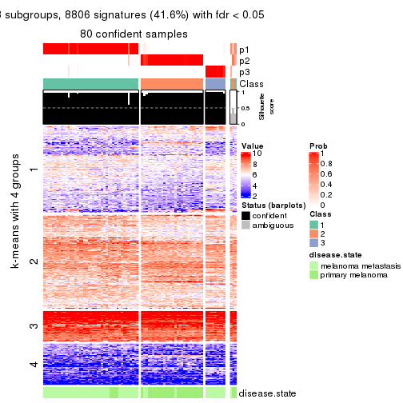
get_signatures(res, k = 4, scale_rows = FALSE)
get_signatures(res, k = 5, scale_rows = FALSE)
get_signatures(res, k = 6, scale_rows = FALSE)
Compare the overlap of signatures from different k:
compare_signatures(res)
get_signature() returns a data frame invisibly. TO get the list of signatures, the function
call should be assigned to a variable explicitly. In following code, if plot argument is set
to FALSE, no heatmap is plotted while only the differential analysis is performed.
# code only for demonstration
tb = get_signature(res, k = ..., plot = FALSE)
An example of the output of tb is:
#> which_row fdr mean_1 mean_2 scaled_mean_1 scaled_mean_2 km
#> 1 38 0.042760348 8.373488 9.131774 -0.5533452 0.5164555 1
#> 2 40 0.018707592 7.106213 8.469186 -0.6173731 0.5762149 1
#> 3 55 0.019134737 10.221463 11.207825 -0.6159697 0.5749050 1
#> 4 59 0.006059896 5.921854 7.869574 -0.6899429 0.6439467 1
#> 5 60 0.018055526 8.928898 10.211722 -0.6204761 0.5791110 1
#> 6 98 0.009384629 15.714769 14.887706 0.6635654 -0.6193277 2
...
The columns in tb are:
which_row: row indices corresponding to the input matrix.fdr: FDR for the differential test. mean_x: The mean value in group x.scaled_mean_x: The mean value in group x after rows are scaled.km: Row groups if k-means clustering is applied to rows.UMAP plot which shows how samples are separated.
dimension_reduction(res, k = 2, method = "UMAP")
dimension_reduction(res, k = 3, method = "UMAP")
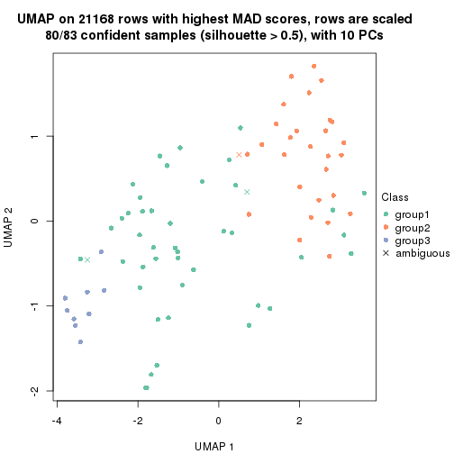
dimension_reduction(res, k = 4, method = "UMAP")
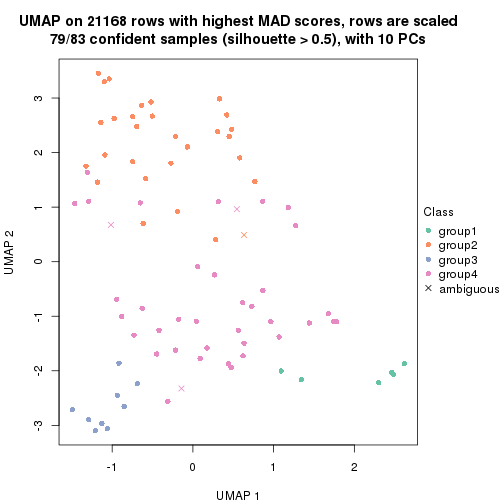
dimension_reduction(res, k = 5, method = "UMAP")
dimension_reduction(res, k = 6, method = "UMAP")
Following heatmap shows how subgroups are split when increasing k:
collect_classes(res)
Test correlation between subgroups and known annotations. If the known annotation is numeric, one-way ANOVA test is applied, and if the known annotation is discrete, chi-squared contingency table test is applied.
test_to_known_factors(res)
#> n disease.state(p) k
#> MAD:pam 82 9.31e-13 2
#> MAD:pam 80 3.58e-12 3
#> MAD:pam 79 2.76e-11 4
#> MAD:pam 80 7.17e-11 5
#> MAD:pam 66 4.25e-09 6
If matrix rows can be associated to genes, consider to use functional_enrichment(res,
...) to perform function enrichment for the signature genes. See this vignette for more detailed explanations.
The object with results only for a single top-value method and a single partition method can be extracted as:
res = res_list["MAD", "mclust"]
# you can also extract it by
# res = res_list["MAD:mclust"]
A summary of res and all the functions that can be applied to it:
res
#> A 'ConsensusPartition' object with k = 2, 3, 4, 5, 6.
#> On a matrix with 21168 rows and 83 columns.
#> Top rows (1000, 2000, 3000, 4000, 5000) are extracted by 'MAD' method.
#> Subgroups are detected by 'mclust' method.
#> Performed in total 1250 partitions by row resampling.
#> Best k for subgroups seems to be 2.
#>
#> Following methods can be applied to this 'ConsensusPartition' object:
#> [1] "cola_report" "collect_classes" "collect_plots"
#> [4] "collect_stats" "colnames" "compare_signatures"
#> [7] "consensus_heatmap" "dimension_reduction" "functional_enrichment"
#> [10] "get_anno_col" "get_anno" "get_classes"
#> [13] "get_consensus" "get_matrix" "get_membership"
#> [16] "get_param" "get_signatures" "get_stats"
#> [19] "is_best_k" "is_stable_k" "membership_heatmap"
#> [22] "ncol" "nrow" "plot_ecdf"
#> [25] "rownames" "select_partition_number" "show"
#> [28] "suggest_best_k" "test_to_known_factors"
collect_plots() function collects all the plots made from res for all k (number of partitions)
into one single page to provide an easy and fast comparison between different k.
collect_plots(res)
The plots are:
k and the heatmap of
predicted classes for each k.k.k.k.All the plots in panels can be made by individual functions and they are plotted later in this section.
select_partition_number() produces several plots showing different
statistics for choosing “optimized” k. There are following statistics:
k;k, the area increased is defined as \(A_k - A_{k-1}\).The detailed explanations of these statistics can be found in the cola vignette.
Generally speaking, lower PAC score, higher mean silhouette score or higher
concordance corresponds to better partition. Rand index and Jaccard index
measure how similar the current partition is compared to partition with k-1.
If they are too similar, we won't accept k is better than k-1.
select_partition_number(res)
The numeric values for all these statistics can be obtained by get_stats().
get_stats(res)
#> k 1-PAC mean_silhouette concordance area_increased Rand Jaccard
#> 2 2 0.974 0.935 0.973 0.504 0.495 0.495
#> 3 3 0.605 0.717 0.843 0.284 0.755 0.544
#> 4 4 0.734 0.701 0.851 0.115 0.819 0.535
#> 5 5 0.643 0.716 0.785 0.017 0.906 0.702
#> 6 6 0.851 0.830 0.911 0.101 0.908 0.665
suggest_best_k() suggests the best \(k\) based on these statistics. The rules are as follows:
suggest_best_k(res)
#> [1] 2
Following shows the table of the partitions (You need to click the show/hide
code output link to see it). The membership matrix (columns with name p*)
is inferred by
clue::cl_consensus()
function with the SE method. Basically the value in the membership matrix
represents the probability to belong to a certain group. The finall class
label for an item is determined with the group with highest probability it
belongs to.
In get_classes() function, the entropy is calculated from the membership
matrix and the silhouette score is calculated from the consensus matrix.
cbind(get_classes(res, k = 2), get_membership(res, k = 2))
#> class entropy silhouette p1 p2
#> GSM207929 2 0.0000 0.959 0.000 1.000
#> GSM207930 2 0.1633 0.939 0.024 0.976
#> GSM207931 2 0.0000 0.959 0.000 1.000
#> GSM207932 2 0.0000 0.959 0.000 1.000
#> GSM207933 2 0.0000 0.959 0.000 1.000
#> GSM207934 2 0.0000 0.959 0.000 1.000
#> GSM207935 2 0.0000 0.959 0.000 1.000
#> GSM207936 2 0.0000 0.959 0.000 1.000
#> GSM207937 2 0.0000 0.959 0.000 1.000
#> GSM207938 2 0.0000 0.959 0.000 1.000
#> GSM207939 2 0.0000 0.959 0.000 1.000
#> GSM207940 2 0.0000 0.959 0.000 1.000
#> GSM207941 2 0.0000 0.959 0.000 1.000
#> GSM207942 2 0.0000 0.959 0.000 1.000
#> GSM207943 2 0.0000 0.959 0.000 1.000
#> GSM207944 2 0.0000 0.959 0.000 1.000
#> GSM207945 2 0.0000 0.959 0.000 1.000
#> GSM207946 2 0.0000 0.959 0.000 1.000
#> GSM207947 2 0.0376 0.956 0.004 0.996
#> GSM207948 2 0.0000 0.959 0.000 1.000
#> GSM207949 2 0.0000 0.959 0.000 1.000
#> GSM207950 2 0.0000 0.959 0.000 1.000
#> GSM207951 2 0.0000 0.959 0.000 1.000
#> GSM207952 2 0.0000 0.959 0.000 1.000
#> GSM207953 2 0.0000 0.959 0.000 1.000
#> GSM207954 2 0.0000 0.959 0.000 1.000
#> GSM207955 2 0.0000 0.959 0.000 1.000
#> GSM207956 2 0.0000 0.959 0.000 1.000
#> GSM207957 2 0.0000 0.959 0.000 1.000
#> GSM207958 2 0.0000 0.959 0.000 1.000
#> GSM207959 2 0.0000 0.959 0.000 1.000
#> GSM207960 2 0.0000 0.959 0.000 1.000
#> GSM207961 1 0.0000 0.985 1.000 0.000
#> GSM207962 1 0.0672 0.983 0.992 0.008
#> GSM207963 1 0.0672 0.983 0.992 0.008
#> GSM207964 1 0.0000 0.985 1.000 0.000
#> GSM207965 1 0.0000 0.985 1.000 0.000
#> GSM207966 1 0.0672 0.983 0.992 0.008
#> GSM207967 2 0.0000 0.959 0.000 1.000
#> GSM207968 1 0.0672 0.983 0.992 0.008
#> GSM207969 1 0.0000 0.985 1.000 0.000
#> GSM207970 1 0.0000 0.985 1.000 0.000
#> GSM207971 1 0.0000 0.985 1.000 0.000
#> GSM207972 2 0.7745 0.702 0.228 0.772
#> GSM207973 1 0.0672 0.983 0.992 0.008
#> GSM207974 1 0.0672 0.983 0.992 0.008
#> GSM207975 1 0.0000 0.985 1.000 0.000
#> GSM207976 2 0.9922 0.229 0.448 0.552
#> GSM207977 1 0.0000 0.985 1.000 0.000
#> GSM207978 1 0.0672 0.983 0.992 0.008
#> GSM207979 1 0.0672 0.983 0.992 0.008
#> GSM207980 1 0.0000 0.985 1.000 0.000
#> GSM207981 1 0.0000 0.985 1.000 0.000
#> GSM207982 1 0.0000 0.985 1.000 0.000
#> GSM207983 1 0.0000 0.985 1.000 0.000
#> GSM207984 1 0.0000 0.985 1.000 0.000
#> GSM207985 1 0.0672 0.983 0.992 0.008
#> GSM207986 1 0.0000 0.985 1.000 0.000
#> GSM207987 1 0.0000 0.985 1.000 0.000
#> GSM207988 1 0.0000 0.985 1.000 0.000
#> GSM207989 1 0.0000 0.985 1.000 0.000
#> GSM207990 1 0.0000 0.985 1.000 0.000
#> GSM207991 1 0.0000 0.985 1.000 0.000
#> GSM207992 1 0.0000 0.985 1.000 0.000
#> GSM207993 1 0.0000 0.985 1.000 0.000
#> GSM207994 2 0.0000 0.959 0.000 1.000
#> GSM207995 2 0.5629 0.831 0.132 0.868
#> GSM207996 1 0.3274 0.933 0.940 0.060
#> GSM207997 1 0.0672 0.983 0.992 0.008
#> GSM207998 2 0.0376 0.956 0.004 0.996
#> GSM207999 2 0.0000 0.959 0.000 1.000
#> GSM208000 1 0.2603 0.949 0.956 0.044
#> GSM208001 1 0.0938 0.980 0.988 0.012
#> GSM208002 1 0.9248 0.456 0.660 0.340
#> GSM208003 1 0.0000 0.985 1.000 0.000
#> GSM208004 1 0.0672 0.983 0.992 0.008
#> GSM208005 2 0.9732 0.355 0.404 0.596
#> GSM208006 2 0.0000 0.959 0.000 1.000
#> GSM208007 2 0.0000 0.959 0.000 1.000
#> GSM208008 2 0.9833 0.301 0.424 0.576
#> GSM208009 1 0.0672 0.983 0.992 0.008
#> GSM208010 1 0.0672 0.983 0.992 0.008
#> GSM208011 1 0.0000 0.985 1.000 0.000
cbind(get_classes(res, k = 3), get_membership(res, k = 3))
#> class entropy silhouette p1 p2 p3
#> GSM207929 2 0.6168 0.5580 0.412 0.588 0.000
#> GSM207930 1 0.3295 0.6054 0.896 0.096 0.008
#> GSM207931 2 0.6180 0.5504 0.416 0.584 0.000
#> GSM207932 2 0.0237 0.8518 0.004 0.996 0.000
#> GSM207933 2 0.0000 0.8538 0.000 1.000 0.000
#> GSM207934 2 0.5363 0.7108 0.276 0.724 0.000
#> GSM207935 2 0.6062 0.5985 0.384 0.616 0.000
#> GSM207936 2 0.4555 0.7641 0.200 0.800 0.000
#> GSM207937 2 0.5497 0.6979 0.292 0.708 0.000
#> GSM207938 2 0.0000 0.8538 0.000 1.000 0.000
#> GSM207939 2 0.0000 0.8538 0.000 1.000 0.000
#> GSM207940 2 0.0000 0.8538 0.000 1.000 0.000
#> GSM207941 2 0.0237 0.8518 0.004 0.996 0.000
#> GSM207942 2 0.0237 0.8518 0.004 0.996 0.000
#> GSM207943 2 0.0000 0.8538 0.000 1.000 0.000
#> GSM207944 2 0.0237 0.8518 0.004 0.996 0.000
#> GSM207945 2 0.0000 0.8538 0.000 1.000 0.000
#> GSM207946 2 0.0000 0.8538 0.000 1.000 0.000
#> GSM207947 1 0.6516 -0.3408 0.516 0.480 0.004
#> GSM207948 2 0.0424 0.8513 0.008 0.992 0.000
#> GSM207949 2 0.0000 0.8538 0.000 1.000 0.000
#> GSM207950 2 0.0000 0.8538 0.000 1.000 0.000
#> GSM207951 2 0.0000 0.8538 0.000 1.000 0.000
#> GSM207952 2 0.5835 0.6510 0.340 0.660 0.000
#> GSM207953 2 0.0000 0.8538 0.000 1.000 0.000
#> GSM207954 2 0.0000 0.8538 0.000 1.000 0.000
#> GSM207955 2 0.0000 0.8538 0.000 1.000 0.000
#> GSM207956 2 0.5431 0.7050 0.284 0.716 0.000
#> GSM207957 2 0.0000 0.8538 0.000 1.000 0.000
#> GSM207958 2 0.4555 0.7582 0.200 0.800 0.000
#> GSM207959 2 0.0000 0.8538 0.000 1.000 0.000
#> GSM207960 2 0.6154 0.5633 0.408 0.592 0.000
#> GSM207961 3 0.2711 0.9248 0.088 0.000 0.912
#> GSM207962 1 0.5958 0.6308 0.692 0.008 0.300
#> GSM207963 1 0.6540 0.4448 0.584 0.008 0.408
#> GSM207964 3 0.2711 0.9248 0.088 0.000 0.912
#> GSM207965 3 0.2711 0.9248 0.088 0.000 0.912
#> GSM207966 1 0.5431 0.6445 0.716 0.000 0.284
#> GSM207967 2 0.6204 0.5300 0.424 0.576 0.000
#> GSM207968 1 0.6308 0.3548 0.508 0.000 0.492
#> GSM207969 3 0.2356 0.9297 0.072 0.000 0.928
#> GSM207970 3 0.2878 0.8984 0.096 0.000 0.904
#> GSM207971 3 0.2356 0.9297 0.072 0.000 0.928
#> GSM207972 1 0.2774 0.6708 0.920 0.008 0.072
#> GSM207973 1 0.5431 0.6445 0.716 0.000 0.284
#> GSM207974 1 0.5058 0.6473 0.756 0.000 0.244
#> GSM207975 3 0.2711 0.9248 0.088 0.000 0.912
#> GSM207976 1 0.1529 0.6710 0.960 0.000 0.040
#> GSM207977 3 0.2537 0.9278 0.080 0.000 0.920
#> GSM207978 1 0.5431 0.6445 0.716 0.000 0.284
#> GSM207979 1 0.5431 0.6445 0.716 0.000 0.284
#> GSM207980 3 0.2261 0.9288 0.068 0.000 0.932
#> GSM207981 3 0.0237 0.8988 0.004 0.000 0.996
#> GSM207982 3 0.0237 0.8988 0.004 0.000 0.996
#> GSM207983 3 0.0237 0.8988 0.004 0.000 0.996
#> GSM207984 3 0.2711 0.9248 0.088 0.000 0.912
#> GSM207985 1 0.5431 0.6445 0.716 0.000 0.284
#> GSM207986 3 0.0000 0.9010 0.000 0.000 1.000
#> GSM207987 3 0.0237 0.8988 0.004 0.000 0.996
#> GSM207988 3 0.0237 0.8988 0.004 0.000 0.996
#> GSM207989 3 0.0237 0.8988 0.004 0.000 0.996
#> GSM207990 3 0.2356 0.9297 0.072 0.000 0.928
#> GSM207991 3 0.1031 0.9059 0.024 0.000 0.976
#> GSM207992 3 0.2356 0.9297 0.072 0.000 0.928
#> GSM207993 3 0.2711 0.9248 0.088 0.000 0.912
#> GSM207994 2 0.0000 0.8538 0.000 1.000 0.000
#> GSM207995 1 0.3356 0.6603 0.908 0.056 0.036
#> GSM207996 1 0.5726 0.6687 0.760 0.024 0.216
#> GSM207997 1 0.6095 0.4348 0.608 0.000 0.392
#> GSM207998 1 0.5968 -0.0017 0.636 0.364 0.000
#> GSM207999 1 0.6305 -0.3672 0.516 0.484 0.000
#> GSM208000 1 0.4645 0.6782 0.816 0.008 0.176
#> GSM208001 1 0.6617 0.3465 0.556 0.008 0.436
#> GSM208002 1 0.5244 0.5675 0.756 0.004 0.240
#> GSM208003 3 0.2959 0.9152 0.100 0.000 0.900
#> GSM208004 1 0.6682 0.2213 0.504 0.008 0.488
#> GSM208005 1 0.1711 0.6697 0.960 0.008 0.032
#> GSM208006 2 0.6079 0.5908 0.388 0.612 0.000
#> GSM208007 2 0.5678 0.6754 0.316 0.684 0.000
#> GSM208008 1 0.2804 0.6712 0.924 0.016 0.060
#> GSM208009 1 0.5618 0.6410 0.732 0.008 0.260
#> GSM208010 3 0.6577 0.0470 0.420 0.008 0.572
#> GSM208011 3 0.2356 0.9297 0.072 0.000 0.928
cbind(get_classes(res, k = 4), get_membership(res, k = 4))
#> class entropy silhouette p1 p2 p3 p4
#> GSM207929 4 0.2408 0.61472 0.000 0.104 0.000 0.896
#> GSM207930 4 0.4121 0.53633 0.184 0.020 0.000 0.796
#> GSM207931 4 0.1474 0.62654 0.000 0.052 0.000 0.948
#> GSM207932 2 0.0000 0.96798 0.000 1.000 0.000 0.000
#> GSM207933 2 0.0469 0.95994 0.000 0.988 0.000 0.012
#> GSM207934 4 0.3616 0.59049 0.036 0.112 0.000 0.852
#> GSM207935 4 0.2814 0.59798 0.000 0.132 0.000 0.868
#> GSM207936 2 0.2760 0.82837 0.000 0.872 0.000 0.128
#> GSM207937 4 0.4193 0.49320 0.000 0.268 0.000 0.732
#> GSM207938 2 0.0336 0.96287 0.000 0.992 0.000 0.008
#> GSM207939 2 0.0000 0.96798 0.000 1.000 0.000 0.000
#> GSM207940 2 0.0000 0.96798 0.000 1.000 0.000 0.000
#> GSM207941 2 0.0000 0.96798 0.000 1.000 0.000 0.000
#> GSM207942 2 0.0000 0.96798 0.000 1.000 0.000 0.000
#> GSM207943 2 0.0000 0.96798 0.000 1.000 0.000 0.000
#> GSM207944 2 0.0000 0.96798 0.000 1.000 0.000 0.000
#> GSM207945 2 0.0921 0.94590 0.000 0.972 0.000 0.028
#> GSM207946 2 0.0000 0.96798 0.000 1.000 0.000 0.000
#> GSM207947 4 0.1406 0.62266 0.016 0.024 0.000 0.960
#> GSM207948 2 0.0000 0.96798 0.000 1.000 0.000 0.000
#> GSM207949 2 0.0000 0.96798 0.000 1.000 0.000 0.000
#> GSM207950 2 0.0000 0.96798 0.000 1.000 0.000 0.000
#> GSM207951 2 0.0000 0.96798 0.000 1.000 0.000 0.000
#> GSM207952 4 0.1489 0.62666 0.004 0.044 0.000 0.952
#> GSM207953 2 0.0000 0.96798 0.000 1.000 0.000 0.000
#> GSM207954 2 0.0188 0.96581 0.000 0.996 0.000 0.004
#> GSM207955 2 0.0000 0.96798 0.000 1.000 0.000 0.000
#> GSM207956 4 0.3837 0.51577 0.000 0.224 0.000 0.776
#> GSM207957 2 0.0188 0.96559 0.000 0.996 0.000 0.004
#> GSM207958 2 0.5459 0.16906 0.016 0.552 0.000 0.432
#> GSM207959 2 0.0000 0.96798 0.000 1.000 0.000 0.000
#> GSM207960 4 0.1576 0.62710 0.004 0.048 0.000 0.948
#> GSM207961 3 0.2053 0.95206 0.004 0.000 0.924 0.072
#> GSM207962 1 0.7115 0.07292 0.452 0.000 0.128 0.420
#> GSM207963 4 0.7191 0.05058 0.352 0.000 0.148 0.500
#> GSM207964 3 0.1743 0.95825 0.004 0.000 0.940 0.056
#> GSM207965 3 0.1743 0.95825 0.004 0.000 0.940 0.056
#> GSM207966 1 0.0188 0.65597 0.996 0.000 0.000 0.004
#> GSM207967 4 0.2032 0.61746 0.036 0.028 0.000 0.936
#> GSM207968 1 0.6994 0.37577 0.560 0.000 0.152 0.288
#> GSM207969 3 0.1557 0.95802 0.000 0.000 0.944 0.056
#> GSM207970 3 0.1792 0.95037 0.000 0.000 0.932 0.068
#> GSM207971 3 0.1743 0.95825 0.004 0.000 0.940 0.056
#> GSM207972 4 0.5214 0.30683 0.364 0.004 0.008 0.624
#> GSM207973 1 0.0469 0.65652 0.988 0.000 0.000 0.012
#> GSM207974 1 0.6648 0.43651 0.612 0.000 0.140 0.248
#> GSM207975 3 0.2198 0.95000 0.008 0.000 0.920 0.072
#> GSM207976 1 0.5229 0.12580 0.564 0.000 0.008 0.428
#> GSM207977 3 0.1743 0.95825 0.004 0.000 0.940 0.056
#> GSM207978 1 0.0336 0.65664 0.992 0.000 0.000 0.008
#> GSM207979 1 0.0188 0.65597 0.996 0.000 0.000 0.004
#> GSM207980 3 0.1661 0.95820 0.004 0.000 0.944 0.052
#> GSM207981 3 0.0336 0.93065 0.000 0.000 0.992 0.008
#> GSM207982 3 0.0336 0.93065 0.000 0.000 0.992 0.008
#> GSM207983 3 0.0336 0.93065 0.000 0.000 0.992 0.008
#> GSM207984 3 0.2053 0.95206 0.004 0.000 0.924 0.072
#> GSM207985 1 0.0336 0.65664 0.992 0.000 0.000 0.008
#> GSM207986 3 0.0000 0.93420 0.000 0.000 1.000 0.000
#> GSM207987 3 0.0336 0.93065 0.000 0.000 0.992 0.008
#> GSM207988 3 0.0336 0.93065 0.000 0.000 0.992 0.008
#> GSM207989 3 0.0336 0.93065 0.000 0.000 0.992 0.008
#> GSM207990 3 0.1743 0.95825 0.004 0.000 0.940 0.056
#> GSM207991 3 0.1389 0.95682 0.000 0.000 0.952 0.048
#> GSM207992 3 0.1557 0.95802 0.000 0.000 0.944 0.056
#> GSM207993 3 0.1902 0.95595 0.004 0.000 0.932 0.064
#> GSM207994 2 0.0336 0.96287 0.000 0.992 0.000 0.008
#> GSM207995 4 0.4508 0.45873 0.244 0.004 0.008 0.744
#> GSM207996 4 0.7242 -0.00948 0.376 0.000 0.148 0.476
#> GSM207997 1 0.7203 0.31524 0.524 0.000 0.164 0.312
#> GSM207998 4 0.1833 0.62028 0.032 0.024 0.000 0.944
#> GSM207999 4 0.1489 0.62736 0.004 0.044 0.000 0.952
#> GSM208000 4 0.7227 0.01341 0.368 0.000 0.148 0.484
#> GSM208001 4 0.7442 0.02451 0.340 0.000 0.184 0.476
#> GSM208002 4 0.5679 -0.00241 0.484 0.004 0.016 0.496
#> GSM208003 3 0.3547 0.86408 0.016 0.000 0.840 0.144
#> GSM208004 4 0.7369 0.06447 0.324 0.000 0.180 0.496
#> GSM208005 4 0.4990 0.32419 0.352 0.000 0.008 0.640
#> GSM208006 4 0.2530 0.60895 0.000 0.112 0.000 0.888
#> GSM208007 4 0.3172 0.58061 0.000 0.160 0.000 0.840
#> GSM208008 4 0.4158 0.48642 0.224 0.000 0.008 0.768
#> GSM208009 4 0.7248 -0.02027 0.380 0.000 0.148 0.472
#> GSM208010 4 0.7375 0.03884 0.336 0.000 0.176 0.488
#> GSM208011 3 0.3471 0.88735 0.072 0.000 0.868 0.060
cbind(get_classes(res, k = 5), get_membership(res, k = 5))
#> class entropy silhouette p1 p2 p3 p4 p5
#> GSM207929 4 0.6806 0.383 0.252 0.312 0.000 0.432 0.004
#> GSM207930 4 0.1670 0.632 0.052 0.000 0.000 0.936 0.012
#> GSM207931 4 0.6793 0.385 0.248 0.312 0.000 0.436 0.004
#> GSM207932 2 0.0000 0.951 0.000 1.000 0.000 0.000 0.000
#> GSM207933 2 0.0324 0.949 0.004 0.992 0.000 0.004 0.000
#> GSM207934 4 0.6876 0.368 0.208 0.336 0.000 0.444 0.012
#> GSM207935 4 0.6794 0.377 0.244 0.320 0.000 0.432 0.004
#> GSM207936 2 0.5091 0.468 0.088 0.676 0.000 0.236 0.000
#> GSM207937 4 0.6800 0.310 0.232 0.356 0.000 0.408 0.004
#> GSM207938 2 0.0992 0.934 0.024 0.968 0.000 0.008 0.000
#> GSM207939 2 0.0000 0.951 0.000 1.000 0.000 0.000 0.000
#> GSM207940 2 0.0000 0.951 0.000 1.000 0.000 0.000 0.000
#> GSM207941 2 0.0000 0.951 0.000 1.000 0.000 0.000 0.000
#> GSM207942 2 0.0000 0.951 0.000 1.000 0.000 0.000 0.000
#> GSM207943 2 0.0000 0.951 0.000 1.000 0.000 0.000 0.000
#> GSM207944 2 0.0000 0.951 0.000 1.000 0.000 0.000 0.000
#> GSM207945 2 0.0324 0.949 0.004 0.992 0.000 0.004 0.000
#> GSM207946 2 0.0000 0.951 0.000 1.000 0.000 0.000 0.000
#> GSM207947 4 0.3007 0.624 0.104 0.028 0.000 0.864 0.004
#> GSM207948 2 0.1697 0.906 0.060 0.932 0.000 0.008 0.000
#> GSM207949 2 0.0000 0.951 0.000 1.000 0.000 0.000 0.000
#> GSM207950 2 0.0000 0.951 0.000 1.000 0.000 0.000 0.000
#> GSM207951 2 0.0609 0.944 0.020 0.980 0.000 0.000 0.000
#> GSM207952 4 0.6640 0.401 0.212 0.312 0.000 0.472 0.004
#> GSM207953 2 0.0000 0.951 0.000 1.000 0.000 0.000 0.000
#> GSM207954 2 0.0510 0.946 0.016 0.984 0.000 0.000 0.000
#> GSM207955 2 0.0404 0.947 0.012 0.988 0.000 0.000 0.000
#> GSM207956 4 0.6771 0.332 0.224 0.356 0.000 0.416 0.004
#> GSM207957 2 0.0000 0.951 0.000 1.000 0.000 0.000 0.000
#> GSM207958 2 0.5339 0.413 0.084 0.652 0.000 0.260 0.004
#> GSM207959 2 0.0510 0.945 0.016 0.984 0.000 0.000 0.000
#> GSM207960 4 0.6577 0.408 0.200 0.312 0.000 0.484 0.004
#> GSM207961 1 0.6047 0.475 0.480 0.000 0.120 0.400 0.000
#> GSM207962 4 0.3342 0.592 0.100 0.000 0.004 0.848 0.048
#> GSM207963 4 0.2672 0.592 0.116 0.000 0.008 0.872 0.004
#> GSM207964 1 0.5115 0.834 0.696 0.000 0.168 0.136 0.000
#> GSM207965 1 0.5083 0.832 0.700 0.000 0.160 0.140 0.000
#> GSM207966 5 0.0510 0.973 0.000 0.000 0.000 0.016 0.984
#> GSM207967 4 0.4568 0.606 0.136 0.084 0.000 0.768 0.012
#> GSM207968 4 0.4422 0.573 0.104 0.000 0.004 0.772 0.120
#> GSM207969 1 0.5345 0.828 0.668 0.000 0.196 0.136 0.000
#> GSM207970 1 0.5414 0.825 0.660 0.000 0.200 0.140 0.000
#> GSM207971 1 0.5283 0.836 0.676 0.000 0.188 0.136 0.000
#> GSM207972 4 0.2982 0.617 0.020 0.004 0.000 0.860 0.116
#> GSM207973 5 0.1952 0.889 0.004 0.000 0.000 0.084 0.912
#> GSM207974 4 0.4988 0.544 0.084 0.000 0.008 0.716 0.192
#> GSM207975 1 0.6233 0.504 0.460 0.000 0.144 0.396 0.000
#> GSM207976 4 0.3504 0.606 0.016 0.008 0.000 0.816 0.160
#> GSM207977 1 0.5251 0.835 0.680 0.000 0.184 0.136 0.000
#> GSM207978 5 0.0510 0.973 0.000 0.000 0.000 0.016 0.984
#> GSM207979 5 0.0510 0.973 0.000 0.000 0.000 0.016 0.984
#> GSM207980 1 0.5530 0.822 0.640 0.000 0.228 0.132 0.000
#> GSM207981 3 0.0000 0.937 0.000 0.000 1.000 0.000 0.000
#> GSM207982 3 0.0000 0.937 0.000 0.000 1.000 0.000 0.000
#> GSM207983 3 0.0000 0.937 0.000 0.000 1.000 0.000 0.000
#> GSM207984 1 0.6173 0.496 0.468 0.000 0.136 0.396 0.000
#> GSM207985 5 0.0510 0.973 0.000 0.000 0.000 0.016 0.984
#> GSM207986 3 0.3684 0.459 0.280 0.000 0.720 0.000 0.000
#> GSM207987 3 0.0000 0.937 0.000 0.000 1.000 0.000 0.000
#> GSM207988 3 0.0000 0.937 0.000 0.000 1.000 0.000 0.000
#> GSM207989 3 0.0000 0.937 0.000 0.000 1.000 0.000 0.000
#> GSM207990 1 0.5394 0.829 0.660 0.000 0.208 0.132 0.000
#> GSM207991 1 0.5796 0.764 0.588 0.000 0.284 0.128 0.000
#> GSM207992 1 0.5778 0.787 0.596 0.000 0.272 0.132 0.000
#> GSM207993 1 0.4887 0.816 0.720 0.000 0.132 0.148 0.000
#> GSM207994 2 0.1725 0.911 0.044 0.936 0.000 0.020 0.000
#> GSM207995 4 0.1043 0.631 0.040 0.000 0.000 0.960 0.000
#> GSM207996 4 0.2805 0.595 0.108 0.000 0.008 0.872 0.012
#> GSM207997 4 0.4449 0.572 0.104 0.000 0.008 0.776 0.112
#> GSM207998 4 0.1756 0.636 0.036 0.016 0.000 0.940 0.008
#> GSM207999 4 0.5267 0.565 0.232 0.068 0.000 0.684 0.016
#> GSM208000 4 0.2857 0.593 0.112 0.000 0.008 0.868 0.012
#> GSM208001 4 0.2597 0.590 0.120 0.000 0.004 0.872 0.004
#> GSM208002 4 0.3405 0.605 0.024 0.000 0.020 0.848 0.108
#> GSM208003 4 0.5638 -0.316 0.432 0.000 0.076 0.492 0.000
#> GSM208004 4 0.2646 0.590 0.124 0.000 0.004 0.868 0.004
#> GSM208005 4 0.2625 0.617 0.016 0.000 0.000 0.876 0.108
#> GSM208006 4 0.7058 0.365 0.236 0.324 0.000 0.424 0.016
#> GSM208007 4 0.6922 0.325 0.240 0.344 0.000 0.408 0.008
#> GSM208008 4 0.1364 0.630 0.036 0.000 0.000 0.952 0.012
#> GSM208009 4 0.2907 0.590 0.116 0.000 0.008 0.864 0.012
#> GSM208010 4 0.2907 0.590 0.116 0.000 0.012 0.864 0.008
#> GSM208011 1 0.5414 0.836 0.660 0.000 0.200 0.140 0.000
cbind(get_classes(res, k = 6), get_membership(res, k = 6))
#> class entropy silhouette p1 p2 p3 p4 p5 p6
#> GSM207929 4 0.0603 0.8788 0.004 0.016 0.000 0.980 0.000 0.000
#> GSM207930 1 0.4147 0.7197 0.736 0.000 0.000 0.196 0.004 0.064
#> GSM207931 4 0.0914 0.8789 0.016 0.016 0.000 0.968 0.000 0.000
#> GSM207932 2 0.0000 0.9477 0.000 1.000 0.000 0.000 0.000 0.000
#> GSM207933 2 0.0146 0.9464 0.000 0.996 0.000 0.004 0.000 0.000
#> GSM207934 4 0.3812 0.6123 0.024 0.264 0.000 0.712 0.000 0.000
#> GSM207935 4 0.0692 0.8790 0.004 0.020 0.000 0.976 0.000 0.000
#> GSM207936 2 0.3747 0.3599 0.000 0.604 0.000 0.396 0.000 0.000
#> GSM207937 4 0.0937 0.8690 0.000 0.040 0.000 0.960 0.000 0.000
#> GSM207938 2 0.0458 0.9394 0.000 0.984 0.000 0.016 0.000 0.000
#> GSM207939 2 0.0000 0.9477 0.000 1.000 0.000 0.000 0.000 0.000
#> GSM207940 2 0.0000 0.9477 0.000 1.000 0.000 0.000 0.000 0.000
#> GSM207941 2 0.0000 0.9477 0.000 1.000 0.000 0.000 0.000 0.000
#> GSM207942 2 0.0000 0.9477 0.000 1.000 0.000 0.000 0.000 0.000
#> GSM207943 2 0.0000 0.9477 0.000 1.000 0.000 0.000 0.000 0.000
#> GSM207944 2 0.0000 0.9477 0.000 1.000 0.000 0.000 0.000 0.000
#> GSM207945 2 0.0000 0.9477 0.000 1.000 0.000 0.000 0.000 0.000
#> GSM207946 2 0.0000 0.9477 0.000 1.000 0.000 0.000 0.000 0.000
#> GSM207947 4 0.4955 0.2325 0.388 0.000 0.000 0.548 0.004 0.060
#> GSM207948 2 0.3828 0.2278 0.000 0.560 0.000 0.440 0.000 0.000
#> GSM207949 2 0.0000 0.9477 0.000 1.000 0.000 0.000 0.000 0.000
#> GSM207950 2 0.0000 0.9477 0.000 1.000 0.000 0.000 0.000 0.000
#> GSM207951 2 0.0363 0.9431 0.000 0.988 0.000 0.012 0.000 0.000
#> GSM207952 4 0.1245 0.8748 0.032 0.016 0.000 0.952 0.000 0.000
#> GSM207953 2 0.0000 0.9477 0.000 1.000 0.000 0.000 0.000 0.000
#> GSM207954 2 0.0458 0.9398 0.000 0.984 0.000 0.016 0.000 0.000
#> GSM207955 2 0.0260 0.9451 0.000 0.992 0.000 0.008 0.000 0.000
#> GSM207956 4 0.2311 0.8158 0.016 0.104 0.000 0.880 0.000 0.000
#> GSM207957 2 0.0000 0.9477 0.000 1.000 0.000 0.000 0.000 0.000
#> GSM207958 2 0.2212 0.8416 0.008 0.880 0.000 0.112 0.000 0.000
#> GSM207959 2 0.0458 0.9398 0.000 0.984 0.000 0.016 0.000 0.000
#> GSM207960 4 0.1605 0.8704 0.032 0.016 0.000 0.940 0.000 0.012
#> GSM207961 6 0.1749 0.8280 0.036 0.000 0.008 0.024 0.000 0.932
#> GSM207962 1 0.2282 0.8720 0.888 0.000 0.000 0.000 0.088 0.024
#> GSM207963 1 0.0260 0.8892 0.992 0.000 0.000 0.000 0.008 0.000
#> GSM207964 6 0.1218 0.8417 0.028 0.000 0.012 0.004 0.000 0.956
#> GSM207965 6 0.1332 0.8412 0.028 0.000 0.012 0.008 0.000 0.952
#> GSM207966 5 0.0000 0.9875 0.000 0.000 0.000 0.000 1.000 0.000
#> GSM207967 4 0.3633 0.7151 0.148 0.004 0.000 0.792 0.000 0.056
#> GSM207968 1 0.4858 0.7461 0.696 0.000 0.004 0.016 0.200 0.084
#> GSM207969 6 0.2094 0.8236 0.020 0.000 0.080 0.000 0.000 0.900
#> GSM207970 6 0.3253 0.7431 0.020 0.000 0.192 0.000 0.000 0.788
#> GSM207971 6 0.1686 0.8316 0.012 0.000 0.064 0.000 0.000 0.924
#> GSM207972 1 0.3067 0.8806 0.864 0.000 0.004 0.040 0.024 0.068
#> GSM207973 5 0.0865 0.9498 0.036 0.000 0.000 0.000 0.964 0.000
#> GSM207974 1 0.3669 0.7569 0.760 0.000 0.000 0.004 0.208 0.028
#> GSM207975 6 0.1636 0.8273 0.036 0.000 0.004 0.024 0.000 0.936
#> GSM207976 1 0.5137 0.7417 0.688 0.000 0.004 0.048 0.196 0.064
#> GSM207977 6 0.0725 0.8386 0.012 0.000 0.012 0.000 0.000 0.976
#> GSM207978 5 0.0000 0.9875 0.000 0.000 0.000 0.000 1.000 0.000
#> GSM207979 5 0.0000 0.9875 0.000 0.000 0.000 0.000 1.000 0.000
#> GSM207980 6 0.4264 0.0778 0.016 0.000 0.484 0.000 0.000 0.500
#> GSM207981 3 0.0146 0.8917 0.000 0.000 0.996 0.000 0.000 0.004
#> GSM207982 3 0.0000 0.8951 0.000 0.000 1.000 0.000 0.000 0.000
#> GSM207983 3 0.0000 0.8951 0.000 0.000 1.000 0.000 0.000 0.000
#> GSM207984 6 0.1636 0.8273 0.036 0.000 0.004 0.024 0.000 0.936
#> GSM207985 5 0.0000 0.9875 0.000 0.000 0.000 0.000 1.000 0.000
#> GSM207986 3 0.2442 0.7505 0.004 0.000 0.852 0.000 0.000 0.144
#> GSM207987 3 0.0000 0.8951 0.000 0.000 1.000 0.000 0.000 0.000
#> GSM207988 3 0.0000 0.8951 0.000 0.000 1.000 0.000 0.000 0.000
#> GSM207989 3 0.0000 0.8951 0.000 0.000 1.000 0.000 0.000 0.000
#> GSM207990 6 0.3852 0.5225 0.012 0.000 0.324 0.000 0.000 0.664
#> GSM207991 3 0.4192 0.0930 0.016 0.000 0.572 0.000 0.000 0.412
#> GSM207992 6 0.3898 0.6063 0.020 0.000 0.296 0.000 0.000 0.684
#> GSM207993 6 0.0837 0.8389 0.020 0.000 0.004 0.004 0.000 0.972
#> GSM207994 2 0.0713 0.9325 0.000 0.972 0.000 0.028 0.000 0.000
#> GSM207995 1 0.1194 0.8969 0.956 0.000 0.000 0.008 0.004 0.032
#> GSM207996 1 0.0146 0.8889 0.996 0.000 0.000 0.000 0.004 0.000
#> GSM207997 1 0.2973 0.8751 0.864 0.000 0.004 0.016 0.032 0.084
#> GSM207998 1 0.2685 0.8746 0.868 0.000 0.000 0.072 0.000 0.060
#> GSM207999 4 0.0632 0.8693 0.024 0.000 0.000 0.976 0.000 0.000
#> GSM208000 1 0.0291 0.8910 0.992 0.000 0.000 0.000 0.004 0.004
#> GSM208001 1 0.0665 0.8937 0.980 0.000 0.000 0.008 0.004 0.008
#> GSM208002 1 0.3842 0.8140 0.784 0.000 0.004 0.024 0.024 0.164
#> GSM208003 6 0.2765 0.7762 0.132 0.000 0.004 0.016 0.000 0.848
#> GSM208004 1 0.0551 0.8925 0.984 0.000 0.000 0.008 0.004 0.004
#> GSM208005 1 0.3150 0.8792 0.860 0.000 0.004 0.032 0.036 0.068
#> GSM208006 4 0.0603 0.8788 0.004 0.016 0.000 0.980 0.000 0.000
#> GSM208007 4 0.0632 0.8768 0.000 0.024 0.000 0.976 0.000 0.000
#> GSM208008 1 0.1340 0.8956 0.948 0.000 0.000 0.008 0.004 0.040
#> GSM208009 1 0.0146 0.8889 0.996 0.000 0.000 0.000 0.004 0.000
#> GSM208010 1 0.1196 0.8967 0.952 0.000 0.000 0.008 0.000 0.040
#> GSM208011 6 0.2830 0.7854 0.020 0.000 0.144 0.000 0.000 0.836
Heatmaps for the consensus matrix. It visualizes the probability of two samples to be in a same group.
consensus_heatmap(res, k = 2)
consensus_heatmap(res, k = 3)
consensus_heatmap(res, k = 4)
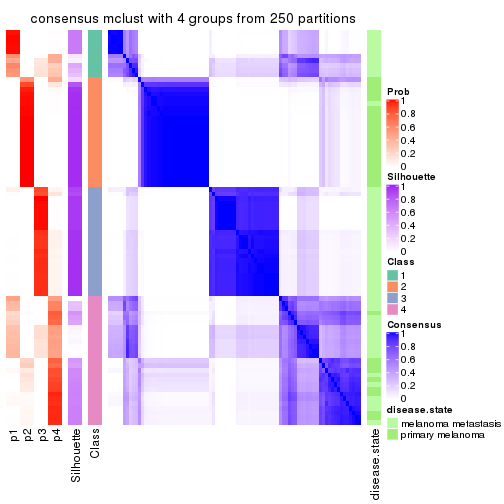
consensus_heatmap(res, k = 5)
consensus_heatmap(res, k = 6)
Heatmaps for the membership of samples in all partitions to see how consistent they are:
membership_heatmap(res, k = 2)
membership_heatmap(res, k = 3)

membership_heatmap(res, k = 4)
membership_heatmap(res, k = 5)
membership_heatmap(res, k = 6)
As soon as we have had the classes for columns, we can look for signatures which are significantly different between classes which can be candidate marks for certain classes. Following are the heatmaps for signatures.
Signature heatmaps where rows are scaled:
get_signatures(res, k = 2)
get_signatures(res, k = 3)
get_signatures(res, k = 4)

get_signatures(res, k = 5)
get_signatures(res, k = 6)
Signature heatmaps where rows are not scaled:
get_signatures(res, k = 2, scale_rows = FALSE)

get_signatures(res, k = 3, scale_rows = FALSE)
get_signatures(res, k = 4, scale_rows = FALSE)
get_signatures(res, k = 5, scale_rows = FALSE)
get_signatures(res, k = 6, scale_rows = FALSE)
Compare the overlap of signatures from different k:
compare_signatures(res)

get_signature() returns a data frame invisibly. TO get the list of signatures, the function
call should be assigned to a variable explicitly. In following code, if plot argument is set
to FALSE, no heatmap is plotted while only the differential analysis is performed.
# code only for demonstration
tb = get_signature(res, k = ..., plot = FALSE)
An example of the output of tb is:
#> which_row fdr mean_1 mean_2 scaled_mean_1 scaled_mean_2 km
#> 1 38 0.042760348 8.373488 9.131774 -0.5533452 0.5164555 1
#> 2 40 0.018707592 7.106213 8.469186 -0.6173731 0.5762149 1
#> 3 55 0.019134737 10.221463 11.207825 -0.6159697 0.5749050 1
#> 4 59 0.006059896 5.921854 7.869574 -0.6899429 0.6439467 1
#> 5 60 0.018055526 8.928898 10.211722 -0.6204761 0.5791110 1
#> 6 98 0.009384629 15.714769 14.887706 0.6635654 -0.6193277 2
...
The columns in tb are:
which_row: row indices corresponding to the input matrix.fdr: FDR for the differential test. mean_x: The mean value in group x.scaled_mean_x: The mean value in group x after rows are scaled.km: Row groups if k-means clustering is applied to rows.UMAP plot which shows how samples are separated.
dimension_reduction(res, k = 2, method = "UMAP")
dimension_reduction(res, k = 3, method = "UMAP")
dimension_reduction(res, k = 4, method = "UMAP")
dimension_reduction(res, k = 5, method = "UMAP")
dimension_reduction(res, k = 6, method = "UMAP")
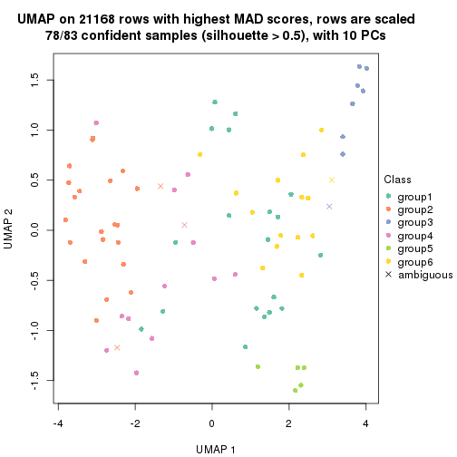
Following heatmap shows how subgroups are split when increasing k:
collect_classes(res)
Test correlation between subgroups and known annotations. If the known annotation is numeric, one-way ANOVA test is applied, and if the known annotation is discrete, chi-squared contingency table test is applied.
test_to_known_factors(res)
#> n disease.state(p) k
#> MAD:mclust 79 8.94e-12 2
#> MAD:mclust 74 4.18e-12 3
#> MAD:mclust 64 4.87e-10 4
#> MAD:mclust 67 4.26e-11 5
#> MAD:mclust 78 4.89e-11 6
If matrix rows can be associated to genes, consider to use functional_enrichment(res,
...) to perform function enrichment for the signature genes. See this vignette for more detailed explanations.
The object with results only for a single top-value method and a single partition method can be extracted as:
res = res_list["MAD", "NMF"]
# you can also extract it by
# res = res_list["MAD:NMF"]
A summary of res and all the functions that can be applied to it:
res
#> A 'ConsensusPartition' object with k = 2, 3, 4, 5, 6.
#> On a matrix with 21168 rows and 83 columns.
#> Top rows (1000, 2000, 3000, 4000, 5000) are extracted by 'MAD' method.
#> Subgroups are detected by 'NMF' method.
#> Performed in total 1250 partitions by row resampling.
#> Best k for subgroups seems to be 3.
#>
#> Following methods can be applied to this 'ConsensusPartition' object:
#> [1] "cola_report" "collect_classes" "collect_plots"
#> [4] "collect_stats" "colnames" "compare_signatures"
#> [7] "consensus_heatmap" "dimension_reduction" "functional_enrichment"
#> [10] "get_anno_col" "get_anno" "get_classes"
#> [13] "get_consensus" "get_matrix" "get_membership"
#> [16] "get_param" "get_signatures" "get_stats"
#> [19] "is_best_k" "is_stable_k" "membership_heatmap"
#> [22] "ncol" "nrow" "plot_ecdf"
#> [25] "rownames" "select_partition_number" "show"
#> [28] "suggest_best_k" "test_to_known_factors"
collect_plots() function collects all the plots made from res for all k (number of partitions)
into one single page to provide an easy and fast comparison between different k.
collect_plots(res)
The plots are:
k and the heatmap of
predicted classes for each k.k.k.k.All the plots in panels can be made by individual functions and they are plotted later in this section.
select_partition_number() produces several plots showing different
statistics for choosing “optimized” k. There are following statistics:
k;k, the area increased is defined as \(A_k - A_{k-1}\).The detailed explanations of these statistics can be found in the cola vignette.
Generally speaking, lower PAC score, higher mean silhouette score or higher
concordance corresponds to better partition. Rand index and Jaccard index
measure how similar the current partition is compared to partition with k-1.
If they are too similar, we won't accept k is better than k-1.
select_partition_number(res)
The numeric values for all these statistics can be obtained by get_stats().
get_stats(res)
#> k 1-PAC mean_silhouette concordance area_increased Rand Jaccard
#> 2 2 1.000 0.971 0.987 0.4910 0.506 0.506
#> 3 3 0.901 0.897 0.960 0.3059 0.811 0.641
#> 4 4 0.831 0.859 0.930 0.1396 0.891 0.702
#> 5 5 0.768 0.725 0.853 0.0521 0.952 0.826
#> 6 6 0.758 0.610 0.798 0.0378 0.947 0.785
suggest_best_k() suggests the best \(k\) based on these statistics. The rules are as follows:
suggest_best_k(res)
#> [1] 3
#> attr(,"optional")
#> [1] 2
There is also optional best \(k\) = 2 that is worth to check.
Following shows the table of the partitions (You need to click the show/hide
code output link to see it). The membership matrix (columns with name p*)
is inferred by
clue::cl_consensus()
function with the SE method. Basically the value in the membership matrix
represents the probability to belong to a certain group. The finall class
label for an item is determined with the group with highest probability it
belongs to.
In get_classes() function, the entropy is calculated from the membership
matrix and the silhouette score is calculated from the consensus matrix.
cbind(get_classes(res, k = 2), get_membership(res, k = 2))
#> class entropy silhouette p1 p2
#> GSM207929 2 0.278 0.936 0.048 0.952
#> GSM207930 1 0.000 0.996 1.000 0.000
#> GSM207931 2 0.388 0.910 0.076 0.924
#> GSM207932 2 0.000 0.975 0.000 1.000
#> GSM207933 2 0.000 0.975 0.000 1.000
#> GSM207934 2 0.000 0.975 0.000 1.000
#> GSM207935 2 0.000 0.975 0.000 1.000
#> GSM207936 2 0.000 0.975 0.000 1.000
#> GSM207937 2 0.000 0.975 0.000 1.000
#> GSM207938 2 0.000 0.975 0.000 1.000
#> GSM207939 2 0.000 0.975 0.000 1.000
#> GSM207940 2 0.000 0.975 0.000 1.000
#> GSM207941 2 0.000 0.975 0.000 1.000
#> GSM207942 2 0.000 0.975 0.000 1.000
#> GSM207943 2 0.000 0.975 0.000 1.000
#> GSM207944 2 0.000 0.975 0.000 1.000
#> GSM207945 2 0.000 0.975 0.000 1.000
#> GSM207946 2 0.000 0.975 0.000 1.000
#> GSM207947 1 0.000 0.996 1.000 0.000
#> GSM207948 2 0.000 0.975 0.000 1.000
#> GSM207949 2 0.000 0.975 0.000 1.000
#> GSM207950 2 0.000 0.975 0.000 1.000
#> GSM207951 2 0.000 0.975 0.000 1.000
#> GSM207952 2 0.000 0.975 0.000 1.000
#> GSM207953 2 0.000 0.975 0.000 1.000
#> GSM207954 2 0.000 0.975 0.000 1.000
#> GSM207955 2 0.000 0.975 0.000 1.000
#> GSM207956 2 0.000 0.975 0.000 1.000
#> GSM207957 2 0.000 0.975 0.000 1.000
#> GSM207958 2 0.000 0.975 0.000 1.000
#> GSM207959 2 0.000 0.975 0.000 1.000
#> GSM207960 2 0.978 0.322 0.412 0.588
#> GSM207961 1 0.000 0.996 1.000 0.000
#> GSM207962 1 0.000 0.996 1.000 0.000
#> GSM207963 1 0.000 0.996 1.000 0.000
#> GSM207964 1 0.000 0.996 1.000 0.000
#> GSM207965 1 0.000 0.996 1.000 0.000
#> GSM207966 1 0.000 0.996 1.000 0.000
#> GSM207967 2 0.706 0.770 0.192 0.808
#> GSM207968 1 0.000 0.996 1.000 0.000
#> GSM207969 1 0.000 0.996 1.000 0.000
#> GSM207970 1 0.000 0.996 1.000 0.000
#> GSM207971 1 0.000 0.996 1.000 0.000
#> GSM207972 1 0.000 0.996 1.000 0.000
#> GSM207973 1 0.000 0.996 1.000 0.000
#> GSM207974 1 0.000 0.996 1.000 0.000
#> GSM207975 1 0.000 0.996 1.000 0.000
#> GSM207976 1 0.000 0.996 1.000 0.000
#> GSM207977 1 0.000 0.996 1.000 0.000
#> GSM207978 1 0.000 0.996 1.000 0.000
#> GSM207979 1 0.000 0.996 1.000 0.000
#> GSM207980 1 0.000 0.996 1.000 0.000
#> GSM207981 1 0.000 0.996 1.000 0.000
#> GSM207982 1 0.000 0.996 1.000 0.000
#> GSM207983 1 0.000 0.996 1.000 0.000
#> GSM207984 1 0.000 0.996 1.000 0.000
#> GSM207985 1 0.000 0.996 1.000 0.000
#> GSM207986 1 0.000 0.996 1.000 0.000
#> GSM207987 1 0.000 0.996 1.000 0.000
#> GSM207988 1 0.000 0.996 1.000 0.000
#> GSM207989 1 0.000 0.996 1.000 0.000
#> GSM207990 1 0.000 0.996 1.000 0.000
#> GSM207991 1 0.000 0.996 1.000 0.000
#> GSM207992 1 0.000 0.996 1.000 0.000
#> GSM207993 1 0.000 0.996 1.000 0.000
#> GSM207994 2 0.000 0.975 0.000 1.000
#> GSM207995 1 0.000 0.996 1.000 0.000
#> GSM207996 1 0.000 0.996 1.000 0.000
#> GSM207997 1 0.000 0.996 1.000 0.000
#> GSM207998 1 0.722 0.738 0.800 0.200
#> GSM207999 2 0.506 0.872 0.112 0.888
#> GSM208000 1 0.000 0.996 1.000 0.000
#> GSM208001 1 0.000 0.996 1.000 0.000
#> GSM208002 1 0.000 0.996 1.000 0.000
#> GSM208003 1 0.000 0.996 1.000 0.000
#> GSM208004 1 0.000 0.996 1.000 0.000
#> GSM208005 1 0.000 0.996 1.000 0.000
#> GSM208006 2 0.000 0.975 0.000 1.000
#> GSM208007 2 0.000 0.975 0.000 1.000
#> GSM208008 1 0.000 0.996 1.000 0.000
#> GSM208009 1 0.000 0.996 1.000 0.000
#> GSM208010 1 0.000 0.996 1.000 0.000
#> GSM208011 1 0.000 0.996 1.000 0.000
cbind(get_classes(res, k = 3), get_membership(res, k = 3))
#> class entropy silhouette p1 p2 p3
#> GSM207929 2 0.4452 0.751 0.192 0.808 0.000
#> GSM207930 1 0.0000 0.957 1.000 0.000 0.000
#> GSM207931 2 0.5733 0.536 0.324 0.676 0.000
#> GSM207932 2 0.0000 0.972 0.000 1.000 0.000
#> GSM207933 2 0.0000 0.972 0.000 1.000 0.000
#> GSM207934 2 0.0000 0.972 0.000 1.000 0.000
#> GSM207935 2 0.0237 0.969 0.004 0.996 0.000
#> GSM207936 2 0.0000 0.972 0.000 1.000 0.000
#> GSM207937 2 0.0000 0.972 0.000 1.000 0.000
#> GSM207938 2 0.0000 0.972 0.000 1.000 0.000
#> GSM207939 2 0.0000 0.972 0.000 1.000 0.000
#> GSM207940 2 0.0000 0.972 0.000 1.000 0.000
#> GSM207941 2 0.0000 0.972 0.000 1.000 0.000
#> GSM207942 2 0.0000 0.972 0.000 1.000 0.000
#> GSM207943 2 0.0000 0.972 0.000 1.000 0.000
#> GSM207944 2 0.0000 0.972 0.000 1.000 0.000
#> GSM207945 2 0.0000 0.972 0.000 1.000 0.000
#> GSM207946 2 0.0000 0.972 0.000 1.000 0.000
#> GSM207947 1 0.0000 0.957 1.000 0.000 0.000
#> GSM207948 2 0.0237 0.969 0.000 0.996 0.004
#> GSM207949 2 0.0000 0.972 0.000 1.000 0.000
#> GSM207950 2 0.0000 0.972 0.000 1.000 0.000
#> GSM207951 2 0.0000 0.972 0.000 1.000 0.000
#> GSM207952 2 0.0592 0.961 0.012 0.988 0.000
#> GSM207953 2 0.0000 0.972 0.000 1.000 0.000
#> GSM207954 2 0.0000 0.972 0.000 1.000 0.000
#> GSM207955 2 0.0000 0.972 0.000 1.000 0.000
#> GSM207956 2 0.0000 0.972 0.000 1.000 0.000
#> GSM207957 2 0.0000 0.972 0.000 1.000 0.000
#> GSM207958 2 0.0000 0.972 0.000 1.000 0.000
#> GSM207959 2 0.0747 0.960 0.000 0.984 0.016
#> GSM207960 1 0.1163 0.929 0.972 0.028 0.000
#> GSM207961 1 0.0000 0.957 1.000 0.000 0.000
#> GSM207962 1 0.0000 0.957 1.000 0.000 0.000
#> GSM207963 1 0.0000 0.957 1.000 0.000 0.000
#> GSM207964 1 0.5760 0.471 0.672 0.000 0.328
#> GSM207965 1 0.3686 0.808 0.860 0.000 0.140
#> GSM207966 1 0.0000 0.957 1.000 0.000 0.000
#> GSM207967 1 0.2165 0.887 0.936 0.064 0.000
#> GSM207968 1 0.1411 0.926 0.964 0.000 0.036
#> GSM207969 3 0.6286 0.172 0.464 0.000 0.536
#> GSM207970 3 0.6280 0.184 0.460 0.000 0.540
#> GSM207971 3 0.0000 0.903 0.000 0.000 1.000
#> GSM207972 1 0.0000 0.957 1.000 0.000 0.000
#> GSM207973 1 0.0000 0.957 1.000 0.000 0.000
#> GSM207974 1 0.0000 0.957 1.000 0.000 0.000
#> GSM207975 1 0.0000 0.957 1.000 0.000 0.000
#> GSM207976 1 0.4842 0.686 0.776 0.000 0.224
#> GSM207977 3 0.5621 0.553 0.308 0.000 0.692
#> GSM207978 1 0.0000 0.957 1.000 0.000 0.000
#> GSM207979 1 0.0000 0.957 1.000 0.000 0.000
#> GSM207980 3 0.0000 0.903 0.000 0.000 1.000
#> GSM207981 3 0.0000 0.903 0.000 0.000 1.000
#> GSM207982 3 0.0000 0.903 0.000 0.000 1.000
#> GSM207983 3 0.0000 0.903 0.000 0.000 1.000
#> GSM207984 1 0.0000 0.957 1.000 0.000 0.000
#> GSM207985 1 0.0000 0.957 1.000 0.000 0.000
#> GSM207986 3 0.0000 0.903 0.000 0.000 1.000
#> GSM207987 3 0.0000 0.903 0.000 0.000 1.000
#> GSM207988 3 0.0000 0.903 0.000 0.000 1.000
#> GSM207989 3 0.0000 0.903 0.000 0.000 1.000
#> GSM207990 3 0.0000 0.903 0.000 0.000 1.000
#> GSM207991 3 0.0000 0.903 0.000 0.000 1.000
#> GSM207992 3 0.0000 0.903 0.000 0.000 1.000
#> GSM207993 1 0.6225 0.159 0.568 0.000 0.432
#> GSM207994 2 0.0000 0.972 0.000 1.000 0.000
#> GSM207995 1 0.0000 0.957 1.000 0.000 0.000
#> GSM207996 1 0.0000 0.957 1.000 0.000 0.000
#> GSM207997 1 0.0000 0.957 1.000 0.000 0.000
#> GSM207998 1 0.0000 0.957 1.000 0.000 0.000
#> GSM207999 2 0.4605 0.733 0.204 0.796 0.000
#> GSM208000 1 0.0000 0.957 1.000 0.000 0.000
#> GSM208001 1 0.0000 0.957 1.000 0.000 0.000
#> GSM208002 1 0.0000 0.957 1.000 0.000 0.000
#> GSM208003 1 0.0000 0.957 1.000 0.000 0.000
#> GSM208004 1 0.0000 0.957 1.000 0.000 0.000
#> GSM208005 1 0.0000 0.957 1.000 0.000 0.000
#> GSM208006 2 0.0000 0.972 0.000 1.000 0.000
#> GSM208007 2 0.0000 0.972 0.000 1.000 0.000
#> GSM208008 1 0.0000 0.957 1.000 0.000 0.000
#> GSM208009 1 0.0000 0.957 1.000 0.000 0.000
#> GSM208010 1 0.0000 0.957 1.000 0.000 0.000
#> GSM208011 3 0.3038 0.822 0.104 0.000 0.896
cbind(get_classes(res, k = 4), get_membership(res, k = 4))
#> class entropy silhouette p1 p2 p3 p4
#> GSM207929 4 0.4800 0.468 0.004 0.340 0.000 0.656
#> GSM207930 4 0.0469 0.845 0.012 0.000 0.000 0.988
#> GSM207931 2 0.5016 0.303 0.004 0.600 0.000 0.396
#> GSM207932 2 0.0188 0.964 0.004 0.996 0.000 0.000
#> GSM207933 2 0.0188 0.964 0.004 0.996 0.000 0.000
#> GSM207934 2 0.0817 0.950 0.024 0.976 0.000 0.000
#> GSM207935 2 0.4304 0.579 0.000 0.716 0.000 0.284
#> GSM207936 2 0.0336 0.960 0.000 0.992 0.000 0.008
#> GSM207937 2 0.0188 0.964 0.004 0.996 0.000 0.000
#> GSM207938 2 0.0000 0.964 0.000 1.000 0.000 0.000
#> GSM207939 2 0.0000 0.964 0.000 1.000 0.000 0.000
#> GSM207940 2 0.0000 0.964 0.000 1.000 0.000 0.000
#> GSM207941 2 0.0188 0.964 0.004 0.996 0.000 0.000
#> GSM207942 2 0.0188 0.964 0.004 0.996 0.000 0.000
#> GSM207943 2 0.0000 0.964 0.000 1.000 0.000 0.000
#> GSM207944 2 0.0000 0.964 0.000 1.000 0.000 0.000
#> GSM207945 2 0.0000 0.964 0.000 1.000 0.000 0.000
#> GSM207946 2 0.0000 0.964 0.000 1.000 0.000 0.000
#> GSM207947 4 0.0817 0.845 0.024 0.000 0.000 0.976
#> GSM207948 2 0.0000 0.964 0.000 1.000 0.000 0.000
#> GSM207949 2 0.0188 0.964 0.004 0.996 0.000 0.000
#> GSM207950 2 0.0188 0.964 0.004 0.996 0.000 0.000
#> GSM207951 2 0.0000 0.964 0.000 1.000 0.000 0.000
#> GSM207952 2 0.0188 0.964 0.004 0.996 0.000 0.000
#> GSM207953 2 0.0000 0.964 0.000 1.000 0.000 0.000
#> GSM207954 2 0.0000 0.964 0.000 1.000 0.000 0.000
#> GSM207955 2 0.0000 0.964 0.000 1.000 0.000 0.000
#> GSM207956 2 0.0376 0.962 0.004 0.992 0.000 0.004
#> GSM207957 2 0.0000 0.964 0.000 1.000 0.000 0.000
#> GSM207958 2 0.0188 0.964 0.004 0.996 0.000 0.000
#> GSM207959 2 0.1022 0.941 0.000 0.968 0.032 0.000
#> GSM207960 4 0.4057 0.717 0.032 0.152 0.000 0.816
#> GSM207961 4 0.0188 0.845 0.004 0.000 0.000 0.996
#> GSM207962 1 0.1637 0.862 0.940 0.000 0.000 0.060
#> GSM207963 4 0.3764 0.682 0.216 0.000 0.000 0.784
#> GSM207964 4 0.3074 0.766 0.000 0.000 0.152 0.848
#> GSM207965 4 0.0469 0.843 0.000 0.000 0.012 0.988
#> GSM207966 1 0.0188 0.869 0.996 0.000 0.000 0.004
#> GSM207967 1 0.6011 0.609 0.688 0.180 0.000 0.132
#> GSM207968 1 0.0524 0.868 0.988 0.000 0.004 0.008
#> GSM207969 3 0.3870 0.724 0.004 0.000 0.788 0.208
#> GSM207970 3 0.3377 0.816 0.140 0.000 0.848 0.012
#> GSM207971 3 0.1474 0.931 0.000 0.000 0.948 0.052
#> GSM207972 1 0.3164 0.846 0.884 0.000 0.052 0.064
#> GSM207973 1 0.0817 0.870 0.976 0.000 0.000 0.024
#> GSM207974 1 0.2011 0.855 0.920 0.000 0.000 0.080
#> GSM207975 4 0.0000 0.845 0.000 0.000 0.000 1.000
#> GSM207976 1 0.0524 0.865 0.988 0.000 0.008 0.004
#> GSM207977 4 0.4008 0.652 0.000 0.000 0.244 0.756
#> GSM207978 1 0.0188 0.869 0.996 0.000 0.000 0.004
#> GSM207979 1 0.0188 0.869 0.996 0.000 0.000 0.004
#> GSM207980 3 0.0000 0.966 0.000 0.000 1.000 0.000
#> GSM207981 3 0.0000 0.966 0.000 0.000 1.000 0.000
#> GSM207982 3 0.0000 0.966 0.000 0.000 1.000 0.000
#> GSM207983 3 0.0000 0.966 0.000 0.000 1.000 0.000
#> GSM207984 4 0.0000 0.845 0.000 0.000 0.000 1.000
#> GSM207985 1 0.0336 0.870 0.992 0.000 0.000 0.008
#> GSM207986 3 0.0000 0.966 0.000 0.000 1.000 0.000
#> GSM207987 3 0.0000 0.966 0.000 0.000 1.000 0.000
#> GSM207988 3 0.0000 0.966 0.000 0.000 1.000 0.000
#> GSM207989 3 0.0000 0.966 0.000 0.000 1.000 0.000
#> GSM207990 3 0.0469 0.960 0.000 0.000 0.988 0.012
#> GSM207991 3 0.0000 0.966 0.000 0.000 1.000 0.000
#> GSM207992 3 0.0000 0.966 0.000 0.000 1.000 0.000
#> GSM207993 4 0.3355 0.756 0.004 0.000 0.160 0.836
#> GSM207994 2 0.0000 0.964 0.000 1.000 0.000 0.000
#> GSM207995 4 0.2149 0.815 0.088 0.000 0.000 0.912
#> GSM207996 1 0.4331 0.665 0.712 0.000 0.000 0.288
#> GSM207997 1 0.1716 0.861 0.936 0.000 0.000 0.064
#> GSM207998 1 0.4304 0.647 0.716 0.000 0.000 0.284
#> GSM207999 2 0.4011 0.728 0.208 0.784 0.000 0.008
#> GSM208000 1 0.3266 0.803 0.832 0.000 0.000 0.168
#> GSM208001 4 0.0921 0.843 0.028 0.000 0.000 0.972
#> GSM208002 4 0.4585 0.505 0.332 0.000 0.000 0.668
#> GSM208003 4 0.0000 0.845 0.000 0.000 0.000 1.000
#> GSM208004 4 0.1474 0.836 0.052 0.000 0.000 0.948
#> GSM208005 1 0.3356 0.780 0.824 0.000 0.000 0.176
#> GSM208006 2 0.1398 0.935 0.040 0.956 0.000 0.004
#> GSM208007 2 0.0000 0.964 0.000 1.000 0.000 0.000
#> GSM208008 4 0.4730 0.414 0.364 0.000 0.000 0.636
#> GSM208009 1 0.4730 0.524 0.636 0.000 0.000 0.364
#> GSM208010 4 0.2408 0.809 0.104 0.000 0.000 0.896
#> GSM208011 3 0.0895 0.952 0.020 0.000 0.976 0.004
cbind(get_classes(res, k = 5), get_membership(res, k = 5))
#> class entropy silhouette p1 p2 p3 p4 p5
#> GSM207929 1 0.5886 0.2808 0.608 0.292 0.000 0.076 0.024
#> GSM207930 4 0.4283 0.0635 0.456 0.000 0.000 0.544 0.000
#> GSM207931 2 0.4802 0.6232 0.240 0.708 0.000 0.036 0.016
#> GSM207932 2 0.0162 0.9474 0.000 0.996 0.000 0.004 0.000
#> GSM207933 2 0.0162 0.9474 0.000 0.996 0.000 0.004 0.000
#> GSM207934 2 0.3395 0.7162 0.000 0.764 0.000 0.236 0.000
#> GSM207935 2 0.3958 0.7204 0.184 0.776 0.000 0.040 0.000
#> GSM207936 2 0.1907 0.8987 0.044 0.928 0.000 0.028 0.000
#> GSM207937 2 0.0404 0.9456 0.000 0.988 0.000 0.012 0.000
#> GSM207938 2 0.0000 0.9477 0.000 1.000 0.000 0.000 0.000
#> GSM207939 2 0.0000 0.9477 0.000 1.000 0.000 0.000 0.000
#> GSM207940 2 0.0000 0.9477 0.000 1.000 0.000 0.000 0.000
#> GSM207941 2 0.0324 0.9469 0.000 0.992 0.004 0.004 0.000
#> GSM207942 2 0.0693 0.9418 0.000 0.980 0.008 0.012 0.000
#> GSM207943 2 0.0000 0.9477 0.000 1.000 0.000 0.000 0.000
#> GSM207944 2 0.0000 0.9477 0.000 1.000 0.000 0.000 0.000
#> GSM207945 2 0.0162 0.9474 0.000 0.996 0.000 0.004 0.000
#> GSM207946 2 0.0000 0.9477 0.000 1.000 0.000 0.000 0.000
#> GSM207947 1 0.4604 0.2715 0.560 0.000 0.000 0.428 0.012
#> GSM207948 2 0.0451 0.9452 0.000 0.988 0.008 0.004 0.000
#> GSM207949 2 0.0290 0.9467 0.000 0.992 0.000 0.008 0.000
#> GSM207950 2 0.0162 0.9474 0.000 0.996 0.000 0.004 0.000
#> GSM207951 2 0.0000 0.9477 0.000 1.000 0.000 0.000 0.000
#> GSM207952 2 0.3741 0.6618 0.004 0.732 0.000 0.264 0.000
#> GSM207953 2 0.0162 0.9474 0.000 0.996 0.000 0.004 0.000
#> GSM207954 2 0.0693 0.9385 0.012 0.980 0.000 0.008 0.000
#> GSM207955 2 0.0000 0.9477 0.000 1.000 0.000 0.000 0.000
#> GSM207956 2 0.0865 0.9357 0.004 0.972 0.000 0.024 0.000
#> GSM207957 2 0.0000 0.9477 0.000 1.000 0.000 0.000 0.000
#> GSM207958 2 0.0404 0.9452 0.000 0.988 0.000 0.012 0.000
#> GSM207959 2 0.0566 0.9410 0.000 0.984 0.012 0.004 0.000
#> GSM207960 1 0.7156 0.3668 0.568 0.132 0.000 0.180 0.120
#> GSM207961 1 0.1792 0.6226 0.916 0.000 0.000 0.084 0.000
#> GSM207962 4 0.4114 0.6073 0.060 0.000 0.000 0.776 0.164
#> GSM207963 4 0.4227 0.5202 0.292 0.000 0.000 0.692 0.016
#> GSM207964 1 0.3657 0.5486 0.820 0.000 0.116 0.064 0.000
#> GSM207965 1 0.1281 0.6070 0.956 0.000 0.012 0.032 0.000
#> GSM207966 5 0.1270 0.8354 0.000 0.000 0.000 0.052 0.948
#> GSM207967 4 0.3523 0.6213 0.096 0.012 0.000 0.844 0.048
#> GSM207968 5 0.2813 0.7599 0.000 0.000 0.000 0.168 0.832
#> GSM207969 3 0.4096 0.7429 0.176 0.000 0.772 0.052 0.000
#> GSM207970 3 0.3898 0.8125 0.040 0.000 0.832 0.084 0.044
#> GSM207971 3 0.4950 0.4810 0.348 0.000 0.612 0.040 0.000
#> GSM207972 5 0.4107 0.7723 0.032 0.000 0.036 0.124 0.808
#> GSM207973 5 0.1124 0.8305 0.004 0.000 0.000 0.036 0.960
#> GSM207974 5 0.2172 0.8122 0.016 0.000 0.000 0.076 0.908
#> GSM207975 1 0.3684 0.4766 0.720 0.000 0.000 0.280 0.000
#> GSM207976 5 0.4400 0.6119 0.000 0.000 0.020 0.308 0.672
#> GSM207977 1 0.4967 0.4186 0.660 0.000 0.280 0.060 0.000
#> GSM207978 5 0.1270 0.8354 0.000 0.000 0.000 0.052 0.948
#> GSM207979 5 0.0880 0.8387 0.000 0.000 0.000 0.032 0.968
#> GSM207980 3 0.0798 0.9015 0.008 0.000 0.976 0.016 0.000
#> GSM207981 3 0.0290 0.9034 0.000 0.000 0.992 0.008 0.000
#> GSM207982 3 0.0290 0.9034 0.000 0.000 0.992 0.008 0.000
#> GSM207983 3 0.0324 0.9054 0.004 0.000 0.992 0.004 0.000
#> GSM207984 1 0.4242 0.1038 0.572 0.000 0.000 0.428 0.000
#> GSM207985 5 0.0794 0.8389 0.000 0.000 0.000 0.028 0.972
#> GSM207986 3 0.0324 0.9054 0.004 0.000 0.992 0.004 0.000
#> GSM207987 3 0.0324 0.9054 0.004 0.000 0.992 0.004 0.000
#> GSM207988 3 0.0324 0.9054 0.004 0.000 0.992 0.004 0.000
#> GSM207989 3 0.0324 0.9054 0.004 0.000 0.992 0.004 0.000
#> GSM207990 3 0.2707 0.8237 0.132 0.000 0.860 0.008 0.000
#> GSM207991 3 0.0566 0.9021 0.004 0.000 0.984 0.012 0.000
#> GSM207992 3 0.0162 0.9051 0.004 0.000 0.996 0.000 0.000
#> GSM207993 1 0.4280 0.5320 0.772 0.000 0.088 0.140 0.000
#> GSM207994 2 0.0000 0.9477 0.000 1.000 0.000 0.000 0.000
#> GSM207995 1 0.4237 0.5495 0.752 0.000 0.000 0.200 0.048
#> GSM207996 5 0.6636 -0.1511 0.264 0.000 0.000 0.284 0.452
#> GSM207997 5 0.1626 0.8296 0.016 0.000 0.000 0.044 0.940
#> GSM207998 4 0.6309 0.4808 0.208 0.000 0.000 0.528 0.264
#> GSM207999 4 0.5375 0.3534 0.036 0.280 0.000 0.652 0.032
#> GSM208000 4 0.4761 0.6258 0.124 0.000 0.000 0.732 0.144
#> GSM208001 1 0.3421 0.5742 0.788 0.000 0.000 0.204 0.008
#> GSM208002 1 0.6145 -0.0766 0.448 0.000 0.004 0.112 0.436
#> GSM208003 1 0.2127 0.6170 0.892 0.000 0.000 0.108 0.000
#> GSM208004 1 0.3521 0.6057 0.820 0.000 0.000 0.140 0.040
#> GSM208005 5 0.3229 0.7780 0.032 0.000 0.000 0.128 0.840
#> GSM208006 2 0.3968 0.6415 0.004 0.716 0.000 0.276 0.004
#> GSM208007 2 0.0162 0.9474 0.000 0.996 0.000 0.004 0.000
#> GSM208008 4 0.4141 0.5591 0.248 0.000 0.000 0.728 0.024
#> GSM208009 4 0.6700 0.3142 0.244 0.000 0.000 0.400 0.356
#> GSM208010 1 0.3416 0.6085 0.840 0.000 0.000 0.088 0.072
#> GSM208011 3 0.4857 0.5098 0.040 0.000 0.636 0.324 0.000
cbind(get_classes(res, k = 6), get_membership(res, k = 6))
#> class entropy silhouette p1 p2 p3 p4 p5 p6
#> GSM207929 4 0.6241 0.1385 0.000 0.244 0.000 0.384 0.008 0.364
#> GSM207930 4 0.4694 0.2650 0.376 0.000 0.000 0.572 0.000 0.052
#> GSM207931 2 0.4566 0.6083 0.000 0.716 0.000 0.076 0.016 0.192
#> GSM207932 2 0.0405 0.8947 0.004 0.988 0.008 0.000 0.000 0.000
#> GSM207933 2 0.0000 0.8960 0.000 1.000 0.000 0.000 0.000 0.000
#> GSM207934 2 0.4052 0.4766 0.356 0.628 0.000 0.016 0.000 0.000
#> GSM207935 2 0.5585 0.2651 0.028 0.556 0.000 0.332 0.000 0.084
#> GSM207936 2 0.3440 0.7090 0.000 0.776 0.000 0.196 0.000 0.028
#> GSM207937 2 0.2100 0.8275 0.000 0.884 0.000 0.112 0.000 0.004
#> GSM207938 2 0.0146 0.8961 0.000 0.996 0.000 0.000 0.000 0.004
#> GSM207939 2 0.0146 0.8961 0.000 0.996 0.000 0.000 0.000 0.004
#> GSM207940 2 0.0146 0.8961 0.000 0.996 0.000 0.000 0.000 0.004
#> GSM207941 2 0.1116 0.8836 0.008 0.960 0.028 0.004 0.000 0.000
#> GSM207942 2 0.1478 0.8755 0.020 0.944 0.032 0.000 0.000 0.004
#> GSM207943 2 0.0000 0.8960 0.000 1.000 0.000 0.000 0.000 0.000
#> GSM207944 2 0.0000 0.8960 0.000 1.000 0.000 0.000 0.000 0.000
#> GSM207945 2 0.0146 0.8958 0.000 0.996 0.000 0.004 0.000 0.000
#> GSM207946 2 0.0146 0.8961 0.000 0.996 0.000 0.000 0.000 0.004
#> GSM207947 4 0.4149 0.4037 0.212 0.000 0.000 0.728 0.004 0.056
#> GSM207948 2 0.1396 0.8765 0.008 0.952 0.024 0.012 0.000 0.004
#> GSM207949 2 0.0000 0.8960 0.000 1.000 0.000 0.000 0.000 0.000
#> GSM207950 2 0.0405 0.8949 0.008 0.988 0.000 0.004 0.000 0.000
#> GSM207951 2 0.0146 0.8961 0.000 0.996 0.000 0.000 0.000 0.004
#> GSM207952 2 0.6169 -0.1687 0.336 0.400 0.000 0.260 0.000 0.004
#> GSM207953 2 0.0000 0.8960 0.000 1.000 0.000 0.000 0.000 0.000
#> GSM207954 2 0.0632 0.8912 0.000 0.976 0.000 0.000 0.000 0.024
#> GSM207955 2 0.0291 0.8963 0.000 0.992 0.000 0.004 0.000 0.004
#> GSM207956 2 0.2225 0.8288 0.092 0.892 0.000 0.008 0.000 0.008
#> GSM207957 2 0.0291 0.8963 0.000 0.992 0.000 0.004 0.000 0.004
#> GSM207958 2 0.0777 0.8898 0.004 0.972 0.000 0.024 0.000 0.000
#> GSM207959 2 0.0909 0.8876 0.000 0.968 0.012 0.000 0.000 0.020
#> GSM207960 4 0.6635 0.1014 0.032 0.064 0.000 0.480 0.068 0.356
#> GSM207961 6 0.4156 0.5086 0.080 0.000 0.000 0.188 0.000 0.732
#> GSM207962 1 0.1787 0.5275 0.920 0.000 0.000 0.004 0.068 0.008
#> GSM207963 1 0.3233 0.4854 0.832 0.000 0.000 0.104 0.004 0.060
#> GSM207964 6 0.2077 0.6137 0.008 0.000 0.040 0.024 0.008 0.920
#> GSM207965 6 0.1812 0.6133 0.004 0.000 0.008 0.060 0.004 0.924
#> GSM207966 5 0.1036 0.7686 0.024 0.000 0.000 0.008 0.964 0.004
#> GSM207967 1 0.2001 0.5109 0.900 0.000 0.000 0.092 0.004 0.004
#> GSM207968 5 0.4244 0.6427 0.172 0.000 0.000 0.024 0.752 0.052
#> GSM207969 6 0.5745 0.0523 0.020 0.000 0.412 0.076 0.008 0.484
#> GSM207970 3 0.7693 0.0557 0.104 0.000 0.420 0.088 0.080 0.308
#> GSM207971 6 0.4441 0.4335 0.016 0.000 0.240 0.044 0.000 0.700
#> GSM207972 5 0.5960 0.4559 0.012 0.000 0.004 0.188 0.544 0.252
#> GSM207973 5 0.2135 0.7355 0.000 0.000 0.000 0.128 0.872 0.000
#> GSM207974 5 0.3482 0.6012 0.000 0.000 0.000 0.316 0.684 0.000
#> GSM207975 4 0.5975 0.2973 0.256 0.000 0.000 0.444 0.000 0.300
#> GSM207976 5 0.7009 0.3701 0.280 0.000 0.064 0.148 0.484 0.024
#> GSM207977 4 0.6428 0.1007 0.024 0.000 0.232 0.440 0.000 0.304
#> GSM207978 5 0.0858 0.7684 0.028 0.000 0.000 0.004 0.968 0.000
#> GSM207979 5 0.0405 0.7697 0.000 0.000 0.000 0.008 0.988 0.004
#> GSM207980 3 0.2853 0.8357 0.012 0.000 0.868 0.072 0.000 0.048
#> GSM207981 3 0.1390 0.8734 0.016 0.000 0.948 0.032 0.000 0.004
#> GSM207982 3 0.1313 0.8750 0.016 0.000 0.952 0.028 0.000 0.004
#> GSM207983 3 0.0508 0.8850 0.000 0.000 0.984 0.004 0.000 0.012
#> GSM207984 1 0.5894 -0.1610 0.464 0.000 0.000 0.308 0.000 0.228
#> GSM207985 5 0.0951 0.7689 0.008 0.000 0.000 0.020 0.968 0.004
#> GSM207986 3 0.0972 0.8807 0.000 0.000 0.964 0.008 0.000 0.028
#> GSM207987 3 0.0520 0.8847 0.000 0.000 0.984 0.008 0.000 0.008
#> GSM207988 3 0.0914 0.8828 0.000 0.000 0.968 0.016 0.000 0.016
#> GSM207989 3 0.0914 0.8831 0.000 0.000 0.968 0.016 0.000 0.016
#> GSM207990 3 0.4287 0.5300 0.008 0.000 0.656 0.024 0.000 0.312
#> GSM207991 3 0.0748 0.8822 0.004 0.000 0.976 0.016 0.000 0.004
#> GSM207992 3 0.0692 0.8832 0.000 0.000 0.976 0.004 0.000 0.020
#> GSM207993 6 0.2990 0.6125 0.084 0.000 0.036 0.020 0.000 0.860
#> GSM207994 2 0.0405 0.8959 0.000 0.988 0.000 0.004 0.000 0.008
#> GSM207995 6 0.6608 0.0517 0.168 0.000 0.000 0.300 0.060 0.472
#> GSM207996 1 0.6758 0.0739 0.356 0.000 0.000 0.036 0.292 0.316
#> GSM207997 5 0.2868 0.7255 0.000 0.000 0.004 0.032 0.852 0.112
#> GSM207998 4 0.6234 0.1054 0.344 0.000 0.000 0.424 0.220 0.012
#> GSM207999 1 0.3953 0.3736 0.776 0.172 0.000 0.024 0.016 0.012
#> GSM208000 1 0.2891 0.5358 0.872 0.000 0.000 0.032 0.036 0.060
#> GSM208001 6 0.5287 0.3862 0.224 0.000 0.000 0.176 0.000 0.600
#> GSM208002 6 0.4534 0.5055 0.004 0.000 0.020 0.108 0.120 0.748
#> GSM208003 6 0.2660 0.6227 0.084 0.000 0.000 0.048 0.000 0.868
#> GSM208004 6 0.5012 0.5326 0.216 0.000 0.000 0.064 0.040 0.680
#> GSM208005 5 0.4246 0.4467 0.000 0.000 0.000 0.452 0.532 0.016
#> GSM208006 2 0.5745 0.2154 0.376 0.520 0.000 0.028 0.008 0.068
#> GSM208007 2 0.0820 0.8902 0.000 0.972 0.000 0.012 0.000 0.016
#> GSM208008 1 0.3277 0.4133 0.792 0.000 0.000 0.188 0.004 0.016
#> GSM208009 1 0.6176 0.2967 0.516 0.000 0.000 0.024 0.220 0.240
#> GSM208010 6 0.4859 0.5689 0.068 0.000 0.000 0.156 0.056 0.720
#> GSM208011 1 0.5864 -0.0556 0.460 0.000 0.424 0.064 0.000 0.052
Heatmaps for the consensus matrix. It visualizes the probability of two samples to be in a same group.
consensus_heatmap(res, k = 2)
consensus_heatmap(res, k = 3)
consensus_heatmap(res, k = 4)
consensus_heatmap(res, k = 5)
consensus_heatmap(res, k = 6)
Heatmaps for the membership of samples in all partitions to see how consistent they are:
membership_heatmap(res, k = 2)
membership_heatmap(res, k = 3)
membership_heatmap(res, k = 4)
membership_heatmap(res, k = 5)
membership_heatmap(res, k = 6)
As soon as we have had the classes for columns, we can look for signatures which are significantly different between classes which can be candidate marks for certain classes. Following are the heatmaps for signatures.
Signature heatmaps where rows are scaled:
get_signatures(res, k = 2)
get_signatures(res, k = 3)
get_signatures(res, k = 4)

get_signatures(res, k = 5)
get_signatures(res, k = 6)
Signature heatmaps where rows are not scaled:
get_signatures(res, k = 2, scale_rows = FALSE)
get_signatures(res, k = 3, scale_rows = FALSE)
get_signatures(res, k = 4, scale_rows = FALSE)
get_signatures(res, k = 5, scale_rows = FALSE)
get_signatures(res, k = 6, scale_rows = FALSE)
Compare the overlap of signatures from different k:
compare_signatures(res)
get_signature() returns a data frame invisibly. TO get the list of signatures, the function
call should be assigned to a variable explicitly. In following code, if plot argument is set
to FALSE, no heatmap is plotted while only the differential analysis is performed.
# code only for demonstration
tb = get_signature(res, k = ..., plot = FALSE)
An example of the output of tb is:
#> which_row fdr mean_1 mean_2 scaled_mean_1 scaled_mean_2 km
#> 1 38 0.042760348 8.373488 9.131774 -0.5533452 0.5164555 1
#> 2 40 0.018707592 7.106213 8.469186 -0.6173731 0.5762149 1
#> 3 55 0.019134737 10.221463 11.207825 -0.6159697 0.5749050 1
#> 4 59 0.006059896 5.921854 7.869574 -0.6899429 0.6439467 1
#> 5 60 0.018055526 8.928898 10.211722 -0.6204761 0.5791110 1
#> 6 98 0.009384629 15.714769 14.887706 0.6635654 -0.6193277 2
...
The columns in tb are:
which_row: row indices corresponding to the input matrix.fdr: FDR for the differential test. mean_x: The mean value in group x.scaled_mean_x: The mean value in group x after rows are scaled.km: Row groups if k-means clustering is applied to rows.UMAP plot which shows how samples are separated.
dimension_reduction(res, k = 2, method = "UMAP")
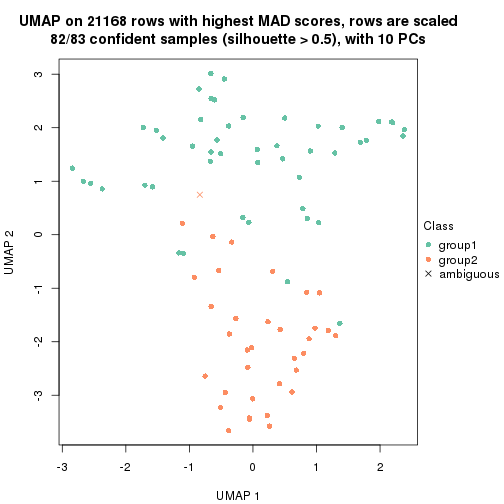
dimension_reduction(res, k = 3, method = "UMAP")
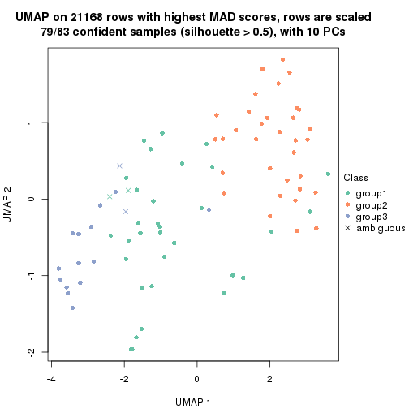
dimension_reduction(res, k = 4, method = "UMAP")

dimension_reduction(res, k = 5, method = "UMAP")
dimension_reduction(res, k = 6, method = "UMAP")

Following heatmap shows how subgroups are split when increasing k:
collect_classes(res)
Test correlation between subgroups and known annotations. If the known annotation is numeric, one-way ANOVA test is applied, and if the known annotation is discrete, chi-squared contingency table test is applied.
test_to_known_factors(res)
#> n disease.state(p) k
#> MAD:NMF 82 4.73e-13 2
#> MAD:NMF 79 5.68e-13 3
#> MAD:NMF 80 2.23e-12 4
#> MAD:NMF 70 5.41e-12 5
#> MAD:NMF 57 4.64e-10 6
If matrix rows can be associated to genes, consider to use functional_enrichment(res,
...) to perform function enrichment for the signature genes. See this vignette for more detailed explanations.
The object with results only for a single top-value method and a single partition method can be extracted as:
res = res_list["ATC", "hclust"]
# you can also extract it by
# res = res_list["ATC:hclust"]
A summary of res and all the functions that can be applied to it:
res
#> A 'ConsensusPartition' object with k = 2, 3, 4, 5, 6.
#> On a matrix with 21168 rows and 83 columns.
#> Top rows (1000, 2000, 3000, 4000, 5000) are extracted by 'ATC' method.
#> Subgroups are detected by 'hclust' method.
#> Performed in total 1250 partitions by row resampling.
#> Best k for subgroups seems to be 4.
#>
#> Following methods can be applied to this 'ConsensusPartition' object:
#> [1] "cola_report" "collect_classes" "collect_plots"
#> [4] "collect_stats" "colnames" "compare_signatures"
#> [7] "consensus_heatmap" "dimension_reduction" "functional_enrichment"
#> [10] "get_anno_col" "get_anno" "get_classes"
#> [13] "get_consensus" "get_matrix" "get_membership"
#> [16] "get_param" "get_signatures" "get_stats"
#> [19] "is_best_k" "is_stable_k" "membership_heatmap"
#> [22] "ncol" "nrow" "plot_ecdf"
#> [25] "rownames" "select_partition_number" "show"
#> [28] "suggest_best_k" "test_to_known_factors"
collect_plots() function collects all the plots made from res for all k (number of partitions)
into one single page to provide an easy and fast comparison between different k.
collect_plots(res)
The plots are:
k and the heatmap of
predicted classes for each k.k.k.k.All the plots in panels can be made by individual functions and they are plotted later in this section.
select_partition_number() produces several plots showing different
statistics for choosing “optimized” k. There are following statistics:
k;k, the area increased is defined as \(A_k - A_{k-1}\).The detailed explanations of these statistics can be found in the cola vignette.
Generally speaking, lower PAC score, higher mean silhouette score or higher
concordance corresponds to better partition. Rand index and Jaccard index
measure how similar the current partition is compared to partition with k-1.
If they are too similar, we won't accept k is better than k-1.
select_partition_number(res)
The numeric values for all these statistics can be obtained by get_stats().
get_stats(res)
#> k 1-PAC mean_silhouette concordance area_increased Rand Jaccard
#> 2 2 0.649 0.914 0.953 0.4190 0.584 0.584
#> 3 3 0.577 0.739 0.824 0.4751 0.766 0.598
#> 4 4 0.586 0.778 0.832 0.1294 0.914 0.759
#> 5 5 0.595 0.720 0.799 0.0528 0.981 0.933
#> 6 6 0.721 0.583 0.784 0.0662 0.939 0.774
suggest_best_k() suggests the best \(k\) based on these statistics. The rules are as follows:
suggest_best_k(res)
#> [1] 4
Following shows the table of the partitions (You need to click the show/hide
code output link to see it). The membership matrix (columns with name p*)
is inferred by
clue::cl_consensus()
function with the SE method. Basically the value in the membership matrix
represents the probability to belong to a certain group. The finall class
label for an item is determined with the group with highest probability it
belongs to.
In get_classes() function, the entropy is calculated from the membership
matrix and the silhouette score is calculated from the consensus matrix.
cbind(get_classes(res, k = 2), get_membership(res, k = 2))
#> class entropy silhouette p1 p2
#> GSM207929 1 0.5178 0.892 0.884 0.116
#> GSM207930 1 0.4431 0.907 0.908 0.092
#> GSM207931 1 0.4939 0.898 0.892 0.108
#> GSM207932 2 0.0000 0.945 0.000 1.000
#> GSM207933 2 0.0000 0.945 0.000 1.000
#> GSM207934 2 0.0000 0.945 0.000 1.000
#> GSM207935 1 0.6148 0.862 0.848 0.152
#> GSM207936 1 0.5178 0.892 0.884 0.116
#> GSM207937 1 0.6148 0.862 0.848 0.152
#> GSM207938 2 0.4562 0.876 0.096 0.904
#> GSM207939 2 0.6887 0.774 0.184 0.816
#> GSM207940 2 0.8386 0.638 0.268 0.732
#> GSM207941 2 0.0000 0.945 0.000 1.000
#> GSM207942 2 0.0000 0.945 0.000 1.000
#> GSM207943 2 0.0000 0.945 0.000 1.000
#> GSM207944 2 0.0000 0.945 0.000 1.000
#> GSM207945 2 0.0000 0.945 0.000 1.000
#> GSM207946 2 0.5519 0.844 0.128 0.872
#> GSM207947 1 0.6887 0.824 0.816 0.184
#> GSM207948 2 0.0376 0.944 0.004 0.996
#> GSM207949 2 0.0000 0.945 0.000 1.000
#> GSM207950 2 0.0000 0.945 0.000 1.000
#> GSM207951 2 0.0376 0.944 0.004 0.996
#> GSM207952 2 0.4161 0.886 0.084 0.916
#> GSM207953 2 0.0376 0.944 0.004 0.996
#> GSM207954 1 0.5737 0.877 0.864 0.136
#> GSM207955 2 0.0376 0.944 0.004 0.996
#> GSM207956 2 0.0938 0.939 0.012 0.988
#> GSM207957 2 0.9460 0.422 0.364 0.636
#> GSM207958 2 0.0000 0.945 0.000 1.000
#> GSM207959 1 0.5737 0.877 0.864 0.136
#> GSM207960 1 0.4690 0.904 0.900 0.100
#> GSM207961 1 0.0000 0.950 1.000 0.000
#> GSM207962 1 0.4690 0.903 0.900 0.100
#> GSM207963 1 0.4690 0.903 0.900 0.100
#> GSM207964 1 0.0000 0.950 1.000 0.000
#> GSM207965 1 0.0000 0.950 1.000 0.000
#> GSM207966 1 0.0000 0.950 1.000 0.000
#> GSM207967 2 0.0000 0.945 0.000 1.000
#> GSM207968 1 0.1414 0.942 0.980 0.020
#> GSM207969 1 0.0000 0.950 1.000 0.000
#> GSM207970 1 0.0000 0.950 1.000 0.000
#> GSM207971 1 0.0000 0.950 1.000 0.000
#> GSM207972 1 0.6343 0.854 0.840 0.160
#> GSM207973 1 0.0000 0.950 1.000 0.000
#> GSM207974 1 0.0000 0.950 1.000 0.000
#> GSM207975 1 0.0000 0.950 1.000 0.000
#> GSM207976 2 0.0000 0.945 0.000 1.000
#> GSM207977 1 0.0000 0.950 1.000 0.000
#> GSM207978 1 0.0000 0.950 1.000 0.000
#> GSM207979 1 0.0000 0.950 1.000 0.000
#> GSM207980 1 0.0000 0.950 1.000 0.000
#> GSM207981 1 0.0000 0.950 1.000 0.000
#> GSM207982 1 0.0000 0.950 1.000 0.000
#> GSM207983 1 0.0000 0.950 1.000 0.000
#> GSM207984 1 0.0000 0.950 1.000 0.000
#> GSM207985 1 0.0000 0.950 1.000 0.000
#> GSM207986 1 0.0000 0.950 1.000 0.000
#> GSM207987 1 0.0000 0.950 1.000 0.000
#> GSM207988 1 0.0000 0.950 1.000 0.000
#> GSM207989 1 0.0000 0.950 1.000 0.000
#> GSM207990 1 0.0000 0.950 1.000 0.000
#> GSM207991 1 0.0000 0.950 1.000 0.000
#> GSM207992 1 0.0000 0.950 1.000 0.000
#> GSM207993 1 0.0000 0.950 1.000 0.000
#> GSM207994 1 0.5737 0.877 0.864 0.136
#> GSM207995 1 0.0000 0.950 1.000 0.000
#> GSM207996 1 0.0000 0.950 1.000 0.000
#> GSM207997 1 0.0000 0.950 1.000 0.000
#> GSM207998 1 0.3431 0.922 0.936 0.064
#> GSM207999 1 0.6801 0.830 0.820 0.180
#> GSM208000 1 0.0000 0.950 1.000 0.000
#> GSM208001 1 0.0000 0.950 1.000 0.000
#> GSM208002 1 0.0000 0.950 1.000 0.000
#> GSM208003 1 0.0000 0.950 1.000 0.000
#> GSM208004 1 0.0000 0.950 1.000 0.000
#> GSM208005 1 0.6887 0.824 0.816 0.184
#> GSM208006 1 0.7219 0.805 0.800 0.200
#> GSM208007 1 0.7219 0.805 0.800 0.200
#> GSM208008 1 0.4690 0.903 0.900 0.100
#> GSM208009 1 0.0000 0.950 1.000 0.000
#> GSM208010 1 0.0000 0.950 1.000 0.000
#> GSM208011 1 0.0000 0.950 1.000 0.000
cbind(get_classes(res, k = 3), get_membership(res, k = 3))
#> class entropy silhouette p1 p2 p3
#> GSM207929 1 0.1399 0.804 0.968 0.004 0.028
#> GSM207930 1 0.1643 0.790 0.956 0.000 0.044
#> GSM207931 1 0.1163 0.803 0.972 0.000 0.028
#> GSM207932 2 0.0000 0.919 0.000 1.000 0.000
#> GSM207933 2 0.0424 0.921 0.008 0.992 0.000
#> GSM207934 2 0.0000 0.919 0.000 1.000 0.000
#> GSM207935 1 0.1905 0.805 0.956 0.028 0.016
#> GSM207936 1 0.1399 0.804 0.968 0.004 0.028
#> GSM207937 1 0.1905 0.805 0.956 0.028 0.016
#> GSM207938 2 0.4605 0.780 0.204 0.796 0.000
#> GSM207939 2 0.6373 0.677 0.268 0.704 0.028
#> GSM207940 2 0.7085 0.534 0.356 0.612 0.032
#> GSM207941 2 0.0000 0.919 0.000 1.000 0.000
#> GSM207942 2 0.0000 0.919 0.000 1.000 0.000
#> GSM207943 2 0.0592 0.921 0.012 0.988 0.000
#> GSM207944 2 0.0592 0.921 0.012 0.988 0.000
#> GSM207945 2 0.0237 0.920 0.004 0.996 0.000
#> GSM207946 2 0.5070 0.753 0.224 0.772 0.004
#> GSM207947 1 0.4174 0.740 0.872 0.092 0.036
#> GSM207948 2 0.0592 0.921 0.012 0.988 0.000
#> GSM207949 2 0.0592 0.921 0.012 0.988 0.000
#> GSM207950 2 0.0592 0.921 0.012 0.988 0.000
#> GSM207951 2 0.0592 0.921 0.012 0.988 0.000
#> GSM207952 2 0.3752 0.834 0.144 0.856 0.000
#> GSM207953 2 0.0592 0.921 0.012 0.988 0.000
#> GSM207954 1 0.6189 0.515 0.632 0.004 0.364
#> GSM207955 2 0.0592 0.921 0.012 0.988 0.000
#> GSM207956 2 0.1529 0.908 0.040 0.960 0.000
#> GSM207957 2 0.7386 0.317 0.460 0.508 0.032
#> GSM207958 2 0.0424 0.921 0.008 0.992 0.000
#> GSM207959 1 0.6189 0.515 0.632 0.004 0.364
#> GSM207960 1 0.1529 0.795 0.960 0.000 0.040
#> GSM207961 3 0.5882 0.810 0.348 0.000 0.652
#> GSM207962 1 0.1411 0.798 0.964 0.000 0.036
#> GSM207963 1 0.1411 0.798 0.964 0.000 0.036
#> GSM207964 3 0.6026 0.797 0.376 0.000 0.624
#> GSM207965 3 0.6026 0.797 0.376 0.000 0.624
#> GSM207966 3 0.5810 0.800 0.336 0.000 0.664
#> GSM207967 2 0.0237 0.918 0.004 0.996 0.000
#> GSM207968 1 0.5785 -0.124 0.668 0.000 0.332
#> GSM207969 3 0.6008 0.799 0.372 0.000 0.628
#> GSM207970 3 0.6008 0.799 0.372 0.000 0.628
#> GSM207971 3 0.5905 0.809 0.352 0.000 0.648
#> GSM207972 1 0.2793 0.800 0.928 0.044 0.028
#> GSM207973 3 0.6295 0.673 0.472 0.000 0.528
#> GSM207974 3 0.6295 0.673 0.472 0.000 0.528
#> GSM207975 3 0.5882 0.810 0.348 0.000 0.652
#> GSM207976 2 0.0237 0.918 0.004 0.996 0.000
#> GSM207977 3 0.6026 0.797 0.376 0.000 0.624
#> GSM207978 3 0.5810 0.800 0.336 0.000 0.664
#> GSM207979 3 0.5810 0.800 0.336 0.000 0.664
#> GSM207980 3 0.6299 0.625 0.476 0.000 0.524
#> GSM207981 3 0.4002 0.331 0.160 0.000 0.840
#> GSM207982 3 0.4002 0.331 0.160 0.000 0.840
#> GSM207983 3 0.4002 0.330 0.160 0.000 0.840
#> GSM207984 3 0.5882 0.810 0.348 0.000 0.652
#> GSM207985 3 0.5810 0.800 0.336 0.000 0.664
#> GSM207986 3 0.4002 0.330 0.160 0.000 0.840
#> GSM207987 3 0.4002 0.330 0.160 0.000 0.840
#> GSM207988 3 0.4002 0.330 0.160 0.000 0.840
#> GSM207989 3 0.4002 0.330 0.160 0.000 0.840
#> GSM207990 3 0.5882 0.810 0.348 0.000 0.652
#> GSM207991 3 0.6299 0.625 0.476 0.000 0.524
#> GSM207992 3 0.6299 0.625 0.476 0.000 0.524
#> GSM207993 3 0.5882 0.810 0.348 0.000 0.652
#> GSM207994 1 0.6228 0.509 0.624 0.004 0.372
#> GSM207995 3 0.5905 0.808 0.352 0.000 0.648
#> GSM207996 3 0.5905 0.808 0.352 0.000 0.648
#> GSM207997 3 0.5882 0.810 0.348 0.000 0.652
#> GSM207998 1 0.4702 0.469 0.788 0.000 0.212
#> GSM207999 1 0.1753 0.790 0.952 0.048 0.000
#> GSM208000 3 0.5905 0.808 0.352 0.000 0.648
#> GSM208001 3 0.5905 0.808 0.352 0.000 0.648
#> GSM208002 3 0.5882 0.810 0.348 0.000 0.652
#> GSM208003 3 0.5882 0.810 0.348 0.000 0.652
#> GSM208004 3 0.5905 0.808 0.352 0.000 0.648
#> GSM208005 1 0.4174 0.740 0.872 0.092 0.036
#> GSM208006 1 0.2261 0.780 0.932 0.068 0.000
#> GSM208007 1 0.2261 0.780 0.932 0.068 0.000
#> GSM208008 1 0.1411 0.798 0.964 0.000 0.036
#> GSM208009 3 0.5905 0.808 0.352 0.000 0.648
#> GSM208010 3 0.5882 0.810 0.348 0.000 0.652
#> GSM208011 3 0.6252 0.717 0.444 0.000 0.556
cbind(get_classes(res, k = 4), get_membership(res, k = 4))
#> class entropy silhouette p1 p2 p3 p4
#> GSM207929 4 0.5946 0.828 0.152 0.004 0.136 0.708
#> GSM207930 4 0.3401 0.840 0.152 0.000 0.008 0.840
#> GSM207931 4 0.5613 0.830 0.156 0.000 0.120 0.724
#> GSM207932 2 0.0336 0.906 0.000 0.992 0.008 0.000
#> GSM207933 2 0.0000 0.906 0.000 1.000 0.000 0.000
#> GSM207934 2 0.0707 0.902 0.000 0.980 0.020 0.000
#> GSM207935 4 0.6619 0.827 0.152 0.028 0.136 0.684
#> GSM207936 4 0.5946 0.828 0.152 0.004 0.136 0.708
#> GSM207937 4 0.6619 0.827 0.152 0.028 0.136 0.684
#> GSM207938 2 0.4525 0.783 0.000 0.804 0.116 0.080
#> GSM207939 2 0.6168 0.685 0.020 0.712 0.156 0.112
#> GSM207940 2 0.7145 0.556 0.020 0.620 0.196 0.164
#> GSM207941 2 0.0336 0.906 0.000 0.992 0.008 0.000
#> GSM207942 2 0.0336 0.906 0.000 0.992 0.008 0.000
#> GSM207943 2 0.0188 0.907 0.000 0.996 0.000 0.004
#> GSM207944 2 0.0188 0.907 0.000 0.996 0.000 0.004
#> GSM207945 2 0.0188 0.906 0.000 0.996 0.004 0.000
#> GSM207946 2 0.5266 0.756 0.020 0.780 0.116 0.084
#> GSM207947 4 0.5470 0.801 0.148 0.000 0.116 0.736
#> GSM207948 2 0.0188 0.907 0.000 0.996 0.000 0.004
#> GSM207949 2 0.0188 0.907 0.000 0.996 0.000 0.004
#> GSM207950 2 0.0188 0.907 0.000 0.996 0.000 0.004
#> GSM207951 2 0.0188 0.907 0.000 0.996 0.000 0.004
#> GSM207952 2 0.5226 0.756 0.000 0.756 0.128 0.116
#> GSM207953 2 0.0188 0.907 0.000 0.996 0.000 0.004
#> GSM207954 3 0.5618 0.244 0.028 0.012 0.672 0.288
#> GSM207955 2 0.0188 0.907 0.000 0.996 0.000 0.004
#> GSM207956 2 0.1151 0.896 0.000 0.968 0.008 0.024
#> GSM207957 2 0.7905 0.348 0.020 0.516 0.212 0.252
#> GSM207958 2 0.0000 0.906 0.000 1.000 0.000 0.000
#> GSM207959 3 0.5618 0.244 0.028 0.012 0.672 0.288
#> GSM207960 4 0.5412 0.825 0.168 0.000 0.096 0.736
#> GSM207961 1 0.0000 0.873 1.000 0.000 0.000 0.000
#> GSM207962 4 0.3597 0.839 0.148 0.000 0.016 0.836
#> GSM207963 4 0.3597 0.839 0.148 0.000 0.016 0.836
#> GSM207964 1 0.1722 0.857 0.944 0.000 0.048 0.008
#> GSM207965 1 0.1722 0.857 0.944 0.000 0.048 0.008
#> GSM207966 1 0.3708 0.708 0.832 0.000 0.020 0.148
#> GSM207967 2 0.2868 0.842 0.000 0.864 0.136 0.000
#> GSM207968 4 0.5928 0.309 0.456 0.000 0.036 0.508
#> GSM207969 1 0.1576 0.859 0.948 0.000 0.048 0.004
#> GSM207970 1 0.1576 0.859 0.948 0.000 0.048 0.004
#> GSM207971 1 0.1109 0.869 0.968 0.000 0.028 0.004
#> GSM207972 4 0.6264 0.824 0.152 0.044 0.084 0.720
#> GSM207973 1 0.5013 0.447 0.688 0.000 0.020 0.292
#> GSM207974 1 0.5013 0.447 0.688 0.000 0.020 0.292
#> GSM207975 1 0.0000 0.873 1.000 0.000 0.000 0.000
#> GSM207976 2 0.2868 0.842 0.000 0.864 0.136 0.000
#> GSM207977 1 0.1722 0.857 0.944 0.000 0.048 0.008
#> GSM207978 1 0.3708 0.708 0.832 0.000 0.020 0.148
#> GSM207979 1 0.3708 0.708 0.832 0.000 0.020 0.148
#> GSM207980 1 0.4295 0.584 0.752 0.000 0.240 0.008
#> GSM207981 3 0.4720 0.740 0.324 0.000 0.672 0.004
#> GSM207982 3 0.4720 0.740 0.324 0.000 0.672 0.004
#> GSM207983 3 0.4543 0.743 0.324 0.000 0.676 0.000
#> GSM207984 1 0.0000 0.873 1.000 0.000 0.000 0.000
#> GSM207985 1 0.3708 0.708 0.832 0.000 0.020 0.148
#> GSM207986 3 0.4543 0.743 0.324 0.000 0.676 0.000
#> GSM207987 3 0.4543 0.743 0.324 0.000 0.676 0.000
#> GSM207988 3 0.4543 0.743 0.324 0.000 0.676 0.000
#> GSM207989 3 0.4543 0.743 0.324 0.000 0.676 0.000
#> GSM207990 1 0.1004 0.870 0.972 0.000 0.024 0.004
#> GSM207991 1 0.4295 0.584 0.752 0.000 0.240 0.008
#> GSM207992 1 0.4295 0.584 0.752 0.000 0.240 0.008
#> GSM207993 1 0.1004 0.870 0.972 0.000 0.024 0.004
#> GSM207994 3 0.5499 0.257 0.024 0.012 0.680 0.284
#> GSM207995 1 0.0592 0.869 0.984 0.000 0.016 0.000
#> GSM207996 1 0.0592 0.869 0.984 0.000 0.016 0.000
#> GSM207997 1 0.0707 0.872 0.980 0.000 0.020 0.000
#> GSM207998 4 0.5206 0.669 0.308 0.000 0.024 0.668
#> GSM207999 4 0.7210 0.802 0.148 0.048 0.156 0.648
#> GSM208000 1 0.0592 0.869 0.984 0.000 0.016 0.000
#> GSM208001 1 0.0592 0.869 0.984 0.000 0.016 0.000
#> GSM208002 1 0.0707 0.872 0.980 0.000 0.020 0.000
#> GSM208003 1 0.0000 0.873 1.000 0.000 0.000 0.000
#> GSM208004 1 0.0592 0.869 0.984 0.000 0.016 0.000
#> GSM208005 4 0.5470 0.801 0.148 0.000 0.116 0.736
#> GSM208006 4 0.7556 0.788 0.148 0.068 0.156 0.628
#> GSM208007 4 0.7556 0.788 0.148 0.068 0.156 0.628
#> GSM208008 4 0.3597 0.839 0.148 0.000 0.016 0.836
#> GSM208009 1 0.0592 0.869 0.984 0.000 0.016 0.000
#> GSM208010 1 0.0000 0.873 1.000 0.000 0.000 0.000
#> GSM208011 1 0.3787 0.739 0.840 0.000 0.036 0.124
cbind(get_classes(res, k = 5), get_membership(res, k = 5))
#> class entropy silhouette p1 p2 p3 p4 p5
#> GSM207929 4 0.6806 0.735 0.132 0.000 0.076 0.592 0.200
#> GSM207930 4 0.3351 0.749 0.148 0.000 0.004 0.828 0.020
#> GSM207931 4 0.6651 0.738 0.152 0.000 0.076 0.616 0.156
#> GSM207932 2 0.1478 0.727 0.000 0.936 0.000 0.000 0.064
#> GSM207933 2 0.0000 0.788 0.000 1.000 0.000 0.000 0.000
#> GSM207934 5 0.4451 0.688 0.000 0.492 0.004 0.000 0.504
#> GSM207935 4 0.6157 0.722 0.128 0.000 0.004 0.524 0.344
#> GSM207936 4 0.6806 0.735 0.132 0.000 0.076 0.592 0.200
#> GSM207937 4 0.6157 0.722 0.128 0.000 0.004 0.524 0.344
#> GSM207938 2 0.3550 0.575 0.000 0.760 0.000 0.004 0.236
#> GSM207939 2 0.5181 0.469 0.000 0.668 0.028 0.032 0.272
#> GSM207940 2 0.6055 0.344 0.000 0.576 0.044 0.052 0.328
#> GSM207941 2 0.1478 0.727 0.000 0.936 0.000 0.000 0.064
#> GSM207942 2 0.1478 0.727 0.000 0.936 0.000 0.000 0.064
#> GSM207943 2 0.0290 0.791 0.000 0.992 0.000 0.000 0.008
#> GSM207944 2 0.0290 0.791 0.000 0.992 0.000 0.000 0.008
#> GSM207945 2 0.0510 0.778 0.000 0.984 0.000 0.000 0.016
#> GSM207946 2 0.4238 0.553 0.000 0.740 0.004 0.028 0.228
#> GSM207947 4 0.5632 0.747 0.148 0.000 0.112 0.700 0.040
#> GSM207948 2 0.0162 0.789 0.000 0.996 0.000 0.004 0.000
#> GSM207949 2 0.0290 0.791 0.000 0.992 0.000 0.000 0.008
#> GSM207950 2 0.0290 0.791 0.000 0.992 0.000 0.000 0.008
#> GSM207951 2 0.0324 0.791 0.000 0.992 0.000 0.004 0.004
#> GSM207952 2 0.5395 0.352 0.000 0.716 0.156 0.092 0.036
#> GSM207953 2 0.0324 0.791 0.000 0.992 0.000 0.004 0.004
#> GSM207954 3 0.6156 0.391 0.004 0.008 0.528 0.096 0.364
#> GSM207955 2 0.0324 0.791 0.000 0.992 0.000 0.004 0.004
#> GSM207956 2 0.1106 0.775 0.000 0.964 0.000 0.012 0.024
#> GSM207957 2 0.6570 0.182 0.000 0.472 0.064 0.056 0.408
#> GSM207958 2 0.0162 0.790 0.000 0.996 0.000 0.000 0.004
#> GSM207959 3 0.6156 0.391 0.004 0.008 0.528 0.096 0.364
#> GSM207960 4 0.6240 0.737 0.164 0.000 0.076 0.656 0.104
#> GSM207961 1 0.0162 0.866 0.996 0.000 0.004 0.000 0.000
#> GSM207962 4 0.3059 0.752 0.108 0.000 0.004 0.860 0.028
#> GSM207963 4 0.3059 0.752 0.108 0.000 0.004 0.860 0.028
#> GSM207964 1 0.1894 0.842 0.920 0.000 0.072 0.008 0.000
#> GSM207965 1 0.1894 0.842 0.920 0.000 0.072 0.008 0.000
#> GSM207966 1 0.3876 0.728 0.824 0.000 0.020 0.108 0.048
#> GSM207967 5 0.6244 0.874 0.000 0.336 0.160 0.000 0.504
#> GSM207968 4 0.5961 0.365 0.396 0.000 0.052 0.524 0.028
#> GSM207969 1 0.1571 0.851 0.936 0.000 0.060 0.004 0.000
#> GSM207970 1 0.1571 0.851 0.936 0.000 0.060 0.004 0.000
#> GSM207971 1 0.1124 0.862 0.960 0.000 0.036 0.004 0.000
#> GSM207972 4 0.5570 0.719 0.112 0.008 0.008 0.684 0.188
#> GSM207973 1 0.4589 0.444 0.680 0.000 0.020 0.292 0.008
#> GSM207974 1 0.4589 0.444 0.680 0.000 0.020 0.292 0.008
#> GSM207975 1 0.0162 0.866 0.996 0.000 0.004 0.000 0.000
#> GSM207976 5 0.6244 0.874 0.000 0.336 0.160 0.000 0.504
#> GSM207977 1 0.1894 0.842 0.920 0.000 0.072 0.008 0.000
#> GSM207978 1 0.3876 0.728 0.824 0.000 0.020 0.108 0.048
#> GSM207979 1 0.3876 0.728 0.824 0.000 0.020 0.108 0.048
#> GSM207980 1 0.4268 0.431 0.648 0.000 0.344 0.008 0.000
#> GSM207981 3 0.3366 0.795 0.212 0.000 0.784 0.004 0.000
#> GSM207982 3 0.3366 0.795 0.212 0.000 0.784 0.004 0.000
#> GSM207983 3 0.3210 0.798 0.212 0.000 0.788 0.000 0.000
#> GSM207984 1 0.0162 0.866 0.996 0.000 0.004 0.000 0.000
#> GSM207985 1 0.3876 0.728 0.824 0.000 0.020 0.108 0.048
#> GSM207986 3 0.3210 0.798 0.212 0.000 0.788 0.000 0.000
#> GSM207987 3 0.3210 0.798 0.212 0.000 0.788 0.000 0.000
#> GSM207988 3 0.3210 0.798 0.212 0.000 0.788 0.000 0.000
#> GSM207989 3 0.3210 0.798 0.212 0.000 0.788 0.000 0.000
#> GSM207990 1 0.1041 0.863 0.964 0.000 0.032 0.004 0.000
#> GSM207991 1 0.4268 0.431 0.648 0.000 0.344 0.008 0.000
#> GSM207992 1 0.4268 0.431 0.648 0.000 0.344 0.008 0.000
#> GSM207993 1 0.1041 0.863 0.964 0.000 0.032 0.004 0.000
#> GSM207994 3 0.6103 0.399 0.004 0.008 0.536 0.092 0.360
#> GSM207995 1 0.0510 0.862 0.984 0.000 0.016 0.000 0.000
#> GSM207996 1 0.0510 0.862 0.984 0.000 0.016 0.000 0.000
#> GSM207997 1 0.0794 0.865 0.972 0.000 0.028 0.000 0.000
#> GSM207998 4 0.4645 0.603 0.300 0.000 0.016 0.672 0.012
#> GSM207999 4 0.6188 0.678 0.108 0.008 0.000 0.488 0.396
#> GSM208000 1 0.0510 0.862 0.984 0.000 0.016 0.000 0.000
#> GSM208001 1 0.0510 0.862 0.984 0.000 0.016 0.000 0.000
#> GSM208002 1 0.0794 0.865 0.972 0.000 0.028 0.000 0.000
#> GSM208003 1 0.0162 0.866 0.996 0.000 0.004 0.000 0.000
#> GSM208004 1 0.0510 0.862 0.984 0.000 0.016 0.000 0.000
#> GSM208005 4 0.5632 0.747 0.148 0.000 0.112 0.700 0.040
#> GSM208006 4 0.6535 0.663 0.108 0.024 0.000 0.468 0.400
#> GSM208007 4 0.6535 0.663 0.108 0.024 0.000 0.468 0.400
#> GSM208008 4 0.3059 0.752 0.108 0.000 0.004 0.860 0.028
#> GSM208009 1 0.0510 0.862 0.984 0.000 0.016 0.000 0.000
#> GSM208010 1 0.0162 0.866 0.996 0.000 0.004 0.000 0.000
#> GSM208011 1 0.4114 0.708 0.776 0.000 0.060 0.164 0.000
cbind(get_classes(res, k = 6), get_membership(res, k = 6))
#> class entropy silhouette p1 p2 p3 p4 p5 p6
#> GSM207929 5 0.6188 -0.1101 0.128 0.000 0.016 0.340 0.500 0.016
#> GSM207930 4 0.5703 0.2727 0.144 0.000 0.004 0.592 0.244 0.016
#> GSM207931 5 0.6463 -0.1915 0.148 0.000 0.020 0.392 0.424 0.016
#> GSM207932 2 0.1327 0.8117 0.000 0.936 0.000 0.000 0.000 0.064
#> GSM207933 2 0.0000 0.8581 0.000 1.000 0.000 0.000 0.000 0.000
#> GSM207934 6 0.3684 0.7171 0.000 0.372 0.000 0.000 0.000 0.628
#> GSM207935 4 0.5961 0.3149 0.096 0.000 0.004 0.472 0.400 0.028
#> GSM207936 5 0.6188 -0.1101 0.128 0.000 0.016 0.340 0.500 0.016
#> GSM207937 4 0.5961 0.3149 0.096 0.000 0.004 0.472 0.400 0.028
#> GSM207938 2 0.3558 0.6434 0.000 0.760 0.000 0.000 0.212 0.028
#> GSM207939 2 0.4581 0.5308 0.000 0.668 0.012 0.004 0.280 0.036
#> GSM207940 2 0.5219 0.3841 0.000 0.572 0.024 0.008 0.360 0.036
#> GSM207941 2 0.1327 0.8117 0.000 0.936 0.000 0.000 0.000 0.064
#> GSM207942 2 0.1327 0.8117 0.000 0.936 0.000 0.000 0.000 0.064
#> GSM207943 2 0.0260 0.8600 0.000 0.992 0.000 0.000 0.008 0.000
#> GSM207944 2 0.0260 0.8600 0.000 0.992 0.000 0.000 0.008 0.000
#> GSM207945 2 0.0458 0.8506 0.000 0.984 0.000 0.000 0.000 0.016
#> GSM207946 2 0.3919 0.6215 0.000 0.740 0.004 0.004 0.224 0.028
#> GSM207947 4 0.7144 0.2496 0.144 0.000 0.008 0.464 0.264 0.120
#> GSM207948 2 0.0146 0.8585 0.000 0.996 0.000 0.000 0.004 0.000
#> GSM207949 2 0.0260 0.8600 0.000 0.992 0.000 0.000 0.008 0.000
#> GSM207950 2 0.0260 0.8600 0.000 0.992 0.000 0.000 0.008 0.000
#> GSM207951 2 0.0260 0.8597 0.000 0.992 0.000 0.000 0.008 0.000
#> GSM207952 2 0.5037 0.4758 0.000 0.704 0.008 0.028 0.088 0.172
#> GSM207953 2 0.0260 0.8597 0.000 0.992 0.000 0.000 0.008 0.000
#> GSM207954 5 0.4280 0.3564 0.000 0.000 0.428 0.008 0.556 0.008
#> GSM207955 2 0.0260 0.8597 0.000 0.992 0.000 0.000 0.008 0.000
#> GSM207956 2 0.1003 0.8451 0.000 0.964 0.000 0.004 0.028 0.004
#> GSM207957 5 0.5235 -0.2624 0.000 0.468 0.028 0.008 0.472 0.024
#> GSM207958 2 0.0146 0.8589 0.000 0.996 0.000 0.000 0.000 0.004
#> GSM207959 5 0.4280 0.3564 0.000 0.000 0.428 0.008 0.556 0.008
#> GSM207960 4 0.6519 0.0784 0.160 0.000 0.020 0.432 0.372 0.016
#> GSM207961 1 0.0458 0.8245 0.984 0.000 0.016 0.000 0.000 0.000
#> GSM207962 4 0.0000 0.4803 0.000 0.000 0.000 1.000 0.000 0.000
#> GSM207963 4 0.0000 0.4803 0.000 0.000 0.000 1.000 0.000 0.000
#> GSM207964 1 0.3437 0.5917 0.752 0.000 0.236 0.004 0.008 0.000
#> GSM207965 1 0.3437 0.5917 0.752 0.000 0.236 0.004 0.008 0.000
#> GSM207966 1 0.4792 0.5685 0.668 0.000 0.000 0.000 0.200 0.132
#> GSM207967 6 0.2823 0.8758 0.000 0.204 0.000 0.000 0.000 0.796
#> GSM207968 4 0.5393 0.2892 0.088 0.000 0.232 0.648 0.016 0.016
#> GSM207969 1 0.1866 0.7873 0.908 0.000 0.084 0.000 0.008 0.000
#> GSM207970 1 0.1866 0.7873 0.908 0.000 0.084 0.000 0.008 0.000
#> GSM207971 1 0.1524 0.8048 0.932 0.000 0.060 0.000 0.008 0.000
#> GSM207972 4 0.3828 0.4378 0.028 0.008 0.000 0.764 0.196 0.004
#> GSM207973 1 0.6206 0.3378 0.576 0.000 0.000 0.132 0.216 0.076
#> GSM207974 1 0.6206 0.3378 0.576 0.000 0.000 0.132 0.216 0.076
#> GSM207975 1 0.0458 0.8245 0.984 0.000 0.016 0.000 0.000 0.000
#> GSM207976 6 0.2823 0.8758 0.000 0.204 0.000 0.000 0.000 0.796
#> GSM207977 1 0.3437 0.5917 0.752 0.000 0.236 0.004 0.008 0.000
#> GSM207978 1 0.4792 0.5685 0.668 0.000 0.000 0.000 0.200 0.132
#> GSM207979 1 0.4792 0.5685 0.668 0.000 0.000 0.000 0.200 0.132
#> GSM207980 3 0.4220 0.2055 0.468 0.000 0.520 0.004 0.008 0.000
#> GSM207981 3 0.0777 0.7161 0.024 0.000 0.972 0.004 0.000 0.000
#> GSM207982 3 0.0777 0.7161 0.024 0.000 0.972 0.004 0.000 0.000
#> GSM207983 3 0.0547 0.7172 0.020 0.000 0.980 0.000 0.000 0.000
#> GSM207984 1 0.0458 0.8245 0.984 0.000 0.016 0.000 0.000 0.000
#> GSM207985 1 0.4792 0.5685 0.668 0.000 0.000 0.000 0.200 0.132
#> GSM207986 3 0.0547 0.7172 0.020 0.000 0.980 0.000 0.000 0.000
#> GSM207987 3 0.0547 0.7172 0.020 0.000 0.980 0.000 0.000 0.000
#> GSM207988 3 0.0547 0.7172 0.020 0.000 0.980 0.000 0.000 0.000
#> GSM207989 3 0.0547 0.7172 0.020 0.000 0.980 0.000 0.000 0.000
#> GSM207990 1 0.1196 0.8162 0.952 0.000 0.040 0.000 0.008 0.000
#> GSM207991 3 0.4220 0.2055 0.468 0.000 0.520 0.004 0.008 0.000
#> GSM207992 3 0.4220 0.2055 0.468 0.000 0.520 0.004 0.008 0.000
#> GSM207993 1 0.1196 0.8162 0.952 0.000 0.040 0.000 0.008 0.000
#> GSM207994 5 0.4189 0.3464 0.000 0.000 0.436 0.004 0.552 0.008
#> GSM207995 1 0.0146 0.8221 0.996 0.000 0.000 0.000 0.004 0.000
#> GSM207996 1 0.0146 0.8221 0.996 0.000 0.000 0.000 0.004 0.000
#> GSM207997 1 0.0937 0.8187 0.960 0.000 0.040 0.000 0.000 0.000
#> GSM207998 4 0.6519 0.2332 0.268 0.000 0.004 0.512 0.164 0.052
#> GSM207999 4 0.4703 0.3490 0.000 0.008 0.004 0.584 0.376 0.028
#> GSM208000 1 0.0146 0.8221 0.996 0.000 0.000 0.000 0.004 0.000
#> GSM208001 1 0.0146 0.8221 0.996 0.000 0.000 0.000 0.004 0.000
#> GSM208002 1 0.0937 0.8187 0.960 0.000 0.040 0.000 0.000 0.000
#> GSM208003 1 0.0458 0.8245 0.984 0.000 0.016 0.000 0.000 0.000
#> GSM208004 1 0.0146 0.8221 0.996 0.000 0.000 0.000 0.004 0.000
#> GSM208005 4 0.7144 0.2496 0.144 0.000 0.008 0.464 0.264 0.120
#> GSM208006 4 0.5018 0.3377 0.000 0.024 0.004 0.572 0.372 0.028
#> GSM208007 4 0.5018 0.3377 0.000 0.024 0.004 0.572 0.372 0.028
#> GSM208008 4 0.0000 0.4803 0.000 0.000 0.000 1.000 0.000 0.000
#> GSM208009 1 0.0146 0.8221 0.996 0.000 0.000 0.000 0.004 0.000
#> GSM208010 1 0.0458 0.8245 0.984 0.000 0.016 0.000 0.000 0.000
#> GSM208011 1 0.5812 0.2082 0.496 0.000 0.236 0.268 0.000 0.000
Heatmaps for the consensus matrix. It visualizes the probability of two samples to be in a same group.
consensus_heatmap(res, k = 2)
consensus_heatmap(res, k = 3)
consensus_heatmap(res, k = 4)
consensus_heatmap(res, k = 5)
consensus_heatmap(res, k = 6)
Heatmaps for the membership of samples in all partitions to see how consistent they are:
membership_heatmap(res, k = 2)
membership_heatmap(res, k = 3)
membership_heatmap(res, k = 4)
membership_heatmap(res, k = 5)
membership_heatmap(res, k = 6)
As soon as we have had the classes for columns, we can look for signatures which are significantly different between classes which can be candidate marks for certain classes. Following are the heatmaps for signatures.
Signature heatmaps where rows are scaled:
get_signatures(res, k = 2)
get_signatures(res, k = 3)
get_signatures(res, k = 4)
get_signatures(res, k = 5)

get_signatures(res, k = 6)
Signature heatmaps where rows are not scaled:
get_signatures(res, k = 2, scale_rows = FALSE)
get_signatures(res, k = 3, scale_rows = FALSE)
get_signatures(res, k = 4, scale_rows = FALSE)

get_signatures(res, k = 5, scale_rows = FALSE)
get_signatures(res, k = 6, scale_rows = FALSE)
Compare the overlap of signatures from different k:
compare_signatures(res)
get_signature() returns a data frame invisibly. TO get the list of signatures, the function
call should be assigned to a variable explicitly. In following code, if plot argument is set
to FALSE, no heatmap is plotted while only the differential analysis is performed.
# code only for demonstration
tb = get_signature(res, k = ..., plot = FALSE)
An example of the output of tb is:
#> which_row fdr mean_1 mean_2 scaled_mean_1 scaled_mean_2 km
#> 1 38 0.042760348 8.373488 9.131774 -0.5533452 0.5164555 1
#> 2 40 0.018707592 7.106213 8.469186 -0.6173731 0.5762149 1
#> 3 55 0.019134737 10.221463 11.207825 -0.6159697 0.5749050 1
#> 4 59 0.006059896 5.921854 7.869574 -0.6899429 0.6439467 1
#> 5 60 0.018055526 8.928898 10.211722 -0.6204761 0.5791110 1
#> 6 98 0.009384629 15.714769 14.887706 0.6635654 -0.6193277 2
...
The columns in tb are:
which_row: row indices corresponding to the input matrix.fdr: FDR for the differential test. mean_x: The mean value in group x.scaled_mean_x: The mean value in group x after rows are scaled.km: Row groups if k-means clustering is applied to rows.UMAP plot which shows how samples are separated.
dimension_reduction(res, k = 2, method = "UMAP")
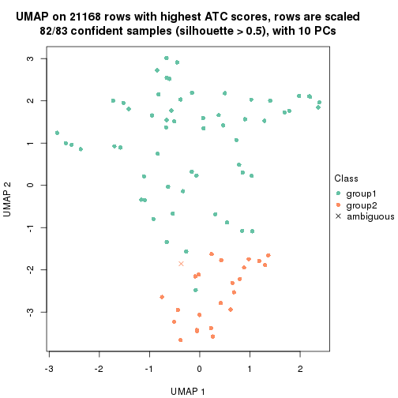
dimension_reduction(res, k = 3, method = "UMAP")
dimension_reduction(res, k = 4, method = "UMAP")
dimension_reduction(res, k = 5, method = "UMAP")
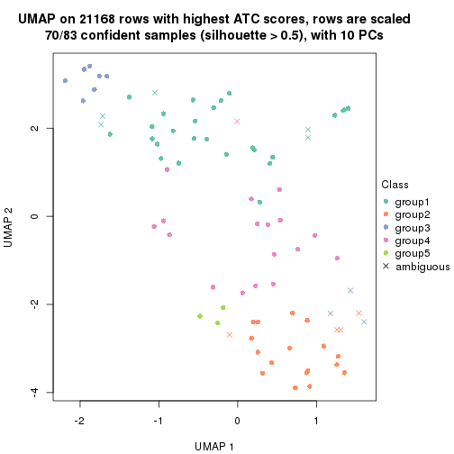
dimension_reduction(res, k = 6, method = "UMAP")
Following heatmap shows how subgroups are split when increasing k:
collect_classes(res)
Test correlation between subgroups and known annotations. If the known annotation is numeric, one-way ANOVA test is applied, and if the known annotation is discrete, chi-squared contingency table test is applied.
test_to_known_factors(res)
#> n disease.state(p) k
#> ATC:hclust 82 6.93e-10 2
#> ATC:hclust 73 1.09e-10 3
#> ATC:hclust 76 6.39e-11 4
#> ATC:hclust 70 5.40e-10 5
#> ATC:hclust 53 7.60e-11 6
If matrix rows can be associated to genes, consider to use functional_enrichment(res,
...) to perform function enrichment for the signature genes. See this vignette for more detailed explanations.
The object with results only for a single top-value method and a single partition method can be extracted as:
res = res_list["ATC", "kmeans"]
# you can also extract it by
# res = res_list["ATC:kmeans"]
A summary of res and all the functions that can be applied to it:
res
#> A 'ConsensusPartition' object with k = 2, 3, 4, 5, 6.
#> On a matrix with 21168 rows and 83 columns.
#> Top rows (1000, 2000, 3000, 4000, 5000) are extracted by 'ATC' method.
#> Subgroups are detected by 'kmeans' method.
#> Performed in total 1250 partitions by row resampling.
#> Best k for subgroups seems to be 2.
#>
#> Following methods can be applied to this 'ConsensusPartition' object:
#> [1] "cola_report" "collect_classes" "collect_plots"
#> [4] "collect_stats" "colnames" "compare_signatures"
#> [7] "consensus_heatmap" "dimension_reduction" "functional_enrichment"
#> [10] "get_anno_col" "get_anno" "get_classes"
#> [13] "get_consensus" "get_matrix" "get_membership"
#> [16] "get_param" "get_signatures" "get_stats"
#> [19] "is_best_k" "is_stable_k" "membership_heatmap"
#> [22] "ncol" "nrow" "plot_ecdf"
#> [25] "rownames" "select_partition_number" "show"
#> [28] "suggest_best_k" "test_to_known_factors"
collect_plots() function collects all the plots made from res for all k (number of partitions)
into one single page to provide an easy and fast comparison between different k.
collect_plots(res)
The plots are:
k and the heatmap of
predicted classes for each k.k.k.k.All the plots in panels can be made by individual functions and they are plotted later in this section.
select_partition_number() produces several plots showing different
statistics for choosing “optimized” k. There are following statistics:
k;k, the area increased is defined as \(A_k - A_{k-1}\).The detailed explanations of these statistics can be found in the cola vignette.
Generally speaking, lower PAC score, higher mean silhouette score or higher
concordance corresponds to better partition. Rand index and Jaccard index
measure how similar the current partition is compared to partition with k-1.
If they are too similar, we won't accept k is better than k-1.
select_partition_number(res)
The numeric values for all these statistics can be obtained by get_stats().
get_stats(res)
#> k 1-PAC mean_silhouette concordance area_increased Rand Jaccard
#> 2 2 0.974 0.973 0.987 0.4976 0.500 0.500
#> 3 3 0.641 0.612 0.741 0.2706 0.863 0.727
#> 4 4 0.705 0.822 0.860 0.1384 0.810 0.539
#> 5 5 0.681 0.697 0.776 0.0726 0.940 0.797
#> 6 6 0.721 0.699 0.777 0.0497 0.891 0.606
suggest_best_k() suggests the best \(k\) based on these statistics. The rules are as follows:
suggest_best_k(res)
#> [1] 2
Following shows the table of the partitions (You need to click the show/hide
code output link to see it). The membership matrix (columns with name p*)
is inferred by
clue::cl_consensus()
function with the SE method. Basically the value in the membership matrix
represents the probability to belong to a certain group. The finall class
label for an item is determined with the group with highest probability it
belongs to.
In get_classes() function, the entropy is calculated from the membership
matrix and the silhouette score is calculated from the consensus matrix.
cbind(get_classes(res, k = 2), get_membership(res, k = 2))
#> class entropy silhouette p1 p2
#> GSM207929 1 0.482 0.880 0.896 0.104
#> GSM207930 1 0.000 0.998 1.000 0.000
#> GSM207931 1 0.000 0.998 1.000 0.000
#> GSM207932 2 0.000 0.974 0.000 1.000
#> GSM207933 2 0.000 0.974 0.000 1.000
#> GSM207934 2 0.000 0.974 0.000 1.000
#> GSM207935 2 0.653 0.807 0.168 0.832
#> GSM207936 2 0.000 0.974 0.000 1.000
#> GSM207937 2 0.000 0.974 0.000 1.000
#> GSM207938 2 0.000 0.974 0.000 1.000
#> GSM207939 2 0.000 0.974 0.000 1.000
#> GSM207940 2 0.000 0.974 0.000 1.000
#> GSM207941 2 0.000 0.974 0.000 1.000
#> GSM207942 2 0.000 0.974 0.000 1.000
#> GSM207943 2 0.000 0.974 0.000 1.000
#> GSM207944 2 0.000 0.974 0.000 1.000
#> GSM207945 2 0.000 0.974 0.000 1.000
#> GSM207946 2 0.000 0.974 0.000 1.000
#> GSM207947 2 0.494 0.878 0.108 0.892
#> GSM207948 2 0.000 0.974 0.000 1.000
#> GSM207949 2 0.000 0.974 0.000 1.000
#> GSM207950 2 0.000 0.974 0.000 1.000
#> GSM207951 2 0.000 0.974 0.000 1.000
#> GSM207952 2 0.000 0.974 0.000 1.000
#> GSM207953 2 0.000 0.974 0.000 1.000
#> GSM207954 2 0.000 0.974 0.000 1.000
#> GSM207955 2 0.000 0.974 0.000 1.000
#> GSM207956 2 0.000 0.974 0.000 1.000
#> GSM207957 2 0.000 0.974 0.000 1.000
#> GSM207958 2 0.000 0.974 0.000 1.000
#> GSM207959 2 0.000 0.974 0.000 1.000
#> GSM207960 1 0.000 0.998 1.000 0.000
#> GSM207961 1 0.000 0.998 1.000 0.000
#> GSM207962 1 0.000 0.998 1.000 0.000
#> GSM207963 1 0.000 0.998 1.000 0.000
#> GSM207964 1 0.000 0.998 1.000 0.000
#> GSM207965 1 0.000 0.998 1.000 0.000
#> GSM207966 1 0.000 0.998 1.000 0.000
#> GSM207967 2 0.000 0.974 0.000 1.000
#> GSM207968 1 0.000 0.998 1.000 0.000
#> GSM207969 1 0.000 0.998 1.000 0.000
#> GSM207970 1 0.000 0.998 1.000 0.000
#> GSM207971 1 0.000 0.998 1.000 0.000
#> GSM207972 2 0.936 0.489 0.352 0.648
#> GSM207973 1 0.000 0.998 1.000 0.000
#> GSM207974 1 0.000 0.998 1.000 0.000
#> GSM207975 1 0.000 0.998 1.000 0.000
#> GSM207976 2 0.000 0.974 0.000 1.000
#> GSM207977 1 0.000 0.998 1.000 0.000
#> GSM207978 1 0.000 0.998 1.000 0.000
#> GSM207979 1 0.000 0.998 1.000 0.000
#> GSM207980 1 0.000 0.998 1.000 0.000
#> GSM207981 1 0.000 0.998 1.000 0.000
#> GSM207982 1 0.000 0.998 1.000 0.000
#> GSM207983 1 0.000 0.998 1.000 0.000
#> GSM207984 1 0.000 0.998 1.000 0.000
#> GSM207985 1 0.000 0.998 1.000 0.000
#> GSM207986 1 0.000 0.998 1.000 0.000
#> GSM207987 1 0.000 0.998 1.000 0.000
#> GSM207988 1 0.000 0.998 1.000 0.000
#> GSM207989 1 0.000 0.998 1.000 0.000
#> GSM207990 1 0.000 0.998 1.000 0.000
#> GSM207991 1 0.000 0.998 1.000 0.000
#> GSM207992 1 0.000 0.998 1.000 0.000
#> GSM207993 1 0.000 0.998 1.000 0.000
#> GSM207994 2 0.000 0.974 0.000 1.000
#> GSM207995 1 0.000 0.998 1.000 0.000
#> GSM207996 1 0.000 0.998 1.000 0.000
#> GSM207997 1 0.000 0.998 1.000 0.000
#> GSM207998 1 0.000 0.998 1.000 0.000
#> GSM207999 2 0.000 0.974 0.000 1.000
#> GSM208000 1 0.000 0.998 1.000 0.000
#> GSM208001 1 0.000 0.998 1.000 0.000
#> GSM208002 1 0.000 0.998 1.000 0.000
#> GSM208003 1 0.000 0.998 1.000 0.000
#> GSM208004 1 0.000 0.998 1.000 0.000
#> GSM208005 2 0.689 0.789 0.184 0.816
#> GSM208006 2 0.000 0.974 0.000 1.000
#> GSM208007 2 0.000 0.974 0.000 1.000
#> GSM208008 2 0.574 0.848 0.136 0.864
#> GSM208009 1 0.000 0.998 1.000 0.000
#> GSM208010 1 0.000 0.998 1.000 0.000
#> GSM208011 1 0.000 0.998 1.000 0.000
cbind(get_classes(res, k = 3), get_membership(res, k = 3))
#> class entropy silhouette p1 p2 p3
#> GSM207929 1 0.8690 0.217 0.456 0.440 0.104
#> GSM207930 1 0.8619 0.243 0.480 0.420 0.100
#> GSM207931 1 0.8683 0.229 0.468 0.428 0.104
#> GSM207932 2 0.6215 0.821 0.428 0.572 0.000
#> GSM207933 2 0.6215 0.821 0.428 0.572 0.000
#> GSM207934 2 0.6095 0.816 0.392 0.608 0.000
#> GSM207935 2 0.8618 -0.282 0.388 0.508 0.104
#> GSM207936 2 0.1015 0.665 0.008 0.980 0.012
#> GSM207937 2 0.1636 0.644 0.016 0.964 0.020
#> GSM207938 2 0.6215 0.821 0.428 0.572 0.000
#> GSM207939 2 0.6215 0.821 0.428 0.572 0.000
#> GSM207940 2 0.4702 0.765 0.212 0.788 0.000
#> GSM207941 2 0.6215 0.821 0.428 0.572 0.000
#> GSM207942 2 0.6215 0.821 0.428 0.572 0.000
#> GSM207943 2 0.6215 0.821 0.428 0.572 0.000
#> GSM207944 2 0.6215 0.821 0.428 0.572 0.000
#> GSM207945 2 0.6215 0.821 0.428 0.572 0.000
#> GSM207946 2 0.6215 0.821 0.428 0.572 0.000
#> GSM207947 2 0.6181 0.438 0.116 0.780 0.104
#> GSM207948 2 0.6215 0.821 0.428 0.572 0.000
#> GSM207949 2 0.6215 0.821 0.428 0.572 0.000
#> GSM207950 2 0.6215 0.821 0.428 0.572 0.000
#> GSM207951 2 0.6215 0.821 0.428 0.572 0.000
#> GSM207952 2 0.6095 0.812 0.392 0.608 0.000
#> GSM207953 2 0.6215 0.821 0.428 0.572 0.000
#> GSM207954 2 0.5012 0.759 0.204 0.788 0.008
#> GSM207955 2 0.6215 0.821 0.428 0.572 0.000
#> GSM207956 2 0.6126 0.817 0.400 0.600 0.000
#> GSM207957 2 0.4702 0.765 0.212 0.788 0.000
#> GSM207958 2 0.6215 0.821 0.428 0.572 0.000
#> GSM207959 2 0.5061 0.761 0.208 0.784 0.008
#> GSM207960 1 0.8807 0.286 0.504 0.376 0.120
#> GSM207961 1 0.6252 0.701 0.556 0.000 0.444
#> GSM207962 1 0.8570 0.236 0.476 0.428 0.096
#> GSM207963 1 0.9162 0.264 0.480 0.368 0.152
#> GSM207964 3 0.6274 -0.493 0.456 0.000 0.544
#> GSM207965 1 0.6252 0.701 0.556 0.000 0.444
#> GSM207966 1 0.6244 0.700 0.560 0.000 0.440
#> GSM207967 2 0.6095 0.816 0.392 0.608 0.000
#> GSM207968 3 0.6286 -0.503 0.464 0.000 0.536
#> GSM207969 1 0.6252 0.701 0.556 0.000 0.444
#> GSM207970 1 0.6252 0.701 0.556 0.000 0.444
#> GSM207971 1 0.6308 0.597 0.508 0.000 0.492
#> GSM207972 2 0.6112 0.445 0.108 0.784 0.108
#> GSM207973 1 0.6244 0.700 0.560 0.000 0.440
#> GSM207974 1 0.6244 0.700 0.560 0.000 0.440
#> GSM207975 1 0.6252 0.701 0.556 0.000 0.444
#> GSM207976 2 0.6095 0.812 0.392 0.608 0.000
#> GSM207977 3 0.6305 -0.560 0.484 0.000 0.516
#> GSM207978 1 0.6244 0.700 0.560 0.000 0.440
#> GSM207979 1 0.6252 0.701 0.556 0.000 0.444
#> GSM207980 3 0.0237 0.729 0.004 0.000 0.996
#> GSM207981 3 0.0237 0.729 0.004 0.000 0.996
#> GSM207982 3 0.0237 0.729 0.004 0.000 0.996
#> GSM207983 3 0.0000 0.730 0.000 0.000 1.000
#> GSM207984 1 0.6252 0.701 0.556 0.000 0.444
#> GSM207985 1 0.6244 0.700 0.560 0.000 0.440
#> GSM207986 3 0.0000 0.730 0.000 0.000 1.000
#> GSM207987 3 0.0000 0.730 0.000 0.000 1.000
#> GSM207988 3 0.0000 0.730 0.000 0.000 1.000
#> GSM207989 3 0.0000 0.730 0.000 0.000 1.000
#> GSM207990 3 0.2261 0.660 0.068 0.000 0.932
#> GSM207991 3 0.0237 0.729 0.004 0.000 0.996
#> GSM207992 3 0.2261 0.660 0.068 0.000 0.932
#> GSM207993 1 0.6267 0.683 0.548 0.000 0.452
#> GSM207994 2 0.3148 0.666 0.048 0.916 0.036
#> GSM207995 1 0.6244 0.700 0.560 0.000 0.440
#> GSM207996 1 0.6252 0.701 0.556 0.000 0.444
#> GSM207997 1 0.6252 0.701 0.556 0.000 0.444
#> GSM207998 1 0.9074 0.305 0.516 0.328 0.156
#> GSM207999 2 0.2152 0.630 0.016 0.948 0.036
#> GSM208000 1 0.6244 0.700 0.560 0.000 0.440
#> GSM208001 1 0.6252 0.701 0.556 0.000 0.444
#> GSM208002 1 0.6252 0.701 0.556 0.000 0.444
#> GSM208003 1 0.6252 0.701 0.556 0.000 0.444
#> GSM208004 1 0.6252 0.701 0.556 0.000 0.444
#> GSM208005 2 0.6181 0.438 0.116 0.780 0.104
#> GSM208006 2 0.0747 0.678 0.016 0.984 0.000
#> GSM208007 2 0.0000 0.668 0.000 1.000 0.000
#> GSM208008 2 0.6181 0.438 0.116 0.780 0.104
#> GSM208009 1 0.6244 0.700 0.560 0.000 0.440
#> GSM208010 1 0.6252 0.701 0.556 0.000 0.444
#> GSM208011 3 0.6280 -0.494 0.460 0.000 0.540
cbind(get_classes(res, k = 4), get_membership(res, k = 4))
#> class entropy silhouette p1 p2 p3 p4
#> GSM207929 4 0.3392 0.8277 0.056 0.000 0.072 0.872
#> GSM207930 4 0.4336 0.7624 0.128 0.000 0.060 0.812
#> GSM207931 4 0.3156 0.8261 0.068 0.000 0.048 0.884
#> GSM207932 2 0.0000 0.8679 0.000 1.000 0.000 0.000
#> GSM207933 2 0.0000 0.8679 0.000 1.000 0.000 0.000
#> GSM207934 2 0.2965 0.8155 0.000 0.892 0.036 0.072
#> GSM207935 4 0.3392 0.8276 0.056 0.000 0.072 0.872
#> GSM207936 4 0.5767 0.7078 0.000 0.136 0.152 0.712
#> GSM207937 4 0.4226 0.8084 0.008 0.072 0.084 0.836
#> GSM207938 2 0.1792 0.8666 0.000 0.932 0.068 0.000
#> GSM207939 2 0.5113 0.7428 0.000 0.760 0.152 0.088
#> GSM207940 2 0.7068 0.4108 0.000 0.548 0.156 0.296
#> GSM207941 2 0.0000 0.8679 0.000 1.000 0.000 0.000
#> GSM207942 2 0.0000 0.8679 0.000 1.000 0.000 0.000
#> GSM207943 2 0.1716 0.8677 0.000 0.936 0.064 0.000
#> GSM207944 2 0.1716 0.8677 0.000 0.936 0.064 0.000
#> GSM207945 2 0.0000 0.8679 0.000 1.000 0.000 0.000
#> GSM207946 2 0.2149 0.8594 0.000 0.912 0.088 0.000
#> GSM207947 4 0.3301 0.8357 0.024 0.040 0.044 0.892
#> GSM207948 2 0.0188 0.8670 0.000 0.996 0.004 0.000
#> GSM207949 2 0.1557 0.8686 0.000 0.944 0.056 0.000
#> GSM207950 2 0.1118 0.8695 0.000 0.964 0.036 0.000
#> GSM207951 2 0.1716 0.8677 0.000 0.936 0.064 0.000
#> GSM207952 2 0.3486 0.7975 0.000 0.864 0.044 0.092
#> GSM207953 2 0.1716 0.8677 0.000 0.936 0.064 0.000
#> GSM207954 2 0.7134 0.3693 0.000 0.532 0.156 0.312
#> GSM207955 2 0.2149 0.8594 0.000 0.912 0.088 0.000
#> GSM207956 2 0.2124 0.8416 0.000 0.932 0.028 0.040
#> GSM207957 2 0.7068 0.4108 0.000 0.548 0.156 0.296
#> GSM207958 2 0.0000 0.8679 0.000 1.000 0.000 0.000
#> GSM207959 2 0.7068 0.4108 0.000 0.548 0.156 0.296
#> GSM207960 4 0.4748 0.6337 0.268 0.000 0.016 0.716
#> GSM207961 1 0.0524 0.9086 0.988 0.000 0.004 0.008
#> GSM207962 4 0.3392 0.8133 0.056 0.000 0.072 0.872
#> GSM207963 4 0.5458 0.6250 0.236 0.000 0.060 0.704
#> GSM207964 1 0.3013 0.8298 0.888 0.000 0.080 0.032
#> GSM207965 1 0.0524 0.9086 0.988 0.000 0.004 0.008
#> GSM207966 1 0.2670 0.8634 0.904 0.000 0.024 0.072
#> GSM207967 2 0.3286 0.8060 0.000 0.876 0.044 0.080
#> GSM207968 1 0.4513 0.7320 0.804 0.000 0.076 0.120
#> GSM207969 1 0.0524 0.9086 0.988 0.000 0.004 0.008
#> GSM207970 1 0.0524 0.9086 0.988 0.000 0.004 0.008
#> GSM207971 1 0.2048 0.8627 0.928 0.000 0.064 0.008
#> GSM207972 4 0.3629 0.8320 0.024 0.040 0.060 0.876
#> GSM207973 1 0.2670 0.8634 0.904 0.000 0.024 0.072
#> GSM207974 1 0.2670 0.8634 0.904 0.000 0.024 0.072
#> GSM207975 1 0.0672 0.9083 0.984 0.000 0.008 0.008
#> GSM207976 2 0.3486 0.7975 0.000 0.864 0.044 0.092
#> GSM207977 1 0.2586 0.8603 0.912 0.000 0.040 0.048
#> GSM207978 1 0.2670 0.8634 0.904 0.000 0.024 0.072
#> GSM207979 1 0.2443 0.8656 0.916 0.000 0.024 0.060
#> GSM207980 3 0.4248 0.9720 0.220 0.000 0.768 0.012
#> GSM207981 3 0.4212 0.9715 0.216 0.000 0.772 0.012
#> GSM207982 3 0.4212 0.9715 0.216 0.000 0.772 0.012
#> GSM207983 3 0.4262 0.9802 0.236 0.000 0.756 0.008
#> GSM207984 1 0.0672 0.9083 0.984 0.000 0.008 0.008
#> GSM207985 1 0.2670 0.8634 0.904 0.000 0.024 0.072
#> GSM207986 3 0.4262 0.9802 0.236 0.000 0.756 0.008
#> GSM207987 3 0.4262 0.9802 0.236 0.000 0.756 0.008
#> GSM207988 3 0.4262 0.9802 0.236 0.000 0.756 0.008
#> GSM207989 3 0.4262 0.9802 0.236 0.000 0.756 0.008
#> GSM207990 3 0.4222 0.9411 0.272 0.000 0.728 0.000
#> GSM207991 3 0.4248 0.9720 0.220 0.000 0.768 0.012
#> GSM207992 3 0.4283 0.9628 0.256 0.000 0.740 0.004
#> GSM207993 1 0.0524 0.9086 0.988 0.000 0.004 0.008
#> GSM207994 4 0.6457 0.6173 0.000 0.200 0.156 0.644
#> GSM207995 1 0.0336 0.9081 0.992 0.000 0.000 0.008
#> GSM207996 1 0.0336 0.9081 0.992 0.000 0.000 0.008
#> GSM207997 1 0.0657 0.9080 0.984 0.000 0.004 0.012
#> GSM207998 1 0.5478 0.4292 0.628 0.000 0.028 0.344
#> GSM207999 4 0.2773 0.8221 0.000 0.072 0.028 0.900
#> GSM208000 1 0.0657 0.9063 0.984 0.000 0.004 0.012
#> GSM208001 1 0.0336 0.9081 0.992 0.000 0.000 0.008
#> GSM208002 1 0.0469 0.9086 0.988 0.000 0.000 0.012
#> GSM208003 1 0.0524 0.9086 0.988 0.000 0.004 0.008
#> GSM208004 1 0.0469 0.9076 0.988 0.000 0.000 0.012
#> GSM208005 4 0.3470 0.8347 0.024 0.040 0.052 0.884
#> GSM208006 4 0.6205 0.6325 0.000 0.196 0.136 0.668
#> GSM208007 4 0.5533 0.7284 0.000 0.132 0.136 0.732
#> GSM208008 4 0.3615 0.8325 0.024 0.036 0.064 0.876
#> GSM208009 1 0.0469 0.9076 0.988 0.000 0.000 0.012
#> GSM208010 1 0.0469 0.9086 0.988 0.000 0.000 0.012
#> GSM208011 1 0.6559 -0.0448 0.468 0.000 0.076 0.456
cbind(get_classes(res, k = 5), get_membership(res, k = 5))
#> class entropy silhouette p1 p2 p3 p4 p5
#> GSM207929 4 0.0451 0.6483 0.008 0.000 0.000 0.988 NA
#> GSM207930 4 0.6788 0.5211 0.188 0.000 0.052 0.580 NA
#> GSM207931 4 0.1865 0.6476 0.024 0.000 0.008 0.936 NA
#> GSM207932 2 0.0162 0.8443 0.000 0.996 0.004 0.000 NA
#> GSM207933 2 0.0162 0.8443 0.000 0.996 0.004 0.000 NA
#> GSM207934 2 0.4569 0.7282 0.000 0.788 0.048 0.056 NA
#> GSM207935 4 0.0693 0.6471 0.008 0.000 0.000 0.980 NA
#> GSM207936 4 0.4100 0.5691 0.000 0.044 0.000 0.764 NA
#> GSM207937 4 0.0794 0.6461 0.000 0.000 0.000 0.972 NA
#> GSM207938 2 0.2732 0.8174 0.000 0.840 0.000 0.000 NA
#> GSM207939 2 0.6685 0.0145 0.000 0.384 0.000 0.380 NA
#> GSM207940 4 0.6586 0.1352 0.000 0.304 0.000 0.460 NA
#> GSM207941 2 0.0162 0.8443 0.000 0.996 0.004 0.000 NA
#> GSM207942 2 0.0162 0.8443 0.000 0.996 0.004 0.000 NA
#> GSM207943 2 0.2583 0.8287 0.000 0.864 0.004 0.000 NA
#> GSM207944 2 0.2583 0.8287 0.000 0.864 0.004 0.000 NA
#> GSM207945 2 0.0162 0.8443 0.000 0.996 0.004 0.000 NA
#> GSM207946 2 0.3496 0.7784 0.000 0.788 0.000 0.012 NA
#> GSM207947 4 0.4681 0.6230 0.000 0.000 0.052 0.696 NA
#> GSM207948 2 0.0451 0.8427 0.000 0.988 0.004 0.000 NA
#> GSM207949 2 0.2377 0.8299 0.000 0.872 0.000 0.000 NA
#> GSM207950 2 0.1571 0.8421 0.000 0.936 0.004 0.000 NA
#> GSM207951 2 0.2471 0.8273 0.000 0.864 0.000 0.000 NA
#> GSM207952 2 0.5337 0.6696 0.000 0.720 0.056 0.056 NA
#> GSM207953 2 0.2605 0.8216 0.000 0.852 0.000 0.000 NA
#> GSM207954 4 0.6553 0.1645 0.000 0.292 0.000 0.472 NA
#> GSM207955 2 0.3496 0.7784 0.000 0.788 0.000 0.012 NA
#> GSM207956 2 0.3379 0.7802 0.000 0.860 0.040 0.024 NA
#> GSM207957 4 0.6586 0.1352 0.000 0.304 0.000 0.460 NA
#> GSM207958 2 0.0000 0.8442 0.000 1.000 0.000 0.000 NA
#> GSM207959 4 0.6586 0.1352 0.000 0.304 0.000 0.460 NA
#> GSM207960 4 0.5712 0.1732 0.404 0.000 0.008 0.524 NA
#> GSM207961 1 0.0510 0.8286 0.984 0.000 0.000 0.000 NA
#> GSM207962 4 0.5490 0.5795 0.000 0.000 0.072 0.556 NA
#> GSM207963 4 0.7277 0.5050 0.144 0.000 0.068 0.492 NA
#> GSM207964 1 0.3529 0.7456 0.856 0.000 0.056 0.036 NA
#> GSM207965 1 0.0693 0.8214 0.980 0.000 0.008 0.000 NA
#> GSM207966 1 0.4460 0.6467 0.600 0.000 0.004 0.004 NA
#> GSM207967 2 0.5187 0.6859 0.000 0.736 0.056 0.056 NA
#> GSM207968 1 0.7482 0.2509 0.452 0.000 0.052 0.248 NA
#> GSM207969 1 0.0566 0.8234 0.984 0.000 0.004 0.000 NA
#> GSM207970 1 0.0566 0.8234 0.984 0.000 0.004 0.000 NA
#> GSM207971 1 0.1877 0.7825 0.924 0.000 0.064 0.000 NA
#> GSM207972 4 0.5005 0.6188 0.000 0.000 0.064 0.660 NA
#> GSM207973 1 0.4460 0.6467 0.600 0.000 0.004 0.004 NA
#> GSM207974 1 0.4460 0.6467 0.600 0.000 0.004 0.004 NA
#> GSM207975 1 0.0162 0.8265 0.996 0.000 0.000 0.000 NA
#> GSM207976 2 0.5301 0.6739 0.000 0.724 0.056 0.056 NA
#> GSM207977 1 0.3388 0.7566 0.864 0.000 0.040 0.040 NA
#> GSM207978 1 0.4460 0.6467 0.600 0.000 0.004 0.004 NA
#> GSM207979 1 0.4264 0.6562 0.620 0.000 0.004 0.000 NA
#> GSM207980 3 0.3141 0.9395 0.152 0.000 0.832 0.000 NA
#> GSM207981 3 0.2020 0.9549 0.100 0.000 0.900 0.000 NA
#> GSM207982 3 0.2020 0.9549 0.100 0.000 0.900 0.000 NA
#> GSM207983 3 0.2280 0.9653 0.120 0.000 0.880 0.000 NA
#> GSM207984 1 0.0162 0.8265 0.996 0.000 0.000 0.000 NA
#> GSM207985 1 0.4460 0.6467 0.600 0.000 0.004 0.004 NA
#> GSM207986 3 0.2280 0.9653 0.120 0.000 0.880 0.000 NA
#> GSM207987 3 0.2280 0.9653 0.120 0.000 0.880 0.000 NA
#> GSM207988 3 0.2280 0.9653 0.120 0.000 0.880 0.000 NA
#> GSM207989 3 0.2280 0.9653 0.120 0.000 0.880 0.000 NA
#> GSM207990 3 0.3209 0.9378 0.180 0.000 0.812 0.000 NA
#> GSM207991 3 0.3141 0.9395 0.152 0.000 0.832 0.000 NA
#> GSM207992 3 0.3171 0.9410 0.176 0.000 0.816 0.000 NA
#> GSM207993 1 0.0693 0.8214 0.980 0.000 0.008 0.000 NA
#> GSM207994 4 0.5205 0.4912 0.000 0.104 0.000 0.672 NA
#> GSM207995 1 0.1792 0.8233 0.916 0.000 0.000 0.000 NA
#> GSM207996 1 0.1792 0.8233 0.916 0.000 0.000 0.000 NA
#> GSM207997 1 0.1043 0.8288 0.960 0.000 0.000 0.000 NA
#> GSM207998 4 0.7598 0.0327 0.340 0.000 0.048 0.372 NA
#> GSM207999 4 0.4452 0.6311 0.000 0.000 0.032 0.696 NA
#> GSM208000 1 0.1608 0.8256 0.928 0.000 0.000 0.000 NA
#> GSM208001 1 0.1732 0.8240 0.920 0.000 0.000 0.000 NA
#> GSM208002 1 0.0404 0.8244 0.988 0.000 0.000 0.000 NA
#> GSM208003 1 0.0404 0.8284 0.988 0.000 0.000 0.000 NA
#> GSM208004 1 0.1792 0.8233 0.916 0.000 0.000 0.000 NA
#> GSM208005 4 0.5009 0.6159 0.000 0.000 0.060 0.652 NA
#> GSM208006 4 0.4835 0.5918 0.000 0.048 0.008 0.700 NA
#> GSM208007 4 0.4388 0.6108 0.000 0.024 0.008 0.724 NA
#> GSM208008 4 0.5300 0.6032 0.000 0.000 0.068 0.604 NA
#> GSM208009 1 0.1851 0.8222 0.912 0.000 0.000 0.000 NA
#> GSM208010 1 0.0510 0.8286 0.984 0.000 0.000 0.000 NA
#> GSM208011 1 0.7883 -0.1923 0.372 0.000 0.080 0.328 NA
cbind(get_classes(res, k = 6), get_membership(res, k = 6))
#> class entropy silhouette p1 p2 p3 p4 p5 p6
#> GSM207929 4 0.5678 0.325 0.008 0.000 0.000 0.496 0.128 0.368
#> GSM207930 6 0.5943 0.587 0.144 0.000 0.008 0.088 0.116 0.644
#> GSM207931 4 0.5954 0.278 0.020 0.000 0.000 0.476 0.132 0.372
#> GSM207932 2 0.0260 0.791 0.000 0.992 0.008 0.000 0.000 0.000
#> GSM207933 2 0.0260 0.791 0.000 0.992 0.008 0.000 0.000 0.000
#> GSM207934 2 0.5115 0.628 0.000 0.700 0.008 0.024 0.132 0.136
#> GSM207935 4 0.5701 0.329 0.008 0.000 0.000 0.496 0.132 0.364
#> GSM207936 4 0.4252 0.608 0.000 0.028 0.000 0.768 0.076 0.128
#> GSM207937 4 0.5409 0.365 0.000 0.000 0.000 0.524 0.128 0.348
#> GSM207938 2 0.3323 0.712 0.000 0.752 0.000 0.240 0.008 0.000
#> GSM207939 4 0.2883 0.557 0.000 0.212 0.000 0.788 0.000 0.000
#> GSM207940 4 0.2814 0.620 0.000 0.172 0.000 0.820 0.000 0.008
#> GSM207941 2 0.0260 0.791 0.000 0.992 0.008 0.000 0.000 0.000
#> GSM207942 2 0.0260 0.791 0.000 0.992 0.008 0.000 0.000 0.000
#> GSM207943 2 0.2845 0.755 0.000 0.820 0.004 0.172 0.004 0.000
#> GSM207944 2 0.2845 0.755 0.000 0.820 0.004 0.172 0.004 0.000
#> GSM207945 2 0.0260 0.791 0.000 0.992 0.008 0.000 0.000 0.000
#> GSM207946 2 0.3619 0.626 0.000 0.680 0.000 0.316 0.004 0.000
#> GSM207947 6 0.3708 0.629 0.000 0.000 0.008 0.112 0.080 0.800
#> GSM207948 2 0.1065 0.786 0.000 0.964 0.008 0.008 0.020 0.000
#> GSM207949 2 0.2668 0.757 0.000 0.828 0.000 0.168 0.004 0.000
#> GSM207950 2 0.2149 0.777 0.000 0.888 0.004 0.104 0.004 0.000
#> GSM207951 2 0.2772 0.751 0.000 0.816 0.000 0.180 0.004 0.000
#> GSM207952 2 0.6304 0.516 0.000 0.576 0.028 0.024 0.160 0.212
#> GSM207953 2 0.3081 0.722 0.000 0.776 0.000 0.220 0.004 0.000
#> GSM207954 4 0.2925 0.640 0.000 0.148 0.000 0.832 0.004 0.016
#> GSM207955 2 0.3652 0.613 0.000 0.672 0.000 0.324 0.004 0.000
#> GSM207956 2 0.4516 0.657 0.000 0.744 0.000 0.024 0.112 0.120
#> GSM207957 4 0.2814 0.620 0.000 0.172 0.000 0.820 0.000 0.008
#> GSM207958 2 0.0260 0.790 0.000 0.992 0.000 0.000 0.008 0.000
#> GSM207959 4 0.2814 0.620 0.000 0.172 0.000 0.820 0.000 0.008
#> GSM207960 1 0.6861 -0.228 0.436 0.000 0.000 0.092 0.148 0.324
#> GSM207961 1 0.1080 0.789 0.960 0.000 0.000 0.004 0.032 0.004
#> GSM207962 6 0.1116 0.681 0.000 0.000 0.008 0.004 0.028 0.960
#> GSM207963 6 0.3312 0.686 0.084 0.000 0.008 0.020 0.040 0.848
#> GSM207964 1 0.4976 0.591 0.744 0.000 0.048 0.076 0.024 0.108
#> GSM207965 1 0.2338 0.755 0.900 0.000 0.004 0.068 0.012 0.016
#> GSM207966 5 0.3547 0.988 0.332 0.000 0.000 0.000 0.668 0.000
#> GSM207967 2 0.6017 0.562 0.000 0.620 0.028 0.024 0.152 0.176
#> GSM207968 6 0.7292 0.307 0.292 0.000 0.044 0.088 0.108 0.468
#> GSM207969 1 0.1700 0.780 0.936 0.000 0.000 0.028 0.024 0.012
#> GSM207970 1 0.1700 0.780 0.936 0.000 0.000 0.028 0.024 0.012
#> GSM207971 1 0.3885 0.679 0.820 0.000 0.068 0.068 0.024 0.020
#> GSM207972 6 0.2165 0.663 0.000 0.000 0.008 0.108 0.000 0.884
#> GSM207973 5 0.4245 0.979 0.328 0.000 0.004 0.012 0.648 0.008
#> GSM207974 5 0.4245 0.979 0.328 0.000 0.004 0.012 0.648 0.008
#> GSM207975 1 0.0551 0.796 0.984 0.000 0.000 0.004 0.008 0.004
#> GSM207976 2 0.6222 0.529 0.000 0.588 0.028 0.024 0.152 0.208
#> GSM207977 1 0.4553 0.625 0.768 0.000 0.020 0.072 0.028 0.112
#> GSM207978 5 0.3547 0.988 0.332 0.000 0.000 0.000 0.668 0.000
#> GSM207979 5 0.3563 0.984 0.336 0.000 0.000 0.000 0.664 0.000
#> GSM207980 3 0.4872 0.818 0.128 0.000 0.744 0.068 0.020 0.040
#> GSM207981 3 0.1194 0.903 0.032 0.000 0.956 0.004 0.000 0.008
#> GSM207982 3 0.1194 0.903 0.032 0.000 0.956 0.004 0.000 0.008
#> GSM207983 3 0.1082 0.907 0.040 0.000 0.956 0.000 0.004 0.000
#> GSM207984 1 0.0551 0.796 0.984 0.000 0.000 0.004 0.008 0.004
#> GSM207985 5 0.3547 0.988 0.332 0.000 0.000 0.000 0.668 0.000
#> GSM207986 3 0.1082 0.907 0.040 0.000 0.956 0.000 0.004 0.000
#> GSM207987 3 0.1082 0.907 0.040 0.000 0.956 0.000 0.004 0.000
#> GSM207988 3 0.1082 0.907 0.040 0.000 0.956 0.000 0.004 0.000
#> GSM207989 3 0.1082 0.907 0.040 0.000 0.956 0.000 0.004 0.000
#> GSM207990 3 0.4225 0.835 0.140 0.000 0.772 0.064 0.012 0.012
#> GSM207991 3 0.4872 0.818 0.128 0.000 0.744 0.068 0.020 0.040
#> GSM207992 3 0.4407 0.829 0.144 0.000 0.760 0.068 0.016 0.012
#> GSM207993 1 0.2338 0.755 0.900 0.000 0.004 0.068 0.012 0.016
#> GSM207994 4 0.3383 0.640 0.000 0.052 0.000 0.840 0.032 0.076
#> GSM207995 1 0.2494 0.717 0.864 0.000 0.000 0.016 0.120 0.000
#> GSM207996 1 0.2494 0.717 0.864 0.000 0.000 0.016 0.120 0.000
#> GSM207997 1 0.1555 0.778 0.932 0.000 0.000 0.004 0.060 0.004
#> GSM207998 6 0.6089 0.471 0.220 0.000 0.000 0.028 0.208 0.544
#> GSM207999 6 0.3520 0.594 0.000 0.000 0.000 0.100 0.096 0.804
#> GSM208000 1 0.2538 0.726 0.860 0.000 0.000 0.016 0.124 0.000
#> GSM208001 1 0.2494 0.717 0.864 0.000 0.000 0.016 0.120 0.000
#> GSM208002 1 0.0653 0.796 0.980 0.000 0.000 0.004 0.012 0.004
#> GSM208003 1 0.0551 0.795 0.984 0.000 0.000 0.004 0.008 0.004
#> GSM208004 1 0.2494 0.717 0.864 0.000 0.000 0.016 0.120 0.000
#> GSM208005 6 0.2753 0.670 0.000 0.000 0.008 0.072 0.048 0.872
#> GSM208006 4 0.4894 0.466 0.000 0.016 0.000 0.584 0.040 0.360
#> GSM208007 4 0.4740 0.459 0.000 0.008 0.000 0.584 0.040 0.368
#> GSM208008 6 0.1434 0.677 0.000 0.000 0.008 0.020 0.024 0.948
#> GSM208009 1 0.2494 0.717 0.864 0.000 0.000 0.016 0.120 0.000
#> GSM208010 1 0.0935 0.789 0.964 0.000 0.000 0.000 0.032 0.004
#> GSM208011 6 0.6201 0.520 0.252 0.000 0.052 0.072 0.032 0.592
Heatmaps for the consensus matrix. It visualizes the probability of two samples to be in a same group.
consensus_heatmap(res, k = 2)
consensus_heatmap(res, k = 3)
consensus_heatmap(res, k = 4)

consensus_heatmap(res, k = 5)
consensus_heatmap(res, k = 6)
Heatmaps for the membership of samples in all partitions to see how consistent they are:
membership_heatmap(res, k = 2)
membership_heatmap(res, k = 3)
membership_heatmap(res, k = 4)
membership_heatmap(res, k = 5)
membership_heatmap(res, k = 6)
As soon as we have had the classes for columns, we can look for signatures which are significantly different between classes which can be candidate marks for certain classes. Following are the heatmaps for signatures.
Signature heatmaps where rows are scaled:
get_signatures(res, k = 2)
get_signatures(res, k = 3)
get_signatures(res, k = 4)
get_signatures(res, k = 5)
get_signatures(res, k = 6)
Signature heatmaps where rows are not scaled:
get_signatures(res, k = 2, scale_rows = FALSE)
get_signatures(res, k = 3, scale_rows = FALSE)
get_signatures(res, k = 4, scale_rows = FALSE)
get_signatures(res, k = 5, scale_rows = FALSE)
get_signatures(res, k = 6, scale_rows = FALSE)
Compare the overlap of signatures from different k:
compare_signatures(res)

get_signature() returns a data frame invisibly. TO get the list of signatures, the function
call should be assigned to a variable explicitly. In following code, if plot argument is set
to FALSE, no heatmap is plotted while only the differential analysis is performed.
# code only for demonstration
tb = get_signature(res, k = ..., plot = FALSE)
An example of the output of tb is:
#> which_row fdr mean_1 mean_2 scaled_mean_1 scaled_mean_2 km
#> 1 38 0.042760348 8.373488 9.131774 -0.5533452 0.5164555 1
#> 2 40 0.018707592 7.106213 8.469186 -0.6173731 0.5762149 1
#> 3 55 0.019134737 10.221463 11.207825 -0.6159697 0.5749050 1
#> 4 59 0.006059896 5.921854 7.869574 -0.6899429 0.6439467 1
#> 5 60 0.018055526 8.928898 10.211722 -0.6204761 0.5791110 1
#> 6 98 0.009384629 15.714769 14.887706 0.6635654 -0.6193277 2
...
The columns in tb are:
which_row: row indices corresponding to the input matrix.fdr: FDR for the differential test. mean_x: The mean value in group x.scaled_mean_x: The mean value in group x after rows are scaled.km: Row groups if k-means clustering is applied to rows.UMAP plot which shows how samples are separated.
dimension_reduction(res, k = 2, method = "UMAP")
dimension_reduction(res, k = 3, method = "UMAP")
dimension_reduction(res, k = 4, method = "UMAP")

dimension_reduction(res, k = 5, method = "UMAP")
dimension_reduction(res, k = 6, method = "UMAP")
Following heatmap shows how subgroups are split when increasing k:
collect_classes(res)
Test correlation between subgroups and known annotations. If the known annotation is numeric, one-way ANOVA test is applied, and if the known annotation is discrete, chi-squared contingency table test is applied.
test_to_known_factors(res)
#> n disease.state(p) k
#> ATC:kmeans 82 1.84e-10 2
#> ATC:kmeans 67 8.11e-11 3
#> ATC:kmeans 77 5.06e-11 4
#> ATC:kmeans 73 1.42e-10 5
#> ATC:kmeans 74 9.02e-11 6
If matrix rows can be associated to genes, consider to use functional_enrichment(res,
...) to perform function enrichment for the signature genes. See this vignette for more detailed explanations.
The object with results only for a single top-value method and a single partition method can be extracted as:
res = res_list["ATC", "skmeans"]
# you can also extract it by
# res = res_list["ATC:skmeans"]
A summary of res and all the functions that can be applied to it:
res
#> A 'ConsensusPartition' object with k = 2, 3, 4, 5, 6.
#> On a matrix with 21168 rows and 83 columns.
#> Top rows (1000, 2000, 3000, 4000, 5000) are extracted by 'ATC' method.
#> Subgroups are detected by 'skmeans' method.
#> Performed in total 1250 partitions by row resampling.
#> Best k for subgroups seems to be 2.
#>
#> Following methods can be applied to this 'ConsensusPartition' object:
#> [1] "cola_report" "collect_classes" "collect_plots"
#> [4] "collect_stats" "colnames" "compare_signatures"
#> [7] "consensus_heatmap" "dimension_reduction" "functional_enrichment"
#> [10] "get_anno_col" "get_anno" "get_classes"
#> [13] "get_consensus" "get_matrix" "get_membership"
#> [16] "get_param" "get_signatures" "get_stats"
#> [19] "is_best_k" "is_stable_k" "membership_heatmap"
#> [22] "ncol" "nrow" "plot_ecdf"
#> [25] "rownames" "select_partition_number" "show"
#> [28] "suggest_best_k" "test_to_known_factors"
collect_plots() function collects all the plots made from res for all k (number of partitions)
into one single page to provide an easy and fast comparison between different k.
collect_plots(res)
The plots are:
k and the heatmap of
predicted classes for each k.k.k.k.All the plots in panels can be made by individual functions and they are plotted later in this section.
select_partition_number() produces several plots showing different
statistics for choosing “optimized” k. There are following statistics:
k;k, the area increased is defined as \(A_k - A_{k-1}\).The detailed explanations of these statistics can be found in the cola vignette.
Generally speaking, lower PAC score, higher mean silhouette score or higher
concordance corresponds to better partition. Rand index and Jaccard index
measure how similar the current partition is compared to partition with k-1.
If they are too similar, we won't accept k is better than k-1.
select_partition_number(res)
The numeric values for all these statistics can be obtained by get_stats().
get_stats(res)
#> k 1-PAC mean_silhouette concordance area_increased Rand Jaccard
#> 2 2 1.000 0.991 0.996 0.5042 0.496 0.496
#> 3 3 0.758 0.895 0.909 0.2510 0.846 0.694
#> 4 4 0.833 0.807 0.919 0.1399 0.877 0.679
#> 5 5 0.787 0.711 0.875 0.0598 0.925 0.752
#> 6 6 0.778 0.631 0.793 0.0449 0.865 0.527
suggest_best_k() suggests the best \(k\) based on these statistics. The rules are as follows:
suggest_best_k(res)
#> [1] 2
Following shows the table of the partitions (You need to click the show/hide
code output link to see it). The membership matrix (columns with name p*)
is inferred by
clue::cl_consensus()
function with the SE method. Basically the value in the membership matrix
represents the probability to belong to a certain group. The finall class
label for an item is determined with the group with highest probability it
belongs to.
In get_classes() function, the entropy is calculated from the membership
matrix and the silhouette score is calculated from the consensus matrix.
cbind(get_classes(res, k = 2), get_membership(res, k = 2))
#> class entropy silhouette p1 p2
#> GSM207929 2 0.000 0.991 0.000 1.000
#> GSM207930 1 0.000 1.000 1.000 0.000
#> GSM207931 2 0.615 0.823 0.152 0.848
#> GSM207932 2 0.000 0.991 0.000 1.000
#> GSM207933 2 0.000 0.991 0.000 1.000
#> GSM207934 2 0.000 0.991 0.000 1.000
#> GSM207935 2 0.000 0.991 0.000 1.000
#> GSM207936 2 0.000 0.991 0.000 1.000
#> GSM207937 2 0.000 0.991 0.000 1.000
#> GSM207938 2 0.000 0.991 0.000 1.000
#> GSM207939 2 0.000 0.991 0.000 1.000
#> GSM207940 2 0.000 0.991 0.000 1.000
#> GSM207941 2 0.000 0.991 0.000 1.000
#> GSM207942 2 0.000 0.991 0.000 1.000
#> GSM207943 2 0.000 0.991 0.000 1.000
#> GSM207944 2 0.000 0.991 0.000 1.000
#> GSM207945 2 0.000 0.991 0.000 1.000
#> GSM207946 2 0.000 0.991 0.000 1.000
#> GSM207947 2 0.000 0.991 0.000 1.000
#> GSM207948 2 0.000 0.991 0.000 1.000
#> GSM207949 2 0.000 0.991 0.000 1.000
#> GSM207950 2 0.000 0.991 0.000 1.000
#> GSM207951 2 0.000 0.991 0.000 1.000
#> GSM207952 2 0.000 0.991 0.000 1.000
#> GSM207953 2 0.000 0.991 0.000 1.000
#> GSM207954 2 0.000 0.991 0.000 1.000
#> GSM207955 2 0.000 0.991 0.000 1.000
#> GSM207956 2 0.000 0.991 0.000 1.000
#> GSM207957 2 0.000 0.991 0.000 1.000
#> GSM207958 2 0.000 0.991 0.000 1.000
#> GSM207959 2 0.000 0.991 0.000 1.000
#> GSM207960 1 0.000 1.000 1.000 0.000
#> GSM207961 1 0.000 1.000 1.000 0.000
#> GSM207962 1 0.118 0.984 0.984 0.016
#> GSM207963 1 0.000 1.000 1.000 0.000
#> GSM207964 1 0.000 1.000 1.000 0.000
#> GSM207965 1 0.000 1.000 1.000 0.000
#> GSM207966 1 0.000 1.000 1.000 0.000
#> GSM207967 2 0.000 0.991 0.000 1.000
#> GSM207968 1 0.000 1.000 1.000 0.000
#> GSM207969 1 0.000 1.000 1.000 0.000
#> GSM207970 1 0.000 1.000 1.000 0.000
#> GSM207971 1 0.000 1.000 1.000 0.000
#> GSM207972 2 0.662 0.795 0.172 0.828
#> GSM207973 1 0.000 1.000 1.000 0.000
#> GSM207974 1 0.000 1.000 1.000 0.000
#> GSM207975 1 0.000 1.000 1.000 0.000
#> GSM207976 2 0.000 0.991 0.000 1.000
#> GSM207977 1 0.000 1.000 1.000 0.000
#> GSM207978 1 0.000 1.000 1.000 0.000
#> GSM207979 1 0.000 1.000 1.000 0.000
#> GSM207980 1 0.000 1.000 1.000 0.000
#> GSM207981 1 0.000 1.000 1.000 0.000
#> GSM207982 1 0.000 1.000 1.000 0.000
#> GSM207983 1 0.000 1.000 1.000 0.000
#> GSM207984 1 0.000 1.000 1.000 0.000
#> GSM207985 1 0.000 1.000 1.000 0.000
#> GSM207986 1 0.000 1.000 1.000 0.000
#> GSM207987 1 0.000 1.000 1.000 0.000
#> GSM207988 1 0.000 1.000 1.000 0.000
#> GSM207989 1 0.000 1.000 1.000 0.000
#> GSM207990 1 0.000 1.000 1.000 0.000
#> GSM207991 1 0.000 1.000 1.000 0.000
#> GSM207992 1 0.000 1.000 1.000 0.000
#> GSM207993 1 0.000 1.000 1.000 0.000
#> GSM207994 2 0.000 0.991 0.000 1.000
#> GSM207995 1 0.000 1.000 1.000 0.000
#> GSM207996 1 0.000 1.000 1.000 0.000
#> GSM207997 1 0.000 1.000 1.000 0.000
#> GSM207998 1 0.000 1.000 1.000 0.000
#> GSM207999 2 0.000 0.991 0.000 1.000
#> GSM208000 1 0.000 1.000 1.000 0.000
#> GSM208001 1 0.000 1.000 1.000 0.000
#> GSM208002 1 0.000 1.000 1.000 0.000
#> GSM208003 1 0.000 1.000 1.000 0.000
#> GSM208004 1 0.000 1.000 1.000 0.000
#> GSM208005 2 0.000 0.991 0.000 1.000
#> GSM208006 2 0.000 0.991 0.000 1.000
#> GSM208007 2 0.000 0.991 0.000 1.000
#> GSM208008 2 0.000 0.991 0.000 1.000
#> GSM208009 1 0.000 1.000 1.000 0.000
#> GSM208010 1 0.000 1.000 1.000 0.000
#> GSM208011 1 0.000 1.000 1.000 0.000
cbind(get_classes(res, k = 3), get_membership(res, k = 3))
#> class entropy silhouette p1 p2 p3
#> GSM207929 2 0.6260 0.194 0.448 0.552 0.000
#> GSM207930 1 0.2878 0.838 0.904 0.000 0.096
#> GSM207931 1 0.4555 0.653 0.800 0.200 0.000
#> GSM207932 2 0.0000 0.941 0.000 1.000 0.000
#> GSM207933 2 0.0000 0.941 0.000 1.000 0.000
#> GSM207934 2 0.0000 0.941 0.000 1.000 0.000
#> GSM207935 2 0.5327 0.623 0.272 0.728 0.000
#> GSM207936 2 0.0000 0.941 0.000 1.000 0.000
#> GSM207937 2 0.0237 0.938 0.004 0.996 0.000
#> GSM207938 2 0.0000 0.941 0.000 1.000 0.000
#> GSM207939 2 0.0000 0.941 0.000 1.000 0.000
#> GSM207940 2 0.0000 0.941 0.000 1.000 0.000
#> GSM207941 2 0.0000 0.941 0.000 1.000 0.000
#> GSM207942 2 0.0000 0.941 0.000 1.000 0.000
#> GSM207943 2 0.0000 0.941 0.000 1.000 0.000
#> GSM207944 2 0.0000 0.941 0.000 1.000 0.000
#> GSM207945 2 0.0000 0.941 0.000 1.000 0.000
#> GSM207946 2 0.0000 0.941 0.000 1.000 0.000
#> GSM207947 2 0.4605 0.827 0.204 0.796 0.000
#> GSM207948 2 0.0000 0.941 0.000 1.000 0.000
#> GSM207949 2 0.0000 0.941 0.000 1.000 0.000
#> GSM207950 2 0.0000 0.941 0.000 1.000 0.000
#> GSM207951 2 0.0000 0.941 0.000 1.000 0.000
#> GSM207952 2 0.4504 0.831 0.196 0.804 0.000
#> GSM207953 2 0.0000 0.941 0.000 1.000 0.000
#> GSM207954 2 0.0000 0.941 0.000 1.000 0.000
#> GSM207955 2 0.0000 0.941 0.000 1.000 0.000
#> GSM207956 2 0.0000 0.941 0.000 1.000 0.000
#> GSM207957 2 0.0000 0.941 0.000 1.000 0.000
#> GSM207958 2 0.0000 0.941 0.000 1.000 0.000
#> GSM207959 2 0.0000 0.941 0.000 1.000 0.000
#> GSM207960 1 0.4504 0.952 0.804 0.000 0.196
#> GSM207961 1 0.4605 0.959 0.796 0.000 0.204
#> GSM207962 1 0.0000 0.716 1.000 0.000 0.000
#> GSM207963 1 0.1411 0.764 0.964 0.000 0.036
#> GSM207964 3 0.3412 0.831 0.124 0.000 0.876
#> GSM207965 3 0.4605 0.730 0.204 0.000 0.796
#> GSM207966 1 0.4605 0.959 0.796 0.000 0.204
#> GSM207967 2 0.4504 0.831 0.196 0.804 0.000
#> GSM207968 1 0.4605 0.959 0.796 0.000 0.204
#> GSM207969 1 0.4605 0.959 0.796 0.000 0.204
#> GSM207970 1 0.4605 0.959 0.796 0.000 0.204
#> GSM207971 3 0.2165 0.879 0.064 0.000 0.936
#> GSM207972 2 0.5356 0.816 0.196 0.784 0.020
#> GSM207973 1 0.4605 0.959 0.796 0.000 0.204
#> GSM207974 1 0.4605 0.959 0.796 0.000 0.204
#> GSM207975 1 0.4605 0.959 0.796 0.000 0.204
#> GSM207976 2 0.4504 0.831 0.196 0.804 0.000
#> GSM207977 3 0.5733 0.448 0.324 0.000 0.676
#> GSM207978 1 0.4605 0.959 0.796 0.000 0.204
#> GSM207979 1 0.4605 0.959 0.796 0.000 0.204
#> GSM207980 3 0.0000 0.915 0.000 0.000 1.000
#> GSM207981 3 0.0000 0.915 0.000 0.000 1.000
#> GSM207982 3 0.0000 0.915 0.000 0.000 1.000
#> GSM207983 3 0.0000 0.915 0.000 0.000 1.000
#> GSM207984 1 0.4605 0.959 0.796 0.000 0.204
#> GSM207985 1 0.4605 0.959 0.796 0.000 0.204
#> GSM207986 3 0.0000 0.915 0.000 0.000 1.000
#> GSM207987 3 0.0000 0.915 0.000 0.000 1.000
#> GSM207988 3 0.0000 0.915 0.000 0.000 1.000
#> GSM207989 3 0.0000 0.915 0.000 0.000 1.000
#> GSM207990 3 0.0000 0.915 0.000 0.000 1.000
#> GSM207991 3 0.0000 0.915 0.000 0.000 1.000
#> GSM207992 3 0.0000 0.915 0.000 0.000 1.000
#> GSM207993 3 0.4605 0.730 0.204 0.000 0.796
#> GSM207994 2 0.0000 0.941 0.000 1.000 0.000
#> GSM207995 1 0.4605 0.959 0.796 0.000 0.204
#> GSM207996 1 0.4605 0.959 0.796 0.000 0.204
#> GSM207997 1 0.4605 0.959 0.796 0.000 0.204
#> GSM207998 1 0.4504 0.952 0.804 0.000 0.196
#> GSM207999 2 0.3752 0.864 0.144 0.856 0.000
#> GSM208000 1 0.4605 0.959 0.796 0.000 0.204
#> GSM208001 1 0.4605 0.959 0.796 0.000 0.204
#> GSM208002 1 0.4605 0.959 0.796 0.000 0.204
#> GSM208003 1 0.4605 0.959 0.796 0.000 0.204
#> GSM208004 1 0.4605 0.959 0.796 0.000 0.204
#> GSM208005 2 0.4605 0.827 0.204 0.796 0.000
#> GSM208006 2 0.0000 0.941 0.000 1.000 0.000
#> GSM208007 2 0.0000 0.941 0.000 1.000 0.000
#> GSM208008 2 0.4605 0.827 0.204 0.796 0.000
#> GSM208009 1 0.4605 0.959 0.796 0.000 0.204
#> GSM208010 1 0.4605 0.959 0.796 0.000 0.204
#> GSM208011 3 0.3941 0.797 0.156 0.000 0.844
cbind(get_classes(res, k = 4), get_membership(res, k = 4))
#> class entropy silhouette p1 p2 p3 p4
#> GSM207929 2 0.7508 0.1945 0.176 0.496 0.004 0.324
#> GSM207930 1 0.2530 0.8356 0.888 0.000 0.000 0.112
#> GSM207931 1 0.6248 0.5496 0.680 0.172 0.004 0.144
#> GSM207932 2 0.0000 0.9005 0.000 1.000 0.000 0.000
#> GSM207933 2 0.0000 0.9005 0.000 1.000 0.000 0.000
#> GSM207934 2 0.4955 0.0794 0.000 0.556 0.000 0.444
#> GSM207935 4 0.5243 0.1165 0.004 0.416 0.004 0.576
#> GSM207936 2 0.1661 0.8717 0.000 0.944 0.004 0.052
#> GSM207937 2 0.4889 0.4358 0.000 0.636 0.004 0.360
#> GSM207938 2 0.0000 0.9005 0.000 1.000 0.000 0.000
#> GSM207939 2 0.1305 0.8831 0.000 0.960 0.004 0.036
#> GSM207940 2 0.1305 0.8831 0.000 0.960 0.004 0.036
#> GSM207941 2 0.0000 0.9005 0.000 1.000 0.000 0.000
#> GSM207942 2 0.0000 0.9005 0.000 1.000 0.000 0.000
#> GSM207943 2 0.0000 0.9005 0.000 1.000 0.000 0.000
#> GSM207944 2 0.0000 0.9005 0.000 1.000 0.000 0.000
#> GSM207945 2 0.0000 0.9005 0.000 1.000 0.000 0.000
#> GSM207946 2 0.0000 0.9005 0.000 1.000 0.000 0.000
#> GSM207947 4 0.1118 0.8550 0.000 0.036 0.000 0.964
#> GSM207948 2 0.0000 0.9005 0.000 1.000 0.000 0.000
#> GSM207949 2 0.0000 0.9005 0.000 1.000 0.000 0.000
#> GSM207950 2 0.0000 0.9005 0.000 1.000 0.000 0.000
#> GSM207951 2 0.0000 0.9005 0.000 1.000 0.000 0.000
#> GSM207952 4 0.2973 0.8676 0.000 0.144 0.000 0.856
#> GSM207953 2 0.0000 0.9005 0.000 1.000 0.000 0.000
#> GSM207954 2 0.1305 0.8831 0.000 0.960 0.004 0.036
#> GSM207955 2 0.0000 0.9005 0.000 1.000 0.000 0.000
#> GSM207956 2 0.0188 0.8982 0.000 0.996 0.000 0.004
#> GSM207957 2 0.1305 0.8831 0.000 0.960 0.004 0.036
#> GSM207958 2 0.0000 0.9005 0.000 1.000 0.000 0.000
#> GSM207959 2 0.1305 0.8831 0.000 0.960 0.004 0.036
#> GSM207960 1 0.1716 0.8754 0.936 0.000 0.000 0.064
#> GSM207961 1 0.0000 0.9202 1.000 0.000 0.000 0.000
#> GSM207962 4 0.1211 0.8151 0.040 0.000 0.000 0.960
#> GSM207963 1 0.4981 0.2335 0.536 0.000 0.000 0.464
#> GSM207964 3 0.4643 0.5071 0.344 0.000 0.656 0.000
#> GSM207965 1 0.4605 0.4417 0.664 0.000 0.336 0.000
#> GSM207966 1 0.0188 0.9193 0.996 0.000 0.000 0.004
#> GSM207967 4 0.2973 0.8676 0.000 0.144 0.000 0.856
#> GSM207968 1 0.0376 0.9173 0.992 0.000 0.004 0.004
#> GSM207969 1 0.0000 0.9202 1.000 0.000 0.000 0.000
#> GSM207970 1 0.0000 0.9202 1.000 0.000 0.000 0.000
#> GSM207971 3 0.4193 0.6422 0.268 0.000 0.732 0.000
#> GSM207972 4 0.2593 0.8723 0.000 0.104 0.004 0.892
#> GSM207973 1 0.0188 0.9193 0.996 0.000 0.000 0.004
#> GSM207974 1 0.0188 0.9193 0.996 0.000 0.000 0.004
#> GSM207975 1 0.0000 0.9202 1.000 0.000 0.000 0.000
#> GSM207976 4 0.3024 0.8646 0.000 0.148 0.000 0.852
#> GSM207977 1 0.4679 0.4073 0.648 0.000 0.352 0.000
#> GSM207978 1 0.0188 0.9193 0.996 0.000 0.000 0.004
#> GSM207979 1 0.0188 0.9193 0.996 0.000 0.000 0.004
#> GSM207980 3 0.0188 0.9032 0.004 0.000 0.996 0.000
#> GSM207981 3 0.0188 0.9032 0.004 0.000 0.996 0.000
#> GSM207982 3 0.0188 0.9032 0.004 0.000 0.996 0.000
#> GSM207983 3 0.0188 0.9032 0.004 0.000 0.996 0.000
#> GSM207984 1 0.0000 0.9202 1.000 0.000 0.000 0.000
#> GSM207985 1 0.0188 0.9193 0.996 0.000 0.000 0.004
#> GSM207986 3 0.0188 0.9032 0.004 0.000 0.996 0.000
#> GSM207987 3 0.0188 0.9032 0.004 0.000 0.996 0.000
#> GSM207988 3 0.0188 0.9032 0.004 0.000 0.996 0.000
#> GSM207989 3 0.0188 0.9032 0.004 0.000 0.996 0.000
#> GSM207990 3 0.0188 0.9032 0.004 0.000 0.996 0.000
#> GSM207991 3 0.0188 0.9032 0.004 0.000 0.996 0.000
#> GSM207992 3 0.0188 0.9032 0.004 0.000 0.996 0.000
#> GSM207993 1 0.4907 0.2101 0.580 0.000 0.420 0.000
#> GSM207994 2 0.1305 0.8831 0.000 0.960 0.004 0.036
#> GSM207995 1 0.0000 0.9202 1.000 0.000 0.000 0.000
#> GSM207996 1 0.0000 0.9202 1.000 0.000 0.000 0.000
#> GSM207997 1 0.0000 0.9202 1.000 0.000 0.000 0.000
#> GSM207998 1 0.0188 0.9193 0.996 0.000 0.000 0.004
#> GSM207999 4 0.3074 0.8616 0.000 0.152 0.000 0.848
#> GSM208000 1 0.0000 0.9202 1.000 0.000 0.000 0.000
#> GSM208001 1 0.0000 0.9202 1.000 0.000 0.000 0.000
#> GSM208002 1 0.0000 0.9202 1.000 0.000 0.000 0.000
#> GSM208003 1 0.0000 0.9202 1.000 0.000 0.000 0.000
#> GSM208004 1 0.0000 0.9202 1.000 0.000 0.000 0.000
#> GSM208005 4 0.1118 0.8550 0.000 0.036 0.000 0.964
#> GSM208006 2 0.4790 0.2967 0.000 0.620 0.000 0.380
#> GSM208007 2 0.4790 0.2967 0.000 0.620 0.000 0.380
#> GSM208008 4 0.1118 0.8550 0.000 0.036 0.000 0.964
#> GSM208009 1 0.0000 0.9202 1.000 0.000 0.000 0.000
#> GSM208010 1 0.0000 0.9202 1.000 0.000 0.000 0.000
#> GSM208011 3 0.4543 0.5471 0.324 0.000 0.676 0.000
cbind(get_classes(res, k = 5), get_membership(res, k = 5))
#> class entropy silhouette p1 p2 p3 p4 p5
#> GSM207929 5 0.1764 0.61564 0.012 0.012 0.000 0.036 0.940
#> GSM207930 5 0.6732 0.13968 0.300 0.000 0.000 0.284 0.416
#> GSM207931 5 0.2102 0.61521 0.068 0.004 0.000 0.012 0.916
#> GSM207932 2 0.0000 0.83659 0.000 1.000 0.000 0.000 0.000
#> GSM207933 2 0.0162 0.83698 0.000 0.996 0.000 0.000 0.004
#> GSM207934 2 0.4088 0.17859 0.000 0.632 0.000 0.368 0.000
#> GSM207935 5 0.3100 0.60606 0.020 0.020 0.000 0.092 0.868
#> GSM207936 5 0.2605 0.61338 0.000 0.148 0.000 0.000 0.852
#> GSM207937 5 0.5470 0.40443 0.000 0.332 0.000 0.080 0.588
#> GSM207938 2 0.0324 0.83578 0.000 0.992 0.000 0.004 0.004
#> GSM207939 2 0.3895 0.43003 0.000 0.680 0.000 0.000 0.320
#> GSM207940 2 0.4088 0.33962 0.000 0.632 0.000 0.000 0.368
#> GSM207941 2 0.0000 0.83659 0.000 1.000 0.000 0.000 0.000
#> GSM207942 2 0.0000 0.83659 0.000 1.000 0.000 0.000 0.000
#> GSM207943 2 0.0162 0.83698 0.000 0.996 0.000 0.000 0.004
#> GSM207944 2 0.0162 0.83698 0.000 0.996 0.000 0.000 0.004
#> GSM207945 2 0.0000 0.83659 0.000 1.000 0.000 0.000 0.000
#> GSM207946 2 0.0162 0.83698 0.000 0.996 0.000 0.000 0.004
#> GSM207947 4 0.3884 0.29407 0.000 0.004 0.000 0.708 0.288
#> GSM207948 2 0.0404 0.82988 0.000 0.988 0.000 0.012 0.000
#> GSM207949 2 0.0162 0.83698 0.000 0.996 0.000 0.000 0.004
#> GSM207950 2 0.0162 0.83698 0.000 0.996 0.000 0.000 0.004
#> GSM207951 2 0.0000 0.83659 0.000 1.000 0.000 0.000 0.000
#> GSM207952 4 0.4171 0.51819 0.000 0.396 0.000 0.604 0.000
#> GSM207953 2 0.0162 0.83698 0.000 0.996 0.000 0.000 0.004
#> GSM207954 2 0.4171 0.27261 0.000 0.604 0.000 0.000 0.396
#> GSM207955 2 0.0162 0.83698 0.000 0.996 0.000 0.000 0.004
#> GSM207956 2 0.0510 0.82668 0.000 0.984 0.000 0.016 0.000
#> GSM207957 2 0.4101 0.33122 0.000 0.628 0.000 0.000 0.372
#> GSM207958 2 0.0000 0.83659 0.000 1.000 0.000 0.000 0.000
#> GSM207959 2 0.4101 0.33078 0.000 0.628 0.000 0.000 0.372
#> GSM207960 1 0.4627 0.17787 0.544 0.000 0.000 0.012 0.444
#> GSM207961 1 0.0162 0.90678 0.996 0.000 0.000 0.000 0.004
#> GSM207962 4 0.0510 0.60401 0.000 0.000 0.000 0.984 0.016
#> GSM207963 4 0.4364 0.33616 0.216 0.000 0.000 0.736 0.048
#> GSM207964 1 0.4341 0.28165 0.592 0.000 0.404 0.000 0.004
#> GSM207965 1 0.2286 0.83132 0.888 0.000 0.108 0.000 0.004
#> GSM207966 1 0.2540 0.88007 0.888 0.000 0.000 0.024 0.088
#> GSM207967 4 0.4150 0.53111 0.000 0.388 0.000 0.612 0.000
#> GSM207968 1 0.2878 0.87710 0.880 0.000 0.012 0.024 0.084
#> GSM207969 1 0.0162 0.90678 0.996 0.000 0.000 0.000 0.004
#> GSM207970 1 0.0162 0.90678 0.996 0.000 0.000 0.000 0.004
#> GSM207971 3 0.4196 0.42613 0.356 0.000 0.640 0.000 0.004
#> GSM207972 4 0.2068 0.62524 0.000 0.092 0.000 0.904 0.004
#> GSM207973 1 0.2540 0.88007 0.888 0.000 0.000 0.024 0.088
#> GSM207974 1 0.2540 0.88007 0.888 0.000 0.000 0.024 0.088
#> GSM207975 1 0.0162 0.90678 0.996 0.000 0.000 0.000 0.004
#> GSM207976 4 0.4126 0.54261 0.000 0.380 0.000 0.620 0.000
#> GSM207977 1 0.3264 0.78192 0.820 0.000 0.164 0.000 0.016
#> GSM207978 1 0.2540 0.88007 0.888 0.000 0.000 0.024 0.088
#> GSM207979 1 0.2390 0.88324 0.896 0.000 0.000 0.020 0.084
#> GSM207980 3 0.0000 0.90505 0.000 0.000 1.000 0.000 0.000
#> GSM207981 3 0.0000 0.90505 0.000 0.000 1.000 0.000 0.000
#> GSM207982 3 0.0000 0.90505 0.000 0.000 1.000 0.000 0.000
#> GSM207983 3 0.0000 0.90505 0.000 0.000 1.000 0.000 0.000
#> GSM207984 1 0.0162 0.90678 0.996 0.000 0.000 0.000 0.004
#> GSM207985 1 0.2540 0.88007 0.888 0.000 0.000 0.024 0.088
#> GSM207986 3 0.0000 0.90505 0.000 0.000 1.000 0.000 0.000
#> GSM207987 3 0.0000 0.90505 0.000 0.000 1.000 0.000 0.000
#> GSM207988 3 0.0000 0.90505 0.000 0.000 1.000 0.000 0.000
#> GSM207989 3 0.0000 0.90505 0.000 0.000 1.000 0.000 0.000
#> GSM207990 3 0.0000 0.90505 0.000 0.000 1.000 0.000 0.000
#> GSM207991 3 0.0000 0.90505 0.000 0.000 1.000 0.000 0.000
#> GSM207992 3 0.0000 0.90505 0.000 0.000 1.000 0.000 0.000
#> GSM207993 1 0.3086 0.75266 0.816 0.000 0.180 0.000 0.004
#> GSM207994 5 0.4300 -0.00771 0.000 0.476 0.000 0.000 0.524
#> GSM207995 1 0.0404 0.90643 0.988 0.000 0.000 0.000 0.012
#> GSM207996 1 0.0290 0.90671 0.992 0.000 0.000 0.000 0.008
#> GSM207997 1 0.0000 0.90692 1.000 0.000 0.000 0.000 0.000
#> GSM207998 1 0.2850 0.87239 0.872 0.000 0.000 0.036 0.092
#> GSM207999 4 0.4088 0.54954 0.000 0.368 0.000 0.632 0.000
#> GSM208000 1 0.0865 0.90426 0.972 0.000 0.000 0.004 0.024
#> GSM208001 1 0.0162 0.90678 0.996 0.000 0.000 0.000 0.004
#> GSM208002 1 0.0162 0.90678 0.996 0.000 0.000 0.000 0.004
#> GSM208003 1 0.0162 0.90678 0.996 0.000 0.000 0.000 0.004
#> GSM208004 1 0.0162 0.90694 0.996 0.000 0.000 0.000 0.004
#> GSM208005 4 0.1357 0.59558 0.000 0.004 0.000 0.948 0.048
#> GSM208006 2 0.4029 0.34362 0.000 0.680 0.000 0.316 0.004
#> GSM208007 2 0.4029 0.34362 0.000 0.680 0.000 0.316 0.004
#> GSM208008 4 0.0609 0.60400 0.000 0.000 0.000 0.980 0.020
#> GSM208009 1 0.1282 0.90024 0.952 0.000 0.000 0.004 0.044
#> GSM208010 1 0.0162 0.90678 0.996 0.000 0.000 0.000 0.004
#> GSM208011 3 0.6299 0.19374 0.384 0.000 0.508 0.080 0.028
cbind(get_classes(res, k = 6), get_membership(res, k = 6))
#> class entropy silhouette p1 p2 p3 p4 p5 p6
#> GSM207929 4 0.4014 0.2996 0.000 0.004 0.000 0.696 0.276 0.024
#> GSM207930 1 0.7591 -0.1721 0.308 0.000 0.000 0.256 0.276 0.160
#> GSM207931 4 0.4288 0.2616 0.012 0.000 0.000 0.660 0.308 0.020
#> GSM207932 2 0.0000 0.8226 0.000 1.000 0.000 0.000 0.000 0.000
#> GSM207933 2 0.0000 0.8226 0.000 1.000 0.000 0.000 0.000 0.000
#> GSM207934 2 0.3721 0.5428 0.000 0.684 0.000 0.004 0.004 0.308
#> GSM207935 4 0.4213 0.2803 0.004 0.000 0.000 0.708 0.240 0.048
#> GSM207936 4 0.2714 0.4418 0.000 0.064 0.000 0.872 0.060 0.004
#> GSM207937 4 0.6314 0.3257 0.000 0.296 0.000 0.524 0.100 0.080
#> GSM207938 2 0.0260 0.8206 0.000 0.992 0.000 0.008 0.000 0.000
#> GSM207939 4 0.3866 0.4729 0.000 0.484 0.000 0.516 0.000 0.000
#> GSM207940 4 0.3828 0.5529 0.000 0.440 0.000 0.560 0.000 0.000
#> GSM207941 2 0.0000 0.8226 0.000 1.000 0.000 0.000 0.000 0.000
#> GSM207942 2 0.0000 0.8226 0.000 1.000 0.000 0.000 0.000 0.000
#> GSM207943 2 0.0547 0.8145 0.000 0.980 0.000 0.020 0.000 0.000
#> GSM207944 2 0.0547 0.8145 0.000 0.980 0.000 0.020 0.000 0.000
#> GSM207945 2 0.0000 0.8226 0.000 1.000 0.000 0.000 0.000 0.000
#> GSM207946 2 0.0547 0.8145 0.000 0.980 0.000 0.020 0.000 0.000
#> GSM207947 6 0.5374 0.4141 0.000 0.000 0.000 0.252 0.168 0.580
#> GSM207948 2 0.1493 0.7881 0.000 0.936 0.000 0.004 0.004 0.056
#> GSM207949 2 0.0547 0.8149 0.000 0.980 0.000 0.020 0.000 0.000
#> GSM207950 2 0.0363 0.8190 0.000 0.988 0.000 0.012 0.000 0.000
#> GSM207951 2 0.0000 0.8226 0.000 1.000 0.000 0.000 0.000 0.000
#> GSM207952 2 0.4220 0.1936 0.000 0.520 0.000 0.004 0.008 0.468
#> GSM207953 2 0.0632 0.8111 0.000 0.976 0.000 0.024 0.000 0.000
#> GSM207954 4 0.3789 0.5711 0.000 0.416 0.000 0.584 0.000 0.000
#> GSM207955 2 0.0458 0.8170 0.000 0.984 0.000 0.016 0.000 0.000
#> GSM207956 2 0.1349 0.7907 0.000 0.940 0.000 0.000 0.004 0.056
#> GSM207957 4 0.3828 0.5529 0.000 0.440 0.000 0.560 0.000 0.000
#> GSM207958 2 0.0000 0.8226 0.000 1.000 0.000 0.000 0.000 0.000
#> GSM207959 4 0.3828 0.5529 0.000 0.440 0.000 0.560 0.000 0.000
#> GSM207960 1 0.6573 0.0798 0.376 0.000 0.000 0.276 0.324 0.024
#> GSM207961 1 0.0405 0.6314 0.988 0.000 0.000 0.008 0.004 0.000
#> GSM207962 6 0.2831 0.6655 0.000 0.000 0.000 0.024 0.136 0.840
#> GSM207963 6 0.4852 0.5246 0.032 0.000 0.000 0.032 0.300 0.636
#> GSM207964 1 0.3078 0.4757 0.796 0.000 0.192 0.000 0.012 0.000
#> GSM207965 1 0.1625 0.6009 0.928 0.000 0.060 0.000 0.012 0.000
#> GSM207966 5 0.3828 0.9560 0.440 0.000 0.000 0.000 0.560 0.000
#> GSM207967 2 0.4128 0.1439 0.000 0.500 0.000 0.004 0.004 0.492
#> GSM207968 5 0.4468 0.8492 0.408 0.000 0.000 0.000 0.560 0.032
#> GSM207969 1 0.0000 0.6319 1.000 0.000 0.000 0.000 0.000 0.000
#> GSM207970 1 0.0000 0.6319 1.000 0.000 0.000 0.000 0.000 0.000
#> GSM207971 1 0.3867 0.3236 0.660 0.000 0.328 0.000 0.012 0.000
#> GSM207972 6 0.2313 0.6134 0.000 0.100 0.000 0.004 0.012 0.884
#> GSM207973 5 0.3828 0.9560 0.440 0.000 0.000 0.000 0.560 0.000
#> GSM207974 5 0.3828 0.9560 0.440 0.000 0.000 0.000 0.560 0.000
#> GSM207975 1 0.0405 0.6323 0.988 0.000 0.000 0.008 0.004 0.000
#> GSM207976 2 0.4128 0.1557 0.000 0.504 0.000 0.004 0.004 0.488
#> GSM207977 1 0.3552 0.4885 0.800 0.000 0.116 0.000 0.084 0.000
#> GSM207978 5 0.3828 0.9560 0.440 0.000 0.000 0.000 0.560 0.000
#> GSM207979 5 0.3854 0.9180 0.464 0.000 0.000 0.000 0.536 0.000
#> GSM207980 3 0.0603 0.9835 0.004 0.000 0.980 0.000 0.016 0.000
#> GSM207981 3 0.0000 0.9964 0.000 0.000 1.000 0.000 0.000 0.000
#> GSM207982 3 0.0000 0.9964 0.000 0.000 1.000 0.000 0.000 0.000
#> GSM207983 3 0.0000 0.9964 0.000 0.000 1.000 0.000 0.000 0.000
#> GSM207984 1 0.0520 0.6320 0.984 0.000 0.000 0.008 0.008 0.000
#> GSM207985 5 0.3828 0.9560 0.440 0.000 0.000 0.000 0.560 0.000
#> GSM207986 3 0.0000 0.9964 0.000 0.000 1.000 0.000 0.000 0.000
#> GSM207987 3 0.0000 0.9964 0.000 0.000 1.000 0.000 0.000 0.000
#> GSM207988 3 0.0000 0.9964 0.000 0.000 1.000 0.000 0.000 0.000
#> GSM207989 3 0.0000 0.9964 0.000 0.000 1.000 0.000 0.000 0.000
#> GSM207990 3 0.0260 0.9922 0.000 0.000 0.992 0.000 0.008 0.000
#> GSM207991 3 0.0146 0.9948 0.000 0.000 0.996 0.000 0.004 0.000
#> GSM207992 3 0.0260 0.9933 0.000 0.000 0.992 0.000 0.008 0.000
#> GSM207993 1 0.1802 0.5924 0.916 0.000 0.072 0.000 0.012 0.000
#> GSM207994 4 0.3592 0.5983 0.000 0.344 0.000 0.656 0.000 0.000
#> GSM207995 1 0.2738 0.4169 0.820 0.000 0.000 0.004 0.176 0.000
#> GSM207996 1 0.2595 0.4552 0.836 0.000 0.000 0.004 0.160 0.000
#> GSM207997 1 0.2135 0.5198 0.872 0.000 0.000 0.000 0.128 0.000
#> GSM207998 5 0.4118 0.8880 0.396 0.000 0.000 0.004 0.592 0.008
#> GSM207999 6 0.4224 -0.2264 0.000 0.476 0.000 0.004 0.008 0.512
#> GSM208000 1 0.3189 0.2270 0.760 0.000 0.000 0.004 0.236 0.000
#> GSM208001 1 0.2191 0.5278 0.876 0.000 0.000 0.004 0.120 0.000
#> GSM208002 1 0.0865 0.6162 0.964 0.000 0.000 0.000 0.036 0.000
#> GSM208003 1 0.0260 0.6322 0.992 0.000 0.000 0.008 0.000 0.000
#> GSM208004 1 0.2260 0.4969 0.860 0.000 0.000 0.000 0.140 0.000
#> GSM208005 6 0.2837 0.6421 0.000 0.000 0.000 0.056 0.088 0.856
#> GSM208006 2 0.3938 0.5400 0.000 0.672 0.000 0.012 0.004 0.312
#> GSM208007 2 0.4025 0.5369 0.000 0.668 0.000 0.016 0.004 0.312
#> GSM208008 6 0.2476 0.6725 0.000 0.004 0.000 0.024 0.092 0.880
#> GSM208009 1 0.3515 -0.2194 0.676 0.000 0.000 0.000 0.324 0.000
#> GSM208010 1 0.1124 0.6153 0.956 0.000 0.000 0.008 0.036 0.000
#> GSM208011 1 0.7883 -0.0251 0.336 0.000 0.240 0.012 0.196 0.216
Heatmaps for the consensus matrix. It visualizes the probability of two samples to be in a same group.
consensus_heatmap(res, k = 2)
consensus_heatmap(res, k = 3)
consensus_heatmap(res, k = 4)
consensus_heatmap(res, k = 5)
consensus_heatmap(res, k = 6)
Heatmaps for the membership of samples in all partitions to see how consistent they are:
membership_heatmap(res, k = 2)
membership_heatmap(res, k = 3)
membership_heatmap(res, k = 4)
membership_heatmap(res, k = 5)
membership_heatmap(res, k = 6)
As soon as we have had the classes for columns, we can look for signatures which are significantly different between classes which can be candidate marks for certain classes. Following are the heatmaps for signatures.
Signature heatmaps where rows are scaled:
get_signatures(res, k = 2)
get_signatures(res, k = 3)
get_signatures(res, k = 4)
get_signatures(res, k = 5)
get_signatures(res, k = 6)
Signature heatmaps where rows are not scaled:
get_signatures(res, k = 2, scale_rows = FALSE)
get_signatures(res, k = 3, scale_rows = FALSE)
get_signatures(res, k = 4, scale_rows = FALSE)
get_signatures(res, k = 5, scale_rows = FALSE)
get_signatures(res, k = 6, scale_rows = FALSE)
Compare the overlap of signatures from different k:
compare_signatures(res)
get_signature() returns a data frame invisibly. TO get the list of signatures, the function
call should be assigned to a variable explicitly. In following code, if plot argument is set
to FALSE, no heatmap is plotted while only the differential analysis is performed.
# code only for demonstration
tb = get_signature(res, k = ..., plot = FALSE)
An example of the output of tb is:
#> which_row fdr mean_1 mean_2 scaled_mean_1 scaled_mean_2 km
#> 1 38 0.042760348 8.373488 9.131774 -0.5533452 0.5164555 1
#> 2 40 0.018707592 7.106213 8.469186 -0.6173731 0.5762149 1
#> 3 55 0.019134737 10.221463 11.207825 -0.6159697 0.5749050 1
#> 4 59 0.006059896 5.921854 7.869574 -0.6899429 0.6439467 1
#> 5 60 0.018055526 8.928898 10.211722 -0.6204761 0.5791110 1
#> 6 98 0.009384629 15.714769 14.887706 0.6635654 -0.6193277 2
...
The columns in tb are:
which_row: row indices corresponding to the input matrix.fdr: FDR for the differential test. mean_x: The mean value in group x.scaled_mean_x: The mean value in group x after rows are scaled.km: Row groups if k-means clustering is applied to rows.UMAP plot which shows how samples are separated.
dimension_reduction(res, k = 2, method = "UMAP")
dimension_reduction(res, k = 3, method = "UMAP")
dimension_reduction(res, k = 4, method = "UMAP")
dimension_reduction(res, k = 5, method = "UMAP")
dimension_reduction(res, k = 6, method = "UMAP")
Following heatmap shows how subgroups are split when increasing k:
collect_classes(res)
Test correlation between subgroups and known annotations. If the known annotation is numeric, one-way ANOVA test is applied, and if the known annotation is discrete, chi-squared contingency table test is applied.
test_to_known_factors(res)
#> n disease.state(p) k
#> ATC:skmeans 83 1.12e-11 2
#> ATC:skmeans 81 3.04e-10 3
#> ATC:skmeans 73 9.72e-12 4
#> ATC:skmeans 66 1.07e-12 5
#> ATC:skmeans 61 1.58e-09 6
If matrix rows can be associated to genes, consider to use functional_enrichment(res,
...) to perform function enrichment for the signature genes. See this vignette for more detailed explanations.
The object with results only for a single top-value method and a single partition method can be extracted as:
res = res_list["ATC", "pam"]
# you can also extract it by
# res = res_list["ATC:pam"]
A summary of res and all the functions that can be applied to it:
res
#> A 'ConsensusPartition' object with k = 2, 3, 4, 5, 6.
#> On a matrix with 21168 rows and 83 columns.
#> Top rows (1000, 2000, 3000, 4000, 5000) are extracted by 'ATC' method.
#> Subgroups are detected by 'pam' method.
#> Performed in total 1250 partitions by row resampling.
#> Best k for subgroups seems to be 3.
#>
#> Following methods can be applied to this 'ConsensusPartition' object:
#> [1] "cola_report" "collect_classes" "collect_plots"
#> [4] "collect_stats" "colnames" "compare_signatures"
#> [7] "consensus_heatmap" "dimension_reduction" "functional_enrichment"
#> [10] "get_anno_col" "get_anno" "get_classes"
#> [13] "get_consensus" "get_matrix" "get_membership"
#> [16] "get_param" "get_signatures" "get_stats"
#> [19] "is_best_k" "is_stable_k" "membership_heatmap"
#> [22] "ncol" "nrow" "plot_ecdf"
#> [25] "rownames" "select_partition_number" "show"
#> [28] "suggest_best_k" "test_to_known_factors"
collect_plots() function collects all the plots made from res for all k (number of partitions)
into one single page to provide an easy and fast comparison between different k.
collect_plots(res)
The plots are:
k and the heatmap of
predicted classes for each k.k.k.k.All the plots in panels can be made by individual functions and they are plotted later in this section.
select_partition_number() produces several plots showing different
statistics for choosing “optimized” k. There are following statistics:
k;k, the area increased is defined as \(A_k - A_{k-1}\).The detailed explanations of these statistics can be found in the cola vignette.
Generally speaking, lower PAC score, higher mean silhouette score or higher
concordance corresponds to better partition. Rand index and Jaccard index
measure how similar the current partition is compared to partition with k-1.
If they are too similar, we won't accept k is better than k-1.
select_partition_number(res)
The numeric values for all these statistics can be obtained by get_stats().
get_stats(res)
#> k 1-PAC mean_silhouette concordance area_increased Rand Jaccard
#> 2 2 0.974 0.947 0.979 0.4940 0.510 0.510
#> 3 3 0.919 0.915 0.963 0.2215 0.885 0.775
#> 4 4 0.861 0.773 0.887 0.1055 0.922 0.805
#> 5 5 0.820 0.819 0.910 0.0798 0.916 0.758
#> 6 6 0.833 0.832 0.909 0.0717 0.902 0.679
suggest_best_k() suggests the best \(k\) based on these statistics. The rules are as follows:
suggest_best_k(res)
#> [1] 3
#> attr(,"optional")
#> [1] 2
There is also optional best \(k\) = 2 that is worth to check.
Following shows the table of the partitions (You need to click the show/hide
code output link to see it). The membership matrix (columns with name p*)
is inferred by
clue::cl_consensus()
function with the SE method. Basically the value in the membership matrix
represents the probability to belong to a certain group. The finall class
label for an item is determined with the group with highest probability it
belongs to.
In get_classes() function, the entropy is calculated from the membership
matrix and the silhouette score is calculated from the consensus matrix.
cbind(get_classes(res, k = 2), get_membership(res, k = 2))
#> class entropy silhouette p1 p2
#> GSM207929 1 0.9129 0.530 0.672 0.328
#> GSM207930 1 0.0000 0.969 1.000 0.000
#> GSM207931 1 0.0000 0.969 1.000 0.000
#> GSM207932 2 0.0000 0.990 0.000 1.000
#> GSM207933 2 0.0000 0.990 0.000 1.000
#> GSM207934 2 0.0000 0.990 0.000 1.000
#> GSM207935 1 0.9866 0.277 0.568 0.432
#> GSM207936 2 0.0000 0.990 0.000 1.000
#> GSM207937 2 0.0000 0.990 0.000 1.000
#> GSM207938 2 0.0000 0.990 0.000 1.000
#> GSM207939 2 0.0000 0.990 0.000 1.000
#> GSM207940 2 0.0000 0.990 0.000 1.000
#> GSM207941 2 0.0000 0.990 0.000 1.000
#> GSM207942 2 0.0000 0.990 0.000 1.000
#> GSM207943 2 0.0000 0.990 0.000 1.000
#> GSM207944 2 0.0000 0.990 0.000 1.000
#> GSM207945 2 0.0000 0.990 0.000 1.000
#> GSM207946 2 0.0000 0.990 0.000 1.000
#> GSM207947 1 0.9866 0.269 0.568 0.432
#> GSM207948 2 0.0000 0.990 0.000 1.000
#> GSM207949 2 0.0000 0.990 0.000 1.000
#> GSM207950 2 0.0000 0.990 0.000 1.000
#> GSM207951 2 0.0000 0.990 0.000 1.000
#> GSM207952 2 0.0000 0.990 0.000 1.000
#> GSM207953 2 0.0000 0.990 0.000 1.000
#> GSM207954 2 0.0000 0.990 0.000 1.000
#> GSM207955 2 0.0000 0.990 0.000 1.000
#> GSM207956 2 0.0000 0.990 0.000 1.000
#> GSM207957 2 0.0000 0.990 0.000 1.000
#> GSM207958 2 0.0000 0.990 0.000 1.000
#> GSM207959 2 0.0000 0.990 0.000 1.000
#> GSM207960 1 0.0000 0.969 1.000 0.000
#> GSM207961 1 0.0000 0.969 1.000 0.000
#> GSM207962 1 0.0376 0.966 0.996 0.004
#> GSM207963 1 0.0000 0.969 1.000 0.000
#> GSM207964 1 0.0000 0.969 1.000 0.000
#> GSM207965 1 0.0000 0.969 1.000 0.000
#> GSM207966 1 0.0000 0.969 1.000 0.000
#> GSM207967 2 0.0000 0.990 0.000 1.000
#> GSM207968 1 0.0000 0.969 1.000 0.000
#> GSM207969 1 0.0000 0.969 1.000 0.000
#> GSM207970 1 0.0000 0.969 1.000 0.000
#> GSM207971 1 0.0000 0.969 1.000 0.000
#> GSM207972 2 0.7453 0.725 0.212 0.788
#> GSM207973 1 0.0000 0.969 1.000 0.000
#> GSM207974 1 0.0000 0.969 1.000 0.000
#> GSM207975 1 0.0000 0.969 1.000 0.000
#> GSM207976 2 0.0000 0.990 0.000 1.000
#> GSM207977 1 0.0000 0.969 1.000 0.000
#> GSM207978 1 0.0000 0.969 1.000 0.000
#> GSM207979 1 0.0000 0.969 1.000 0.000
#> GSM207980 1 0.0000 0.969 1.000 0.000
#> GSM207981 1 0.0000 0.969 1.000 0.000
#> GSM207982 1 0.0000 0.969 1.000 0.000
#> GSM207983 1 0.0000 0.969 1.000 0.000
#> GSM207984 1 0.0000 0.969 1.000 0.000
#> GSM207985 1 0.0000 0.969 1.000 0.000
#> GSM207986 1 0.0000 0.969 1.000 0.000
#> GSM207987 1 0.0000 0.969 1.000 0.000
#> GSM207988 1 0.0000 0.969 1.000 0.000
#> GSM207989 1 0.0000 0.969 1.000 0.000
#> GSM207990 1 0.0000 0.969 1.000 0.000
#> GSM207991 1 0.0000 0.969 1.000 0.000
#> GSM207992 1 0.0000 0.969 1.000 0.000
#> GSM207993 1 0.0000 0.969 1.000 0.000
#> GSM207994 2 0.0938 0.979 0.012 0.988
#> GSM207995 1 0.0000 0.969 1.000 0.000
#> GSM207996 1 0.0000 0.969 1.000 0.000
#> GSM207997 1 0.0000 0.969 1.000 0.000
#> GSM207998 1 0.0000 0.969 1.000 0.000
#> GSM207999 2 0.0000 0.990 0.000 1.000
#> GSM208000 1 0.0000 0.969 1.000 0.000
#> GSM208001 1 0.0000 0.969 1.000 0.000
#> GSM208002 1 0.0000 0.969 1.000 0.000
#> GSM208003 1 0.0000 0.969 1.000 0.000
#> GSM208004 1 0.0000 0.969 1.000 0.000
#> GSM208005 1 0.8144 0.665 0.748 0.252
#> GSM208006 2 0.0000 0.990 0.000 1.000
#> GSM208007 2 0.0000 0.990 0.000 1.000
#> GSM208008 2 0.4690 0.883 0.100 0.900
#> GSM208009 1 0.0000 0.969 1.000 0.000
#> GSM208010 1 0.0000 0.969 1.000 0.000
#> GSM208011 1 0.0000 0.969 1.000 0.000
cbind(get_classes(res, k = 3), get_membership(res, k = 3))
#> class entropy silhouette p1 p2 p3
#> GSM207929 1 0.6333 0.485 0.656 0.332 0.012
#> GSM207930 1 0.0592 0.931 0.988 0.000 0.012
#> GSM207931 1 0.0000 0.937 1.000 0.000 0.000
#> GSM207932 2 0.0000 0.986 0.000 1.000 0.000
#> GSM207933 2 0.0000 0.986 0.000 1.000 0.000
#> GSM207934 2 0.0000 0.986 0.000 1.000 0.000
#> GSM207935 1 0.6215 0.304 0.572 0.428 0.000
#> GSM207936 2 0.0000 0.986 0.000 1.000 0.000
#> GSM207937 2 0.0000 0.986 0.000 1.000 0.000
#> GSM207938 2 0.0000 0.986 0.000 1.000 0.000
#> GSM207939 2 0.0000 0.986 0.000 1.000 0.000
#> GSM207940 2 0.0000 0.986 0.000 1.000 0.000
#> GSM207941 2 0.0000 0.986 0.000 1.000 0.000
#> GSM207942 2 0.0000 0.986 0.000 1.000 0.000
#> GSM207943 2 0.0000 0.986 0.000 1.000 0.000
#> GSM207944 2 0.0000 0.986 0.000 1.000 0.000
#> GSM207945 2 0.0000 0.986 0.000 1.000 0.000
#> GSM207946 2 0.0000 0.986 0.000 1.000 0.000
#> GSM207947 1 0.7250 0.344 0.572 0.396 0.032
#> GSM207948 2 0.0000 0.986 0.000 1.000 0.000
#> GSM207949 2 0.0000 0.986 0.000 1.000 0.000
#> GSM207950 2 0.0000 0.986 0.000 1.000 0.000
#> GSM207951 2 0.0000 0.986 0.000 1.000 0.000
#> GSM207952 2 0.0000 0.986 0.000 1.000 0.000
#> GSM207953 2 0.0000 0.986 0.000 1.000 0.000
#> GSM207954 2 0.0000 0.986 0.000 1.000 0.000
#> GSM207955 2 0.0000 0.986 0.000 1.000 0.000
#> GSM207956 2 0.0000 0.986 0.000 1.000 0.000
#> GSM207957 2 0.0000 0.986 0.000 1.000 0.000
#> GSM207958 2 0.0000 0.986 0.000 1.000 0.000
#> GSM207959 2 0.0000 0.986 0.000 1.000 0.000
#> GSM207960 1 0.0000 0.937 1.000 0.000 0.000
#> GSM207961 1 0.0000 0.937 1.000 0.000 0.000
#> GSM207962 1 0.1525 0.915 0.964 0.004 0.032
#> GSM207963 1 0.1163 0.920 0.972 0.000 0.028
#> GSM207964 1 0.0592 0.931 0.988 0.000 0.012
#> GSM207965 1 0.0000 0.937 1.000 0.000 0.000
#> GSM207966 1 0.0000 0.937 1.000 0.000 0.000
#> GSM207967 2 0.0747 0.974 0.000 0.984 0.016
#> GSM207968 1 0.0592 0.931 0.988 0.000 0.012
#> GSM207969 1 0.0000 0.937 1.000 0.000 0.000
#> GSM207970 1 0.0000 0.937 1.000 0.000 0.000
#> GSM207971 1 0.0000 0.937 1.000 0.000 0.000
#> GSM207972 2 0.5574 0.700 0.184 0.784 0.032
#> GSM207973 1 0.0000 0.937 1.000 0.000 0.000
#> GSM207974 1 0.0000 0.937 1.000 0.000 0.000
#> GSM207975 1 0.0000 0.937 1.000 0.000 0.000
#> GSM207976 2 0.0747 0.974 0.000 0.984 0.016
#> GSM207977 1 0.0592 0.931 0.988 0.000 0.012
#> GSM207978 1 0.0592 0.931 0.988 0.000 0.012
#> GSM207979 1 0.0000 0.937 1.000 0.000 0.000
#> GSM207980 1 0.5327 0.578 0.728 0.000 0.272
#> GSM207981 3 0.0747 0.931 0.016 0.000 0.984
#> GSM207982 3 0.0747 0.931 0.016 0.000 0.984
#> GSM207983 3 0.1163 0.938 0.028 0.000 0.972
#> GSM207984 1 0.0000 0.937 1.000 0.000 0.000
#> GSM207985 1 0.0000 0.937 1.000 0.000 0.000
#> GSM207986 3 0.1163 0.938 0.028 0.000 0.972
#> GSM207987 3 0.1163 0.938 0.028 0.000 0.972
#> GSM207988 3 0.1163 0.938 0.028 0.000 0.972
#> GSM207989 3 0.1163 0.938 0.028 0.000 0.972
#> GSM207990 3 0.1289 0.936 0.032 0.000 0.968
#> GSM207991 3 0.5733 0.562 0.324 0.000 0.676
#> GSM207992 3 0.4796 0.754 0.220 0.000 0.780
#> GSM207993 1 0.0000 0.937 1.000 0.000 0.000
#> GSM207994 2 0.0592 0.973 0.012 0.988 0.000
#> GSM207995 1 0.0000 0.937 1.000 0.000 0.000
#> GSM207996 1 0.0000 0.937 1.000 0.000 0.000
#> GSM207997 1 0.0000 0.937 1.000 0.000 0.000
#> GSM207998 1 0.0592 0.931 0.988 0.000 0.012
#> GSM207999 2 0.0000 0.986 0.000 1.000 0.000
#> GSM208000 1 0.0000 0.937 1.000 0.000 0.000
#> GSM208001 1 0.0000 0.937 1.000 0.000 0.000
#> GSM208002 1 0.0000 0.937 1.000 0.000 0.000
#> GSM208003 1 0.0000 0.937 1.000 0.000 0.000
#> GSM208004 1 0.0000 0.937 1.000 0.000 0.000
#> GSM208005 1 0.6264 0.602 0.724 0.244 0.032
#> GSM208006 2 0.0000 0.986 0.000 1.000 0.000
#> GSM208007 2 0.0000 0.986 0.000 1.000 0.000
#> GSM208008 2 0.4371 0.820 0.108 0.860 0.032
#> GSM208009 1 0.0000 0.937 1.000 0.000 0.000
#> GSM208010 1 0.0000 0.937 1.000 0.000 0.000
#> GSM208011 1 0.0747 0.929 0.984 0.000 0.016
cbind(get_classes(res, k = 4), get_membership(res, k = 4))
#> class entropy silhouette p1 p2 p3 p4
#> GSM207929 4 0.7683 -0.1142 0.304 0.244 0.000 0.452
#> GSM207930 1 0.4961 0.7948 0.552 0.000 0.000 0.448
#> GSM207931 1 0.4967 0.7809 0.548 0.000 0.000 0.452
#> GSM207932 2 0.0000 0.9580 0.000 1.000 0.000 0.000
#> GSM207933 2 0.0000 0.9580 0.000 1.000 0.000 0.000
#> GSM207934 2 0.0000 0.9580 0.000 1.000 0.000 0.000
#> GSM207935 4 0.7304 0.2190 0.152 0.400 0.000 0.448
#> GSM207936 2 0.1389 0.9207 0.000 0.952 0.000 0.048
#> GSM207937 2 0.1389 0.9207 0.000 0.952 0.000 0.048
#> GSM207938 2 0.0000 0.9580 0.000 1.000 0.000 0.000
#> GSM207939 2 0.0000 0.9580 0.000 1.000 0.000 0.000
#> GSM207940 2 0.0000 0.9580 0.000 1.000 0.000 0.000
#> GSM207941 2 0.0000 0.9580 0.000 1.000 0.000 0.000
#> GSM207942 2 0.0000 0.9580 0.000 1.000 0.000 0.000
#> GSM207943 2 0.0000 0.9580 0.000 1.000 0.000 0.000
#> GSM207944 2 0.0000 0.9580 0.000 1.000 0.000 0.000
#> GSM207945 2 0.0000 0.9580 0.000 1.000 0.000 0.000
#> GSM207946 2 0.0000 0.9580 0.000 1.000 0.000 0.000
#> GSM207947 4 0.0469 0.5087 0.000 0.012 0.000 0.988
#> GSM207948 2 0.0000 0.9580 0.000 1.000 0.000 0.000
#> GSM207949 2 0.0000 0.9580 0.000 1.000 0.000 0.000
#> GSM207950 2 0.0000 0.9580 0.000 1.000 0.000 0.000
#> GSM207951 2 0.0000 0.9580 0.000 1.000 0.000 0.000
#> GSM207952 2 0.0000 0.9580 0.000 1.000 0.000 0.000
#> GSM207953 2 0.0000 0.9580 0.000 1.000 0.000 0.000
#> GSM207954 2 0.1389 0.9207 0.000 0.952 0.000 0.048
#> GSM207955 2 0.0000 0.9580 0.000 1.000 0.000 0.000
#> GSM207956 2 0.0000 0.9580 0.000 1.000 0.000 0.000
#> GSM207957 2 0.0000 0.9580 0.000 1.000 0.000 0.000
#> GSM207958 2 0.0000 0.9580 0.000 1.000 0.000 0.000
#> GSM207959 2 0.0000 0.9580 0.000 1.000 0.000 0.000
#> GSM207960 1 0.4967 0.7809 0.548 0.000 0.000 0.452
#> GSM207961 1 0.4855 0.8488 0.600 0.000 0.000 0.400
#> GSM207962 4 0.1576 0.4799 0.048 0.004 0.000 0.948
#> GSM207963 4 0.1389 0.4741 0.048 0.000 0.000 0.952
#> GSM207964 1 0.4866 0.8455 0.596 0.000 0.000 0.404
#> GSM207965 1 0.4855 0.8488 0.600 0.000 0.000 0.400
#> GSM207966 1 0.0000 0.3702 1.000 0.000 0.000 0.000
#> GSM207967 2 0.4941 0.3211 0.000 0.564 0.000 0.436
#> GSM207968 1 0.4866 0.8455 0.596 0.000 0.000 0.404
#> GSM207969 1 0.4855 0.8488 0.600 0.000 0.000 0.400
#> GSM207970 1 0.4855 0.8488 0.600 0.000 0.000 0.400
#> GSM207971 1 0.4855 0.8488 0.600 0.000 0.000 0.400
#> GSM207972 2 0.4790 0.4430 0.000 0.620 0.000 0.380
#> GSM207973 1 0.0000 0.3702 1.000 0.000 0.000 0.000
#> GSM207974 1 0.0000 0.3702 1.000 0.000 0.000 0.000
#> GSM207975 1 0.4855 0.8488 0.600 0.000 0.000 0.400
#> GSM207976 2 0.3688 0.7284 0.000 0.792 0.000 0.208
#> GSM207977 1 0.4866 0.8455 0.596 0.000 0.000 0.404
#> GSM207978 1 0.0188 0.3665 0.996 0.000 0.000 0.004
#> GSM207979 1 0.0000 0.3702 1.000 0.000 0.000 0.000
#> GSM207980 4 0.7902 -0.3229 0.352 0.000 0.296 0.352
#> GSM207981 3 0.0000 0.9145 0.000 0.000 1.000 0.000
#> GSM207982 3 0.0000 0.9145 0.000 0.000 1.000 0.000
#> GSM207983 3 0.0000 0.9145 0.000 0.000 1.000 0.000
#> GSM207984 1 0.4855 0.8488 0.600 0.000 0.000 0.400
#> GSM207985 1 0.0000 0.3702 1.000 0.000 0.000 0.000
#> GSM207986 3 0.0000 0.9145 0.000 0.000 1.000 0.000
#> GSM207987 3 0.0000 0.9145 0.000 0.000 1.000 0.000
#> GSM207988 3 0.0000 0.9145 0.000 0.000 1.000 0.000
#> GSM207989 3 0.0000 0.9145 0.000 0.000 1.000 0.000
#> GSM207990 3 0.0000 0.9145 0.000 0.000 1.000 0.000
#> GSM207991 3 0.4372 0.5378 0.268 0.000 0.728 0.004
#> GSM207992 3 0.5356 0.5347 0.200 0.000 0.728 0.072
#> GSM207993 1 0.4855 0.8488 0.600 0.000 0.000 0.400
#> GSM207994 2 0.1807 0.9091 0.008 0.940 0.000 0.052
#> GSM207995 1 0.4855 0.8488 0.600 0.000 0.000 0.400
#> GSM207996 1 0.4855 0.8488 0.600 0.000 0.000 0.400
#> GSM207997 1 0.4855 0.8488 0.600 0.000 0.000 0.400
#> GSM207998 1 0.4948 0.8048 0.560 0.000 0.000 0.440
#> GSM207999 2 0.0000 0.9580 0.000 1.000 0.000 0.000
#> GSM208000 1 0.4855 0.8488 0.600 0.000 0.000 0.400
#> GSM208001 1 0.4855 0.8488 0.600 0.000 0.000 0.400
#> GSM208002 1 0.4855 0.8488 0.600 0.000 0.000 0.400
#> GSM208003 1 0.4855 0.8488 0.600 0.000 0.000 0.400
#> GSM208004 1 0.4855 0.8488 0.600 0.000 0.000 0.400
#> GSM208005 4 0.1792 0.5201 0.000 0.068 0.000 0.932
#> GSM208006 2 0.0000 0.9580 0.000 1.000 0.000 0.000
#> GSM208007 2 0.0000 0.9580 0.000 1.000 0.000 0.000
#> GSM208008 4 0.4855 -0.0809 0.000 0.400 0.000 0.600
#> GSM208009 1 0.4855 0.8488 0.600 0.000 0.000 0.400
#> GSM208010 1 0.4855 0.8488 0.600 0.000 0.000 0.400
#> GSM208011 1 0.4961 0.7948 0.552 0.000 0.000 0.448
cbind(get_classes(res, k = 5), get_membership(res, k = 5))
#> class entropy silhouette p1 p2 p3 p4 p5
#> GSM207929 1 0.6234 0.414 0.624 0.112 0.000 0.040 0.224
#> GSM207930 1 0.4165 0.461 0.672 0.000 0.000 0.320 0.008
#> GSM207931 1 0.4254 0.593 0.740 0.000 0.000 0.040 0.220
#> GSM207932 2 0.0609 0.924 0.000 0.980 0.000 0.000 0.020
#> GSM207933 2 0.0609 0.924 0.000 0.980 0.000 0.000 0.020
#> GSM207934 2 0.0000 0.931 0.000 1.000 0.000 0.000 0.000
#> GSM207935 1 0.6909 0.277 0.544 0.192 0.000 0.040 0.224
#> GSM207936 2 0.4284 0.703 0.000 0.736 0.000 0.040 0.224
#> GSM207937 2 0.4284 0.703 0.000 0.736 0.000 0.040 0.224
#> GSM207938 2 0.0000 0.931 0.000 1.000 0.000 0.000 0.000
#> GSM207939 2 0.0703 0.928 0.000 0.976 0.000 0.000 0.024
#> GSM207940 2 0.0703 0.928 0.000 0.976 0.000 0.000 0.024
#> GSM207941 2 0.0609 0.924 0.000 0.980 0.000 0.000 0.020
#> GSM207942 2 0.0609 0.924 0.000 0.980 0.000 0.000 0.020
#> GSM207943 2 0.0000 0.931 0.000 1.000 0.000 0.000 0.000
#> GSM207944 2 0.0000 0.931 0.000 1.000 0.000 0.000 0.000
#> GSM207945 2 0.0609 0.924 0.000 0.980 0.000 0.000 0.020
#> GSM207946 2 0.0000 0.931 0.000 1.000 0.000 0.000 0.000
#> GSM207947 4 0.1341 0.720 0.000 0.000 0.000 0.944 0.056
#> GSM207948 2 0.0000 0.931 0.000 1.000 0.000 0.000 0.000
#> GSM207949 2 0.0000 0.931 0.000 1.000 0.000 0.000 0.000
#> GSM207950 2 0.0000 0.931 0.000 1.000 0.000 0.000 0.000
#> GSM207951 2 0.0000 0.931 0.000 1.000 0.000 0.000 0.000
#> GSM207952 2 0.0703 0.925 0.000 0.976 0.000 0.024 0.000
#> GSM207953 2 0.0703 0.928 0.000 0.976 0.000 0.000 0.024
#> GSM207954 2 0.4284 0.703 0.000 0.736 0.000 0.040 0.224
#> GSM207955 2 0.0703 0.928 0.000 0.976 0.000 0.000 0.024
#> GSM207956 2 0.0000 0.931 0.000 1.000 0.000 0.000 0.000
#> GSM207957 2 0.0703 0.928 0.000 0.976 0.000 0.000 0.024
#> GSM207958 2 0.0000 0.931 0.000 1.000 0.000 0.000 0.000
#> GSM207959 2 0.0703 0.928 0.000 0.976 0.000 0.000 0.024
#> GSM207960 1 0.3130 0.741 0.856 0.000 0.000 0.048 0.096
#> GSM207961 1 0.0162 0.873 0.996 0.000 0.000 0.000 0.004
#> GSM207962 4 0.1043 0.734 0.040 0.000 0.000 0.960 0.000
#> GSM207963 4 0.1043 0.734 0.040 0.000 0.000 0.960 0.000
#> GSM207964 1 0.0162 0.871 0.996 0.000 0.000 0.004 0.000
#> GSM207965 1 0.0000 0.873 1.000 0.000 0.000 0.000 0.000
#> GSM207966 5 0.3452 0.995 0.244 0.000 0.000 0.000 0.756
#> GSM207967 4 0.4793 0.145 0.000 0.436 0.000 0.544 0.020
#> GSM207968 1 0.0162 0.871 0.996 0.000 0.000 0.004 0.000
#> GSM207969 1 0.0000 0.873 1.000 0.000 0.000 0.000 0.000
#> GSM207970 1 0.0000 0.873 1.000 0.000 0.000 0.000 0.000
#> GSM207971 1 0.0000 0.873 1.000 0.000 0.000 0.000 0.000
#> GSM207972 2 0.4161 0.359 0.000 0.608 0.000 0.392 0.000
#> GSM207973 5 0.3480 0.995 0.248 0.000 0.000 0.000 0.752
#> GSM207974 5 0.3480 0.995 0.248 0.000 0.000 0.000 0.752
#> GSM207975 1 0.0000 0.873 1.000 0.000 0.000 0.000 0.000
#> GSM207976 2 0.3177 0.737 0.000 0.792 0.000 0.208 0.000
#> GSM207977 1 0.0162 0.871 0.996 0.000 0.000 0.004 0.000
#> GSM207978 5 0.3607 0.990 0.244 0.000 0.000 0.004 0.752
#> GSM207979 5 0.3452 0.995 0.244 0.000 0.000 0.000 0.756
#> GSM207980 1 0.3790 0.493 0.724 0.000 0.272 0.004 0.000
#> GSM207981 3 0.0000 0.900 0.000 0.000 1.000 0.000 0.000
#> GSM207982 3 0.0000 0.900 0.000 0.000 1.000 0.000 0.000
#> GSM207983 3 0.0000 0.900 0.000 0.000 1.000 0.000 0.000
#> GSM207984 1 0.0000 0.873 1.000 0.000 0.000 0.000 0.000
#> GSM207985 5 0.3452 0.995 0.244 0.000 0.000 0.000 0.756
#> GSM207986 3 0.0000 0.900 0.000 0.000 1.000 0.000 0.000
#> GSM207987 3 0.0000 0.900 0.000 0.000 1.000 0.000 0.000
#> GSM207988 3 0.0000 0.900 0.000 0.000 1.000 0.000 0.000
#> GSM207989 3 0.0000 0.900 0.000 0.000 1.000 0.000 0.000
#> GSM207990 3 0.0000 0.900 0.000 0.000 1.000 0.000 0.000
#> GSM207991 3 0.3969 0.439 0.304 0.000 0.692 0.004 0.000
#> GSM207992 3 0.3612 0.515 0.268 0.000 0.732 0.000 0.000
#> GSM207993 1 0.0000 0.873 1.000 0.000 0.000 0.000 0.000
#> GSM207994 2 0.4665 0.687 0.012 0.724 0.000 0.040 0.224
#> GSM207995 1 0.0162 0.873 0.996 0.000 0.000 0.000 0.004
#> GSM207996 1 0.0162 0.873 0.996 0.000 0.000 0.000 0.004
#> GSM207997 1 0.0162 0.873 0.996 0.000 0.000 0.000 0.004
#> GSM207998 1 0.3876 0.470 0.684 0.000 0.000 0.316 0.000
#> GSM207999 2 0.0703 0.928 0.000 0.976 0.000 0.000 0.024
#> GSM208000 1 0.0451 0.868 0.988 0.000 0.000 0.008 0.004
#> GSM208001 1 0.0162 0.873 0.996 0.000 0.000 0.000 0.004
#> GSM208002 1 0.0000 0.873 1.000 0.000 0.000 0.000 0.000
#> GSM208003 1 0.0162 0.873 0.996 0.000 0.000 0.000 0.004
#> GSM208004 1 0.0162 0.873 0.996 0.000 0.000 0.000 0.004
#> GSM208005 4 0.4805 0.519 0.208 0.044 0.000 0.728 0.020
#> GSM208006 2 0.0703 0.928 0.000 0.976 0.000 0.000 0.024
#> GSM208007 2 0.0703 0.928 0.000 0.976 0.000 0.000 0.024
#> GSM208008 4 0.0000 0.734 0.000 0.000 0.000 1.000 0.000
#> GSM208009 1 0.0162 0.873 0.996 0.000 0.000 0.000 0.004
#> GSM208010 1 0.0162 0.873 0.996 0.000 0.000 0.000 0.004
#> GSM208011 1 0.4015 0.429 0.652 0.000 0.000 0.348 0.000
cbind(get_classes(res, k = 6), get_membership(res, k = 6))
#> class entropy silhouette p1 p2 p3 p4 p5 p6
#> GSM207929 4 0.0458 0.772 0.016 0.000 0.000 0.984 0.000 0.000
#> GSM207930 4 0.4868 0.141 0.416 0.000 0.000 0.524 0.000 0.060
#> GSM207931 4 0.0547 0.769 0.020 0.000 0.000 0.980 0.000 0.000
#> GSM207932 2 0.2378 0.856 0.000 0.848 0.000 0.000 0.152 0.000
#> GSM207933 2 0.2340 0.859 0.000 0.852 0.000 0.000 0.148 0.000
#> GSM207934 2 0.0000 0.937 0.000 1.000 0.000 0.000 0.000 0.000
#> GSM207935 4 0.0603 0.775 0.016 0.004 0.000 0.980 0.000 0.000
#> GSM207936 4 0.1556 0.788 0.000 0.080 0.000 0.920 0.000 0.000
#> GSM207937 4 0.1556 0.788 0.000 0.080 0.000 0.920 0.000 0.000
#> GSM207938 2 0.0000 0.937 0.000 1.000 0.000 0.000 0.000 0.000
#> GSM207939 2 0.0260 0.937 0.000 0.992 0.000 0.008 0.000 0.000
#> GSM207940 2 0.0260 0.937 0.000 0.992 0.000 0.008 0.000 0.000
#> GSM207941 2 0.2378 0.856 0.000 0.848 0.000 0.000 0.152 0.000
#> GSM207942 2 0.2378 0.856 0.000 0.848 0.000 0.000 0.152 0.000
#> GSM207943 2 0.0000 0.937 0.000 1.000 0.000 0.000 0.000 0.000
#> GSM207944 2 0.0000 0.937 0.000 1.000 0.000 0.000 0.000 0.000
#> GSM207945 2 0.2378 0.856 0.000 0.848 0.000 0.000 0.152 0.000
#> GSM207946 2 0.0000 0.937 0.000 1.000 0.000 0.000 0.000 0.000
#> GSM207947 4 0.3309 0.618 0.000 0.000 0.000 0.720 0.000 0.280
#> GSM207948 2 0.0000 0.937 0.000 1.000 0.000 0.000 0.000 0.000
#> GSM207949 2 0.0000 0.937 0.000 1.000 0.000 0.000 0.000 0.000
#> GSM207950 2 0.0000 0.937 0.000 1.000 0.000 0.000 0.000 0.000
#> GSM207951 2 0.0000 0.937 0.000 1.000 0.000 0.000 0.000 0.000
#> GSM207952 2 0.0260 0.936 0.000 0.992 0.000 0.000 0.000 0.008
#> GSM207953 2 0.0260 0.937 0.000 0.992 0.000 0.008 0.000 0.000
#> GSM207954 4 0.1556 0.788 0.000 0.080 0.000 0.920 0.000 0.000
#> GSM207955 2 0.0260 0.937 0.000 0.992 0.000 0.008 0.000 0.000
#> GSM207956 2 0.0000 0.937 0.000 1.000 0.000 0.000 0.000 0.000
#> GSM207957 2 0.0260 0.937 0.000 0.992 0.000 0.008 0.000 0.000
#> GSM207958 2 0.0000 0.937 0.000 1.000 0.000 0.000 0.000 0.000
#> GSM207959 2 0.0260 0.937 0.000 0.992 0.000 0.008 0.000 0.000
#> GSM207960 1 0.4202 0.542 0.668 0.000 0.000 0.300 0.004 0.028
#> GSM207961 1 0.2404 0.906 0.884 0.000 0.000 0.080 0.036 0.000
#> GSM207962 6 0.0000 0.643 0.000 0.000 0.000 0.000 0.000 1.000
#> GSM207963 6 0.0000 0.643 0.000 0.000 0.000 0.000 0.000 1.000
#> GSM207964 1 0.0260 0.905 0.992 0.000 0.000 0.000 0.000 0.008
#> GSM207965 1 0.1327 0.916 0.936 0.000 0.000 0.064 0.000 0.000
#> GSM207966 5 0.2378 0.969 0.152 0.000 0.000 0.000 0.848 0.000
#> GSM207967 2 0.5314 0.519 0.000 0.584 0.000 0.000 0.152 0.264
#> GSM207968 1 0.1584 0.915 0.928 0.000 0.000 0.064 0.000 0.008
#> GSM207969 1 0.0000 0.908 1.000 0.000 0.000 0.000 0.000 0.000
#> GSM207970 1 0.0000 0.908 1.000 0.000 0.000 0.000 0.000 0.000
#> GSM207971 1 0.1327 0.916 0.936 0.000 0.000 0.064 0.000 0.000
#> GSM207972 2 0.3747 0.484 0.000 0.604 0.000 0.000 0.000 0.396
#> GSM207973 5 0.2697 0.951 0.188 0.000 0.000 0.000 0.812 0.000
#> GSM207974 5 0.2527 0.968 0.168 0.000 0.000 0.000 0.832 0.000
#> GSM207975 1 0.0458 0.902 0.984 0.000 0.000 0.016 0.000 0.000
#> GSM207976 2 0.3695 0.780 0.000 0.776 0.000 0.000 0.060 0.164
#> GSM207977 1 0.0260 0.905 0.992 0.000 0.000 0.000 0.000 0.008
#> GSM207978 5 0.2848 0.951 0.176 0.000 0.000 0.000 0.816 0.008
#> GSM207979 5 0.2378 0.969 0.152 0.000 0.000 0.000 0.848 0.000
#> GSM207980 1 0.3073 0.629 0.788 0.000 0.204 0.000 0.000 0.008
#> GSM207981 3 0.0000 0.894 0.000 0.000 1.000 0.000 0.000 0.000
#> GSM207982 3 0.0000 0.894 0.000 0.000 1.000 0.000 0.000 0.000
#> GSM207983 3 0.0000 0.894 0.000 0.000 1.000 0.000 0.000 0.000
#> GSM207984 1 0.0458 0.902 0.984 0.000 0.000 0.016 0.000 0.000
#> GSM207985 5 0.2378 0.969 0.152 0.000 0.000 0.000 0.848 0.000
#> GSM207986 3 0.0000 0.894 0.000 0.000 1.000 0.000 0.000 0.000
#> GSM207987 3 0.0000 0.894 0.000 0.000 1.000 0.000 0.000 0.000
#> GSM207988 3 0.0000 0.894 0.000 0.000 1.000 0.000 0.000 0.000
#> GSM207989 3 0.0000 0.894 0.000 0.000 1.000 0.000 0.000 0.000
#> GSM207990 3 0.0000 0.894 0.000 0.000 1.000 0.000 0.000 0.000
#> GSM207991 3 0.3965 0.316 0.388 0.000 0.604 0.000 0.000 0.008
#> GSM207992 3 0.3126 0.562 0.248 0.000 0.752 0.000 0.000 0.000
#> GSM207993 1 0.0000 0.908 1.000 0.000 0.000 0.000 0.000 0.000
#> GSM207994 4 0.1501 0.789 0.000 0.076 0.000 0.924 0.000 0.000
#> GSM207995 1 0.0363 0.910 0.988 0.000 0.000 0.000 0.012 0.000
#> GSM207996 1 0.2119 0.913 0.904 0.000 0.000 0.060 0.036 0.000
#> GSM207997 1 0.2179 0.912 0.900 0.000 0.000 0.064 0.036 0.000
#> GSM207998 6 0.3868 0.209 0.492 0.000 0.000 0.000 0.000 0.508
#> GSM207999 2 0.0260 0.937 0.000 0.992 0.000 0.008 0.000 0.000
#> GSM208000 1 0.0405 0.907 0.988 0.000 0.000 0.000 0.004 0.008
#> GSM208001 1 0.2179 0.912 0.900 0.000 0.000 0.064 0.036 0.000
#> GSM208002 1 0.2106 0.913 0.904 0.000 0.000 0.064 0.032 0.000
#> GSM208003 1 0.2179 0.912 0.900 0.000 0.000 0.064 0.036 0.000
#> GSM208004 1 0.2179 0.912 0.900 0.000 0.000 0.064 0.036 0.000
#> GSM208005 4 0.3828 0.403 0.000 0.000 0.000 0.560 0.000 0.440
#> GSM208006 2 0.0260 0.937 0.000 0.992 0.000 0.008 0.000 0.000
#> GSM208007 2 0.0260 0.937 0.000 0.992 0.000 0.008 0.000 0.000
#> GSM208008 6 0.0000 0.643 0.000 0.000 0.000 0.000 0.000 1.000
#> GSM208009 1 0.2179 0.912 0.900 0.000 0.000 0.064 0.036 0.000
#> GSM208010 1 0.1584 0.916 0.928 0.000 0.000 0.064 0.008 0.000
#> GSM208011 6 0.4621 0.419 0.304 0.000 0.000 0.064 0.000 0.632
Heatmaps for the consensus matrix. It visualizes the probability of two samples to be in a same group.
consensus_heatmap(res, k = 2)
consensus_heatmap(res, k = 3)
consensus_heatmap(res, k = 4)
consensus_heatmap(res, k = 5)
consensus_heatmap(res, k = 6)
Heatmaps for the membership of samples in all partitions to see how consistent they are:
membership_heatmap(res, k = 2)
membership_heatmap(res, k = 3)
membership_heatmap(res, k = 4)
membership_heatmap(res, k = 5)
membership_heatmap(res, k = 6)
As soon as we have had the classes for columns, we can look for signatures which are significantly different between classes which can be candidate marks for certain classes. Following are the heatmaps for signatures.
Signature heatmaps where rows are scaled:
get_signatures(res, k = 2)
get_signatures(res, k = 3)

get_signatures(res, k = 4)
get_signatures(res, k = 5)
get_signatures(res, k = 6)
Signature heatmaps where rows are not scaled:
get_signatures(res, k = 2, scale_rows = FALSE)
get_signatures(res, k = 3, scale_rows = FALSE)
get_signatures(res, k = 4, scale_rows = FALSE)
get_signatures(res, k = 5, scale_rows = FALSE)
get_signatures(res, k = 6, scale_rows = FALSE)
Compare the overlap of signatures from different k:
compare_signatures(res)
get_signature() returns a data frame invisibly. TO get the list of signatures, the function
call should be assigned to a variable explicitly. In following code, if plot argument is set
to FALSE, no heatmap is plotted while only the differential analysis is performed.
# code only for demonstration
tb = get_signature(res, k = ..., plot = FALSE)
An example of the output of tb is:
#> which_row fdr mean_1 mean_2 scaled_mean_1 scaled_mean_2 km
#> 1 38 0.042760348 8.373488 9.131774 -0.5533452 0.5164555 1
#> 2 40 0.018707592 7.106213 8.469186 -0.6173731 0.5762149 1
#> 3 55 0.019134737 10.221463 11.207825 -0.6159697 0.5749050 1
#> 4 59 0.006059896 5.921854 7.869574 -0.6899429 0.6439467 1
#> 5 60 0.018055526 8.928898 10.211722 -0.6204761 0.5791110 1
#> 6 98 0.009384629 15.714769 14.887706 0.6635654 -0.6193277 2
...
The columns in tb are:
which_row: row indices corresponding to the input matrix.fdr: FDR for the differential test. mean_x: The mean value in group x.scaled_mean_x: The mean value in group x after rows are scaled.km: Row groups if k-means clustering is applied to rows.UMAP plot which shows how samples are separated.
dimension_reduction(res, k = 2, method = "UMAP")
dimension_reduction(res, k = 3, method = "UMAP")
dimension_reduction(res, k = 4, method = "UMAP")
dimension_reduction(res, k = 5, method = "UMAP")
dimension_reduction(res, k = 6, method = "UMAP")
Following heatmap shows how subgroups are split when increasing k:
collect_classes(res)
Test correlation between subgroups and known annotations. If the known annotation is numeric, one-way ANOVA test is applied, and if the known annotation is discrete, chi-squared contingency table test is applied.
test_to_known_factors(res)
#> n disease.state(p) k
#> ATC:pam 81 3.88e-10 2
#> ATC:pam 80 1.86e-10 3
#> ATC:pam 69 3.71e-09 4
#> ATC:pam 74 6.73e-10 5
#> ATC:pam 77 7.94e-11 6
If matrix rows can be associated to genes, consider to use functional_enrichment(res,
...) to perform function enrichment for the signature genes. See this vignette for more detailed explanations.
The object with results only for a single top-value method and a single partition method can be extracted as:
res = res_list["ATC", "mclust"]
# you can also extract it by
# res = res_list["ATC:mclust"]
A summary of res and all the functions that can be applied to it:
res
#> A 'ConsensusPartition' object with k = 2, 3, 4, 5, 6.
#> On a matrix with 21168 rows and 83 columns.
#> Top rows (1000, 2000, 3000, 4000, 5000) are extracted by 'ATC' method.
#> Subgroups are detected by 'mclust' method.
#> Performed in total 1250 partitions by row resampling.
#> Best k for subgroups seems to be 2.
#>
#> Following methods can be applied to this 'ConsensusPartition' object:
#> [1] "cola_report" "collect_classes" "collect_plots"
#> [4] "collect_stats" "colnames" "compare_signatures"
#> [7] "consensus_heatmap" "dimension_reduction" "functional_enrichment"
#> [10] "get_anno_col" "get_anno" "get_classes"
#> [13] "get_consensus" "get_matrix" "get_membership"
#> [16] "get_param" "get_signatures" "get_stats"
#> [19] "is_best_k" "is_stable_k" "membership_heatmap"
#> [22] "ncol" "nrow" "plot_ecdf"
#> [25] "rownames" "select_partition_number" "show"
#> [28] "suggest_best_k" "test_to_known_factors"
collect_plots() function collects all the plots made from res for all k (number of partitions)
into one single page to provide an easy and fast comparison between different k.
collect_plots(res)
The plots are:
k and the heatmap of
predicted classes for each k.k.k.k.All the plots in panels can be made by individual functions and they are plotted later in this section.
select_partition_number() produces several plots showing different
statistics for choosing “optimized” k. There are following statistics:
k;k, the area increased is defined as \(A_k - A_{k-1}\).The detailed explanations of these statistics can be found in the cola vignette.
Generally speaking, lower PAC score, higher mean silhouette score or higher
concordance corresponds to better partition. Rand index and Jaccard index
measure how similar the current partition is compared to partition with k-1.
If they are too similar, we won't accept k is better than k-1.
select_partition_number(res)
The numeric values for all these statistics can be obtained by get_stats().
get_stats(res)
#> k 1-PAC mean_silhouette concordance area_increased Rand Jaccard
#> 2 2 0.974 0.951 0.979 0.5048 0.496 0.496
#> 3 3 0.602 0.496 0.754 0.2586 0.746 0.534
#> 4 4 0.616 0.747 0.835 0.1218 0.778 0.471
#> 5 5 0.642 0.632 0.789 0.0683 0.944 0.808
#> 6 6 0.764 0.636 0.809 0.0519 0.894 0.618
suggest_best_k() suggests the best \(k\) based on these statistics. The rules are as follows:
suggest_best_k(res)
#> [1] 2
Following shows the table of the partitions (You need to click the show/hide
code output link to see it). The membership matrix (columns with name p*)
is inferred by
clue::cl_consensus()
function with the SE method. Basically the value in the membership matrix
represents the probability to belong to a certain group. The finall class
label for an item is determined with the group with highest probability it
belongs to.
In get_classes() function, the entropy is calculated from the membership
matrix and the silhouette score is calculated from the consensus matrix.
cbind(get_classes(res, k = 2), get_membership(res, k = 2))
#> class entropy silhouette p1 p2
#> GSM207929 2 0.0000 0.962 0.000 1.000
#> GSM207930 2 0.2043 0.939 0.032 0.968
#> GSM207931 2 0.0000 0.962 0.000 1.000
#> GSM207932 2 0.0000 0.962 0.000 1.000
#> GSM207933 2 0.0000 0.962 0.000 1.000
#> GSM207934 2 0.0000 0.962 0.000 1.000
#> GSM207935 2 0.0000 0.962 0.000 1.000
#> GSM207936 2 0.0000 0.962 0.000 1.000
#> GSM207937 2 0.0000 0.962 0.000 1.000
#> GSM207938 2 0.0000 0.962 0.000 1.000
#> GSM207939 2 0.0000 0.962 0.000 1.000
#> GSM207940 2 0.0000 0.962 0.000 1.000
#> GSM207941 2 0.0000 0.962 0.000 1.000
#> GSM207942 2 0.0000 0.962 0.000 1.000
#> GSM207943 2 0.0000 0.962 0.000 1.000
#> GSM207944 2 0.0000 0.962 0.000 1.000
#> GSM207945 2 0.0000 0.962 0.000 1.000
#> GSM207946 2 0.0000 0.962 0.000 1.000
#> GSM207947 2 0.1843 0.942 0.028 0.972
#> GSM207948 2 0.0000 0.962 0.000 1.000
#> GSM207949 2 0.0000 0.962 0.000 1.000
#> GSM207950 2 0.0000 0.962 0.000 1.000
#> GSM207951 2 0.0000 0.962 0.000 1.000
#> GSM207952 2 0.0000 0.962 0.000 1.000
#> GSM207953 2 0.0000 0.962 0.000 1.000
#> GSM207954 2 0.0000 0.962 0.000 1.000
#> GSM207955 2 0.0000 0.962 0.000 1.000
#> GSM207956 2 0.0000 0.962 0.000 1.000
#> GSM207957 2 0.0000 0.962 0.000 1.000
#> GSM207958 2 0.0000 0.962 0.000 1.000
#> GSM207959 2 0.0000 0.962 0.000 1.000
#> GSM207960 2 0.0000 0.962 0.000 1.000
#> GSM207961 1 0.0000 0.996 1.000 0.000
#> GSM207962 2 0.9608 0.427 0.384 0.616
#> GSM207963 2 0.9635 0.417 0.388 0.612
#> GSM207964 1 0.0000 0.996 1.000 0.000
#> GSM207965 1 0.0000 0.996 1.000 0.000
#> GSM207966 1 0.0000 0.996 1.000 0.000
#> GSM207967 2 0.0000 0.962 0.000 1.000
#> GSM207968 1 0.0000 0.996 1.000 0.000
#> GSM207969 1 0.0000 0.996 1.000 0.000
#> GSM207970 1 0.0000 0.996 1.000 0.000
#> GSM207971 1 0.0000 0.996 1.000 0.000
#> GSM207972 2 0.5737 0.837 0.136 0.864
#> GSM207973 1 0.0000 0.996 1.000 0.000
#> GSM207974 1 0.0000 0.996 1.000 0.000
#> GSM207975 1 0.0000 0.996 1.000 0.000
#> GSM207976 2 0.1843 0.942 0.028 0.972
#> GSM207977 1 0.0000 0.996 1.000 0.000
#> GSM207978 1 0.0672 0.988 0.992 0.008
#> GSM207979 1 0.0000 0.996 1.000 0.000
#> GSM207980 1 0.0000 0.996 1.000 0.000
#> GSM207981 1 0.0000 0.996 1.000 0.000
#> GSM207982 1 0.0000 0.996 1.000 0.000
#> GSM207983 1 0.0000 0.996 1.000 0.000
#> GSM207984 1 0.0000 0.996 1.000 0.000
#> GSM207985 1 0.0000 0.996 1.000 0.000
#> GSM207986 1 0.0000 0.996 1.000 0.000
#> GSM207987 1 0.0000 0.996 1.000 0.000
#> GSM207988 1 0.0000 0.996 1.000 0.000
#> GSM207989 1 0.0000 0.996 1.000 0.000
#> GSM207990 1 0.0000 0.996 1.000 0.000
#> GSM207991 1 0.0000 0.996 1.000 0.000
#> GSM207992 1 0.0000 0.996 1.000 0.000
#> GSM207993 1 0.0000 0.996 1.000 0.000
#> GSM207994 2 0.0000 0.962 0.000 1.000
#> GSM207995 1 0.0000 0.996 1.000 0.000
#> GSM207996 1 0.0000 0.996 1.000 0.000
#> GSM207997 1 0.0000 0.996 1.000 0.000
#> GSM207998 2 0.9661 0.399 0.392 0.608
#> GSM207999 2 0.0000 0.962 0.000 1.000
#> GSM208000 1 0.0000 0.996 1.000 0.000
#> GSM208001 1 0.0000 0.996 1.000 0.000
#> GSM208002 1 0.5294 0.854 0.880 0.120
#> GSM208003 1 0.0000 0.996 1.000 0.000
#> GSM208004 1 0.0000 0.996 1.000 0.000
#> GSM208005 2 0.2236 0.936 0.036 0.964
#> GSM208006 2 0.0000 0.962 0.000 1.000
#> GSM208007 2 0.0000 0.962 0.000 1.000
#> GSM208008 2 0.7219 0.758 0.200 0.800
#> GSM208009 1 0.0000 0.996 1.000 0.000
#> GSM208010 1 0.0000 0.996 1.000 0.000
#> GSM208011 1 0.0000 0.996 1.000 0.000
cbind(get_classes(res, k = 3), get_membership(res, k = 3))
#> class entropy silhouette p1 p2 p3
#> GSM207929 2 0.7664 0.69387 0.104 0.668 0.228
#> GSM207930 2 0.8264 0.58741 0.088 0.556 0.356
#> GSM207931 2 0.7147 0.71857 0.076 0.696 0.228
#> GSM207932 2 0.0000 0.86357 0.000 1.000 0.000
#> GSM207933 2 0.0000 0.86357 0.000 1.000 0.000
#> GSM207934 2 0.6264 0.76103 0.068 0.764 0.168
#> GSM207935 2 0.7147 0.71857 0.076 0.696 0.228
#> GSM207936 2 0.0000 0.86357 0.000 1.000 0.000
#> GSM207937 2 0.7064 0.72385 0.076 0.704 0.220
#> GSM207938 2 0.0000 0.86357 0.000 1.000 0.000
#> GSM207939 2 0.0000 0.86357 0.000 1.000 0.000
#> GSM207940 2 0.0000 0.86357 0.000 1.000 0.000
#> GSM207941 2 0.0000 0.86357 0.000 1.000 0.000
#> GSM207942 2 0.0000 0.86357 0.000 1.000 0.000
#> GSM207943 2 0.0000 0.86357 0.000 1.000 0.000
#> GSM207944 2 0.0000 0.86357 0.000 1.000 0.000
#> GSM207945 2 0.2448 0.83710 0.076 0.924 0.000
#> GSM207946 2 0.0000 0.86357 0.000 1.000 0.000
#> GSM207947 2 0.8158 0.58949 0.080 0.556 0.364
#> GSM207948 2 0.3356 0.83287 0.056 0.908 0.036
#> GSM207949 2 0.0000 0.86357 0.000 1.000 0.000
#> GSM207950 2 0.0000 0.86357 0.000 1.000 0.000
#> GSM207951 2 0.0000 0.86357 0.000 1.000 0.000
#> GSM207952 2 0.7997 0.60122 0.072 0.568 0.360
#> GSM207953 2 0.0000 0.86357 0.000 1.000 0.000
#> GSM207954 2 0.0000 0.86357 0.000 1.000 0.000
#> GSM207955 2 0.0000 0.86357 0.000 1.000 0.000
#> GSM207956 2 0.4914 0.80474 0.068 0.844 0.088
#> GSM207957 2 0.0000 0.86357 0.000 1.000 0.000
#> GSM207958 2 0.2448 0.83710 0.076 0.924 0.000
#> GSM207959 2 0.0000 0.86357 0.000 1.000 0.000
#> GSM207960 2 0.7147 0.71857 0.076 0.696 0.228
#> GSM207961 1 0.6111 -0.54703 0.604 0.000 0.396
#> GSM207962 1 0.8587 0.24964 0.604 0.220 0.176
#> GSM207963 1 0.8303 0.29253 0.632 0.196 0.172
#> GSM207964 3 0.6225 0.90455 0.432 0.000 0.568
#> GSM207965 3 0.6235 0.90013 0.436 0.000 0.564
#> GSM207966 1 0.0237 0.26756 0.996 0.000 0.004
#> GSM207967 1 0.9840 -0.04978 0.388 0.248 0.364
#> GSM207968 3 0.5650 0.71532 0.312 0.000 0.688
#> GSM207969 3 0.6235 0.90013 0.436 0.000 0.564
#> GSM207970 3 0.6235 0.90013 0.436 0.000 0.564
#> GSM207971 3 0.6225 0.90455 0.432 0.000 0.568
#> GSM207972 1 0.9706 0.01173 0.412 0.220 0.368
#> GSM207973 1 0.0000 0.27037 1.000 0.000 0.000
#> GSM207974 1 0.6111 -0.54703 0.604 0.000 0.396
#> GSM207975 1 0.6111 -0.54703 0.604 0.000 0.396
#> GSM207976 1 0.9732 -0.00441 0.404 0.224 0.372
#> GSM207977 3 0.6225 0.90455 0.432 0.000 0.568
#> GSM207978 1 0.3851 0.29084 0.860 0.136 0.004
#> GSM207979 1 0.0000 0.27037 1.000 0.000 0.000
#> GSM207980 3 0.5968 0.92877 0.364 0.000 0.636
#> GSM207981 3 0.5948 0.92829 0.360 0.000 0.640
#> GSM207982 3 0.5948 0.92829 0.360 0.000 0.640
#> GSM207983 3 0.5948 0.92829 0.360 0.000 0.640
#> GSM207984 1 0.6111 -0.54703 0.604 0.000 0.396
#> GSM207985 1 0.0237 0.26756 0.996 0.000 0.004
#> GSM207986 3 0.5948 0.92829 0.360 0.000 0.640
#> GSM207987 3 0.5948 0.92829 0.360 0.000 0.640
#> GSM207988 3 0.5948 0.92829 0.360 0.000 0.640
#> GSM207989 3 0.5948 0.92829 0.360 0.000 0.640
#> GSM207990 3 0.5948 0.92829 0.360 0.000 0.640
#> GSM207991 3 0.5968 0.92877 0.364 0.000 0.636
#> GSM207992 3 0.5988 0.92788 0.368 0.000 0.632
#> GSM207993 3 0.6204 0.90897 0.424 0.000 0.576
#> GSM207994 2 0.0000 0.86357 0.000 1.000 0.000
#> GSM207995 1 0.6168 -0.52294 0.588 0.000 0.412
#> GSM207996 1 0.6168 -0.52294 0.588 0.000 0.412
#> GSM207997 1 0.6168 -0.52294 0.588 0.000 0.412
#> GSM207998 1 0.9606 -0.21575 0.428 0.368 0.204
#> GSM207999 1 0.9755 -0.26428 0.396 0.376 0.228
#> GSM208000 1 0.0747 0.27219 0.984 0.000 0.016
#> GSM208001 1 0.6154 -0.52675 0.592 0.000 0.408
#> GSM208002 1 0.6267 -0.49424 0.548 0.000 0.452
#> GSM208003 1 0.6111 -0.54703 0.604 0.000 0.396
#> GSM208004 1 0.5058 -0.24894 0.756 0.000 0.244
#> GSM208005 1 0.9724 0.00237 0.412 0.224 0.364
#> GSM208006 2 0.9674 0.24983 0.392 0.396 0.212
#> GSM208007 2 0.9674 0.24983 0.392 0.396 0.212
#> GSM208008 1 0.9700 0.01842 0.428 0.224 0.348
#> GSM208009 1 0.0237 0.26756 0.996 0.000 0.004
#> GSM208010 1 0.6111 -0.54703 0.604 0.000 0.396
#> GSM208011 3 0.6225 0.90455 0.432 0.000 0.568
cbind(get_classes(res, k = 4), get_membership(res, k = 4))
#> class entropy silhouette p1 p2 p3 p4
#> GSM207929 4 0.4936 0.7209 0.000 0.372 0.004 0.624
#> GSM207930 4 0.4638 0.7414 0.044 0.180 0.000 0.776
#> GSM207931 4 0.4920 0.7235 0.000 0.368 0.004 0.628
#> GSM207932 2 0.1022 0.9392 0.000 0.968 0.000 0.032
#> GSM207933 2 0.0376 0.9567 0.000 0.992 0.004 0.004
#> GSM207934 4 0.5016 0.6909 0.004 0.396 0.000 0.600
#> GSM207935 4 0.4936 0.7209 0.000 0.372 0.004 0.624
#> GSM207936 2 0.0188 0.9595 0.000 0.996 0.000 0.004
#> GSM207937 4 0.4936 0.7209 0.000 0.372 0.004 0.624
#> GSM207938 2 0.0188 0.9595 0.000 0.996 0.000 0.004
#> GSM207939 2 0.0000 0.9617 0.000 1.000 0.000 0.000
#> GSM207940 2 0.0000 0.9617 0.000 1.000 0.000 0.000
#> GSM207941 2 0.0469 0.9546 0.000 0.988 0.000 0.012
#> GSM207942 2 0.1022 0.9392 0.000 0.968 0.000 0.032
#> GSM207943 2 0.0000 0.9617 0.000 1.000 0.000 0.000
#> GSM207944 2 0.0000 0.9617 0.000 1.000 0.000 0.000
#> GSM207945 2 0.2921 0.7333 0.000 0.860 0.000 0.140
#> GSM207946 2 0.0000 0.9617 0.000 1.000 0.000 0.000
#> GSM207947 4 0.3852 0.7418 0.012 0.180 0.000 0.808
#> GSM207948 2 0.2831 0.8388 0.004 0.876 0.000 0.120
#> GSM207949 2 0.0000 0.9617 0.000 1.000 0.000 0.000
#> GSM207950 2 0.0000 0.9617 0.000 1.000 0.000 0.000
#> GSM207951 2 0.1211 0.9351 0.000 0.960 0.000 0.040
#> GSM207952 4 0.3810 0.7396 0.008 0.188 0.000 0.804
#> GSM207953 2 0.1022 0.9392 0.000 0.968 0.000 0.032
#> GSM207954 2 0.0000 0.9617 0.000 1.000 0.000 0.000
#> GSM207955 2 0.0000 0.9617 0.000 1.000 0.000 0.000
#> GSM207956 4 0.5269 0.6395 0.004 0.428 0.004 0.564
#> GSM207957 2 0.0000 0.9617 0.000 1.000 0.000 0.000
#> GSM207958 2 0.3024 0.7251 0.000 0.852 0.000 0.148
#> GSM207959 2 0.0000 0.9617 0.000 1.000 0.000 0.000
#> GSM207960 4 0.5230 0.7225 0.008 0.368 0.004 0.620
#> GSM207961 1 0.3542 0.7516 0.864 0.000 0.060 0.076
#> GSM207962 1 0.4936 0.5474 0.672 0.000 0.012 0.316
#> GSM207963 1 0.5344 0.5727 0.668 0.000 0.032 0.300
#> GSM207964 1 0.4040 0.6247 0.752 0.000 0.248 0.000
#> GSM207965 1 0.3610 0.6859 0.800 0.000 0.200 0.000
#> GSM207966 1 0.5578 0.6899 0.728 0.000 0.128 0.144
#> GSM207967 4 0.2528 0.6971 0.008 0.080 0.004 0.908
#> GSM207968 1 0.2300 0.7585 0.920 0.000 0.064 0.016
#> GSM207969 1 0.2814 0.7385 0.868 0.000 0.132 0.000
#> GSM207970 1 0.3356 0.7089 0.824 0.000 0.176 0.000
#> GSM207971 1 0.3444 0.7019 0.816 0.000 0.184 0.000
#> GSM207972 1 0.5088 0.3528 0.572 0.000 0.004 0.424
#> GSM207973 1 0.3863 0.7195 0.828 0.000 0.028 0.144
#> GSM207974 1 0.2256 0.7654 0.924 0.000 0.056 0.020
#> GSM207975 1 0.3764 0.7509 0.852 0.000 0.072 0.076
#> GSM207976 4 0.2831 0.5892 0.120 0.000 0.004 0.876
#> GSM207977 1 0.4713 0.3934 0.640 0.000 0.360 0.000
#> GSM207978 1 0.7069 0.3860 0.532 0.000 0.324 0.144
#> GSM207979 1 0.5018 0.7052 0.768 0.000 0.088 0.144
#> GSM207980 3 0.4356 0.6712 0.292 0.000 0.708 0.000
#> GSM207981 3 0.1211 0.8591 0.040 0.000 0.960 0.000
#> GSM207982 3 0.1211 0.8591 0.040 0.000 0.960 0.000
#> GSM207983 3 0.0469 0.8600 0.012 0.000 0.988 0.000
#> GSM207984 1 0.3764 0.7509 0.852 0.000 0.072 0.076
#> GSM207985 1 0.5199 0.7041 0.756 0.000 0.100 0.144
#> GSM207986 3 0.0592 0.8606 0.016 0.000 0.984 0.000
#> GSM207987 3 0.0469 0.8600 0.012 0.000 0.988 0.000
#> GSM207988 3 0.0469 0.8600 0.012 0.000 0.988 0.000
#> GSM207989 3 0.0469 0.8600 0.012 0.000 0.988 0.000
#> GSM207990 3 0.3873 0.7330 0.228 0.000 0.772 0.000
#> GSM207991 3 0.4356 0.6712 0.292 0.000 0.708 0.000
#> GSM207992 3 0.4250 0.6916 0.276 0.000 0.724 0.000
#> GSM207993 1 0.4989 0.0162 0.528 0.000 0.472 0.000
#> GSM207994 2 0.0000 0.9617 0.000 1.000 0.000 0.000
#> GSM207995 1 0.3149 0.7588 0.880 0.000 0.032 0.088
#> GSM207996 1 0.2813 0.7502 0.896 0.000 0.024 0.080
#> GSM207997 1 0.1545 0.7636 0.952 0.000 0.040 0.008
#> GSM207998 1 0.6674 0.4344 0.656 0.176 0.012 0.156
#> GSM207999 4 0.5032 0.7208 0.080 0.156 0.000 0.764
#> GSM208000 1 0.3547 0.7142 0.840 0.000 0.016 0.144
#> GSM208001 1 0.2742 0.7464 0.900 0.000 0.024 0.076
#> GSM208002 1 0.2882 0.7454 0.892 0.000 0.024 0.084
#> GSM208003 1 0.3691 0.7508 0.856 0.000 0.068 0.076
#> GSM208004 1 0.2928 0.7633 0.896 0.000 0.052 0.052
#> GSM208005 4 0.3435 0.6347 0.100 0.036 0.000 0.864
#> GSM208006 4 0.4607 0.7411 0.004 0.276 0.004 0.716
#> GSM208007 4 0.4917 0.7378 0.004 0.328 0.004 0.664
#> GSM208008 4 0.5168 -0.2961 0.496 0.000 0.004 0.500
#> GSM208009 1 0.4465 0.7204 0.800 0.000 0.056 0.144
#> GSM208010 1 0.3764 0.7509 0.852 0.000 0.072 0.076
#> GSM208011 1 0.4072 0.6188 0.748 0.000 0.252 0.000
cbind(get_classes(res, k = 5), get_membership(res, k = 5))
#> class entropy silhouette p1 p2 p3 p4 p5
#> GSM207929 4 0.2674 0.7018 0.004 0.140 0.000 0.856 0.000
#> GSM207930 4 0.2853 0.4362 0.072 0.000 0.000 0.876 0.052
#> GSM207931 4 0.2674 0.7018 0.004 0.140 0.000 0.856 0.000
#> GSM207932 2 0.0992 0.7834 0.000 0.968 0.000 0.024 0.008
#> GSM207933 2 0.0290 0.7964 0.000 0.992 0.000 0.008 0.000
#> GSM207934 2 0.6456 0.1427 0.004 0.528 0.000 0.232 0.236
#> GSM207935 4 0.2719 0.7012 0.004 0.144 0.000 0.852 0.000
#> GSM207936 4 0.4594 -0.0343 0.004 0.484 0.000 0.508 0.004
#> GSM207937 4 0.2719 0.7012 0.004 0.144 0.000 0.852 0.000
#> GSM207938 2 0.0290 0.7964 0.000 0.992 0.000 0.008 0.000
#> GSM207939 2 0.0162 0.7952 0.000 0.996 0.000 0.000 0.004
#> GSM207940 2 0.3461 0.6052 0.000 0.772 0.000 0.224 0.004
#> GSM207941 2 0.0693 0.7923 0.000 0.980 0.000 0.012 0.008
#> GSM207942 2 0.0992 0.7834 0.000 0.968 0.000 0.024 0.008
#> GSM207943 2 0.0162 0.7963 0.000 0.996 0.000 0.004 0.000
#> GSM207944 2 0.0566 0.7960 0.000 0.984 0.000 0.012 0.004
#> GSM207945 2 0.0290 0.7964 0.000 0.992 0.000 0.008 0.000
#> GSM207946 2 0.3210 0.5976 0.000 0.788 0.000 0.212 0.000
#> GSM207947 4 0.2554 0.4227 0.036 0.000 0.000 0.892 0.072
#> GSM207948 2 0.5009 0.0674 0.000 0.540 0.000 0.428 0.032
#> GSM207949 2 0.0162 0.7963 0.000 0.996 0.000 0.004 0.000
#> GSM207950 2 0.0162 0.7963 0.000 0.996 0.000 0.004 0.000
#> GSM207951 2 0.3967 0.5308 0.000 0.724 0.000 0.264 0.012
#> GSM207952 4 0.6950 -0.1821 0.004 0.344 0.000 0.348 0.304
#> GSM207953 2 0.0992 0.7834 0.000 0.968 0.000 0.024 0.008
#> GSM207954 2 0.3689 0.5585 0.000 0.740 0.000 0.256 0.004
#> GSM207955 2 0.3534 0.5332 0.000 0.744 0.000 0.256 0.000
#> GSM207956 2 0.5243 0.4861 0.004 0.672 0.000 0.088 0.236
#> GSM207957 2 0.3300 0.6302 0.000 0.792 0.000 0.204 0.004
#> GSM207958 2 0.0703 0.7918 0.000 0.976 0.000 0.024 0.000
#> GSM207959 2 0.3689 0.5585 0.000 0.740 0.000 0.256 0.004
#> GSM207960 4 0.2674 0.7018 0.004 0.140 0.000 0.856 0.000
#> GSM207961 1 0.2921 0.7314 0.856 0.000 0.020 0.000 0.124
#> GSM207962 1 0.5989 -0.1366 0.536 0.000 0.000 0.128 0.336
#> GSM207963 1 0.4171 0.6229 0.808 0.000 0.028 0.112 0.052
#> GSM207964 1 0.6375 0.5705 0.496 0.000 0.316 0.000 0.188
#> GSM207965 1 0.6319 0.6111 0.520 0.000 0.284 0.000 0.196
#> GSM207966 1 0.1251 0.7186 0.956 0.000 0.036 0.000 0.008
#> GSM207967 5 0.6789 0.1527 0.004 0.264 0.000 0.288 0.444
#> GSM207968 1 0.6053 0.6925 0.664 0.000 0.184 0.084 0.068
#> GSM207969 1 0.6024 0.6396 0.560 0.000 0.288 0.000 0.152
#> GSM207970 1 0.6071 0.6291 0.548 0.000 0.300 0.000 0.152
#> GSM207971 1 0.6327 0.6120 0.520 0.000 0.280 0.000 0.200
#> GSM207972 5 0.5952 0.5161 0.304 0.000 0.000 0.136 0.560
#> GSM207973 1 0.0771 0.7127 0.976 0.000 0.020 0.000 0.004
#> GSM207974 1 0.3093 0.7408 0.824 0.000 0.168 0.000 0.008
#> GSM207975 1 0.4219 0.7369 0.772 0.000 0.072 0.000 0.156
#> GSM207976 5 0.3883 0.4799 0.036 0.000 0.000 0.184 0.780
#> GSM207977 1 0.6317 0.5703 0.496 0.000 0.332 0.000 0.172
#> GSM207978 1 0.1525 0.7167 0.948 0.000 0.036 0.004 0.012
#> GSM207979 1 0.1095 0.7110 0.968 0.000 0.012 0.008 0.012
#> GSM207980 3 0.2305 0.9010 0.012 0.000 0.896 0.000 0.092
#> GSM207981 3 0.0000 0.9448 0.000 0.000 1.000 0.000 0.000
#> GSM207982 3 0.0000 0.9448 0.000 0.000 1.000 0.000 0.000
#> GSM207983 3 0.0000 0.9448 0.000 0.000 1.000 0.000 0.000
#> GSM207984 1 0.5707 0.6976 0.624 0.000 0.216 0.000 0.160
#> GSM207985 1 0.1251 0.7186 0.956 0.000 0.036 0.000 0.008
#> GSM207986 3 0.0000 0.9448 0.000 0.000 1.000 0.000 0.000
#> GSM207987 3 0.0000 0.9448 0.000 0.000 1.000 0.000 0.000
#> GSM207988 3 0.0000 0.9448 0.000 0.000 1.000 0.000 0.000
#> GSM207989 3 0.0000 0.9448 0.000 0.000 1.000 0.000 0.000
#> GSM207990 3 0.1831 0.9155 0.004 0.000 0.920 0.000 0.076
#> GSM207991 3 0.2669 0.8840 0.020 0.000 0.876 0.000 0.104
#> GSM207992 3 0.3615 0.8122 0.036 0.000 0.808 0.000 0.156
#> GSM207993 1 0.6383 0.5546 0.488 0.000 0.328 0.000 0.184
#> GSM207994 2 0.3689 0.5585 0.000 0.740 0.000 0.256 0.004
#> GSM207995 1 0.3904 0.7095 0.764 0.000 0.216 0.012 0.008
#> GSM207996 1 0.3769 0.7278 0.796 0.000 0.176 0.012 0.016
#> GSM207997 1 0.4295 0.7231 0.760 0.000 0.196 0.012 0.032
#> GSM207998 1 0.7047 0.1444 0.520 0.140 0.000 0.284 0.056
#> GSM207999 5 0.5968 -0.1674 0.000 0.108 0.000 0.440 0.452
#> GSM208000 1 0.0566 0.7102 0.984 0.000 0.012 0.000 0.004
#> GSM208001 1 0.1799 0.7180 0.940 0.000 0.028 0.012 0.020
#> GSM208002 1 0.1469 0.7085 0.948 0.000 0.000 0.016 0.036
#> GSM208003 1 0.3601 0.7404 0.820 0.000 0.052 0.000 0.128
#> GSM208004 1 0.2879 0.7330 0.868 0.000 0.032 0.000 0.100
#> GSM208005 5 0.5708 0.3776 0.084 0.000 0.000 0.412 0.504
#> GSM208006 4 0.5905 0.3877 0.000 0.144 0.000 0.580 0.276
#> GSM208007 4 0.4971 0.5837 0.000 0.144 0.000 0.712 0.144
#> GSM208008 5 0.6303 0.4674 0.364 0.000 0.000 0.160 0.476
#> GSM208009 1 0.1836 0.7292 0.932 0.000 0.036 0.000 0.032
#> GSM208010 1 0.3622 0.7401 0.820 0.000 0.056 0.000 0.124
#> GSM208011 1 0.6454 0.5494 0.488 0.000 0.340 0.004 0.168
cbind(get_classes(res, k = 6), get_membership(res, k = 6))
#> class entropy silhouette p1 p2 p3 p4 p5 p6
#> GSM207929 4 0.0146 0.7402 0.000 0.004 0.000 0.996 0.000 0.000
#> GSM207930 4 0.5000 0.3816 0.200 0.004 0.000 0.656 0.140 0.000
#> GSM207931 4 0.0146 0.7402 0.000 0.004 0.000 0.996 0.000 0.000
#> GSM207932 2 0.0146 0.9201 0.000 0.996 0.000 0.000 0.000 0.004
#> GSM207933 2 0.0748 0.9139 0.000 0.976 0.000 0.004 0.016 0.004
#> GSM207934 4 0.3564 0.5564 0.000 0.264 0.000 0.724 0.012 0.000
#> GSM207935 4 0.0146 0.7402 0.000 0.004 0.000 0.996 0.000 0.000
#> GSM207936 2 0.3284 0.8044 0.000 0.800 0.000 0.168 0.032 0.000
#> GSM207937 4 0.0146 0.7402 0.000 0.004 0.000 0.996 0.000 0.000
#> GSM207938 2 0.0603 0.9148 0.000 0.980 0.000 0.004 0.016 0.000
#> GSM207939 2 0.0790 0.9156 0.000 0.968 0.000 0.000 0.032 0.000
#> GSM207940 2 0.2633 0.8589 0.000 0.864 0.000 0.104 0.032 0.000
#> GSM207941 2 0.0146 0.9201 0.000 0.996 0.000 0.000 0.000 0.004
#> GSM207942 2 0.0146 0.9201 0.000 0.996 0.000 0.000 0.000 0.004
#> GSM207943 2 0.0291 0.9187 0.000 0.992 0.000 0.004 0.000 0.004
#> GSM207944 2 0.0146 0.9201 0.000 0.996 0.000 0.000 0.000 0.004
#> GSM207945 2 0.0748 0.9139 0.000 0.976 0.000 0.004 0.016 0.004
#> GSM207946 2 0.1151 0.9143 0.000 0.956 0.000 0.012 0.032 0.000
#> GSM207947 4 0.3684 0.3830 0.000 0.004 0.000 0.664 0.332 0.000
#> GSM207948 4 0.4254 0.5182 0.000 0.272 0.000 0.680 0.048 0.000
#> GSM207949 2 0.0146 0.9201 0.000 0.996 0.000 0.000 0.000 0.004
#> GSM207950 2 0.0146 0.9201 0.000 0.996 0.000 0.000 0.000 0.004
#> GSM207951 2 0.1297 0.9136 0.000 0.948 0.000 0.012 0.040 0.000
#> GSM207952 4 0.5734 0.3682 0.000 0.256 0.000 0.516 0.228 0.000
#> GSM207953 2 0.0790 0.9156 0.000 0.968 0.000 0.000 0.032 0.000
#> GSM207954 2 0.3176 0.8140 0.000 0.812 0.000 0.156 0.032 0.000
#> GSM207955 2 0.1151 0.9143 0.000 0.956 0.000 0.012 0.032 0.000
#> GSM207956 2 0.4101 0.4052 0.000 0.664 0.000 0.308 0.028 0.000
#> GSM207957 2 0.2221 0.8813 0.000 0.896 0.000 0.072 0.032 0.000
#> GSM207958 2 0.0653 0.9154 0.000 0.980 0.000 0.004 0.012 0.004
#> GSM207959 2 0.3176 0.8140 0.000 0.812 0.000 0.156 0.032 0.000
#> GSM207960 4 0.0146 0.7402 0.000 0.004 0.000 0.996 0.000 0.000
#> GSM207961 1 0.3868 -0.1674 0.508 0.000 0.000 0.000 0.000 0.492
#> GSM207962 1 0.3990 0.3580 0.676 0.000 0.000 0.004 0.304 0.016
#> GSM207963 1 0.2106 0.6291 0.904 0.000 0.000 0.000 0.064 0.032
#> GSM207964 6 0.3221 0.6400 0.264 0.000 0.000 0.000 0.000 0.736
#> GSM207965 6 0.3221 0.6400 0.264 0.000 0.000 0.000 0.000 0.736
#> GSM207966 1 0.2730 0.5520 0.808 0.000 0.000 0.000 0.000 0.192
#> GSM207967 5 0.4103 0.6369 0.000 0.088 0.000 0.052 0.792 0.068
#> GSM207968 6 0.3937 0.3497 0.424 0.000 0.000 0.004 0.000 0.572
#> GSM207969 6 0.3866 0.1598 0.484 0.000 0.000 0.000 0.000 0.516
#> GSM207970 6 0.3838 0.2795 0.448 0.000 0.000 0.000 0.000 0.552
#> GSM207971 6 0.3564 0.6442 0.264 0.000 0.012 0.000 0.000 0.724
#> GSM207972 6 0.5108 0.0272 0.012 0.000 0.000 0.052 0.436 0.500
#> GSM207973 1 0.0865 0.6607 0.964 0.000 0.000 0.000 0.000 0.036
#> GSM207974 1 0.1267 0.6585 0.940 0.000 0.000 0.000 0.000 0.060
#> GSM207975 1 0.3868 -0.1693 0.508 0.000 0.000 0.000 0.000 0.492
#> GSM207976 5 0.2442 0.6926 0.000 0.000 0.000 0.048 0.884 0.068
#> GSM207977 6 0.3541 0.6449 0.260 0.000 0.012 0.000 0.000 0.728
#> GSM207978 1 0.2871 0.5510 0.804 0.000 0.000 0.004 0.000 0.192
#> GSM207979 1 0.2730 0.5520 0.808 0.000 0.000 0.000 0.000 0.192
#> GSM207980 6 0.3659 0.3404 0.000 0.000 0.364 0.000 0.000 0.636
#> GSM207981 3 0.0146 0.9816 0.000 0.000 0.996 0.000 0.000 0.004
#> GSM207982 3 0.0146 0.9816 0.000 0.000 0.996 0.000 0.000 0.004
#> GSM207983 3 0.0000 0.9839 0.000 0.000 1.000 0.000 0.000 0.000
#> GSM207984 1 0.3868 -0.1818 0.504 0.000 0.000 0.000 0.000 0.496
#> GSM207985 1 0.2730 0.5520 0.808 0.000 0.000 0.000 0.000 0.192
#> GSM207986 3 0.0000 0.9839 0.000 0.000 1.000 0.000 0.000 0.000
#> GSM207987 3 0.0000 0.9839 0.000 0.000 1.000 0.000 0.000 0.000
#> GSM207988 3 0.0000 0.9839 0.000 0.000 1.000 0.000 0.000 0.000
#> GSM207989 3 0.0000 0.9839 0.000 0.000 1.000 0.000 0.000 0.000
#> GSM207990 3 0.1610 0.8978 0.000 0.000 0.916 0.000 0.000 0.084
#> GSM207991 6 0.3659 0.3404 0.000 0.000 0.364 0.000 0.000 0.636
#> GSM207992 6 0.3659 0.3404 0.000 0.000 0.364 0.000 0.000 0.636
#> GSM207993 6 0.4227 0.6333 0.256 0.000 0.052 0.000 0.000 0.692
#> GSM207994 2 0.3176 0.8140 0.000 0.812 0.000 0.156 0.032 0.000
#> GSM207995 1 0.1267 0.6584 0.940 0.000 0.000 0.000 0.000 0.060
#> GSM207996 1 0.1444 0.6556 0.928 0.000 0.000 0.000 0.000 0.072
#> GSM207997 1 0.3371 0.4119 0.708 0.000 0.000 0.000 0.000 0.292
#> GSM207998 1 0.5579 0.3367 0.616 0.000 0.000 0.212 0.148 0.024
#> GSM207999 5 0.3620 0.3313 0.000 0.000 0.000 0.352 0.648 0.000
#> GSM208000 1 0.0146 0.6571 0.996 0.000 0.000 0.000 0.000 0.004
#> GSM208001 1 0.2260 0.6140 0.860 0.000 0.000 0.000 0.000 0.140
#> GSM208002 1 0.3390 0.4001 0.704 0.000 0.000 0.000 0.000 0.296
#> GSM208003 1 0.3857 -0.0851 0.532 0.000 0.000 0.000 0.000 0.468
#> GSM208004 1 0.1501 0.6538 0.924 0.000 0.000 0.000 0.000 0.076
#> GSM208005 5 0.1633 0.7003 0.024 0.000 0.000 0.044 0.932 0.000
#> GSM208006 4 0.2730 0.6040 0.000 0.000 0.000 0.808 0.192 0.000
#> GSM208007 4 0.2260 0.6601 0.000 0.000 0.000 0.860 0.140 0.000
#> GSM208008 5 0.4300 0.4492 0.324 0.000 0.000 0.036 0.640 0.000
#> GSM208009 1 0.0547 0.6520 0.980 0.000 0.000 0.000 0.000 0.020
#> GSM208010 1 0.3620 0.2882 0.648 0.000 0.000 0.000 0.000 0.352
#> GSM208011 6 0.3445 0.6448 0.260 0.000 0.008 0.000 0.000 0.732
Heatmaps for the consensus matrix. It visualizes the probability of two samples to be in a same group.
consensus_heatmap(res, k = 2)
consensus_heatmap(res, k = 3)
consensus_heatmap(res, k = 4)
consensus_heatmap(res, k = 5)
consensus_heatmap(res, k = 6)
Heatmaps for the membership of samples in all partitions to see how consistent they are:
membership_heatmap(res, k = 2)
membership_heatmap(res, k = 3)
membership_heatmap(res, k = 4)
membership_heatmap(res, k = 5)
membership_heatmap(res, k = 6)
As soon as we have had the classes for columns, we can look for signatures which are significantly different between classes which can be candidate marks for certain classes. Following are the heatmaps for signatures.
Signature heatmaps where rows are scaled:
get_signatures(res, k = 2)
get_signatures(res, k = 3)
get_signatures(res, k = 4)
get_signatures(res, k = 5)
get_signatures(res, k = 6)
Signature heatmaps where rows are not scaled:
get_signatures(res, k = 2, scale_rows = FALSE)
get_signatures(res, k = 3, scale_rows = FALSE)
get_signatures(res, k = 4, scale_rows = FALSE)
get_signatures(res, k = 5, scale_rows = FALSE)
get_signatures(res, k = 6, scale_rows = FALSE)
Compare the overlap of signatures from different k:
compare_signatures(res)
get_signature() returns a data frame invisibly. TO get the list of signatures, the function
call should be assigned to a variable explicitly. In following code, if plot argument is set
to FALSE, no heatmap is plotted while only the differential analysis is performed.
# code only for demonstration
tb = get_signature(res, k = ..., plot = FALSE)
An example of the output of tb is:
#> which_row fdr mean_1 mean_2 scaled_mean_1 scaled_mean_2 km
#> 1 38 0.042760348 8.373488 9.131774 -0.5533452 0.5164555 1
#> 2 40 0.018707592 7.106213 8.469186 -0.6173731 0.5762149 1
#> 3 55 0.019134737 10.221463 11.207825 -0.6159697 0.5749050 1
#> 4 59 0.006059896 5.921854 7.869574 -0.6899429 0.6439467 1
#> 5 60 0.018055526 8.928898 10.211722 -0.6204761 0.5791110 1
#> 6 98 0.009384629 15.714769 14.887706 0.6635654 -0.6193277 2
...
The columns in tb are:
which_row: row indices corresponding to the input matrix.fdr: FDR for the differential test. mean_x: The mean value in group x.scaled_mean_x: The mean value in group x after rows are scaled.km: Row groups if k-means clustering is applied to rows.UMAP plot which shows how samples are separated.
dimension_reduction(res, k = 2, method = "UMAP")
dimension_reduction(res, k = 3, method = "UMAP")
dimension_reduction(res, k = 4, method = "UMAP")
dimension_reduction(res, k = 5, method = "UMAP")
dimension_reduction(res, k = 6, method = "UMAP")
Following heatmap shows how subgroups are split when increasing k:
collect_classes(res)
Test correlation between subgroups and known annotations. If the known annotation is numeric, one-way ANOVA test is applied, and if the known annotation is discrete, chi-squared contingency table test is applied.
test_to_known_factors(res)
#> n disease.state(p) k
#> ATC:mclust 80 1.96e-11 2
#> ATC:mclust 53 1.19e-10 3
#> ATC:mclust 77 3.05e-12 4
#> ATC:mclust 68 7.66e-12 5
#> ATC:mclust 61 2.19e-09 6
If matrix rows can be associated to genes, consider to use functional_enrichment(res,
...) to perform function enrichment for the signature genes. See this vignette for more detailed explanations.
The object with results only for a single top-value method and a single partition method can be extracted as:
res = res_list["ATC", "NMF"]
# you can also extract it by
# res = res_list["ATC:NMF"]
A summary of res and all the functions that can be applied to it:
res
#> A 'ConsensusPartition' object with k = 2, 3, 4, 5, 6.
#> On a matrix with 21168 rows and 83 columns.
#> Top rows (1000, 2000, 3000, 4000, 5000) are extracted by 'ATC' method.
#> Subgroups are detected by 'NMF' method.
#> Performed in total 1250 partitions by row resampling.
#> Best k for subgroups seems to be 3.
#>
#> Following methods can be applied to this 'ConsensusPartition' object:
#> [1] "cola_report" "collect_classes" "collect_plots"
#> [4] "collect_stats" "colnames" "compare_signatures"
#> [7] "consensus_heatmap" "dimension_reduction" "functional_enrichment"
#> [10] "get_anno_col" "get_anno" "get_classes"
#> [13] "get_consensus" "get_matrix" "get_membership"
#> [16] "get_param" "get_signatures" "get_stats"
#> [19] "is_best_k" "is_stable_k" "membership_heatmap"
#> [22] "ncol" "nrow" "plot_ecdf"
#> [25] "rownames" "select_partition_number" "show"
#> [28] "suggest_best_k" "test_to_known_factors"
collect_plots() function collects all the plots made from res for all k (number of partitions)
into one single page to provide an easy and fast comparison between different k.
collect_plots(res)
The plots are:
k and the heatmap of
predicted classes for each k.k.k.k.All the plots in panels can be made by individual functions and they are plotted later in this section.
select_partition_number() produces several plots showing different
statistics for choosing “optimized” k. There are following statistics:
k;k, the area increased is defined as \(A_k - A_{k-1}\).The detailed explanations of these statistics can be found in the cola vignette.
Generally speaking, lower PAC score, higher mean silhouette score or higher
concordance corresponds to better partition. Rand index and Jaccard index
measure how similar the current partition is compared to partition with k-1.
If they are too similar, we won't accept k is better than k-1.
select_partition_number(res)
The numeric values for all these statistics can be obtained by get_stats().
get_stats(res)
#> k 1-PAC mean_silhouette concordance area_increased Rand Jaccard
#> 2 2 1.000 0.990 0.995 0.4813 0.520 0.520
#> 3 3 0.960 0.947 0.977 0.3028 0.850 0.713
#> 4 4 0.789 0.812 0.914 0.1431 0.883 0.698
#> 5 5 0.794 0.749 0.882 0.0790 0.884 0.623
#> 6 6 0.763 0.723 0.847 0.0357 0.890 0.584
suggest_best_k() suggests the best \(k\) based on these statistics. The rules are as follows:
suggest_best_k(res)
#> [1] 3
#> attr(,"optional")
#> [1] 2
There is also optional best \(k\) = 2 that is worth to check.
Following shows the table of the partitions (You need to click the show/hide
code output link to see it). The membership matrix (columns with name p*)
is inferred by
clue::cl_consensus()
function with the SE method. Basically the value in the membership matrix
represents the probability to belong to a certain group. The finall class
label for an item is determined with the group with highest probability it
belongs to.
In get_classes() function, the entropy is calculated from the membership
matrix and the silhouette score is calculated from the consensus matrix.
cbind(get_classes(res, k = 2), get_membership(res, k = 2))
#> class entropy silhouette p1 p2
#> GSM207929 1 0.3733 0.923 0.928 0.072
#> GSM207930 1 0.0000 0.993 1.000 0.000
#> GSM207931 1 0.0000 0.993 1.000 0.000
#> GSM207932 2 0.0000 0.998 0.000 1.000
#> GSM207933 2 0.0000 0.998 0.000 1.000
#> GSM207934 2 0.0000 0.998 0.000 1.000
#> GSM207935 1 0.6801 0.784 0.820 0.180
#> GSM207936 2 0.0000 0.998 0.000 1.000
#> GSM207937 2 0.0938 0.987 0.012 0.988
#> GSM207938 2 0.0000 0.998 0.000 1.000
#> GSM207939 2 0.0000 0.998 0.000 1.000
#> GSM207940 2 0.0000 0.998 0.000 1.000
#> GSM207941 2 0.0000 0.998 0.000 1.000
#> GSM207942 2 0.0000 0.998 0.000 1.000
#> GSM207943 2 0.0000 0.998 0.000 1.000
#> GSM207944 2 0.0000 0.998 0.000 1.000
#> GSM207945 2 0.0000 0.998 0.000 1.000
#> GSM207946 2 0.0000 0.998 0.000 1.000
#> GSM207947 1 0.2423 0.957 0.960 0.040
#> GSM207948 2 0.0000 0.998 0.000 1.000
#> GSM207949 2 0.0000 0.998 0.000 1.000
#> GSM207950 2 0.0000 0.998 0.000 1.000
#> GSM207951 2 0.0000 0.998 0.000 1.000
#> GSM207952 2 0.0000 0.998 0.000 1.000
#> GSM207953 2 0.0000 0.998 0.000 1.000
#> GSM207954 2 0.0000 0.998 0.000 1.000
#> GSM207955 2 0.0000 0.998 0.000 1.000
#> GSM207956 2 0.0000 0.998 0.000 1.000
#> GSM207957 2 0.0000 0.998 0.000 1.000
#> GSM207958 2 0.0000 0.998 0.000 1.000
#> GSM207959 2 0.0000 0.998 0.000 1.000
#> GSM207960 1 0.0000 0.993 1.000 0.000
#> GSM207961 1 0.0000 0.993 1.000 0.000
#> GSM207962 1 0.0000 0.993 1.000 0.000
#> GSM207963 1 0.0000 0.993 1.000 0.000
#> GSM207964 1 0.0000 0.993 1.000 0.000
#> GSM207965 1 0.0000 0.993 1.000 0.000
#> GSM207966 1 0.0000 0.993 1.000 0.000
#> GSM207967 2 0.0000 0.998 0.000 1.000
#> GSM207968 1 0.0000 0.993 1.000 0.000
#> GSM207969 1 0.0000 0.993 1.000 0.000
#> GSM207970 1 0.0000 0.993 1.000 0.000
#> GSM207971 1 0.0000 0.993 1.000 0.000
#> GSM207972 1 0.0000 0.993 1.000 0.000
#> GSM207973 1 0.0000 0.993 1.000 0.000
#> GSM207974 1 0.0000 0.993 1.000 0.000
#> GSM207975 1 0.0000 0.993 1.000 0.000
#> GSM207976 2 0.0000 0.998 0.000 1.000
#> GSM207977 1 0.0000 0.993 1.000 0.000
#> GSM207978 1 0.0000 0.993 1.000 0.000
#> GSM207979 1 0.0000 0.993 1.000 0.000
#> GSM207980 1 0.0000 0.993 1.000 0.000
#> GSM207981 1 0.0000 0.993 1.000 0.000
#> GSM207982 1 0.0000 0.993 1.000 0.000
#> GSM207983 1 0.0000 0.993 1.000 0.000
#> GSM207984 1 0.0000 0.993 1.000 0.000
#> GSM207985 1 0.0000 0.993 1.000 0.000
#> GSM207986 1 0.0000 0.993 1.000 0.000
#> GSM207987 1 0.0000 0.993 1.000 0.000
#> GSM207988 1 0.0000 0.993 1.000 0.000
#> GSM207989 1 0.0000 0.993 1.000 0.000
#> GSM207990 1 0.0000 0.993 1.000 0.000
#> GSM207991 1 0.0000 0.993 1.000 0.000
#> GSM207992 1 0.0000 0.993 1.000 0.000
#> GSM207993 1 0.0000 0.993 1.000 0.000
#> GSM207994 2 0.2043 0.968 0.032 0.968
#> GSM207995 1 0.0000 0.993 1.000 0.000
#> GSM207996 1 0.0000 0.993 1.000 0.000
#> GSM207997 1 0.0000 0.993 1.000 0.000
#> GSM207998 1 0.0000 0.993 1.000 0.000
#> GSM207999 2 0.1843 0.972 0.028 0.972
#> GSM208000 1 0.0000 0.993 1.000 0.000
#> GSM208001 1 0.0000 0.993 1.000 0.000
#> GSM208002 1 0.0000 0.993 1.000 0.000
#> GSM208003 1 0.0000 0.993 1.000 0.000
#> GSM208004 1 0.0000 0.993 1.000 0.000
#> GSM208005 1 0.0000 0.993 1.000 0.000
#> GSM208006 2 0.0000 0.998 0.000 1.000
#> GSM208007 2 0.0000 0.998 0.000 1.000
#> GSM208008 1 0.2043 0.965 0.968 0.032
#> GSM208009 1 0.0000 0.993 1.000 0.000
#> GSM208010 1 0.0000 0.993 1.000 0.000
#> GSM208011 1 0.0000 0.993 1.000 0.000
cbind(get_classes(res, k = 3), get_membership(res, k = 3))
#> class entropy silhouette p1 p2 p3
#> GSM207929 1 0.0000 0.982 1.000 0.000 0.000
#> GSM207930 1 0.0000 0.982 1.000 0.000 0.000
#> GSM207931 1 0.0000 0.982 1.000 0.000 0.000
#> GSM207932 2 0.0000 0.963 0.000 1.000 0.000
#> GSM207933 2 0.0000 0.963 0.000 1.000 0.000
#> GSM207934 2 0.0000 0.963 0.000 1.000 0.000
#> GSM207935 1 0.1289 0.949 0.968 0.032 0.000
#> GSM207936 2 0.0000 0.963 0.000 1.000 0.000
#> GSM207937 2 0.3551 0.809 0.132 0.868 0.000
#> GSM207938 2 0.0000 0.963 0.000 1.000 0.000
#> GSM207939 2 0.0000 0.963 0.000 1.000 0.000
#> GSM207940 2 0.0000 0.963 0.000 1.000 0.000
#> GSM207941 2 0.0000 0.963 0.000 1.000 0.000
#> GSM207942 2 0.0000 0.963 0.000 1.000 0.000
#> GSM207943 2 0.0000 0.963 0.000 1.000 0.000
#> GSM207944 2 0.0000 0.963 0.000 1.000 0.000
#> GSM207945 2 0.0000 0.963 0.000 1.000 0.000
#> GSM207946 2 0.0000 0.963 0.000 1.000 0.000
#> GSM207947 1 0.0000 0.982 1.000 0.000 0.000
#> GSM207948 2 0.0000 0.963 0.000 1.000 0.000
#> GSM207949 2 0.0000 0.963 0.000 1.000 0.000
#> GSM207950 2 0.0000 0.963 0.000 1.000 0.000
#> GSM207951 2 0.0000 0.963 0.000 1.000 0.000
#> GSM207952 2 0.0000 0.963 0.000 1.000 0.000
#> GSM207953 2 0.0000 0.963 0.000 1.000 0.000
#> GSM207954 2 0.3941 0.802 0.000 0.844 0.156
#> GSM207955 2 0.0000 0.963 0.000 1.000 0.000
#> GSM207956 2 0.0000 0.963 0.000 1.000 0.000
#> GSM207957 2 0.0000 0.963 0.000 1.000 0.000
#> GSM207958 2 0.0000 0.963 0.000 1.000 0.000
#> GSM207959 3 0.2711 0.894 0.000 0.088 0.912
#> GSM207960 1 0.0000 0.982 1.000 0.000 0.000
#> GSM207961 1 0.0000 0.982 1.000 0.000 0.000
#> GSM207962 1 0.0000 0.982 1.000 0.000 0.000
#> GSM207963 1 0.0000 0.982 1.000 0.000 0.000
#> GSM207964 1 0.4974 0.703 0.764 0.000 0.236
#> GSM207965 1 0.2796 0.896 0.908 0.000 0.092
#> GSM207966 1 0.0000 0.982 1.000 0.000 0.000
#> GSM207967 2 0.0000 0.963 0.000 1.000 0.000
#> GSM207968 1 0.0000 0.982 1.000 0.000 0.000
#> GSM207969 1 0.0000 0.982 1.000 0.000 0.000
#> GSM207970 1 0.0000 0.982 1.000 0.000 0.000
#> GSM207971 3 0.3267 0.868 0.116 0.000 0.884
#> GSM207972 1 0.2356 0.919 0.928 0.000 0.072
#> GSM207973 1 0.0000 0.982 1.000 0.000 0.000
#> GSM207974 1 0.0000 0.982 1.000 0.000 0.000
#> GSM207975 1 0.0000 0.982 1.000 0.000 0.000
#> GSM207976 2 0.0000 0.963 0.000 1.000 0.000
#> GSM207977 1 0.0237 0.979 0.996 0.000 0.004
#> GSM207978 1 0.0000 0.982 1.000 0.000 0.000
#> GSM207979 1 0.0000 0.982 1.000 0.000 0.000
#> GSM207980 3 0.0424 0.976 0.008 0.000 0.992
#> GSM207981 3 0.0000 0.978 0.000 0.000 1.000
#> GSM207982 3 0.0000 0.978 0.000 0.000 1.000
#> GSM207983 3 0.0000 0.978 0.000 0.000 1.000
#> GSM207984 1 0.0000 0.982 1.000 0.000 0.000
#> GSM207985 1 0.0000 0.982 1.000 0.000 0.000
#> GSM207986 3 0.0000 0.978 0.000 0.000 1.000
#> GSM207987 3 0.0000 0.978 0.000 0.000 1.000
#> GSM207988 3 0.0000 0.978 0.000 0.000 1.000
#> GSM207989 3 0.0000 0.978 0.000 0.000 1.000
#> GSM207990 3 0.0424 0.976 0.008 0.000 0.992
#> GSM207991 3 0.0424 0.976 0.008 0.000 0.992
#> GSM207992 3 0.0747 0.970 0.016 0.000 0.984
#> GSM207993 1 0.4842 0.722 0.776 0.000 0.224
#> GSM207994 2 0.6154 0.321 0.000 0.592 0.408
#> GSM207995 1 0.0000 0.982 1.000 0.000 0.000
#> GSM207996 1 0.0000 0.982 1.000 0.000 0.000
#> GSM207997 1 0.0000 0.982 1.000 0.000 0.000
#> GSM207998 1 0.0000 0.982 1.000 0.000 0.000
#> GSM207999 2 0.5397 0.592 0.280 0.720 0.000
#> GSM208000 1 0.0000 0.982 1.000 0.000 0.000
#> GSM208001 1 0.0000 0.982 1.000 0.000 0.000
#> GSM208002 1 0.0000 0.982 1.000 0.000 0.000
#> GSM208003 1 0.0000 0.982 1.000 0.000 0.000
#> GSM208004 1 0.0000 0.982 1.000 0.000 0.000
#> GSM208005 1 0.0000 0.982 1.000 0.000 0.000
#> GSM208006 2 0.0000 0.963 0.000 1.000 0.000
#> GSM208007 2 0.0000 0.963 0.000 1.000 0.000
#> GSM208008 1 0.0000 0.982 1.000 0.000 0.000
#> GSM208009 1 0.0000 0.982 1.000 0.000 0.000
#> GSM208010 1 0.0000 0.982 1.000 0.000 0.000
#> GSM208011 1 0.0237 0.979 0.996 0.000 0.004
cbind(get_classes(res, k = 4), get_membership(res, k = 4))
#> class entropy silhouette p1 p2 p3 p4
#> GSM207929 1 0.1398 0.8533 0.956 0.040 0.000 0.004
#> GSM207930 1 0.0000 0.8702 1.000 0.000 0.000 0.000
#> GSM207931 1 0.0000 0.8702 1.000 0.000 0.000 0.000
#> GSM207932 2 0.0336 0.9590 0.000 0.992 0.000 0.008
#> GSM207933 2 0.0000 0.9626 0.000 1.000 0.000 0.000
#> GSM207934 2 0.2216 0.8877 0.000 0.908 0.000 0.092
#> GSM207935 1 0.2647 0.7455 0.880 0.120 0.000 0.000
#> GSM207936 2 0.1867 0.8969 0.072 0.928 0.000 0.000
#> GSM207937 2 0.0469 0.9541 0.012 0.988 0.000 0.000
#> GSM207938 2 0.0000 0.9626 0.000 1.000 0.000 0.000
#> GSM207939 2 0.0000 0.9626 0.000 1.000 0.000 0.000
#> GSM207940 2 0.0188 0.9604 0.004 0.996 0.000 0.000
#> GSM207941 2 0.0000 0.9626 0.000 1.000 0.000 0.000
#> GSM207942 2 0.0188 0.9611 0.000 0.996 0.000 0.004
#> GSM207943 2 0.0000 0.9626 0.000 1.000 0.000 0.000
#> GSM207944 2 0.0000 0.9626 0.000 1.000 0.000 0.000
#> GSM207945 2 0.0000 0.9626 0.000 1.000 0.000 0.000
#> GSM207946 2 0.0000 0.9626 0.000 1.000 0.000 0.000
#> GSM207947 1 0.2402 0.8161 0.912 0.012 0.000 0.076
#> GSM207948 2 0.1118 0.9414 0.000 0.964 0.000 0.036
#> GSM207949 2 0.0000 0.9626 0.000 1.000 0.000 0.000
#> GSM207950 2 0.0000 0.9626 0.000 1.000 0.000 0.000
#> GSM207951 2 0.0188 0.9611 0.000 0.996 0.000 0.004
#> GSM207952 2 0.2921 0.8300 0.000 0.860 0.000 0.140
#> GSM207953 2 0.0000 0.9626 0.000 1.000 0.000 0.000
#> GSM207954 2 0.0000 0.9626 0.000 1.000 0.000 0.000
#> GSM207955 2 0.0000 0.9626 0.000 1.000 0.000 0.000
#> GSM207956 2 0.0000 0.9626 0.000 1.000 0.000 0.000
#> GSM207957 2 0.0000 0.9626 0.000 1.000 0.000 0.000
#> GSM207958 2 0.0000 0.9626 0.000 1.000 0.000 0.000
#> GSM207959 3 0.4955 0.1719 0.000 0.444 0.556 0.000
#> GSM207960 1 0.0000 0.8702 1.000 0.000 0.000 0.000
#> GSM207961 1 0.0000 0.8702 1.000 0.000 0.000 0.000
#> GSM207962 4 0.0592 0.7864 0.016 0.000 0.000 0.984
#> GSM207963 4 0.3764 0.6359 0.216 0.000 0.000 0.784
#> GSM207964 3 0.6634 0.2831 0.336 0.000 0.564 0.100
#> GSM207965 1 0.1211 0.8513 0.960 0.000 0.040 0.000
#> GSM207966 1 0.4605 0.5897 0.664 0.000 0.000 0.336
#> GSM207967 4 0.4761 0.3090 0.000 0.372 0.000 0.628
#> GSM207968 4 0.2053 0.7786 0.072 0.000 0.004 0.924
#> GSM207969 1 0.2773 0.8430 0.880 0.000 0.004 0.116
#> GSM207970 1 0.2773 0.8430 0.880 0.000 0.004 0.116
#> GSM207971 3 0.4585 0.4964 0.332 0.000 0.668 0.000
#> GSM207972 4 0.0707 0.7766 0.000 0.000 0.020 0.980
#> GSM207973 1 0.4193 0.6995 0.732 0.000 0.000 0.268
#> GSM207974 1 0.2469 0.8478 0.892 0.000 0.000 0.108
#> GSM207975 1 0.0000 0.8702 1.000 0.000 0.000 0.000
#> GSM207976 4 0.2408 0.7132 0.000 0.104 0.000 0.896
#> GSM207977 1 0.7072 0.3485 0.524 0.000 0.140 0.336
#> GSM207978 4 0.4933 0.0569 0.432 0.000 0.000 0.568
#> GSM207979 1 0.3123 0.8190 0.844 0.000 0.000 0.156
#> GSM207980 3 0.0000 0.8673 0.000 0.000 1.000 0.000
#> GSM207981 3 0.0000 0.8673 0.000 0.000 1.000 0.000
#> GSM207982 3 0.0000 0.8673 0.000 0.000 1.000 0.000
#> GSM207983 3 0.0000 0.8673 0.000 0.000 1.000 0.000
#> GSM207984 1 0.0000 0.8702 1.000 0.000 0.000 0.000
#> GSM207985 1 0.4277 0.6831 0.720 0.000 0.000 0.280
#> GSM207986 3 0.0000 0.8673 0.000 0.000 1.000 0.000
#> GSM207987 3 0.0000 0.8673 0.000 0.000 1.000 0.000
#> GSM207988 3 0.0000 0.8673 0.000 0.000 1.000 0.000
#> GSM207989 3 0.0000 0.8673 0.000 0.000 1.000 0.000
#> GSM207990 3 0.1022 0.8496 0.032 0.000 0.968 0.000
#> GSM207991 3 0.0000 0.8673 0.000 0.000 1.000 0.000
#> GSM207992 3 0.1389 0.8330 0.048 0.000 0.952 0.000
#> GSM207993 1 0.4155 0.6485 0.756 0.000 0.240 0.004
#> GSM207994 2 0.3975 0.6589 0.240 0.760 0.000 0.000
#> GSM207995 1 0.1557 0.8655 0.944 0.000 0.000 0.056
#> GSM207996 1 0.1211 0.8686 0.960 0.000 0.000 0.040
#> GSM207997 1 0.0707 0.8710 0.980 0.000 0.000 0.020
#> GSM207998 1 0.4661 0.5662 0.652 0.000 0.000 0.348
#> GSM207999 4 0.5142 0.6776 0.064 0.192 0.000 0.744
#> GSM208000 1 0.3266 0.8099 0.832 0.000 0.000 0.168
#> GSM208001 1 0.0000 0.8702 1.000 0.000 0.000 0.000
#> GSM208002 1 0.0000 0.8702 1.000 0.000 0.000 0.000
#> GSM208003 1 0.0000 0.8702 1.000 0.000 0.000 0.000
#> GSM208004 1 0.1792 0.8623 0.932 0.000 0.000 0.068
#> GSM208005 4 0.0817 0.7860 0.024 0.000 0.000 0.976
#> GSM208006 2 0.4072 0.6496 0.000 0.748 0.000 0.252
#> GSM208007 2 0.1022 0.9419 0.000 0.968 0.000 0.032
#> GSM208008 4 0.0188 0.7822 0.004 0.000 0.000 0.996
#> GSM208009 1 0.3311 0.8058 0.828 0.000 0.000 0.172
#> GSM208010 1 0.0000 0.8702 1.000 0.000 0.000 0.000
#> GSM208011 4 0.4030 0.7364 0.092 0.000 0.072 0.836
cbind(get_classes(res, k = 5), get_membership(res, k = 5))
#> class entropy silhouette p1 p2 p3 p4 p5
#> GSM207929 5 0.6132 0.1534 0.128 0.432 0.000 0.000 0.440
#> GSM207930 1 0.0510 0.7950 0.984 0.000 0.000 0.016 0.000
#> GSM207931 1 0.0703 0.8032 0.976 0.000 0.000 0.000 0.024
#> GSM207932 2 0.0404 0.9371 0.000 0.988 0.000 0.012 0.000
#> GSM207933 2 0.0000 0.9398 0.000 1.000 0.000 0.000 0.000
#> GSM207934 2 0.4299 0.3492 0.000 0.608 0.000 0.388 0.004
#> GSM207935 1 0.3988 0.5269 0.732 0.252 0.000 0.000 0.016
#> GSM207936 2 0.0865 0.9275 0.024 0.972 0.000 0.004 0.000
#> GSM207937 2 0.1282 0.9096 0.044 0.952 0.000 0.000 0.004
#> GSM207938 2 0.0324 0.9386 0.004 0.992 0.000 0.000 0.004
#> GSM207939 2 0.0162 0.9392 0.000 0.996 0.000 0.000 0.004
#> GSM207940 2 0.0324 0.9386 0.004 0.992 0.000 0.000 0.004
#> GSM207941 2 0.0162 0.9397 0.000 0.996 0.000 0.004 0.000
#> GSM207942 2 0.0290 0.9388 0.000 0.992 0.000 0.008 0.000
#> GSM207943 2 0.0000 0.9398 0.000 1.000 0.000 0.000 0.000
#> GSM207944 2 0.0162 0.9397 0.000 0.996 0.000 0.004 0.000
#> GSM207945 2 0.0162 0.9397 0.000 0.996 0.000 0.004 0.000
#> GSM207946 2 0.0162 0.9392 0.000 0.996 0.000 0.000 0.004
#> GSM207947 1 0.1341 0.7685 0.944 0.000 0.000 0.056 0.000
#> GSM207948 2 0.3928 0.5585 0.000 0.700 0.004 0.296 0.000
#> GSM207949 2 0.0162 0.9397 0.000 0.996 0.000 0.004 0.000
#> GSM207950 2 0.0162 0.9397 0.000 0.996 0.000 0.004 0.000
#> GSM207951 2 0.0324 0.9386 0.004 0.992 0.000 0.000 0.004
#> GSM207952 4 0.5053 0.6577 0.096 0.216 0.000 0.688 0.000
#> GSM207953 2 0.0162 0.9397 0.000 0.996 0.000 0.004 0.000
#> GSM207954 2 0.0162 0.9392 0.000 0.996 0.000 0.000 0.004
#> GSM207955 2 0.0324 0.9395 0.004 0.992 0.000 0.004 0.000
#> GSM207956 2 0.0290 0.9389 0.000 0.992 0.000 0.008 0.000
#> GSM207957 2 0.0324 0.9386 0.004 0.992 0.000 0.000 0.004
#> GSM207958 2 0.0324 0.9395 0.004 0.992 0.000 0.004 0.000
#> GSM207959 2 0.4081 0.5740 0.004 0.696 0.296 0.000 0.004
#> GSM207960 1 0.0290 0.8023 0.992 0.000 0.000 0.000 0.008
#> GSM207961 1 0.1121 0.8036 0.956 0.000 0.000 0.000 0.044
#> GSM207962 4 0.2233 0.8138 0.004 0.000 0.000 0.892 0.104
#> GSM207963 4 0.5404 0.5715 0.184 0.000 0.000 0.664 0.152
#> GSM207964 3 0.4763 0.6435 0.068 0.000 0.732 0.008 0.192
#> GSM207965 1 0.4361 0.7038 0.768 0.000 0.108 0.000 0.124
#> GSM207966 5 0.0963 0.7663 0.036 0.000 0.000 0.000 0.964
#> GSM207967 4 0.0794 0.8549 0.000 0.028 0.000 0.972 0.000
#> GSM207968 5 0.1478 0.7155 0.000 0.000 0.000 0.064 0.936
#> GSM207969 1 0.4702 0.5968 0.700 0.000 0.036 0.008 0.256
#> GSM207970 1 0.4803 -0.0259 0.496 0.000 0.012 0.004 0.488
#> GSM207971 3 0.2890 0.7568 0.160 0.000 0.836 0.000 0.004
#> GSM207972 4 0.1211 0.8489 0.000 0.000 0.024 0.960 0.016
#> GSM207973 5 0.1270 0.7681 0.052 0.000 0.000 0.000 0.948
#> GSM207974 5 0.1792 0.7583 0.084 0.000 0.000 0.000 0.916
#> GSM207975 1 0.0451 0.8028 0.988 0.000 0.000 0.004 0.008
#> GSM207976 4 0.0865 0.8550 0.000 0.004 0.000 0.972 0.024
#> GSM207977 5 0.6837 0.1414 0.140 0.000 0.372 0.028 0.460
#> GSM207978 5 0.1041 0.7397 0.004 0.000 0.000 0.032 0.964
#> GSM207979 5 0.1121 0.7683 0.044 0.000 0.000 0.000 0.956
#> GSM207980 3 0.0162 0.8755 0.000 0.000 0.996 0.000 0.004
#> GSM207981 3 0.0000 0.8751 0.000 0.000 1.000 0.000 0.000
#> GSM207982 3 0.0000 0.8751 0.000 0.000 1.000 0.000 0.000
#> GSM207983 3 0.0000 0.8751 0.000 0.000 1.000 0.000 0.000
#> GSM207984 1 0.0451 0.7997 0.988 0.000 0.000 0.008 0.004
#> GSM207985 5 0.1197 0.7685 0.048 0.000 0.000 0.000 0.952
#> GSM207986 3 0.0162 0.8757 0.004 0.000 0.996 0.000 0.000
#> GSM207987 3 0.0000 0.8751 0.000 0.000 1.000 0.000 0.000
#> GSM207988 3 0.0162 0.8757 0.004 0.000 0.996 0.000 0.000
#> GSM207989 3 0.0162 0.8757 0.004 0.000 0.996 0.000 0.000
#> GSM207990 3 0.0771 0.8690 0.020 0.000 0.976 0.000 0.004
#> GSM207991 3 0.0162 0.8755 0.000 0.000 0.996 0.000 0.004
#> GSM207992 3 0.0693 0.8706 0.008 0.000 0.980 0.000 0.012
#> GSM207993 3 0.6360 0.0860 0.352 0.000 0.476 0.000 0.172
#> GSM207994 2 0.2189 0.8611 0.084 0.904 0.000 0.000 0.012
#> GSM207995 5 0.4283 0.1276 0.456 0.000 0.000 0.000 0.544
#> GSM207996 5 0.4074 0.3866 0.364 0.000 0.000 0.000 0.636
#> GSM207997 5 0.2020 0.7496 0.100 0.000 0.000 0.000 0.900
#> GSM207998 5 0.1026 0.7624 0.024 0.004 0.000 0.004 0.968
#> GSM207999 4 0.4442 0.7194 0.040 0.184 0.000 0.760 0.016
#> GSM208000 5 0.4504 0.2139 0.428 0.000 0.000 0.008 0.564
#> GSM208001 1 0.3366 0.6626 0.768 0.000 0.000 0.000 0.232
#> GSM208002 1 0.4088 0.4029 0.632 0.000 0.000 0.000 0.368
#> GSM208003 1 0.1608 0.7964 0.928 0.000 0.000 0.000 0.072
#> GSM208004 5 0.3039 0.6625 0.192 0.000 0.000 0.000 0.808
#> GSM208005 4 0.1121 0.8490 0.044 0.000 0.000 0.956 0.000
#> GSM208006 2 0.3574 0.7529 0.000 0.804 0.000 0.168 0.028
#> GSM208007 2 0.0794 0.9249 0.000 0.972 0.000 0.000 0.028
#> GSM208008 4 0.0671 0.8556 0.016 0.000 0.000 0.980 0.004
#> GSM208009 5 0.1430 0.7680 0.052 0.000 0.000 0.004 0.944
#> GSM208010 1 0.2074 0.7832 0.896 0.000 0.000 0.000 0.104
#> GSM208011 3 0.6844 0.0846 0.004 0.000 0.388 0.244 0.364
cbind(get_classes(res, k = 6), get_membership(res, k = 6))
#> class entropy silhouette p1 p2 p3 p4 p5 p6
#> GSM207929 2 0.5490 0.3852 0.204 0.600 0.000 0.008 0.188 0.000
#> GSM207930 4 0.1141 0.8383 0.052 0.000 0.000 0.948 0.000 0.000
#> GSM207931 4 0.1511 0.8252 0.032 0.012 0.000 0.944 0.012 0.000
#> GSM207932 2 0.0937 0.9005 0.000 0.960 0.000 0.000 0.000 0.040
#> GSM207933 2 0.0146 0.9099 0.000 0.996 0.000 0.000 0.000 0.004
#> GSM207934 2 0.3979 0.2666 0.004 0.540 0.000 0.000 0.000 0.456
#> GSM207935 1 0.5749 0.2814 0.512 0.228 0.000 0.260 0.000 0.000
#> GSM207936 2 0.1584 0.8788 0.008 0.928 0.000 0.064 0.000 0.000
#> GSM207937 2 0.3575 0.5482 0.284 0.708 0.000 0.008 0.000 0.000
#> GSM207938 2 0.0632 0.9036 0.024 0.976 0.000 0.000 0.000 0.000
#> GSM207939 2 0.0000 0.9100 0.000 1.000 0.000 0.000 0.000 0.000
#> GSM207940 2 0.0146 0.9094 0.004 0.996 0.000 0.000 0.000 0.000
#> GSM207941 2 0.0363 0.9094 0.000 0.988 0.000 0.000 0.000 0.012
#> GSM207942 2 0.1075 0.8968 0.000 0.952 0.000 0.000 0.000 0.048
#> GSM207943 2 0.0000 0.9100 0.000 1.000 0.000 0.000 0.000 0.000
#> GSM207944 2 0.0000 0.9100 0.000 1.000 0.000 0.000 0.000 0.000
#> GSM207945 2 0.0692 0.9074 0.000 0.976 0.000 0.004 0.000 0.020
#> GSM207946 2 0.0146 0.9094 0.004 0.996 0.000 0.000 0.000 0.000
#> GSM207947 4 0.2527 0.7489 0.024 0.000 0.000 0.868 0.000 0.108
#> GSM207948 2 0.3201 0.7424 0.012 0.780 0.000 0.000 0.000 0.208
#> GSM207949 2 0.0363 0.9094 0.000 0.988 0.000 0.000 0.000 0.012
#> GSM207950 2 0.0363 0.9094 0.000 0.988 0.000 0.000 0.000 0.012
#> GSM207951 2 0.0458 0.9069 0.016 0.984 0.000 0.000 0.000 0.000
#> GSM207952 6 0.2911 0.7396 0.000 0.024 0.000 0.144 0.000 0.832
#> GSM207953 2 0.0363 0.9094 0.000 0.988 0.000 0.000 0.000 0.012
#> GSM207954 2 0.0000 0.9100 0.000 1.000 0.000 0.000 0.000 0.000
#> GSM207955 2 0.0000 0.9100 0.000 1.000 0.000 0.000 0.000 0.000
#> GSM207956 2 0.4028 0.7274 0.012 0.756 0.000 0.048 0.000 0.184
#> GSM207957 2 0.0000 0.9100 0.000 1.000 0.000 0.000 0.000 0.000
#> GSM207958 2 0.0862 0.9061 0.004 0.972 0.000 0.008 0.000 0.016
#> GSM207959 2 0.2520 0.7883 0.004 0.844 0.152 0.000 0.000 0.000
#> GSM207960 4 0.2738 0.8066 0.176 0.000 0.000 0.820 0.004 0.000
#> GSM207961 4 0.3566 0.7205 0.224 0.000 0.000 0.752 0.024 0.000
#> GSM207962 6 0.4115 0.4593 0.360 0.000 0.000 0.004 0.012 0.624
#> GSM207963 1 0.4876 0.4314 0.668 0.000 0.000 0.060 0.024 0.248
#> GSM207964 1 0.4324 0.5581 0.736 0.000 0.188 0.016 0.060 0.000
#> GSM207965 1 0.4399 0.5719 0.736 0.000 0.036 0.188 0.040 0.000
#> GSM207966 5 0.0622 0.9136 0.012 0.000 0.000 0.008 0.980 0.000
#> GSM207967 6 0.0146 0.8210 0.004 0.000 0.000 0.000 0.000 0.996
#> GSM207968 5 0.2458 0.8787 0.084 0.000 0.004 0.008 0.888 0.016
#> GSM207969 1 0.4499 0.5812 0.720 0.000 0.008 0.196 0.072 0.004
#> GSM207970 1 0.4141 0.6242 0.760 0.000 0.008 0.092 0.140 0.000
#> GSM207971 3 0.4921 0.0904 0.436 0.000 0.508 0.052 0.004 0.000
#> GSM207972 6 0.4372 0.5511 0.312 0.000 0.016 0.008 0.008 0.656
#> GSM207973 5 0.1074 0.8980 0.012 0.000 0.000 0.028 0.960 0.000
#> GSM207974 5 0.1528 0.8934 0.016 0.000 0.000 0.048 0.936 0.000
#> GSM207975 4 0.2378 0.8388 0.152 0.000 0.000 0.848 0.000 0.000
#> GSM207976 6 0.0972 0.8221 0.028 0.000 0.000 0.000 0.008 0.964
#> GSM207977 1 0.4269 0.6142 0.768 0.000 0.092 0.016 0.120 0.004
#> GSM207978 5 0.0858 0.9102 0.028 0.000 0.000 0.004 0.968 0.000
#> GSM207979 5 0.1151 0.9132 0.032 0.000 0.000 0.012 0.956 0.000
#> GSM207980 3 0.0405 0.8958 0.008 0.000 0.988 0.004 0.000 0.000
#> GSM207981 3 0.0291 0.8962 0.004 0.000 0.992 0.004 0.000 0.000
#> GSM207982 3 0.0291 0.8962 0.004 0.000 0.992 0.004 0.000 0.000
#> GSM207983 3 0.0146 0.8966 0.000 0.000 0.996 0.004 0.000 0.000
#> GSM207984 4 0.1863 0.8489 0.104 0.000 0.000 0.896 0.000 0.000
#> GSM207985 5 0.0725 0.9133 0.012 0.000 0.000 0.012 0.976 0.000
#> GSM207986 3 0.0260 0.8955 0.000 0.000 0.992 0.008 0.000 0.000
#> GSM207987 3 0.0260 0.8965 0.000 0.000 0.992 0.008 0.000 0.000
#> GSM207988 3 0.0146 0.8966 0.000 0.000 0.996 0.004 0.000 0.000
#> GSM207989 3 0.0146 0.8966 0.000 0.000 0.996 0.004 0.000 0.000
#> GSM207990 3 0.0291 0.8955 0.004 0.000 0.992 0.004 0.000 0.000
#> GSM207991 3 0.0405 0.8958 0.008 0.000 0.988 0.004 0.000 0.000
#> GSM207992 3 0.0665 0.8888 0.008 0.000 0.980 0.004 0.008 0.000
#> GSM207993 3 0.7011 0.0584 0.260 0.000 0.456 0.172 0.112 0.000
#> GSM207994 2 0.3043 0.7573 0.004 0.796 0.000 0.196 0.004 0.000
#> GSM207995 1 0.4533 0.6012 0.704 0.000 0.000 0.140 0.156 0.000
#> GSM207996 1 0.4791 0.5814 0.652 0.000 0.000 0.104 0.244 0.000
#> GSM207997 5 0.2667 0.8414 0.128 0.000 0.000 0.020 0.852 0.000
#> GSM207998 1 0.3937 0.2279 0.572 0.000 0.000 0.004 0.424 0.000
#> GSM207999 1 0.4401 0.2894 0.660 0.028 0.000 0.012 0.000 0.300
#> GSM208000 1 0.3833 0.6155 0.784 0.000 0.000 0.120 0.092 0.004
#> GSM208001 1 0.4828 0.3163 0.568 0.000 0.000 0.368 0.064 0.000
#> GSM208002 1 0.4986 0.4601 0.612 0.000 0.000 0.284 0.104 0.000
#> GSM208003 1 0.4219 0.2985 0.592 0.000 0.000 0.388 0.020 0.000
#> GSM208004 1 0.4219 0.5144 0.660 0.000 0.000 0.036 0.304 0.000
#> GSM208005 6 0.1801 0.8073 0.016 0.000 0.000 0.056 0.004 0.924
#> GSM208006 1 0.4682 0.1694 0.548 0.416 0.000 0.000 0.020 0.016
#> GSM208007 1 0.4018 0.2185 0.580 0.412 0.000 0.000 0.000 0.008
#> GSM208008 6 0.1398 0.8175 0.052 0.000 0.000 0.008 0.000 0.940
#> GSM208009 5 0.3290 0.6413 0.252 0.000 0.000 0.004 0.744 0.000
#> GSM208010 4 0.4067 0.7336 0.144 0.000 0.000 0.752 0.104 0.000
#> GSM208011 1 0.4677 0.5352 0.756 0.000 0.092 0.004 0.068 0.080
Heatmaps for the consensus matrix. It visualizes the probability of two samples to be in a same group.
consensus_heatmap(res, k = 2)
consensus_heatmap(res, k = 3)
consensus_heatmap(res, k = 4)
consensus_heatmap(res, k = 5)
consensus_heatmap(res, k = 6)
Heatmaps for the membership of samples in all partitions to see how consistent they are:
membership_heatmap(res, k = 2)
membership_heatmap(res, k = 3)
membership_heatmap(res, k = 4)
membership_heatmap(res, k = 5)
membership_heatmap(res, k = 6)
As soon as we have had the classes for columns, we can look for signatures which are significantly different between classes which can be candidate marks for certain classes. Following are the heatmaps for signatures.
Signature heatmaps where rows are scaled:
get_signatures(res, k = 2)
get_signatures(res, k = 3)
get_signatures(res, k = 4)
get_signatures(res, k = 5)
get_signatures(res, k = 6)
Signature heatmaps where rows are not scaled:
get_signatures(res, k = 2, scale_rows = FALSE)
get_signatures(res, k = 3, scale_rows = FALSE)
get_signatures(res, k = 4, scale_rows = FALSE)

get_signatures(res, k = 5, scale_rows = FALSE)
get_signatures(res, k = 6, scale_rows = FALSE)
Compare the overlap of signatures from different k:
compare_signatures(res)
get_signature() returns a data frame invisibly. TO get the list of signatures, the function
call should be assigned to a variable explicitly. In following code, if plot argument is set
to FALSE, no heatmap is plotted while only the differential analysis is performed.
# code only for demonstration
tb = get_signature(res, k = ..., plot = FALSE)
An example of the output of tb is:
#> which_row fdr mean_1 mean_2 scaled_mean_1 scaled_mean_2 km
#> 1 38 0.042760348 8.373488 9.131774 -0.5533452 0.5164555 1
#> 2 40 0.018707592 7.106213 8.469186 -0.6173731 0.5762149 1
#> 3 55 0.019134737 10.221463 11.207825 -0.6159697 0.5749050 1
#> 4 59 0.006059896 5.921854 7.869574 -0.6899429 0.6439467 1
#> 5 60 0.018055526 8.928898 10.211722 -0.6204761 0.5791110 1
#> 6 98 0.009384629 15.714769 14.887706 0.6635654 -0.6193277 2
...
The columns in tb are:
which_row: row indices corresponding to the input matrix.fdr: FDR for the differential test. mean_x: The mean value in group x.scaled_mean_x: The mean value in group x after rows are scaled.km: Row groups if k-means clustering is applied to rows.UMAP plot which shows how samples are separated.
dimension_reduction(res, k = 2, method = "UMAP")
dimension_reduction(res, k = 3, method = "UMAP")
dimension_reduction(res, k = 4, method = "UMAP")
dimension_reduction(res, k = 5, method = "UMAP")
dimension_reduction(res, k = 6, method = "UMAP")
Following heatmap shows how subgroups are split when increasing k:
collect_classes(res)
Test correlation between subgroups and known annotations. If the known annotation is numeric, one-way ANOVA test is applied, and if the known annotation is discrete, chi-squared contingency table test is applied.
test_to_known_factors(res)
#> n disease.state(p) k
#> ATC:NMF 83 2.68e-10 2
#> ATC:NMF 82 8.32e-10 3
#> ATC:NMF 77 1.81e-10 4
#> ATC:NMF 73 1.86e-09 5
#> ATC:NMF 69 2.32e-10 6
If matrix rows can be associated to genes, consider to use functional_enrichment(res,
...) to perform function enrichment for the signature genes. See this vignette for more detailed explanations.
sessionInfo()
#> R version 3.6.0 (2019-04-26)
#> Platform: x86_64-pc-linux-gnu (64-bit)
#> Running under: CentOS Linux 7 (Core)
#>
#> Matrix products: default
#> BLAS: /usr/lib64/libblas.so.3.4.2
#> LAPACK: /usr/lib64/liblapack.so.3.4.2
#>
#> locale:
#> [1] LC_CTYPE=en_GB.UTF-8 LC_NUMERIC=C LC_TIME=en_GB.UTF-8
#> [4] LC_COLLATE=en_GB.UTF-8 LC_MONETARY=en_GB.UTF-8 LC_MESSAGES=en_GB.UTF-8
#> [7] LC_PAPER=en_GB.UTF-8 LC_NAME=C LC_ADDRESS=C
#> [10] LC_TELEPHONE=C LC_MEASUREMENT=en_GB.UTF-8 LC_IDENTIFICATION=C
#>
#> attached base packages:
#> [1] grid stats graphics grDevices utils datasets methods base
#>
#> other attached packages:
#> [1] genefilter_1.66.0 ComplexHeatmap_2.3.1 markdown_1.1 knitr_1.26
#> [5] GetoptLong_0.1.7 cola_1.3.2
#>
#> loaded via a namespace (and not attached):
#> [1] circlize_0.4.8 shape_1.4.4 xfun_0.11 slam_0.1-46
#> [5] lattice_0.20-38 splines_3.6.0 colorspace_1.4-1 vctrs_0.2.0
#> [9] stats4_3.6.0 blob_1.2.0 XML_3.98-1.20 survival_2.44-1.1
#> [13] rlang_0.4.2 pillar_1.4.2 DBI_1.0.0 BiocGenerics_0.30.0
#> [17] bit64_0.9-7 RColorBrewer_1.1-2 matrixStats_0.55.0 stringr_1.4.0
#> [21] GlobalOptions_0.1.1 evaluate_0.14 memoise_1.1.0 Biobase_2.44.0
#> [25] IRanges_2.18.3 parallel_3.6.0 AnnotationDbi_1.46.1 highr_0.8
#> [29] Rcpp_1.0.3 xtable_1.8-4 backports_1.1.5 S4Vectors_0.22.1
#> [33] annotate_1.62.0 skmeans_0.2-11 bit_1.1-14 microbenchmark_1.4-7
#> [37] brew_1.0-6 impute_1.58.0 rjson_0.2.20 png_0.1-7
#> [41] digest_0.6.23 stringi_1.4.3 polyclip_1.10-0 clue_0.3-57
#> [45] tools_3.6.0 bitops_1.0-6 magrittr_1.5 eulerr_6.0.0
#> [49] RCurl_1.95-4.12 RSQLite_2.1.4 tibble_2.1.3 cluster_2.1.0
#> [53] crayon_1.3.4 pkgconfig_2.0.3 zeallot_0.1.0 Matrix_1.2-17
#> [57] xml2_1.2.2 httr_1.4.1 R6_2.4.1 mclust_5.4.5
#> [61] compiler_3.6.0